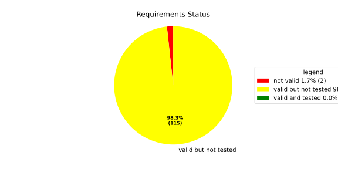
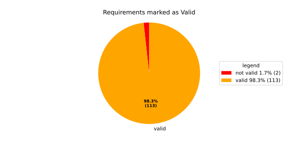
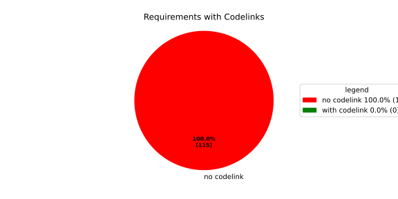

Component Requirements Statistics#
Overview#

In Detail#


No needs passed the filters
Failed Tests
Hint: This table should be empty. Before a PR can be merged all tests have to be successful.
No needs passed the filters
Skipped / Disabled Tests
No needs passed the filters
All passed Tests#
No needs passed the filters
Details About Testcases#
No needs passed the filters
No needs passed the filters
Test Log Files#
tests-report/tests/integration/process_simple_rep_failure/process_simple_rep_failure/test.log
exec ${PAGER:-/usr/bin/less} "$0" || exit 1
Executing tests from //tests/integration/process_simple_rep_failure:process_simple_rep_failure
-----------------------------------------------------------------------------
============================= test session starts ==============================
platform linux -- Python 3.12.12, pytest-9.0.3, pluggy-1.5.0
rootdir: /home/runner/.bazel/sandbox/processwrapper-sandbox/823/execroot/_main/bazel-out/k8-fastbuild/bin/tests/integration/process_simple_rep_failure/process_simple_rep_failure.runfiles/score_itf+
configfile: pytest.ini
collected 1 item
../score_itf+::test_recovery_action_simple_rep_failure
-------------------------------- live log setup --------------------------------
[2026-06-16 07:25:14.097] [INFO] [score.itf.plugins.docker] Executing custom image bootstrap command: tests/utils/environments/x86_64-linux/x86_64-linux.sh
[2026-06-16 07:25:18.268] [DEBUG] [docker.utils.config] Trying paths: ['/home/runner/.docker/config.json', '/home/runner/.dockercfg']
[2026-06-16 07:25:18.268] [DEBUG] [docker.utils.config] Found file at path: /home/runner/.docker/config.json
[2026-06-16 07:25:18.268] [DEBUG] [docker.auth] Found 'auths' section
[2026-06-16 07:25:18.268] [DEBUG] [docker.auth] Found entry (registry='https://index.docker.io/v1/', username='githubactions')
[2026-06-16 07:25:18.278] [DEBUG] [urllib3.connectionpool] http://localhost:None "GET /version HTTP/1.1" 200 823
[2026-06-16 07:25:18.300] [DEBUG] [urllib3.connectionpool] http://localhost:None "POST /v1.48/containers/create HTTP/1.1" 201 88
[2026-06-16 07:25:18.301] [DEBUG] [urllib3.connectionpool] http://localhost:None "GET /v1.48/containers/3a70c6adcc77fd208803e32d42df55471006524cd2eb7b9d40d1820face319cd/json HTTP/1.1" 200 None
[2026-06-16 07:25:18.537] [DEBUG] [urllib3.connectionpool] http://localhost:None "POST /v1.48/containers/3a70c6adcc77fd208803e32d42df55471006524cd2eb7b9d40d1820face319cd/start HTTP/1.1" 204 0
[2026-06-16 07:25:18.538] [DEBUG] [docker.utils.config] Trying paths: ['/home/runner/.docker/config.json', '/home/runner/.dockercfg']
[2026-06-16 07:25:18.538] [DEBUG] [docker.utils.config] Found file at path: /home/runner/.docker/config.json
[2026-06-16 07:25:18.538] [DEBUG] [docker.auth] Found 'auths' section
[2026-06-16 07:25:18.538] [DEBUG] [docker.auth] Found entry (registry='https://index.docker.io/v1/', username='githubactions')
[2026-06-16 07:25:18.546] [DEBUG] [urllib3.connectionpool] http://localhost:None "GET /version HTTP/1.1" 200 823
[2026-06-16 07:25:18.721] [INFO] [tests.utils.testing_utils.setup_test] Test case setup finished
-------------------------------- live log call ---------------------------------
[2026-06-16 07:25:18.822] [INFO] [launch_manager] 2026/06/16 07:25:18.4718817 1933376 000 ECU1 LM LM log debug verbose 1 Launch Manager Started !!!!
[2026-06-16 07:25:18.823] [INFO] [launch_manager] 2026/06/16 07:25:18.4718817 1933378 000 ECU1 LM LM log debug verbose 1 Loading LCM Configurations...
[2026-06-16 07:25:18.823] [INFO] [launch_manager] 2026/06/16 07:25:18.4718817 1933378 000 ECU1 LM LM log debug verbose 1 ECUCFG_ENV_VAR_ROOTFOLDER set successfully
[2026-06-16 07:25:18.823] [INFO] [launch_manager] 2026/06/16 07:25:18.4718817 1933379 000 ECU1 LM LM log debug verbose 5 FlatBufferParser::getModeGroupPgName: MainPG ( IdentifierHash: 18079021346025578134 )
[2026-06-16 07:25:18.823] [INFO] [launch_manager] 2026/06/16 07:25:18.4718817 1933380 000 ECU1 LM LM log debug verbose 5 FlatBufferParser::getModeGroupPgStateName: MainPG/Startup ( IdentifierHash: 10504605499600661529 )
[2026-06-16 07:25:18.823] [INFO] [launch_manager] 2026/06/16 07:25:18.4718817 1933380 000 ECU1 LM LM log debug verbose 5 FlatBufferParser::getModeGroupPgStateName: MainPG/run_target_app_does_report_krunning_in_time ( IdentifierHash: 11934981641920773349 )
[2026-06-16 07:25:18.823] [INFO] [launch_manager] 2026/06/16 07:25:18.4718817 1933380 000 ECU1 LM LM log debug verbose 5 FlatBufferParser::getModeGroupPgStateName: MainPG/run_target_app_does_not_report_krunning_in_time ( IdentifierHash: 7672161913816744053 )
[2026-06-16 07:25:18.823] [INFO] [launch_manager] 2026/06/16 07:25:18.4718818 1933380 000 ECU1 LM LM log debug verbose 5 FlatBufferParser::getModeGroupPgStateName: MainPG/Off ( IdentifierHash: 15281793077830264047 )
[2026-06-16 07:25:18.823] [INFO] [launch_manager] 2026/06/16 07:25:18.4718818 1933381 000 ECU1 LM LM log debug verbose 5 FlatBufferParser::getModeGroupPgStateName: MainPG/fallback_run_target ( IdentifierHash: 4059409696722237352 )
[2026-06-16 07:25:18.823] [INFO] [launch_manager] 2026/06/16 07:25:18.4718818 1933381 000 ECU1 LM LM log debug verbose 4 parseProcessConfigurations: Process index: 0 executable_path_: /tmp/tests/process_simple_rep_failure/control_client_mock
[2026-06-16 07:25:18.823] [INFO] [launch_manager] 2026/06/16 07:25:18.4718818 1933382 000 ECU1 LM LM log debug verbose 3 Process control_client_mock is Reporting execution state
[2026-06-16 07:25:18.825] [INFO] [launch_manager] 2026/06/16 07:25:18.4718818 1933382 000 ECU1 LM LM log debug verbose 1 Process is STATE_MANAGEMENT function Cluster Affiliation
[2026-06-16 07:25:18.825] [INFO] [launch_manager] 2026/06/16 07:25:18.4718818 1933382 000 ECU1 LM LM log debug verbose 3 Process control_client_mock is Self terminating
[2026-06-16 07:25:18.825] [INFO] [launch_manager] 2026/06/16 07:25:18.4718818 1933382 000 ECU1 LM LM log debug verbose 4 ParseProcessProcessGroup: id:::pg_name_: MainPG , pg_state_name_: MainPG/Startup
[2026-06-16 07:25:18.825] [INFO] [launch_manager] 2026/06/16 07:25:18.4718818 1933382 000 ECU1 LM LM log debug verbose 4 ParseProcessProcessGroup: id:::pg_name_: MainPG , pg_state_name_: MainPG/run_target_app_does_report_krunning_in_time
[2026-06-16 07:25:18.825] [INFO] [launch_manager] 2026/06/16 07:25:18.4718818 1933383 000 ECU1 LM LM log debug verbose 4 ParseProcessProcessGroup: id:::pg_name_: MainPG , pg_state_name_: MainPG/run_target_app_does_not_report_krunning_in_time
[2026-06-16 07:25:18.825] [INFO] [launch_manager] 2026/06/16 07:25:18.4718818 1933383 000 ECU1 LM LM log debug verbose 4 ParseProcessProcessGroup: id:::pg_name_: MainPG , pg_state_name_: MainPG/fallback_run_target
[2026-06-16 07:25:18.825] [INFO] [launch_manager] 2026/06/16 07:25:18.4718818 1933383 000 ECU1 LM LM log debug verbose 4 parseProcessConfigurations: Process index: 1 executable_path_: /tmp/tests/process_simple_rep_failure/process_simple_reporting
[2026-06-16 07:25:18.825] [INFO] [launch_manager] 2026/06/16 07:25:18.4718818 1933383 000 ECU1 LM LM log debug verbose 3 Process component_does_report_krunning_in_time is Reporting execution state
[2026-06-16 07:25:18.825] [INFO] [launch_manager] 2026/06/16 07:25:18.4718818 1933383 000 ECU1 LM LM log debug verbose 1 Process is NOT associated with any function Cluster Affiliation
[2026-06-16 07:25:18.825] [INFO] [launch_manager] 2026/06/16 07:25:18.4718818 1933384 000 ECU1 LM LM log debug verbose 3 Process component_does_report_krunning_in_time is Self terminating
[2026-06-16 07:25:18.825] [INFO] [launch_manager] 2026/06/16 07:25:18.4718818 1933384 000 ECU1 LM LM log debug verbose 4 ParseProcessProcessGroup: id:::pg_name_: MainPG , pg_state_name_: MainPG/run_target_app_does_report_krunning_in_time
[2026-06-16 07:25:18.825] [INFO] [launch_manager] 2026/06/16 07:25:18.4718818 1933384 000 ECU1 LM LM log debug verbose 4 parseProcessConfigurations: Process index: 2 executable_path_: /tmp/tests/process_simple_rep_failure/process_simple_reporting
[2026-06-16 07:25:18.825] [INFO] [launch_manager] 2026/06/16 07:25:18.4718818 1933384 000 ECU1 LM LM log debug verbose 3 Process component_does_not_report_krunning_in_time is Reporting execution state
[2026-06-16 07:25:18.825] [INFO] [launch_manager] 2026/06/16 07:25:18.4718818 1933385 000 ECU1 LM LM log debug verbose 1 Process is NOT associated with any function Cluster Affiliation
[2026-06-16 07:25:18.826] [INFO] [launch_manager] 2026/06/16 07:25:18.4718818 1933385 000 ECU1 LM LM log debug verbose 3 Process component_does_not_report_krunning_in_time is Self terminating
[2026-06-16 07:25:18.826] [INFO] [launch_manager] 2026/06/16 07:25:18.4718818 1933385 000 ECU1 LM LM log debug verbose 4 ParseProcessProcessGroup: id:::pg_name_: MainPG , pg_state_name_: MainPG/run_target_app_does_not_report_krunning_in_time
[2026-06-16 07:25:18.826] [INFO] [launch_manager] 2026/06/16 07:25:18.4718818 1933385 000 ECU1 LM LM log debug verbose 4 parseProcessConfigurations: Process index: 3 executable_path_: /tmp/tests/process_simple_rep_failure/verification_process
[2026-06-16 07:25:18.826] [INFO] [launch_manager] 2026/06/16 07:25:18.4718818 1933386 000 ECU1 LM LM log debug verbose 3 Process verification_component is NOT Reporting execution state
[2026-06-16 07:25:18.826] [INFO] [launch_manager] 2026/06/16 07:25:18.4718818 1933386 000 ECU1 LM LM log debug verbose 1 Process is NOT associated with any function Cluster Affiliation
[2026-06-16 07:25:18.826] [INFO] [launch_manager] 2026/06/16 07:25:18.4718818 1933386 000 ECU1 LM LM log debug verbose 3 Process verification_component is Self terminating
[2026-06-16 07:25:18.826] [INFO] [launch_manager] 2026/06/16 07:25:18.4718818 1933386 000 ECU1 LM LM log debug verbose 4 ParseProcessProcessGroup: id:::pg_name_: MainPG , pg_state_name_: MainPG/fallback_run_target
[2026-06-16 07:25:18.826] [INFO] [launch_manager] 2026/06/16 07:25:18.4718818 1933386 000 ECU1 LM LM log debug verbose 3 Loading SWCL Nr. 0 Succeeded
[2026-06-16 07:25:18.826] [INFO] [launch_manager] 2026/06/16 07:25:18.4718818 1933386 000 ECU1 LM LM log debug verbose 2 1 process group(s)
[2026-06-16 07:25:18.826] [INFO] [launch_manager] 2026/06/16 07:25:18.4718818 1933387 000 ECU1 LM LM log debug verbose 3 Creating graph with 4 nodes
[2026-06-16 07:25:18.826] [INFO] [launch_manager] 2026/06/16 07:25:18.4718818 1933387 000 ECU1 LM LM log debug verbose 1 Process groups initialized successfully
[2026-06-16 07:25:18.826] [INFO] [launch_manager] 2026/06/16 07:25:18.4718818 1933387 000 ECU1 LM LM log debug verbose 1 Process Group initialization done
[2026-06-16 07:25:18.827] [INFO] [launch_manager] 2026/06/16 07:25:18.4718818 1933387 000 ECU1 LM LM log debug verbose 3 Creating Safe Process Map with 4 entries
[2026-06-16 07:25:18.827] [INFO] [launch_manager] 2026/06/16 07:25:18.4718818 1933387 000 ECU1 LM LM log debug verbose 2 Creating job queue with capacity 1024
[2026-06-16 07:25:18.827] [INFO] [launch_manager] 2026/06/16 07:25:18.4718818 1933388 000 ECU1 LM LM log debug verbose 1 Creating worker threads...
[2026-06-16 07:25:18.827] [INFO] [launch_manager] 2026/06/16 07:25:18.4718820 1933405 000 ECU1 LM LM log debug verbose 7
[2026-06-16 07:25:18.827] [INFO] [launch_manager] Process group index 0 (with name MainPG ) has 4 processes
[2026-06-16 07:25:18.827] [INFO] [launch_manager] 2026/06/16 07:25:18.4718820 1933407 000 ECU1 LM LM log debug verbose 2
[2026-06-16 07:25:18.827] [INFO] [launch_manager] Creating process node with id: 0
[2026-06-16 07:25:18.827] [INFO] [launch_manager] 2026/06/16 07:25:18.4718821 1933416 000 ECU1 LM LM log debug verbose 5
[2026-06-16 07:25:18.827] [INFO] [launch_manager] Process 0 has 0 start dependencies
[2026-06-16 07:25:18.827] [INFO] [launch_manager] 2026/06/16 07:25:18.4718821 1933419 000 ECU1 LM LM log debug verbose 2
[2026-06-16 07:25:18.827] [INFO] [launch_manager] Creating process node with id: 1
[2026-06-16 07:25:18.827] [INFO] [launch_manager] 2026/06/16 07:25:18.4718822 1933421 000 ECU1 LM LM log debug verbose 5
[2026-06-16 07:25:18.827] [INFO] [launch_manager] Process 1 has 0 start dependencies
[2026-06-16 07:25:18.827] [INFO] [launch_manager] 2026/06/16 07:25:18.4718822 1933423 000 ECU1 LM LM log debug verbose 2
[2026-06-16 07:25:18.827] [INFO] [launch_manager] Creating process node with id: 2
[2026-06-16 07:25:18.827] [INFO] [launch_manager] 2026/06/16 07:25:18.4718822 1933425 000 ECU1 LM LM log debug verbose 5
[2026-06-16 07:25:18.827] [INFO] [launch_manager] Process 2 has 0 start dependencies
[2026-06-16 07:25:18.827] [INFO] [launch_manager] 2026/06/16 07:25:18.4718822 1933426 000 ECU1 LM LM log debug verbose 2
[2026-06-16 07:25:18.828] [INFO] [launch_manager] Creating process node with id: 3
[2026-06-16 07:25:18.828] [INFO] [launch_manager] 2026/06/16 07:25:18.4718822 1933428 000 ECU1 LM LM log debug verbose 5 Process 3 has 0 start dependencies
[2026-06-16 07:25:18.828] [INFO] [launch_manager] 2026/06/16 07:25:18.4718822 1933429 000 ECU1 LM LM log debug verbose 3
[2026-06-16 07:25:18.828] [INFO] [launch_manager] Created 4 process nodes
[2026-06-16 07:25:18.828] [INFO] [launch_manager] 2026/06/16 07:25:18.4718822 1933430 000 ECU1 LM LM log debug verbose 2
[2026-06-16 07:25:18.828] [INFO] [launch_manager] Creating successor lists for process group MainPG
[2026-06-16 07:25:18.828] [INFO] [launch_manager] 2026/06/16 07:25:18.4718823 1933432 000 ECU1 LM LM log debug verbose 1
[2026-06-16 07:25:18.828] [INFO] [launch_manager] Graphs initialized
[2026-06-16 07:25:18.828] [INFO] [launch_manager] 2026/06/16 07:25:18.4718823 1933436 000 ECU1 LM Fcty log info verbose 2
[2026-06-16 07:25:18.828] [INFO] [launch_manager] Factory for FlatCfg MachineConfig: Loading of HM Machine Configuration succeeded.
[2026-06-16 07:25:18.828] [INFO] [launch_manager] 2026/06/16 07:25:18.4718824 1933444 000 ECU1 LM Fcty log debug verbose 3
[2026-06-16 07:25:18.829] [INFO] [launch_manager] Factory for FlatCfg MachineConfig: Alive Supervision buffer size: 100
[2026-06-16 07:25:18.829] [INFO] [launch_manager] 2026/06/16 07:25:18.4718824 1933447 000 ECU1 LM Fcty log debug verbose 3
[2026-06-16 07:25:18.829] [INFO] [launch_manager] Factory for FlatCfg MachineConfig: Monitor buffer size: 512
[2026-06-16 07:25:18.829] [INFO] [launch_manager] 2026/06/16 07:25:18.4718824 1933448 000 ECU1 LM Fcty log debug verbose 4
[2026-06-16 07:25:18.829] [INFO] [launch_manager] Factory for FlatCfg MachineConfig: Periodicity: 50000000 ns
[2026-06-16 07:25:18.829] [INFO] [launch_manager] 2026/06/16 07:25:18.4718824 1933449 000 ECU1 LM Fcty log debug verbose 3 Factory for FlatCfg MachineConfig: Configured watchdogs: 0
[2026-06-16 07:25:18.829] [INFO] [launch_manager] 2026/06/16 07:25:18.4718824 1933449 000 ECU1 LM Fcty log warn verbose 2 Factory for FlatCfg MachineConfig: No watchdog configured
[2026-06-16 07:25:18.829] [INFO] [launch_manager] 2026/06/16 07:25:18.4718824 1933450 000 ECU1 LM Fcty log debug verbose 2 Software Cluster Handler starts constructing workers: MainCluster
[2026-06-16 07:25:18.829] [INFO] [launch_manager] 2026/06/16 07:25:18.4718825 1933451 000 ECU1 LM Fcty log debug verbose 3 Factory for FlatCfg AR24-11: Successfully created Process States: control_client_mock
[2026-06-16 07:25:18.829] [INFO] [launch_manager] 2026/06/16 07:25:18.4718825 1933451 000 ECU1 LM Fcty log debug verbose 3 Factory for FlatCfg AR24-11: Number of constructed Process States: 1
[2026-06-16 07:25:18.829] [INFO] [launch_manager] 2026/06/16 07:25:18.4718825 1933452 000 ECU1 LM Fcty log debug verbose 3 Factory for FlatCfg AR24-11: Successfully created Monitor interface IPC with path: lifecycle_health_control_client_mock
[2026-06-16 07:25:18.829] [INFO] [launch_manager] 2026/06/16 07:25:18.4718825 1933452 000 ECU1 LM Fcty log debug verbose 3 Factory for FlatCfg AR24-11: Number of constructed Monitor interface IPCs: 1
[2026-06-16 07:25:18.829] [INFO] [launch_manager] 2026/06/16 07:25:18.4718825 1933452 000 ECU1 LM Fcty log debug verbose 3 Factory for FlatCfg AR24-11: Successfully created MonitorInterface: /lifecycle_health_control_client_mock
[2026-06-16 07:25:18.830] [INFO] [launch_manager] 2026/06/16 07:25:18.4718825 1933453 000 ECU1 LM Fcty log debug verbose 3 Factory for FlatCfg AR24-11: Number of constructed Monitor interfaces: 1
[2026-06-16 07:25:18.830] [INFO] [launch_manager] 2026/06/16 07:25:18.4718825 1933453 000 ECU1 LM Fcty log debug verbose 3 Factory for FlatCfg AR24-11: Successfully created supervision checkpoint: control_client_mock_checkpoint
[2026-06-16 07:25:18.830] [INFO] [launch_manager] 2026/06/16 07:25:18.4718825 1933453 000 ECU1 LM Fcty log debug verbose 3 Factory for FlatCfg AR24-11: Number of constructed supervision checkpoints: 1
[2026-06-16 07:25:18.830] [INFO] [launch_manager] 2026/06/16 07:25:18.4718825 1933453 000 ECU1 LM Fcty log debug verbose 3 Factory for FlatCfg AR24-11: Successfully created alive supervision worker object: control_client_mock_alive_supervision
[2026-06-16 07:25:18.830] [INFO] [launch_manager] 2026/06/16 07:25:18.4718825 1933454 000 ECU1 LM Fcty log debug verbose 3 Factory for FlatCfg AR24-11: Number of constructed alive supervisions: 1
[2026-06-16 07:25:18.830] [INFO] [launch_manager] 2026/06/16 07:25:18.4718825 1933454 000 ECU1 LM Fcty log info verbose 2
[2026-06-16 07:25:18.830] [INFO] [launch_manager] Phm Daemon: The (configured) periodicity in [ns] is set to: 50000000
[2026-06-16 07:25:18.830] [INFO] [launch_manager] 2026/06/16 07:25:18.4718825 1933454 000 ECU1 LM Fcty log debug verbose 2 Phm Daemon: The accuracy of the monotonic system clock in [ns] is: 1
[2026-06-16 07:25:18.830] [INFO] [launch_manager] 2026/06/16 07:25:18.4718825 1933455 000 ECU1 LM Fcty log debug verbose 3 HealthMonitor: Initialization took 2 ms
[2026-06-16 07:25:18.830] [INFO] [launch_manager] 2026/06/16 07:25:18.4718825 1933456 000 ECU1 LM LM log info verbose 1 LCM started successfully
[2026-06-16 07:25:18.830] [INFO] [launch_manager] 2026/06/16 07:25:18.4718825 1933457 000 ECU1 LM LM log debug verbose 3 clock() at run(): 33.764000 ms
[2026-06-16 07:25:18.830] [INFO] [launch_manager] 2026/06/16 07:25:18.4718825 1933460 000 ECU1 LM LM log debug verbose 1
[2026-06-16 07:25:18.831] [INFO] [launch_manager] =============STARTING MAINPG STARTUP STATE============
[2026-06-16 07:25:18.831] [INFO] [launch_manager] 2026/06/16 07:25:18.4718826 1933462 000 ECU1 LM LM log debug verbose 9 Graph::setState changes from kSuccess to kInTransition for PG 0 ( MainPG )
[2026-06-16 07:25:18.831] [INFO] [launch_manager] 2026/06/16 07:25:18.4718826 1933463 000 ECU1 LM LM log debug verbose 2 Stop Dependencies: 0
[2026-06-16 07:25:18.831] [INFO] [launch_manager] 2026/06/16 07:25:18.4718826 1933463 000 ECU1 LM LM log debug verbose 2 Stop Dependencies: 0
[2026-06-16 07:25:18.831] [INFO] [launch_manager] 2026/06/16 07:25:18.4718826 1933463 000 ECU1 LM LM log debug verbose 2 Stop Dependencies: 0
[2026-06-16 07:25:18.831] [INFO] [launch_manager] 2026/06/16 07:25:18.4718826 1933463 000 ECU1 LM LM log debug verbose 2 Stop Dependencies: 0
[2026-06-16 07:25:18.833] [INFO] [launch_manager] 2026/06/16 07:25:18.4718826 1933463 000 ECU1 LM LM log debug verbose 2 Start Dependencies: 0
[2026-06-16 07:25:18.834] [INFO] [launch_manager] 2026/06/16 07:25:18.4718826 1933463 000 ECU1 LM LM log debug verbose 2 Start Dependencies: 0
[2026-06-16 07:25:18.834] [INFO] [launch_manager] 2026/06/16 07:25:18.4718826 1933464 000 ECU1 LM LM log debug verbose 2 Start Dependencies: 0
[2026-06-16 07:25:18.834] [INFO] [launch_manager] 2026/06/16 07:25:18.4718826 1933464 000 ECU1 LM LM log debug verbose 2 Start Dependencies: 0
[2026-06-16 07:25:18.834] [INFO] [launch_manager] 2026/06/16 07:25:18.4718826 1933465 000 ECU1 LM LM log debug verbose 6 Starting process 0 ( control_client_mock ) from executable /tmp/tests/process_simple_rep_failure/control_client_mock
[2026-06-16 07:25:18.834] [INFO] [launch_manager] 2026/06/16 07:25:18.4718826 1933466 000 ECU1 LM LM log debug verbose 3 Initialize the control client for control_client_mock process
[2026-06-16 07:25:18.834] [INFO] [launch_manager] 2026/06/16 07:25:18.4718826 1933467 000 ECU1 LM LM log debug verbose 1 ControlClientChannel initialized
[2026-06-16 07:25:18.843] [INFO] [launch_manager] 2026/06/16 07:25:18.4718833 1933614 000 ECU1 LM LM log debug verbose 4 startProcess pid 65 received for process: control_client_mock
[2026-06-16 07:25:18.843] [INFO] [launch_manager] 2026/06/16 07:25:18.4718841 1933618 000 ECU1 LM LM log debug verbose 1
[2026-06-16 07:25:18.844] [INFO] [launch_manager] ControlClientChannel obtained from sync.
[2026-06-16 07:25:18.850] [INFO] [launch_manager] [==========] Running 1 test from 1 test suite.
[2026-06-16 07:25:18.850] [INFO] [launch_manager] [----------] Global test environment set-up.
[2026-06-16 07:25:18.850] [INFO] [launch_manager] [----------] 1 test from RecoveryActionSimpleRepFailure
[2026-06-16 07:25:18.850] [INFO] [launch_manager] [ RUN ] RecoveryActionSimpleRepFailure.ControlClientMock
[2026-06-16 07:25:18.851] [INFO] [launch_manager] [ STEP ] Report kRunning from ControlClientMock
[2026-06-16 07:25:18.854] [INFO] [launch_manager] [ END STEP ] Report kRunning from ControlClientMock
[2026-06-16 07:25:18.854] [INFO] [launch_manager] [ STEP ] Activate RunTarget run_target_app_does_report_krunning_in_time
[2026-06-16 07:25:18.858] [INFO] [launch_manager] 2026/06/16 07:25:18.4718855 1933753 000 ECU1 LM LM log debug verbose 1 Request sent. Waiting for acknowledgment...
[2026-06-16 07:25:18.858] [INFO] [launch_manager] 2026/06/16 07:25:18.4718856 1933761 000 ECU1 LM LM log debug verbose 8 ProcessGroupManager::ControlClientHandler: got request kSetStateRequest ( 16 ) re state MainPG/run_target_app_does_report_krunning_in_time of PG MainPG
[2026-06-16 07:25:18.858] [INFO] [launch_manager] 2026/06/16 07:25:18.4718856 1933762 000 ECU1 LM LM log debug verbose 6 Pending state for process group MainPG changed from to MainPG/run_target_app_does_report_krunning_in_time
[2026-06-16 07:25:18.858] [INFO] [launch_manager] 2026/06/16 07:25:18.4718856 1933763 000 ECU1 LM LM log debug verbose 9 Graph::setState changes from kInTransition to kCancelled for PG 0 ( MainPG )
[2026-06-16 07:25:18.858] [INFO] [launch_manager] 2026/06/16 07:25:18.4718856 1933764 000 ECU1 LM LM log debug verbose 1 Control Client handler nudged
[2026-06-16 07:25:18.858] [INFO] [launch_manager] 2026/06/16 07:25:18.4718856 1933765 000 ECU1 LM LM log debug verbose 1 Request acknowledged.
[2026-06-16 07:25:18.858] [INFO] [launch_manager] 2026/06/16 07:25:18.4718856 1933766 000 ECU1 LM LM log debug verbose 8 Got kRunning for pid 65 ( control_client_mock ) process 0 of group MainPG
[2026-06-16 07:25:18.858] [INFO] [launch_manager] 2026/06/16 07:25:18.4718856 1933766 000 ECU1 LM LM log debug verbose 7 startProcess for MainPG process 0 ( control_client_mock ) done
[2026-06-16 07:25:18.858] [INFO] [launch_manager] 2026/06/16 07:25:18.4718856 1933767 000 ECU1 LM LM log debug verbose 1 Control Client handler nudged
[2026-06-16 07:25:18.858] [INFO] [launch_manager] 2026/06/16 07:25:18.4718856 1933768 000 ECU1 LM LM log fatal verbose 3 clock() at failed initial state transition: 35.454000 ms
[2026-06-16 07:25:18.858] [INFO] [launch_manager] 2026/06/16 07:25:18.4718856 1933769 000 ECU1 LM LM log debug verbose 9 Graph::setState changes from kCancelled to kUndefinedState for PG 0 ( MainPG )
[2026-06-16 07:25:18.858] [INFO] [launch_manager] 2026/06/16 07:25:18.4718856 1933769 000 ECU1 LM LM log debug verbose 1 Control Client handler nudged
[2026-06-16 07:25:18.858] [INFO] [launch_manager] 2026/06/16 07:25:18.4718857 1933771 000 ECU1 LM LM log debug verbose 1 Request acknowledged.
[2026-06-16 07:25:18.860] [INFO] [launch_manager] 2026/06/16 07:25:18.4718859 1933799 000 ECU1 LM LM log debug verbose 6 Pending state for process group MainPG changed from MainPG/run_target_app_does_report_krunning_in_time to
[2026-06-16 07:25:18.860] [INFO] [launch_manager] 2026/06/16 07:25:18.4718859 1933800 000 ECU1 LM LM log debug verbose 4 Start transition to MainPG/run_target_app_does_report_krunning_in_time for PG MainPG
[2026-06-16 07:25:18.860] [INFO] [launch_manager] 2026/06/16 07:25:18.4718860 1933801 000 ECU1 LM LM log debug verbose 9
[2026-06-16 07:25:18.861] [INFO] [launch_manager] Graph::setState changes from kUndefinedState to kInTransition for PG 0 ( MainPG )
[2026-06-16 07:25:18.861] [INFO] [launch_manager] 2026/06/16 07:25:18.4718860 1933806 000 ECU1 LM LM log debug verbose 2 Stop Dependencies: 0
[2026-06-16 07:25:18.861] [INFO] [launch_manager] 2026/06/16 07:25:18.4718860 1933807 000 ECU1 LM LM log debug verbose 2 Stop Dependencies: 0
[2026-06-16 07:25:18.861] [INFO] [launch_manager] 2026/06/16 07:25:18.4718860 1933807 000 ECU1 LM LM log debug verbose 2 Stop Dependencies: 0
[2026-06-16 07:25:18.861] [INFO] [launch_manager] 2026/06/16 07:25:18.4718860 1933808 000 ECU1 LM LM log debug verbose 2 Stop Dependencies: 0
[2026-06-16 07:25:18.861] [INFO] [launch_manager] 2026/06/16 07:25:18.4718860 1933809 000 ECU1 LM LM log debug verbose 2 Start Dependencies: 0
[2026-06-16 07:25:18.861] [INFO] [launch_manager] 2026/06/16 07:25:18.4718860 1933810 000 ECU1 LM LM log debug verbose 2 Start Dependencies: 0
[2026-06-16 07:25:18.861] [INFO] [launch_manager] 2026/06/16 07:25:18.4718861 1933811 000 ECU1 LM LM log debug verbose 2 Start Dependencies: 0
[2026-06-16 07:25:18.861] [INFO] [launch_manager] 2026/06/16 07:25:18.4718861 1933811 000 ECU1 LM LM log debug verbose 2
[2026-06-16 07:25:18.861] [INFO] [launch_manager] Start Dependencies: 0
[2026-06-16 07:25:18.861] [INFO] [launch_manager] 2026/06/16 07:25:18.4718861 1933814 000 ECU1 LM LM log debug verbose 6
[2026-06-16 07:25:18.861] [INFO] [launch_manager] Starting process 1 ( component_does_report_krunning_in_time ) from executable /tmp/tests/process_simple_rep_failure/process_simple_reporting
[2026-06-16 07:25:18.862] [INFO] [launch_manager] 2026/06/16 07:25:18.4718862 1933824 000 ECU1 LM LM log debug verbose 4 startProcess pid 72 received for process: component_does_report_krunning_in_time
[2026-06-16 07:25:18.864] [INFO] [launch_manager] [==========] Running 1 test from 1 test suite.
[2026-06-16 07:25:18.865] [INFO] [launch_manager] [----------] Global test environment set-up.
[2026-06-16 07:25:18.865] [INFO] [launch_manager] [----------] 1 test from ProcessSimpleRepFailure
[2026-06-16 07:25:18.865] [INFO] [launch_manager] [ RUN ] ProcessSimpleRepFailure.ProcessSimpleReporting
[2026-06-16 07:25:18.865] [INFO] [launch_manager] [ STEP ] Check args
[2026-06-16 07:25:18.865] [INFO] [launch_manager] [ END STEP ] Check args
[2026-06-16 07:25:18.866] [INFO] [launch_manager] [ STEP ] Report kRunning from ProcessSimpleReporting
[2026-06-16 07:25:18.875] [INFO] [launch_manager] 2026/06/16 07:25:18.4718875 1933956 000 ECU1 LM Sprv log debug verbose 6 Process with Id control_client_mock changed state PG MainPG/Startup PS 1
[2026-06-16 07:25:18.875] [INFO] [launch_manager] 2026/06/16 07:25:18.4718875 1933956 000 ECU1 LM Sprv log debug verbose 6 Process with Id control_client_mock changed state PG MainPG/Startup PS 2
[2026-06-16 07:25:18.876] [INFO] [launch_manager] 2026/06/16 07:25:18.4718875 1933957 000 ECU1 LM Sprv log debug verbose 6 Process with Id component_does_report_krunning_in_time changed state PG MainPG/run_target_app_does_report_krunning_in_time PS 1
[2026-06-16 07:25:18.876] [INFO] [launch_manager] 2026/06/16 07:25:18.4718875 1933957 000 ECU1 LM Sprv log info verbose 3 Alive Supervision ( control_client_mock_alive_supervision ) switched to OK.
[2026-06-16 07:25:18.900] [DEBUG] [tests.utils.testing_utils.run_until_file_deployed] Waiting for /tmp/tests/test_end
[2026-06-16 07:25:19.367] [INFO] [launch_manager] [ END STEP ] Report kRunning from ProcessSimpleReporting
[2026-06-16 07:25:19.367] [INFO] [launch_manager] [ OK ] ProcessSimpleRepFailure.ProcessSimpleReporting (502 ms)
[2026-06-16 07:25:19.368] [INFO] [launch_manager] [----------] 1 test from ProcessSimpleRepFailure (502 ms total)
[2026-06-16 07:25:19.368] [INFO] [launch_manager] [----------] Global test environment tear-down
[2026-06-16 07:25:19.368] [INFO] [launch_manager] [==========] 1 test from 1 test suite ran. (502 ms total)
[2026-06-16 07:25:19.368] [INFO] [launch_manager] [ PASSED ] 1 test.
[2026-06-16 07:25:19.369] [INFO] [launch_manager] 2026/06/16 07:25:19.4719369 1938894 000 ECU1 LM LM log debug verbose 12 Child process 1 of MainPG pid 72 ( component_does_report_krunning_in_time ) for node True terminated with status 0
[2026-06-16 07:25:19.369] [INFO] [launch_manager] 2026/06/16 07:25:19.4719369 1938897 000 ECU1 LM LM log debug verbose 8
[2026-06-16 07:25:19.370] [INFO] [launch_manager] Got kRunning for pid 72 ( component_does_report_krunning_in_time ) process 1 of group MainPG
[2026-06-16 07:25:19.370] [INFO] [launch_manager] 2026/06/16 07:25:19.4719370 1938903 000 ECU1 LM LM log debug verbose 7
[2026-06-16 07:25:19.370] [INFO] [launch_manager] startProcess for MainPG process 1 ( component_does_report_krunning_in_time ) done
[2026-06-16 07:25:19.370] [INFO] [launch_manager] 2026/06/16 07:25:19.4719370 1938907 000 ECU1 LM LM log debug verbose 9
[2026-06-16 07:25:19.371] [INFO] [launch_manager] Graph::setState changes from kInTransition to kSuccess for PG 0 ( MainPG )
[2026-06-16 07:25:19.371] [INFO] [launch_manager] 2026/06/16 07:25:19.4719371 1938912 000 ECU1 LM LM log info verbose 7
[2026-06-16 07:25:19.371] [INFO] [launch_manager] Completed the request for PG MainPG to State MainPG/run_target_app_does_report_krunning_in_time in 514 ms
[2026-06-16 07:25:19.372] [INFO] [launch_manager] 2026/06/16 07:25:19.4719371 1938920 000 ECU1 LM LM log debug verbose 1
[2026-06-16 07:25:19.372] [INFO] [launch_manager] Control Client handler nudged
[2026-06-16 07:25:19.373] [INFO] [launch_manager] 2026/06/16 07:25:19.4719373 1938937 000 ECU1 LM LM log debug verbose 8 ProcessGroupManager::ControlClientHandler: Sending kSetStateSuccess ( 20 ) re state MainPG/run_target_app_does_report_krunning_in_time of PG MainPG
[2026-06-16 07:25:19.374] [INFO] [launch_manager] 2026/06/16 07:25:19.4719373 1938938 000 ECU1 LM LM log debug verbose 1
[2026-06-16 07:25:19.374] [INFO] [launch_manager] Response sent.
[2026-06-16 07:25:19.376] [INFO] [launch_manager] 2026/06/16 07:25:19.4719375 1938959 000 ECU1 LM Sprv log debug verbose 6 Process with Id component_does_report_krunning_in_time changed state PG MainPG/run_target_app_does_report_krunning_in_time PS 4
[2026-06-16 07:25:19.464] [INFO] [launch_manager] 2026/06/16 07:25:19.4719453 1939740 000 ECU1 LM LM log debug verbose 1 Response retrieved.
[2026-06-16 07:25:19.464] [INFO] [launch_manager] [ END STEP ] Activate RunTarget run_target_app_does_report_krunning_in_time
[2026-06-16 07:25:19.473] [DEBUG] [tests.utils.testing_utils.run_until_file_deployed] Waiting for /tmp/tests/test_end
[2026-06-16 07:25:20.067] [DEBUG] [tests.utils.testing_utils.run_until_file_deployed] Waiting for /tmp/tests/test_end
[2026-06-16 07:25:20.455] [INFO] [launch_manager] [ STEP ] Verify fallback run target has not been activated
[2026-06-16 07:25:20.455] [INFO] [launch_manager] [ END STEP ] Verify fallback run target has not been activated
[2026-06-16 07:25:20.455] [INFO] [launch_manager] [ STEP ] Activate RunTarget run_target_app_does_not_report_krunning_in_time
[2026-06-16 07:25:20.455] [INFO] [launch_manager] 2026/06/16 07:25:20.4720455 1949758 000 ECU1 LM LM log debug verbose 1
[2026-06-16 07:25:20.456] [INFO] [launch_manager] Request sent. Waiting for acknowledgment...
[2026-06-16 07:25:20.458] [INFO] [launch_manager] 2026/06/16 07:25:20.4720457 1949778 000 ECU1 LM LM log debug verbose 8 ProcessGroupManager::ControlClientHandler: got request kSetStateRequest ( 16 ) re state MainPG/run_target_app_does_not_report_krunning_in_time of PG MainPG
[2026-06-16 07:25:20.458] [INFO] [launch_manager] 2026/06/16 07:25:20.4720457 1949779 000 ECU1 LM LM log debug verbose 6 Pending state for process group MainPG changed from to MainPG/run_target_app_does_not_report_krunning_in_time
[2026-06-16 07:25:20.458] [INFO] [launch_manager] 2026/06/16 07:25:20.4720457 1949779 000 ECU1 LM LM log debug verbose 1 Request acknowledged.
[2026-06-16 07:25:20.458] [INFO] [launch_manager] 2026/06/16 07:25:20.4720457 1949779 000 ECU1 LM LM log debug verbose 6 Pending state for process group MainPG changed from MainPG/run_target_app_does_not_report_krunning_in_time to
[2026-06-16 07:25:20.458] [INFO] [launch_manager] 2026/06/16 07:25:20.4720457 1949779 000 ECU1 LM LM log debug verbose 4 Start transition to MainPG/run_target_app_does_not_report_krunning_in_time for PG MainPG
[2026-06-16 07:25:20.458] [INFO] [launch_manager] 2026/06/16 07:25:20.4720457 1949780 000 ECU1 LM LM log debug verbose 9 Graph::setState changes from kSuccess to kInTransition for PG 0 ( MainPG )
[2026-06-16 07:25:20.458] [INFO] [launch_manager] 2026/06/16 07:25:20.4720457 1949780 000 ECU1 LM LM log debug verbose 2
[2026-06-16 07:25:20.458] [INFO] [launch_manager] Stop Dependencies: 0
[2026-06-16 07:25:20.459] [INFO] [launch_manager] 2026/06/16 07:25:20.4720457 1949780 000 ECU1 LM LM log debug verbose 2 Stop Dependencies: 0
[2026-06-16 07:25:20.459] [INFO] [launch_manager] 2026/06/16 07:25:20.4720457 1949780 000 ECU1 LM LM log debug verbose 2 Stop Dependencies: 0
[2026-06-16 07:25:20.459] [INFO] [launch_manager] 2026/06/16 07:25:20.4720457 1949780 000 ECU1 LM LM log debug verbose 2 Stop Dependencies: 0
[2026-06-16 07:25:20.459] [INFO] [launch_manager] 2026/06/16 07:25:20.4720458 1949781 000 ECU1 LM LM log debug verbose 2 Start Dependencies: 0
[2026-06-16 07:25:20.459] [INFO] [launch_manager] 2026/06/16 07:25:20.4720458 1949781 000 ECU1 LM LM log debug verbose 2 Start Dependencies: 0
[2026-06-16 07:25:20.459] [INFO] [launch_manager] 2026/06/16 07:25:20.4720458 1949781 000 ECU1 LM LM log debug verbose 2 Start Dependencies: 0
[2026-06-16 07:25:20.459] [INFO] [launch_manager] 2026/06/16 07:25:20.4720458 1949781 000 ECU1 LM LM log debug verbose 2 Start Dependencies: 0
[2026-06-16 07:25:20.459] [INFO] [launch_manager] 2026/06/16 07:25:20.4720458 1949782 000 ECU1 LM LM log debug verbose 6 Starting process 2 ( component_does_not_report_krunning_in_time ) from executable /tmp/tests/process_simple_rep_failure/process_simple_reporting
[2026-06-16 07:25:20.461] [INFO] [launch_manager] 2026/06/16 07:25:20.4720458 1949783 000 ECU1 LM LM log debug verbose 1 Request acknowledged.
[2026-06-16 07:25:20.462] [INFO] [launch_manager] 2026/06/16 07:25:20.4720458 1949788 000 ECU1 LM LM log debug verbose 4
[2026-06-16 07:25:20.462] [INFO] [launch_manager] startProcess pid 85 received for process: component_does_not_report_krunning_in_time
[2026-06-16 07:25:20.462] [INFO] [launch_manager] [==========] Running 1 test from 1 test suite.
[2026-06-16 07:25:20.462] [INFO] [launch_manager] [----------] Global test environment set-up.
[2026-06-16 07:25:20.462] [INFO] [launch_manager] [----------] 1 test from ProcessSimpleRepFailure
[2026-06-16 07:25:20.462] [INFO] [launch_manager] [ RUN ] ProcessSimpleRepFailure.ProcessSimpleReporting
[2026-06-16 07:25:20.462] [INFO] [launch_manager] [ STEP ] Check args
[2026-06-16 07:25:20.463] [INFO] [launch_manager] [ END STEP ] Check args
[2026-06-16 07:25:20.463] [INFO] [launch_manager] [ STEP ] Report kRunning from ProcessSimpleReporting
[2026-06-16 07:25:20.475] [INFO] [launch_manager] 2026/06/16 07:25:20.4720475 1949956 000 ECU1 LM Sprv log debug verbose 6 Process with Id component_does_not_report_krunning_in_time changed state PG MainPG/run_target_app_does_not_report_krunning_in_time PS 1
[2026-06-16 07:25:20.624] [DEBUG] [tests.utils.testing_utils.run_until_file_deployed] Waiting for /tmp/tests/test_end
[2026-06-16 07:25:21.168] [DEBUG] [tests.utils.testing_utils.run_until_file_deployed] Waiting for /tmp/tests/test_end
[2026-06-16 07:25:21.499] [INFO] [launch_manager] 2026/06/16 07:25:21.4721499 1960195 000 ECU1 LM LM log error verbose 1 Semaphore timedWait or post failed: Unable to wait or post on semaphores within the specified timeout.
[2026-06-16 07:25:21.499] [INFO] [launch_manager] 2026/06/16 07:25:21.4721499 1960196 000 ECU1 LM LM log warn verbose 5 Got kRunning timeout for process 2 ( component_does_not_report_krunning_in_time )
[2026-06-16 07:25:21.499] [INFO] [launch_manager] 2026/06/16 07:25:21.4721499 1960196 000 ECU1 LM LM log debug verbose 5 terminating process 2 ( component_does_not_report_krunning_in_time )
[2026-06-16 07:25:21.500] [INFO] [launch_manager] 2026/06/16 07:25:21.4721499 1960196 000 ECU1 LM LM log debug verbose 9 Requesting termination of process 2 of MainPG pid 85 ( component_does_not_report_krunning_in_time )
[2026-06-16 07:25:21.500] [INFO] [launch_manager] 2026/06/16 07:25:21.4721499 1960196 000 ECU1 LM LM log debug verbose 2 Request termination received for 85
[2026-06-16 07:25:21.525] [INFO] [launch_manager] 2026/06/16 07:25:21.4721525 1960456 000 ECU1 LM Sprv log debug verbose 6 Process with Id component_does_not_report_krunning_in_time changed state PG MainPG/run_target_app_does_not_report_krunning_in_time PS 3
[2026-06-16 07:25:21.708] [DEBUG] [tests.utils.testing_utils.run_until_file_deployed] Waiting for /tmp/tests/test_end
[2026-06-16 07:25:22.254] [DEBUG] [tests.utils.testing_utils.run_until_file_deployed] Waiting for /tmp/tests/test_end
[2026-06-16 07:25:22.542] [INFO] [launch_manager] 2026/06/16 07:25:22.4722542 1970621 000 ECU1 LM LM log warn verbose 5 Process 2 ( component_does_not_report_krunning_in_time ) did not respond to SIGTERM, sending SIGKILL
[2026-06-16 07:25:22.542] [INFO] [launch_manager] 2026/06/16 07:25:22.4722542 1970622 000 ECU1 LM LM log debug verbose 2 Forced termination received for pid 85
[2026-06-16 07:25:22.542] [INFO] [launch_manager] 2026/06/16 07:25:22.4722542 1970625 000 ECU1 LM LM log debug verbose 12 Child process 2 of MainPG pid 85 ( component_does_not_report_krunning_in_time ) for node True terminated with status 9
[2026-06-16 07:25:22.542] [INFO] [launch_manager] 2026/06/16 07:25:22.4722542 1970626 000 ECU1 LM LM log warn verbose 7 unexpected termination of process 2 pid 85 ( component_does_not_report_krunning_in_time )
[2026-06-16 07:25:22.542] [INFO] [launch_manager] 2026/06/16 07:25:22.4722542 1970626 000 ECU1 LM LM log debug verbose 9 Graph::setState changes from kInTransition to kAborting for PG 0 ( MainPG )
[2026-06-16 07:25:22.544] [INFO] [launch_manager] 2026/06/16 07:25:22.4722544 1970643 000 ECU1 LM LM log debug verbose 7 terminateProcess for MainPG process 2 ( component_does_not_report_krunning_in_time ) done
[2026-06-16 07:25:22.544] [INFO] [launch_manager] 2026/06/16 07:25:22.4722544 1970643 000 ECU1 LM LM log debug verbose 7 startProcess for MainPG process 2 ( component_does_not_report_krunning_in_time ) done
[2026-06-16 07:25:22.544] [INFO] [launch_manager] 2026/06/16 07:25:22.4722544 1970644 000 ECU1 LM LM log debug verbose 9 Graph::setState changes from kAborting to kUndefinedState for PG 0 ( MainPG )
[2026-06-16 07:25:22.544] [INFO] [launch_manager] 2026/06/16 07:25:22.4722544 1970644 000 ECU1 LM LM log debug verbose 1 Control Client handler nudged
[2026-06-16 07:25:22.545] [INFO] [launch_manager] 2026/06/16 07:25:22.4722544 1970648 000 ECU1 LM LM log debug verbose 8 ProcessGroupManager::ControlClientHandler: Sending kFailedUnexpectedTerminationOnEnter ( 23 ) re state MainPG/run_target_app_does_not_report_krunning_in_time of PG MainPG
[2026-06-16 07:25:22.545] [INFO] [launch_manager] 2026/06/16 07:25:22.4722544 1970648 000 ECU1 LM LM log debug verbose 1 Response sent.
[2026-06-16 07:25:22.545] [INFO] [launch_manager] 2026/06/16 07:25:22.4722544 1970649 000 ECU1 LM LM log warn verbose 3 Problem discovered in PG MainPG Activating Recovery state.
[2026-06-16 07:25:22.545] [INFO] [launch_manager] 2026/06/16 07:25:22.4722544 1970649 000 ECU1 LM LM log debug verbose 9 Graph::setState changes from kUndefinedState to kInTransition for PG 0 ( MainPG )
[2026-06-16 07:25:22.545] [INFO] [launch_manager] 2026/06/16 07:25:22.4722544 1970649 000 ECU1 LM LM log debug verbose 2 Stop Dependencies: 0
[2026-06-16 07:25:22.545] [INFO] [launch_manager] 2026/06/16 07:25:22.4722544 1970649 000 ECU1 LM LM log debug verbose 2 Stop Dependencies: 0
[2026-06-16 07:25:22.545] [INFO] [launch_manager] 2026/06/16 07:25:22.4722544 1970650 000 ECU1 LM LM log debug verbose 2 Stop Dependencies: 0
[2026-06-16 07:25:22.545] [INFO] [launch_manager] 2026/06/16 07:25:22.4722544 1970650 000 ECU1 LM LM log debug verbose 2 Stop Dependencies: 0
[2026-06-16 07:25:22.545] [INFO] [launch_manager] 2026/06/16 07:25:22.4722545 1970650 000 ECU1 LM LM log debug verbose 2 Start Dependencies: 0
[2026-06-16 07:25:22.545] [INFO] [launch_manager] 2026/06/16 07:25:22.4722545 1970651 000 ECU1 LM LM log debug verbose 2 Start Dependencies: 0
[2026-06-16 07:25:22.546] [INFO] [launch_manager] 2026/06/16 07:25:22.4722545 1970651 000 ECU1 LM LM log debug verbose 2 Start Dependencies: 0
[2026-06-16 07:25:22.546] [INFO] [launch_manager] 2026/06/16 07:25:22.4722545 1970651 000 ECU1 LM LM log debug verbose 2 Start Dependencies: 0
[2026-06-16 07:25:22.546] [INFO] [launch_manager] 2026/06/16 07:25:22.4722545 1970652 000 ECU1 LM LM log debug verbose 6 Starting process 3 ( verification_component ) from executable /tmp/tests/process_simple_rep_failure/verification_process
[2026-06-16 07:25:22.546] [INFO] [launch_manager] 2026/06/16 07:25:22.4722545 1970658 000 ECU1 LM LM log debug verbose 4 startProcess pid 110 received for process: verification_component
[2026-06-16 07:25:22.546] [INFO] [launch_manager] 2026/06/16 07:25:22.4722545 1970658 000 ECU1 LM LM log debug verbose 8 Considered kRunning for Non Reporting Process pid 110 ( verification_component ) process 3 of group MainPG
[2026-06-16 07:25:22.546] [INFO] [launch_manager] 2026/06/16 07:25:22.4722545 1970659 000 ECU1 LM LM log debug verbose 7 startProcess for MainPG process 3 ( verification_component ) done
[2026-06-16 07:25:22.546] [INFO] [launch_manager] 2026/06/16 07:25:22.4722545 1970659 000 ECU1 LM LM log debug verbose 9 Graph::setState changes from kInTransition to kSuccess for PG 0 ( MainPG )
[2026-06-16 07:25:22.546] [INFO] [launch_manager] 2026/06/16 07:25:22.4722545 1970659 000 ECU1 LM LM log info verbose 7 Completed the request for PG MainPG to State MainPG/fallback_run_target in 1 ms
[2026-06-16 07:25:22.546] [INFO] [launch_manager] 2026/06/16 07:25:22.4722545 1970659 000 ECU1 LM LM log debug verbose 1 Control Client handler nudged
[2026-06-16 07:25:22.547] [INFO] [launch_manager] 2026/06/16 07:25:22.4722547 1970672 000 ECU1 LM LM log debug verbose 8 ProcessGroupManager::ControlClientHandler: Sending kSetStateSuccess ( 20 ) re state MainPG/fallback_run_target of PG MainPG
[2026-06-16 07:25:22.547] [INFO] [launch_manager] 2026/06/16 07:25:22.4722547 1970673 000 ECU1 LM LM log debug verbose 1 Failed to send response: response is not empty.
[2026-06-16 07:25:22.547] [INFO] [launch_manager] 2026/06/16 07:25:22.4722547 1970673 000 ECU1 LM LM log debug verbose 1 Control Client handler nudged
[2026-06-16 07:25:22.547] [INFO] [launch_manager] 2026/06/16 07:25:22.4722547 1970673 000 ECU1 LM LM log debug verbose 8 ProcessGroupManager::ControlClientHandler: Sending kSetStateSuccess ( 20 ) re state MainPG/fallback_run_target of PG MainPG
[2026-06-16 07:25:22.547] [INFO] [launch_manager] 2026/06/16 07:25:22.4722547 1970673 000 ECU1 LM LM log debug verbose 1
[2026-06-16 07:25:22.547] [INFO] [launch_manager] Failed to send response: response is not empty.
[2026-06-16 07:25:22.547] [INFO] [launch_manager] 2026/06/16 07:25:22.4722547 1970674 000 ECU1 LM LM log debug verbose 1 Control Client handler nudged
[2026-06-16 07:25:22.548] [INFO] [launch_manager] 2026/06/16 07:25:22.4722547 1970675 000 ECU1 LM LM log debug verbose 12 Child process 3 of MainPG pid 110 ( verification_component ) for node True terminated with status 0
[2026-06-16 07:25:22.548] [INFO] [launch_manager] 2026/06/16 07:25:22.4722547 1970676 000 ECU1 LM LM log debug verbose 8 ProcessGroupManager::ControlClientHandler: Sending kSetStateSuccess ( 20 ) re state MainPG/fallback_run_target of PG MainPG
[2026-06-16 07:25:22.548] [INFO] [launch_manager] 2026/06/16 07:25:22.4722547 1970676 000 ECU1 LM LM log debug verbose 1 Failed to send response: response is not empty.
[2026-06-16 07:25:22.548] [INFO] [launch_manager] 2026/06/16 07:25:22.4722547 1970676 000 ECU1 LM LM log debug verbose 1 Control Client handler nudged
[2026-06-16 07:25:22.548] [INFO] [launch_manager] 2026/06/16 07:25:22.4722547 1970676 000 ECU1 LM LM log debug verbose 8 ProcessGroupManager::ControlClientHandler: Sending kSetStateSuccess ( 20 ) re state MainPG/fallback_run_target of PG MainPG
[2026-06-16 07:25:22.548] [INFO] [launch_manager] 2026/06/16 07:25:22.4722547 1970677 000 ECU1 LM LM log debug verbose 1
[2026-06-16 07:25:22.548] [INFO] [launch_manager] Failed to send response: response is not empty.
[2026-06-16 07:25:22.548] [INFO] [launch_manager] 2026/06/16 07:25:22.4722547 1970677 000 ECU1 LM LM log debug verbose 1 Control Client handler nudged
[2026-06-16 07:25:22.548] [INFO] [launch_manager] 2026/06/16 07:25:22.4722547 1970677 000 ECU1 LM LM log debug verbose 8 ProcessGroupManager::ControlClientHandler: Sending kSetStateSuccess ( 20 ) re state MainPG/fallback_run_target of PG MainPG
[2026-06-16 07:25:22.548] [INFO] [launch_manager] 2026/06/16 07:25:22.4722547 1970677 000 ECU1 LM LM log debug verbose 1 Failed to send response: response is not empty.
[2026-06-16 07:25:22.548] [INFO] [launch_manager] 2026/06/16 07:25:22.4722547 1970678 000 ECU1 LM LM log debug verbose 1 Control Client handler nudged
[2026-06-16 07:25:22.548] [INFO] [launch_manager] 2026/06/16 07:25:22.4722547 1970678 000 ECU1 LM LM log debug verbose 8 ProcessGroupManager::ControlClientHandler: Sending kSetStateSuccess ( 20 ) re state MainPG/fallback_run_target of PG MainPG
[2026-06-16 07:25:22.548] [INFO] [launch_manager] 2026/06/16 07:25:22.4722547 1970678 000 ECU1 LM LM log debug verbose 1 Failed to send response: response is not empty.
[2026-06-16 07:25:22.548] [INFO] [launch_manager] 2026/06/16 07:25:22.4722547 1970678 000 ECU1 LM LM log debug verbose 1 Control Client handler nudged
[2026-06-16 07:25:22.548] [INFO] [launch_manager] 2026/06/16 07:25:22.4722547 1970679 000 ECU1 LM LM log debug verbose 8 ProcessGroupManager::ControlClientHandler: Sending kSetStateSuccess ( 20 ) re state MainPG/fallback_run_target of PG MainPG
[2026-06-16 07:25:22.548] [INFO] [launch_manager] 2026/06/16 07:25:22.4722547 1970679 000 ECU1 LM LM log debug verbose 1 Failed to send response: response is not empty.
[2026-06-16 07:25:22.548] [INFO] [launch_manager] 2026/06/16 07:25:22.4722547 1970679 000 ECU1 LM LM log debug verbose 1 Control Client handler nudged
[2026-06-16 07:25:22.549] [INFO] [launch_manager] 2026/06/16 07:25:22.4722547 1970679 000 ECU1 LM LM log debug verbose 8 ProcessGroupManager::ControlClientHandler: Sending kSetStateSuccess ( 20 ) re state MainPG/fallback_run_target of PG MainPG
[2026-06-16 07:25:22.549] [INFO] [launch_manager] 2026/06/16 07:25:22.4722547 1970680 000 ECU1 LM LM log debug verbose 1 Failed to send response: response is not empty.
[2026-06-16 07:25:22.549] [INFO] [launch_manager] 2026/06/16 07:25:22.4722547 1970680 000 ECU1 LM LM log debug verbose 1 Control Client handler nudged
[2026-06-16 07:25:22.549] [INFO] [launch_manager] 2026/06/16 07:25:22.4722547 1970680 000 ECU1 LM LM log debug verbose 8 ProcessGroupManager::ControlClientHandler: Sending kSetStateSuccess ( 20 ) re state MainPG/fallback_run_target of PG MainPG
[2026-06-16 07:25:22.549] [INFO] [launch_manager] 2026/06/16 07:25:22.4722548 1970681 000 ECU1 LM LM log debug verbose 1 Failed to send response: response is not empty.
[2026-06-16 07:25:22.549] [INFO] [launch_manager] 2026/06/16 07:25:22.4722548 1970681 000 ECU1 LM LM log debug verbose 1 Control Client handler nudged
[2026-06-16 07:25:22.549] [INFO] [launch_manager] 2026/06/16 07:25:22.4722548 1970681 000 ECU1 LM LM log debug verbose 8 ProcessGroupManager::ControlClientHandler: Sending kSetStateSuccess ( 20 ) re state MainPG/fallback_run_target of PG MainPG
[2026-06-16 07:25:22.549] [INFO] [launch_manager] 2026/06/16 07:25:22.4722548 1970681 000 ECU1 LM LM log debug verbose 1 Failed to send response: response is not empty.
[2026-06-16 07:25:22.549] [INFO] [launch_manager] 2026/06/16 07:25:22.4722548 1970681 000 ECU1 LM LM log debug verbose 1 Control Client handler nudged
[2026-06-16 07:25:22.549] [INFO] [launch_manager] 2026/06/16 07:25:22.4722548 1970682 000 ECU1 LM LM log debug verbose 8 ProcessGroupManager::ControlClientHandler: Sending kSetStateSuccess ( 20 ) re state MainPG/fallback_run_target of PG MainPG
[2026-06-16 07:25:22.549] [INFO] [launch_manager] 2026/06/16 07:25:22.4722548 1970682 000 ECU1 LM LM log debug verbose 1 Failed to send response: response is not empty.
[2026-06-16 07:25:22.549] [INFO] [launch_manager] 2026/06/16 07:25:22.4722548 1970682 000 ECU1 LM LM log debug verbose 1 Control Client handler nudged
[2026-06-16 07:25:22.549] [INFO] [launch_manager] 2026/06/16 07:25:22.4722548 1970682 000 ECU1 LM LM log debug verbose 8 ProcessGroupManager::ControlClientHandler: Sending kSetStateSuccess ( 20 ) re state MainPG/fallback_run_target of PG MainPG
[2026-06-16 07:25:22.549] [INFO] [launch_manager] 2026/06/16 07:25:22.4722548 1970682 000 ECU1 LM LM log debug verbose 1 Failed to send response: response is not empty.
[2026-06-16 07:25:22.550] [INFO] [launch_manager] 2026/06/16 07:25:22.4722548 1970682 000 ECU1 LM LM log debug verbose 1 Control Client handler nudged
[2026-06-16 07:25:22.550] [INFO] [launch_manager] 2026/06/16 07:25:22.4722548 1970683 000 ECU1 LM LM log debug verbose 8 ProcessGroupManager::ControlClientHandler: Sending kSetStateSuccess ( 20 ) re state MainPG/fallback_run_target of PG MainPG
[2026-06-16 07:25:22.550] [INFO] [launch_manager] 2026/06/16 07:25:22.4722548 1970683 000 ECU1 LM LM log debug verbose 1 Failed to send response: response is not empty.
[2026-06-16 07:25:22.550] [INFO] [launch_manager] 2026/06/16 07:25:22.4722548 1970683 000 ECU1 LM LM log debug verbose 1 Control Client handler nudged
[2026-06-16 07:25:22.550] [INFO] [launch_manager] 2026/06/16 07:25:22.4722548 1970683 000 ECU1 LM LM log debug verbose 8 ProcessGroupManager::ControlClientHandler: Sending kSetStateSuccess ( 20 ) re state MainPG/fallback_run_target of PG MainPG
[2026-06-16 07:25:22.550] [INFO] [launch_manager] 2026/06/16 07:25:22.4722548 1970683 000 ECU1 LM LM log debug verbose 1 Failed to send response: response is not empty.
[2026-06-16 07:25:22.550] [INFO] [launch_manager] 2026/06/16 07:25:22.4722548 1970683 000 ECU1 LM LM log debug verbose 1 Control Client handler nudged
[2026-06-16 07:25:22.550] [INFO] [launch_manager] 2026/06/16 07:25:22.4722548 1970684 000 ECU1 LM LM log debug verbose 8 ProcessGroupManager::ControlClientHandler: Sending kSetStateSuccess ( 20 ) re state MainPG/fallback_run_target of PG MainPG
[2026-06-16 07:25:22.550] [INFO] [launch_manager] 2026/06/16 07:25:22.4722548 1970684 000 ECU1 LM LM log debug verbose 1 Failed to send response: response is not empty.
[2026-06-16 07:25:22.550] [INFO] [launch_manager] 2026/06/16 07:25:22.4722548 1970684 000 ECU1 LM LM log debug verbose 1 Control Client handler nudged
[2026-06-16 07:25:22.550] [INFO] [launch_manager] 2026/06/16 07:25:22.4722548 1970684 000 ECU1 LM LM log debug verbose 8 ProcessGroupManager::ControlClientHandler: Sending kSetStateSuccess ( 20 ) re state MainPG/fallback_run_target of PG MainPG
[2026-06-16 07:25:22.550] [INFO] [launch_manager] 2026/06/16 07:25:22.4722548 1970684 000 ECU1 LM LM log debug verbose 1 Failed to send response: response is not empty.
[2026-06-16 07:25:22.550] [INFO] [launch_manager] 2026/06/16 07:25:22.4722548 1970684 000 ECU1 LM LM log debug verbose 1 Control Client handler nudged
[2026-06-16 07:25:22.550] [INFO] [launch_manager] 2026/06/16 07:25:22.4722548 1970685 000 ECU1 LM LM log debug verbose 8 ProcessGroupManager::ControlClientHandler: Sending kSetStateSuccess ( 20 ) re state MainPG/fallback_run_target of PG MainPG
[2026-06-16 07:25:22.550] [INFO] [launch_manager] 2026/06/16 07:25:22.4722548 1970685 000 ECU1 LM LM log debug verbose 1 Failed to send response: response is not empty.
[2026-06-16 07:25:22.550] [INFO] [launch_manager] 2026/06/16 07:25:22.4722548 1970685 000 ECU1 LM LM log debug verbose 1 Control Client handler nudged
[2026-06-16 07:25:22.550] [INFO] [launch_manager] 2026/06/16 07:25:22.4722548 1970685 000 ECU1 LM LM log debug verbose 8 ProcessGroupManager::ControlClientHandler: Sending kSetStateSuccess ( 20 ) re state MainPG/fallback_run_target of PG MainPG
[2026-06-16 07:25:22.550] [INFO] [launch_manager] 2026/06/16 07:25:22.4722548 1970685 000 ECU1 LM LM log debug verbose 1 Failed to send response: response is not empty.
[2026-06-16 07:25:22.550] [INFO] [launch_manager] 2026/06/16 07:25:22.4722548 1970685 000 ECU1 LM LM log debug verbose 1 Control Client handler nudged
[2026-06-16 07:25:22.550] [INFO] [launch_manager] 2026/06/16 07:25:22.4722548 1970686 000 ECU1 LM LM log debug verbose 8 ProcessGroupManager::ControlClientHandler: Sending kSetStateSuccess ( 20 ) re state MainPG/fallback_run_target of PG MainPG
[2026-06-16 07:25:22.550] [INFO] [launch_manager] 2026/06/16 07:25:22.4722548 1970686 000 ECU1 LM LM log debug verbose 1 Failed to send response: response is not empty.
[2026-06-16 07:25:22.551] [INFO] [launch_manager] 2026/06/16 07:25:22.4722548 1970686 000 ECU1 LM LM log debug verbose 1 Control Client handler nudged
[2026-06-16 07:25:22.551] [INFO] [launch_manager] 2026/06/16 07:25:22.4722548 1970686 000 ECU1 LM LM log debug verbose 8 ProcessGroupManager::ControlClientHandler: Sending kSetStateSuccess ( 20 ) re state MainPG/fallback_run_target of PG MainPG
[2026-06-16 07:25:22.551] [INFO] [launch_manager] 2026/06/16 07:25:22.4722548 1970686 000 ECU1 LM LM log debug verbose 1 Failed to send response: response is not empty.
[2026-06-16 07:25:22.551] [INFO] [launch_manager] 2026/06/16 07:25:22.4722548 1970686 000 ECU1 LM LM log debug verbose 1 Control Client handler nudged
[2026-06-16 07:25:22.551] [INFO] [launch_manager] 2026/06/16 07:25:22.4722548 1970687 000 ECU1 LM LM log debug verbose 8 ProcessGroupManager::ControlClientHandler: Sending kSetStateSuccess ( 20 ) re state MainPG/fallback_run_target of PG MainPG
[2026-06-16 07:25:22.551] [INFO] [launch_manager] 2026/06/16 07:25:22.4722548 1970687 000 ECU1 LM LM log debug verbose 1 Failed to send response: response is not empty.
[2026-06-16 07:25:22.551] [INFO] [launch_manager] 2026/06/16 07:25:22.4722548 1970687 000 ECU1 LM LM log debug verbose 1 Control Client handler nudged
[2026-06-16 07:25:22.551] [INFO] [launch_manager] 2026/06/16 07:25:22.4722548 1970687 000 ECU1 LM LM log debug verbose 8 ProcessGroupManager::ControlClientHandler: Sending kSetStateSuccess ( 20 ) re state MainPG/fallback_run_target of PG MainPG
[2026-06-16 07:25:22.551] [INFO] [launch_manager] 2026/06/16 07:25:22.4722548 1970687 000 ECU1 LM LM log debug verbose 1 Failed to send response: response is not empty.
[2026-06-16 07:25:22.551] [INFO] [launch_manager] 2026/06/16 07:25:22.4722548 1970688 000 ECU1 LM LM log debug verbose 1 Control Client handler nudged
[2026-06-16 07:25:22.551] [INFO] [launch_manager] 2026/06/16 07:25:22.4722548 1970688 000 ECU1 LM LM log debug verbose 8 ProcessGroupManager::ControlClientHandler: Sending kSetStateSuccess ( 20 ) re state MainPG/fallback_run_target of PG MainPG
[2026-06-16 07:25:22.551] [INFO] [launch_manager] 2026/06/16 07:25:22.4722548 1970688 000 ECU1 LM LM log debug verbose 1 Failed to send response: response is not empty.
[2026-06-16 07:25:22.551] [INFO] [launch_manager] 2026/06/16 07:25:22.4722548 1970688 000 ECU1 LM LM log debug verbose 1 Control Client handler nudged
[2026-06-16 07:25:22.551] [INFO] [launch_manager] 2026/06/16 07:25:22.4722548 1970689 000 ECU1 LM LM log debug verbose 8 ProcessGroupManager::ControlClientHandler: Sending kSetStateSuccess ( 20 ) re state MainPG/fallback_run_target of PG MainPG
[2026-06-16 07:25:22.552] [INFO] [launch_manager] 2026/06/16 07:25:22.4722548 1970689 000 ECU1 LM LM log debug verbose 1 Failed to send response: response is not empty.
[2026-06-16 07:25:22.552] [INFO] [launch_manager] 2026/06/16 07:25:22.4722548 1970689 000 ECU1 LM LM log debug verbose 1 Control Client handler nudged
[2026-06-16 07:25:22.552] [INFO] [launch_manager] 2026/06/16 07:25:22.4722548 1970689 000 ECU1 LM LM log debug verbose 8 ProcessGroupManager::ControlClientHandler: Sending kSetStateSuccess ( 20 ) re state MainPG/fallback_run_target of PG MainPG
[2026-06-16 07:25:22.552] [INFO] [launch_manager] 2026/06/16 07:25:22.4722548 1970689 000 ECU1 LM LM log debug verbose 1 Failed to send response: response is not empty.
[2026-06-16 07:25:22.552] [INFO] [launch_manager] 2026/06/16 07:25:22.4722548 1970690 000 ECU1 LM LM log debug verbose 1 Control Client handler nudged
[2026-06-16 07:25:22.552] [INFO] [launch_manager] 2026/06/16 07:25:22.4722548 1970690 000 ECU1 LM LM log debug verbose 8 ProcessGroupManager::ControlClientHandler: Sending kSetStateSuccess ( 20 ) re state MainPG/fallback_run_target of PG MainPG
[2026-06-16 07:25:22.552] [INFO] [launch_manager] 2026/06/16 07:25:22.4722548 1970690 000 ECU1 LM LM log debug verbose 1 Failed to send response: response is not empty.
[2026-06-16 07:25:22.552] [INFO] [launch_manager] 2026/06/16 07:25:22.4722549 1970690 000 ECU1 LM LM log debug verbose 1
[2026-06-16 07:25:22.552] [INFO] [launch_manager] Control Client handler nudged
[2026-06-16 07:25:22.552] [INFO] [launch_manager] 2026/06/16 07:25:22.4722549 1970691 000 ECU1 LM LM log debug verbose 8 ProcessGroupManager::ControlClientHandler: Sending kSetStateSuccess ( 20 ) re state MainPG/fallback_run_target of PG MainPG
[2026-06-16 07:25:22.552] [INFO] [launch_manager] 2026/06/16 07:25:22.4722549 1970692 000 ECU1 LM LM log debug verbose 1
[2026-06-16 07:25:22.552] [INFO] [launch_manager] Failed to send response: response is not empty.
[2026-06-16 07:25:22.552] [INFO] [launch_manager] 2026/06/16 07:25:22.4722549 1970693 000 ECU1 LM LM log debug verbose 1 Control Client handler nudged
[2026-06-16 07:25:22.553] [INFO] [launch_manager] 2026/06/16 07:25:22.4722549 1970693 000 ECU1 LM LM log debug verbose 8 ProcessGroupManager::ControlClientHandler: Sending kSetStateSuccess ( 20 ) re state MainPG/fallback_run_target of PG MainPG
[2026-06-16 07:25:22.553] [INFO] [launch_manager] 2026/06/16 07:25:22.4722549 1970694 000 ECU1 LM LM log debug verbose 1 Failed to send response: response is not empty.
[2026-06-16 07:25:22.553] [INFO] [launch_manager] 2026/06/16 07:25:22.4722549 1970694 000 ECU1 LM LM log debug verbose 1 Control Client handler nudged
[2026-06-16 07:25:22.553] [INFO] [launch_manager] 2026/06/16 07:25:22.4722549 1970694 000 ECU1 LM LM log debug verbose 8 ProcessGroupManager::ControlClientHandler: Sending kSetStateSuccess ( 20 ) re state MainPG/fallback_run_target of PG MainPG
[2026-06-16 07:25:22.553] [INFO] [launch_manager] 2026/06/16 07:25:22.4722549 1970694 000 ECU1 LM LM log debug verbose 1 Failed to send response: response is not empty.
[2026-06-16 07:25:22.553] [INFO] [launch_manager] 2026/06/16 07:25:22.4722549 1970694 000 ECU1 LM LM log debug verbose 1 Control Client handler nudged
[2026-06-16 07:25:22.553] [INFO] [launch_manager] 2026/06/16 07:25:22.4722549 1970695 000 ECU1 LM LM log debug verbose 8 ProcessGroupManager::ControlClientHandler: Sending kSetStateSuccess ( 20 ) re state MainPG/fallback_run_target of PG MainPG
[2026-06-16 07:25:22.553] [INFO] [launch_manager] 2026/06/16 07:25:22.4722549 1970695 000 ECU1 LM LM log debug verbose 1 Failed to send response: response is not empty.
[2026-06-16 07:25:22.553] [INFO] [launch_manager] 2026/06/16 07:25:22.4722549 1970695 000 ECU1 LM LM log debug verbose 1 Control Client handler nudged
[2026-06-16 07:25:22.553] [INFO] [launch_manager] 2026/06/16 07:25:22.4722549 1970695 000 ECU1 LM LM log debug verbose 8 ProcessGroupManager::ControlClientHandler: Sending kSetStateSuccess ( 20 ) re state MainPG/fallback_run_target of PG MainPG
[2026-06-16 07:25:22.553] [INFO] [launch_manager] 2026/06/16 07:25:22.4722549 1970695 000 ECU1 LM LM log debug verbose 1 Failed to send response: response is not empty.
[2026-06-16 07:25:22.553] [INFO] [launch_manager] 2026/06/16 07:25:22.4722549 1970696 000 ECU1 LM LM log debug verbose 1 Control Client handler nudged
[2026-06-16 07:25:22.553] [INFO] [launch_manager] 2026/06/16 07:25:22.4722549 1970696 000 ECU1 LM LM log debug verbose 8 ProcessGroupManager::ControlClientHandler: Sending kSetStateSuccess ( 20 ) re state MainPG/fallback_run_target of PG MainPG
[2026-06-16 07:25:22.553] [INFO] [launch_manager] 2026/06/16 07:25:22.4722549 1970697 000 ECU1 LM LM log debug verbose 1 Failed to send response: response is not empty.
[2026-06-16 07:25:22.553] [INFO] [launch_manager] 2026/06/16 07:25:22.4722549 1970697 000 ECU1 LM LM log debug verbose 1
[2026-06-16 07:25:22.553] [INFO] [launch_manager] Control Client handler nudged
[2026-06-16 07:25:22.554] [INFO] [launch_manager] 2026/06/16 07:25:22.4722549 1970698 000 ECU1 LM LM log debug verbose 8 ProcessGroupManager::ControlClientHandler: Sending kSetStateSuccess ( 20 ) re state MainPG/fallback_run_target of PG MainPG
[2026-06-16 07:25:22.554] [INFO] [launch_manager] 2026/06/16 07:25:22.4722549 1970699 000 ECU1 LM LM log debug verbose 1 Failed to send response: response is not empty.
[2026-06-16 07:25:22.554] [INFO] [launch_manager] 2026/06/16 07:25:22.4722549 1970699 000 ECU1 LM LM log debug verbose 1
[2026-06-16 07:25:22.554] [INFO] [launch_manager] Control Client handler nudged
[2026-06-16 07:25:22.554] [INFO] [launch_manager] 2026/06/16 07:25:22.4722549 1970700 000 ECU1 LM LM log debug verbose 8
[2026-06-16 07:25:22.554] [INFO] [launch_manager] ProcessGroupManager::ControlClientHandler: Sending kSetStateSuccess ( 20 ) re state MainPG/fallback_run_target of PG MainPG
[2026-06-16 07:25:22.554] [INFO] [launch_manager] 2026/06/16 07:25:22.4722550 1970701 000 ECU1 LM LM log debug verbose 1
[2026-06-16 07:25:22.554] [INFO] [launch_manager] Failed to send response: response is not empty.
[2026-06-16 07:25:22.554] [INFO] [launch_manager] 2026/06/16 07:25:22.4722550 1970701 000 ECU1 LM LM log debug verbose 1 Control Client handler nudged
[2026-06-16 07:25:22.554] [INFO] [launch_manager] 2026/06/16 07:25:22.4722550 1970701 000 ECU1 LM LM log debug verbose 8 ProcessGroupManager::ControlClientHandler: Sending kSetStateSuccess ( 20 ) re state MainPG/fallback_run_target of PG MainPG
[2026-06-16 07:25:22.554] [INFO] [launch_manager] 2026/06/16 07:25:22.4722550 1970702 000 ECU1 LM LM log debug verbose 1 Failed to send response: response is not empty.
[2026-06-16 07:25:22.554] [INFO] [launch_manager] 2026/06/16 07:25:22.4722550 1970702 000 ECU1 LM LM log debug verbose 1 Control Client handler nudged
[2026-06-16 07:25:22.554] [INFO] [launch_manager] 2026/06/16 07:25:22.4722550 1970702 000 ECU1 LM LM log debug verbose 8 ProcessGroupManager::ControlClientHandler: Sending kSetStateSuccess ( 20 ) re state MainPG/fallback_run_target of PG MainPG
[2026-06-16 07:25:22.554] [INFO] [launch_manager] 2026/06/16 07:25:22.4722550 1970702 000 ECU1 LM LM log debug verbose 1 Failed to send response: response is not empty.
[2026-06-16 07:25:22.555] [INFO] [launch_manager] 2026/06/16 07:25:22.4722550 1970702 000 ECU1 LM LM log debug verbose 1 Control Client handler nudged
[2026-06-16 07:25:22.555] [INFO] [launch_manager] 2026/06/16 07:25:22.4722550 1970703 000 ECU1 LM LM log debug verbose 8 ProcessGroupManager::ControlClientHandler: Sending kSetStateSuccess ( 20 ) re state MainPG/fallback_run_target of PG MainPG
[2026-06-16 07:25:22.555] [INFO] [launch_manager] 2026/06/16 07:25:22.4722550 1970703 000 ECU1 LM LM log debug verbose 1 Failed to send response: response is not empty.
[2026-06-16 07:25:22.555] [INFO] [launch_manager] 2026/06/16 07:25:22.4722550 1970703 000 ECU1 LM LM log debug verbose 1 Control Client handler nudged
[2026-06-16 07:25:22.555] [INFO] [launch_manager] 2026/06/16 07:25:22.4722550 1970703 000 ECU1 LM LM log debug verbose 8 ProcessGroupManager::ControlClientHandler: Sending kSetStateSuccess ( 20 ) re state MainPG/fallback_run_target of PG MainPG
[2026-06-16 07:25:22.555] [INFO] [launch_manager] 2026/06/16 07:25:22.4722550 1970703 000 ECU1 LM LM log debug verbose 1 Failed to send response: response is not empty.
[2026-06-16 07:25:22.555] [INFO] [launch_manager] 2026/06/16 07:25:22.4722550 1970703 000 ECU1 LM LM log debug verbose 1 Control Client handler nudged
[2026-06-16 07:25:22.555] [INFO] [launch_manager] 2026/06/16 07:25:22.4722550 1970704 000 ECU1 LM LM log debug verbose 8 ProcessGroupManager::ControlClientHandler: Sending kSetStateSuccess ( 20 ) re state MainPG/fallback_run_target of PG MainPG
[2026-06-16 07:25:22.555] [INFO] [launch_manager] 2026/06/16 07:25:22.4722550 1970704 000 ECU1 LM LM log debug verbose 1 Failed to send response: response is not empty.
[2026-06-16 07:25:22.555] [INFO] [launch_manager] 2026/06/16 07:25:22.4722550 1970704 000 ECU1 LM LM log debug verbose 1 Control Client handler nudged
[2026-06-16 07:25:22.555] [INFO] [launch_manager] 2026/06/16 07:25:22.4722550 1970704 000 ECU1 LM LM log debug verbose 8 ProcessGroupManager::ControlClientHandler: Sending kSetStateSuccess ( 20 ) re state MainPG/fallback_run_target of PG MainPG
[2026-06-16 07:25:22.555] [INFO] [launch_manager] 2026/06/16 07:25:22.4722550 1970704 000 ECU1 LM LM log debug verbose 1 Failed to send response: response is not empty.
[2026-06-16 07:25:22.555] [INFO] [launch_manager] 2026/06/16 07:25:22.4722550 1970704 000 ECU1 LM LM log debug verbose 1 Control Client handler nudged
[2026-06-16 07:25:22.555] [INFO] [launch_manager] 2026/06/16 07:25:22.4722550 1970705 000 ECU1 LM LM log debug verbose 8 ProcessGroupManager::ControlClientHandler: Sending kSetStateSuccess ( 20 ) re state MainPG/fallback_run_target of PG MainPG
[2026-06-16 07:25:22.555] [INFO] [launch_manager] 2026/06/16 07:25:22.4722550 1970705 000 ECU1 LM LM log debug verbose 1 Failed to send response: response is not empty.
[2026-06-16 07:25:22.555] [INFO] [launch_manager] 2026/06/16 07:25:22.4722550 1970705 000 ECU1 LM LM log debug verbose 1 Control Client handler nudged
[2026-06-16 07:25:22.555] [INFO] [launch_manager] 2026/06/16 07:25:22.4722550 1970705 000 ECU1 LM LM log debug verbose 8 ProcessGroupManager::ControlClientHandler: Sending kSetStateSuccess ( 20 ) re state MainPG/fallback_run_target of PG MainPG
[2026-06-16 07:25:22.556] [INFO] [launch_manager] 2026/06/16 07:25:22.4722550 1970705 000 ECU1 LM LM log debug verbose 1 Failed to send response: response is not empty.
[2026-06-16 07:25:22.556] [INFO] [launch_manager] 2026/06/16 07:25:22.4722550 1970706 000 ECU1 LM LM log debug verbose 1 Control Client handler nudged
[2026-06-16 07:25:22.556] [INFO] [launch_manager] 2026/06/16 07:25:22.4722550 1970706 000 ECU1 LM LM log debug verbose 8 ProcessGroupManager::ControlClientHandler: Sending kSetStateSuccess ( 20 ) re state MainPG/fallback_run_target of PG MainPG
[2026-06-16 07:25:22.556] [INFO] [launch_manager] 2026/06/16 07:25:22.4722550 1970706 000 ECU1 LM LM log debug verbose 1 Failed to send response: response is not empty.
[2026-06-16 07:25:22.556] [INFO] [launch_manager] 2026/06/16 07:25:22.4722550 1970706 000 ECU1 LM LM log debug verbose 1 Control Client handler nudged
[2026-06-16 07:25:22.556] [INFO] [launch_manager] 2026/06/16 07:25:22.4722550 1970706 000 ECU1 LM LM log debug verbose 8 ProcessGroupManager::ControlClientHandler: Sending kSetStateSuccess ( 20 ) re state MainPG/fallback_run_target of PG MainPG
[2026-06-16 07:25:22.556] [INFO] [launch_manager] 2026/06/16 07:25:22.4722550 1970706 000 ECU1 LM LM log debug verbose 1 Failed to send response: response is not empty.
[2026-06-16 07:25:22.556] [INFO] [launch_manager] 2026/06/16 07:25:22.4722550 1970707 000 ECU1 LM LM log debug verbose 1 Control Client handler nudged
[2026-06-16 07:25:22.556] [INFO] [launch_manager] 2026/06/16 07:25:22.4722550 1970707 000 ECU1 LM LM log debug verbose 8 ProcessGroupManager::ControlClientHandler: Sending kSetStateSuccess ( 20 ) re state MainPG/fallback_run_target of PG MainPG
[2026-06-16 07:25:22.556] [INFO] [launch_manager] 2026/06/16 07:25:22.4722550 1970707 000 ECU1 LM LM log debug verbose 1 Failed to send response: response is not empty.
[2026-06-16 07:25:22.556] [INFO] [launch_manager] 2026/06/16 07:25:22.4722550 1970707 000 ECU1 LM LM log debug verbose 1 Control Client handler nudged
[2026-06-16 07:25:22.556] [INFO] [launch_manager] 2026/06/16 07:25:22.4722550 1970707 000 ECU1 LM LM log debug verbose 8 ProcessGroupManager::ControlClientHandler: Sending kSetStateSuccess ( 20 ) re state MainPG/fallback_run_target of PG MainPG
[2026-06-16 07:25:22.556] [INFO] [launch_manager] 2026/06/16 07:25:22.4722550 1970707 000 ECU1 LM LM log debug verbose 1 Failed to send response: response is not empty.
[2026-06-16 07:25:22.556] [INFO] [launch_manager] 2026/06/16 07:25:22.4722550 1970708 000 ECU1 LM LM log debug verbose 1 Control Client handler nudged
[2026-06-16 07:25:22.556] [INFO] [launch_manager] 2026/06/16 07:25:22.4722550 1970708 000 ECU1 LM LM log debug verbose 8 ProcessGroupManager::ControlClientHandler: Sending kSetStateSuccess ( 20 ) re state MainPG/fallback_run_target of PG MainPG
[2026-06-16 07:25:22.557] [INFO] [launch_manager] 2026/06/16 07:25:22.4722550 1970708 000 ECU1 LM LM log debug verbose 1 Failed to send response: response is not empty.
[2026-06-16 07:25:22.557] [INFO] [launch_manager] 2026/06/16 07:25:22.4722550 1970708 000 ECU1 LM LM log debug verbose 1 Control Client handler nudged
[2026-06-16 07:25:22.557] [INFO] [launch_manager] 2026/06/16 07:25:22.4722550 1970709 000 ECU1 LM LM log debug verbose 8 ProcessGroupManager::ControlClientHandler: Sending kSetStateSuccess ( 20 ) re state MainPG/fallback_run_target of PG MainPG
[2026-06-16 07:25:22.557] [INFO] [launch_manager] 2026/06/16 07:25:22.4722550 1970709 000 ECU1 LM LM log debug verbose 1 Failed to send response: response is not empty.
[2026-06-16 07:25:22.557] [INFO] [launch_manager] 2026/06/16 07:25:22.4722550 1970709 000 ECU1 LM LM log debug verbose 1 Control Client handler nudged
[2026-06-16 07:25:22.557] [INFO] [launch_manager] 2026/06/16 07:25:22.4722550 1970709 000 ECU1 LM LM log debug verbose 8 ProcessGroupManager::ControlClientHandler: Sending kSetStateSuccess ( 20 ) re state MainPG/fallback_run_target of PG MainPG
[2026-06-16 07:25:22.557] [INFO] [launch_manager] 2026/06/16 07:25:22.4722550 1970709 000 ECU1 LM LM log debug verbose 1 Failed to send response: response is not empty.
[2026-06-16 07:25:22.557] [INFO] [launch_manager] 2026/06/16 07:25:22.4722550 1970709 000 ECU1 LM LM log debug verbose 1
[2026-06-16 07:25:22.557] [INFO] [launch_manager] Control Client handler nudged
[2026-06-16 07:25:22.557] [INFO] [launch_manager] 2026/06/16 07:25:22.4722550 1970710 000 ECU1 LM LM log debug verbose 8 ProcessGroupManager::ControlClientHandler: Sending kSetStateSuccess ( 20 ) re state MainPG/fallback_run_target of PG MainPG
[2026-06-16 07:25:22.557] [INFO] [launch_manager] 2026/06/16 07:25:22.4722551 1970711 000 ECU1 LM LM log debug verbose 1 Failed to send response: response is not empty.
[2026-06-16 07:25:22.557] [INFO] [launch_manager] 2026/06/16 07:25:22.4722551 1970711 000 ECU1 LM LM log debug verbose 1 Control Client handler nudged
[2026-06-16 07:25:22.557] [INFO] [launch_manager] 2026/06/16 07:25:22.4722551 1970711 000 ECU1 LM LM log debug verbose 8 ProcessGroupManager::ControlClientHandler: Sending kSetStateSuccess ( 20 ) re state MainPG/fallback_run_target of PG MainPG
[2026-06-16 07:25:22.557] [INFO] [launch_manager] 2026/06/16 07:25:22.4722551 1970711 000 ECU1 LM LM log debug verbose 1 Failed to send response: response is not empty.
[2026-06-16 07:25:22.557] [INFO] [launch_manager] 2026/06/16 07:25:22.4722551 1970711 000 ECU1 LM LM log debug verbose 1
[2026-06-16 07:25:22.557] [INFO] [launch_manager] Control Client handler nudged
[2026-06-16 07:25:22.557] [INFO] [launch_manager] 2026/06/16 07:25:22.4722551 1970712 000 ECU1 LM LM log debug verbose 8 ProcessGroupManager::ControlClientHandler: Sending kSetStateSuccess ( 20 ) re state MainPG/fallback_run_target of PG MainPG
[2026-06-16 07:25:22.557] [INFO] [launch_manager] 2026/06/16 07:25:22.4722551 1970712 000 ECU1 LM LM log debug verbose 1 Failed to send response: response is not empty.
[2026-06-16 07:25:22.557] [INFO] [launch_manager] 2026/06/16 07:25:22.4722551 1970712 000 ECU1 LM LM log debug verbose 1 Control Client handler nudged
[2026-06-16 07:25:22.557] [INFO] [launch_manager] 2026/06/16 07:25:22.4722551 1970713 000 ECU1 LM LM log debug verbose 8 ProcessGroupManager::ControlClientHandler: Sending kSetStateSuccess ( 20 ) re state MainPG/fallback_run_target of PG MainPG
[2026-06-16 07:25:22.557] [INFO] [launch_manager] 2026/06/16 07:25:22.4722551 1970713 000 ECU1 LM LM log debug verbose 1
[2026-06-16 07:25:22.558] [INFO] [launch_manager] Failed to send response: response is not empty.
[2026-06-16 07:25:22.558] [INFO] [launch_manager] 2026/06/16 07:25:22.4722551 1970714 000 ECU1 LM LM log debug verbose 1
[2026-06-16 07:25:22.558] [INFO] [launch_manager] Control Client handler nudged
[2026-06-16 07:25:22.558] [INFO] [launch_manager] 2026/06/16 07:25:22.4722551 1970715 000 ECU1 LM LM log debug verbose 8 ProcessGroupManager::ControlClientHandler: Sending kSetStateSuccess ( 20 ) re state MainPG/fallback_run_target of PG MainPG
[2026-06-16 07:25:22.558] [INFO] [launch_manager] 2026/06/16 07:25:22.4722551 1970715 000 ECU1 LM LM log debug verbose 1
[2026-06-16 07:25:22.558] [INFO] [launch_manager] Failed to send response: response is not empty.
[2026-06-16 07:25:22.558] [INFO] [launch_manager] 2026/06/16 07:25:22.4722551 1970716 000 ECU1 LM LM log debug verbose 1
[2026-06-16 07:25:22.558] [INFO] [launch_manager] Control Client handler nudged
[2026-06-16 07:25:22.558] [INFO] [launch_manager] 2026/06/16 07:25:22.4722551 1970716 000 ECU1 LM LM log debug verbose 8 ProcessGroupManager::ControlClientHandler: Sending kSetStateSuccess ( 20 ) re state MainPG/fallback_run_target of PG MainPG
[2026-06-16 07:25:22.558] [INFO] [launch_manager] 2026/06/16 07:25:22.4722551 1970717 000 ECU1 LM LM log debug verbose 1 Failed to send response: response is not empty.
[2026-06-16 07:25:22.558] [INFO] [launch_manager] 2026/06/16 07:25:22.4722551 1970717 000 ECU1 LM LM log debug verbose 1 Control Client handler nudged
[2026-06-16 07:25:22.558] [INFO] [launch_manager] 2026/06/16 07:25:22.4722551 1970717 000 ECU1 LM LM log debug verbose 8 ProcessGroupManager::ControlClientHandler: Sending kSetStateSuccess ( 20 ) re state MainPG/fallback_run_target of PG MainPG
[2026-06-16 07:25:22.558] [INFO] [launch_manager] 2026/06/16 07:25:22.4722551 1970718 000 ECU1 LM LM log debug verbose 1 Failed to send response: response is not empty.
[2026-06-16 07:25:22.558] [INFO] [launch_manager] 2026/06/16 07:25:22.4722551 1970718 000 ECU1 LM LM log debug verbose 1
[2026-06-16 07:25:22.558] [INFO] [launch_manager] Control Client handler nudged
[2026-06-16 07:25:22.558] [INFO] [launch_manager] 2026/06/16 07:25:22.4722551 1970719 000 ECU1 LM LM log debug verbose 8 ProcessGroupManager::ControlClientHandler: Sending kSetStateSuccess ( 20 ) re state MainPG/fallback_run_target of PG MainPG
[2026-06-16 07:25:22.559] [INFO] [launch_manager] 2026/06/16 07:25:22.4722551 1970720 000 ECU1 LM LM log debug verbose 1
[2026-06-16 07:25:22.559] [INFO] [launch_manager] Failed to send response: response is not empty.
[2026-06-16 07:25:22.559] [INFO] [launch_manager] 2026/06/16 07:25:22.4722551 1970720 000 ECU1 LM LM log debug verbose 1 Control Client handler nudged
[2026-06-16 07:25:22.559] [INFO] [launch_manager] 2026/06/16 07:25:22.4722552 1970721 000 ECU1 LM LM log debug verbose 8 ProcessGroupManager::ControlClientHandler: Sending kSetStateSuccess ( 20 ) re state MainPG/fallback_run_target of PG MainPG
[2026-06-16 07:25:22.559] [INFO] [launch_manager] 2026/06/16 07:25:22.4722552 1970721 000 ECU1 LM LM log debug verbose 1 Failed to send response: response is not empty.
[2026-06-16 07:25:22.559] [INFO] [launch_manager] 2026/06/16 07:25:22.4722552 1970721 000 ECU1 LM LM log debug verbose 1 Control Client handler nudged
[2026-06-16 07:25:22.559] [INFO] [launch_manager] 2026/06/16 07:25:22.4722552 1970721 000 ECU1 LM LM log debug verbose 8 ProcessGroupManager::ControlClientHandler: Sending kSetStateSuccess ( 20 ) re state MainPG/fallback_run_target of PG MainPG
[2026-06-16 07:25:22.559] [INFO] [launch_manager] 2026/06/16 07:25:22.4722552 1970721 000 ECU1 LM LM log debug verbose 1 Failed to send response: response is not empty.
[2026-06-16 07:25:22.559] [INFO] [launch_manager] 2026/06/16 07:25:22.4722552 1970722 000 ECU1 LM LM log debug verbose 1 Control Client handler nudged
[2026-06-16 07:25:22.559] [INFO] [launch_manager] 2026/06/16 07:25:22.4722552 1970722 000 ECU1 LM LM log debug verbose 8 ProcessGroupManager::ControlClientHandler: Sending kSetStateSuccess ( 20 ) re state MainPG/fallback_run_target of PG MainPG
[2026-06-16 07:25:22.559] [INFO] [launch_manager] 2026/06/16 07:25:22.4722552 1970722 000 ECU1 LM LM log debug verbose 1 Failed to send response: response is not empty.
[2026-06-16 07:25:22.559] [INFO] [launch_manager] 2026/06/16 07:25:22.4722552 1970722 000 ECU1 LM LM log debug verbose 1 Control Client handler nudged
[2026-06-16 07:25:22.559] [INFO] [launch_manager] 2026/06/16 07:25:22.4722552 1970722 000 ECU1 LM LM log debug verbose 8
[2026-06-16 07:25:22.559] [INFO] [launch_manager] ProcessGroupManager::ControlClientHandler: Sending kSetStateSuccess ( 20 ) re state MainPG/fallback_run_target of PG MainPG
[2026-06-16 07:25:22.559] [INFO] [launch_manager] 2026/06/16 07:25:22.4722552 1970723 000 ECU1 LM LM log debug verbose 1
[2026-06-16 07:25:22.559] [INFO] [launch_manager] Failed to send response: response is not empty.
[2026-06-16 07:25:22.559] [INFO] [launch_manager] 2026/06/16 07:25:22.4722552 1970724 000 ECU1 LM LM log debug verbose 1
[2026-06-16 07:25:22.559] [INFO] [launch_manager] Control Client handler nudged
[2026-06-16 07:25:22.559] [INFO] [launch_manager] 2026/06/16 07:25:22.4722552 1970724 000 ECU1 LM LM log debug verbose 8 ProcessGroupManager::ControlClientHandler: Sending kSetStateSuccess ( 20 ) re state MainPG/fallback_run_target of PG MainPG
[2026-06-16 07:25:22.559] [INFO] [launch_manager] 2026/06/16 07:25:22.4722552 1970725 000 ECU1 LM LM log debug verbose 1 Failed to send response: response is not empty.
[2026-06-16 07:25:22.560] [INFO] [launch_manager] 2026/06/16 07:25:22.4722552 1970725 000 ECU1 LM LM log debug verbose 1 Control Client handler nudged
[2026-06-16 07:25:22.560] [INFO] [launch_manager] 2026/06/16 07:25:22.4722552 1970725 000 ECU1 LM LM log debug verbose 8 ProcessGroupManager::ControlClientHandler: Sending kSetStateSuccess ( 20 ) re state MainPG/fallback_run_target of PG MainPG
[2026-06-16 07:25:22.560] [INFO] [launch_manager] 2026/06/16 07:25:22.4722552 1970725 000 ECU1 LM LM log debug verbose 1 Failed to send response: response is not empty.
[2026-06-16 07:25:22.560] [INFO] [launch_manager] 2026/06/16 07:25:22.4722552 1970725 000 ECU1 LM LM log debug verbose 1 Control Client handler nudged
[2026-06-16 07:25:22.560] [INFO] [launch_manager] 2026/06/16 07:25:22.4722552 1970726 000 ECU1 LM LM log debug verbose 8
[2026-06-16 07:25:22.560] [INFO] [launch_manager] ProcessGroupManager::ControlClientHandler: Sending kSetStateSuccess ( 20 ) re state MainPG/fallback_run_target of PG MainPG
[2026-06-16 07:25:22.560] [INFO] [launch_manager] 2026/06/16 07:25:22.4722552 1970726 000 ECU1 LM LM log debug verbose 1 Failed to send response: response is not empty.
[2026-06-16 07:25:22.560] [INFO] [launch_manager] 2026/06/16 07:25:22.4722552 1970727 000 ECU1 LM LM log debug verbose 1 Control Client handler nudged
[2026-06-16 07:25:22.560] [INFO] [launch_manager] 2026/06/16 07:25:22.4722552 1970727 000 ECU1 LM LM log debug verbose 8 ProcessGroupManager::ControlClientHandler: Sending kSetStateSuccess ( 20 ) re state MainPG/fallback_run_target of PG MainPG
[2026-06-16 07:25:22.560] [INFO] [launch_manager] 2026/06/16 07:25:22.4722552 1970727 000 ECU1 LM LM log debug verbose 1 Failed to send response: response is not empty.
[2026-06-16 07:25:22.560] [INFO] [launch_manager] 2026/06/16 07:25:22.4722552 1970727 000 ECU1 LM LM log debug verbose 1 Control Client handler nudged
[2026-06-16 07:25:22.560] [INFO] [launch_manager] 2026/06/16 07:25:22.4722552 1970728 000 ECU1 LM LM log debug verbose 8
[2026-06-16 07:25:22.560] [INFO] [launch_manager] ProcessGroupManager::ControlClientHandler: Sending kSetStateSuccess ( 20 ) re state MainPG/fallback_run_target of PG MainPG
[2026-06-16 07:25:22.560] [INFO] [launch_manager] 2026/06/16 07:25:22.4722552 1970728 000 ECU1 LM LM log debug verbose 1 Failed to send response: response is not empty.
[2026-06-16 07:25:22.560] [INFO] [launch_manager] 2026/06/16 07:25:22.4722552 1970729 000 ECU1 LM LM log debug verbose 1 Control Client handler nudged
[2026-06-16 07:25:22.560] [INFO] [launch_manager] 2026/06/16 07:25:22.4722552 1970729 000 ECU1 LM LM log debug verbose 8
[2026-06-16 07:25:22.561] [INFO] [launch_manager] ProcessGroupManager::ControlClientHandler: Sending kSetStateSuccess ( 20 ) re state MainPG/fallback_run_target of PG MainPG
[2026-06-16 07:25:22.561] [INFO] [launch_manager] 2026/06/16 07:25:22.4722552 1970730 000 ECU1 LM LM log debug verbose 1
[2026-06-16 07:25:22.561] [INFO] [launch_manager] Failed to send response: response is not empty.
[2026-06-16 07:25:22.561] [INFO] [launch_manager] 2026/06/16 07:25:22.4722553 1970731 000 ECU1 LM LM log debug verbose 1 Control Client handler nudged
[2026-06-16 07:25:22.561] [INFO] [launch_manager] 2026/06/16 07:25:22.4722553 1970732 000 ECU1 LM LM log debug verbose 8 ProcessGroupManager::ControlClientHandler: Sending kSetStateSuccess ( 20 ) re state MainPG/fallback_run_target of PG MainPG
[2026-06-16 07:25:22.561] [INFO] [launch_manager] 2026/06/16 07:25:22.4722553 1970732 000 ECU1 LM LM log debug verbose 1 Failed to send response: response is not empty.
[2026-06-16 07:25:22.561] [INFO] [launch_manager] 2026/06/16 07:25:22.4722553 1970732 000 ECU1 LM LM log debug verbose 1 Control Client handler nudged
[2026-06-16 07:25:22.561] [INFO] [launch_manager] 2026/06/16 07:25:22.4722553 1970732 000 ECU1 LM LM log debug verbose 8
[2026-06-16 07:25:22.561] [INFO] [launch_manager] ProcessGroupManager::ControlClientHandler: Sending kSetStateSuccess ( 20 ) re state MainPG/fallback_run_target of PG MainPG
[2026-06-16 07:25:22.561] [INFO] [launch_manager] 2026/06/16 07:25:22.4722553 1970733 000 ECU1 LM LM log debug verbose 1 Failed to send response: response is not empty.
[2026-06-16 07:25:22.561] [INFO] [launch_manager] 2026/06/16 07:25:22.4722553 1970733 000 ECU1 LM LM log debug verbose 1 Control Client handler nudged
[2026-06-16 07:25:22.561] [INFO] [launch_manager] 2026/06/16 07:25:22.4722553 1970733 000 ECU1 LM LM log debug verbose 8
[2026-06-16 07:25:22.561] [INFO] [launch_manager] ProcessGroupManager::ControlClientHandler: Sending kSetStateSuccess ( 20 ) re state MainPG/fallback_run_target of PG MainPG
[2026-06-16 07:25:22.561] [INFO] [launch_manager] 2026/06/16 07:25:22.4722553 1970734 000 ECU1 LM LM log debug verbose 1 Failed to send response: response is not empty.
[2026-06-16 07:25:22.561] [INFO] [launch_manager] 2026/06/16 07:25:22.4722553 1970734 000 ECU1 LM LM log debug verbose 1 Control Client handler nudged
[2026-06-16 07:25:22.561] [INFO] [launch_manager] 2026/06/16 07:25:22.4722553 1970734 000 ECU1 LM LM log debug verbose 8 ProcessGroupManager::ControlClientHandler: Sending kSetStateSuccess ( 20 ) re state MainPG/fallback_run_target of PG MainPG
[2026-06-16 07:25:22.561] [INFO] [launch_manager] 2026/06/16 07:25:22.4722553 1970735 000 ECU1 LM LM log debug verbose 1 Failed to send response: response is not empty.
[2026-06-16 07:25:22.561] [INFO] [launch_manager] 2026/06/16 07:25:22.4722553 1970735 000 ECU1 LM LM log debug verbose 1 Control Client handler nudged
[2026-06-16 07:25:22.561] [INFO] [launch_manager] 2026/06/16 07:25:22.4722553 1970735 000 ECU1 LM LM log debug verbose 8
[2026-06-16 07:25:22.561] [INFO] [launch_manager] ProcessGroupManager::ControlClientHandler: Sending kSetStateSuccess ( 20 ) re state MainPG/fallback_run_target of PG MainPG
[2026-06-16 07:25:22.562] [INFO] [launch_manager] 2026/06/16 07:25:22.4722553 1970736 000 ECU1 LM LM log debug verbose 1 Failed to send response: response is not empty.
[2026-06-16 07:25:22.562] [INFO] [launch_manager] 2026/06/16 07:25:22.4722553 1970736 000 ECU1 LM LM log debug verbose 1 Control Client handler nudged
[2026-06-16 07:25:22.562] [INFO] [launch_manager] 2026/06/16 07:25:22.4722553 1970736 000 ECU1 LM LM log debug verbose 8 ProcessGroupManager::ControlClientHandler: Sending kSetStateSuccess ( 20 ) re state MainPG/fallback_run_target of PG MainPG
[2026-06-16 07:25:22.562] [INFO] [launch_manager] 2026/06/16 07:25:22.4722553 1970737 000 ECU1 LM LM log debug verbose 1 Failed to send response: response is not empty.
[2026-06-16 07:25:22.562] [INFO] [launch_manager] 2026/06/16 07:25:22.4722553 1970737 000 ECU1 LM LM log debug verbose 1 Control Client handler nudged
[2026-06-16 07:25:22.562] [INFO] [launch_manager] 2026/06/16 07:25:22.4722553 1970737 000 ECU1 LM LM log debug verbose 8 ProcessGroupManager::ControlClientHandler: Sending kSetStateSuccess ( 20 ) re state MainPG/fallback_run_target of PG MainPG
[2026-06-16 07:25:22.562] [INFO] [launch_manager] 2026/06/16 07:25:22.4722553 1970737 000 ECU1 LM LM log debug verbose 1 Failed to send response: response is not empty.
[2026-06-16 07:25:22.562] [INFO] [launch_manager] 2026/06/16 07:25:22.4722553 1970737 000 ECU1 LM LM log debug verbose 1 Control Client handler nudged
[2026-06-16 07:25:22.562] [INFO] [launch_manager] 2026/06/16 07:25:22.4722553 1970738 000 ECU1 LM LM log debug verbose 8 ProcessGroupManager::ControlClientHandler: Sending kSetStateSuccess ( 20 ) re state MainPG/fallback_run_target of PG MainPG
[2026-06-16 07:25:22.562] [INFO] [launch_manager] 2026/06/16 07:25:22.4722553 1970738 000 ECU1 LM LM log debug verbose 1 Failed to send response: response is not empty.
[2026-06-16 07:25:22.562] [INFO] [launch_manager] 2026/06/16 07:25:22.4722553 1970738 000 ECU1 LM LM log debug verbose 1 Control Client handler nudged
[2026-06-16 07:25:22.562] [INFO] [launch_manager] 2026/06/16 07:25:22.4722553 1970739 000 ECU1 LM LM log debug verbose 8 ProcessGroupManager::ControlClientHandler: Sending kSetStateSuccess ( 20 ) re state MainPG/fallback_run_target of PG MainPG
[2026-06-16 07:25:22.562] [INFO] [launch_manager] 2026/06/16 07:25:22.4722553 1970739 000 ECU1 LM LM log debug verbose 1 Failed to send response: response is not empty.
[2026-06-16 07:25:22.562] [INFO] [launch_manager] 2026/06/16 07:25:22.4722553 1970739 000 ECU1 LM LM log debug verbose 1 Control Client handler nudged
[2026-06-16 07:25:22.562] [INFO] [launch_manager] 2026/06/16 07:25:22.4722553 1970739 000 ECU1 LM LM log debug verbose 8
[2026-06-16 07:25:22.562] [INFO] [launch_manager] ProcessGroupManager::ControlClientHandler: Sending kSetStateSuccess ( 20 ) re state MainPG/fallback_run_target of PG MainPG
[2026-06-16 07:25:22.562] [INFO] [launch_manager] 2026/06/16 07:25:22.4722553 1970740 000 ECU1 LM LM log debug verbose 1 Failed to send response: response is not empty.
[2026-06-16 07:25:22.562] [INFO] [launch_manager] 2026/06/16 07:25:22.4722554 1970741 000 ECU1 LM LM log debug verbose 1 Control Client handler nudged
[2026-06-16 07:25:22.562] [INFO] [launch_manager] 2026/06/16 07:25:22.4722554 1970741 000 ECU1 LM LM log debug verbose 8
[2026-06-16 07:25:22.562] [INFO] [launch_manager] ProcessGroupManager::ControlClientHandler: Sending kSetStateSuccess ( 20 ) re state MainPG/fallback_run_target of PG MainPG
[2026-06-16 07:25:22.562] [INFO] [launch_manager] 2026/06/16 07:25:22.4722554 1970742 000 ECU1 LM LM log debug verbose 1
[2026-06-16 07:25:22.562] [INFO] [launch_manager] Failed to send response: response is not empty.
[2026-06-16 07:25:22.562] [INFO] [launch_manager] 2026/06/16 07:25:22.4722554 1970742 000 ECU1 LM LM log debug verbose 1
[2026-06-16 07:25:22.563] [INFO] [launch_manager] Control Client handler nudged
[2026-06-16 07:25:22.563] [INFO] [launch_manager] 2026/06/16 07:25:22.4722554 1970743 000 ECU1 LM LM log debug verbose 8
[2026-06-16 07:25:22.563] [INFO] [launch_manager] ProcessGroupManager::ControlClientHandler: Sending kSetStateSuccess ( 20 ) re state MainPG/fallback_run_target of PG MainPG
[2026-06-16 07:25:22.563] [INFO] [launch_manager] 2026/06/16 07:25:22.4722554 1970743 000 ECU1 LM LM log debug verbose 1
[2026-06-16 07:25:22.563] [INFO] [launch_manager] Failed to send response: response is not empty.
[2026-06-16 07:25:22.563] [INFO] [launch_manager] 2026/06/16 07:25:22.4722554 1970744 000 ECU1 LM LM log debug verbose 1 Control Client handler nudged
[2026-06-16 07:25:22.563] [INFO] [launch_manager] 2026/06/16 07:25:22.4722554 1970744 000 ECU1 LM LM log debug verbose 8 ProcessGroupManager::ControlClientHandler: Sending kSetStateSuccess ( 20 ) re state MainPG/fallback_run_target of PG MainPG
[2026-06-16 07:25:22.563] [INFO] [launch_manager] 2026/06/16 07:25:22.4722554 1970745 000 ECU1 LM LM log debug verbose 1 Failed to send response: response is not empty.
[2026-06-16 07:25:22.563] [INFO] [launch_manager] 2026/06/16 07:25:22.4722554 1970745 000 ECU1 LM LM log debug verbose 1 Control Client handler nudged
[2026-06-16 07:25:22.563] [INFO] [launch_manager] 2026/06/16 07:25:22.4722554 1970745 000 ECU1 LM LM log debug verbose 8
[2026-06-16 07:25:22.563] [INFO] [launch_manager] ProcessGroupManager::ControlClientHandler: Sending kSetStateSuccess ( 20 ) re state MainPG/fallback_run_target of PG MainPG
[2026-06-16 07:25:22.563] [INFO] [launch_manager] 2026/06/16 07:25:22.4722554 1970746 000 ECU1 LM LM log debug verbose 1 Failed to send response: response is not empty.
[2026-06-16 07:25:22.563] [INFO] [launch_manager] 2026/06/16 07:25:22.4722554 1970746 000 ECU1 LM LM log debug verbose 1 Control Client handler nudged
[2026-06-16 07:25:22.563] [INFO] [launch_manager] 2026/06/16 07:25:22.4722554 1970746 000 ECU1 LM LM log debug verbose 8 ProcessGroupManager::ControlClientHandler: Sending kSetStateSuccess ( 20 ) re state MainPG/fallback_run_target of PG MainPG
[2026-06-16 07:25:22.563] [INFO] [launch_manager] 2026/06/16 07:25:22.4722554 1970747 000 ECU1 LM LM log debug verbose 1 Failed to send response: response is not empty.
[2026-06-16 07:25:22.563] [INFO] [launch_manager] 2026/06/16 07:25:22.4722554 1970747 000 ECU1 LM LM log debug verbose 1 Control Client handler nudged
[2026-06-16 07:25:22.563] [INFO] [launch_manager] 2026/06/16 07:25:22.4722554 1970747 000 ECU1 LM LM log debug verbose 8 ProcessGroupManager::ControlClientHandler: Sending kSetStateSuccess ( 20 ) re state MainPG/fallback_run_target of PG MainPG
[2026-06-16 07:25:22.563] [INFO] [launch_manager] 2026/06/16 07:25:22.4722554 1970747 000 ECU1 LM LM log debug verbose 1 Failed to send response: response is not empty.
[2026-06-16 07:25:22.563] [INFO] [launch_manager] 2026/06/16 07:25:22.4722554 1970748 000 ECU1 LM LM log debug verbose 1 Control Client handler nudged
[2026-06-16 07:25:22.563] [INFO] [launch_manager] 2026/06/16 07:25:22.4722554 1970748 000 ECU1 LM LM log debug verbose 8 ProcessGroupManager::ControlClientHandler: Sending kSetStateSuccess ( 20 ) re state MainPG/fallback_run_target of PG MainPG
[2026-06-16 07:25:22.563] [INFO] [launch_manager] 2026/06/16 07:25:22.4722554 1970748 000 ECU1 LM LM log debug verbose 1 Failed to send response: response is not empty.
[2026-06-16 07:25:22.563] [INFO] [launch_manager] 2026/06/16 07:25:22.4722554 1970748 000 ECU1 LM LM log debug verbose 1 Control Client handler nudged
[2026-06-16 07:25:22.564] [INFO] [launch_manager] 2026/06/16 07:25:22.4722554 1970748 000 ECU1 LM LM log debug verbose 8 ProcessGroupManager::ControlClientHandler: Sending kSetStateSuccess ( 20 ) re state MainPG/fallback_run_target of PG MainPG
[2026-06-16 07:25:22.564] [INFO] [launch_manager] 2026/06/16 07:25:22.4722554 1970749 000 ECU1 LM LM log debug verbose 1 Failed to send response: response is not empty.
[2026-06-16 07:25:22.564] [INFO] [launch_manager] 2026/06/16 07:25:22.4722554 1970749 000 ECU1 LM LM log debug verbose 1 Control Client handler nudged
[2026-06-16 07:25:22.564] [INFO] [launch_manager] 2026/06/16 07:25:22.4722554 1970749 000 ECU1 LM LM log debug verbose 8
[2026-06-16 07:25:22.564] [INFO] [launch_manager] ProcessGroupManager::ControlClientHandler: Sending kSetStateSuccess ( 20 ) re state MainPG/fallback_run_target of PG MainPG
[2026-06-16 07:25:22.564] [INFO] [launch_manager] 2026/06/16 07:25:22.4722554 1970750 000 ECU1 LM LM log debug verbose 1 Failed to send response: response is not empty.
[2026-06-16 07:25:22.564] [INFO] [launch_manager] 2026/06/16 07:25:22.4722554 1970750 000 ECU1 LM LM log debug verbose 1 Control Client handler nudged
[2026-06-16 07:25:22.564] [INFO] [launch_manager] 2026/06/16 07:25:22.4722554 1970750 000 ECU1 LM LM log debug verbose 8 ProcessGroupManager::ControlClientHandler: Sending kSetStateSuccess ( 20 ) re state MainPG/fallback_run_target of PG MainPG
[2026-06-16 07:25:22.564] [INFO] [launch_manager] 2026/06/16 07:25:22.4722555 1970751 000 ECU1 LM LM log debug verbose 1 Failed to send response: response is not empty.
[2026-06-16 07:25:22.564] [INFO] [launch_manager] 2026/06/16 07:25:22.4722555 1970751 000 ECU1 LM LM log debug verbose 1 Control Client handler nudged
[2026-06-16 07:25:22.564] [INFO] [launch_manager] 2026/06/16 07:25:22.4722555 1970751 000 ECU1 LM LM log debug verbose 8 ProcessGroupManager::ControlClientHandler: Sending kSetStateSuccess ( 20 ) re state MainPG/fallback_run_target of PG MainPG
[2026-06-16 07:25:22.564] [INFO] [launch_manager] 2026/06/16 07:25:22.4722555 1970751 000 ECU1 LM LM log debug verbose 1 Failed to send response: response is not empty.
[2026-06-16 07:25:22.564] [INFO] [launch_manager] 2026/06/16 07:25:22.4722555 1970751 000 ECU1 LM LM log debug verbose 1 Control Client handler nudged
[2026-06-16 07:25:22.564] [INFO] [launch_manager] 2026/06/16 07:25:22.4722555 1970752 000 ECU1 LM LM log debug verbose 8
[2026-06-16 07:25:22.564] [INFO] [launch_manager] ProcessGroupManager::ControlClientHandler: Sending kSetStateSuccess ( 20 ) re state MainPG/fallback_run_target of PG MainPG
[2026-06-16 07:25:22.564] [INFO] [launch_manager] 2026/06/16 07:25:22.4722555 1970752 000 ECU1 LM LM log debug verbose 1 Failed to send response: response is not empty.
[2026-06-16 07:25:22.564] [INFO] [launch_manager] 2026/06/16 07:25:22.4722555 1970752 000 ECU1 LM LM log debug verbose 1 Control Client handler nudged
[2026-06-16 07:25:22.564] [INFO] [launch_manager] 2026/06/16 07:25:22.4722555 1970753 000 ECU1 LM LM log debug verbose 8
[2026-06-16 07:25:22.564] [INFO] [launch_manager] ProcessGroupManager::ControlClientHandler: Sending kSetStateSuccess ( 20 ) re state MainPG/fallback_run_target of PG MainPG
[2026-06-16 07:25:22.564] [INFO] [launch_manager] 2026/06/16 07:25:22.4722555 1970753 000 ECU1 LM LM log debug verbose 1 Failed to send response: response is not empty.
[2026-06-16 07:25:22.564] [INFO] [launch_manager] 2026/06/16 07:25:22.4722555 1970753 000 ECU1 LM LM log debug verbose 1 Control Client handler nudged
[2026-06-16 07:25:22.564] [INFO] [launch_manager] 2026/06/16 07:25:22.4722555 1970753 000 ECU1 LM LM log debug verbose 8 ProcessGroupManager::ControlClientHandler: Sending kSetStateSuccess ( 20 ) re state MainPG/fallback_run_target of PG MainPG
[2026-06-16 07:25:22.564] [INFO] [launch_manager] 2026/06/16 07:25:22.4722555 1970754 000 ECU1 LM LM log debug verbose 1 Failed to send response: response is not empty.
[2026-06-16 07:25:22.565] [INFO] [launch_manager] 2026/06/16 07:25:22.4722555 1970754 000 ECU1 LM LM log debug verbose 1 Control Client handler nudged
[2026-06-16 07:25:22.565] [INFO] [launch_manager] 2026/06/16 07:25:22.4722555 1970754 000 ECU1 LM LM log debug verbose 8
[2026-06-16 07:25:22.565] [INFO] [launch_manager] ProcessGroupManager::ControlClientHandler: Sending kSetStateSuccess ( 20 ) re state MainPG/fallback_run_target of PG MainPG
[2026-06-16 07:25:22.565] [INFO] [launch_manager] 2026/06/16 07:25:22.4722555 1970755 000 ECU1 LM LM log debug verbose 1 Failed to send response: response is not empty.
[2026-06-16 07:25:22.565] [INFO] [launch_manager] 2026/06/16 07:25:22.4722555 1970755 000 ECU1 LM LM log debug verbose 1 Control Client handler nudged
[2026-06-16 07:25:22.565] [INFO] [launch_manager] 2026/06/16 07:25:22.4722555 1970755 000 ECU1 LM LM log debug verbose 8 ProcessGroupManager::ControlClientHandler: Sending kSetStateSuccess ( 20 ) re state MainPG/fallback_run_target of PG MainPG
[2026-06-16 07:25:22.565] [INFO] [launch_manager] 2026/06/16 07:25:22.4722555 1970755 000 ECU1 LM LM log debug verbose 1 Failed to send response: response is not empty.
[2026-06-16 07:25:22.565] [INFO] [launch_manager] 2026/06/16 07:25:22.4722555 1970755 000 ECU1 LM LM log debug verbose 1 Control Client handler nudged
[2026-06-16 07:25:22.565] [INFO] [launch_manager] 2026/06/16 07:25:22.4722555 1970756 000 ECU1 LM LM log debug verbose 8 ProcessGroupManager::ControlClientHandler: Sending kSetStateSuccess ( 20 ) re state MainPG/fallback_run_target of PG MainPG
[2026-06-16 07:25:22.565] [INFO] [launch_manager] 2026/06/16 07:25:22.4722555 1970756 000 ECU1 LM LM log debug verbose 1 Failed to send response: response is not empty.
[2026-06-16 07:25:22.565] [INFO] [launch_manager] 2026/06/16 07:25:22.4722555 1970756 000 ECU1 LM LM log debug verbose 1 Control Client handler nudged
[2026-06-16 07:25:22.565] [INFO] [launch_manager] 2026/06/16 07:25:22.4722555 1970756 000 ECU1 LM LM log debug verbose 8 ProcessGroupManager::ControlClientHandler: Sending kSetStateSuccess ( 20 ) re state MainPG/fallback_run_target of PG MainPG
[2026-06-16 07:25:22.565] [INFO] [launch_manager] 2026/06/16 07:25:22.4722555 1970757 000 ECU1 LM LM log debug verbose 1 Failed to send response: response is not empty.
[2026-06-16 07:25:22.565] [INFO] [launch_manager] 2026/06/16 07:25:22.4722555 1970757 000 ECU1 LM LM log debug verbose 1 Control Client handler nudged
[2026-06-16 07:25:22.565] [INFO] [launch_manager] 2026/06/16 07:25:22.4722555 1970757 000 ECU1 LM LM log debug verbose 8 ProcessGroupManager::ControlClientHandler: Sending kSetStateSuccess ( 20 ) re state MainPG/fallback_run_target of PG MainPG
[2026-06-16 07:25:22.565] [INFO] [launch_manager] 2026/06/16 07:25:22.4722555 1970757 000 ECU1 LM LM log debug verbose 1 Failed to send response: response is not empty.
[2026-06-16 07:25:22.565] [INFO] [launch_manager] 2026/06/16 07:25:22.4722555 1970757 000 ECU1 LM LM log debug verbose 1 Control Client handler nudged
[2026-06-16 07:25:22.565] [INFO] [launch_manager] 2026/06/16 07:25:22.4722555 1970758 000 ECU1 LM LM log debug verbose 8 ProcessGroupManager::ControlClientHandler: Sending kSetStateSuccess ( 20 ) re state MainPG/fallback_run_target of PG MainPG
[2026-06-16 07:25:22.565] [INFO] [launch_manager] 2026/06/16 07:25:22.4722555 1970758 000 ECU1 LM LM log debug verbose 1 Failed to send response: response is not empty.
[2026-06-16 07:25:22.565] [INFO] [launch_manager] 2026/06/16 07:25:22.4722555 1970758 000 ECU1 LM LM log debug verbose 1 Control Client handler nudged
[2026-06-16 07:25:22.565] [INFO] [launch_manager] 2026/06/16 07:25:22.4722555 1970758 000 ECU1 LM LM log debug verbose 8 ProcessGroupManager::ControlClientHandler: Sending kSetStateSuccess ( 20 ) re state MainPG/fallback_run_target of PG MainPG
[2026-06-16 07:25:22.565] [INFO] [launch_manager] 2026/06/16 07:25:22.4722555 1970759 000 ECU1 LM LM log debug verbose 1 Failed to send response: response is not empty.
[2026-06-16 07:25:22.565] [INFO] [launch_manager] 2026/06/16 07:25:22.4722555 1970759 000 ECU1 LM LM log debug verbose 1 Control Client handler nudged
[2026-06-16 07:25:22.565] [INFO] [launch_manager] 2026/06/16 07:25:22.4722555 1970759 000 ECU1 LM LM log debug verbose 8 ProcessGroupManager::ControlClientHandler: Sending kSetStateSuccess ( 20 ) re state MainPG/fallback_run_target of PG MainPG
[2026-06-16 07:25:22.566] [INFO] [launch_manager] 2026/06/16 07:25:22.4722555 1970759 000 ECU1 LM LM log debug verbose 1 Failed to send response: response is not empty.
[2026-06-16 07:25:22.566] [INFO] [launch_manager] 2026/06/16 07:25:22.4722555 1970759 000 ECU1 LM LM log debug verbose 1 Control Client handler nudged
[2026-06-16 07:25:22.566] [INFO] [launch_manager] 2026/06/16 07:25:22.4722555 1970760 000 ECU1 LM LM log debug verbose 8 ProcessGroupManager::ControlClientHandler: Sending kSetStateSuccess ( 20 ) re state MainPG/fallback_run_target of PG MainPG
[2026-06-16 07:25:22.566] [INFO] [launch_manager] 2026/06/16 07:25:22.4722555 1970760 000 ECU1 LM LM log debug verbose 1 Failed to send response: response is not empty.
[2026-06-16 07:25:22.566] [INFO] [launch_manager] 2026/06/16 07:25:22.4722555 1970760 000 ECU1 LM LM log debug verbose 1 Control Client handler nudged
[2026-06-16 07:25:22.566] [INFO] [launch_manager] 2026/06/16 07:25:22.4722556 1970761 000 ECU1 LM LM log debug verbose 8 ProcessGroupManager::ControlClientHandler: Sending kSetStateSuccess ( 20 ) re state MainPG/fallback_run_target of PG MainPG
[2026-06-16 07:25:22.566] [INFO] [launch_manager] 2026/06/16 07:25:22.4722556 1970761 000 ECU1 LM LM log debug verbose 1 Failed to send response: response is not empty.
[2026-06-16 07:25:22.566] [INFO] [launch_manager] 2026/06/16 07:25:22.4722556 1970761 000 ECU1 LM LM log debug verbose 1 Control Client handler nudged
[2026-06-16 07:25:22.566] [INFO] [launch_manager] 2026/06/16 07:25:22.4722556 1970761 000 ECU1 LM LM log debug verbose 8 ProcessGroupManager::ControlClientHandler: Sending kSetStateSuccess ( 20 ) re state MainPG/fallback_run_target of PG MainPG
[2026-06-16 07:25:22.566] [INFO] [launch_manager] 2026/06/16 07:25:22.4722556 1970761 000 ECU1 LM LM log debug verbose 1 Failed to send response: response is not empty.
[2026-06-16 07:25:22.566] [INFO] [launch_manager] 2026/06/16 07:25:22.4722556 1970762 000 ECU1 LM LM log debug verbose 1 Control Client handler nudged
[2026-06-16 07:25:22.566] [INFO] [launch_manager] 2026/06/16 07:25:22.4722556 1970762 000 ECU1 LM LM log debug verbose 8
[2026-06-16 07:25:22.566] [INFO] [launch_manager] ProcessGroupManager::ControlClientHandler: Sending kSetStateSuccess ( 20 ) re state MainPG/fallback_run_target of PG MainPG
[2026-06-16 07:25:22.566] [INFO] [launch_manager] 2026/06/16 07:25:22.4722556 1970763 000 ECU1 LM LM log debug verbose 1 Failed to send response: response is not empty.
[2026-06-16 07:25:22.566] [INFO] [launch_manager] 2026/06/16 07:25:22.4722556 1970763 000 ECU1 LM LM log debug verbose 1 Control Client handler nudged
[2026-06-16 07:25:22.566] [INFO] [launch_manager] 2026/06/16 07:25:22.4722556 1970764 000 ECU1 LM LM log debug verbose 8 ProcessGroupManager::ControlClientHandler: Sending kSetStateSuccess ( 20 ) re state MainPG/fallback_run_target of PG MainPG
[2026-06-16 07:25:22.566] [INFO] [launch_manager] 2026/06/16 07:25:22.4722556 1970764 000 ECU1 LM LM log debug verbose 1 Failed to send response: response is not empty.
[2026-06-16 07:25:22.566] [INFO] [launch_manager] 2026/06/16 07:25:22.4722556 1970764 000 ECU1 LM LM log debug verbose 1 Control Client handler nudged
[2026-06-16 07:25:22.567] [INFO] [launch_manager] 2026/06/16 07:25:22.4722556 1970765 000 ECU1 LM LM log debug verbose 8 ProcessGroupManager::ControlClientHandler: Sending kSetStateSuccess ( 20 ) re state MainPG/fallback_run_target of PG MainPG
[2026-06-16 07:25:22.567] [INFO] [launch_manager] 2026/06/16 07:25:22.4722556 1970765 000 ECU1 LM LM log debug verbose 1 Failed to send response: response is not empty.
[2026-06-16 07:25:22.567] [INFO] [launch_manager] 2026/06/16 07:25:22.4722556 1970765 000 ECU1 LM LM log debug verbose 1
[2026-06-16 07:25:22.567] [INFO] [launch_manager] Control Client handler nudged
[2026-06-16 07:25:22.567] [INFO] [launch_manager] 2026/06/16 07:25:22.4722556 1970766 000 ECU1 LM LM log debug verbose 8 ProcessGroupManager::ControlClientHandler: Sending kSetStateSuccess ( 20 ) re state MainPG/fallback_run_target of PG MainPG
[2026-06-16 07:25:22.567] [INFO] [launch_manager] 2026/06/16 07:25:22.4722556 1970766 000 ECU1 LM LM log debug verbose 1 Failed to send response: response is not empty.
[2026-06-16 07:25:22.567] [INFO] [launch_manager] 2026/06/16 07:25:22.4722556 1970766 000 ECU1 LM LM log debug verbose 1 Control Client handler nudged
[2026-06-16 07:25:22.567] [INFO] [launch_manager] 2026/06/16 07:25:22.4722556 1970766 000 ECU1 LM LM log debug verbose 8 ProcessGroupManager::ControlClientHandler: Sending kSetStateSuccess ( 20 ) re state MainPG/fallback_run_target of PG MainPG
[2026-06-16 07:25:22.567] [INFO] [launch_manager] 2026/06/16 07:25:22.4722556 1970767 000 ECU1 LM LM log debug verbose 1 Failed to send response: response is not empty.
[2026-06-16 07:25:22.567] [INFO] [launch_manager] 2026/06/16 07:25:22.4722556 1970767 000 ECU1 LM LM log debug verbose 1 Control Client handler nudged
[2026-06-16 07:25:22.567] [INFO] [launch_manager] 2026/06/16 07:25:22.4722556 1970767 000 ECU1 LM LM log debug verbose 8 ProcessGroupManager::ControlClientHandler: Sending kSetStateSuccess ( 20 ) re state MainPG/fallback_run_target of PG MainPG
[2026-06-16 07:25:22.567] [INFO] [launch_manager] 2026/06/16 07:25:22.4722556 1970768 000 ECU1 LM LM log debug verbose 1 Failed to send response: response is not empty.
[2026-06-16 07:25:22.568] [INFO] [launch_manager] 2026/06/16 07:25:22.4722556 1970768 000 ECU1 LM LM log debug verbose 1 Control Client handler nudged
[2026-06-16 07:25:22.568] [INFO] [launch_manager] 2026/06/16 07:25:22.4722556 1970768 000 ECU1 LM LM log debug verbose 8 ProcessGroupManager::ControlClientHandler: Sending kSetStateSuccess ( 20 ) re state MainPG/fallback_run_target of PG MainPG
[2026-06-16 07:25:22.568] [INFO] [launch_manager] 2026/06/16 07:25:22.4722556 1970768 000 ECU1 LM LM log debug verbose 1 Failed to send response: response is not empty.
[2026-06-16 07:25:22.568] [INFO] [launch_manager] 2026/06/16 07:25:22.4722556 1970769 000 ECU1 LM LM log debug verbose 1 Control Client handler nudged
[2026-06-16 07:25:22.568] [INFO] [launch_manager] 2026/06/16 07:25:22.4722556 1970769 000 ECU1 LM LM log debug verbose 8 ProcessGroupManager::ControlClientHandler: Sending kSetStateSuccess ( 20 ) re state MainPG/fallback_run_target of PG MainPG
[2026-06-16 07:25:22.568] [INFO] [launch_manager] 2026/06/16 07:25:22.4722556 1970769 000 ECU1 LM LM log debug verbose 1 Response sent.
[2026-06-16 07:25:22.568] [INFO] [launch_manager] 2026/06/16 07:25:22.4722556 1970769 000 ECU1 LM LM log debug verbose 1
[2026-06-16 07:25:22.568] [INFO] [launch_manager] Response retrieved.
[2026-06-16 07:25:22.568] [INFO] [launch_manager] [ END STEP ] Activate RunTarget run_target_app_does_not_report_krunning_in_time
[2026-06-16 07:25:22.575] [INFO] [launch_manager] 2026/06/16 07:25:22.4722575 1970958 000 ECU1 LM Sprv log debug verbose 6 Process with Id component_does_not_report_krunning_in_time changed state PG MainPG/run_target_app_does_not_report_krunning_in_time PS 4
[2026-06-16 07:25:22.657] [INFO] [launch_manager] 2026/06/16 07:25:22.4722657 1971771 000 ECU1 LM LM log debug verbose 1 Response retrieved.
[2026-06-16 07:25:22.799] [DEBUG] [tests.utils.testing_utils.run_until_file_deployed] Waiting for /tmp/tests/test_end
[2026-06-16 07:25:23.342] [DEBUG] [tests.utils.testing_utils.run_until_file_deployed] Waiting for /tmp/tests/test_end
[2026-06-16 07:25:23.557] [INFO] [launch_manager] [ STEP ] Verify fallback run target was activated
[2026-06-16 07:25:23.557] [INFO] [launch_manager] [ END STEP ] Verify fallback run target was activated
[2026-06-16 07:25:23.557] [INFO] [launch_manager] [ STEP ] Activate RunTarget Off
[2026-06-16 07:25:23.557] [INFO] [launch_manager] 2026/06/16 07:25:23.4723557 1980772 000 ECU1 LM LM log debug verbose 1 Request sent. Waiting for acknowledgment...
[2026-06-16 07:25:23.558] [INFO] [launch_manager] 2026/06/16 07:25:23.4723558 1980784 000 ECU1 LM LM log debug verbose 8 ProcessGroupManager::ControlClientHandler: got request kSetStateRequest ( 16 ) re state MainPG/Off of PG MainPG
[2026-06-16 07:25:23.558] [INFO] [launch_manager] 2026/06/16 07:25:23.4723558 1980784 000 ECU1 LM LM log debug verbose 6 Pending state for process group MainPG changed from to MainPG/Off
[2026-06-16 07:25:23.558] [INFO] [launch_manager] 2026/06/16 07:25:23.4723558 1980785 000 ECU1 LM LM log debug verbose 1 Request acknowledged.
[2026-06-16 07:25:23.558] [INFO] [launch_manager] 2026/06/16 07:25:23.4723558 1980785 000 ECU1 LM LM log debug verbose 6 Pending state for process group MainPG changed from MainPG/Off to
[2026-06-16 07:25:23.558] [INFO] [launch_manager] 2026/06/16 07:25:23.4723558 1980785 000 ECU1 LM LM log debug verbose 4 Start transition to MainPG/Off for PG MainPG
[2026-06-16 07:25:23.559] [INFO] [launch_manager] 2026/06/16 07:25:23.4723558 1980786 000 ECU1 LM LM log debug verbose 9 Graph::setState changes from kSuccess to kInTransition for PG 0 ( MainPG )
[2026-06-16 07:25:23.559] [INFO] [launch_manager] 2026/06/16 07:25:23.4723558 1980786 000 ECU1 LM LM log debug verbose 2 Stop Dependencies: 0
[2026-06-16 07:25:23.559] [INFO] [launch_manager] 2026/06/16 07:25:23.4723558 1980786 000 ECU1 LM LM log debug verbose 2 Stop Dependencies: 0
[2026-06-16 07:25:23.559] [INFO] [launch_manager] 2026/06/16 07:25:23.4723558 1980786 000 ECU1 LM LM log debug verbose 2 Stop Dependencies: 0
[2026-06-16 07:25:23.559] [INFO] [launch_manager] 2026/06/16 07:25:23.4723558 1980786 000 ECU1 LM LM log debug verbose 2 Stop Dependencies: 0
[2026-06-16 07:25:23.559] [INFO] [launch_manager] 2026/06/16 07:25:23.4723558 1980788 000 ECU1 LM LM log debug verbose 5 terminating process 0 ( control_client_mock )
[2026-06-16 07:25:23.559] [INFO] [launch_manager] 2026/06/16 07:25:23.4723558 1980788 000 ECU1 LM LM log debug verbose 9 Requesting termination of process 0 of MainPG pid 65 ( control_client_mock )
[2026-06-16 07:25:23.559] [INFO] [launch_manager] 2026/06/16 07:25:23.4723558 1980788 000 ECU1 LM LM log debug verbose 2 Request termination received for 65
[2026-06-16 07:25:23.559] [INFO] [launch_manager] 2026/06/16 07:25:23.4723559 1980795 000 ECU1 LM LM log debug verbose 1 Request acknowledged.
[2026-06-16 07:25:23.559] [INFO] [launch_manager] [ END STEP ] Activate RunTarget Off
[2026-06-16 07:25:23.575] [INFO] [launch_manager] 2026/06/16 07:25:23.4723575 1980956 000 ECU1 LM Sprv log debug verbose 6 Process with Id control_client_mock changed state PG MainPG/Off PS 3
[2026-06-16 07:25:23.575] [INFO] [launch_manager] 2026/06/16 07:25:23.4723575 1980956 000 ECU1 LM Sprv log debug verbose 3 Alive Supervision ( control_client_mock_alive_supervision ) switched to DEACTIVATED.
[2026-06-16 07:25:23.658] [INFO] [launch_manager] [ OK ] RecoveryActionSimpleRepFailure.ControlClientMock (4808 ms)
[2026-06-16 07:25:23.658] [INFO] [launch_manager] [----------] 1 test from RecoveryActionSimpleRepFailure (4808 ms total)
[2026-06-16 07:25:23.658] [INFO] [launch_manager] [----------] Global test environment tear-down
[2026-06-16 07:25:23.658] [INFO] [launch_manager] [==========] 1 test from 1 test suite ran. (4808 ms total)
[2026-06-16 07:25:23.658] [INFO] [launch_manager] [ PASSED ] 1 test.
[2026-06-16 07:25:23.659] [INFO] [launch_manager] 2026/06/16 07:25:23.4723659 1981791 000 ECU1 LM LM log debug verbose 12 Child process 0 of MainPG pid 65 ( control_client_mock ) for node True terminated with status 0
[2026-06-16 07:25:23.660] [INFO] [launch_manager] 2026/06/16 07:25:23.4723660 1981801 000 ECU1 LM LM log debug verbose 5 Queuing jobs after regular termination of process wait 0 ( control_client_mock )
[2026-06-16 07:25:23.660] [INFO] [launch_manager] 2026/06/16 07:25:23.4723660 1981801 000 ECU1 LM LM log debug verbose 7 terminateProcess for MainPG process 0 ( control_client_mock ) done
[2026-06-16 07:25:23.660] [INFO] [launch_manager] 2026/06/16 07:25:23.4723660 1981801 000 ECU1 LM LM log debug verbose 2 Start Dependencies: 0
[2026-06-16 07:25:23.660] [INFO] [launch_manager] 2026/06/16 07:25:23.4723660 1981802 000 ECU1 LM LM log debug verbose 2 Start Dependencies: 0
[2026-06-16 07:25:23.660] [INFO] [launch_manager] 2026/06/16 07:25:23.4723660 1981802 000 ECU1 LM LM log debug verbose 2 Start Dependencies: 0
[2026-06-16 07:25:23.660] [INFO] [launch_manager] 2026/06/16 07:25:23.4723660 1981802 000 ECU1 LM LM log debug verbose 2 Start Dependencies: 0
[2026-06-16 07:25:23.660] [INFO] [launch_manager] 2026/06/16 07:25:23.4723660 1981802 000 ECU1 LM LM log debug verbose 9 Graph::setState changes from kInTransition to kSuccess for PG 0 ( MainPG )
[2026-06-16 07:25:23.660] [INFO] [launch_manager] 2026/06/16 07:25:23.4723660 1981803 000 ECU1 LM LM log info verbose 7 Completed the request for PG MainPG to State MainPG/Off in 101 ms
[2026-06-16 07:25:23.660] [INFO] [launch_manager] 2026/06/16 07:25:23.4723660 1981803 000 ECU1 LM LM log debug verbose 1 Control Client handler nudged
[2026-06-16 07:25:23.675] [INFO] [launch_manager] 2026/06/16 07:25:23.4723675 1981956 000 ECU1 LM Sprv log debug verbose 6 Process with Id control_client_mock changed state PG MainPG/Off PS 4
[2026-06-16 07:25:23.973] [INFO] [launch_manager] 2026/06/16 07:25:23.4723972 1984928 000 ECU1 LM LM log debug verbose 1 Cancel all process group transitions
[2026-06-16 07:25:23.973] [INFO] [launch_manager] 2026/06/16 07:25:23.4723972 1984929 000 ECU1 LM LM log debug verbose 9 Graph::setState changes from kSuccess to kUndefinedState for PG 0 ( MainPG )
[2026-06-16 07:25:23.973] [INFO] [launch_manager] 2026/06/16 07:25:23.4723973 1984935 000 ECU1 LM LM log debug verbose 1 Wait for process group cancellations
[2026-06-16 07:25:23.973] [INFO] [launch_manager] 2026/06/16 07:25:23.4723973 1984935 000 ECU1 LM LM log debug verbose 1 Start transitioning process groups to Off state
[2026-06-16 07:25:23.974] [INFO] [launch_manager] 2026/06/16 07:25:23.4723973 1984935 000 ECU1 LM LM log debug verbose 9 Graph::setState changes from kUndefinedState to kInTransition for PG 0 ( MainPG )
[2026-06-16 07:25:23.974] [INFO] [launch_manager] 2026/06/16 07:25:23.4723973 1984936 000 ECU1 LM LM log debug verbose 2 Stop Dependencies: 0
[2026-06-16 07:25:23.974] [INFO] [launch_manager] 2026/06/16 07:25:23.4723973 1984936 000 ECU1 LM LM log debug verbose 2 Stop Dependencies: 0
[2026-06-16 07:25:23.974] [INFO] [launch_manager] 2026/06/16 07:25:23.4723973 1984936 000 ECU1 LM LM log debug verbose 2 Stop Dependencies: 0
[2026-06-16 07:25:23.974] [INFO] [launch_manager] 2026/06/16 07:25:23.4723973 1984936 000 ECU1 LM LM log debug verbose 2 Stop Dependencies: 0
[2026-06-16 07:25:23.974] [INFO] [launch_manager] 2026/06/16 07:25:23.4723973 1984936 000 ECU1 LM LM log debug verbose 2 Start Dependencies: 0
[2026-06-16 07:25:23.974] [INFO] [launch_manager] 2026/06/16 07:25:23.4723973 1984936 000 ECU1 LM LM log debug verbose 2 Start Dependencies: 0
[2026-06-16 07:25:23.974] [INFO] [launch_manager] 2026/06/16 07:25:23.4723973 1984936 000 ECU1 LM LM log debug verbose 2 Start Dependencies: 0
[2026-06-16 07:25:23.974] [INFO] [launch_manager] 2026/06/16 07:25:23.4723973 1984937 000 ECU1 LM LM log debug verbose 2 Start Dependencies: 0
[2026-06-16 07:25:23.974] [INFO] [launch_manager] 2026/06/16 07:25:23.4723973 1984937 000 ECU1 LM LM log debug verbose 9 Graph::setState changes from kInTransition to kSuccess for PG 0 ( MainPG )
[2026-06-16 07:25:23.974] [INFO] [launch_manager] 2026/06/16 07:25:23.4723973 1984937 000 ECU1 LM LM log info verbose 7 Completed the request for PG MainPG to State MainPG/Off in 0 ms
[2026-06-16 07:25:23.974] [INFO] [launch_manager] 2026/06/16 07:25:23.4723973 1984937 000 ECU1 LM LM log debug verbose 1 Control Client handler nudged
[2026-06-16 07:25:23.974] [INFO] [launch_manager] 2026/06/16 07:25:23.4723973 1984937 000 ECU1 LM LM log debug verbose 1 Wait for all process groups to complete the transition
[2026-06-16 07:25:24.059] [INFO] [launch_manager] 2026/06/16 07:25:24.4724059 1985796 000 ECU1 LM LM log debug verbose 1 LCM run successfully
[2026-06-16 07:25:24.075] [INFO] [launch_manager] 2026/06/16 07:25:24.4724075 1985956 000 ECU1 LM Fcty log info verbose 1 Phm Daemon: Received termination request - shutting down
[2026-06-16 07:25:24.077] [INFO] [launch_manager] 2026/06/16 07:25:24.4724076 1985967 000 ECU1 LM LM log debug verbose 1 Graph destroyed
[2026-06-16 07:25:24.077] [INFO] [launch_manager] 2026/06/16 07:25:24.4724076 1985967 000 ECU1 LM LM log info verbose 2 Launch Manager completed with exit code value: 0
PASSED [100%]
- generated xml file: /home/runner/.bazel/sandbox/processwrapper-sandbox/823/execroot/_main/bazel-out/k8-fastbuild/testlogs/tests/integration/process_simple_rep_failure/process_simple_rep_failure/test.xml -
============================== 1 passed in 10.61s ==============================
tests-report/tests/integration/process_complex_rep_failure/process_complex_rep_failure/test.log
exec ${PAGER:-/usr/bin/less} "$0" || exit 1
Executing tests from //tests/integration/process_complex_rep_failure:process_complex_rep_failure
-----------------------------------------------------------------------------
============================= test session starts ==============================
platform linux -- Python 3.12.12, pytest-9.0.3, pluggy-1.5.0
rootdir: /home/runner/.bazel/sandbox/processwrapper-sandbox/828/execroot/_main/bazel-out/k8-fastbuild/bin/tests/integration/process_complex_rep_failure/process_complex_rep_failure.runfiles/score_itf+
configfile: pytest.ini
collected 1 item
../score_itf+::test_recovery_action_complex_rep_failure
-------------------------------- live log setup --------------------------------
[2026-06-16 07:25:14.034] [INFO] [score.itf.plugins.docker] Executing custom image bootstrap command: tests/utils/environments/x86_64-linux/x86_64-linux.sh
[2026-06-16 07:25:18.269] [DEBUG] [docker.utils.config] Trying paths: ['/home/runner/.docker/config.json', '/home/runner/.dockercfg']
[2026-06-16 07:25:18.269] [DEBUG] [docker.utils.config] Found file at path: /home/runner/.docker/config.json
[2026-06-16 07:25:18.269] [DEBUG] [docker.auth] Found 'auths' section
[2026-06-16 07:25:18.269] [DEBUG] [docker.auth] Found entry (registry='https://index.docker.io/v1/', username='githubactions')
[2026-06-16 07:25:18.278] [DEBUG] [urllib3.connectionpool] http://localhost:None "GET /version HTTP/1.1" 200 823
[2026-06-16 07:25:18.301] [DEBUG] [urllib3.connectionpool] http://localhost:None "POST /v1.48/containers/create HTTP/1.1" 201 88
[2026-06-16 07:25:18.303] [DEBUG] [urllib3.connectionpool] http://localhost:None "GET /v1.48/containers/eaabd71c45917db7049a9692d9024b72a30f8b47558888b5767506a158236bc6/json HTTP/1.1" 200 None
[2026-06-16 07:25:18.502] [DEBUG] [urllib3.connectionpool] http://localhost:None "POST /v1.48/containers/eaabd71c45917db7049a9692d9024b72a30f8b47558888b5767506a158236bc6/start HTTP/1.1" 204 0
[2026-06-16 07:25:18.502] [DEBUG] [docker.utils.config] Trying paths: ['/home/runner/.docker/config.json', '/home/runner/.dockercfg']
[2026-06-16 07:25:18.502] [DEBUG] [docker.utils.config] Found file at path: /home/runner/.docker/config.json
[2026-06-16 07:25:18.503] [DEBUG] [docker.auth] Found 'auths' section
[2026-06-16 07:25:18.503] [DEBUG] [docker.auth] Found entry (registry='https://index.docker.io/v1/', username='githubactions')
[2026-06-16 07:25:18.515] [DEBUG] [urllib3.connectionpool] http://localhost:None "GET /version HTTP/1.1" 200 823
[2026-06-16 07:25:18.717] [INFO] [tests.utils.testing_utils.setup_test] Test case setup finished
-------------------------------- live log call ---------------------------------
[2026-06-16 07:25:18.832] [INFO] [launch_manager] 2026/06/16 07:25:18.4718828 1933485 000 ECU1 LM LM log debug verbose 1 Launch Manager Started !!!!
[2026-06-16 07:25:18.832] [INFO] [launch_manager] 2026/06/16 07:25:18.4718828 1933487 000 ECU1 LM LM log debug verbose 1 Loading LCM Configurations...
[2026-06-16 07:25:18.832] [INFO] [launch_manager] 2026/06/16 07:25:18.4718828 1933488 000 ECU1 LM LM log debug verbose 1 ECUCFG_ENV_VAR_ROOTFOLDER set successfully
[2026-06-16 07:25:18.832] [INFO] [launch_manager] 2026/06/16 07:25:18.4718828 1933488 000 ECU1 LM LM log debug verbose 5 FlatBufferParser::getModeGroupPgName: MainPG ( IdentifierHash: 18079021346025578134 )
[2026-06-16 07:25:18.832] [INFO] [launch_manager] 2026/06/16 07:25:18.4718828 1933489 000 ECU1 LM LM log debug verbose 5 FlatBufferParser::getModeGroupPgStateName: MainPG/Startup ( IdentifierHash: 10504605499600661529 )
[2026-06-16 07:25:18.832] [INFO] [launch_manager] 2026/06/16 07:25:18.4718828 1933489 000 ECU1 LM LM log debug verbose 5 FlatBufferParser::getModeGroupPgStateName: MainPG/run_target_app_does_report_krunning_in_time ( IdentifierHash: 11934981641920773349 )
[2026-06-16 07:25:18.832] [INFO] [launch_manager] 2026/06/16 07:25:18.4718828 1933489 000 ECU1 LM LM log debug verbose 5 FlatBufferParser::getModeGroupPgStateName: MainPG/run_target_app_does_not_report_krunning_in_time ( IdentifierHash: 7672161913816744053 )
[2026-06-16 07:25:18.832] [INFO] [launch_manager] 2026/06/16 07:25:18.4718828 1933489 000 ECU1 LM LM log debug verbose 5 FlatBufferParser::getModeGroupPgStateName: MainPG/Off ( IdentifierHash: 15281793077830264047 )
[2026-06-16 07:25:18.832] [INFO] [launch_manager] 2026/06/16 07:25:18.4718828 1933489 000 ECU1 LM LM log debug verbose 5 FlatBufferParser::getModeGroupPgStateName: MainPG/fallback_run_target ( IdentifierHash: 4059409696722237352 )
[2026-06-16 07:25:18.838] [INFO] [launch_manager] 2026/06/16 07:25:18.4718829 1933490 000 ECU1 LM LM log debug verbose 4 parseProcessConfigurations: Process index: 0 executable_path_: /tmp/tests/process_complex_rep_failure/control_client_mock
[2026-06-16 07:25:18.838] [INFO] [launch_manager] 2026/06/16 07:25:18.4718829 1933491 000 ECU1 LM LM log debug verbose 3 Process control_client_mock is Reporting execution state
[2026-06-16 07:25:18.839] [INFO] [launch_manager] 2026/06/16 07:25:18.4718829 1933491 000 ECU1 LM LM log debug verbose 1 Process is STATE_MANAGEMENT function Cluster Affiliation
[2026-06-16 07:25:18.839] [INFO] [launch_manager] 2026/06/16 07:25:18.4718829 1933491 000 ECU1 LM LM log debug verbose 3 Process control_client_mock is Self terminating
[2026-06-16 07:25:18.839] [INFO] [launch_manager] 2026/06/16 07:25:18.4718829 1933491 000 ECU1 LM LM log debug verbose 4 ParseProcessProcessGroup: id:::pg_name_: MainPG , pg_state_name_: MainPG/Startup
[2026-06-16 07:25:18.839] [INFO] [launch_manager] 2026/06/16 07:25:18.4718829 1933492 000 ECU1 LM LM log debug verbose 4 ParseProcessProcessGroup: id:::pg_name_: MainPG , pg_state_name_: MainPG/run_target_app_does_report_krunning_in_time
[2026-06-16 07:25:18.839] [INFO] [launch_manager] 2026/06/16 07:25:18.4718829 1933492 000 ECU1 LM LM log debug verbose 4 ParseProcessProcessGroup: id:::pg_name_: MainPG , pg_state_name_: MainPG/run_target_app_does_not_report_krunning_in_time
[2026-06-16 07:25:18.839] [INFO] [launch_manager] 2026/06/16 07:25:18.4718829 1933492 000 ECU1 LM LM log debug verbose 4 ParseProcessProcessGroup: id:::pg_name_: MainPG , pg_state_name_: MainPG/fallback_run_target
[2026-06-16 07:25:18.839] [INFO] [launch_manager] 2026/06/16 07:25:18.4718829 1933492 000 ECU1 LM LM log debug verbose 4 parseProcessConfigurations: Process index: 1 executable_path_: /tmp/tests/process_complex_rep_failure/complex_reporting_process
[2026-06-16 07:25:18.839] [INFO] [launch_manager] 2026/06/16 07:25:18.4718829 1933493 000 ECU1 LM LM log debug verbose 3 Process component_does_report_krunning_in_time is Reporting execution state
[2026-06-16 07:25:18.839] [INFO] [launch_manager] 2026/06/16 07:25:18.4718829 1933493 000 ECU1 LM LM log debug verbose 1 Process is NOT associated with any function Cluster Affiliation
[2026-06-16 07:25:18.839] [INFO] [launch_manager] 2026/06/16 07:25:18.4718829 1933493 000 ECU1 LM LM log debug verbose 3 Process component_does_report_krunning_in_time is Self terminating
[2026-06-16 07:25:18.839] [INFO] [launch_manager] 2026/06/16 07:25:18.4718829 1933493 000 ECU1 LM LM log debug verbose 4 ParseProcessProcessGroup: id:::pg_name_: MainPG , pg_state_name_: MainPG/run_target_app_does_report_krunning_in_time
[2026-06-16 07:25:18.839] [INFO] [launch_manager] 2026/06/16 07:25:18.4718829 1933494 000 ECU1 LM LM log debug verbose 4 parseProcessConfigurations: Process index: 2 executable_path_: /tmp/tests/process_complex_rep_failure/complex_reporting_process
[2026-06-16 07:25:18.839] [INFO] [launch_manager] 2026/06/16 07:25:18.4718829 1933494 000 ECU1 LM LM log debug verbose 3 Process component_does_not_report_krunning_in_time is Reporting execution state
[2026-06-16 07:25:18.839] [INFO] [launch_manager] 2026/06/16 07:25:18.4718829 1933494 000 ECU1 LM LM log debug verbose 1 Process is NOT associated with any function Cluster Affiliation
[2026-06-16 07:25:18.839] [INFO] [launch_manager] 2026/06/16 07:25:18.4718829 1933494 000 ECU1 LM LM log debug verbose 3 Process component_does_not_report_krunning_in_time is Self terminating
[2026-06-16 07:25:18.842] [INFO] [launch_manager] 2026/06/16 07:25:18.4718829 1933495 000 ECU1 LM LM log debug verbose 4 ParseProcessProcessGroup: id:::pg_name_: MainPG , pg_state_name_: MainPG/run_target_app_does_not_report_krunning_in_time
[2026-06-16 07:25:18.842] [INFO] [launch_manager] 2026/06/16 07:25:18.4718829 1933495 000 ECU1 LM LM log debug verbose 4 parseProcessConfigurations: Process index: 3 executable_path_: /tmp/tests/process_complex_rep_failure/verification_process
[2026-06-16 07:25:18.842] [INFO] [launch_manager] 2026/06/16 07:25:18.4718829 1933495 000 ECU1 LM LM log debug verbose 3 Process verification_component is NOT Reporting execution state
[2026-06-16 07:25:18.842] [INFO] [launch_manager] 2026/06/16 07:25:18.4718829 1933495 000 ECU1 LM LM log debug verbose 1 Process is NOT associated with any function Cluster Affiliation
[2026-06-16 07:25:18.842] [INFO] [launch_manager] 2026/06/16 07:25:18.4718829 1933496 000 ECU1 LM LM log debug verbose 3 Process verification_component is Self terminating
[2026-06-16 07:25:18.842] [INFO] [launch_manager] 2026/06/16 07:25:18.4718829 1933496 000 ECU1 LM LM log debug verbose 4 ParseProcessProcessGroup: id:::pg_name_: MainPG , pg_state_name_: MainPG/fallback_run_target
[2026-06-16 07:25:18.842] [INFO] [launch_manager] 2026/06/16 07:25:18.4718829 1933496 000 ECU1 LM LM log debug verbose 3 Loading SWCL Nr. 0 Succeeded
[2026-06-16 07:25:18.842] [INFO] [launch_manager] 2026/06/16 07:25:18.4718829 1933496 000 ECU1 LM LM log debug verbose 2 1 process group(s)
[2026-06-16 07:25:18.842] [INFO] [launch_manager] 2026/06/16 07:25:18.4718829 1933497 000 ECU1 LM LM log debug verbose 3 Creating graph with 4 nodes
[2026-06-16 07:25:18.842] [INFO] [launch_manager] 2026/06/16 07:25:18.4718829 1933497 000 ECU1 LM LM log debug verbose 1 Process groups initialized successfully
[2026-06-16 07:25:18.842] [INFO] [launch_manager] 2026/06/16 07:25:18.4718829 1933497 000 ECU1 LM LM log debug verbose 1 Process Group initialization done
[2026-06-16 07:25:18.842] [INFO] [launch_manager] 2026/06/16 07:25:18.4718829 1933497 000 ECU1 LM LM log debug verbose 3 Creating Safe Process Map with 4 entries
[2026-06-16 07:25:18.842] [INFO] [launch_manager] 2026/06/16 07:25:18.4718829 1933497 000 ECU1 LM LM log debug verbose 2 Creating job queue with capacity 1024
[2026-06-16 07:25:18.842] [INFO] [launch_manager] 2026/06/16 07:25:18.4718829 1933498 000 ECU1 LM LM log debug verbose 1 Creating worker threads...
[2026-06-16 07:25:18.843] [INFO] [launch_manager] 2026/06/16 07:25:18.4718831 1933513 000 ECU1 LM LM log debug verbose 7 Process group index 0 (with name MainPG ) has 4 processes
[2026-06-16 07:25:18.843] [INFO] [launch_manager] 2026/06/16 07:25:18.4718831 1933513 000 ECU1 LM LM log debug verbose 2 Creating process node with id: 0
[2026-06-16 07:25:18.843] [INFO] [launch_manager] 2026/06/16 07:25:18.4718831 1933513 000 ECU1 LM LM log debug verbose 5 Process 0 has 0 start dependencies
[2026-06-16 07:25:18.843] [INFO] [launch_manager] 2026/06/16 07:25:18.4718831 1933514 000 ECU1 LM LM log debug verbose 2 Creating process node with id: 1
[2026-06-16 07:25:18.843] [INFO] [launch_manager] 2026/06/16 07:25:18.4718831 1933514 000 ECU1 LM LM log debug verbose 5 Process 1 has 0 start dependencies
[2026-06-16 07:25:18.843] [INFO] [launch_manager] 2026/06/16 07:25:18.4718831 1933514 000 ECU1 LM LM log debug verbose 2 Creating process node with id: 2
[2026-06-16 07:25:18.843] [INFO] [launch_manager] 2026/06/16 07:25:18.4718831 1933514 000 ECU1 LM LM log debug verbose 5 Process 2 has 0 start dependencies
[2026-06-16 07:25:18.844] [INFO] [launch_manager] 2026/06/16 07:25:18.4718831 1933514 000 ECU1 LM LM log debug verbose 2 Creating process node with id: 3
[2026-06-16 07:25:18.844] [INFO] [launch_manager] 2026/06/16 07:25:18.4718831 1933514 000 ECU1 LM LM log debug verbose 5 Process 3 has 0 start dependencies
[2026-06-16 07:25:18.845] [INFO] [launch_manager] 2026/06/16 07:25:18.4718831 1933515 000 ECU1 LM LM log debug verbose 3 Created 4 process nodes
[2026-06-16 07:25:18.845] [INFO] [launch_manager] 2026/06/16 07:25:18.4718831 1933515 000 ECU1 LM LM log debug verbose 2 Creating successor lists for process group MainPG
[2026-06-16 07:25:18.845] [INFO] [launch_manager] 2026/06/16 07:25:18.4718831 1933515 000 ECU1 LM LM log debug verbose 1 Graphs initialized
[2026-06-16 07:25:18.845] [INFO] [launch_manager] 2026/06/16 07:25:18.4718831 1933517 000 ECU1 LM Fcty log info verbose 2 Factory for FlatCfg MachineConfig: Loading of HM Machine Configuration succeeded.
[2026-06-16 07:25:18.846] [INFO] [launch_manager] 2026/06/16 07:25:18.4718831 1933517 000 ECU1 LM Fcty log debug verbose 3 Factory for FlatCfg MachineConfig: Alive Supervision buffer size: 100
[2026-06-16 07:25:18.846] [INFO] [launch_manager] 2026/06/16 07:25:18.4718831 1933517 000 ECU1 LM Fcty log debug verbose 3 Factory for FlatCfg MachineConfig: Monitor buffer size: 512
[2026-06-16 07:25:18.846] [INFO] [launch_manager] 2026/06/16 07:25:18.4718831 1933517 000 ECU1 LM Fcty log debug verbose 4 Factory for FlatCfg MachineConfig: Periodicity: 50000000 ns
[2026-06-16 07:25:18.846] [INFO] [launch_manager] 2026/06/16 07:25:18.4718831 1933517 000 ECU1 LM Fcty log debug verbose 3 Factory for FlatCfg MachineConfig: Configured watchdogs: 0
[2026-06-16 07:25:18.846] [INFO] [launch_manager] 2026/06/16 07:25:18.4718831 1933518 000 ECU1 LM Fcty log warn verbose 2 Factory for FlatCfg MachineConfig: No watchdog configured
[2026-06-16 07:25:18.846] [INFO] [launch_manager] 2026/06/16 07:25:18.4718831 1933518 000 ECU1 LM Fcty log debug verbose 2 Software Cluster Handler starts constructing workers: MainCluster
[2026-06-16 07:25:18.846] [INFO] [launch_manager] 2026/06/16 07:25:18.4718831 1933518 000 ECU1 LM Fcty log debug verbose 3 Factory for FlatCfg AR24-11: Successfully created Process States: control_client_mock
[2026-06-16 07:25:18.846] [INFO] [launch_manager] 2026/06/16 07:25:18.4718831 1933519 000 ECU1 LM Fcty log debug verbose 3 Factory for FlatCfg AR24-11: Number of constructed Process States: 1
[2026-06-16 07:25:18.846] [INFO] [launch_manager] 2026/06/16 07:25:18.4718831 1933519 000 ECU1 LM Fcty log debug verbose 3 Factory for FlatCfg AR24-11: Successfully created Monitor interface IPC with path: lifecycle_health_control_client_mock
[2026-06-16 07:25:18.846] [INFO] [launch_manager] 2026/06/16 07:25:18.4718831 1933520 000 ECU1 LM Fcty log debug verbose 3 Factory for FlatCfg AR24-11: Number of constructed Monitor interface IPCs: 1
[2026-06-16 07:25:18.846] [INFO] [launch_manager] 2026/06/16 07:25:18.4718831 1933520 000 ECU1 LM Fcty log debug verbose 3 Factory for FlatCfg AR24-11: Successfully created MonitorInterface: /lifecycle_health_control_client_mock
[2026-06-16 07:25:18.846] [INFO] [launch_manager] 2026/06/16 07:25:18.4718831 1933520 000 ECU1 LM Fcty log debug verbose 3 Factory for FlatCfg AR24-11: Number of constructed Monitor interfaces: 1
[2026-06-16 07:25:18.846] [INFO] [launch_manager] 2026/06/16 07:25:18.4718832 1933521 000 ECU1 LM Fcty log debug verbose 3 Factory for FlatCfg AR24-11: Successfully created supervision checkpoint: control_client_mock_checkpoint
[2026-06-16 07:25:18.846] [INFO] [launch_manager] 2026/06/16 07:25:18.4718832 1933521 000 ECU1 LM Fcty log debug verbose 3 Factory for FlatCfg AR24-11: Number of constructed supervision checkpoints: 1
[2026-06-16 07:25:18.846] [INFO] [launch_manager] 2026/06/16 07:25:18.4718832 1933521 000 ECU1 LM Fcty log debug verbose 3 Factory for FlatCfg AR24-11: Successfully created alive supervision worker object: control_client_mock_alive_supervision
[2026-06-16 07:25:18.847] [INFO] [launch_manager] 2026/06/16 07:25:18.4718832 1933521 000 ECU1 LM Fcty log debug verbose 3 Factory for FlatCfg AR24-11: Number of constructed alive supervisions: 1
[2026-06-16 07:25:18.847] [INFO] [launch_manager] 2026/06/16 07:25:18.4718832 1933522 000 ECU1 LM Fcty log info verbose 2 Phm Daemon: The (configured) periodicity in [ns] is set to: 50000000
[2026-06-16 07:25:18.847] [INFO] [launch_manager] 2026/06/16 07:25:18.4718832 1933522 000 ECU1 LM Fcty log debug verbose 2 Phm Daemon: The accuracy of the monotonic system clock in [ns] is: 1
[2026-06-16 07:25:18.847] [INFO] [launch_manager] 2026/06/16 07:25:18.4718832 1933523 000 ECU1 LM Fcty log debug verbose 3 HealthMonitor: Initialization took 0 ms
[2026-06-16 07:25:18.847] [INFO] [launch_manager] 2026/06/16 07:25:18.4718832 1933525 000 ECU1 LM LM log info verbose 1
[2026-06-16 07:25:18.847] [INFO] [launch_manager] LCM started successfully
[2026-06-16 07:25:18.848] [INFO] [launch_manager] 2026/06/16 07:25:18.4718832 1933526 000 ECU1 LM LM log debug verbose 3
[2026-06-16 07:25:18.848] [INFO] [launch_manager] clock() at run(): 35.714000 ms
[2026-06-16 07:25:18.848] [INFO] [launch_manager] 2026/06/16 07:25:18.4718832 1933527 000 ECU1 LM LM log debug verbose 1 =============STARTING MAINPG STARTUP STATE============
[2026-06-16 07:25:18.848] [INFO] [launch_manager] 2026/06/16 07:25:18.4718832 1933529 000 ECU1 LM LM log debug verbose 9 Graph::setState changes from kSuccess to kInTransition for PG 0 ( MainPG )
[2026-06-16 07:25:18.848] [INFO] [launch_manager] 2026/06/16 07:25:18.4718832 1933530 000 ECU1 LM LM log debug verbose 2 Stop Dependencies: 0
[2026-06-16 07:25:18.848] [INFO] [launch_manager] 2026/06/16 07:25:18.4718833 1933531 000 ECU1 LM LM log debug verbose 2
[2026-06-16 07:25:18.848] [INFO] [launch_manager] Stop Dependencies: 0
[2026-06-16 07:25:18.848] [INFO] [launch_manager] 2026/06/16 07:25:18.4718833 1933532 000 ECU1 LM LM log debug verbose 2 Stop Dependencies: 0
[2026-06-16 07:25:18.848] [INFO] [launch_manager] 2026/06/16 07:25:18.4718833 1933533 000 ECU1 LM LM log debug verbose 2 Stop Dependencies: 0
[2026-06-16 07:25:18.848] [INFO] [launch_manager] 2026/06/16 07:25:18.4718833 1933534 000 ECU1 LM LM log debug verbose 2
[2026-06-16 07:25:18.848] [INFO] [launch_manager] Start Dependencies: 0
[2026-06-16 07:25:18.848] [INFO] [launch_manager] 2026/06/16 07:25:18.4718833 1933535 000 ECU1 LM LM log debug verbose 2
[2026-06-16 07:25:18.848] [INFO] [launch_manager] Start Dependencies: 0
[2026-06-16 07:25:18.848] [INFO] [launch_manager] 2026/06/16 07:25:18.4718833 1933535 000 ECU1 LM LM log debug verbose 2 Start Dependencies: 0
[2026-06-16 07:25:18.849] [INFO] [launch_manager] 2026/06/16 07:25:18.4718833 1933536 000 ECU1 LM LM log debug verbose 2 Start Dependencies: 0
[2026-06-16 07:25:18.849] [INFO] [launch_manager] 2026/06/16 07:25:18.4718833 1933537 000 ECU1 LM LM log debug verbose 6 Starting process 0 ( control_client_mock ) from executable /tmp/tests/process_complex_rep_failure/control_client_mock
[2026-06-16 07:25:18.849] [INFO] [launch_manager] 2026/06/16 07:25:18.4718833 1933539 000 ECU1 LM LM log debug verbose 3 Initialize the control client for control_client_mock process
[2026-06-16 07:25:18.849] [INFO] [launch_manager] 2026/06/16 07:25:18.4718834 1933546 000 ECU1 LM LM log debug verbose 1
[2026-06-16 07:25:18.849] [INFO] [launch_manager] ControlClientChannel initialized
[2026-06-16 07:25:18.849] [INFO] [launch_manager] 2026/06/16 07:25:18.4718835 1933551 000 ECU1 LM LM log debug verbose 4
[2026-06-16 07:25:18.849] [INFO] [launch_manager] startProcess pid 68 received for process: control_client_mock
[2026-06-16 07:25:18.849] [INFO] [launch_manager] 2026/06/16 07:25:18.4718835 1933555 000 ECU1 LM LM log debug verbose 1 ControlClientChannel obtained from sync.
[2026-06-16 07:25:18.849] [INFO] [launch_manager] [==========] Running 1 test from 1 test suite.
[2026-06-16 07:25:18.849] [INFO] [launch_manager] [----------] Global test environment set-up.
[2026-06-16 07:25:18.849] [INFO] [launch_manager] [----------] 1 test from RecoveryActionComplexRepFailure
[2026-06-16 07:25:18.849] [INFO] [launch_manager] [ RUN ] RecoveryActionComplexRepFailure.ControlClientMock
[2026-06-16 07:25:18.849] [INFO] [launch_manager] [ STEP ] Report kRunning from ControlClientMock
[2026-06-16 07:25:18.849] [INFO] [launch_manager] [ END STEP ] Report kRunning from ControlClientMock
[2026-06-16 07:25:18.849] [INFO] [launch_manager] [ STEP ] Activate RunTarget run_target_app_does_report_krunning_in_time
[2026-06-16 07:25:18.849] [INFO] [launch_manager] 2026/06/16 07:25:18.4718840 1933608 000 ECU1 LM LM log debug verbose 1 Request sent. Waiting for acknowledgment...
[2026-06-16 07:25:18.859] [INFO] [launch_manager] 2026/06/16 07:25:18.4718842 1933621 000 ECU1 LM LM log debug verbose 8 ProcessGroupManager::ControlClientHandler: got request kSetStateRequest ( 16 ) re state MainPG/run_target_app_does_report_krunning_in_time of PG MainPG
[2026-06-16 07:25:18.859] [INFO] [launch_manager] 2026/06/16 07:25:18.4718842 1933622 000 ECU1 LM LM log debug verbose 6 Pending state for process group MainPG changed from to MainPG/run_target_app_does_report_krunning_in_time
[2026-06-16 07:25:18.859] [INFO] [launch_manager] 2026/06/16 07:25:18.4718842 1933622 000 ECU1 LM LM log debug verbose 9 Graph::setState changes from kInTransition to kCancelled for PG 0 ( MainPG )
[2026-06-16 07:25:18.859] [INFO] [launch_manager] 2026/06/16 07:25:18.4718842 1933622 000 ECU1 LM LM log debug verbose 1 Control Client handler nudged
[2026-06-16 07:25:18.859] [INFO] [launch_manager] 2026/06/16 07:25:18.4718842 1933622 000 ECU1 LM LM log debug verbose 1 Request acknowledged.
[2026-06-16 07:25:18.859] [INFO] [launch_manager] 2026/06/16 07:25:18.4718842 1933623 000 ECU1 LM LM log debug verbose 1 Request acknowledged.
[2026-06-16 07:25:18.859] [INFO] [launch_manager] 2026/06/16 07:25:18.4718842 1933624 000 ECU1 LM LM log debug verbose 8 Got kRunning for pid 68 ( control_client_mock ) process 0 of group MainPG
[2026-06-16 07:25:18.859] [INFO] [launch_manager] 2026/06/16 07:25:18.4718842 1933624 000 ECU1 LM LM log debug verbose 7 startProcess for MainPG process 0 ( control_client_mock ) done
[2026-06-16 07:25:18.859] [INFO] [launch_manager] 2026/06/16 07:25:18.4718842 1933624 000 ECU1 LM LM log debug verbose 1 Control Client handler nudged
[2026-06-16 07:25:18.859] [INFO] [launch_manager] 2026/06/16 07:25:18.4718842 1933624 000 ECU1 LM LM log fatal verbose 3 clock() at failed initial state transition: 37.407000 ms
[2026-06-16 07:25:18.859] [INFO] [launch_manager] 2026/06/16 07:25:18.4718842 1933625 000 ECU1 LM LM log debug verbose 9 Graph::setState changes from kCancelled to kUndefinedState for PG 0 ( MainPG )
[2026-06-16 07:25:18.859] [INFO] [launch_manager] 2026/06/16 07:25:18.4718842 1933625 000 ECU1 LM LM log debug verbose 1 Control Client handler nudged
[2026-06-16 07:25:18.859] [INFO] [launch_manager] 2026/06/16 07:25:18.4718844 1933644 000 ECU1 LM LM log debug verbose 6 Pending state for process group MainPG changed from MainPG/run_target_app_does_report_krunning_in_time to
[2026-06-16 07:25:18.859] [INFO] [launch_manager] 2026/06/16 07:25:18.4718844 1933644 000 ECU1 LM LM log debug verbose 4 Start transition to MainPG/run_target_app_does_report_krunning_in_time for PG MainPG
[2026-06-16 07:25:18.859] [INFO] [launch_manager] 2026/06/16 07:25:18.4718844 1933644 000 ECU1 LM LM log debug verbose 9 Graph::setState changes from kUndefinedState to kInTransition for PG 0 ( MainPG )
[2026-06-16 07:25:18.859] [INFO] [launch_manager] 2026/06/16 07:25:18.4718844 1933644 000 ECU1 LM LM log debug verbose 2 Stop Dependencies: 0
[2026-06-16 07:25:18.859] [INFO] [launch_manager] 2026/06/16 07:25:18.4718844 1933645 000 ECU1 LM LM log debug verbose 2 Stop Dependencies: 0
[2026-06-16 07:25:18.860] [INFO] [launch_manager] 2026/06/16 07:25:18.4718844 1933645 000 ECU1 LM LM log debug verbose 2 Stop Dependencies: 0
[2026-06-16 07:25:18.860] [INFO] [launch_manager] 2026/06/16 07:25:18.4718844 1933645 000 ECU1 LM LM log debug verbose 2 Stop Dependencies: 0
[2026-06-16 07:25:18.860] [INFO] [launch_manager] 2026/06/16 07:25:18.4718844 1933645 000 ECU1 LM LM log debug verbose 2 Start Dependencies: 0
[2026-06-16 07:25:18.860] [INFO] [launch_manager] 2026/06/16 07:25:18.4718844 1933645 000 ECU1 LM LM log debug verbose 2 Start Dependencies: 0
[2026-06-16 07:25:18.860] [INFO] [launch_manager] 2026/06/16 07:25:18.4718844 1933645 000 ECU1 LM LM log debug verbose 2 Start Dependencies: 0
[2026-06-16 07:25:18.860] [INFO] [launch_manager] 2026/06/16 07:25:18.4718844 1933646 000 ECU1 LM LM log debug verbose 2 Start Dependencies: 0
[2026-06-16 07:25:18.860] [INFO] [launch_manager] 2026/06/16 07:25:18.4718844 1933647 000 ECU1 LM LM log debug verbose 6 Starting process 1 ( component_does_report_krunning_in_time ) from executable /tmp/tests/process_complex_rep_failure/complex_reporting_process
[2026-06-16 07:25:18.860] [INFO] [launch_manager] 2026/06/16 07:25:18.4718845 1933654 000 ECU1 LM LM log debug verbose 4 startProcess pid 70 received for process: component_does_report_krunning_in_time
[2026-06-16 07:25:18.860] [INFO] [launch_manager] [==========] Running 1 test from 1 test suite.
[2026-06-16 07:25:18.860] [INFO] [launch_manager] [----------] Global test environment set-up.
[2026-06-16 07:25:18.860] [INFO] [launch_manager] [----------] 1 test from ComplexReportingProcess
[2026-06-16 07:25:18.860] [INFO] [launch_manager] [ RUN ] ComplexReportingProcess.ReportsRunning
[2026-06-16 07:25:18.860] [INFO] [launch_manager] [ STEP ] Check args
[2026-06-16 07:25:18.860] [INFO] [launch_manager] [ END STEP ] Check args
[2026-06-16 07:25:18.861] [INFO] [launch_manager] [ STEP ] Report kRunning from ProcessComplexReporting
[2026-06-16 07:25:18.883] [INFO] [launch_manager] 2026/06/16 07:25:18.4718882 1934028 000 ECU1 LM Sprv log debug verbose 6
[2026-06-16 07:25:18.883] [INFO] [launch_manager] Process with Id control_client_mock changed state PG MainPG/Startup PS 1
[2026-06-16 07:25:18.883] [INFO] [launch_manager] 2026/06/16 07:25:18.4718882 1934029 000 ECU1 LM Sprv log debug verbose 6 Process with Id control_client_mock changed state PG MainPG/Startup PS 2
[2026-06-16 07:25:18.883] [INFO] [launch_manager] 2026/06/16 07:25:18.4718882 1934030 000 ECU1 LM Sprv log debug verbose 6 Process with Id component_does_report_krunning_in_time changed state PG MainPG/run_target_app_does_report_krunning_in_time PS 1
[2026-06-16 07:25:18.883] [INFO] [launch_manager] 2026/06/16 07:25:18.4718882 1934030 000 ECU1 LM Sprv log info verbose 3 Alive Supervision ( control_client_mock_alive_supervision ) switched to OK.
[2026-06-16 07:25:18.902] [DEBUG] [tests.utils.testing_utils.run_until_file_deployed] Waiting for /tmp/tests/test_end
[2026-06-16 07:25:19.348] [INFO] [launch_manager] 2026/06/16 07:25:19.4719347 1938681 000 ECU1 LM DFLT log info verbose 1 Initializing LifeCycleManager
[2026-06-16 07:25:19.348] [INFO] [launch_manager] 2026/06/16 07:25:19.4719348 1938682 000 ECU1 LM DFLT log info verbose 1 LifeCycleManager started
[2026-06-16 07:25:19.348] [INFO] [launch_manager] 2026/06/16 07:25:19.4719348 1938683 000 ECU1 LM DFLT log info verbose 1 Running Application
[2026-06-16 07:25:19.348] [INFO] [launch_manager] 2026/06/16 07:25:19.4719348 1938683 000 ECU1 LM DFLT log info verbose 1 Reporting kRunning to Launch Manager
[2026-06-16 07:25:19.348] [INFO] [launch_manager] 2026/06/16 07:25:19.4719348 1938684 000 ECU1 LM DFLT log info verbose 1 Signal handler started
[2026-06-16 07:25:19.351] [INFO] [launch_manager] 2026/06/16 07:25:19.4719350 1938710 000 ECU1 LM DFLT log info verbose 1 Shutting down Application
[2026-06-16 07:25:19.351] [INFO] [launch_manager] 2026/06/16 07:25:19.4719351 1938711 000 ECU1 LM DFLT log info verbose 4 Application /tmp/tests/process_complex_rep_failure/complex_reporting_process run finished with 0
[2026-06-16 07:25:19.351] [INFO] [launch_manager] 2026/06/16 07:25:19.4719351 1938712 000 ECU1 LM DFLT log info verbose 1 Signal SIGTERM received, requesting to stop the app
[2026-06-16 07:25:19.352] [INFO] [launch_manager] [ END STEP ] Report kRunning from ProcessComplexReporting
[2026-06-16 07:25:19.352] [INFO] [launch_manager] [ OK ] ComplexReportingProcess.ReportsRunning (504 ms)
[2026-06-16 07:25:19.352] [INFO] [launch_manager] [----------] 1 test from ComplexReportingProcess (504 ms total)
[2026-06-16 07:25:19.352] [INFO] [launch_manager] [----------] Global test environment tear-down
[2026-06-16 07:25:19.352] [INFO] [launch_manager] [==========] 1 test from 1 test suite ran. (504 ms total)
[2026-06-16 07:25:19.352] [INFO] [launch_manager] [ PASSED ] 1 test.
[2026-06-16 07:25:19.352] [INFO] [launch_manager] 2026/06/16 07:25:19.4719352 1938723 000 ECU1 LM LM log debug verbose 8 Got kRunning for pid 70 ( component_does_report_krunning_in_time ) process 1 of group MainPG
[2026-06-16 07:25:19.353] [INFO] [launch_manager] 2026/06/16 07:25:19.4719352 1938726 000 ECU1 LM LM log debug verbose 7 startProcess for MainPG process 1 ( component_does_report_krunning_in_time ) done
[2026-06-16 07:25:19.353] [INFO] [launch_manager] 2026/06/16 07:25:19.4719352 1938726 000 ECU1 LM LM log debug verbose 9 Graph::setState changes from kInTransition to kSuccess for PG 0 ( MainPG )
[2026-06-16 07:25:19.353] [INFO] [launch_manager] 2026/06/16 07:25:19.4719352 1938726 000 ECU1 LM LM log info verbose 7 Completed the request for PG MainPG to State MainPG/run_target_app_does_report_krunning_in_time in 510 ms
[2026-06-16 07:25:19.353] [INFO] [launch_manager] 2026/06/16 07:25:19.4719352 1938727 000 ECU1 LM LM log debug verbose 1 Control Client handler nudged
[2026-06-16 07:25:19.353] [INFO] [launch_manager] 2026/06/16 07:25:19.4719353 1938731 000 ECU1 LM LM log debug verbose 12 Child process 1 of MainPG pid 70 ( component_does_report_krunning_in_time ) for node True terminated with status 0
[2026-06-16 07:25:19.354] [INFO] [launch_manager] 2026/06/16 07:25:19.4719353 1938740 000 ECU1 LM LM log debug verbose 8 ProcessGroupManager::ControlClientHandler: Sending kSetStateSuccess ( 20 ) re state MainPG/run_target_app_does_report_krunning_in_time of PG MainPG
[2026-06-16 07:25:19.354] [INFO] [launch_manager] 2026/06/16 07:25:19.4719354 1938741 000 ECU1 LM LM log debug verbose 1 Response sent.
[2026-06-16 07:25:19.382] [INFO] [launch_manager] 2026/06/16 07:25:19.4719382 1939026 000 ECU1 LM Sprv log debug verbose 6 Process with Id component_does_report_krunning_in_time changed state PG MainPG/run_target_app_does_report_krunning_in_time PS 2
[2026-06-16 07:25:19.383] [INFO] [launch_manager] 2026/06/16 07:25:19.4719382 1939026 000 ECU1 LM Sprv log debug verbose 6 Process with Id component_does_report_krunning_in_time changed state PG MainPG/run_target_app_does_report_krunning_in_time PS 4
[2026-06-16 07:25:19.442] [INFO] [launch_manager] 2026/06/16 07:25:19.4719441 1939613 000 ECU1 LM LM log debug verbose 1 Response retrieved.
[2026-06-16 07:25:19.442] [INFO] [launch_manager] [ END STEP ] Activate RunTarget run_target_app_does_report_krunning_in_time
[2026-06-16 07:25:19.506] [DEBUG] [tests.utils.testing_utils.run_until_file_deployed] Waiting for /tmp/tests/test_end
[2026-06-16 07:25:20.095] [DEBUG] [tests.utils.testing_utils.run_until_file_deployed] Waiting for /tmp/tests/test_end
[2026-06-16 07:25:20.441] [INFO] [launch_manager] [ STEP ] Verify fallback run target has not been activated
[2026-06-16 07:25:20.442] [INFO] [launch_manager] [ END STEP ] Verify fallback run target has not been activated
[2026-06-16 07:25:20.442] [INFO] [launch_manager] [ STEP ] Activate RunTarget run_target_app_does_not_report_krunning_in_time
[2026-06-16 07:25:20.442] [INFO] [launch_manager] 2026/06/16 07:25:20.4720441 1949616 000 ECU1 LM LM log debug verbose 1 Request sent. Waiting for acknowledgment...
[2026-06-16 07:25:20.444] [INFO] [launch_manager] 2026/06/16 07:25:20.4720443 1949639 000 ECU1 LM LM log debug verbose 8
[2026-06-16 07:25:20.444] [INFO] [launch_manager] ProcessGroupManager::ControlClientHandler: got request kSetStateRequest ( 16 ) re state MainPG/run_target_app_does_not_report_krunning_in_time of PG MainPG
[2026-06-16 07:25:20.444] [INFO] [launch_manager] 2026/06/16 07:25:20.4720444 1949645 000 ECU1 LM LM log debug verbose 6
[2026-06-16 07:25:20.444] [INFO] [launch_manager] Pending state for process group MainPG changed from to MainPG/run_target_app_does_not_report_krunning_in_time
[2026-06-16 07:25:20.445] [INFO] [launch_manager] 2026/06/16 07:25:20.4720445 1949651 000 ECU1 LM LM log debug verbose 1
[2026-06-16 07:25:20.445] [INFO] [launch_manager] 2026/06/16 07:25:20.4720445 1949654 000 ECU1 LM LM log debug verbose 1
[2026-06-16 07:25:20.445] [INFO] [launch_manager] Request acknowledged.
[2026-06-16 07:25:20.446] [INFO] [launch_manager] 2026/06/16 07:25:20.4720446 1949661 000 ECU1 LM LM log debug verbose 6
[2026-06-16 07:25:20.446] [INFO] [launch_manager] Request acknowledged.
[2026-06-16 07:25:20.446] [INFO] [launch_manager] Pending state for process group MainPG changed from MainPG/run_target_app_does_not_report_krunning_in_time to
[2026-06-16 07:25:20.446] [INFO] [launch_manager] 2026/06/16 07:25:20.4720446 1949669 000 ECU1 LM LM log debug verbose 4
[2026-06-16 07:25:20.447] [INFO] [launch_manager] Start transition to MainPG/run_target_app_does_not_report_krunning_in_time for PG MainPG
[2026-06-16 07:25:20.447] [INFO] [launch_manager] 2026/06/16 07:25:20.4720447 1949674 000 ECU1 LM LM log debug verbose 9
[2026-06-16 07:25:20.447] [INFO] [launch_manager] Graph::setState changes from kSuccess to kInTransition for PG 0 ( MainPG )
[2026-06-16 07:25:20.447] [INFO] [launch_manager] 2026/06/16 07:25:20.4720447 1949679 000 ECU1 LM LM log debug verbose 2
[2026-06-16 07:25:20.448] [INFO] [launch_manager] Stop Dependencies: 0
[2026-06-16 07:25:20.448] [INFO] [launch_manager] 2026/06/16 07:25:20.4720448 1949683 000 ECU1 LM LM log debug verbose 2
[2026-06-16 07:25:20.448] [INFO] [launch_manager] Stop Dependencies: 0
[2026-06-16 07:25:20.448] [INFO] [launch_manager] 2026/06/16 07:25:20.4720448 1949688 000 ECU1 LM LM log debug verbose 2
[2026-06-16 07:25:20.449] [INFO] [launch_manager] Stop Dependencies: 0
[2026-06-16 07:25:20.449] [INFO] [launch_manager] 2026/06/16 07:25:20.4720449 1949697 000 ECU1 LM LM log debug verbose 2
[2026-06-16 07:25:20.450] [INFO] [launch_manager] Stop Dependencies: 0
[2026-06-16 07:25:20.450] [INFO] [launch_manager] 2026/06/16 07:25:20.4720450 1949702 000 ECU1 LM LM log debug verbose 2
[2026-06-16 07:25:20.450] [INFO] [launch_manager] Start Dependencies: 0
[2026-06-16 07:25:20.450] [INFO] [launch_manager] 2026/06/16 07:25:20.4720450 1949707 000 ECU1 LM LM log debug verbose 2
[2026-06-16 07:25:20.451] [INFO] [launch_manager] Start Dependencies: 0
[2026-06-16 07:25:20.451] [INFO] [launch_manager] 2026/06/16 07:25:20.4720451 1949712 000 ECU1 LM LM log debug verbose 2
[2026-06-16 07:25:20.451] [INFO] [launch_manager] Start Dependencies: 0
[2026-06-16 07:25:20.451] [INFO] [launch_manager] 2026/06/16 07:25:20.4720451 1949717 000 ECU1 LM LM log debug verbose 2
[2026-06-16 07:25:20.451] [INFO] [launch_manager] Start Dependencies: 0
[2026-06-16 07:25:20.452] [INFO] [launch_manager] 2026/06/16 07:25:20.4720452 1949722 000 ECU1 LM LM log debug verbose 6
[2026-06-16 07:25:20.452] [INFO] [launch_manager] Starting process 2 ( component_does_not_report_krunning_in_time ) from executable /tmp/tests/process_complex_rep_failure/complex_reporting_process
[2026-06-16 07:25:20.453] [INFO] [launch_manager] 2026/06/16 07:25:20.4720453 1949736 000 ECU1 LM LM log debug verbose 4
[2026-06-16 07:25:20.454] [INFO] [launch_manager] startProcess pid 90 received for process: component_does_not_report_krunning_in_time
[2026-06-16 07:25:20.456] [INFO] [launch_manager] [==========] Running 1 test from 1 test suite.
[2026-06-16 07:25:20.456] [INFO] [launch_manager] [----------] Global test environment set-up.
[2026-06-16 07:25:20.457] [INFO] [launch_manager] [----------] 1 test from ComplexReportingProcess
[2026-06-16 07:25:20.457] [INFO] [launch_manager] [ RUN ] ComplexReportingProcess.ReportsRunning
[2026-06-16 07:25:20.457] [INFO] [launch_manager] [ STEP ] Check args
[2026-06-16 07:25:20.457] [INFO] [launch_manager] [ END STEP ] Check args
[2026-06-16 07:25:20.458] [INFO] [launch_manager] [ STEP ] Report kRunning from ProcessComplexReporting
[2026-06-16 07:25:20.482] [INFO] [launch_manager] 2026/06/16 07:25:20.4720482 1950026 000 ECU1 LM Sprv log debug verbose 6
[2026-06-16 07:25:20.483] [INFO] [launch_manager] Process with Id component_does_not_report_krunning_in_time changed state PG MainPG/run_target_app_does_not_report_krunning_in_time PS 1
[2026-06-16 07:25:20.650] [DEBUG] [tests.utils.testing_utils.run_until_file_deployed] Waiting for /tmp/tests/test_end
[2026-06-16 07:25:21.199] [DEBUG] [tests.utils.testing_utils.run_until_file_deployed] Waiting for /tmp/tests/test_end
[2026-06-16 07:25:21.497] [INFO] [launch_manager] 2026/06/16 07:25:21.4721497 1960172 000 ECU1 LM LM log error verbose 1 Semaphore timedWait or post failed: Unable to wait or post on semaphores within the specified timeout.
[2026-06-16 07:25:21.497] [INFO] [launch_manager] 2026/06/16 07:25:21.4721497 1960173 000 ECU1 LM LM log warn verbose 5 Got kRunning timeout for process 2 ( component_does_not_report_krunning_in_time )
[2026-06-16 07:25:21.497] [INFO] [launch_manager] 2026/06/16 07:25:21.4721497 1960173 000 ECU1 LM LM log debug verbose 5 terminating process 2 ( component_does_not_report_krunning_in_time )
[2026-06-16 07:25:21.497] [INFO] [launch_manager] 2026/06/16 07:25:21.4721497 1960173 000 ECU1 LM LM log debug verbose 9 Requesting termination of process 2 of MainPG pid 90 ( component_does_not_report_krunning_in_time )
[2026-06-16 07:25:21.497] [INFO] [launch_manager] 2026/06/16 07:25:21.4721497 1960173 000 ECU1 LM LM log debug verbose 2 Request termination received for 90
[2026-06-16 07:25:21.532] [INFO] [launch_manager] 2026/06/16 07:25:21.4721532 1960525 000 ECU1 LM Sprv log debug verbose 6 Process with Id component_does_not_report_krunning_in_time changed state PG MainPG/run_target_app_does_not_report_krunning_in_time PS 3
[2026-06-16 07:25:21.744] [DEBUG] [tests.utils.testing_utils.run_until_file_deployed] Waiting for /tmp/tests/test_end
[2026-06-16 07:25:21.965] [INFO] [launch_manager] 2026/06/16 07:25:21.4721964 1964845 000 ECU1 LM DFLT log info verbose 1 Initializing LifeCycleManager
[2026-06-16 07:25:21.965] [INFO] [launch_manager] 2026/06/16 07:25:21.4721964 1964846 000 ECU1 LM DFLT log info verbose 1 LifeCycleManager started
[2026-06-16 07:25:21.965] [INFO] [launch_manager] 2026/06/16 07:25:21.4721964 1964846 000 ECU1 LM DFLT log info verbose 1 Running Application
[2026-06-16 07:25:21.965] [INFO] [launch_manager] 2026/06/16 07:25:21.4721964 1964846 000 ECU1 LM DFLT log info verbose 1 Reporting kRunning to Launch Manager
[2026-06-16 07:25:21.965] [INFO] [launch_manager] 2026/06/16 07:25:21.4721964 1964850 000 ECU1 LM DFLT log info verbose 1 Signal handler started
[2026-06-16 07:25:22.289] [DEBUG] [tests.utils.testing_utils.run_until_file_deployed] Waiting for /tmp/tests/test_end
[2026-06-16 07:25:22.538] [INFO] [launch_manager] 2026/06/16 07:25:22.4722537 1970580 000 ECU1 LM LM log warn verbose 5 Process 2 ( component_does_not_report_krunning_in_time ) did not respond to SIGTERM, sending SIGKILL
[2026-06-16 07:25:22.538] [INFO] [launch_manager] 2026/06/16 07:25:22.4722538 1970581 000 ECU1 LM LM log debug verbose 2 Forced termination received for pid 90
[2026-06-16 07:25:22.538] [INFO] [launch_manager] 2026/06/16 07:25:22.4722538 1970585 000 ECU1 LM LM log debug verbose 12 Child process 2 of MainPG pid 90 ( component_does_not_report_krunning_in_time ) for node True terminated with status 9
[2026-06-16 07:25:22.538] [INFO] [launch_manager] 2026/06/16 07:25:22.4722538 1970585 000 ECU1 LM LM log warn verbose 7 unexpected termination of process 2 pid 90 ( component_does_not_report_krunning_in_time )
[2026-06-16 07:25:22.538] [INFO] [launch_manager] 2026/06/16 07:25:22.4722538 1970585 000 ECU1 LM LM log debug verbose 9 Graph::setState changes from kInTransition to kAborting for PG 0 ( MainPG )
[2026-06-16 07:25:22.540] [INFO] [launch_manager] 2026/06/16 07:25:22.4722540 1970602 000 ECU1 LM LM log debug verbose 7 terminateProcess for MainPG process 2 ( component_does_not_report_krunning_in_time ) done
[2026-06-16 07:25:22.540] [INFO] [launch_manager] 2026/06/16 07:25:22.4722540 1970603 000 ECU1 LM LM log debug verbose 7 startProcess for MainPG process 2 ( component_does_not_report_krunning_in_time ) done
[2026-06-16 07:25:22.540] [INFO] [launch_manager] 2026/06/16 07:25:22.4722540 1970603 000 ECU1 LM LM log debug verbose 9 Graph::setState changes from kAborting to kUndefinedState for PG 0 ( MainPG )
[2026-06-16 07:25:22.540] [INFO] [launch_manager] 2026/06/16 07:25:22.4722540 1970603 000 ECU1 LM LM log debug verbose 1 Control Client handler nudged
[2026-06-16 07:25:22.540] [INFO] [launch_manager] 2026/06/16 07:25:22.4722540 1970604 000 ECU1 LM LM log debug verbose 8 ProcessGroupManager::ControlClientHandler: Sending kFailedUnexpectedTerminationOnEnter ( 23 ) re state MainPG/run_target_app_does_not_report_krunning_in_time of PG MainPG
[2026-06-16 07:25:22.540] [INFO] [launch_manager] 2026/06/16 07:25:22.4722540 1970605 000 ECU1 LM LM log debug verbose 1 Response sent.
[2026-06-16 07:25:22.540] [INFO] [launch_manager] 2026/06/16 07:25:22.4722540 1970605 000 ECU1 LM LM log warn verbose 3 Problem discovered in PG MainPG Activating Recovery state.
[2026-06-16 07:25:22.540] [INFO] [launch_manager] 2026/06/16 07:25:22.4722540 1970605 000 ECU1 LM LM log debug verbose 9 Graph::setState changes from kUndefinedState to kInTransition for PG 0 ( MainPG )
[2026-06-16 07:25:22.541] [INFO] [launch_manager] 2026/06/16 07:25:22.4722540 1970605 000 ECU1 LM LM log debug verbose 2 Stop Dependencies: 0
[2026-06-16 07:25:22.541] [INFO] [launch_manager] 2026/06/16 07:25:22.4722540 1970605 000 ECU1 LM LM log debug verbose 2 Stop Dependencies: 0
[2026-06-16 07:25:22.541] [INFO] [launch_manager] 2026/06/16 07:25:22.4722540 1970606 000 ECU1 LM LM log debug verbose 2 Stop Dependencies: 0
[2026-06-16 07:25:22.541] [INFO] [launch_manager] 2026/06/16 07:25:22.4722540 1970606 000 ECU1 LM LM log debug verbose 2 Stop Dependencies: 0
[2026-06-16 07:25:22.541] [INFO] [launch_manager] 2026/06/16 07:25:22.4722540 1970606 000 ECU1 LM LM log debug verbose 2 Start Dependencies: 0
[2026-06-16 07:25:22.541] [INFO] [launch_manager] 2026/06/16 07:25:22.4722540 1970606 000 ECU1 LM LM log debug verbose 2 Start Dependencies: 0
[2026-06-16 07:25:22.541] [INFO] [launch_manager] 2026/06/16 07:25:22.4722540 1970606 000 ECU1 LM LM log debug verbose 2 Start Dependencies: 0
[2026-06-16 07:25:22.541] [INFO] [launch_manager] 2026/06/16 07:25:22.4722540 1970607 000 ECU1 LM LM log debug verbose 2 Start Dependencies: 0
[2026-06-16 07:25:22.541] [INFO] [launch_manager] 2026/06/16 07:25:22.4722540 1970608 000 ECU1 LM LM log debug verbose 6 Starting process 3 ( verification_component ) from executable /tmp/tests/process_complex_rep_failure/verification_process
[2026-06-16 07:25:22.541] [INFO] [launch_manager] 2026/06/16 07:25:22.4722541 1970617 000 ECU1 LM LM log debug verbose 4 startProcess pid 117 received for process: verification_component
[2026-06-16 07:25:22.541] [INFO] [launch_manager] 2026/06/16 07:25:22.4722541 1970617 000 ECU1 LM LM log debug verbose 8 Considered kRunning for Non Reporting Process pid 117 ( verification_component ) process 3 of group MainPG
[2026-06-16 07:25:22.542] [INFO] [launch_manager] 2026/06/16 07:25:22.4722541 1970618 000 ECU1 LM LM log debug verbose 7 startProcess for MainPG process 3 ( verification_component ) done
[2026-06-16 07:25:22.542] [INFO] [launch_manager] 2026/06/16 07:25:22.4722541 1970618 000 ECU1 LM LM log debug verbose 9 Graph::setState changes from kInTransition to kSuccess for PG 0 ( MainPG )
[2026-06-16 07:25:22.542] [INFO] [launch_manager] 2026/06/16 07:25:22.4722541 1970618 000 ECU1 LM LM log info verbose 7 Completed the request for PG MainPG to State MainPG/fallback_run_target in 1 ms
[2026-06-16 07:25:22.542] [INFO] [launch_manager] 2026/06/16 07:25:22.4722541 1970618 000 ECU1 LM LM log debug verbose 1 Control Client handler nudged
[2026-06-16 07:25:22.543] [INFO] [launch_manager] 2026/06/16 07:25:22.4722542 1970628 000 ECU1 LM LM log debug verbose 8 ProcessGroupManager::ControlClientHandler: Sending kSetStateSuccess ( 20 ) re state MainPG/fallback_run_target of PG MainPG
[2026-06-16 07:25:22.543] [INFO] [launch_manager] 2026/06/16 07:25:22.4722542 1970628 000 ECU1 LM LM log debug verbose 1 Failed to send response: response is not empty.
[2026-06-16 07:25:22.543] [INFO] [launch_manager] 2026/06/16 07:25:22.4722542 1970629 000 ECU1 LM LM log debug verbose 1 Control Client handler nudged
[2026-06-16 07:25:22.543] [INFO] [launch_manager] 2026/06/16 07:25:22.4722542 1970629 000 ECU1 LM LM log debug verbose 8 ProcessGroupManager::ControlClientHandler: Sending kSetStateSuccess ( 20 ) re state MainPG/fallback_run_target of PG MainPG
[2026-06-16 07:25:22.543] [INFO] [launch_manager] 2026/06/16 07:25:22.4722542 1970629 000 ECU1 LM LM log debug verbose 1 Failed to send response: response is not empty.
[2026-06-16 07:25:22.543] [INFO] [launch_manager] 2026/06/16 07:25:22.4722542 1970629 000 ECU1 LM LM log debug verbose 1 Control Client handler nudged
[2026-06-16 07:25:22.543] [INFO] [launch_manager] 2026/06/16 07:25:22.4722542 1970630 000 ECU1 LM LM log debug verbose 8
[2026-06-16 07:25:22.543] [INFO] [launch_manager] ProcessGroupManager::ControlClientHandler: Sending kSetStateSuccess ( 20 ) re state MainPG/fallback_run_target of PG MainPG
[2026-06-16 07:25:22.543] [INFO] [launch_manager] 2026/06/16 07:25:22.4722543 1970636 000 ECU1 LM LM log debug verbose 1 Failed to send response: response is not empty.
[2026-06-16 07:25:22.543] [INFO] [launch_manager] 2026/06/16 07:25:22.4722543 1970636 000 ECU1 LM LM log debug verbose 1 Control Client handler nudged
[2026-06-16 07:25:22.543] [INFO] [launch_manager] 2026/06/16 07:25:22.4722543 1970637 000 ECU1 LM LM log debug verbose 8
[2026-06-16 07:25:22.544] [INFO] [launch_manager] ProcessGroupManager::ControlClientHandler: Sending kSetStateSuccess ( 20 ) re state MainPG/fallback_run_target of PG MainPG
[2026-06-16 07:25:22.544] [INFO] [launch_manager] 2026/06/16 07:25:22.4722543 1970638 000 ECU1 LM LM log debug verbose 1
[2026-06-16 07:25:22.544] [INFO] [launch_manager] 2026/06/16 07:25:22.4722543 1970639 000 ECU1 LM LM log debug verbose 1 Response retrieved.
[2026-06-16 07:25:22.544] [INFO] [launch_manager] Response sent.
[2026-06-16 07:25:22.544] [INFO] [launch_manager] [ END STEP ] Activate RunTarget run_target_app_does_not_report_krunning_in_time
[2026-06-16 07:25:22.544] [INFO] [launch_manager] 2026/06/16 07:25:22.4722544 1970642 000 ECU1 LM LM log debug verbose 12 Child process 3 of MainPG pid 117 ( verification_component ) for node True terminated with status 0
[2026-06-16 07:25:22.582] [INFO] [launch_manager] 2026/06/16 07:25:22.4722582 1971025 000 ECU1 LM Sprv log debug verbose 6 Process with Id component_does_not_report_krunning_in_time changed state PG MainPG/run_target_app_does_not_report_krunning_in_time PS 4
[2026-06-16 07:25:22.644] [INFO] [launch_manager] 2026/06/16 07:25:22.4722644 1971641 000 ECU1 LM LM log debug verbose 1 Response retrieved.
[2026-06-16 07:25:22.834] [DEBUG] [tests.utils.testing_utils.run_until_file_deployed] Waiting for /tmp/tests/test_end
[2026-06-16 07:25:23.383] [DEBUG] [tests.utils.testing_utils.run_until_file_deployed] Waiting for /tmp/tests/test_end
[2026-06-16 07:25:23.544] [INFO] [launch_manager] [ STEP ] Verify fallback run target was activated
[2026-06-16 07:25:23.544] [INFO] [launch_manager] [ END STEP ] Verify fallback run target was activated
[2026-06-16 07:25:23.544] [INFO] [launch_manager] [ STEP ] Activate RunTarget Off
[2026-06-16 07:25:23.544] [INFO] [launch_manager] 2026/06/16 07:25:23.4723544 1980642 000 ECU1 LM LM log debug verbose 1 Request sent. Waiting for acknowledgment...
[2026-06-16 07:25:23.545] [INFO] [launch_manager] 2026/06/16 07:25:23.4723545 1980652 000 ECU1 LM LM log debug verbose 8 ProcessGroupManager::ControlClientHandler: got request kSetStateRequest ( 16 ) re state MainPG/Off of PG MainPG
[2026-06-16 07:25:23.545] [INFO] [launch_manager] 2026/06/16 07:25:23.4723545 1980652 000 ECU1 LM LM log debug verbose 6 Pending state for process group MainPG changed from to MainPG/Off
[2026-06-16 07:25:23.545] [INFO] [launch_manager] 2026/06/16 07:25:23.4723545 1980653 000 ECU1 LM LM log debug verbose 1 Request acknowledged.
[2026-06-16 07:25:23.545] [INFO] [launch_manager] 2026/06/16 07:25:23.4723545 1980653 000 ECU1 LM LM log debug verbose 6 Pending state for process group MainPG changed from MainPG/Off to
[2026-06-16 07:25:23.545] [INFO] [launch_manager] 2026/06/16 07:25:23.4723545 1980653 000 ECU1 LM LM log debug verbose 4 Start transition to MainPG/Off for PG MainPG
[2026-06-16 07:25:23.545] [INFO] [launch_manager] 2026/06/16 07:25:23.4723545 1980653 000 ECU1 LM LM log debug verbose 9 2026/06/16 07:25:23.4723545 1980654 000 ECU1 LM LM log debug verbose 1 Request acknowledged.
[2026-06-16 07:25:23.545] [INFO] [launch_manager] [ END STEP ] Activate RunTarget Off
[2026-06-16 07:25:23.545] [INFO] [launch_manager] Graph::setState changes from kSuccess to kInTransition for PG 0 ( MainPG )
[2026-06-16 07:25:23.545] [INFO] [launch_manager] 2026/06/16 07:25:23.4723545 1980654 000 ECU1 LM LM log debug verbose 2 Stop Dependencies: 0
[2026-06-16 07:25:23.546] [INFO] [launch_manager] 2026/06/16 07:25:23.4723545 1980654 000 ECU1 LM LM log debug verbose 2 Stop Dependencies: 0
[2026-06-16 07:25:23.546] [INFO] [launch_manager] 2026/06/16 07:25:23.4723545 1980654 000 ECU1 LM LM log debug verbose 2 Stop Dependencies: 0
[2026-06-16 07:25:23.546] [INFO] [launch_manager] 2026/06/16 07:25:23.4723545 1980655 000 ECU1 LM LM log debug verbose 2 Stop Dependencies: 0
[2026-06-16 07:25:23.546] [INFO] [launch_manager] 2026/06/16 07:25:23.4723545 1980656 000 ECU1 LM LM log debug verbose 5 terminating process 0 ( control_client_mock )
[2026-06-16 07:25:23.546] [INFO] [launch_manager] 2026/06/16 07:25:23.4723545 1980656 000 ECU1 LM LM log debug verbose 9 Requesting termination of process 0 of MainPG pid 68 ( control_client_mock )
[2026-06-16 07:25:23.546] [INFO] [launch_manager] 2026/06/16 07:25:23.4723545 1980656 000 ECU1 LM LM log debug verbose 2 Request termination received for 68
[2026-06-16 07:25:23.582] [INFO] [launch_manager] 2026/06/16 07:25:23.4723582 1981025 000 ECU1 LM Sprv log debug verbose 6 Process with Id control_client_mock changed state PG MainPG/Off PS 3
[2026-06-16 07:25:23.582] [INFO] [launch_manager] 2026/06/16 07:25:23.4723582 1981026 000 ECU1 LM Sprv log debug verbose 3 Alive Supervision ( control_client_mock_alive_supervision ) switched to DEACTIVATED.
[2026-06-16 07:25:23.645] [INFO] [launch_manager] [ OK ] RecoveryActionComplexRepFailure.ControlClientMock (4807 ms)
[2026-06-16 07:25:23.645] [INFO] [launch_manager] [----------] 1 test from RecoveryActionComplexRepFailure (4807 ms total)
[2026-06-16 07:25:23.645] [INFO] [launch_manager] [----------] Global test environment tear-down
[2026-06-16 07:25:23.645] [INFO] [launch_manager] [==========] 1 test from 1 test suite ran. (4808 ms total)
[2026-06-16 07:25:23.645] [INFO] [launch_manager] [ PASSED ] 1 test.
[2026-06-16 07:25:23.646] [INFO] [launch_manager] 2026/06/16 07:25:23.4723646 1981661 000 ECU1 LM LM log debug verbose 12 Child process 0 of MainPG pid 68 ( control_client_mock ) for node True terminated with status 0
[2026-06-16 07:25:23.646] [INFO] [launch_manager] 2026/06/16 07:25:23.4723646 1981667 000 ECU1 LM LM log debug verbose 5 Queuing jobs after regular termination of process wait 0 ( control_client_mock )
[2026-06-16 07:25:23.646] [INFO] [launch_manager] 2026/06/16 07:25:23.4723646 1981668 000 ECU1 LM LM log debug verbose 7 terminateProcess for MainPG process 0 ( control_client_mock ) done
[2026-06-16 07:25:23.647] [INFO] [launch_manager] 2026/06/16 07:25:23.4723646 1981668 000 ECU1 LM LM log debug verbose 2 Start Dependencies: 0
[2026-06-16 07:25:23.647] [INFO] [launch_manager] 2026/06/16 07:25:23.4723646 1981668 000 ECU1 LM LM log debug verbose 2 Start Dependencies: 0
[2026-06-16 07:25:23.647] [INFO] [launch_manager] 2026/06/16 07:25:23.4723646 1981668 000 ECU1 LM LM log debug verbose 2 Start Dependencies: 0
[2026-06-16 07:25:23.647] [INFO] [launch_manager] 2026/06/16 07:25:23.4723646 1981668 000 ECU1 LM LM log debug verbose 2 Start Dependencies: 0
[2026-06-16 07:25:23.647] [INFO] [launch_manager] 2026/06/16 07:25:23.4723646 1981669 000 ECU1 LM LM log debug verbose 9 Graph::setState changes from kInTransition to kSuccess for PG 0 ( MainPG )
[2026-06-16 07:25:23.647] [INFO] [launch_manager] 2026/06/16 07:25:23.4723646 1981669 000 ECU1 LM LM log info verbose 7 Completed the request for PG MainPG to State MainPG/Off in 101 ms
[2026-06-16 07:25:23.647] [INFO] [launch_manager] 2026/06/16 07:25:23.4723646 1981669 000 ECU1 LM LM log debug verbose 1 Control Client handler nudged
[2026-06-16 07:25:23.682] [INFO] [launch_manager] 2026/06/16 07:25:23.4723682 1982025 000 ECU1 LM Sprv log debug verbose 6 Process with Id control_client_mock changed state PG MainPG/Off PS 4
[2026-06-16 07:25:24.063] [INFO] [launch_manager] 2026/06/16 07:25:24.4724062 1985829 000 ECU1 LM LM log debug verbose 1 Cancel all process group transitions
[2026-06-16 07:25:24.063] [INFO] [launch_manager] 2026/06/16 07:25:24.4724062 1985829 000 ECU1 LM LM log debug verbose 9 Graph::setState changes from kSuccess to kUndefinedState for PG 0 ( MainPG )
[2026-06-16 07:25:24.063] [INFO] [launch_manager] 2026/06/16 07:25:24.4724062 1985830 000 ECU1 LM LM log debug verbose 1 Wait for process group cancellations
[2026-06-16 07:25:24.063] [INFO] [launch_manager] 2026/06/16 07:25:24.4724062 1985830 000 ECU1 LM LM log debug verbose 1 Start transitioning process groups to Off state
[2026-06-16 07:25:24.063] [INFO] [launch_manager] 2026/06/16 07:25:24.4724062 1985830 000 ECU1 LM LM log debug verbose 9 Graph::setState changes from kUndefinedState to kInTransition for PG 0 ( MainPG )
[2026-06-16 07:25:24.063] [INFO] [launch_manager] 2026/06/16 07:25:24.4724063 1985831 000 ECU1 LM LM log debug verbose 2 Stop Dependencies: 0
[2026-06-16 07:25:24.063] [INFO] [launch_manager] 2026/06/16 07:25:24.4724063 1985831 000 ECU1 LM LM log debug verbose 2 Stop Dependencies: 0
[2026-06-16 07:25:24.063] [INFO] [launch_manager] 2026/06/16 07:25:24.4724063 1985831 000 ECU1 LM LM log debug verbose 2 Stop Dependencies: 0
[2026-06-16 07:25:24.063] [INFO] [launch_manager] 2026/06/16 07:25:24.4724063 1985831 000 ECU1 LM LM log debug verbose 2 Stop Dependencies: 0
[2026-06-16 07:25:24.063] [INFO] [launch_manager] 2026/06/16 07:25:24.4724063 1985831 000 ECU1 LM LM log debug verbose 2 Start Dependencies: 0
[2026-06-16 07:25:24.063] [INFO] [launch_manager] 2026/06/16 07:25:24.4724063 1985831 000 ECU1 LM LM log debug verbose 2 Start Dependencies: 0
[2026-06-16 07:25:24.063] [INFO] [launch_manager] 2026/06/16 07:25:24.4724063 1985832 000 ECU1 LM LM log debug verbose 2 Start Dependencies: 0
[2026-06-16 07:25:24.063] [INFO] [launch_manager] 2026/06/16 07:25:24.4724063 1985832 000 ECU1 LM LM log debug verbose 2 Start Dependencies: 0
[2026-06-16 07:25:24.063] [INFO] [launch_manager] 2026/06/16 07:25:24.4724063 1985832 000 ECU1 LM LM log debug verbose 9 Graph::setState changes from kInTransition to kSuccess for PG 0 ( MainPG )
[2026-06-16 07:25:24.063] [INFO] [launch_manager] 2026/06/16 07:25:24.4724063 1985832 000 ECU1 LM LM log info verbose 7 Completed the request for PG MainPG to State MainPG/Off in 0 ms
[2026-06-16 07:25:24.063] [INFO] [launch_manager] 2026/06/16 07:25:24.4724063 1985832 000 ECU1 LM LM log debug verbose 1 Control Client handler nudged
[2026-06-16 07:25:24.064] [INFO] [launch_manager] 2026/06/16 07:25:24.4724063 1985832 000 ECU1 LM LM log debug verbose 1 Wait for all process groups to complete the transition
[2026-06-16 07:25:24.146] [INFO] [launch_manager] 2026/06/16 07:25:24.4724146 1986667 000 ECU1 LM LM log debug verbose 1 LCM run successfully
[2026-06-16 07:25:24.182] [INFO] [launch_manager] 2026/06/16 07:25:24.4724182 1987026 000 ECU1 LM Fcty log info verbose 1 Phm Daemon: Received termination request - shutting down
[2026-06-16 07:25:24.183] [INFO] [launch_manager] 2026/06/16 07:25:24.4724183 1987037 000 ECU1 LM LM log debug verbose 1 Graph destroyed
[2026-06-16 07:25:24.183] [INFO] [launch_manager] 2026/06/16 07:25:24.4724183 1987037 000 ECU1 LM LM log info verbose 2 Launch Manager completed with exit code value: 0
PASSED [100%]
- generated xml file: /home/runner/.bazel/sandbox/processwrapper-sandbox/828/execroot/_main/bazel-out/k8-fastbuild/testlogs/tests/integration/process_complex_rep_failure/process_complex_rep_failure/test.xml -
============================== 1 passed in 10.73s ==============================
tests-report/tests/integration/switch_run_target/switch_run_target/test.log
exec ${PAGER:-/usr/bin/less} "$0" || exit 1
Executing tests from //tests/integration/switch_run_target:switch_run_target
-----------------------------------------------------------------------------
============================= test session starts ==============================
platform linux -- Python 3.12.12, pytest-9.0.3, pluggy-1.5.0
rootdir: /home/runner/.bazel/sandbox/processwrapper-sandbox/926/execroot/_main/bazel-out/k8-fastbuild/bin/tests/integration/switch_run_target/switch_run_target.runfiles/score_itf+
configfile: pytest.ini
collected 1 item
../score_itf+::test_switch_run_target
-------------------------------- live log setup --------------------------------
[2026-06-11 08:05:58.155] [INFO] [score.itf.plugins.docker] Executing custom image bootstrap command: tests/utils/environments/x86_64-linux/x86_64-linux.sh
[2026-06-11 08:06:02.919] [DEBUG] [docker.utils.config] Trying paths: ['/home/runner/.docker/config.json', '/home/runner/.dockercfg']
[2026-06-11 08:06:02.919] [DEBUG] [docker.utils.config] Found file at path: /home/runner/.docker/config.json
[2026-06-11 08:06:02.920] [DEBUG] [docker.auth] Found 'auths' section
[2026-06-11 08:06:02.920] [DEBUG] [docker.auth] Found entry (registry='https://index.docker.io/v1/', username='githubactions')
[2026-06-11 08:06:02.930] [DEBUG] [urllib3.connectionpool] http://localhost:None "GET /version HTTP/1.1" 200 823
[2026-06-11 08:06:02.949] [DEBUG] [urllib3.connectionpool] http://localhost:None "POST /v1.48/containers/create HTTP/1.1" 201 88
[2026-06-11 08:06:02.950] [DEBUG] [urllib3.connectionpool] http://localhost:None "GET /v1.48/containers/eb5be91b697f8ab5ae40bb2d66d447bdd0f5778694c0d3433410343e21415797/json HTTP/1.1" 200 None
[2026-06-11 08:06:03.159] [DEBUG] [urllib3.connectionpool] http://localhost:None "POST /v1.48/containers/eb5be91b697f8ab5ae40bb2d66d447bdd0f5778694c0d3433410343e21415797/start HTTP/1.1" 204 0
[2026-06-11 08:06:03.160] [DEBUG] [docker.utils.config] Trying paths: ['/home/runner/.docker/config.json', '/home/runner/.dockercfg']
[2026-06-11 08:06:03.160] [DEBUG] [docker.utils.config] Found file at path: /home/runner/.docker/config.json
[2026-06-11 08:06:03.160] [DEBUG] [docker.auth] Found 'auths' section
[2026-06-11 08:06:03.160] [DEBUG] [docker.auth] Found entry (registry='https://index.docker.io/v1/', username='githubactions')
[2026-06-11 08:06:03.170] [DEBUG] [urllib3.connectionpool] http://localhost:None "GET /version HTTP/1.1" 200 823
[2026-06-11 08:06:03.467] [INFO] [tests.utils.testing_utils.setup_test] Test case setup finished
-------------------------------- live log call ---------------------------------
[2026-06-11 08:06:03.620] [INFO] [launch_manager] 2026/06/11 08:06:03.5163611 2652505 000 ECU1 LM LM log debug verbose 1 Launch Manager Started !!!!
[2026-06-11 08:06:03.620] [INFO] [launch_manager] 2026/06/11 08:06:03.5163611 2652507 000 ECU1 LM LM log debug verbose 1 Loading LCM Configurations...
[2026-06-11 08:06:03.620] [INFO] [launch_manager] 2026/06/11 08:06:03.5163611 2652508 000 ECU1 LM LM log debug verbose 1 ECUCFG_ENV_VAR_ROOTFOLDER set successfully
[2026-06-11 08:06:03.621] [INFO] [launch_manager] 2026/06/11 08:06:03.5163612 2652508 000 ECU1 LM LM log debug verbose 5 FlatBufferParser::getModeGroupPgName: MainPG ( IdentifierHash: 18079021346025578134 )
[2026-06-11 08:06:03.621] [INFO] [launch_manager] 2026/06/11 08:06:03.5163612 2652509 000 ECU1 LM LM log debug verbose 5 FlatBufferParser::getModeGroupPgStateName: MainPG/Startup ( IdentifierHash: 10504605499600661529 )
[2026-06-11 08:06:03.621] [INFO] [launch_manager] 2026/06/11 08:06:03.5163612 2652509 000 ECU1 LM LM log debug verbose 5 FlatBufferParser::getModeGroupPgStateName: MainPG/run_target_a ( IdentifierHash: 4535707649935996147 )
[2026-06-11 08:06:03.621] [INFO] [launch_manager] 2026/06/11 08:06:03.5163612 2652509 000 ECU1 LM LM log debug verbose 5 FlatBufferParser::getModeGroupPgStateName: MainPG/run_target_c ( IdentifierHash: 6199163020077258462 )
[2026-06-11 08:06:03.621] [INFO] [launch_manager] 2026/06/11 08:06:03.5163612 2652509 000 ECU1 LM LM log debug verbose 5 FlatBufferParser::getModeGroupPgStateName: MainPG/Off ( IdentifierHash: 15281793077830264047 )
[2026-06-11 08:06:03.621] [INFO] [launch_manager] 2026/06/11 08:06:03.5163612 2652512 000 ECU1 LM LM log debug verbose 5 FlatBufferParser::getModeGroupPgStateName: MainPG/fallback_run_target ( IdentifierHash: 4059409696722237352 )
[2026-06-11 08:06:03.621] [INFO] [launch_manager] 2026/06/11 08:06:03.5163612 2652513 000 ECU1 LM LM log debug verbose 4 parseProcessConfigurations: Process index: 0 executable_path_: /tmp/tests/switch_run_target/control_client_mock
[2026-06-11 08:06:03.621] [INFO] [launch_manager] 2026/06/11 08:06:03.5163612 2652513 000 ECU1 LM LM log debug verbose 3 Process component_initial is Reporting execution state
[2026-06-11 08:06:03.621] [INFO] [launch_manager] 2026/06/11 08:06:03.5163612 2652514 000 ECU1 LM LM log debug verbose 1 Process is STATE_MANAGEMENT function Cluster Affiliation
[2026-06-11 08:06:03.621] [INFO] [launch_manager] 2026/06/11 08:06:03.5163612 2652514 000 ECU1 LM LM log debug verbose 3 Process component_initial is NOT Self terminating
[2026-06-11 08:06:03.621] [INFO] [launch_manager] 2026/06/11 08:06:03.5163612 2652514 000 ECU1 LM LM log debug verbose 4 ParseProcessProcessGroup: id:::pg_name_: MainPG , pg_state_name_: MainPG/Startup
[2026-06-11 08:06:03.622] [INFO] [launch_manager] 2026/06/11 08:06:03.5163612 2652515 000 ECU1 LM LM log debug verbose 4 ParseProcessProcessGroup: id:::pg_name_: MainPG , pg_state_name_: MainPG/run_target_a
[2026-06-11 08:06:03.622] [INFO] [launch_manager] 2026/06/11 08:06:03.5163612 2652515 000 ECU1 LM LM log debug verbose 4 parseProcessConfigurations: Process index: 1 executable_path_: /tmp/tests/switch_run_target/component_a
[2026-06-11 08:06:03.622] [INFO] [launch_manager] 2026/06/11 08:06:03.5163612 2652515 000 ECU1 LM LM log debug verbose 3 Process component_a is Reporting execution state
[2026-06-11 08:06:03.622] [INFO] [launch_manager] 2026/06/11 08:06:03.5163612 2652516 000 ECU1 LM LM log debug verbose 1 Process is NOT associated with any function Cluster Affiliation
[2026-06-11 08:06:03.622] [INFO] [launch_manager] 2026/06/11 08:06:03.5163612 2652516 000 ECU1 LM LM log debug verbose 3 Process component_a is NOT Self terminating
[2026-06-11 08:06:03.622] [INFO] [launch_manager] 2026/06/11 08:06:03.5163612 2652516 000 ECU1 LM LM log debug verbose 4 ParseProcessExecutionDependency: target process path: component_b ID: component_b
[2026-06-11 08:06:03.622] [INFO] [launch_manager] 2026/06/11 08:06:03.5163612 2652516 000 ECU1 LM LM log debug verbose 4 ParseProcessProcessGroup: id:::pg_name_: MainPG , pg_state_name_: MainPG/run_target_a
[2026-06-11 08:06:03.622] [INFO] [launch_manager] 2026/06/11 08:06:03.5163612 2652517 000 ECU1 LM LM log debug verbose 4 parseProcessConfigurations: Process index: 2 executable_path_: /tmp/tests/switch_run_target/component_b
[2026-06-11 08:06:03.622] [INFO] [launch_manager] 2026/06/11 08:06:03.5163612 2652517 000 ECU1 LM LM log debug verbose 3 Process component_b is Reporting execution state
[2026-06-11 08:06:03.622] [INFO] [launch_manager] 2026/06/11 08:06:03.5163613 2652519 000 ECU1 LM LM log debug verbose 1 Process is NOT associated with any function Cluster Affiliation
[2026-06-11 08:06:03.622] [INFO] [launch_manager] 2026/06/11 08:06:03.5163613 2652520 000 ECU1 LM LM log debug verbose 3 Process component_b is NOT Self terminating
[2026-06-11 08:06:03.622] [INFO] [launch_manager] 2026/06/11 08:06:03.5163613 2652520 000 ECU1 LM LM log debug verbose 4 ParseProcessProcessGroup: id:::pg_name_: MainPG , pg_state_name_: MainPG/run_target_a
[2026-06-11 08:06:03.622] [INFO] [launch_manager] 2026/06/11 08:06:03.5163613 2652521 000 ECU1 LM LM log debug verbose 4 parseProcessConfigurations: Process index: 3 executable_path_: /tmp/tests/switch_run_target/reporting_process
[2026-06-11 08:06:03.622] [INFO] [launch_manager] 2026/06/11 08:06:03.5163613 2652521 000 ECU1 LM LM log debug verbose 3 Process component_e is Reporting execution state
[2026-06-11 08:06:03.622] [INFO] [launch_manager] 2026/06/11 08:06:03.5163613 2652523 000 ECU1 LM LM log debug verbose 1 Process is NOT associated with any function Cluster Affiliation
[2026-06-11 08:06:03.623] [INFO] [launch_manager] 2026/06/11 08:06:03.5163613 2652523 000 ECU1 LM LM log debug verbose 3 Process component_e is NOT Self terminating
[2026-06-11 08:06:03.623] [INFO] [launch_manager] 2026/06/11 08:06:03.5163613 2652524 000 ECU1 LM LM log debug verbose 4 parseProcessConfigurations: Process index: 4 executable_path_: /tmp/tests/switch_run_target/component_d
[2026-06-11 08:06:03.623] [INFO] [launch_manager] 2026/06/11 08:06:03.5163613 2652524 000 ECU1 LM LM log debug verbose 3 Process component_d is Reporting execution state
[2026-06-11 08:06:03.624] [INFO] [launch_manager] 2026/06/11 08:06:03.5163613 2652524 000 ECU1 LM LM log debug verbose 1 Process is NOT associated with any function Cluster Affiliation
[2026-06-11 08:06:03.625] [INFO] [launch_manager] 2026/06/11 08:06:03.5163613 2652525 000 ECU1 LM LM log debug verbose 3 Process component_d is NOT Self terminating
[2026-06-11 08:06:03.625] [INFO] [launch_manager] 2026/06/11 08:06:03.5163613 2652525 000 ECU1 LM LM log debug verbose 4 ParseProcessProcessGroup: id:::pg_name_: MainPG , pg_state_name_: MainPG/run_target_a
[2026-06-11 08:06:03.625] [INFO] [launch_manager] 2026/06/11 08:06:03.5163613 2652525 000 ECU1 LM LM log debug verbose 4 ParseProcessProcessGroup: id:::pg_name_: MainPG , pg_state_name_: MainPG/run_target_c
[2026-06-11 08:06:03.625] [INFO] [launch_manager] 2026/06/11 08:06:03.5163613 2652525 000 ECU1 LM LM log debug verbose 3 Loading SWCL Nr. 0 Succeeded
[2026-06-11 08:06:03.625] [INFO] [launch_manager] 2026/06/11 08:06:03.5163613 2652526 000 ECU1 LM LM log debug verbose 2 1 process group(s)
[2026-06-11 08:06:03.625] [INFO] [launch_manager] 2026/06/11 08:06:03.5163613 2652526 000 ECU1 LM LM log debug verbose 3 Creating graph with 4 nodes
[2026-06-11 08:06:03.626] [INFO] [launch_manager] 2026/06/11 08:06:03.5163613 2652526 000 ECU1 LM LM log debug verbose 1 Process groups initialized successfully
[2026-06-11 08:06:03.626] [INFO] [launch_manager] 2026/06/11 08:06:03.5163613 2652526 000 ECU1 LM LM log debug verbose 1 Process Group initialization done
[2026-06-11 08:06:03.626] [INFO] [launch_manager] 2026/06/11 08:06:03.5163613 2652526 000 ECU1 LM LM log debug verbose 3 Creating Safe Process Map with 4 entries
[2026-06-11 08:06:03.626] [INFO] [launch_manager] 2026/06/11 08:06:03.5163613 2652527 000 ECU1 LM LM log debug verbose 2 Creating job queue with capacity 1024
[2026-06-11 08:06:03.626] [INFO] [launch_manager] 2026/06/11 08:06:03.5163613 2652527 000 ECU1 LM LM log debug verbose 1 Creating worker threads...
[2026-06-11 08:06:03.626] [INFO] [launch_manager] 2026/06/11 08:06:03.5163615 2652547 000 ECU1 LM LM log debug verbose 7 Process group index 0 (with name MainPG ) has 4 processes
[2026-06-11 08:06:03.626] [INFO] [launch_manager] 2026/06/11 08:06:03.5163615 2652547 000 ECU1 LM LM log debug verbose 2 Creating process node with id: 0
[2026-06-11 08:06:03.626] [INFO] [launch_manager] 2026/06/11 08:06:03.5163615 2652547 000 ECU1 LM LM log debug verbose 5 Process 0 has 0 start dependencies
[2026-06-11 08:06:03.627] [INFO] [launch_manager] 2026/06/11 08:06:03.5163615 2652547 000 ECU1 LM LM log debug verbose 2 Creating process node with id: 1
[2026-06-11 08:06:03.627] [INFO] [launch_manager] 2026/06/11 08:06:03.5163615 2652547 000 ECU1 LM LM log debug verbose 5 Process 1 has 1 start dependencies
[2026-06-11 08:06:03.627] [INFO] [launch_manager] 2026/06/11 08:06:03.5163616 2652548 000 ECU1 LM LM log debug verbose 2 Creating process node with id: 2
[2026-06-11 08:06:03.628] [INFO] [launch_manager] 2026/06/11 08:06:03.5163616 2652548 000 ECU1 LM LM log debug verbose 5 Process 2 has 0 start dependencies
[2026-06-11 08:06:03.628] [INFO] [launch_manager] 2026/06/11 08:06:03.5163616 2652548 000 ECU1 LM LM log debug verbose 2 Creating process node with id: 3
[2026-06-11 08:06:03.628] [INFO] [launch_manager] 2026/06/11 08:06:03.5163616 2652548 000 ECU1 LM LM log debug verbose 5 Process 3 has 0 start dependencies
[2026-06-11 08:06:03.628] [INFO] [launch_manager] 2026/06/11 08:06:03.5163616 2652548 000 ECU1 LM LM log debug verbose 3 Created 4 process nodes
[2026-06-11 08:06:03.628] [INFO] [launch_manager] 2026/06/11 08:06:03.5163616 2652549 000 ECU1 LM LM log debug verbose 2 Creating successor lists for process group MainPG
[2026-06-11 08:06:03.628] [INFO] [launch_manager] 2026/06/11 08:06:03.5163616 2652549 000 ECU1 LM LM log debug verbose 4 Adding kRunning successor for process 2 : 1
[2026-06-11 08:06:03.628] [INFO] [launch_manager] 2026/06/11 08:06:03.5163616 2652549 000 ECU1 LM LM log debug verbose 4 Added successor node dependency: 2 -> 1
[2026-06-11 08:06:03.628] [INFO] [launch_manager] 2026/06/11 08:06:03.5163616 2652549 000 ECU1 LM LM log debug verbose 1 Graphs initialized
[2026-06-11 08:06:03.629] [INFO] [launch_manager] 2026/06/11 08:06:03.5163616 2652551 000 ECU1 LM Fcty log info verbose 2 Factory for FlatCfg MachineConfig: Loading of HM Machine Configuration succeeded.
[2026-06-11 08:06:03.629] [INFO] [launch_manager] 2026/06/11 08:06:03.5163616 2652551 000 ECU1 LM Fcty log debug verbose 3 Factory for FlatCfg MachineConfig: Alive Supervision buffer size: 100
[2026-06-11 08:06:03.629] [INFO] [launch_manager] 2026/06/11 08:06:03.5163616 2652551 000 ECU1 LM Fcty log debug verbose 3 Factory for FlatCfg MachineConfig: Monitor buffer size: 512
[2026-06-11 08:06:03.636] [INFO] [launch_manager] 2026/06/11 08:06:03.5163616 2652551 000 ECU1 LM Fcty log debug verbose 4 Factory for FlatCfg MachineConfig: Periodicity: 50000000 ns
[2026-06-11 08:06:03.636] [INFO] [launch_manager] 2026/06/11 08:06:03.5163616 2652552 000 ECU1 LM Fcty log debug verbose 3 Factory for FlatCfg MachineConfig: Configured watchdogs: 0
[2026-06-11 08:06:03.636] [INFO] [launch_manager] 2026/06/11 08:06:03.5163616 2652552 000 ECU1 LM Fcty log warn verbose 2 Factory for FlatCfg MachineConfig: No watchdog configured
[2026-06-11 08:06:03.636] [INFO] [launch_manager] 2026/06/11 08:06:03.5163616 2652553 000 ECU1 LM Fcty log debug verbose 2 Software Cluster Handler starts constructing workers: MainCluster
[2026-06-11 08:06:03.636] [INFO] [launch_manager] 2026/06/11 08:06:03.5163616 2652553 000 ECU1 LM Fcty log debug verbose 3 Factory for FlatCfg AR24-11: Successfully created Process States: component_initial
[2026-06-11 08:06:03.636] [INFO] [launch_manager] 2026/06/11 08:06:03.5163616 2652553 000 ECU1 LM Fcty log debug verbose 3 Factory for FlatCfg AR24-11: Number of constructed Process States: 1
[2026-06-11 08:06:03.636] [INFO] [launch_manager] 2026/06/11 08:06:03.5163616 2652554 000 ECU1 LM Fcty log debug verbose 3 Factory for FlatCfg AR24-11: Successfully created Monitor interface IPC with path: lifecycle_health_component_initial
[2026-06-11 08:06:03.637] [INFO] [launch_manager] 2026/06/11 08:06:03.5163616 2652554 000 ECU1 LM Fcty log debug verbose 3 Factory for FlatCfg AR24-11: Number of constructed Monitor interface IPCs: 1
[2026-06-11 08:06:03.637] [INFO] [launch_manager] 2026/06/11 08:06:03.5163616 2652554 000 ECU1 LM Fcty log debug verbose 3 Factory for FlatCfg AR24-11: Successfully created MonitorInterface: /lifecycle_health_component_initial
[2026-06-11 08:06:03.637] [INFO] [launch_manager] 2026/06/11 08:06:03.5163616 2652554 000 ECU1 LM Fcty log debug verbose 3 Factory for FlatCfg AR24-11: Number of constructed Monitor interfaces: 1
[2026-06-11 08:06:03.638] [INFO] [launch_manager] 2026/06/11 08:06:03.5163616 2652555 000 ECU1 LM Fcty log debug verbose 3 Factory for FlatCfg AR24-11: Successfully created supervision checkpoint: component_initial_checkpoint
[2026-06-11 08:06:03.638] [INFO] [launch_manager] 2026/06/11 08:06:03.5163616 2652555 000 ECU1 LM Fcty log debug verbose 3 Factory for FlatCfg AR24-11: Number of constructed supervision checkpoints: 1
[2026-06-11 08:06:03.639] [INFO] [launch_manager] 2026/06/11 08:06:03.5163616 2652555 000 ECU1 LM Fcty log debug verbose 3 Factory for FlatCfg AR24-11: Successfully created alive supervision worker object: component_initial_alive_supervision
[2026-06-11 08:06:03.639] [INFO] [launch_manager] 2026/06/11 08:06:03.5163616 2652555 000 ECU1 LM Fcty log debug verbose 3 Factory for FlatCfg AR24-11: Number of constructed alive supervisions: 1
[2026-06-11 08:06:03.639] [INFO] [launch_manager] 2026/06/11 08:06:03.5163616 2652556 000 ECU1 LM Fcty log info verbose 2 Phm Daemon: The (configured) periodicity in [ns] is set to: 50000000
[2026-06-11 08:06:03.639] [INFO] [launch_manager] 2026/06/11 08:06:03.5163616 2652556 000 ECU1 LM Fcty log debug verbose 2 Phm Daemon: The accuracy of the monotonic system clock in [ns] is: 1
[2026-06-11 08:06:03.639] [INFO] [launch_manager] 2026/06/11 08:06:03.5163616 2652556 000 ECU1 LM Fcty log debug verbose 3 HealthMonitor: Initialization took 0 ms
[2026-06-11 08:06:03.639] [INFO] [launch_manager] 2026/06/11 08:06:03.5163616 2652557 000 ECU1 LM LM log info verbose 1 LCM started successfully
[2026-06-11 08:06:03.639] [INFO] [launch_manager] 2026/06/11 08:06:03.5163616 2652557 000 ECU1 LM LM log debug verbose 3 clock() at run(): 37.704000 ms
[2026-06-11 08:06:03.639] [INFO] [launch_manager] 2026/06/11 08:06:03.5163617 2652558 000 ECU1 LM LM log debug verbose 1 =============STARTING MAINPG STARTUP STATE============
[2026-06-11 08:06:03.639] [INFO] [launch_manager] 2026/06/11 08:06:03.5163617 2652558 000 ECU1 LM LM log debug verbose 9 Graph::setState changes from kSuccess to kInTransition for PG 0 ( MainPG )
[2026-06-11 08:06:03.640] [INFO] [launch_manager] 2026/06/11 08:06:03.5163617 2652558 000 ECU1 LM LM log debug verbose 2 Stop Dependencies: 0
[2026-06-11 08:06:03.640] [INFO] [launch_manager] 2026/06/11 08:06:03.5163617 2652558 000 ECU1 LM LM log debug verbose 2 Stop Dependencies: 0
[2026-06-11 08:06:03.640] [INFO] [launch_manager] 2026/06/11 08:06:03.5163617 2652559 000 ECU1 LM LM log debug verbose 2 Stop Dependencies: 0
[2026-06-11 08:06:03.640] [INFO] [launch_manager] 2026/06/11 08:06:03.5163617 2652559 000 ECU1 LM LM log debug verbose 2 Stop Dependencies: 0
[2026-06-11 08:06:03.640] [INFO] [launch_manager] 2026/06/11 08:06:03.5163617 2652559 000 ECU1 LM LM log debug verbose 2 Start Dependencies: 0
[2026-06-11 08:06:03.640] [INFO] [launch_manager] 2026/06/11 08:06:03.5163617 2652559 000 ECU1 LM LM log debug verbose 2 Start Dependencies: 1
[2026-06-11 08:06:03.640] [INFO] [launch_manager] 2026/06/11 08:06:03.5163617 2652559 000 ECU1 LM LM log debug verbose 2 Start Dependencies: 0
[2026-06-11 08:06:03.640] [INFO] [launch_manager] 2026/06/11 08:06:03.5163617 2652560 000 ECU1 LM LM log debug verbose 2 Start Dependencies: 0
[2026-06-11 08:06:03.640] [INFO] [launch_manager] 2026/06/11 08:06:03.5163617 2652561 000 ECU1 LM LM log debug verbose 6 Starting process 0 ( component_initial ) from executable /tmp/tests/switch_run_target/control_client_mock
[2026-06-11 08:06:03.640] [INFO] [launch_manager] 2026/06/11 08:06:03.5163617 2652561 000 ECU1 LM LM log debug verbose 3 Initialize the control client for component_initial process
[2026-06-11 08:06:03.640] [INFO] [launch_manager] 2026/06/11 08:06:03.5163617 2652561 000 ECU1 LM LM log debug verbose 1 ControlClientChannel initialized
[2026-06-11 08:06:03.640] [INFO] [launch_manager] 2026/06/11 08:06:03.5163617 2652566 000 ECU1 LM LM log debug verbose 4 startProcess pid 68 received for process: component_initial
[2026-06-11 08:06:03.640] [INFO] [launch_manager] 2026/06/11 08:06:03.5163617 2652566 000 ECU1 LM LM log debug verbose 1 ControlClientChannel obtained from sync.
[2026-06-11 08:06:03.640] [INFO] [launch_manager] [==========] Running 1 test from 1 test suite.
[2026-06-11 08:06:03.640] [INFO] [launch_manager] [----------] Global test environment set-up.
[2026-06-11 08:06:03.640] [INFO] [launch_manager] [----------] 1 test from SwitchRunTarget
[2026-06-11 08:06:03.641] [INFO] [launch_manager] [ RUN ] SwitchRunTarget.ControlClientMock
[2026-06-11 08:06:03.641] [INFO] [launch_manager] [ STEP ] Report kRunning
[2026-06-11 08:06:03.641] [INFO] [launch_manager] [ END STEP ] Report kRunning
[2026-06-11 08:06:03.641] [INFO] [launch_manager] [ STEP ] Activate run target A
[2026-06-11 08:06:03.641] [INFO] [launch_manager] 2026/06/11 08:06:03.5163623 2652626 000 ECU1 LM LM log debug verbose 1 Request sent. Waiting for acknowledgment...
[2026-06-11 08:06:03.641] [INFO] [launch_manager] 2026/06/11 08:06:03.5163624 2652629 000 ECU1 LM LM log debug verbose 8 Got kRunning for pid 68 ( component_initial ) process 0 of group MainPG
[2026-06-11 08:06:03.641] [INFO] [launch_manager] 2026/06/11 08:06:03.5163624 2652630 000 ECU1 LM LM log debug verbose 7 startProcess for MainPG process 0 ( component_initial ) done
[2026-06-11 08:06:03.641] [INFO] [launch_manager] 2026/06/11 08:06:03.5163624 2652630 000 ECU1 LM LM log debug verbose 1 Control Client handler nudged
[2026-06-11 08:06:03.641] [INFO] [launch_manager] 2026/06/11 08:06:03.5163624 2652630 000 ECU1 LM LM log debug verbose 3 clock() at successful initial state transition: 38.893000 ms
[2026-06-11 08:06:03.641] [INFO] [launch_manager] 2026/06/11 08:06:03.5163624 2652631 000 ECU1 LM LM log debug verbose 9 Graph::setState changes from kInTransition to kSuccess for PG 0 ( MainPG )
[2026-06-11 08:06:03.641] [INFO] [launch_manager] 2026/06/11 08:06:03.5163624 2652631 000 ECU1 LM LM log info verbose 7 Completed the request for PG MainPG to State MainPG/Startup in 7 ms
[2026-06-11 08:06:03.641] [INFO] [launch_manager] 2026/06/11 08:06:03.5163624 2652631 000 ECU1 LM LM log debug verbose 1 Control Client handler nudged
[2026-06-11 08:06:03.641] [INFO] [launch_manager] 2026/06/11 08:06:03.5163624 2652632 000 ECU1 LM LM log debug verbose 8 ProcessGroupManager::ControlClientHandler: got request kSetStateRequest ( 16 ) re state MainPG/run_target_a of PG MainPG
[2026-06-11 08:06:03.642] [INFO] [launch_manager] 2026/06/11 08:06:03.5163624 2652632 000 ECU1 LM LM log debug verbose 6 Pending state for process group MainPG changed from to MainPG/run_target_a
[2026-06-11 08:06:03.642] [INFO] [launch_manager] 2026/06/11 08:06:03.5163624 2652632 000 ECU1 LM LM log debug verbose 1 Request acknowledged.
[2026-06-11 08:06:03.642] [INFO] [launch_manager] 2026/06/11 08:06:03.5163624 2652632 000 ECU1 LM LM log debug verbose 6 Pending state for process group MainPG changed from MainPG/run_target_a to
[2026-06-11 08:06:03.642] [INFO] [launch_manager] 2026/06/11 08:06:03.5163624 2652633 000 ECU1 LM LM log debug verbose 4 Start transition to MainPG/run_target_a for PG MainPG
[2026-06-11 08:06:03.642] [INFO] [launch_manager] 2026/06/11 08:06:03.5163624 2652633 000 ECU1 LM LM log debug verbose 9 Graph::setState changes from kSuccess to kInTransition for PG 0 ( MainPG )
[2026-06-11 08:06:03.642] [INFO] [launch_manager] 2026/06/11 08:06:03.5163624 2652633 000 ECU1 LM LM log debug verbose 2 Stop Dependencies: 0
[2026-06-11 08:06:03.642] [INFO] [launch_manager] 2026/06/11 08:06:03.5163624 2652633 000 ECU1 LM LM log debug verbose 2 Stop Dependencies: 0
[2026-06-11 08:06:03.642] [INFO] [launch_manager] 2026/06/11 08:06:03.5163624 2652633 000 ECU1 LM LM log debug verbose 2 Stop Dependencies: 0
[2026-06-11 08:06:03.642] [INFO] [launch_manager] 2026/06/11 08:06:03.5163624 2652634 000 ECU1 LM LM log debug verbose 2 Stop Dependencies: 0
[2026-06-11 08:06:03.642] [INFO] [launch_manager] 2026/06/11 08:06:03.5163624 2652634 000 ECU1 LM LM log debug verbose 2 Start Dependencies: 0
[2026-06-11 08:06:03.642] [INFO] [launch_manager] 2026/06/11 08:06:03.5163624 2652634 000 ECU1 LM LM log debug verbose 2 Start Dependencies: 1
[2026-06-11 08:06:03.642] [INFO] [launch_manager] 2026/06/11 08:06:03.5163624 2652634 000 ECU1 LM LM log debug verbose 2 Start Dependencies: 0
[2026-06-11 08:06:03.642] [INFO] [launch_manager] 2026/06/11 08:06:03.5163624 2652634 000 ECU1 LM LM log debug verbose 2 Start Dependencies: 0
[2026-06-11 08:06:03.642] [INFO] [launch_manager] 2026/06/11 08:06:03.5163624 2652635 000 ECU1 LM LM log debug verbose 1 Request acknowledged.
[2026-06-11 08:06:03.642] [INFO] [launch_manager] 2026/06/11 08:06:03.5163624 2652635 000 ECU1 LM LM log debug verbose 6 Starting process 2 ( component_b ) from executable /tmp/tests/switch_run_target/component_b
[2026-06-11 08:06:03.642] [INFO] [launch_manager] 2026/06/11 08:06:03.5163624 2652636 000 ECU1 LM LM log debug verbose 6 Starting process 3 ( component_d ) from executable /tmp/tests/switch_run_target/component_d
[2026-06-11 08:06:03.643] [INFO] [launch_manager] 2026/06/11 08:06:03.5163628 2652674 000 ECU1 LM LM log debug verbose 4
[2026-06-11 08:06:03.643] [INFO] [launch_manager] startProcess pid 70 received for process: component_b
[2026-06-11 08:06:03.643] [INFO] [launch_manager] 2026/06/11 08:06:03.5163629 2652680 000 ECU1 LM LM log debug verbose 4 startProcess pid 71 received for process: component_d
[2026-06-11 08:06:03.643] [INFO] [launch_manager] [==========] Running 1 test from 1 test suite.
[2026-06-11 08:06:03.643] [INFO] [launch_manager] [----------] Global test environment set-up.
[2026-06-11 08:06:03.643] [INFO] [launch_manager] [----------] 1 test from ComponentB
[2026-06-11 08:06:03.643] [INFO] [launch_manager] [ RUN ] ComponentB.RunAndVerify
[2026-06-11 08:06:03.643] [INFO] [launch_manager] [ STEP ] Verify startup order
[2026-06-11 08:06:03.643] [INFO] [launch_manager] [ END STEP ] Verify startup order
[2026-06-11 08:06:03.643] [INFO] [launch_manager] [ STEP ] Report running
[2026-06-11 08:06:03.643] [INFO] [launch_manager] [==========] Running 1 test from 1 test suite.
[2026-06-11 08:06:03.643] [INFO] [launch_manager] [----------] Global test environment set-up.
[2026-06-11 08:06:03.643] [INFO] [launch_manager] [----------] 1 test from ComponentD
[2026-06-11 08:06:03.643] [INFO] [launch_manager] [ RUN ] ComponentD.RunAndVerify
[2026-06-11 08:06:03.644] [INFO] [launch_manager] [ STEP ] Report running
[2026-06-11 08:06:03.644] [INFO] [launch_manager] [ END STEP ] Report running
[2026-06-11 08:06:03.644] [INFO] [launch_manager] 2026/06/11 08:06:03.5163634 2652730 000 ECU1 LM LM log debug verbose 8 Got kRunning for pid 70 ( component_b ) process 2 of group MainPG
[2026-06-11 08:06:03.644] [INFO] [launch_manager] 2026/06/11 08:06:03.5163634 2652731 000 ECU1 LM LM log debug verbose 7 startProcess for MainPG process 2 ( component_b ) done
[2026-06-11 08:06:03.644] [INFO] [launch_manager] 2026/06/11 08:06:03.5163634 2652731 000 ECU1 LM LM log debug verbose 6 Starting process 1 ( component_a ) from executable /tmp/tests/switch_run_target/component_a
[2026-06-11 08:06:03.644] [INFO] [launch_manager] 2026/06/11 08:06:03.5163634 2652736 000 ECU1 LM LM log debug verbose 4 startProcess pid 72 received for process: component_a
[2026-06-11 08:06:03.644] [INFO] [launch_manager] [ END STEP ] Report running
[2026-06-11 08:06:03.645] [INFO] [launch_manager] 2026/06/11 08:06:03.5163644 2652833 000 ECU1 LM LM log debug verbose 8 Got kRunning for pid 71 ( component_d ) process 3 of group MainPG
[2026-06-11 08:06:03.645] [INFO] [launch_manager] 2026/06/11 08:06:03.5163644 2652834 000 ECU1 LM LM log debug verbose 7 startProcess for MainPG process 3 ( component_d ) done
[2026-06-11 08:06:03.649] [INFO] [launch_manager] [==========] Running 1 test from 1 test suite.
[2026-06-11 08:06:03.649] [INFO] [launch_manager] [----------] Global test environment set-up.
[2026-06-11 08:06:03.649] [INFO] [launch_manager] [----------] 1 test from ComponentA
[2026-06-11 08:06:03.650] [INFO] [launch_manager] [ RUN ] ComponentA.RunAndVerify
[2026-06-11 08:06:03.650] [INFO] [launch_manager] [ STEP ] Report running
[2026-06-11 08:06:03.652] [INFO] [launch_manager] [ END STEP ] Report running
[2026-06-11 08:06:03.652] [INFO] [launch_manager] [ STEP ] Verify startup order
[2026-06-11 08:06:03.652] [INFO] [launch_manager] [ END STEP ] Verify startup order
[2026-06-11 08:06:03.653] [INFO] [launch_manager] 2026/06/11 08:06:03.5163653 2652918 000 ECU1 LM LM log debug verbose 8 Got kRunning for pid 72 ( component_a ) process 1 of group MainPG
[2026-06-11 08:06:03.653] [INFO] [launch_manager] 2026/06/11 08:06:03.5163653 2652921 000 ECU1 LM LM log debug verbose 7 startProcess for MainPG process 1 ( component_a ) done
[2026-06-11 08:06:03.653] [INFO] [launch_manager] 2026/06/11 08:06:03.5163653 2652922 000 ECU1 LM LM log debug verbose 9 Graph::setState changes from kInTransition to kSuccess for PG 0 ( MainPG )
[2026-06-11 08:06:03.653] [INFO] [launch_manager] 2026/06/11 08:06:03.5163653 2652922 000 ECU1 LM LM log info verbose 7 Completed the request for PG MainPG to State MainPG/run_target_a in 28 ms
[2026-06-11 08:06:03.653] [INFO] [launch_manager] 2026/06/11 08:06:03.5163653 2652922 000 ECU1 LM LM log debug verbose 1 Control Client handler nudged
[2026-06-11 08:06:03.654] [INFO] [launch_manager] 2026/06/11 08:06:03.5163653 2652926 000 ECU1 LM LM log debug verbose 8 ProcessGroupManager::ControlClientHandler: Sending kSetStateSuccess ( 20 ) re state MainPG/run_target_a of PG MainPG
[2026-06-11 08:06:03.654] [INFO] [launch_manager] 2026/06/11 08:06:03.5163653 2652927 000 ECU1 LM LM log debug verbose 1 Response sent.
[2026-06-11 08:06:03.667] [INFO] [launch_manager] 2026/06/11 08:06:03.5163666 2653057 000 ECU1 LM Sprv log debug verbose 6 Process with Id component_initial changed state PG MainPG/Startup PS 1
[2026-06-11 08:06:03.667] [INFO] [launch_manager] 2026/06/11 08:06:03.5163667 2653058 000 ECU1 LM Sprv log debug verbose 6 Process with Id component_initial changed state PG MainPG/Startup PS 2
[2026-06-11 08:06:03.667] [INFO] [launch_manager] 2026/06/11 08:06:03.5163667 2653058 000 ECU1 LM Sprv log debug verbose 6 Process with Id component_d changed state PG MainPG/run_target_a PS 1
[2026-06-11 08:06:03.667] [INFO] [launch_manager] 2026/06/11 08:06:03.5163667 2653058 000 ECU1 LM Sprv log debug verbose 6 Process with Id component_b changed state PG MainPG/run_target_a PS 1
[2026-06-11 08:06:03.667] [INFO] [launch_manager] 2026/06/11 08:06:03.5163667 2653059 000 ECU1 LM Sprv log debug verbose 6 Process with Id component_b changed state PG MainPG/run_target_a PS 2
[2026-06-11 08:06:03.667] [INFO] [launch_manager] 2026/06/11 08:06:03.5163667 2653059 000 ECU1 LM Sprv log debug verbose 6 Process with Id component_a changed state PG MainPG/run_target_a PS 1
[2026-06-11 08:06:03.667] [INFO] [launch_manager] 2026/06/11 08:06:03.5163667 2653059 000 ECU1 LM Sprv log debug verbose 6 Process with Id component_d changed state PG MainPG/run_target_a PS 2
[2026-06-11 08:06:03.667] [INFO] [launch_manager] 2026/06/11 08:06:03.5163667 2653060 000 ECU1 LM Sprv log debug verbose 6 Process with Id component_a changed state PG MainPG/run_target_a PS 2
[2026-06-11 08:06:03.667] [INFO] [launch_manager] 2026/06/11 08:06:03.5163667 2653060 000 ECU1 LM Sprv log info verbose 3 Alive Supervision ( component_initial_alive_supervision ) switched to OK.
[2026-06-11 08:06:03.687] [DEBUG] [tests.utils.testing_utils.run_until_file_deployed] Waiting for /tmp/tests/test_end
[2026-06-11 08:06:03.720] [INFO] [launch_manager] 2026/06/11 08:06:03.5163720 2653591 000 ECU1 LM LM log debug verbose 1 Response retrieved.
[2026-06-11 08:06:03.720] [INFO] [launch_manager] [ END STEP ] Activate run target A
[2026-06-11 08:06:03.720] [INFO] [launch_manager] [ STEP ] Verify running processes
[2026-06-11 08:06:03.720] [INFO] [launch_manager] [ END STEP ] Verify running processes
[2026-06-11 08:06:03.720] [INFO] [launch_manager] [ STEP ] Activate RunTarget Startup
[2026-06-11 08:06:03.721] [INFO] [launch_manager] 2026/06/11 08:06:03.5163720 2653593 000 ECU1 LM LM log debug verbose 1 Request sent. Waiting for acknowledgment...
[2026-06-11 08:06:03.721] [INFO] [launch_manager] 2026/06/11 08:06:03.5163721 2653598 000 ECU1 LM LM log debug verbose 8 ProcessGroupManager::ControlClientHandler: got request kSetStateRequest ( 16 ) re state MainPG/Startup of PG MainPG
[2026-06-11 08:06:03.721] [INFO] [launch_manager] 2026/06/11 08:06:03.5163721 2653599 000 ECU1 LM LM log debug verbose 6 Pending state for process group MainPG changed from to MainPG/Startup
[2026-06-11 08:06:03.721] [INFO] [launch_manager] 2026/06/11 08:06:03.5163721 2653599 000 ECU1 LM LM log debug verbose 1 Request acknowledged.
[2026-06-11 08:06:03.721] [INFO] [launch_manager] 2026/06/11 08:06:03.5163721 2653599 000 ECU1 LM LM log debug verbose 6 Pending state for process group MainPG changed from MainPG/Startup to
[2026-06-11 08:06:03.721] [INFO] [launch_manager] 2026/06/11 08:06:03.5163721 2653599 000 ECU1 LM LM log debug verbose 4 Start transition to MainPG/Startup for PG MainPG
[2026-06-11 08:06:03.721] [INFO] [launch_manager] 2026/06/11 08:06:03.5163721 2653600 000 ECU1 LM LM log debug verbose 9 Graph::setState changes from kSuccess to kInTransition for PG 0 ( MainPG )
[2026-06-11 08:06:03.721] [INFO] [launch_manager] 2026/06/11 08:06:03.5163721 2653600 000 ECU1 LM LM log debug verbose 2 Stop Dependencies: 0
[2026-06-11 08:06:03.722] [INFO] [launch_manager] 2026/06/11 08:06:03.5163721 2653601 000 ECU1 LM LM log debug verbose 2 Stop Dependencies: 0
[2026-06-11 08:06:03.722] [INFO] [launch_manager] 2026/06/11 08:06:03.5163721 2653601 000 ECU1 LM LM log debug verbose 2 Stop Dependencies: 1
[2026-06-11 08:06:03.722] [INFO] [launch_manager] 2026/06/11 08:06:03.5163721 2653601 000 ECU1 LM LM log debug verbose 2 Stop Dependencies: 0
[2026-06-11 08:06:03.722] [INFO] [launch_manager] 2026/06/11 08:06:03.5163721 2653602 000 ECU1 LM LM log debug verbose 5 terminating process 1 ( component_a )
[2026-06-11 08:06:03.722] [INFO] [launch_manager] 2026/06/11 08:06:03.5163721 2653603 000 ECU1 LM LM log debug verbose 9 Requesting termination of process 1 of MainPG pid 72 ( component_a )
[2026-06-11 08:06:03.722] [INFO] [launch_manager] 2026/06/11 08:06:03.5163721 2653603 000 ECU1 LM LM log debug verbose 2 Request termination received for 72
[2026-06-11 08:06:03.722] [INFO] [launch_manager] 2026/06/11 08:06:03.5163721 2653604 000 ECU1 LM LM log debug verbose 5 terminating process 3 ( component_d )
[2026-06-11 08:06:03.722] [INFO] [launch_manager] 2026/06/11 08:06:03.5163721 2653604 000 ECU1 LM LM log debug verbose 9
[2026-06-11 08:06:03.722] [INFO] [launch_manager] Requesting termination of process 3 of MainPG pid 71 ( component_d )
[2026-06-11 08:06:03.722] [INFO] [launch_manager] 2026/06/11 08:06:03.5163721 2653605 000 ECU1 LM LM log debug verbose 2 Request termination received for 71
[2026-06-11 08:06:03.722] [INFO] [launch_manager] [ STEP ] Verify termination order
[2026-06-11 08:06:03.722] [INFO] [launch_manager] [ END STEP ] Verify termination order
[2026-06-11 08:06:03.723] [INFO] [launch_manager] [ OK ] ComponentA.RunAndVerify (72 ms)
[2026-06-11 08:06:03.723] [INFO] [launch_manager] [----------] 1 test from ComponentA (72 ms total)
[2026-06-11 08:06:03.723] [INFO] [launch_manager] [----------] Global test environment tear-down
[2026-06-11 08:06:03.723] [INFO] [launch_manager] 2026/06/11 08:06:03.5163722 2653608 000 ECU1 LM LM log debug verbose 1 Request acknowledged.
[2026-06-11 08:06:03.723] [INFO] [launch_manager] [==========] 1 test from 1 test suite ran. (72 ms total)
[2026-06-11 08:06:03.723] [INFO] [launch_manager] [ PASSED ] 1 test.
[2026-06-11 08:06:03.723] [INFO] [launch_manager] [ OK ] ComponentD.RunAndVerify (91 ms)
[2026-06-11 08:06:03.723] [INFO] [launch_manager] [----------] 1 test from ComponentD (91 ms total)
[2026-06-11 08:06:03.723] [INFO] [launch_manager] [----------] Global test environment tear-down
[2026-06-11 08:06:03.723] [INFO] [launch_manager] 2026/06/11 08:06:03.5163722 2653614 000 ECU1 LM LM log debug verbose 12
[2026-06-11 08:06:03.723] [INFO] [launch_manager] Child process 1 of MainPG pid 72 ( component_a ) for node True terminated with status 0
[2026-06-11 08:06:03.724] [INFO] [launch_manager] [==========] 1 test from 1 test suite ran. (91 ms total)
[2026-06-11 08:06:03.724] [INFO] [launch_manager] [ PASSED ] 1 test.
[2026-06-11 08:06:03.724] [INFO] [launch_manager] 2026/06/11 08:06:03.5163723 2653620 000 ECU1 LM LM log debug verbose 12 Child process 3 of MainPG pid 71 ( component_d ) for node True terminated with status 0
[2026-06-11 08:06:03.724] [INFO] [launch_manager] 2026/06/11 08:06:03.5163723 2653624 000 ECU1 LM LM log debug verbose 5 Queuing jobs after regular termination of process wait 1 ( component_a )
[2026-06-11 08:06:03.724] [INFO] [launch_manager] 2026/06/11 08:06:03.5163723 2653625 000 ECU1 LM LM log debug verbose 5
[2026-06-11 08:06:03.724] [INFO] [launch_manager] terminating process 2 ( component_b )
[2026-06-11 08:06:03.724] [INFO] [launch_manager] 2026/06/11 08:06:03.5163723 2653626 000 ECU1 LM LM log debug verbose 7 terminateProcess for MainPG process 1 ( component_a ) done
[2026-06-11 08:06:03.724] [INFO] [launch_manager] 2026/06/11 08:06:03.5163723 2653626 000 ECU1 LM LM log debug verbose 9 Requesting termination of process 2 of MainPG pid 70 ( component_b )
[2026-06-11 08:06:03.724] [INFO] [launch_manager] 2026/06/11 08:06:03.5163723 2653627 000 ECU1 LM LM log debug verbose 2 Request termination received for 70
[2026-06-11 08:06:03.724] [INFO] [launch_manager] 2026/06/11 08:06:03.5163723 2653627 000 ECU1 LM LM log debug verbose 5 Queuing jobs after regular termination of process wait 3 ( component_d )
[2026-06-11 08:06:03.724] [INFO] [launch_manager] [ STEP ] Verify termination order
[2026-06-11 08:06:03.725] [INFO] [launch_manager] 2026/06/11 08:06:03.5163724 2653628 000 ECU1 LM LM log debug verbose 7 terminateProcess for MainPG process 3 ( component_d ) done
[2026-06-11 08:06:03.725] [INFO] [launch_manager] [ END STEP ] Verify termination order
[2026-06-11 08:06:03.725] [INFO] [launch_manager] [ OK ] ComponentB.RunAndVerify (94 ms)
[2026-06-11 08:06:03.725] [INFO] [launch_manager] [----------] 1 test from ComponentB (94 ms total)
[2026-06-11 08:06:03.725] [INFO] [launch_manager] [----------] Global test environment tear-down
[2026-06-11 08:06:03.725] [INFO] [launch_manager] [==========] 1 test from 1 test suite ran. (94 ms total)
[2026-06-11 08:06:03.725] [INFO] [launch_manager] [ PASSED ] 1 test.
[2026-06-11 08:06:03.725] [INFO] [launch_manager] 2026/06/11 08:06:03.5163724 2653636 000 ECU1 LM LM log debug verbose 12 Child process 2 of MainPG pid 70 ( component_b ) for node True terminated with status 0
[2026-06-11 08:06:03.726] [INFO] [launch_manager] 2026/06/11 08:06:03.5163726 2653651 000 ECU1 LM LM log debug verbose 5 Queuing jobs after regular termination of process wait 2 ( component_b )
[2026-06-11 08:06:03.726] [INFO] [launch_manager] 2026/06/11 08:06:03.5163726 2653651 000 ECU1 LM LM log debug verbose 7 terminateProcess for MainPG process 2 ( component_b ) done
[2026-06-11 08:06:03.726] [INFO] [launch_manager] 2026/06/11 08:06:03.5163726 2653652 000 ECU1 LM LM log debug verbose 2 Start Dependencies: 0
[2026-06-11 08:06:03.726] [INFO] [launch_manager] 2026/06/11 08:06:03.5163726 2653652 000 ECU1 LM LM log debug verbose 2 Start Dependencies: 1
[2026-06-11 08:06:03.726] [INFO] [launch_manager] 2026/06/11 08:06:03.5163726 2653652 000 ECU1 LM LM log debug verbose 2 Start Dependencies: 0
[2026-06-11 08:06:03.726] [INFO] [launch_manager] 2026/06/11 08:06:03.5163726 2653652 000 ECU1 LM LM log debug verbose 2 Start Dependencies: 0
[2026-06-11 08:06:03.726] [INFO] [launch_manager] 2026/06/11 08:06:03.5163726 2653653 000 ECU1 LM LM log debug verbose 9 Graph::setState changes from kInTransition to kSuccess for PG 0 ( MainPG )
[2026-06-11 08:06:03.726] [INFO] [launch_manager] 2026/06/11 08:06:03.5163726 2653653 000 ECU1 LM LM log info verbose 7 Completed the request for PG MainPG to State MainPG/Startup in 5 ms
[2026-06-11 08:06:03.727] [INFO] [launch_manager] 2026/06/11 08:06:03.5163726 2653653 000 ECU1 LM LM log debug verbose 1 Control Client handler nudged
[2026-06-11 08:06:03.727] [INFO] [launch_manager] 2026/06/11 08:06:03.5163727 2653664 000 ECU1 LM LM log debug verbose 8 ProcessGroupManager::ControlClientHandler: Sending kSetStateSuccess ( 20 ) re state MainPG/Startup of PG MainPG
[2026-06-11 08:06:03.727] [INFO] [launch_manager] 2026/06/11 08:06:03.5163727 2653664 000 ECU1 LM LM log debug verbose 1 Response sent.
[2026-06-11 08:06:03.767] [INFO] [launch_manager] 2026/06/11 08:06:03.5163766 2654057 000 ECU1 LM Sprv log debug verbose 6 Process with Id component_a changed state PG MainPG/Startup PS 3
[2026-06-11 08:06:03.767] [INFO] [launch_manager] 2026/06/11 08:06:03.5163766 2654057 000 ECU1 LM Sprv log debug verbose 6 Process with Id component_d changed state PG MainPG/Startup PS 3
[2026-06-11 08:06:03.767] [INFO] [launch_manager] 2026/06/11 08:06:03.5163767 2654058 000 ECU1 LM Sprv log debug verbose 6 Process with Id component_a changed state PG MainPG/Startup PS 4
[2026-06-11 08:06:03.767] [INFO] [launch_manager] 2026/06/11 08:06:03.5163767 2654058 000 ECU1 LM Sprv log debug verbose 6 Process with Id component_d changed state PG MainPG/Startup PS 4
[2026-06-11 08:06:03.767] [INFO] [launch_manager] 2026/06/11 08:06:03.5163767 2654058 000 ECU1 LM Sprv log debug verbose 6 Process with Id component_b changed state PG MainPG/Startup PS 3
[2026-06-11 08:06:03.767] [INFO] [launch_manager] 2026/06/11 08:06:03.5163767 2654059 000 ECU1 LM Sprv log debug verbose 6 Process with Id component_b changed state PG MainPG/Startup PS 4
[2026-06-11 08:06:03.820] [INFO] [launch_manager] 2026/06/11 08:06:03.5163820 2654593 000 ECU1 LM LM log debug verbose 1 Response retrieved.
[2026-06-11 08:06:03.820] [INFO] [launch_manager] [ END STEP ] Activate RunTarget Startup
[2026-06-11 08:06:03.820] [INFO] [launch_manager] [ STEP ] Activate RunTarget Off
[2026-06-11 08:06:03.821] [INFO] [launch_manager] 2026/06/11 08:06:03.5163820 2654594 000 ECU1 LM LM log debug verbose 1 Request sent. Waiting for acknowledgment...
[2026-06-11 08:06:03.821] [INFO] [launch_manager] 2026/06/11 08:06:03.5163820 2654596 000 ECU1 LM LM log debug verbose 8 ProcessGroupManager::ControlClientHandler: got request kSetStateRequest ( 16 ) re state MainPG/Off of PG MainPG
[2026-06-11 08:06:03.821] [INFO] [launch_manager] 2026/06/11 08:06:03.5163820 2654597 000 ECU1 LM LM log debug verbose 6 Pending state for process group MainPG changed from to MainPG/Off
[2026-06-11 08:06:03.821] [INFO] [launch_manager] 2026/06/11 08:06:03.5163820 2654597 000 ECU1 LM LM log debug verbose 1 Request acknowledged.
[2026-06-11 08:06:03.821] [INFO] [launch_manager] 2026/06/11 08:06:03.5163820 2654597 000 ECU1 LM LM log debug verbose 6 Pending state for process group MainPG changed from MainPG/Off to
[2026-06-11 08:06:03.821] [INFO] [launch_manager] 2026/06/11 08:06:03.5163820 2654597 000 ECU1 LM LM log debug verbose 4 Start transition to MainPG/Off for PG MainPG
[2026-06-11 08:06:03.821] [INFO] [launch_manager] 2026/06/11 08:06:03.5163820 2654597 000 ECU1 LM LM log debug verbose 9 Graph::setState changes from kSuccess to kInTransition for PG 0 ( MainPG )
[2026-06-11 08:06:03.821] [INFO] [launch_manager] 2026/06/11 08:06:03.5163820 2654598 000 ECU1 LM LM log debug verbose 2 Stop Dependencies: 0
[2026-06-11 08:06:03.821] [INFO] [launch_manager] 2026/06/11 08:06:03.5163821 2654598 000 ECU1 LM LM log debug verbose 2 Stop Dependencies: 0
[2026-06-11 08:06:03.821] [INFO] [launch_manager] 2026/06/11 08:06:03.5163821 2654598 000 ECU1 LM LM log debug verbose 2 Stop Dependencies: 0
[2026-06-11 08:06:03.822] [INFO] [launch_manager] 2026/06/11 08:06:03.5163821 2654598 000 ECU1 LM LM log debug verbose 2 Stop Dependencies: 0
[2026-06-11 08:06:03.822] [INFO] [launch_manager] 2026/06/11 08:06:03.5163821 2654600 000 ECU1 LM LM log debug verbose 5 terminating process 0 ( component_initial )
[2026-06-11 08:06:03.822] [INFO] [launch_manager] 2026/06/11 08:06:03.5163821 2654601 000 ECU1 LM LM log debug verbose 9 Requesting termination of process 0 of MainPG pid 68 ( component_initial )
[2026-06-11 08:06:03.822] [INFO] [launch_manager] 2026/06/11 08:06:03.5163821 2654601 000 ECU1 LM LM log debug verbose 2 Request termination received for 68
[2026-06-11 08:06:03.822] [INFO] [launch_manager] 2026/06/11 08:06:03.5163821 2654606 000 ECU1 LM LM log debug verbose 1 Request acknowledged.
[2026-06-11 08:06:03.822] [INFO] [launch_manager] [ END STEP ] Activate RunTarget Off
[2026-06-11 08:06:03.867] [INFO] [launch_manager] 2026/06/11 08:06:03.5163867 2655060 000 ECU1 LM Sprv log debug verbose 6 Process with Id component_initial changed state PG MainPG/Off PS 3
[2026-06-11 08:06:03.867] [INFO] [launch_manager] 2026/06/11 08:06:03.5163867 2655060 000 ECU1 LM Sprv log debug verbose 3 Alive Supervision ( component_initial_alive_supervision ) switched to DEACTIVATED.
[2026-06-11 08:06:03.921] [INFO] [launch_manager] [ OK ] SwitchRunTarget.ControlClientMock (301 ms)
[2026-06-11 08:06:03.921] [INFO] [launch_manager] [----------] 1 test from SwitchRunTarget (301 ms total)
[2026-06-11 08:06:03.921] [INFO] [launch_manager] [----------] Global test environment tear-down
[2026-06-11 08:06:03.921] [INFO] [launch_manager] [==========] 1 test from 1 test suite ran. (301 ms total)
[2026-06-11 08:06:03.922] [INFO] [launch_manager] [ PASSED ] 1 test.
[2026-06-11 08:06:03.922] [INFO] [launch_manager] 2026/06/11 08:06:03.5163922 2655609 000 ECU1 LM LM log debug verbose 12 Child process 0 of MainPG pid 68 ( component_initial ) for node True terminated with status 0
[2026-06-11 08:06:03.923] [INFO] [launch_manager] 2026/06/11 08:06:03.5163923 2655624 000 ECU1 LM LM log debug verbose 5 Queuing jobs after regular termination of process wait 0 ( component_initial )
[2026-06-11 08:06:03.924] [INFO] [launch_manager] 2026/06/11 08:06:03.5163923 2655625 000 ECU1 LM LM log debug verbose 7 terminateProcess for MainPG process 0 ( component_initial ) done
[2026-06-11 08:06:03.924] [INFO] [launch_manager] 2026/06/11 08:06:03.5163923 2655625 000 ECU1 LM LM log debug verbose 2 Start Dependencies: 0
[2026-06-11 08:06:03.924] [INFO] [launch_manager] 2026/06/11 08:06:03.5163923 2655625 000 ECU1 LM LM log debug verbose 2 Start Dependencies: 1
[2026-06-11 08:06:03.924] [INFO] [launch_manager] 2026/06/11 08:06:03.5163923 2655625 000 ECU1 LM LM log debug verbose 2 Start Dependencies: 0
[2026-06-11 08:06:03.924] [INFO] [launch_manager] 2026/06/11 08:06:03.5163923 2655625 000 ECU1 LM LM log debug verbose 2 Start Dependencies: 0
[2026-06-11 08:06:03.924] [INFO] [launch_manager] 2026/06/11 08:06:03.5163923 2655626 000 ECU1 LM LM log debug verbose 9 Graph::setState changes from kInTransition to kSuccess for PG 0 ( MainPG )
[2026-06-11 08:06:03.924] [INFO] [launch_manager] 2026/06/11 08:06:03.5163923 2655626 000 ECU1 LM LM log info verbose 7 Completed the request for PG MainPG to State MainPG/Off in 102 ms
[2026-06-11 08:06:03.924] [INFO] [launch_manager] 2026/06/11 08:06:03.5163923 2655626 000 ECU1 LM LM log debug verbose 1 Control Client handler nudged
[2026-06-11 08:06:03.967] [INFO] [launch_manager] 2026/06/11 08:06:03.5163966 2656058 000 ECU1 LM Sprv log debug verbose 6 Process with Id component_initial changed state PG MainPG/Off PS 4
[2026-06-11 08:06:04.353] [INFO] [launch_manager] 2026/06/11 08:06:04.5164353 2659922 000 ECU1 LM LM log debug verbose 1 Cancel all process group transitions
[2026-06-11 08:06:04.354] [INFO] [launch_manager] 2026/06/11 08:06:04.5164353 2659922 000 ECU1 LM LM log debug verbose 9 Graph::setState changes from kSuccess to kUndefinedState for PG 0 ( MainPG )
[2026-06-11 08:06:04.354] [INFO] [launch_manager] 2026/06/11 08:06:04.5164353 2659922 000 ECU1 LM LM log debug verbose 1 Wait for process group cancellations
[2026-06-11 08:06:04.354] [INFO] [launch_manager] 2026/06/11 08:06:04.5164353 2659922 000 ECU1 LM LM log debug verbose 1 Start transitioning process groups to Off state
[2026-06-11 08:06:04.354] [INFO] [launch_manager] 2026/06/11 08:06:04.5164353 2659923 000 ECU1 LM LM log debug verbose 9 Graph::setState changes from kUndefinedState to kInTransition for PG 0 ( MainPG )
[2026-06-11 08:06:04.354] [INFO] [launch_manager] 2026/06/11 08:06:04.5164353 2659923 000 ECU1 LM LM log debug verbose 2 Stop Dependencies: 0
[2026-06-11 08:06:04.354] [INFO] [launch_manager] 2026/06/11 08:06:04.5164353 2659923 000 ECU1 LM LM log debug verbose 2 Stop Dependencies: 0
[2026-06-11 08:06:04.354] [INFO] [launch_manager] 2026/06/11 08:06:04.5164353 2659923 000 ECU1 LM LM log debug verbose 2 Stop Dependencies: 0
[2026-06-11 08:06:04.354] [INFO] [launch_manager] 2026/06/11 08:06:04.5164353 2659923 000 ECU1 LM LM log debug verbose 2 Stop Dependencies: 0
[2026-06-11 08:06:04.354] [INFO] [launch_manager] 2026/06/11 08:06:04.5164353 2659923 000 ECU1 LM LM log debug verbose 2 Start Dependencies: 0
[2026-06-11 08:06:04.354] [INFO] [launch_manager] 2026/06/11 08:06:04.5164353 2659924 000 ECU1 LM LM log debug verbose 2 Start Dependencies: 1
[2026-06-11 08:06:04.354] [INFO] [launch_manager] 2026/06/11 08:06:04.5164353 2659924 000 ECU1 LM LM log debug verbose 2 Start Dependencies: 0
[2026-06-11 08:06:04.354] [INFO] [launch_manager] 2026/06/11 08:06:04.5164353 2659924 000 ECU1 LM LM log debug verbose 2 Start Dependencies: 0
[2026-06-11 08:06:04.355] [INFO] [launch_manager] 2026/06/11 08:06:04.5164353 2659924 000 ECU1 LM LM log debug verbose 9 Graph::setState changes from kInTransition to kSuccess for PG 0 ( MainPG )
[2026-06-11 08:06:04.355] [INFO] [launch_manager] 2026/06/11 08:06:04.5164353 2659925 000 ECU1 LM LM log info verbose 7 Completed the request for PG MainPG to State MainPG/Off in 0 ms
[2026-06-11 08:06:04.355] [INFO] [launch_manager] 2026/06/11 08:06:04.5164353 2659925 000 ECU1 LM LM log debug verbose 1 Control Client handler nudged
[2026-06-11 08:06:04.355] [INFO] [launch_manager] 2026/06/11 08:06:04.5164353 2659925 000 ECU1 LM LM log debug verbose 1 Wait for all process groups to complete the transition
[2026-06-11 08:06:04.424] [INFO] [launch_manager] 2026/06/11 08:06:04.5164424 2660633 000 ECU1 LM LM log debug verbose 1
[2026-06-11 08:06:04.425] [INFO] [launch_manager] LCM run successfully
[2026-06-11 08:06:04.474] [INFO] [launch_manager] 2026/06/11 08:06:04.5164468 2661071 000 ECU1 LM Fcty log info verbose 1 Phm Daemon: Received termination request - shutting down
[2026-06-11 08:06:04.474] [INFO] [launch_manager] 2026/06/11 08:06:04.5164470 2661089 000 ECU1 LM LM log debug verbose 1 Graph destroyed
[2026-06-11 08:06:04.474] [INFO] [launch_manager] 2026/06/11 08:06:04.5164470 2661090 000 ECU1 LM LM log info verbose 2 Launch Manager completed with exit code value: 0
PASSED [100%]
- generated xml file: /home/runner/.bazel/sandbox/processwrapper-sandbox/926/execroot/_main/bazel-out/k8-fastbuild/testlogs/tests/integration/switch_run_target/switch_run_target/test.xml -
============================== 1 passed in 7.55s ===============================
tests-report/tests/integration/complex_monitoring/complex_monitoring/test.log
exec ${PAGER:-/usr/bin/less} "$0" || exit 1
Executing tests from //tests/integration/complex_monitoring:complex_monitoring
-----------------------------------------------------------------------------
============================= test session starts ==============================
platform linux -- Python 3.12.12, pytest-9.0.3, pluggy-1.5.0
rootdir: /home/runner/.bazel/sandbox/processwrapper-sandbox/928/execroot/_main/bazel-out/k8-fastbuild/bin/tests/integration/complex_monitoring/complex_monitoring.runfiles/score_itf+
configfile: pytest.ini
collected 1 item
../score_itf+::test_complex_monitoring
-------------------------------- live log setup --------------------------------
[2026-06-11 08:05:58.155] [INFO] [score.itf.plugins.docker] Executing custom image bootstrap command: tests/utils/environments/x86_64-linux/x86_64-linux.sh
[2026-06-11 08:06:02.914] [DEBUG] [docker.utils.config] Trying paths: ['/home/runner/.docker/config.json', '/home/runner/.dockercfg']
[2026-06-11 08:06:02.914] [DEBUG] [docker.utils.config] Found file at path: /home/runner/.docker/config.json
[2026-06-11 08:06:02.914] [DEBUG] [docker.auth] Found 'auths' section
[2026-06-11 08:06:02.914] [DEBUG] [docker.auth] Found entry (registry='https://index.docker.io/v1/', username='githubactions')
[2026-06-11 08:06:02.934] [DEBUG] [urllib3.connectionpool] http://localhost:None "GET /version HTTP/1.1" 200 823
[2026-06-11 08:06:02.954] [DEBUG] [urllib3.connectionpool] http://localhost:None "POST /v1.48/containers/create HTTP/1.1" 201 88
[2026-06-11 08:06:02.955] [DEBUG] [urllib3.connectionpool] http://localhost:None "GET /v1.48/containers/f2055a210c829c16c247b0bd1c5b26ccad9229b84a31f9f3b80284ffa9c0def5/json HTTP/1.1" 200 None
[2026-06-11 08:06:03.158] [DEBUG] [urllib3.connectionpool] http://localhost:None "POST /v1.48/containers/f2055a210c829c16c247b0bd1c5b26ccad9229b84a31f9f3b80284ffa9c0def5/start HTTP/1.1" 204 0
[2026-06-11 08:06:03.158] [DEBUG] [docker.utils.config] Trying paths: ['/home/runner/.docker/config.json', '/home/runner/.dockercfg']
[2026-06-11 08:06:03.159] [DEBUG] [docker.utils.config] Found file at path: /home/runner/.docker/config.json
[2026-06-11 08:06:03.159] [DEBUG] [docker.auth] Found 'auths' section
[2026-06-11 08:06:03.159] [DEBUG] [docker.auth] Found entry (registry='https://index.docker.io/v1/', username='githubactions')
[2026-06-11 08:06:03.172] [DEBUG] [urllib3.connectionpool] http://localhost:None "GET /version HTTP/1.1" 200 823
[2026-06-11 08:06:03.393] [INFO] [tests.utils.testing_utils.setup_test] Test case setup finished
-------------------------------- live log call ---------------------------------
[2026-06-11 08:06:03.523] [INFO] [launch_manager] 2026/06/11 08:06:03.5163523 2651622 000 ECU1 LM LM log debug verbose 1 Launch Manager Started !!!!
[2026-06-11 08:06:03.524] [INFO] [launch_manager] 2026/06/11 08:06:03.5163523 2651625 000 ECU1 LM LM log debug verbose 1 Loading LCM Configurations...
[2026-06-11 08:06:03.524] [INFO] [launch_manager] 2026/06/11 08:06:03.5163523 2651625 000 ECU1 LM LM log debug verbose 1 ECUCFG_ENV_VAR_ROOTFOLDER set successfully
[2026-06-11 08:06:03.525] [INFO] [launch_manager] 2026/06/11 08:06:03.5163523 2651626 000 ECU1 LM LM log debug verbose 5 FlatBufferParser::getModeGroupPgName: MainPG ( IdentifierHash: 18079021346025578134 )
[2026-06-11 08:06:03.525] [INFO] [launch_manager] 2026/06/11 08:06:03.5163523 2651627 000 ECU1 LM LM log debug verbose 5 FlatBufferParser::getModeGroupPgStateName: MainPG/Startup ( IdentifierHash: 10504605499600661529 )
[2026-06-11 08:06:03.525] [INFO] [launch_manager] 2026/06/11 08:06:03.5163523 2651627 000 ECU1 LM LM log debug verbose 5 FlatBufferParser::getModeGroupPgStateName: MainPG/run_target_complex_monitoring ( IdentifierHash: 581828208140588256 )
[2026-06-11 08:06:03.526] [INFO] [launch_manager] 2026/06/11 08:06:03.5163524 2651628 000 ECU1 LM LM log debug verbose 5 FlatBufferParser::getModeGroupPgStateName: MainPG/Off ( IdentifierHash: 15281793077830264047 )
[2026-06-11 08:06:03.526] [INFO] [launch_manager] 2026/06/11 08:06:03.5163524 2651628 000 ECU1 LM LM log debug verbose 5 FlatBufferParser::getModeGroupPgStateName: MainPG/fallback_run_target ( IdentifierHash: 4059409696722237352 )
[2026-06-11 08:06:03.526] [INFO] [launch_manager] 2026/06/11 08:06:03.5163524 2651629 000 ECU1 LM LM log debug verbose 4 parseProcessConfigurations: Process index: 0 executable_path_: /tmp/tests/complex_monitoring/control_client_mock
[2026-06-11 08:06:03.526] [INFO] [launch_manager] 2026/06/11 08:06:03.5163524 2651629 000 ECU1 LM LM log debug verbose 3 Process control_client_mock is Reporting execution state
[2026-06-11 08:06:03.526] [INFO] [launch_manager] 2026/06/11 08:06:03.5163524 2651629 000 ECU1 LM LM log debug verbose 1 Process is STATE_MANAGEMENT function Cluster Affiliation
[2026-06-11 08:06:03.526] [INFO] [launch_manager] 2026/06/11 08:06:03.5163524 2651629 000 ECU1 LM LM log debug verbose 3 Process control_client_mock is NOT Self terminating
[2026-06-11 08:06:03.526] [INFO] [launch_manager] 2026/06/11 08:06:03.5163524 2651630 000 ECU1 LM LM log debug verbose 4 ParseProcessProcessGroup: id:::pg_name_: MainPG , pg_state_name_: MainPG/Startup
[2026-06-11 08:06:03.526] [INFO] [launch_manager] 2026/06/11 08:06:03.5163524 2651630 000 ECU1 LM LM log debug verbose 4 ParseProcessProcessGroup: id:::pg_name_: MainPG , pg_state_name_: MainPG/run_target_complex_monitoring
[2026-06-11 08:06:03.526] [INFO] [launch_manager] 2026/06/11 08:06:03.5163524 2651630 000 ECU1 LM LM log debug verbose 4 ParseProcessProcessGroup: id:::pg_name_: MainPG , pg_state_name_: MainPG/fallback_run_target
[2026-06-11 08:06:03.526] [INFO] [launch_manager] 2026/06/11 08:06:03.5163524 2651631 000 ECU1 LM LM log debug verbose 4 parseProcessConfigurations: Process index: 1 executable_path_: /tmp/tests/complex_monitoring/component_complex_monitoring
[2026-06-11 08:06:03.526] [INFO] [launch_manager] 2026/06/11 08:06:03.5163524 2651631 000 ECU1 LM LM log debug verbose 3 Process component_complex_monitoring is Reporting execution state
[2026-06-11 08:06:03.526] [INFO] [launch_manager] 2026/06/11 08:06:03.5163524 2651631 000 ECU1 LM LM log debug verbose 1 Process is NOT associated with any function Cluster Affiliation
[2026-06-11 08:06:03.527] [INFO] [launch_manager] 2026/06/11 08:06:03.5163524 2651631 000 ECU1 LM LM log debug verbose 3 Process component_complex_monitoring is NOT Self terminating
[2026-06-11 08:06:03.529] [INFO] [launch_manager] 2026/06/11 08:06:03.5163524 2651632 000 ECU1 LM LM log debug verbose 4 ParseProcessProcessGroup: id:::pg_name_: MainPG , pg_state_name_: MainPG/run_target_complex_monitoring
[2026-06-11 08:06:03.529] [INFO] [launch_manager] 2026/06/11 08:06:03.5163524 2651632 000 ECU1 LM LM log debug verbose 4 parseProcessConfigurations: Process index: 2 executable_path_: /tmp/tests/complex_monitoring/verification_process
[2026-06-11 08:06:03.529] [INFO] [launch_manager] 2026/06/11 08:06:03.5163524 2651632 000 ECU1 LM LM log debug verbose 3 Process verification_component is NOT Reporting execution state
[2026-06-11 08:06:03.529] [INFO] [launch_manager] 2026/06/11 08:06:03.5163524 2651633 000 ECU1 LM LM log debug verbose 1 Process is NOT associated with any function Cluster Affiliation
[2026-06-11 08:06:03.529] [INFO] [launch_manager] 2026/06/11 08:06:03.5163524 2651633 000 ECU1 LM LM log debug verbose 3 Process verification_component is Self terminating
[2026-06-11 08:06:03.529] [INFO] [launch_manager] 2026/06/11 08:06:03.5163524 2651633 000 ECU1 LM LM log debug verbose 4 ParseProcessProcessGroup: id:::pg_name_: MainPG , pg_state_name_: MainPG/fallback_run_target
[2026-06-11 08:06:03.529] [INFO] [launch_manager] 2026/06/11 08:06:03.5163524 2651633 000 ECU1 LM LM log debug verbose 3 Loading SWCL Nr. 0 Succeeded
[2026-06-11 08:06:03.529] [INFO] [launch_manager] 2026/06/11 08:06:03.5163524 2651633 000 ECU1 LM LM log debug verbose 2 1 process group(s)
[2026-06-11 08:06:03.529] [INFO] [launch_manager] 2026/06/11 08:06:03.5163524 2651634 000 ECU1 LM LM log debug verbose 3 Creating graph with 3 nodes
[2026-06-11 08:06:03.530] [INFO] [launch_manager] 2026/06/11 08:06:03.5163524 2651634 000 ECU1 LM LM log debug verbose 1 Process groups initialized successfully
[2026-06-11 08:06:03.530] [INFO] [launch_manager] 2026/06/11 08:06:03.5163524 2651634 000 ECU1 LM LM log debug verbose 1 Process Group initialization done
[2026-06-11 08:06:03.530] [INFO] [launch_manager] 2026/06/11 08:06:03.5163524 2651634 000 ECU1 LM LM log debug verbose 3 Creating Safe Process Map with 3 entries
[2026-06-11 08:06:03.540] [INFO] [launch_manager] 2026/06/11 08:06:03.5163524 2651634 000 ECU1 LM LM log debug verbose 2 Creating job queue with capacity 1024
[2026-06-11 08:06:03.540] [INFO] [launch_manager] 2026/06/11 08:06:03.5163524 2651635 000 ECU1 LM LM log debug verbose 1 Creating worker threads...
[2026-06-11 08:06:03.540] [INFO] [launch_manager] 2026/06/11 08:06:03.5163526 2651652 000 ECU1 LM LM log debug verbose 7 Process group index 0 (with name MainPG ) has 3 processes
[2026-06-11 08:06:03.540] [INFO] [launch_manager] 2026/06/11 08:06:03.5163526 2651653 000 ECU1 LM LM log debug verbose 2 Creating process node with id: 0
[2026-06-11 08:06:03.540] [INFO] [launch_manager] 2026/06/11 08:06:03.5163526 2651653 000 ECU1 LM LM log debug verbose 5 Process 0 has 0 start dependencies
[2026-06-11 08:06:03.540] [INFO] [launch_manager] 2026/06/11 08:06:03.5163526 2651653 000 ECU1 LM LM log debug verbose 2 Creating process node with id: 1
[2026-06-11 08:06:03.541] [INFO] [launch_manager] 2026/06/11 08:06:03.5163526 2651654 000 ECU1 LM LM log debug verbose 5 Process 1 has 0 start dependencies
[2026-06-11 08:06:03.541] [INFO] [launch_manager] 2026/06/11 08:06:03.5163526 2651654 000 ECU1 LM LM log debug verbose 2 Creating process node with id: 2
[2026-06-11 08:06:03.541] [INFO] [launch_manager] 2026/06/11 08:06:03.5163526 2651654 000 ECU1 LM LM log debug verbose 5 Process 2 has 0 start dependencies
[2026-06-11 08:06:03.541] [INFO] [launch_manager] 2026/06/11 08:06:03.5163526 2651654 000 ECU1 LM LM log debug verbose 3 Created 3 process nodes
[2026-06-11 08:06:03.541] [INFO] [launch_manager] 2026/06/11 08:06:03.5163526 2651655 000 ECU1 LM LM log debug verbose 2 Creating successor lists for process group MainPG
[2026-06-11 08:06:03.541] [INFO] [launch_manager] 2026/06/11 08:06:03.5163526 2651655 000 ECU1 LM LM log debug verbose 1 Graphs initialized
[2026-06-11 08:06:03.541] [INFO] [launch_manager] 2026/06/11 08:06:03.5163526 2651657 000 ECU1 LM Fcty log info verbose 2 Factory for FlatCfg MachineConfig: Loading of HM Machine Configuration succeeded.
[2026-06-11 08:06:03.542] [INFO] [launch_manager] 2026/06/11 08:06:03.5163526 2651657 000 ECU1 LM Fcty log debug verbose 3 Factory for FlatCfg MachineConfig: Alive Supervision buffer size: 100
[2026-06-11 08:06:03.542] [INFO] [launch_manager] 2026/06/11 08:06:03.5163527 2651658 000 ECU1 LM Fcty log debug verbose 3 Factory for FlatCfg MachineConfig: Monitor buffer size: 512
[2026-06-11 08:06:03.542] [INFO] [launch_manager] 2026/06/11 08:06:03.5163527 2651658 000 ECU1 LM Fcty log debug verbose 4 Factory for FlatCfg MachineConfig: Periodicity: 50000000 ns
[2026-06-11 08:06:03.542] [INFO] [launch_manager] 2026/06/11 08:06:03.5163527 2651659 000 ECU1 LM Fcty log debug verbose 3 Factory for FlatCfg MachineConfig: Configured watchdogs: 0
[2026-06-11 08:06:03.542] [INFO] [launch_manager] 2026/06/11 08:06:03.5163527 2651659 000 ECU1 LM Fcty log warn verbose 2 Factory for FlatCfg MachineConfig: No watchdog configured
[2026-06-11 08:06:03.542] [INFO] [launch_manager] 2026/06/11 08:06:03.5163527 2651659 000 ECU1 LM Fcty log debug verbose 2
[2026-06-11 08:06:03.542] [INFO] [launch_manager] Software Cluster Handler starts constructing workers: MainCluster
[2026-06-11 08:06:03.543] [INFO] [launch_manager] 2026/06/11 08:06:03.5163527 2651660 000 ECU1 LM Fcty log debug verbose 3 Factory for FlatCfg AR24-11: Successfully created Process States: control_client_mock
[2026-06-11 08:06:03.543] [INFO] [launch_manager] 2026/06/11 08:06:03.5163527 2651660 000 ECU1 LM Fcty log debug verbose 3 Factory for FlatCfg AR24-11: Successfully created Process States: component_complex_monitoring
[2026-06-11 08:06:03.543] [INFO] [launch_manager] 2026/06/11 08:06:03.5163527 2651661 000 ECU1 LM Fcty log debug verbose 3 Factory for FlatCfg AR24-11: Number of constructed Process States: 2
[2026-06-11 08:06:03.543] [INFO] [launch_manager] 2026/06/11 08:06:03.5163527 2651662 000 ECU1 LM Fcty log debug verbose 3 Factory for FlatCfg AR24-11: Successfully created Monitor interface IPC with path: lifecycle_health_control_client_mock
[2026-06-11 08:06:03.543] [INFO] [launch_manager] 2026/06/11 08:06:03.5163527 2651662 000 ECU1 LM Fcty log debug verbose 3 Factory for FlatCfg AR24-11: Successfully created Monitor interface IPC with path: lifecycle_health_component_complex_monitoring
[2026-06-11 08:06:03.543] [INFO] [launch_manager] 2026/06/11 08:06:03.5163527 2651663 000 ECU1 LM Fcty log debug verbose 3 Factory for FlatCfg AR24-11: Number of constructed Monitor interface IPCs: 2
[2026-06-11 08:06:03.543] [INFO] [launch_manager] 2026/06/11 08:06:03.5163527 2651663 000 ECU1 LM Fcty log debug verbose 3 Factory for FlatCfg AR24-11: Successfully created MonitorInterface: /lifecycle_health_control_client_mock
[2026-06-11 08:06:03.543] [INFO] [launch_manager] 2026/06/11 08:06:03.5163527 2651663 000 ECU1 LM Fcty log debug verbose 3 Factory for FlatCfg AR24-11: Successfully created MonitorInterface: /lifecycle_health_component_complex_monitoring
[2026-06-11 08:06:03.543] [INFO] [launch_manager] 2026/06/11 08:06:03.5163527 2651664 000 ECU1 LM Fcty log debug verbose 3 Factory for FlatCfg AR24-11: Number of constructed Monitor interfaces: 2
[2026-06-11 08:06:03.543] [INFO] [launch_manager] 2026/06/11 08:06:03.5163527 2651664 000 ECU1 LM Fcty log debug verbose 3 Factory for FlatCfg AR24-11: Successfully created supervision checkpoint: control_client_mock_checkpoint
[2026-06-11 08:06:03.544] [INFO] [launch_manager] 2026/06/11 08:06:03.5163527 2651664 000 ECU1 LM Fcty log debug verbose 3 Factory for FlatCfg AR24-11: Successfully created supervision checkpoint: component_complex_monitoring_checkpoint
[2026-06-11 08:06:03.544] [INFO] [launch_manager] 2026/06/11 08:06:03.5163527 2651664 000 ECU1 LM Fcty log debug verbose 3 Factory for FlatCfg AR24-11: Number of constructed supervision checkpoints: 2
[2026-06-11 08:06:03.544] [INFO] [launch_manager] 2026/06/11 08:06:03.5163527 2651665 000 ECU1 LM Fcty log debug verbose 3 Factory for FlatCfg AR24-11: Successfully created alive supervision worker object: control_client_mock_alive_supervision
[2026-06-11 08:06:03.544] [INFO] [launch_manager] 2026/06/11 08:06:03.5163527 2651665 000 ECU1 LM Fcty log debug verbose 3 Factory for FlatCfg AR24-11: Successfully created alive supervision worker object: component_complex_monitoring_alive_supervision
[2026-06-11 08:06:03.544] [INFO] [launch_manager] 2026/06/11 08:06:03.5163527 2651665 000 ECU1 LM Fcty log debug verbose 3 Factory for FlatCfg AR24-11: Number of constructed alive supervisions: 2
[2026-06-11 08:06:03.544] [INFO] [launch_manager] 2026/06/11 08:06:03.5163527 2651665 000 ECU1 LM Fcty log info verbose 2 Phm Daemon: The (configured) periodicity in [ns] is set to: 50000000
[2026-06-11 08:06:03.544] [INFO] [launch_manager] 2026/06/11 08:06:03.5163527 2651665 000 ECU1 LM Fcty log debug verbose 2 Phm Daemon: The accuracy of the monotonic system clock in [ns] is: 1
[2026-06-11 08:06:03.544] [INFO] [launch_manager] 2026/06/11 08:06:03.5163527 2651666 000 ECU1 LM Fcty log debug verbose 3 HealthMonitor: Initialization took 0 ms
[2026-06-11 08:06:03.544] [INFO] [launch_manager] 2026/06/11 08:06:03.5163529 2651679 000 ECU1 LM LM log info verbose 1 LCM started successfully
[2026-06-11 08:06:03.544] [INFO] [launch_manager] 2026/06/11 08:06:03.5163529 2651680 000 ECU1 LM LM log debug verbose 3 clock() at run(): 40.409000 ms
[2026-06-11 08:06:03.545] [INFO] [launch_manager] 2026/06/11 08:06:03.5163529 2651681 000 ECU1 LM LM log debug verbose 1 =============STARTING MAINPG STARTUP STATE============
[2026-06-11 08:06:03.545] [INFO] [launch_manager] 2026/06/11 08:06:03.5163529 2651681 000 ECU1 LM LM log debug verbose 9 Graph::setState changes from kSuccess to kInTransition for PG 0 ( MainPG )
[2026-06-11 08:06:03.545] [INFO] [launch_manager] 2026/06/11 08:06:03.5163529 2651681 000 ECU1 LM LM log debug verbose 2 Stop Dependencies: 0
[2026-06-11 08:06:03.545] [INFO] [launch_manager] 2026/06/11 08:06:03.5163529 2651682 000 ECU1 LM LM log debug verbose 2 Stop Dependencies: 0
[2026-06-11 08:06:03.545] [INFO] [launch_manager] 2026/06/11 08:06:03.5163529 2651682 000 ECU1 LM LM log debug verbose 2 Stop Dependencies: 0
[2026-06-11 08:06:03.545] [INFO] [launch_manager] 2026/06/11 08:06:03.5163529 2651682 000 ECU1 LM LM log debug verbose 2 Start Dependencies: 0
[2026-06-11 08:06:03.545] [INFO] [launch_manager] 2026/06/11 08:06:03.5163529 2651682 000 ECU1 LM LM log debug verbose 2 Start Dependencies: 0
[2026-06-11 08:06:03.546] [INFO] [launch_manager] 2026/06/11 08:06:03.5163529 2651683 000 ECU1 LM LM log debug verbose 2 Start Dependencies: 0
[2026-06-11 08:06:03.546] [INFO] [launch_manager] 2026/06/11 08:06:03.5163529 2651684 000 ECU1 LM LM log debug verbose 6 Starting process 0 ( control_client_mock ) from executable /tmp/tests/complex_monitoring/control_client_mock
[2026-06-11 08:06:03.546] [INFO] [launch_manager] 2026/06/11 08:06:03.5163529 2651685 000 ECU1 LM LM log debug verbose 3 Initialize the control client for control_client_mock process
[2026-06-11 08:06:03.546] [INFO] [launch_manager] 2026/06/11 08:06:03.5163529 2651686 000 ECU1 LM LM log debug verbose 1 ControlClientChannel initialized
[2026-06-11 08:06:03.546] [INFO] [launch_manager] 2026/06/11 08:06:03.5163531 2651702 000 ECU1 LM LM log debug verbose 4 startProcess pid 69 received for process: control_client_mock
[2026-06-11 08:06:03.546] [INFO] [launch_manager] 2026/06/11 08:06:03.5163531 2651703 000 ECU1 LM LM log debug verbose 1 ControlClientChannel obtained from sync.
[2026-06-11 08:06:03.546] [INFO] [launch_manager] [==========] Running 1 test from 1 test suite.
[2026-06-11 08:06:03.546] [INFO] [launch_manager] [----------] Global test environment set-up.
[2026-06-11 08:06:03.546] [INFO] [launch_manager] [----------] 1 test from ComplexMonitoring
[2026-06-11 08:06:03.547] [INFO] [launch_manager] [ RUN ] ComplexMonitoring.ControlClientMock
[2026-06-11 08:06:03.547] [INFO] [launch_manager] [ STEP ] Report kRunning
[2026-06-11 08:06:03.547] [INFO] [launch_manager] [ END STEP ] Report kRunning
[2026-06-11 08:06:03.547] [INFO] [launch_manager] [ STEP ] Launch monitored process
[2026-06-11 08:06:03.547] [INFO] [launch_manager] 2026/06/11 08:06:03.5163537 2651766 000 ECU1 LM LM log debug verbose 1 Request sent. Waiting for acknowledgment...
[2026-06-11 08:06:03.547] [INFO] [launch_manager] 2026/06/11 08:06:03.5163538 2651772 000 ECU1 LM LM log debug verbose 8 Got kRunning for pid 69 ( control_client_mock ) process 0 of group MainPG
[2026-06-11 08:06:03.547] [INFO] [launch_manager] 2026/06/11 08:06:03.5163538 2651772 000 ECU1 LM LM log debug verbose 7 startProcess for MainPG process 0 ( control_client_mock ) done
[2026-06-11 08:06:03.547] [INFO] [launch_manager] 2026/06/11 08:06:03.5163538 2651772 000 ECU1 LM LM log debug verbose 1 Control Client handler nudged
[2026-06-11 08:06:03.547] [INFO] [launch_manager] 2026/06/11 08:06:03.5163538 2651773 000 ECU1 LM LM log debug verbose 3 clock() at successful initial state transition: 41.848000 ms
[2026-06-11 08:06:03.547] [INFO] [launch_manager] 2026/06/11 08:06:03.5163538 2651773 000 ECU1 LM LM log debug verbose 9 Graph::setState changes from kInTransition to kSuccess for PG 0 ( MainPG )
[2026-06-11 08:06:03.548] [INFO] [launch_manager] 2026/06/11 08:06:03.5163538 2651773 000 ECU1 LM LM log info verbose 7 Completed the request for PG MainPG to State MainPG/Startup in 9 ms
[2026-06-11 08:06:03.549] [INFO] [launch_manager] 2026/06/11 08:06:03.5163538 2651774 000 ECU1 LM LM log debug verbose 1 Control Client handler nudged
[2026-06-11 08:06:03.549] [INFO] [launch_manager] 2026/06/11 08:06:03.5163539 2651787 000 ECU1 LM LM log debug verbose 8 ProcessGroupManager::ControlClientHandler: got request kSetStateRequest ( 16 ) re state MainPG/run_target_complex_monitoring of PG MainPG
[2026-06-11 08:06:03.549] [INFO] [launch_manager] 2026/06/11 08:06:03.5163539 2651787 000 ECU1 LM LM log debug verbose 6 Pending state for process group MainPG changed from to MainPG/run_target_complex_monitoring
[2026-06-11 08:06:03.549] [INFO] [launch_manager] 2026/06/11 08:06:03.5163540 2651788 000 ECU1 LM LM log debug verbose 1 Request acknowledged.
[2026-06-11 08:06:03.549] [INFO] [launch_manager] 2026/06/11 08:06:03.5163540 2651789 000 ECU1 LM LM log debug verbose 6 Pending state for process group MainPG changed from MainPG/run_target_complex_monitoring to
[2026-06-11 08:06:03.549] [INFO] [launch_manager] 2026/06/11 08:06:03.5163540 2651790 000 ECU1 LM LM log debug verbose 1 Request acknowledged.
[2026-06-11 08:06:03.549] [INFO] [launch_manager] 2026/06/11 08:06:03.5163540 2651790 000 ECU1 LM LM log debug verbose 4 Start transition to MainPG/run_target_complex_monitoring for PG MainPG
[2026-06-11 08:06:03.549] [INFO] [launch_manager] 2026/06/11 08:06:03.5163540 2651791 000 ECU1 LM LM log debug verbose 9 Graph::setState changes from kSuccess to kInTransition for PG 0 ( MainPG )
[2026-06-11 08:06:03.549] [INFO] [launch_manager] 2026/06/11 08:06:03.5163540 2651791 000 ECU1 LM LM log debug verbose 2 Stop Dependencies: 0
[2026-06-11 08:06:03.549] [INFO] [launch_manager] 2026/06/11 08:06:03.5163540 2651791 000 ECU1 LM LM log debug verbose 2 Stop Dependencies: 0
[2026-06-11 08:06:03.549] [INFO] [launch_manager] 2026/06/11 08:06:03.5163540 2651791 000 ECU1 LM LM log debug verbose 2 Stop Dependencies: 0
[2026-06-11 08:06:03.549] [INFO] [launch_manager] 2026/06/11 08:06:03.5163540 2651791 000 ECU1 LM LM log debug verbose 2 Start Dependencies: 0
[2026-06-11 08:06:03.550] [INFO] [launch_manager] 2026/06/11 08:06:03.5163540 2651792 000 ECU1 LM LM log debug verbose 2 Start Dependencies: 0
[2026-06-11 08:06:03.550] [INFO] [launch_manager] 2026/06/11 08:06:03.5163540 2651792 000 ECU1 LM LM log debug verbose 2 Start Dependencies: 0
[2026-06-11 08:06:03.550] [INFO] [launch_manager] 2026/06/11 08:06:03.5163540 2651793 000 ECU1 LM LM log debug verbose 6 Starting process 1 ( component_complex_monitoring ) from executable /tmp/tests/complex_monitoring/component_complex_monitoring
[2026-06-11 08:06:03.550] [INFO] [launch_manager] 2026/06/11 08:06:03.5163546 2651853 000 ECU1 LM LM log debug verbose 4 startProcess pid 71 received for process: component_complex_monitoring
[2026-06-11 08:06:03.550] [INFO] [launch_manager] [==========] Running 1 test from 1 test suite.
[2026-06-11 08:06:03.550] [INFO] [launch_manager] [----------] Global test environment set-up.
[2026-06-11 08:06:03.550] [INFO] [launch_manager] [----------] 1 test from ComplexMonitoring
[2026-06-11 08:06:03.551] [INFO] [launch_manager] [ RUN ] ComplexMonitoring.ComponentComplexMonitoring
[2026-06-11 08:06:03.555] [INFO] [launch_manager] [2026/06/11 08:06:03.5532994][71][HMON][DEBUG] ScoreSupervisorAPIClient: Creating with IDENTIFIER=component_complex_monitoring
[2026-06-11 08:06:03.555] [INFO] [launch_manager] [ STEP ] Report kRunning
[2026-06-11 08:06:03.556] [INFO] [launch_manager] [2026/06/11 08:06:03.5558362][71][HMON][INFO] Monitoring thread started.
[2026-06-11 08:06:03.559] [INFO] [launch_manager] [ END STEP ] Report kRunning
[2026-06-11 08:06:03.559] [INFO] [launch_manager] [ STEP ] Send heartbeats for 1 second
[2026-06-11 08:06:03.559] [INFO] [launch_manager] 2026/06/11 08:06:03.5163557 2651963 000 ECU1 LM LM log debug verbose 8 Got kRunning for pid 71 ( component_complex_monitoring ) process 1 of group MainPG
[2026-06-11 08:06:03.559] [INFO] [launch_manager] 2026/06/11 08:06:03.5163557 2651964 000 ECU1 LM LM log debug verbose 7 startProcess for MainPG process 1 ( component_complex_monitoring ) done
[2026-06-11 08:06:03.559] [INFO] [launch_manager] 2026/06/11 08:06:03.5163557 2651965 000 ECU1 LM LM log debug verbose 9 Graph::setState changes from kInTransition to kSuccess for PG 0 ( MainPG )
[2026-06-11 08:06:03.559] [INFO] [launch_manager] 2026/06/11 08:06:03.5163557 2651966 000 ECU1 LM LM log info verbose 7 Completed the request for PG MainPG to State MainPG/run_target_complex_monitoring in 17 ms
[2026-06-11 08:06:03.559] [INFO] [launch_manager] 2026/06/11 08:06:03.5163557 2651968 000 ECU1 LM LM log debug verbose 1 Control Client handler nudged
[2026-06-11 08:06:03.560] [INFO] [launch_manager] 2026/06/11 08:06:03.5163560 2651994 000 ECU1 LM LM log debug verbose 8
[2026-06-11 08:06:03.561] [INFO] [launch_manager] ProcessGroupManager::ControlClientHandler: Sending kSetStateSuccess ( 20 ) re state MainPG/run_target_complex_monitoring of PG MainPG
[2026-06-11 08:06:03.562] [INFO] [launch_manager] 2026/06/11 08:06:03.5163560 2651996 000 ECU1 LM LM log debug verbose 1 Response sent.
[2026-06-11 08:06:03.583] [INFO] [launch_manager] 2026/06/11 08:06:03.5163581 2652202 000 ECU1 LM Sprv log debug verbose 6 Process with Id control_client_mock changed state PG MainPG/Startup PS 1
[2026-06-11 08:06:03.583] [INFO] [launch_manager] 2026/06/11 08:06:03.5163581 2652203 000 ECU1 LM Sprv log debug verbose 6 Process with Id control_client_mock changed state PG MainPG/Startup PS 2
[2026-06-11 08:06:03.583] [INFO] [launch_manager] 2026/06/11 08:06:03.5163581 2652203 000 ECU1 LM Sprv log debug verbose 6 Process with Id component_complex_monitoring changed state PG MainPG/run_target_complex_monitoring PS 1
[2026-06-11 08:06:03.583] [INFO] [launch_manager] 2026/06/11 08:06:03.5163581 2652203 000 ECU1 LM Sprv log debug verbose 6 Process with Id component_complex_monitoring changed state PG MainPG/run_target_complex_monitoring PS 2
[2026-06-11 08:06:03.583] [INFO] [launch_manager] 2026/06/11 08:06:03.5163581 2652204 000 ECU1 LM Sprv log info verbose 3 Alive Supervision ( control_client_mock_alive_supervision ) switched to OK.
[2026-06-11 08:06:03.583] [INFO] [launch_manager] 2026/06/11 08:06:03.5163581 2652204 000 ECU1 LM Sprv log info verbose 3 Alive Supervision ( component_complex_monitoring_alive_supervision ) switched to OK.
[2026-06-11 08:06:03.646] [INFO] [launch_manager] 2026/06/11 08:06:03.5163646 2652853 000 ECU1 LM LM log debug verbose 1 Response retrieved.
[2026-06-11 08:06:03.647] [INFO] [launch_manager] [ END STEP ] Launch monitored process
[2026-06-11 08:06:03.649] [DEBUG] [tests.utils.testing_utils.run_until_file_deployed] Waiting for /tmp/tests/test_end
[2026-06-11 08:06:04.266] [DEBUG] [tests.utils.testing_utils.run_until_file_deployed] Waiting for /tmp/tests/test_end
[2026-06-11 08:06:04.611] [INFO] [launch_manager] [ END STEP ] Send heartbeats for 1 second
[2026-06-11 08:06:04.659] [INFO] [launch_manager] [2026/06/11 08:06:04.6591461][71][HMON][INFO] Monitoring thread exiting.
[2026-06-11 08:06:04.660] [INFO] [launch_manager] [ OK ] ComplexMonitoring.ComponentComplexMonitoring (1107 ms)
[2026-06-11 08:06:04.660] [INFO] [launch_manager] [----------] 1 test from ComplexMonitoring (1110 ms total)
[2026-06-11 08:06:04.661] [INFO] [launch_manager] [----------] Global test environment tear-down
[2026-06-11 08:06:04.661] [INFO] [launch_manager] [==========] 1 test from 1 test suite ran. (1111 ms total)
[2026-06-11 08:06:04.661] [INFO] [launch_manager] [ PASSED ] 1 test.
[2026-06-11 08:06:04.826] [DEBUG] [tests.utils.testing_utils.run_until_file_deployed] Waiting for /tmp/tests/test_end
[2026-06-11 08:06:04.879] [INFO] [launch_manager] 2026/06/11 08:06:04.5164879 2665180 000 ECU1 LM Sprv log warn verbose 13 Alive Supervision ( component_complex_monitoring_alive_supervision ) switched to EXPIRED , due to 0 reported alive indication(s) (expected >= 1 ). Failed supervision cycles: 0 / 0
[2026-06-11 08:06:04.879] [INFO] [launch_manager] 2026/06/11 08:06:04.5164879 2665181 000 ECU1 LM Sprv log debug verbose 3
[2026-06-11 08:06:04.879] [INFO] [launch_manager] Recovery request enqueued successfully for alive supervision component_complex_monitoring_alive_supervision failure
[2026-06-11 08:06:04.981] [INFO] [launch_manager] 2026/06/11 08:06:04.5164981 2666202 000 ECU1 LM LM log debug verbose 4 recoveryActionHandler: Processing recovery request for PG component_complex_monitoring to state MainPG/fallback_run_target
[2026-06-11 08:06:04.982] [INFO] [launch_manager] 2026/06/11 08:06:04.5164981 2666203 000 ECU1 LM LM log debug verbose 6 Pending state for process group MainPG changed from to MainPG/fallback_run_target
[2026-06-11 08:06:05.089] [INFO] [launch_manager] 2026/06/11 08:06:05.5165087 2667262 000 ECU1 LM LM log debug verbose 6 Pending state for process group MainPG changed from MainPG/fallback_run_target to
[2026-06-11 08:06:05.089] [INFO] [launch_manager] 2026/06/11 08:06:05.5165087 2667262 000 ECU1 LM LM log debug verbose 4 Start transition to MainPG/fallback_run_target for PG MainPG
[2026-06-11 08:06:05.089] [INFO] [launch_manager] 2026/06/11 08:06:05.5165087 2667263 000 ECU1 LM LM log debug verbose 9 Graph::setState changes from kSuccess to kInTransition for PG 0 ( MainPG )
[2026-06-11 08:06:05.089] [INFO] [launch_manager] 2026/06/11 08:06:05.5165087 2667263 000 ECU1 LM LM log debug verbose 2 Stop Dependencies: 0
[2026-06-11 08:06:05.090] [INFO] [launch_manager] 2026/06/11 08:06:05.5165087 2667263 000 ECU1 LM LM log debug verbose 2 Stop Dependencies: 0
[2026-06-11 08:06:05.090] [INFO] [launch_manager] 2026/06/11 08:06:05.5165087 2667263 000 ECU1 LM LM log debug verbose 2 Stop Dependencies: 0
[2026-06-11 08:06:05.090] [INFO] [launch_manager] 2026/06/11 08:06:05.5165087 2667264 000 ECU1 LM LM log debug verbose 5 terminating process 1 ( component_complex_monitoring )
[2026-06-11 08:06:05.090] [INFO] [launch_manager] 2026/06/11 08:06:05.5165087 2667265 000 ECU1 LM LM log debug verbose 9 Requesting termination of process 1 of MainPG pid 71 ( component_complex_monitoring )
[2026-06-11 08:06:05.090] [INFO] [launch_manager] 2026/06/11 08:06:05.5165087 2667266 000 ECU1 LM LM log debug verbose 2 Request termination received for 71
[2026-06-11 08:06:05.135] [INFO] [launch_manager] 2026/06/11 08:06:05.5165129 2667680 000 ECU1 LM Sprv log debug verbose 6 Process with Id component_complex_monitoring changed state PG MainPG/fallback_run_target PS 3
[2026-06-11 08:06:05.135] [INFO] [launch_manager] 2026/06/11 08:06:05.5165129 2667681 000 ECU1 LM Sprv log debug verbose 3 Alive Supervision ( component_complex_monitoring_alive_supervision ) switched to DEACTIVATED.
[2026-06-11 08:06:05.301] [INFO] [launch_manager] 2026/06/11 08:06:05.5165300 2669396 000 ECU1 LM LM log warn verbose 5 Process 1 ( component_complex_monitoring ) did not respond to SIGTERM, sending SIGKILL
[2026-06-11 08:06:05.301] [INFO] [launch_manager] 2026/06/11 08:06:05.5165300 2669397 000 ECU1 LM LM log debug verbose 2 Forced termination received for pid 71
[2026-06-11 08:06:05.302] [INFO] [launch_manager] 2026/06/11 08:06:05.5165301 2669405 000 ECU1 LM LM log debug verbose 12 Child process 1 of MainPG pid 71 ( component_complex_monitoring ) for node True terminated with status 9
[2026-06-11 08:06:05.306] [INFO] [launch_manager] 2026/06/11 08:06:05.5165303 2669419 000 ECU1 LM LM log debug verbose 7 terminateProcess for MainPG process 1 ( component_complex_monitoring ) done
[2026-06-11 08:06:05.306] [INFO] [launch_manager] 2026/06/11 08:06:05.5165303 2669419 000 ECU1 LM LM log debug verbose 2 Start Dependencies: 0
[2026-06-11 08:06:05.306] [INFO] [launch_manager] 2026/06/11 08:06:05.5165303 2669419 000 ECU1 LM LM log debug verbose 2 Start Dependencies: 0
[2026-06-11 08:06:05.306] [INFO] [launch_manager] 2026/06/11 08:06:05.5165303 2669420 000 ECU1 LM LM log debug verbose 2 Start Dependencies: 0
[2026-06-11 08:06:05.306] [INFO] [launch_manager] 2026/06/11 08:06:05.5165303 2669421 000 ECU1 LM LM log debug verbose 6 Starting process 2 ( verification_component ) from executable /tmp/tests/complex_monitoring/verification_process
[2026-06-11 08:06:05.306] [INFO] [launch_manager] 2026/06/11 08:06:05.5165303 2669426 000 ECU1 LM LM log debug verbose 4 startProcess pid 90 received for process: verification_component
[2026-06-11 08:06:05.306] [INFO] [launch_manager] 2026/06/11 08:06:05.5165303 2669427 000 ECU1 LM LM log debug verbose 8 Considered kRunning for Non Reporting Process pid 90 ( verification_component ) process 2 of group MainPG
[2026-06-11 08:06:05.306] [INFO] [launch_manager] 2026/06/11 08:06:05.5165303 2669427 000 ECU1 LM LM log debug verbose 7 startProcess for MainPG process 2 ( verification_component ) done
[2026-06-11 08:06:05.306] [INFO] [launch_manager] 2026/06/11 08:06:05.5165303 2669427 000 ECU1 LM LM log debug verbose 9 Graph::setState changes from kInTransition to kSuccess for PG 0 ( MainPG )
[2026-06-11 08:06:05.306] [INFO] [launch_manager] 2026/06/11 08:06:05.5165304 2669428 000 ECU1 LM LM log info verbose 7 Completed the request for PG MainPG to State MainPG/fallback_run_target in 322 ms
[2026-06-11 08:06:05.307] [INFO] [launch_manager] 2026/06/11 08:06:05.5165304 2669428 000 ECU1 LM LM log debug verbose 1 Control Client handler nudged
[2026-06-11 08:06:05.312] [INFO] [launch_manager] 2026/06/11 08:06:05.5165306 2669449 000 ECU1 LM LM log debug verbose 8 ProcessGroupManager::ControlClientHandler: Sending kSetStateSuccess ( 20 ) re state MainPG/fallback_run_target of PG MainPG
[2026-06-11 08:06:05.312] [INFO] [launch_manager] 2026/06/11 08:06:05.5165306 2669451 000 ECU1 LM LM log debug verbose 1 Response sent.
[2026-06-11 08:06:05.313] [INFO] [launch_manager] 2026/06/11 08:06:05.5165306 2669452 000 ECU1 LM LM log debug verbose 12 Child process 2 of MainPG pid 90 ( verification_component ) for node True terminated with status 0
[2026-06-11 08:06:05.332] [INFO] [launch_manager] 2026/06/11 08:06:05.5165330 2669690 000 ECU1 LM Sprv log debug verbose 6 Process with Id component_complex_monitoring changed state PG MainPG/fallback_run_target PS 4
[2026-06-11 08:06:05.361] [INFO] [launch_manager] 2026/06/11 08:06:05.5165355 2669942 000 ECU1 LM LM log debug verbose 1 Response retrieved.
[2026-06-11 08:06:05.479] [DEBUG] [tests.utils.testing_utils.run_until_file_deployed] Waiting for /tmp/tests/test_end
[2026-06-11 08:06:05.647] [INFO] [launch_manager] [ STEP ] Verify state changed to fallback run target
[2026-06-11 08:06:05.647] [INFO] [launch_manager] [ END STEP ] Verify state changed to fallback run target
[2026-06-11 08:06:05.647] [INFO] [launch_manager] [ STEP ] Activate Off run target
[2026-06-11 08:06:05.647] [INFO] [launch_manager] 2026/06/11 08:06:05.5165647 2672859 000 ECU1 LM LM log debug verbose 1 Request sent. Waiting for acknowledgment...
[2026-06-11 08:06:05.649] [INFO] [launch_manager] 2026/06/11 08:06:05.5165649 2672880 000 ECU1 LM LM log debug verbose 8
[2026-06-11 08:06:05.649] [INFO] [launch_manager] ProcessGroupManager::ControlClientHandler: got request kSetStateRequest ( 16 ) re state MainPG/Off of PG MainPG
[2026-06-11 08:06:05.649] [INFO] [launch_manager] 2026/06/11 08:06:05.5165649 2672882 000 ECU1 LM LM log debug verbose 6 Pending state for process group MainPG changed from to MainPG/Off
[2026-06-11 08:06:05.649] [INFO] [launch_manager] 2026/06/11 08:06:05.5165649 2672882 000 ECU1 LM LM log debug verbose 1 Request acknowledged.
[2026-06-11 08:06:05.650] [INFO] [launch_manager] 2026/06/11 08:06:05.5165649 2672883 000 ECU1 LM LM log debug verbose 1 Request acknowledged.
[2026-06-11 08:06:05.650] [INFO] [launch_manager] [ END STEP ] Activate Off run target
[2026-06-11 08:06:05.650] [INFO] [launch_manager] 2026/06/11 08:06:05.5165649 2672883 000 ECU1 LM LM log debug verbose 6
[2026-06-11 08:06:05.650] [INFO] [launch_manager] Pending state for process group MainPG changed from MainPG/Off to
[2026-06-11 08:06:05.650] [INFO] [launch_manager] 2026/06/11 08:06:05.5165649 2672884 000 ECU1 LM LM log debug verbose 4 Start transition to MainPG/Off for PG MainPG
[2026-06-11 08:06:05.650] [INFO] [launch_manager] 2026/06/11 08:06:05.5165649 2672885 000 ECU1 LM LM log debug verbose 9 Graph::setState changes from kSuccess to kInTransition for PG 0 ( MainPG )
[2026-06-11 08:06:05.651] [INFO] [launch_manager] 2026/06/11 08:06:05.5165649 2672886 000 ECU1 LM LM log debug verbose 2 Stop Dependencies: 0
[2026-06-11 08:06:05.651] [INFO] [launch_manager] 2026/06/11 08:06:05.5165649 2672887 000 ECU1 LM LM log debug verbose 2 Stop Dependencies: 0
[2026-06-11 08:06:05.651] [INFO] [launch_manager] 2026/06/11 08:06:05.5165649 2672887 000 ECU1 LM LM log debug verbose 2 Stop Dependencies: 0
[2026-06-11 08:06:05.651] [INFO] [launch_manager] 2026/06/11 08:06:05.5165650 2672891 000 ECU1 LM LM log debug verbose 5 terminating process 0 ( control_client_mock )
[2026-06-11 08:06:05.654] [INFO] [launch_manager] 2026/06/11 08:06:05.5165650 2672892 000 ECU1 LM LM log debug verbose 9 Requesting termination of process 0 of MainPG pid 69 ( control_client_mock )
[2026-06-11 08:06:05.654] [INFO] [launch_manager] 2026/06/11 08:06:05.5165650 2672893 000 ECU1 LM LM log debug verbose 2 Request termination received for 69
[2026-06-11 08:06:05.656] [INFO] [launch_manager] [ OK ] ComplexMonitoring.ControlClientMock (2122 ms)
[2026-06-11 08:06:05.656] [INFO] [launch_manager] [----------] 1 test from ComplexMonitoring (2122 ms total)
[2026-06-11 08:06:05.656] [INFO] [launch_manager] [----------] Global test environment tear-down
[2026-06-11 08:06:05.665] [INFO] [launch_manager] [==========] 1 test from 1 test suite ran. (2122 ms total)
[2026-06-11 08:06:05.665] [INFO] [launch_manager] [ PASSED ] 1 test.
[2026-06-11 08:06:05.665] [INFO] [launch_manager] 2026/06/11 08:06:05.5165657 2672962 000 ECU1 LM LM log debug verbose 12 Child process 0 of MainPG pid 69 ( control_client_mock ) for node True terminated with status 0
[2026-06-11 08:06:05.665] [INFO] [launch_manager] 2026/06/11 08:06:05.5165660 2672990 000 ECU1 LM LM log debug verbose 5 Queuing jobs after regular termination of process wait 0 ( control_client_mock )
[2026-06-11 08:06:05.665] [INFO] [launch_manager] 2026/06/11 08:06:05.5165660 2672991 000 ECU1 LM LM log debug verbose 7 terminateProcess for MainPG process 0 ( control_client_mock ) done
[2026-06-11 08:06:05.665] [INFO] [launch_manager] 2026/06/11 08:06:05.5165660 2672991 000 ECU1 LM LM log debug verbose 2 Start Dependencies: 0
[2026-06-11 08:06:05.665] [INFO] [launch_manager] 2026/06/11 08:06:05.5165660 2672991 000 ECU1 LM LM log debug verbose 2 Start Dependencies: 0
[2026-06-11 08:06:05.665] [INFO] [launch_manager] 2026/06/11 08:06:05.5165660 2672991 000 ECU1 LM LM log debug verbose 2 Start Dependencies: 0
[2026-06-11 08:06:05.665] [INFO] [launch_manager] 2026/06/11 08:06:05.5165660 2672991 000 ECU1 LM LM log debug verbose 9 Graph::setState changes from kInTransition to kSuccess for PG 0 ( MainPG )
[2026-06-11 08:06:05.665] [INFO] [launch_manager] 2026/06/11 08:06:05.5165660 2672992 000 ECU1 LM LM log info verbose 7 Completed the request for PG MainPG to State MainPG/Off in 10 ms
[2026-06-11 08:06:05.666] [INFO] [launch_manager] 2026/06/11 08:06:05.5165660 2672992 000 ECU1 LM LM log debug verbose 1 Control Client handler nudged
[2026-06-11 08:06:05.686] [INFO] [launch_manager] 2026/06/11 08:06:05.5165682 2673212 000 ECU1 LM Sprv log debug verbose 6 Process with Id control_client_mock changed state PG MainPG/Off PS 3
[2026-06-11 08:06:05.686] [INFO] [launch_manager] 2026/06/11 08:06:05.5165682 2673212 000 ECU1 LM Sprv log debug verbose 6 Process with Id control_client_mock changed state PG MainPG/Off PS 4
[2026-06-11 08:06:05.686] [INFO] [launch_manager] 2026/06/11 08:06:05.5165682 2673213 000 ECU1 LM Sprv log debug verbose 3 Alive Supervision ( control_client_mock_alive_supervision ) switched to DEACTIVATED.
[2026-06-11 08:06:06.202] [INFO] [launch_manager] 2026/06/11 08:06:06.5166201 2678406 000 ECU1 LM LM log debug verbose 1
[2026-06-11 08:06:06.202] [INFO] [launch_manager] Cancel all process group transitions
[2026-06-11 08:06:06.202] [INFO] [launch_manager] 2026/06/11 08:06:06.5166202 2678415 000 ECU1 LM LM log debug verbose 9
[2026-06-11 08:06:06.205] [INFO] [launch_manager] Graph::setState changes from kSuccess to kUndefinedState for PG 0 ( MainPG )
[2026-06-11 08:06:06.205] [INFO] [launch_manager] 2026/06/11 08:06:06.5166204 2678430 000 ECU1 LM LM log debug verbose 1 Wait for process group cancellations
[2026-06-11 08:06:06.205] [INFO] [launch_manager] 2026/06/11 08:06:06.5166204 2678431 000 ECU1 LM LM log debug verbose 1 Start transitioning process groups to Off state
[2026-06-11 08:06:06.205] [INFO] [launch_manager] 2026/06/11 08:06:06.5166204 2678431 000 ECU1 LM LM log debug verbose 9 Graph::setState changes from kUndefinedState to kInTransition for PG 0 ( MainPG )
[2026-06-11 08:06:06.205] [INFO] [launch_manager] 2026/06/11 08:06:06.5166204 2678431 000 ECU1 LM LM log debug verbose 2 Stop Dependencies: 0
[2026-06-11 08:06:06.205] [INFO] [launch_manager] 2026/06/11 08:06:06.5166204 2678431 000 ECU1 LM LM log debug verbose 2 Stop Dependencies: 0
[2026-06-11 08:06:06.206] [INFO] [launch_manager] 2026/06/11 08:06:06.5166204 2678432 000 ECU1 LM LM log debug verbose 2 Stop Dependencies: 0
[2026-06-11 08:06:06.206] [INFO] [launch_manager] 2026/06/11 08:06:06.5166204 2678432 000 ECU1 LM LM log debug verbose 2 Start Dependencies: 0
[2026-06-11 08:06:06.206] [INFO] [launch_manager] 2026/06/11 08:06:06.5166204 2678432 000 ECU1 LM LM log debug verbose 2 Start Dependencies: 0
[2026-06-11 08:06:06.206] [INFO] [launch_manager] 2026/06/11 08:06:06.5166204 2678432 000 ECU1 LM LM log debug verbose 2 Start Dependencies: 0
[2026-06-11 08:06:06.206] [INFO] [launch_manager] 2026/06/11 08:06:06.5166204 2678432 000 ECU1 LM LM log debug verbose 9 Graph::setState changes from kInTransition to kSuccess for PG 0 ( MainPG )
[2026-06-11 08:06:06.206] [INFO] [launch_manager] 2026/06/11 08:06:06.5166204 2678433 000 ECU1 LM LM log info verbose 7 Completed the request for PG MainPG to State MainPG/Off in 0 ms
[2026-06-11 08:06:06.206] [INFO] [launch_manager] 2026/06/11 08:06:06.5166204 2678433 000 ECU1 LM LM log debug verbose 1 Control Client handler nudged
[2026-06-11 08:06:06.206] [INFO] [launch_manager] 2026/06/11 08:06:06.5166204 2678433 000 ECU1 LM LM log debug verbose 1 Wait for all process groups to complete the transition
[2026-06-11 08:06:06.267] [INFO] [launch_manager] 2026/06/11 08:06:06.5166267 2679063 000 ECU1 LM LM log debug verbose 1 LCM run successfully
[2026-06-11 08:06:06.279] [INFO] [launch_manager] 2026/06/11 08:06:06.5166279 2679180 000 ECU1 LM Fcty log info verbose 1 Phm Daemon: Received termination request - shutting down
[2026-06-11 08:06:06.289] [INFO] [launch_manager] 2026/06/11 08:06:06.5166281 2679203 000 ECU1 LM LM log debug verbose 1 Graph destroyed
[2026-06-11 08:06:06.289] [INFO] [launch_manager] 2026/06/11 08:06:06.5166281 2679204 000 ECU1 LM LM log info verbose 2 Launch Manager completed with exit code value: 0
PASSED [100%]
- generated xml file: /home/runner/.bazel/sandbox/processwrapper-sandbox/928/execroot/_main/bazel-out/k8-fastbuild/testlogs/tests/integration/complex_monitoring/complex_monitoring/test.xml -
============================== 1 passed in 8.88s ===============================
tests-report/tests/integration/process_crash_monitoring/process_crash_monitoring/test.log
exec ${PAGER:-/usr/bin/less} "$0" || exit 1
Executing tests from //tests/integration/process_crash_monitoring:process_crash_monitoring
-----------------------------------------------------------------------------
============================= test session starts ==============================
platform linux -- Python 3.12.12, pytest-9.0.3, pluggy-1.5.0
rootdir: /home/runner/.bazel/sandbox/processwrapper-sandbox/929/execroot/_main/bazel-out/k8-fastbuild/bin/tests/integration/process_crash_monitoring/process_crash_monitoring.runfiles/score_itf+
configfile: pytest.ini
collected 1 item
../score_itf+::test_process_crash_monitoring
-------------------------------- live log setup --------------------------------
[2026-06-11 08:06:06.980] [INFO] [score.itf.plugins.docker] Executing custom image bootstrap command: tests/utils/environments/x86_64-linux/x86_64-linux.sh
[2026-06-11 08:06:07.195] [DEBUG] [docker.utils.config] Trying paths: ['/home/runner/.docker/config.json', '/home/runner/.dockercfg']
[2026-06-11 08:06:07.195] [DEBUG] [docker.utils.config] Found file at path: /home/runner/.docker/config.json
[2026-06-11 08:06:07.195] [DEBUG] [docker.auth] Found 'auths' section
[2026-06-11 08:06:07.195] [DEBUG] [docker.auth] Found entry (registry='https://index.docker.io/v1/', username='githubactions')
[2026-06-11 08:06:07.207] [DEBUG] [urllib3.connectionpool] http://localhost:None "GET /version HTTP/1.1" 200 823
[2026-06-11 08:06:07.240] [DEBUG] [urllib3.connectionpool] http://localhost:None "POST /v1.48/containers/create HTTP/1.1" 201 88
[2026-06-11 08:06:07.242] [DEBUG] [urllib3.connectionpool] http://localhost:None "GET /v1.48/containers/564c94e9f8ef40a0d5e130d834e5b6628c9e4988622d3ef0d24c26d414100a36/json HTTP/1.1" 200 None
[2026-06-11 08:06:07.432] [DEBUG] [urllib3.connectionpool] http://localhost:None "POST /v1.48/containers/564c94e9f8ef40a0d5e130d834e5b6628c9e4988622d3ef0d24c26d414100a36/start HTTP/1.1" 204 0
[2026-06-11 08:06:07.435] [DEBUG] [docker.utils.config] Trying paths: ['/home/runner/.docker/config.json', '/home/runner/.dockercfg']
[2026-06-11 08:06:07.436] [DEBUG] [docker.utils.config] Found file at path: /home/runner/.docker/config.json
[2026-06-11 08:06:07.436] [DEBUG] [docker.auth] Found 'auths' section
[2026-06-11 08:06:07.436] [DEBUG] [docker.auth] Found entry (registry='https://index.docker.io/v1/', username='githubactions')
[2026-06-11 08:06:07.448] [DEBUG] [urllib3.connectionpool] http://localhost:None "GET /version HTTP/1.1" 200 823
[2026-06-11 08:06:07.681] [INFO] [tests.utils.testing_utils.setup_test] Test case setup finished
-------------------------------- live log call ---------------------------------
[2026-06-11 08:06:07.807] [INFO] [launch_manager] 2026/06/11 08:06:07.5167796 2694353 000 ECU1 LM LM log debug verbose 1 Launch Manager Started !!!!
[2026-06-11 08:06:07.807] [INFO] [launch_manager] 2026/06/11 08:06:07.5167796 2694355 000 ECU1 LM LM log debug verbose 1 Loading LCM Configurations...
[2026-06-11 08:06:07.807] [INFO] [launch_manager] 2026/06/11 08:06:07.5167796 2694356 000 ECU1 LM LM log debug verbose 1 ECUCFG_ENV_VAR_ROOTFOLDER set successfully
[2026-06-11 08:06:07.807] [INFO] [launch_manager] 2026/06/11 08:06:07.5167796 2694357 000 ECU1 LM LM log debug verbose 5 FlatBufferParser::getModeGroupPgName: MainPG ( IdentifierHash: 18079021346025578134 )
[2026-06-11 08:06:07.807] [INFO] [launch_manager] 2026/06/11 08:06:07.5167796 2694357 000 ECU1 LM LM log debug verbose 5
[2026-06-11 08:06:07.807] [INFO] [launch_manager] FlatBufferParser::getModeGroupPgStateName: MainPG/Startup ( IdentifierHash: 10504605499600661529 )
[2026-06-11 08:06:07.807] [INFO] [launch_manager] 2026/06/11 08:06:07.5167797 2694358 000 ECU1 LM LM log debug verbose 5 FlatBufferParser::getModeGroupPgStateName: MainPG/run_target_crashing_app_on_runtime ( IdentifierHash: 2790219684262892047 )
[2026-06-11 08:06:07.808] [INFO] [launch_manager] 2026/06/11 08:06:07.5167797 2694358 000 ECU1 LM LM log debug verbose 5 FlatBufferParser::getModeGroupPgStateName: MainPG/Off ( IdentifierHash: 15281793077830264047 )
[2026-06-11 08:06:07.808] [INFO] [launch_manager] 2026/06/11 08:06:07.5167797 2694359 000 ECU1 LM LM log debug verbose 5 FlatBufferParser::getModeGroupPgStateName: MainPG/fallback_run_target ( IdentifierHash: 4059409696722237352 )
[2026-06-11 08:06:07.808] [INFO] [launch_manager] 2026/06/11 08:06:07.5167797 2694360 000 ECU1 LM LM log debug verbose 4 parseProcessConfigurations: Process index: 0 executable_path_: /tmp/tests/process_crash_monitoring/control_client_mock
[2026-06-11 08:06:07.808] [INFO] [launch_manager] 2026/06/11 08:06:07.5167797 2694360 000 ECU1 LM LM log debug verbose 3 Process control_client_mock is Reporting execution state
[2026-06-11 08:06:07.808] [INFO] [launch_manager] 2026/06/11 08:06:07.5167797 2694360 000 ECU1 LM LM log debug verbose 1 Process is STATE_MANAGEMENT function Cluster Affiliation
[2026-06-11 08:06:07.808] [INFO] [launch_manager] 2026/06/11 08:06:07.5167797 2694360 000 ECU1 LM LM log debug verbose 3 Process control_client_mock is NOT Self terminating
[2026-06-11 08:06:07.808] [INFO] [launch_manager] 2026/06/11 08:06:07.5167797 2694361 000 ECU1 LM LM log debug verbose 4 ParseProcessProcessGroup: id:::pg_name_: MainPG , pg_state_name_: MainPG/Startup
[2026-06-11 08:06:07.808] [INFO] [launch_manager] 2026/06/11 08:06:07.5167797 2694361 000 ECU1 LM LM log debug verbose 4 ParseProcessProcessGroup: id:::pg_name_: MainPG , pg_state_name_: MainPG/run_target_crashing_app_on_runtime
[2026-06-11 08:06:07.808] [INFO] [launch_manager] 2026/06/11 08:06:07.5167797 2694361 000 ECU1 LM LM log debug verbose 4 ParseProcessProcessGroup: id:::pg_name_: MainPG , pg_state_name_: MainPG/fallback_run_target
[2026-06-11 08:06:07.808] [INFO] [launch_manager] 2026/06/11 08:06:07.5167797 2694362 000 ECU1 LM LM log debug verbose 4 parseProcessConfigurations: Process index: 1 executable_path_: /tmp/tests/process_crash_monitoring/process_crashing_on_runtime
[2026-06-11 08:06:07.808] [INFO] [launch_manager] 2026/06/11 08:06:07.5167797 2694362 000 ECU1 LM LM log debug verbose 3 Process component_crashing_on_runtime is Reporting execution state
[2026-06-11 08:06:07.808] [INFO] [launch_manager] 2026/06/11 08:06:07.5167797 2694362 000 ECU1 LM LM log debug verbose 1 Process is NOT associated with any function Cluster Affiliation
[2026-06-11 08:06:07.809] [INFO] [launch_manager] 2026/06/11 08:06:07.5167797 2694362 000 ECU1 LM LM log debug verbose 3 Process component_crashing_on_runtime is NOT Self terminating
[2026-06-11 08:06:07.809] [INFO] [launch_manager] 2026/06/11 08:06:07.5167797 2694363 000 ECU1 LM LM log debug verbose 4 ParseProcessProcessGroup: id:::pg_name_: MainPG , pg_state_name_: MainPG/run_target_crashing_app_on_runtime
[2026-06-11 08:06:07.809] [INFO] [launch_manager] 2026/06/11 08:06:07.5167797 2694363 000 ECU1 LM LM log debug verbose 4 parseProcessConfigurations: Process index: 2 executable_path_: /tmp/tests/process_crash_monitoring/verification_process
[2026-06-11 08:06:07.812] [INFO] [launch_manager] 2026/06/11 08:06:07.5167797 2694363 000 ECU1 LM LM log debug verbose 3 Process verification_component is NOT Reporting execution state
[2026-06-11 08:06:07.812] [INFO] [launch_manager] 2026/06/11 08:06:07.5167797 2694363 000 ECU1 LM LM log debug verbose 1 Process is NOT associated with any function Cluster Affiliation
[2026-06-11 08:06:07.812] [INFO] [launch_manager] 2026/06/11 08:06:07.5167797 2694364 000 ECU1 LM LM log debug verbose 3 Process verification_component is Self terminating
[2026-06-11 08:06:07.812] [INFO] [launch_manager] 2026/06/11 08:06:07.5167797 2694364 000 ECU1 LM LM log debug verbose 4 ParseProcessProcessGroup: id:::pg_name_: MainPG , pg_state_name_: MainPG/fallback_run_target
[2026-06-11 08:06:07.812] [INFO] [launch_manager] 2026/06/11 08:06:07.5167797 2694364 000 ECU1 LM LM log debug verbose 3 Loading SWCL Nr. 0 Succeeded
[2026-06-11 08:06:07.812] [INFO] [launch_manager] 2026/06/11 08:06:07.5167797 2694364 000 ECU1 LM LM log debug verbose 2 1 process group(s)
[2026-06-11 08:06:07.812] [INFO] [launch_manager] 2026/06/11 08:06:07.5167797 2694365 000 ECU1 LM LM log debug verbose 3 Creating graph with 3 nodes
[2026-06-11 08:06:07.812] [INFO] [launch_manager] 2026/06/11 08:06:07.5167797 2694365 000 ECU1 LM LM log debug verbose 1 Process groups initialized successfully
[2026-06-11 08:06:07.812] [INFO] [launch_manager] 2026/06/11 08:06:07.5167797 2694365 000 ECU1 LM LM log debug verbose 1 Process Group initialization done
[2026-06-11 08:06:07.812] [INFO] [launch_manager] 2026/06/11 08:06:07.5167797 2694365 000 ECU1 LM LM log debug verbose 3 Creating Safe Process Map with 3 entries
[2026-06-11 08:06:07.812] [INFO] [launch_manager] 2026/06/11 08:06:07.5167797 2694365 000 ECU1 LM LM log debug verbose 2 Creating job queue with capacity 1024
[2026-06-11 08:06:07.812] [INFO] [launch_manager] 2026/06/11 08:06:07.5167797 2694366 000 ECU1 LM LM log debug verbose 1 Creating worker threads...
[2026-06-11 08:06:07.814] [INFO] [launch_manager] 2026/06/11 08:06:07.5167799 2694380 000 ECU1 LM LM log debug verbose 7 Process group index 0 (with name MainPG ) has 3 processes
[2026-06-11 08:06:07.818] [INFO] [launch_manager] 2026/06/11 08:06:07.5167799 2694381 000 ECU1 LM LM log debug verbose 2 Creating process node with id: 0
[2026-06-11 08:06:07.818] [INFO] [launch_manager] 2026/06/11 08:06:07.5167799 2694381 000 ECU1 LM LM log debug verbose 5 Process 0 has 0 start dependencies
[2026-06-11 08:06:07.818] [INFO] [launch_manager] 2026/06/11 08:06:07.5167799 2694381 000 ECU1 LM LM log debug verbose 2 Creating process node with id: 1
[2026-06-11 08:06:07.818] [INFO] [launch_manager] 2026/06/11 08:06:07.5167799 2694381 000 ECU1 LM LM log debug verbose 5 Process 1 has 0 start dependencies
[2026-06-11 08:06:07.818] [INFO] [launch_manager] 2026/06/11 08:06:07.5167799 2694381 000 ECU1 LM LM log debug verbose 2 Creating process node with id: 2
[2026-06-11 08:06:07.818] [INFO] [launch_manager] 2026/06/11 08:06:07.5167799 2694382 000 ECU1 LM LM log debug verbose 5 Process 2 has 0 start dependencies
[2026-06-11 08:06:07.818] [INFO] [launch_manager] 2026/06/11 08:06:07.5167799 2694382 000 ECU1 LM LM log debug verbose 3 Created 3 process nodes
[2026-06-11 08:06:07.819] [INFO] [launch_manager] 2026/06/11 08:06:07.5167799 2694382 000 ECU1 LM LM log debug verbose 2 Creating successor lists for process group MainPG
[2026-06-11 08:06:07.819] [INFO] [launch_manager] 2026/06/11 08:06:07.5167799 2694382 000 ECU1 LM LM log debug verbose 1 Graphs initialized
[2026-06-11 08:06:07.819] [INFO] [launch_manager] 2026/06/11 08:06:07.5167799 2694384 000 ECU1 LM Fcty log info verbose 2 Factory for FlatCfg MachineConfig: Loading of HM Machine Configuration succeeded.
[2026-06-11 08:06:07.819] [INFO] [launch_manager] 2026/06/11 08:06:07.5167799 2694384 000 ECU1 LM Fcty log debug verbose 3 Factory for FlatCfg MachineConfig: Alive Supervision buffer size: 100
[2026-06-11 08:06:07.819] [INFO] [launch_manager] 2026/06/11 08:06:07.5167799 2694384 000 ECU1 LM Fcty log debug verbose 3 Factory for FlatCfg MachineConfig: Monitor buffer size: 512
[2026-06-11 08:06:07.820] [INFO] [launch_manager] 2026/06/11 08:06:07.5167799 2694385 000 ECU1 LM Fcty log debug verbose 4 Factory for FlatCfg MachineConfig: Periodicity: 50000000 ns
[2026-06-11 08:06:07.820] [INFO] [launch_manager] 2026/06/11 08:06:07.5167799 2694385 000 ECU1 LM Fcty log debug verbose 3 Factory for FlatCfg MachineConfig: Configured watchdogs: 0
[2026-06-11 08:06:07.820] [INFO] [launch_manager] 2026/06/11 08:06:07.5167799 2694385 000 ECU1 LM Fcty log warn verbose 2 Factory for FlatCfg MachineConfig: No watchdog configured
[2026-06-11 08:06:07.820] [INFO] [launch_manager] 2026/06/11 08:06:07.5167799 2694386 000 ECU1 LM Fcty log debug verbose 2 Software Cluster Handler starts constructing workers: MainCluster
[2026-06-11 08:06:07.820] [INFO] [launch_manager] 2026/06/11 08:06:07.5167799 2694386 000 ECU1 LM Fcty log debug verbose 3 Factory for FlatCfg AR24-11: Successfully created Process States: control_client_mock
[2026-06-11 08:06:07.820] [INFO] [launch_manager] 2026/06/11 08:06:07.5167799 2694387 000 ECU1 LM Fcty log debug verbose 3 Factory for FlatCfg AR24-11: Number of constructed Process States: 1
[2026-06-11 08:06:07.820] [INFO] [launch_manager] 2026/06/11 08:06:07.5167799 2694388 000 ECU1 LM Fcty log debug verbose 3 Factory for FlatCfg AR24-11: Successfully created Monitor interface IPC with path: lifecycle_health_control_client_mock
[2026-06-11 08:06:07.821] [INFO] [launch_manager] 2026/06/11 08:06:07.5167800 2694388 000 ECU1 LM Fcty log debug verbose 3 Factory for FlatCfg AR24-11: Number of constructed Monitor interface IPCs: 1
[2026-06-11 08:06:07.821] [INFO] [launch_manager] 2026/06/11 08:06:07.5167800 2694388 000 ECU1 LM Fcty log debug verbose 3 Factory for FlatCfg AR24-11: Successfully created MonitorInterface: /lifecycle_health_control_client_mock
[2026-06-11 08:06:07.821] [INFO] [launch_manager] 2026/06/11 08:06:07.5167800 2694388 000 ECU1 LM Fcty log debug verbose 3 Factory for FlatCfg AR24-11: Number of constructed Monitor interfaces: 1
[2026-06-11 08:06:07.821] [INFO] [launch_manager] 2026/06/11 08:06:07.5167800 2694389 000 ECU1 LM Fcty log debug verbose 3 Factory for FlatCfg AR24-11: Successfully created supervision checkpoint: control_client_mock_checkpoint
[2026-06-11 08:06:07.821] [INFO] [launch_manager] 2026/06/11 08:06:07.5167800 2694389 000 ECU1 LM Fcty log debug verbose 3 Factory for FlatCfg AR24-11: Number of constructed supervision checkpoints: 1
[2026-06-11 08:06:07.822] [INFO] [launch_manager] 2026/06/11 08:06:07.5167800 2694389 000 ECU1 LM Fcty log debug verbose 3 Factory for FlatCfg AR24-11: Successfully created alive supervision worker object: control_client_mock_alive_supervision
[2026-06-11 08:06:07.822] [INFO] [launch_manager] 2026/06/11 08:06:07.5167800 2694390 000 ECU1 LM Fcty log debug verbose 3 Factory for FlatCfg AR24-11: Number of constructed alive supervisions: 1
[2026-06-11 08:06:07.822] [INFO] [launch_manager] 2026/06/11 08:06:07.5167800 2694390 000 ECU1 LM Fcty log info verbose 2 Phm Daemon: The (configured) periodicity in [ns] is set to: 50000000
[2026-06-11 08:06:07.822] [INFO] [launch_manager] 2026/06/11 08:06:07.5167800 2694390 000 ECU1 LM Fcty log debug verbose 2 Phm Daemon: The accuracy of the monotonic system clock in [ns] is: 1
[2026-06-11 08:06:07.822] [INFO] [launch_manager] 2026/06/11 08:06:07.5167800 2694390 000 ECU1 LM Fcty log debug verbose 3 HealthMonitor: Initialization took 0 ms
[2026-06-11 08:06:07.822] [INFO] [launch_manager] 2026/06/11 08:06:07.5167800 2694391 000 ECU1 LM LM log info verbose 1 LCM started successfully
[2026-06-11 08:06:07.822] [INFO] [launch_manager] 2026/06/11 08:06:07.5167800 2694391 000 ECU1 LM LM log debug verbose 3 clock() at run(): 37.707000 ms
[2026-06-11 08:06:07.822] [INFO] [launch_manager] 2026/06/11 08:06:07.5167800 2694392 000 ECU1 LM LM log debug verbose 1 =============STARTING MAINPG STARTUP STATE============
[2026-06-11 08:06:07.822] [INFO] [launch_manager] 2026/06/11 08:06:07.5167800 2694393 000 ECU1 LM LM log debug verbose 9 Graph::setState changes from kSuccess to kInTransition for PG 0 ( MainPG )
[2026-06-11 08:06:07.822] [INFO] [launch_manager] 2026/06/11 08:06:07.5167800 2694393 000 ECU1 LM LM log debug verbose 2 Stop Dependencies: 0
[2026-06-11 08:06:07.822] [INFO] [launch_manager] 2026/06/11 08:06:07.5167800 2694393 000 ECU1 LM LM log debug verbose 2 Stop Dependencies: 0
[2026-06-11 08:06:07.823] [INFO] [launch_manager] 2026/06/11 08:06:07.5167800 2694393 000 ECU1 LM LM log debug verbose 2 Stop Dependencies: 0
[2026-06-11 08:06:07.823] [INFO] [launch_manager] 2026/06/11 08:06:07.5167800 2694393 000 ECU1 LM LM log debug verbose 2 Start Dependencies: 0
[2026-06-11 08:06:07.823] [INFO] [launch_manager] 2026/06/11 08:06:07.5167800 2694394 000 ECU1 LM LM log debug verbose 2 Start Dependencies: 0
[2026-06-11 08:06:07.823] [INFO] [launch_manager] 2026/06/11 08:06:07.5167800 2694394 000 ECU1 LM LM log debug verbose 2 Start Dependencies: 0
[2026-06-11 08:06:07.823] [INFO] [launch_manager] 2026/06/11 08:06:07.5167803 2694421 000 ECU1 LM LM log debug verbose 6 Starting process 0 ( control_client_mock ) from executable /tmp/tests/process_crash_monitoring/control_client_mock
[2026-06-11 08:06:07.823] [INFO] [launch_manager] 2026/06/11 08:06:07.5167803 2694422 000 ECU1 LM LM log debug verbose 3
[2026-06-11 08:06:07.823] [INFO] [launch_manager] Initialize the control client for control_client_mock process
[2026-06-11 08:06:07.823] [INFO] [launch_manager] 2026/06/11 08:06:07.5167804 2694431 000 ECU1 LM LM log debug verbose 1 ControlClientChannel initialized
[2026-06-11 08:06:07.823] [INFO] [launch_manager] 2026/06/11 08:06:07.5167806 2694453 000 ECU1 LM LM log debug verbose 4
[2026-06-11 08:06:07.824] [INFO] [launch_manager] startProcess pid 70 received for process: control_client_mock
[2026-06-11 08:06:07.824] [INFO] [launch_manager] 2026/06/11 08:06:07.5167809 2694484 000 ECU1 LM LM log debug verbose 1
[2026-06-11 08:06:07.824] [INFO] [launch_manager] ControlClientChannel obtained from sync.
[2026-06-11 08:06:07.824] [INFO] [launch_manager] [==========] Running 1 test from 1 test suite.
[2026-06-11 08:06:07.824] [INFO] [launch_manager] [----------] Global test environment set-up.
[2026-06-11 08:06:07.824] [INFO] [launch_manager] [----------] 1 test from ProcessCrashMonitoring
[2026-06-11 08:06:07.824] [INFO] [launch_manager] [ RUN ] ProcessCrashMonitoring.ControlClientMock
[2026-06-11 08:06:07.824] [INFO] [launch_manager] [ STEP ] Report kRunning
[2026-06-11 08:06:07.827] [INFO] [launch_manager] [ END STEP ] Report kRunning
[2026-06-11 08:06:07.828] [INFO] [launch_manager] [ STEP ] Start crashing process
[2026-06-11 08:06:07.829] [INFO] [launch_manager] 2026/06/11 08:06:07.5167828 2694677 000 ECU1 LM LM log debug verbose 8 Got kRunning for pid 70 ( control_client_mock ) process 0 of group MainPG
[2026-06-11 08:06:07.829] [INFO] [launch_manager] 2026/06/11 08:06:07.5167828 2694678 000 ECU1 LM LM log debug verbose 7 startProcess for MainPG process 0 ( control_client_mock ) done
[2026-06-11 08:06:07.829] [INFO] [launch_manager] 2026/06/11 08:06:07.5167829 2694678 000 ECU1 LM LM log debug verbose 1 Control Client handler nudged
[2026-06-11 08:06:07.829] [INFO] [launch_manager] 2026/06/11 08:06:07.5167829 2694678 000 ECU1 LM LM log debug verbose 3 clock() at successful initial state transition: 39.342000 ms
[2026-06-11 08:06:07.829] [INFO] [launch_manager] 2026/06/11 08:06:07.5167829 2694679 000 ECU1 LM LM log debug verbose 9 Graph::setState changes from kInTransition to kSuccess for PG 0 ( MainPG )
[2026-06-11 08:06:07.829] [INFO] [launch_manager] 2026/06/11 08:06:07.5167829 2694679 000 ECU1 LM LM log info verbose 7 Completed the request for PG MainPG to State MainPG/Startup in 28 ms
[2026-06-11 08:06:07.830] [INFO] [launch_manager] 2026/06/11 08:06:07.5167829 2694679 000 ECU1 LM LM log debug verbose 1 Control Client handler nudged
[2026-06-11 08:06:07.832] [INFO] [launch_manager] 2026/06/11 08:06:07.5167829 2694687 000 ECU1 LM LM log debug verbose 8 ProcessGroupManager::ControlClientHandler: got request kSetStateRequest ( 16 ) re state MainPG/run_target_crashing_app_on_runtime of PG MainPG
[2026-06-11 08:06:07.833] [INFO] [launch_manager] 2026/06/11 08:06:07.5167829 2694687 000 ECU1 LM LM log debug verbose 6 Pending state for process group MainPG changed from to MainPG/run_target_crashing_app_on_runtime
[2026-06-11 08:06:07.833] [INFO] [launch_manager] 2026/06/11 08:06:07.5167830 2694688 000 ECU1 LM LM log debug verbose 1 Request acknowledged.
[2026-06-11 08:06:07.833] [INFO] [launch_manager] 2026/06/11 08:06:07.5167830 2694688 000 ECU1 LM LM log debug verbose 6 Pending state for process group MainPG changed from MainPG/run_target_crashing_app_on_runtime to
[2026-06-11 08:06:07.833] [INFO] [launch_manager] 2026/06/11 08:06:07.5167830 2694688 000 ECU1 LM LM log debug verbose 4 Start transition to MainPG/run_target_crashing_app_on_runtime for PG MainPG
[2026-06-11 08:06:07.833] [INFO] [launch_manager] 2026/06/11 08:06:07.5167830 2694688 000 ECU1 LM LM log debug verbose 9 Graph::setState changes from kSuccess to kInTransition for PG 0 ( MainPG )
[2026-06-11 08:06:07.833] [INFO] [launch_manager] 2026/06/11 08:06:07.5167830 2694689 000 ECU1 LM LM log debug verbose 2 Stop Dependencies: 0
[2026-06-11 08:06:07.833] [INFO] [launch_manager] 2026/06/11 08:06:07.5167830 2694689 000 ECU1 LM LM log debug verbose 2 Stop Dependencies: 0
[2026-06-11 08:06:07.833] [INFO] [launch_manager] 2026/06/11 08:06:07.5167830 2694689 000 ECU1 LM LM log debug verbose 2 Stop Dependencies: 0
[2026-06-11 08:06:07.833] [INFO] [launch_manager] 2026/06/11 08:06:07.5167830 2694689 000 ECU1 LM LM log debug verbose 2 Start Dependencies: 0
[2026-06-11 08:06:07.833] [INFO] [launch_manager] 2026/06/11 08:06:07.5167830 2694689 000 ECU1 LM LM log debug verbose 2 Start Dependencies: 0
[2026-06-11 08:06:07.833] [INFO] [launch_manager] 2026/06/11 08:06:07.5167830 2694690 000 ECU1 LM LM log debug verbose 2 Start Dependencies: 0
[2026-06-11 08:06:07.833] [INFO] [launch_manager] 2026/06/11 08:06:07.5167830 2694691 000 ECU1 LM LM log debug verbose 6 Starting process 1 ( component_crashing_on_runtime ) from executable /tmp/tests/process_crash_monitoring/process_crashing_on_runtime
[2026-06-11 08:06:07.833] [INFO] [launch_manager] 2026/06/11 08:06:07.5167830 2694696 000 ECU1 LM LM log debug verbose 4 startProcess pid 72 received for process: component_crashing_on_runtime
[2026-06-11 08:06:07.835] [INFO] [launch_manager] 2026/06/11 08:06:07.5167831 2694698 000 ECU1 LM LM log debug verbose 1
[2026-06-11 08:06:07.835] [INFO] [launch_manager] Request sent. Waiting for acknowledgment...
[2026-06-11 08:06:07.836] [INFO] [launch_manager] 2026/06/11 08:06:07.5167831 2694701 000 ECU1 LM LM log debug verbose 1
[2026-06-11 08:06:07.836] [INFO] [launch_manager] Request acknowledged.
[2026-06-11 08:06:07.836] [INFO] [launch_manager] [==========] Running 1 test from 1 test suite.
[2026-06-11 08:06:07.836] [INFO] [launch_manager] [----------] Global test environment set-up.
[2026-06-11 08:06:07.836] [INFO] [launch_manager] [----------] 1 test from ProcessCrashMonitoring
[2026-06-11 08:06:07.836] [INFO] [launch_manager] [ RUN ] ProcessCrashMonitoring.CrashingProcess
[2026-06-11 08:06:07.836] [INFO] [launch_manager] [ STEP ] Report kRunning
[2026-06-11 08:06:07.837] [INFO] [launch_manager] [ END STEP ] Report kRunning
[2026-06-11 08:06:07.837] [INFO] [launch_manager] [ OK ] ProcessCrashMonitoring.CrashingProcess (2 ms)
[2026-06-11 08:06:07.837] [INFO] [launch_manager] [----------] 1 test from ProcessCrashMonitoring (2 ms total)
[2026-06-11 08:06:07.838] [INFO] [launch_manager] [----------] Global test environment tear-down
[2026-06-11 08:06:07.839] [INFO] [launch_manager] [==========] 1 test from 1 test suite ran. (2 ms total)
[2026-06-11 08:06:07.839] [INFO] [launch_manager] [ PASSED ] 1 test.
[2026-06-11 08:06:07.840] [INFO] [launch_manager] 2026/06/11 08:06:07.5167835 2694741 000 ECU1 LM LM log debug verbose 8 Got kRunning for pid 72 ( component_crashing_on_runtime ) process 1 of group MainPG
[2026-06-11 08:06:07.840] [INFO] [launch_manager] 2026/06/11 08:06:07.5167835 2694742 000 ECU1 LM LM log debug verbose 7 startProcess for MainPG process 1 ( component_crashing_on_runtime ) done
[2026-06-11 08:06:07.840] [INFO] [launch_manager] 2026/06/11 08:06:07.5167835 2694742 000 ECU1 LM LM log debug verbose 9 Graph::setState changes from kInTransition to kSuccess for PG 0 ( MainPG )
[2026-06-11 08:06:07.842] [INFO] [launch_manager] 2026/06/11 08:06:07.5167835 2694743 000 ECU1 LM LM log info verbose 7 Completed the request for PG MainPG to State MainPG/run_target_crashing_app_on_runtime in 5 ms
[2026-06-11 08:06:07.843] [INFO] [launch_manager] 2026/06/11 08:06:07.5167835 2694743 000 ECU1 LM LM log debug verbose 1 Control Client handler nudged
[2026-06-11 08:06:07.843] [INFO] [launch_manager] 2026/06/11 08:06:07.5167836 2694754 000 ECU1 LM LM log debug verbose 8 ProcessGroupManager::ControlClientHandler: Sending kSetStateSuccess ( 20 ) re state MainPG/run_target_crashing_app_on_runtime of PG MainPG
[2026-06-11 08:06:07.843] [INFO] [launch_manager] 2026/06/11 08:06:07.5167836 2694754 000 ECU1 LM LM log debug verbose 1 Response sent.
[2026-06-11 08:06:07.851] [INFO] [launch_manager] 2026/06/11 08:06:07.5167851 2694902 000 ECU1 LM Sprv log debug verbose 6
[2026-06-11 08:06:07.851] [INFO] [launch_manager] Process with Id control_client_mock changed state PG MainPG/Startup PS 1
[2026-06-11 08:06:07.852] [INFO] [launch_manager] 2026/06/11 08:06:07.5167852 2694908 000 ECU1 LM Sprv log debug verbose 6
[2026-06-11 08:06:07.852] [INFO] [launch_manager] Process with Id control_client_mock changed state PG MainPG/Startup PS 2
[2026-06-11 08:06:07.852] [INFO] [launch_manager] 2026/06/11 08:06:07.5167852 2694914 000 ECU1 LM Sprv log debug verbose 6
[2026-06-11 08:06:07.853] [INFO] [launch_manager] Process with Id component_crashing_on_runtime changed state PG MainPG/run_target_crashing_app_on_runtime PS 1
[2026-06-11 08:06:07.853] [INFO] [launch_manager] 2026/06/11 08:06:07.5167853 2694919 000 ECU1 LM Sprv log debug verbose 6
[2026-06-11 08:06:07.853] [INFO] [launch_manager] Process with Id component_crashing_on_runtime changed state PG MainPG/run_target_crashing_app_on_runtime PS 2
[2026-06-11 08:06:07.853] [INFO] [launch_manager] 2026/06/11 08:06:07.5167853 2694925 000 ECU1 LM Sprv log info verbose 3
[2026-06-11 08:06:07.854] [INFO] [launch_manager] Alive Supervision ( control_client_mock_alive_supervision ) switched to OK.
[2026-06-11 08:06:07.873] [DEBUG] [tests.utils.testing_utils.run_until_file_deployed] Waiting for /tmp/tests/test_end
[2026-06-11 08:06:07.925] [INFO] [launch_manager] 2026/06/11 08:06:07.5167924 2695632 000 ECU1 LM LM log debug verbose 1 Response retrieved.
[2026-06-11 08:06:07.925] [INFO] [launch_manager] [ END STEP ] Start crashing process
[2026-06-11 08:06:08.425] [DEBUG] [tests.utils.testing_utils.run_until_file_deployed] Waiting for /tmp/tests/test_end
[2026-06-11 08:06:08.835] [INFO] [launch_manager] Process crashing...
[2026-06-11 08:06:08.923] [INFO] [launch_manager] 2026/06/11 08:06:08.5168922 2705616 000 ECU1 LM LM log debug verbose 12
[2026-06-11 08:06:08.923] [INFO] [launch_manager] Child process 1 of MainPG pid 72 ( component_crashing_on_runtime ) for node True terminated with status 134
[2026-06-11 08:06:08.923] [INFO] [launch_manager] 2026/06/11 08:06:08.5168923 2705620 000 ECU1 LM LM log warn verbose 7
[2026-06-11 08:06:08.923] [INFO] [launch_manager] unexpected termination of process 1 pid 72 ( component_crashing_on_runtime )
[2026-06-11 08:06:08.924] [INFO] [launch_manager] 2026/06/11 08:06:08.5168923 2705622 000 ECU1 LM LM log debug verbose 9
[2026-06-11 08:06:08.924] [INFO] [launch_manager] Graph::setState changes from kSuccess to kUndefinedState for PG 0 ( MainPG )
[2026-06-11 08:06:08.950] [INFO] [launch_manager] 2026/06/11 08:06:08.5168950 2705893 000 ECU1 LM Sprv log debug verbose 6 Process with Id component_crashing_on_runtime changed state PG MainPG/run_target_crashing_app_on_runtime PS 4
[2026-06-11 08:06:09.024] [INFO] [launch_manager] 2026/06/11 08:06:09.5169022 2706611 000 ECU1 LM LM log warn verbose 3 Problem discovered in PG MainPG Activating Recovery state.
[2026-06-11 08:06:09.024] [INFO] [launch_manager] 2026/06/11 08:06:09.5169022 2706611 000 ECU1 LM LM log debug verbose 9 Graph::setState changes from kUndefinedState to kInTransition for PG 0 ( MainPG )
[2026-06-11 08:06:09.024] [INFO] [launch_manager] 2026/06/11 08:06:09.5169022 2706612 000 ECU1 LM LM log debug verbose 2 Stop Dependencies: 0
[2026-06-11 08:06:09.024] [INFO] [launch_manager] 2026/06/11 08:06:09.5169022 2706612 000 ECU1 LM LM log debug verbose 2 Stop Dependencies: 0
[2026-06-11 08:06:09.024] [INFO] [launch_manager] 2026/06/11 08:06:09.5169022 2706612 000 ECU1 LM LM log debug verbose 2 Stop Dependencies: 0
[2026-06-11 08:06:09.024] [INFO] [launch_manager] 2026/06/11 08:06:09.5169022 2706612 000 ECU1 LM LM log debug verbose 2 Start Dependencies: 0
[2026-06-11 08:06:09.024] [INFO] [launch_manager] 2026/06/11 08:06:09.5169022 2706613 000 ECU1 LM LM log debug verbose 2 Start Dependencies: 0
[2026-06-11 08:06:09.025] [INFO] [launch_manager] 2026/06/11 08:06:09.5169022 2706613 000 ECU1 LM LM log debug verbose 2 Start Dependencies: 0
[2026-06-11 08:06:09.026] [INFO] [launch_manager] 2026/06/11 08:06:09.5169022 2706614 000 ECU1 LM LM log debug verbose 6 Starting process 2 ( verification_component ) from executable /tmp/tests/process_crash_monitoring/verification_process
[2026-06-11 08:06:09.026] [INFO] [launch_manager] 2026/06/11 08:06:09.5169023 2706619 000 ECU1 LM LM log debug verbose 4 startProcess pid 92 received for process: verification_component
[2026-06-11 08:06:09.027] [INFO] [launch_manager] 2026/06/11 08:06:09.5169025 2706640 000 ECU1 LM LM log debug verbose 8 Considered kRunning for Non Reporting Process pid 92 ( verification_component ) process 2 of group MainPG
[2026-06-11 08:06:09.027] [INFO] [launch_manager] 2026/06/11 08:06:09.5169025 2706641 000 ECU1 LM LM log debug verbose 7 startProcess for MainPG process 2 ( verification_component ) done
[2026-06-11 08:06:09.027] [INFO] [launch_manager] 2026/06/11 08:06:09.5169025 2706641 000 ECU1 LM LM log debug verbose 9 Graph::setState changes from kInTransition to kSuccess for PG 0 ( MainPG )
[2026-06-11 08:06:09.027] [INFO] [launch_manager] 2026/06/11 08:06:09.5169025 2706641 000 ECU1 LM LM log info verbose 7 Completed the request for PG MainPG to State MainPG/fallback_run_target in 2 ms
[2026-06-11 08:06:09.027] [INFO] [launch_manager] 2026/06/11 08:06:09.5169025 2706642 000 ECU1 LM LM log debug verbose 1 Control Client handler nudged
[2026-06-11 08:06:09.028] [INFO] [launch_manager] 2026/06/11 08:06:09.5169026 2706655 000 ECU1 LM LM log debug verbose 8 ProcessGroupManager::ControlClientHandler: Sending kSetStateSuccess ( 20 ) re state MainPG/fallback_run_target of PG MainPG
[2026-06-11 08:06:09.028] [INFO] [launch_manager] 2026/06/11 08:06:09.5169026 2706656 000 ECU1 LM LM log debug verbose 1 Response sent.
[2026-06-11 08:06:09.028] [INFO] [launch_manager] 2026/06/11 08:06:09.5169027 2706665 000 ECU1 LM LM log debug verbose 12 Child process 2 of MainPG pid 92 ( verification_component ) for node True terminated with status 0
[2026-06-11 08:06:09.031] [DEBUG] [tests.utils.testing_utils.run_until_file_deployed] Waiting for /tmp/tests/test_end
[2026-06-11 08:06:09.125] [INFO] [launch_manager] 2026/06/11 08:06:09.5169125 2707644 000 ECU1 LM LM log debug verbose 1 Response retrieved.
[2026-06-11 08:06:09.588] [DEBUG] [tests.utils.testing_utils.run_until_file_deployed] Waiting for /tmp/tests/test_end
[2026-06-11 08:06:09.925] [INFO] [launch_manager] [ STEP ] Verify state changed to fallback run target
[2026-06-11 08:06:09.925] [INFO] [launch_manager] [ END STEP ] Verify state changed to fallback run target
[2026-06-11 08:06:09.925] [INFO] [launch_manager] [ STEP ] Activate RunTarget Off
[2026-06-11 08:06:09.925] [INFO] [launch_manager] 2026/06/11 08:06:09.5169925 2715645 000 ECU1 LM LM log debug verbose 1
[2026-06-11 08:06:09.926] [INFO] [launch_manager] Request sent. Waiting for acknowledgment...
[2026-06-11 08:06:09.929] [INFO] [launch_manager] 2026/06/11 08:06:09.5169928 2715674 000 ECU1 LM LM log debug verbose 8 ProcessGroupManager::ControlClientHandler: got request kSetStateRequest ( 16 ) re state MainPG/Off of PG MainPG
[2026-06-11 08:06:09.929] [INFO] [launch_manager] 2026/06/11 08:06:09.5169928 2715675 000 ECU1 LM LM log debug verbose 6 Pending state for process group MainPG changed from to MainPG/Off
[2026-06-11 08:06:09.929] [INFO] [launch_manager] 2026/06/11 08:06:09.5169928 2715675 000 ECU1 LM LM log debug verbose 1 Request acknowledged.
[2026-06-11 08:06:09.929] [INFO] [launch_manager] 2026/06/11 08:06:09.5169928 2715675 000 ECU1 LM LM log debug verbose 6 Pending state for process group MainPG changed from MainPG/Off to
[2026-06-11 08:06:09.929] [INFO] [launch_manager] 2026/06/11 08:06:09.5169928 2715675 000 ECU1 LM LM log debug verbose 1 Request acknowledged.
[2026-06-11 08:06:09.929] [INFO] [launch_manager] [ END STEP ] Activate RunTarget Off
[2026-06-11 08:06:09.929] [INFO] [launch_manager] 2026/06/11 08:06:09.5169928 2715675 000 ECU1 LM LM log debug verbose 4 Start transition to MainPG/Off for PG MainPG
[2026-06-11 08:06:09.929] [INFO] [launch_manager] 2026/06/11 08:06:09.5169928 2715675 000 ECU1 LM LM log debug verbose 9 Graph::setState changes from kSuccess to kInTransition for PG 0 ( MainPG )
[2026-06-11 08:06:09.929] [INFO] [launch_manager] 2026/06/11 08:06:09.5169928 2715676 000 ECU1 LM LM log debug verbose 2 Stop Dependencies: 0
[2026-06-11 08:06:09.929] [INFO] [launch_manager] 2026/06/11 08:06:09.5169928 2715676 000 ECU1 LM LM log debug verbose 2 Stop Dependencies: 0
[2026-06-11 08:06:09.929] [INFO] [launch_manager] 2026/06/11 08:06:09.5169928 2715676 000 ECU1 LM LM log debug verbose 2 Stop Dependencies: 0
[2026-06-11 08:06:09.931] [INFO] [launch_manager] 2026/06/11 08:06:09.5169928 2715678 000 ECU1 LM LM log debug verbose 5 terminating process 0 ( control_client_mock )
[2026-06-11 08:06:09.931] [INFO] [launch_manager] 2026/06/11 08:06:09.5169929 2715678 000 ECU1 LM LM log debug verbose 9 Requesting termination of process 0 of MainPG pid 70 ( control_client_mock )
[2026-06-11 08:06:09.931] [INFO] [launch_manager] 2026/06/11 08:06:09.5169929 2715678 000 ECU1 LM LM log debug verbose 2 Request termination received for 70
[2026-06-11 08:06:09.940] [INFO] [launch_manager] [ OK ] ProcessCrashMonitoring.ControlClientMock (2120 ms)
[2026-06-11 08:06:09.941] [INFO] [launch_manager] [----------] 1 test from ProcessCrashMonitoring (2120 ms total)
[2026-06-11 08:06:09.942] [INFO] [launch_manager] [----------] Global test environment tear-down
[2026-06-11 08:06:09.942] [INFO] [launch_manager] [==========] 1 test from 1 test suite ran. (2120 ms total)
[2026-06-11 08:06:09.942] [INFO] [launch_manager] [ PASSED ] 1 test.
[2026-06-11 08:06:09.942] [INFO] [launch_manager] 2026/06/11 08:06:09.5169940 2715798 000 ECU1 LM LM log debug verbose 12 Child process 0 of MainPG pid 70 ( control_client_mock ) for node True terminated with status 0
[2026-06-11 08:06:09.942] [INFO] [launch_manager] 2026/06/11 08:06:09.5169941 2715802 000 ECU1 LM LM log debug verbose 5 Queuing jobs after regular termination of process wait 0 ( control_client_mock )
[2026-06-11 08:06:09.942] [INFO] [launch_manager] 2026/06/11 08:06:09.5169941 2715802 000 ECU1 LM LM log debug verbose 7 terminateProcess for MainPG process 0 ( control_client_mock ) done
[2026-06-11 08:06:09.942] [INFO] [launch_manager] 2026/06/11 08:06:09.5169941 2715803 000 ECU1 LM LM log debug verbose 2 Start Dependencies: 0
[2026-06-11 08:06:09.942] [INFO] [launch_manager] 2026/06/11 08:06:09.5169941 2715803 000 ECU1 LM LM log debug verbose 2 Start Dependencies: 0
[2026-06-11 08:06:09.942] [INFO] [launch_manager] 2026/06/11 08:06:09.5169941 2715803 000 ECU1 LM LM log debug verbose 2 Start Dependencies: 0
[2026-06-11 08:06:09.943] [INFO] [launch_manager] 2026/06/11 08:06:09.5169941 2715803 000 ECU1 LM LM log debug verbose 9 Graph::setState changes from kInTransition to kSuccess for PG 0 ( MainPG )
[2026-06-11 08:06:09.943] [INFO] [launch_manager] 2026/06/11 08:06:09.5169941 2715804 000 ECU1 LM LM log info verbose 7 Completed the request for PG MainPG to State MainPG/Off in 12 ms
[2026-06-11 08:06:09.943] [INFO] [launch_manager] 2026/06/11 08:06:09.5169941 2715804 000 ECU1 LM LM log debug verbose 1 Control Client handler nudged
[2026-06-11 08:06:09.950] [INFO] [launch_manager] 2026/06/11 08:06:09.5169950 2715892 000 ECU1 LM Sprv log debug verbose 6
[2026-06-11 08:06:09.950] [INFO] [launch_manager] Process with Id control_client_mock changed state PG MainPG/Off PS 3
[2026-06-11 08:06:09.950] [INFO] [launch_manager] 2026/06/11 08:06:09.5169950 2715895 000 ECU1 LM Sprv log debug verbose 6
[2026-06-11 08:06:09.951] [INFO] [launch_manager] Process with Id control_client_mock changed state PG MainPG/Off PS 4
[2026-06-11 08:06:09.951] [INFO] [launch_manager] 2026/06/11 08:06:09.5169950 2715897 000 ECU1 LM Sprv log debug verbose 3
[2026-06-11 08:06:09.951] [INFO] [launch_manager] Alive Supervision ( control_client_mock_alive_supervision ) switched to DEACTIVATED.
[2026-06-11 08:06:10.279] [INFO] [launch_manager] 2026/06/11 08:06:10.5170278 2719172 000 ECU1 LM LM log debug verbose 1 Cancel all process group transitions
[2026-06-11 08:06:10.279] [INFO] [launch_manager] 2026/06/11 08:06:10.5170278 2719172 000 ECU1 LM LM log debug verbose 9 Graph::setState changes from kSuccess to kUndefinedState for PG 0 ( MainPG )
[2026-06-11 08:06:10.280] [INFO] [launch_manager] 2026/06/11 08:06:10.5170278 2719173 000 ECU1 LM LM log debug verbose 1 Wait for process group cancellations
[2026-06-11 08:06:10.280] [INFO] [launch_manager] 2026/06/11 08:06:10.5170278 2719173 000 ECU1 LM LM log debug verbose 1 Start transitioning process groups to Off state
[2026-06-11 08:06:10.280] [INFO] [launch_manager] 2026/06/11 08:06:10.5170278 2719173 000 ECU1 LM LM log debug verbose 9 Graph::setState changes from kUndefinedState to kInTransition for PG 0 ( MainPG )
[2026-06-11 08:06:10.280] [INFO] [launch_manager] 2026/06/11 08:06:10.5170278 2719173 000 ECU1 LM LM log debug verbose 2 Stop Dependencies: 0
[2026-06-11 08:06:10.281] [INFO] [launch_manager] 2026/06/11 08:06:10.5170278 2719173 000 ECU1 LM LM log debug verbose 2 Stop Dependencies: 0
[2026-06-11 08:06:10.281] [INFO] [launch_manager] 2026/06/11 08:06:10.5170278 2719173 000 ECU1 LM LM log debug verbose 2 Stop Dependencies: 0
[2026-06-11 08:06:10.281] [INFO] [launch_manager] 2026/06/11 08:06:10.5170278 2719174 000 ECU1 LM LM log debug verbose 2 Start Dependencies: 0
[2026-06-11 08:06:10.281] [INFO] [launch_manager] 2026/06/11 08:06:10.5170278 2719174 000 ECU1 LM LM log debug verbose 2 Start Dependencies: 0
[2026-06-11 08:06:10.281] [INFO] [launch_manager] 2026/06/11 08:06:10.5170278 2719174 000 ECU1 LM LM log debug verbose 2 Start Dependencies: 0
[2026-06-11 08:06:10.281] [INFO] [launch_manager] 2026/06/11 08:06:10.5170278 2719174 000 ECU1 LM LM log debug verbose 9 Graph::setState changes from kInTransition to kSuccess for PG 0 ( MainPG )
[2026-06-11 08:06:10.281] [INFO] [launch_manager] 2026/06/11 08:06:10.5170278 2719174 000 ECU1 LM LM log info verbose 7 Completed the request for PG MainPG to State MainPG/Off in 0 ms
[2026-06-11 08:06:10.282] [INFO] [launch_manager] 2026/06/11 08:06:10.5170278 2719174 000 ECU1 LM LM log debug verbose 1 Control Client handler nudged
[2026-06-11 08:06:10.282] [INFO] [launch_manager] 2026/06/11 08:06:10.5170278 2719175 000 ECU1 LM LM log debug verbose 1 Wait for all process groups to complete the transition
[2026-06-11 08:06:10.347] [INFO] [launch_manager] 2026/06/11 08:06:10.5170344 2719834 000 ECU1 LM LM log debug verbose 1 LCM run successfully
[2026-06-11 08:06:10.350] [INFO] [launch_manager] 2026/06/11 08:06:10.5170350 2719892 000 ECU1 LM Fcty log info verbose 1 Phm Daemon: Received termination request - shutting down
[2026-06-11 08:06:10.352] [INFO] [launch_manager] 2026/06/11 08:06:10.5170352 2719909 000 ECU1 LM LM log debug verbose 1
[2026-06-11 08:06:10.352] [INFO] [launch_manager] Graph destroyed
[2026-06-11 08:06:10.353] [INFO] [launch_manager] 2026/06/11 08:06:10.5170352 2719917 000 ECU1 LM LM log info verbose 2
[2026-06-11 08:06:10.353] [INFO] [launch_manager] Launch Manager completed with exit code value: 0
PASSED [100%]
- generated xml file: /home/runner/.bazel/sandbox/processwrapper-sandbox/929/execroot/_main/bazel-out/k8-fastbuild/testlogs/tests/integration/process_crash_monitoring/process_crash_monitoring/test.xml -
============================== 1 passed in 4.26s ===============================
tests-report/tests/integration/incorrect_config_non_reporting/incorrect_config_non_reporting/test.log
exec ${PAGER:-/usr/bin/less} "$0" || exit 1
Executing tests from //tests/integration/incorrect_config_non_reporting:incorrect_config_non_reporting
-----------------------------------------------------------------------------
============================= test session starts ==============================
platform linux -- Python 3.12.12, pytest-9.0.3, pluggy-1.5.0
rootdir: /home/runner/.bazel/sandbox/processwrapper-sandbox/931/execroot/_main/bazel-out/k8-fastbuild/bin/tests/integration/incorrect_config_non_reporting/incorrect_config_non_reporting.runfiles/score_itf+
configfile: pytest.ini
collected 1 item
../score_itf+::test_incorrect_config_non_reporting
-------------------------------- live log setup --------------------------------
[2026-06-11 08:06:08.739] [INFO] [score.itf.plugins.docker] Executing custom image bootstrap command: tests/utils/environments/x86_64-linux/x86_64-linux.sh
[2026-06-11 08:06:08.841] [DEBUG] [docker.utils.config] Trying paths: ['/home/runner/.docker/config.json', '/home/runner/.dockercfg']
[2026-06-11 08:06:08.841] [DEBUG] [docker.utils.config] Found file at path: /home/runner/.docker/config.json
[2026-06-11 08:06:08.841] [DEBUG] [docker.auth] Found 'auths' section
[2026-06-11 08:06:08.841] [DEBUG] [docker.auth] Found entry (registry='https://index.docker.io/v1/', username='githubactions')
[2026-06-11 08:06:08.849] [DEBUG] [urllib3.connectionpool] http://localhost:None "GET /version HTTP/1.1" 200 823
[2026-06-11 08:06:08.874] [DEBUG] [urllib3.connectionpool] http://localhost:None "POST /v1.48/containers/create HTTP/1.1" 201 88
[2026-06-11 08:06:08.876] [DEBUG] [urllib3.connectionpool] http://localhost:None "GET /v1.48/containers/81f4a814e37811924bca05db9bbf8bde0c93d1656c413eb78d560e5b15b8e751/json HTTP/1.1" 200 None
[2026-06-11 08:06:09.032] [DEBUG] [urllib3.connectionpool] http://localhost:None "POST /v1.48/containers/81f4a814e37811924bca05db9bbf8bde0c93d1656c413eb78d560e5b15b8e751/start HTTP/1.1" 204 0
[2026-06-11 08:06:09.032] [DEBUG] [docker.utils.config] Trying paths: ['/home/runner/.docker/config.json', '/home/runner/.dockercfg']
[2026-06-11 08:06:09.032] [DEBUG] [docker.utils.config] Found file at path: /home/runner/.docker/config.json
[2026-06-11 08:06:09.032] [DEBUG] [docker.auth] Found 'auths' section
[2026-06-11 08:06:09.033] [DEBUG] [docker.auth] Found entry (registry='https://index.docker.io/v1/', username='githubactions')
[2026-06-11 08:06:09.051] [DEBUG] [urllib3.connectionpool] http://localhost:None "GET /version HTTP/1.1" 200 823
[2026-06-11 08:06:09.217] [INFO] [tests.utils.testing_utils.setup_test] Test case setup finished
-------------------------------- live log call ---------------------------------
[2026-06-11 08:06:09.386] [INFO] [launch_manager] 2026/06/11 08:06:09.5169375 2710146 000 ECU1 LM LM log debug verbose 1 Launch Manager Started !!!!
[2026-06-11 08:06:09.386] [INFO] [launch_manager] 2026/06/11 08:06:09.5169376 2710149 000 ECU1 LM LM log debug verbose 1 Loading LCM Configurations...
[2026-06-11 08:06:09.386] [INFO] [launch_manager] 2026/06/11 08:06:09.5169376 2710149 000 ECU1 LM LM log debug verbose 1 ECUCFG_ENV_VAR_ROOTFOLDER set successfully
[2026-06-11 08:06:09.386] [INFO] [launch_manager] 2026/06/11 08:06:09.5169376 2710150 000 ECU1 LM LM log debug verbose 5 FlatBufferParser::getModeGroupPgName: MainPG ( IdentifierHash: 18079021346025578134 )
[2026-06-11 08:06:09.386] [INFO] [launch_manager] 2026/06/11 08:06:09.5169376 2710150 000 ECU1 LM LM log debug verbose 5 FlatBufferParser::getModeGroupPgStateName: MainPG/Startup ( IdentifierHash: 10504605499600661529 )
[2026-06-11 08:06:09.386] [INFO] [launch_manager] 2026/06/11 08:06:09.5169376 2710151 000 ECU1 LM LM log debug verbose 5 FlatBufferParser::getModeGroupPgStateName: MainPG/Off ( IdentifierHash: 15281793077830264047 )
[2026-06-11 08:06:09.386] [INFO] [launch_manager] 2026/06/11 08:06:09.5169376 2710151 000 ECU1 LM LM log debug verbose 5 FlatBufferParser::getModeGroupPgStateName: MainPG/fallback_run_target ( IdentifierHash: 4059409696722237352 )
[2026-06-11 08:06:09.387] [INFO] [launch_manager] 2026/06/11 08:06:09.5169376 2710152 000 ECU1 LM LM log debug verbose 4 parseProcessConfigurations: Process index: 0 executable_path_: /tmp/tests/incorrect_config_non_reporting/non_reporting_process
[2026-06-11 08:06:09.387] [INFO] [launch_manager] 2026/06/11 08:06:09.5169376 2710152 000 ECU1 LM LM log debug verbose 3 Process non_reporting_process is NOT Reporting execution state
[2026-06-11 08:06:09.387] [INFO] [launch_manager] 2026/06/11 08:06:09.5169376 2710152 000 ECU1 LM LM log debug verbose 1 Process is NOT associated with any function Cluster Affiliation
[2026-06-11 08:06:09.387] [INFO] [launch_manager] 2026/06/11 08:06:09.5169376 2710152 000 ECU1 LM LM log debug verbose 3 Process non_reporting_process is Self terminating
[2026-06-11 08:06:09.387] [INFO] [launch_manager] 2026/06/11 08:06:09.5169376 2710152 000 ECU1 LM LM log debug verbose 4 ParseProcessProcessGroup: id:::pg_name_: MainPG , pg_state_name_: MainPG/Startup
[2026-06-11 08:06:09.387] [INFO] [launch_manager] 2026/06/11 08:06:09.5169376 2710153 000 ECU1 LM LM log debug verbose 3 Loading SWCL Nr. 0 Succeeded
[2026-06-11 08:06:09.387] [INFO] [launch_manager] 2026/06/11 08:06:09.5169376 2710153 000 ECU1 LM LM log debug verbose 2 1 process group(s)
[2026-06-11 08:06:09.387] [INFO] [launch_manager] 2026/06/11 08:06:09.5169376 2710153 000 ECU1 LM LM log debug verbose 3 Creating graph with 1 nodes
[2026-06-11 08:06:09.387] [INFO] [launch_manager] 2026/06/11 08:06:09.5169376 2710153 000 ECU1 LM LM log debug verbose 1 Process groups initialized successfully
[2026-06-11 08:06:09.387] [INFO] [launch_manager] 2026/06/11 08:06:09.5169376 2710154 000 ECU1 LM LM log debug verbose 1 Process Group initialization done
[2026-06-11 08:06:09.387] [INFO] [launch_manager] 2026/06/11 08:06:09.5169376 2710154 000 ECU1 LM LM log debug verbose 3 Creating Safe Process Map with 1 entries
[2026-06-11 08:06:09.387] [INFO] [launch_manager] 2026/06/11 08:06:09.5169376 2710154 000 ECU1 LM LM log debug verbose 2 Creating job queue with capacity 1024
[2026-06-11 08:06:09.387] [INFO] [launch_manager] 2026/06/11 08:06:09.5169376 2710154 000 ECU1 LM LM log debug verbose 1 Creating worker threads...
[2026-06-11 08:06:09.387] [INFO] [launch_manager] 2026/06/11 08:06:09.5169378 2710169 000 ECU1 LM LM log debug verbose 7 Process group index 0 (with name MainPG ) has 1 processes
[2026-06-11 08:06:09.388] [INFO] [launch_manager] 2026/06/11 08:06:09.5169378 2710171 000 ECU1 LM LM log debug verbose 2 Creating process node with id: 0
[2026-06-11 08:06:09.388] [INFO] [launch_manager] 2026/06/11 08:06:09.5169378 2710171 000 ECU1 LM LM log debug verbose 5 Process 0 has 0 start dependencies
[2026-06-11 08:06:09.388] [INFO] [launch_manager] 2026/06/11 08:06:09.5169378 2710172 000 ECU1 LM LM log debug verbose 3 Created 1 process nodes
[2026-06-11 08:06:09.389] [INFO] [launch_manager] 2026/06/11 08:06:09.5169378 2710173 000 ECU1 LM LM log debug verbose 2 Creating successor lists for process group MainPG
[2026-06-11 08:06:09.393] [INFO] [launch_manager] 2026/06/11 08:06:09.5169378 2710174 000 ECU1 LM LM log debug verbose 1 Graphs initialized
[2026-06-11 08:06:09.397] [INFO] [launch_manager] 2026/06/11 08:06:09.5169391 2710302 000 ECU1 LM Fcty log info verbose 2
[2026-06-11 08:06:09.398] [INFO] [launch_manager] Factory for FlatCfg MachineConfig: Loading of HM Machine Configuration succeeded.
[2026-06-11 08:06:09.398] [INFO] [launch_manager] 2026/06/11 08:06:09.5169391 2710307 000 ECU1 LM Fcty log debug verbose 3 Factory for FlatCfg MachineConfig: Alive Supervision buffer size: 100
[2026-06-11 08:06:09.398] [INFO] [launch_manager] 2026/06/11 08:06:09.5169392 2710308 000 ECU1 LM Fcty log debug verbose 3 Factory for FlatCfg MachineConfig: Monitor buffer size: 512
[2026-06-11 08:06:09.398] [INFO] [launch_manager] 2026/06/11 08:06:09.5169392 2710309 000 ECU1 LM Fcty log debug verbose 4
[2026-06-11 08:06:09.398] [INFO] [launch_manager] Factory for FlatCfg MachineConfig: Periodicity: 50000000 ns
[2026-06-11 08:06:09.398] [INFO] [launch_manager] 2026/06/11 08:06:09.5169392 2710311 000 ECU1 LM Fcty log debug verbose 3
[2026-06-11 08:06:09.398] [INFO] [launch_manager] Factory for FlatCfg MachineConfig: Configured watchdogs: 0
[2026-06-11 08:06:09.398] [INFO] [launch_manager] 2026/06/11 08:06:09.5169392 2710312 000 ECU1 LM Fcty log warn verbose 2
[2026-06-11 08:06:09.398] [INFO] [launch_manager] Factory for FlatCfg MachineConfig: No watchdog configured
[2026-06-11 08:06:09.398] [INFO] [launch_manager] 2026/06/11 08:06:09.5169392 2710313 000 ECU1 LM Fcty log debug verbose 2
[2026-06-11 08:06:09.398] [INFO] [launch_manager] Software Cluster Handler starts constructing workers: MainCluster
[2026-06-11 08:06:09.398] [INFO] [launch_manager] 2026/06/11 08:06:09.5169392 2710316 000 ECU1 LM Fcty log debug verbose 3
[2026-06-11 08:06:09.399] [INFO] [launch_manager] Factory for FlatCfg AR24-11: Number of constructed Process States: 0
[2026-06-11 08:06:09.399] [INFO] [launch_manager] 2026/06/11 08:06:09.5169392 2710316 000 ECU1 LM Fcty log debug verbose 3
[2026-06-11 08:06:09.399] [INFO] [launch_manager] Factory for FlatCfg AR24-11: Number of constructed Monitor interface IPCs: 0
[2026-06-11 08:06:09.399] [INFO] [launch_manager] 2026/06/11 08:06:09.5169392 2710317 000 ECU1 LM Fcty log debug verbose 3
[2026-06-11 08:06:09.399] [INFO] [launch_manager] Factory for FlatCfg AR24-11: Number of constructed Monitor interfaces: 0
[2026-06-11 08:06:09.399] [INFO] [launch_manager] 2026/06/11 08:06:09.5169393 2710319 000 ECU1 LM Fcty log debug verbose 3
[2026-06-11 08:06:09.400] [INFO] [launch_manager] Factory for FlatCfg AR24-11: Number of constructed supervision checkpoints: 0
[2026-06-11 08:06:09.400] [INFO] [launch_manager] 2026/06/11 08:06:09.5169395 2710344 000 ECU1 LM Fcty log debug verbose 3
[2026-06-11 08:06:09.402] [INFO] [launch_manager] Factory for FlatCfg AR24-11: Number of constructed alive supervisions: 0
[2026-06-11 08:06:09.403] [INFO] [launch_manager] 2026/06/11 08:06:09.5169395 2710346 000 ECU1 LM Fcty log info verbose 2
[2026-06-11 08:06:09.403] [INFO] [launch_manager] Phm Daemon: The (configured) periodicity in [ns] is set to: 50000000
[2026-06-11 08:06:09.404] [INFO] [launch_manager] 2026/06/11 08:06:09.5169395 2710348 000 ECU1 LM Fcty log debug verbose 2
[2026-06-11 08:06:09.404] [INFO] [launch_manager] Phm Daemon: The accuracy of the monotonic system clock in [ns] is: 1
[2026-06-11 08:06:09.404] [INFO] [launch_manager] 2026/06/11 08:06:09.5169396 2710350 000 ECU1 LM Fcty log debug verbose 3
[2026-06-11 08:06:09.404] [INFO] [launch_manager] HealthMonitor: Initialization took 4 ms
[2026-06-11 08:06:09.405] [INFO] [launch_manager] 2026/06/11 08:06:09.5169396 2710352 000 ECU1 LM LM log info verbose 1
[2026-06-11 08:06:09.405] [INFO] [launch_manager] LCM started successfully
[2026-06-11 08:06:09.405] [INFO] [launch_manager] 2026/06/11 08:06:09.5169396 2710355 000 ECU1 LM LM log debug verbose 3
[2026-06-11 08:06:09.405] [INFO] [launch_manager] clock() at run(): 37.610000 ms
[2026-06-11 08:06:09.405] [INFO] [launch_manager] 2026/06/11 08:06:09.5169397 2710358 000 ECU1 LM LM log debug verbose 1
[2026-06-11 08:06:09.406] [INFO] [launch_manager] =============STARTING MAINPG STARTUP STATE============
[2026-06-11 08:06:09.406] [INFO] [launch_manager] 2026/06/11 08:06:09.5169397 2710361 000 ECU1 LM LM log debug verbose 9
[2026-06-11 08:06:09.406] [INFO] [launch_manager] Graph::setState changes from kSuccess to kInTransition for PG 0 ( MainPG )
[2026-06-11 08:06:09.406] [INFO] [launch_manager] 2026/06/11 08:06:09.5169397 2710363 000 ECU1 LM LM log debug verbose 2
[2026-06-11 08:06:09.406] [INFO] [launch_manager] Stop Dependencies: 0
[2026-06-11 08:06:09.406] [INFO] [launch_manager] 2026/06/11 08:06:09.5169397 2710364 000 ECU1 LM LM log debug verbose 2 Start Dependencies: 0
[2026-06-11 08:06:09.406] [INFO] [launch_manager] 2026/06/11 08:06:09.5169397 2710366 000 ECU1 LM LM log debug verbose 6 Starting process 0 ( non_reporting_process ) from executable /tmp/tests/incorrect_config_non_reporting/non_reporting_process
[2026-06-11 08:06:09.407] [INFO] [launch_manager] 2026/06/11 08:06:09.5169399 2710385 000 ECU1 LM LM log debug verbose 4
[2026-06-11 08:06:09.407] [INFO] [launch_manager] startProcess pid 68 received for process: non_reporting_process
[2026-06-11 08:06:09.407] [INFO] [launch_manager] 2026/06/11 08:06:09.5169400 2710392 000 ECU1 LM LM log debug verbose 8
[2026-06-11 08:06:09.408] [INFO] [launch_manager] Considered kRunning for Non Reporting Process pid 68 ( non_reporting_process ) process 0 of group MainPG
[2026-06-11 08:06:09.408] [INFO] [launch_manager] 2026/06/11 08:06:09.5169400 2710395 000 ECU1 LM LM log debug verbose 7
[2026-06-11 08:06:09.408] [INFO] [launch_manager] startProcess for MainPG process 0 ( non_reporting_process ) done
[2026-06-11 08:06:09.408] [INFO] [launch_manager] 2026/06/11 08:06:09.5169400 2710396 000 ECU1 LM LM log debug verbose 1
[2026-06-11 08:06:09.409] [INFO] [launch_manager] Control Client handler nudged
[2026-06-11 08:06:09.409] [INFO] [launch_manager] 2026/06/11 08:06:09.5169401 2710399 000 ECU1 LM LM log debug verbose 3 clock() at successful initial state transition: 38.915000 ms
[2026-06-11 08:06:09.409] [INFO] [launch_manager] [==========] Running 1 test from 1 test suite.
[2026-06-11 08:06:09.409] [INFO] [launch_manager] [----------] Global test environment set-up.
[2026-06-11 08:06:09.409] [INFO] [launch_manager] [----------] 1 test from NonReporting
[2026-06-11 08:06:09.410] [INFO] [launch_manager] [ RUN ] NonReporting.Process
[2026-06-11 08:06:09.410] [INFO] [launch_manager] 2026/06/11 08:06:09.5169402 2710414 000 ECU1 LM LM log error verbose 3 [Lifecycle client] FD 3 is invalid for kRunning report
[2026-06-11 08:06:09.410] [INFO] [launch_manager] [ OK ] NonReporting.Process (0 ms)
[2026-06-11 08:06:09.410] [INFO] [launch_manager] [----------] 1 test from NonReporting (0 ms total)
[2026-06-11 08:06:09.410] [INFO] [launch_manager] [----------] Global test environment tear-down
[2026-06-11 08:06:09.410] [INFO] [launch_manager] [==========] 1 test from 1 test suite ran. (0 ms total)
[2026-06-11 08:06:09.410] [INFO] [launch_manager] [ PASSED ] 1 test.
[2026-06-11 08:06:09.414] [INFO] [launch_manager] 2026/06/11 08:06:09.5169414 2710535 000 ECU1 LM LM log debug verbose 9
[2026-06-11 08:06:09.416] [INFO] [launch_manager] Graph::setState changes from kInTransition to kSuccess for PG 0 ( MainPG )
[2026-06-11 08:06:09.416] [INFO] [launch_manager] 2026/06/11 08:06:09.5169416 2710551 000 ECU1 LM LM log info verbose 7
[2026-06-11 08:06:09.416] [INFO] [launch_manager] Completed the request for PG MainPG to State MainPG/Startup in 19 ms
[2026-06-11 08:06:09.416] [INFO] [launch_manager] 2026/06/11 08:06:09.5169416 2710553 000 ECU1 LM LM log debug verbose 1
[2026-06-11 08:06:09.418] [INFO] [launch_manager] Control Client handler nudged
[2026-06-11 08:06:09.509] [INFO] [launch_manager] 2026/06/11 08:06:09.5169497 2711362 000 ECU1 LM LM log debug verbose 12 Child process 0 of MainPG pid 68 ( non_reporting_process ) for node True terminated with status 0
[2026-06-11 08:06:09.526] [INFO] [launch_manager] 2026/06/11 08:06:09.5169525 2711641 000 ECU1 LM LM log debug verbose 1 Cancel all process group transitions
[2026-06-11 08:06:09.526] [INFO] [launch_manager] 2026/06/11 08:06:09.5169525 2711641 000 ECU1 LM LM log debug verbose 9 Graph::setState changes from kSuccess to kUndefinedState for PG 0 ( MainPG )
[2026-06-11 08:06:09.526] [INFO] [launch_manager] 2026/06/11 08:06:09.5169525 2711641 000 ECU1 LM LM log debug verbose 1 Wait for process group cancellations
[2026-06-11 08:06:09.526] [INFO] [launch_manager] 2026/06/11 08:06:09.5169525 2711641 000 ECU1 LM LM log debug verbose 1 Start transitioning process groups to Off state
[2026-06-11 08:06:09.526] [INFO] [launch_manager] 2026/06/11 08:06:09.5169525 2711642 000 ECU1 LM LM log debug verbose 9 Graph::setState changes from kUndefinedState to kInTransition for PG 0 ( MainPG )
[2026-06-11 08:06:09.527] [INFO] [launch_manager] 2026/06/11 08:06:09.5169525 2711642 000 ECU1 LM LM log debug verbose 2 Stop Dependencies: 0
[2026-06-11 08:06:09.527] [INFO] [launch_manager] 2026/06/11 08:06:09.5169525 2711642 000 ECU1 LM LM log debug verbose 2 Start Dependencies: 0
[2026-06-11 08:06:09.527] [INFO] [launch_manager] 2026/06/11 08:06:09.5169525 2711642 000 ECU1 LM LM log debug verbose 9 Graph::setState changes from kInTransition to kSuccess for PG 0 ( MainPG )
[2026-06-11 08:06:09.527] [INFO] [launch_manager] 2026/06/11 08:06:09.5169525 2711643 000 ECU1 LM LM log info verbose 7 Completed the request for PG MainPG to State MainPG/Off in 0 ms
[2026-06-11 08:06:09.527] [INFO] [launch_manager] 2026/06/11 08:06:09.5169525 2711643 000 ECU1 LM LM log debug verbose 1 Control Client handler nudged
[2026-06-11 08:06:09.527] [INFO] [launch_manager] 2026/06/11 08:06:09.5169525 2711643 000 ECU1 LM LM log debug verbose 1 Wait for all process groups to complete the transition
[2026-06-11 08:06:09.599] [INFO] [launch_manager] 2026/06/11 08:06:09.5169597 2712364 000 ECU1 LM LM log debug verbose 1 LCM run successfully
[2026-06-11 08:06:09.646] [INFO] [launch_manager] 2026/06/11 08:06:09.5169646 2712853 000 ECU1 LM Fcty log info verbose 1 Phm Daemon: Received termination request - shutting down
[2026-06-11 08:06:09.649] [INFO] [launch_manager] 2026/06/11 08:06:09.5169649 2712881 000 ECU1 LM LM log debug verbose 1 Graph destroyed
[2026-06-11 08:06:09.650] [INFO] [launch_manager] 2026/06/11 08:06:09.5169649 2712881 000 ECU1 LM LM log info verbose 2 Launch Manager completed with exit code value: 0
PASSED [100%]
- generated xml file: /home/runner/.bazel/sandbox/processwrapper-sandbox/931/execroot/_main/bazel-out/k8-fastbuild/testlogs/tests/integration/incorrect_config_non_reporting/incorrect_config_non_reporting/test.xml -
============================== 1 passed in 1.59s ===============================
tests-report/tests/integration/process_launch_args/process_launch_args/test.log
exec ${PAGER:-/usr/bin/less} "$0" || exit 1
Executing tests from //tests/integration/process_launch_args:process_launch_args
-----------------------------------------------------------------------------
============================= test session starts ==============================
platform linux -- Python 3.12.12, pytest-9.0.3, pluggy-1.5.0
rootdir: /home/runner/.bazel/sandbox/processwrapper-sandbox/927/execroot/_main/bazel-out/k8-fastbuild/bin/tests/integration/process_launch_args/process_launch_args.runfiles/score_itf+
configfile: pytest.ini
collected 1 item
../score_itf+::test_process_launch_args
-------------------------------- live log setup --------------------------------
[2026-06-11 08:05:58.154] [INFO] [score.itf.plugins.docker] Executing custom image bootstrap command: tests/utils/environments/x86_64-linux/x86_64-linux.sh
[2026-06-11 08:06:02.405] [DEBUG] [docker.utils.config] Trying paths: ['/home/runner/.docker/config.json', '/home/runner/.dockercfg']
[2026-06-11 08:06:02.405] [DEBUG] [docker.utils.config] Found file at path: /home/runner/.docker/config.json
[2026-06-11 08:06:02.405] [DEBUG] [docker.auth] Found 'auths' section
[2026-06-11 08:06:02.406] [DEBUG] [docker.auth] Found entry (registry='https://index.docker.io/v1/', username='githubactions')
[2026-06-11 08:06:02.415] [DEBUG] [urllib3.connectionpool] http://localhost:None "GET /version HTTP/1.1" 200 823
[2026-06-11 08:06:02.908] [DEBUG] [urllib3.connectionpool] http://localhost:None "POST /v1.48/containers/create HTTP/1.1" 201 88
[2026-06-11 08:06:02.910] [DEBUG] [urllib3.connectionpool] http://localhost:None "GET /v1.48/containers/d0996c10f168bce4ab21e86d833f55ead07cc6c095ebcc86deddd64ad153d91c/json HTTP/1.1" 200 None
[2026-06-11 08:06:03.135] [DEBUG] [urllib3.connectionpool] http://localhost:None "POST /v1.48/containers/d0996c10f168bce4ab21e86d833f55ead07cc6c095ebcc86deddd64ad153d91c/start HTTP/1.1" 204 0
[2026-06-11 08:06:03.136] [DEBUG] [docker.utils.config] Trying paths: ['/home/runner/.docker/config.json', '/home/runner/.dockercfg']
[2026-06-11 08:06:03.136] [DEBUG] [docker.utils.config] Found file at path: /home/runner/.docker/config.json
[2026-06-11 08:06:03.136] [DEBUG] [docker.auth] Found 'auths' section
[2026-06-11 08:06:03.137] [DEBUG] [docker.auth] Found entry (registry='https://index.docker.io/v1/', username='githubactions')
[2026-06-11 08:06:03.151] [DEBUG] [urllib3.connectionpool] http://localhost:None "GET /version HTTP/1.1" 200 823
[2026-06-11 08:06:03.344] [INFO] [tests.utils.testing_utils.setup_test] Test case setup finished
-------------------------------- live log call ---------------------------------
[2026-06-11 08:06:03.483] [INFO] [launch_manager] 2026/06/11 08:06:03.5163482 2651216 000 ECU1 LM LM log debug verbose 1 Launch Manager Started !!!!
[2026-06-11 08:06:03.483] [INFO] [launch_manager] 2026/06/11 08:06:03.5163483 2651219 000 ECU1 LM LM log debug verbose 1 Loading LCM Configurations...
[2026-06-11 08:06:03.483] [INFO] [launch_manager] 2026/06/11 08:06:03.5163483 2651221 000 ECU1 LM LM log debug verbose 1
[2026-06-11 08:06:03.484] [INFO] [launch_manager] ECUCFG_ENV_VAR_ROOTFOLDER set successfully
[2026-06-11 08:06:03.484] [INFO] [launch_manager] 2026/06/11 08:06:03.5163483 2651223 000 ECU1 LM LM log debug verbose 5 FlatBufferParser::getModeGroupPgName: MainPG ( IdentifierHash: 18079021346025578134 )
[2026-06-11 08:06:03.484] [INFO] [launch_manager] 2026/06/11 08:06:03.5163483 2651223 000 ECU1 LM LM log debug verbose 5 FlatBufferParser::getModeGroupPgStateName: MainPG/Startup ( IdentifierHash: 10504605499600661529 )
[2026-06-11 08:06:03.484] [INFO] [launch_manager] 2026/06/11 08:06:03.5163483 2651223 000 ECU1 LM LM log debug verbose 5 FlatBufferParser::getModeGroupPgStateName: MainPG/fallback_run_target ( IdentifierHash: 4059409696722237352 )
[2026-06-11 08:06:03.485] [INFO] [launch_manager] 2026/06/11 08:06:03.5163483 2651224 000 ECU1 LM LM log debug verbose 4 parseProcessConfigurations: Process index: 0 executable_path_: /tmp/tests/process_launch_args/process_initial
[2026-06-11 08:06:03.485] [INFO] [launch_manager] 2026/06/11 08:06:03.5163483 2651225 000 ECU1 LM LM log debug verbose 3 Process component_initial is Reporting execution state
[2026-06-11 08:06:03.485] [INFO] [launch_manager] 2026/06/11 08:06:03.5163483 2651225 000 ECU1 LM LM log debug verbose 1 Process is NOT associated with any function Cluster Affiliation
[2026-06-11 08:06:03.485] [INFO] [launch_manager] 2026/06/11 08:06:03.5163483 2651225 000 ECU1 LM LM log debug verbose 3 Process component_initial is Self terminating
[2026-06-11 08:06:03.485] [INFO] [launch_manager] 2026/06/11 08:06:03.5163483 2651225 000 ECU1 LM LM log debug verbose 4 ParseProcessProcessGroup: id:::pg_name_: MainPG , pg_state_name_: MainPG/Startup
[2026-06-11 08:06:03.485] [INFO] [launch_manager] 2026/06/11 08:06:03.5163483 2651226 000 ECU1 LM LM log debug verbose 3 Loading SWCL Nr. 0 Succeeded
[2026-06-11 08:06:03.485] [INFO] [launch_manager] 2026/06/11 08:06:03.5163483 2651226 000 ECU1 LM LM log debug verbose 2 1 process group(s)
[2026-06-11 08:06:03.486] [INFO] [launch_manager] 2026/06/11 08:06:03.5163483 2651226 000 ECU1 LM LM log debug verbose 3 Creating graph with 1 nodes
[2026-06-11 08:06:03.486] [INFO] [launch_manager] 2026/06/11 08:06:03.5163483 2651226 000 ECU1 LM LM log debug verbose 1 Process groups initialized successfully
[2026-06-11 08:06:03.486] [INFO] [launch_manager] 2026/06/11 08:06:03.5163483 2651227 000 ECU1 LM LM log debug verbose 1 Process Group initialization done
[2026-06-11 08:06:03.486] [INFO] [launch_manager] 2026/06/11 08:06:03.5163483 2651227 000 ECU1 LM LM log debug verbose 3 Creating Safe Process Map with 1 entries
[2026-06-11 08:06:03.486] [INFO] [launch_manager] 2026/06/11 08:06:03.5163483 2651227 000 ECU1 LM LM log debug verbose 2 Creating job queue with capacity 1024
[2026-06-11 08:06:03.486] [INFO] [launch_manager] 2026/06/11 08:06:03.5163483 2651227 000 ECU1 LM LM log debug verbose 1 Creating worker threads...
[2026-06-11 08:06:03.486] [INFO] [launch_manager] 2026/06/11 08:06:03.5163485 2651246 000 ECU1 LM LM log debug verbose 7
[2026-06-11 08:06:03.487] [INFO] [launch_manager] Process group index 0 (with name MainPG ) has 1 processes
[2026-06-11 08:06:03.487] [INFO] [launch_manager] 2026/06/11 08:06:03.5163486 2651252 000 ECU1 LM LM log debug verbose 2 Creating process node with id: 0
[2026-06-11 08:06:03.487] [INFO] [launch_manager] 2026/06/11 08:06:03.5163486 2651253 000 ECU1 LM LM log debug verbose 5
[2026-06-11 08:06:03.487] [INFO] [launch_manager] Process 0 has 0 start dependencies
[2026-06-11 08:06:03.487] [INFO] [launch_manager] 2026/06/11 08:06:03.5163486 2651254 000 ECU1 LM LM log debug verbose 3 Created 1 process nodes
[2026-06-11 08:06:03.488] [INFO] [launch_manager] 2026/06/11 08:06:03.5163486 2651254 000 ECU1 LM LM log debug verbose 2 Creating successor lists for process group MainPG
[2026-06-11 08:06:03.488] [INFO] [launch_manager] 2026/06/11 08:06:03.5163486 2651255 000 ECU1 LM LM log debug verbose 1 Graphs initialized
[2026-06-11 08:06:03.488] [INFO] [launch_manager] 2026/06/11 08:06:03.5163487 2651265 000 ECU1 LM Fcty log info verbose 2 Factory for FlatCfg MachineConfig: Loading of HM Machine Configuration succeeded.
[2026-06-11 08:06:03.488] [INFO] [launch_manager] 2026/06/11 08:06:03.5163487 2651266 000 ECU1 LM Fcty log debug verbose 3 Factory for FlatCfg MachineConfig: Alive Supervision buffer size: 100
[2026-06-11 08:06:03.488] [INFO] [launch_manager] 2026/06/11 08:06:03.5163487 2651266 000 ECU1 LM Fcty log debug verbose 3 Factory for FlatCfg MachineConfig: Monitor buffer size: 512
[2026-06-11 08:06:03.488] [INFO] [launch_manager] 2026/06/11 08:06:03.5163488 2651275 000 ECU1 LM Fcty log debug verbose 4 Factory for FlatCfg MachineConfig: Periodicity: 50000000 ns
[2026-06-11 08:06:03.489] [INFO] [launch_manager] 2026/06/11 08:06:03.5163488 2651275 000 ECU1 LM Fcty log debug verbose 3 Factory for FlatCfg MachineConfig: Configured watchdogs: 0
[2026-06-11 08:06:03.489] [INFO] [launch_manager] 2026/06/11 08:06:03.5163488 2651276 000 ECU1 LM Fcty log warn verbose 2 Factory for FlatCfg MachineConfig: No watchdog configured
[2026-06-11 08:06:03.489] [INFO] [launch_manager] 2026/06/11 08:06:03.5163489 2651280 000 ECU1 LM Fcty log debug verbose 2 Software Cluster Handler starts constructing workers: MainCluster
[2026-06-11 08:06:03.489] [INFO] [launch_manager] 2026/06/11 08:06:03.5163489 2651281 000 ECU1 LM Fcty log debug verbose 3 Factory for FlatCfg AR24-11: Number of constructed Process States: 0
[2026-06-11 08:06:03.489] [INFO] [launch_manager] 2026/06/11 08:06:03.5163489 2651281 000 ECU1 LM Fcty log debug verbose 3 Factory for FlatCfg AR24-11: Number of constructed Monitor interface IPCs: 0
[2026-06-11 08:06:03.490] [INFO] [launch_manager] 2026/06/11 08:06:03.5163489 2651286 000 ECU1 LM Fcty log debug verbose 3 Factory for FlatCfg AR24-11: Number of constructed Monitor interfaces: 0
[2026-06-11 08:06:03.490] [INFO] [launch_manager] 2026/06/11 08:06:03.5163489 2651287 000 ECU1 LM Fcty log debug verbose 3 Factory for FlatCfg AR24-11: Number of constructed supervision checkpoints: 0
[2026-06-11 08:06:03.490] [INFO] [launch_manager] 2026/06/11 08:06:03.5163489 2651287 000 ECU1 LM Fcty log debug verbose 3 Factory for FlatCfg AR24-11: Number of constructed alive supervisions: 0
[2026-06-11 08:06:03.490] [INFO] [launch_manager] 2026/06/11 08:06:03.5163489 2651292 000 ECU1 LM Fcty log info verbose 2
[2026-06-11 08:06:03.490] [INFO] [launch_manager] Phm Daemon: The (configured) periodicity in [ns] is set to: 50000000
[2026-06-11 08:06:03.490] [INFO] [launch_manager] 2026/06/11 08:06:03.5163490 2651292 000 ECU1 LM Fcty log debug verbose 2 Phm Daemon: The accuracy of the monotonic system clock in [ns] is: 1
[2026-06-11 08:06:03.491] [INFO] [launch_manager] 2026/06/11 08:06:03.5163490 2651295 000 ECU1 LM Fcty log debug verbose 3 HealthMonitor: Initialization took 3 ms
[2026-06-11 08:06:03.491] [INFO] [launch_manager] 2026/06/11 08:06:03.5163490 2651299 000 ECU1 LM LM log info verbose 1 LCM started successfully
[2026-06-11 08:06:03.491] [INFO] [launch_manager] 2026/06/11 08:06:03.5163491 2651299 000 ECU1 LM LM log debug verbose 3 clock() at run(): 37.187000 ms
[2026-06-11 08:06:03.491] [INFO] [launch_manager] 2026/06/11 08:06:03.5163491 2651300 000 ECU1 LM LM log debug verbose 1 =============STARTING MAINPG STARTUP STATE============
[2026-06-11 08:06:03.491] [INFO] [launch_manager] 2026/06/11 08:06:03.5163491 2651301 000 ECU1 LM LM log debug verbose 9 Graph::setState changes from kSuccess to kInTransition for PG 0 ( MainPG )
[2026-06-11 08:06:03.491] [INFO] [launch_manager] 2026/06/11 08:06:03.5163491 2651301 000 ECU1 LM LM log debug verbose 2 Stop Dependencies: 0
[2026-06-11 08:06:03.491] [INFO] [launch_manager] 2026/06/11 08:06:03.5163491 2651301 000 ECU1 LM LM log debug verbose 2 Start Dependencies: 0
[2026-06-11 08:06:03.492] [INFO] [launch_manager] 2026/06/11 08:06:03.5163491 2651308 000 ECU1 LM LM log debug verbose 6 Starting process 0 ( component_initial ) from executable /tmp/tests/process_launch_args/process_initial
[2026-06-11 08:06:03.501] [INFO] [launch_manager] 2026/06/11 08:06:03.5163492 2651315 000 ECU1 LM LM log debug verbose 4 startProcess pid 67 received for process: component_initial
[2026-06-11 08:06:03.501] [INFO] [launch_manager] [==========] Running 1 test from 1 test suite.
[2026-06-11 08:06:03.501] [INFO] [launch_manager] [----------] Global test environment set-up.
[2026-06-11 08:06:03.501] [INFO] [launch_manager] [----------] 1 test from ProcessLaunchArgs
[2026-06-11 08:06:03.501] [INFO] [launch_manager] [ RUN ] ProcessLaunchArgs.ProcessInitial
[2026-06-11 08:06:03.501] [INFO] [launch_manager] [ STEP ] Report kRunning
[2026-06-11 08:06:03.501] [INFO] [launch_manager] [ END STEP ] Report kRunning
[2026-06-11 08:06:03.501] [INFO] [launch_manager] [ STEP ] Check args
[2026-06-11 08:06:03.501] [INFO] [launch_manager] [ END STEP ] Check args
[2026-06-11 08:06:03.502] [INFO] [launch_manager] [ OK ] ProcessLaunchArgs.ProcessInitial (2 ms)
[2026-06-11 08:06:03.502] [INFO] [launch_manager] [----------] 1 test from ProcessLaunchArgs (2 ms total)
[2026-06-11 08:06:03.502] [INFO] [launch_manager] [----------] Global test environment tear-down
[2026-06-11 08:06:03.502] [INFO] [launch_manager] 2026/06/11 08:06:03.5163497 2651364 000 ECU1 LM LM log debug verbose 8
[2026-06-11 08:06:03.502] [INFO] [launch_manager] [==========] 1 test from 1 test suite ran. (2 ms total)
[2026-06-11 08:06:03.502] [INFO] [launch_manager] [ PASSED ] 1 test.
[2026-06-11 08:06:03.502] [INFO] [launch_manager] Got kRunning for pid 67 ( component_initial ) process 0 of group MainPG
[2026-06-11 08:06:03.502] [INFO] [launch_manager] 2026/06/11 08:06:03.5163498 2651371 000 ECU1 LM LM log debug verbose 7
[2026-06-11 08:06:03.502] [INFO] [launch_manager] startProcess for MainPG process 0 ( component_initial ) done
[2026-06-11 08:06:03.503] [INFO] [launch_manager] 2026/06/11 08:06:03.5163498 2651374 000 ECU1 LM LM log debug verbose 1
[2026-06-11 08:06:03.503] [INFO] [launch_manager] Control Client handler nudged
[2026-06-11 08:06:03.503] [INFO] [launch_manager] 2026/06/11 08:06:03.5163498 2651376 000 ECU1 LM LM log debug verbose 3
[2026-06-11 08:06:03.503] [INFO] [launch_manager] clock() at successful initial state transition: 38.359000 ms
[2026-06-11 08:06:03.503] [INFO] [launch_manager] 2026/06/11 08:06:03.5163499 2651379 000 ECU1 LM LM log debug verbose 9
[2026-06-11 08:06:03.503] [INFO] [launch_manager] Graph::setState changes from kInTransition to kSuccess for PG 0 ( MainPG )
[2026-06-11 08:06:03.504] [INFO] [launch_manager] 2026/06/11 08:06:03.5163499 2651383 000 ECU1 LM LM log info verbose 7
[2026-06-11 08:06:03.504] [INFO] [launch_manager] Completed the request for PG MainPG to State MainPG/Startup in 8 ms
[2026-06-11 08:06:03.504] [INFO] [launch_manager] 2026/06/11 08:06:03.5163499 2651385 000 ECU1 LM LM log debug verbose 1
[2026-06-11 08:06:03.504] [INFO] [launch_manager] Control Client handler nudged
[2026-06-11 08:06:03.504] [INFO] [launch_manager] 2026/06/11 08:06:03.5163500 2651389 000 ECU1 LM LM log debug verbose 12
[2026-06-11 08:06:03.504] [INFO] [launch_manager] Child process 0 of MainPG pid 67 ( component_initial ) for node True terminated with status 0
[2026-06-11 08:06:03.554] [INFO] [launch_manager] 2026/06/11 08:06:03.5163554 2651928 000 ECU1 LM Sprv log debug verbose 6 Process with Id component_initial changed state PG MainPG/Startup PS 1
[2026-06-11 08:06:03.556] [INFO] [launch_manager] 2026/06/11 08:06:03.5163555 2651939 000 ECU1 LM Sprv log debug verbose 6 Process with Id component_initial changed state PG MainPG/Startup PS 2
[2026-06-11 08:06:03.556] [INFO] [launch_manager] 2026/06/11 08:06:03.5163555 2651939 000 ECU1 LM Sprv log debug verbose 6 Process with Id component_initial changed state PG MainPG/Startup PS 4
[2026-06-11 08:06:03.740] [INFO] [launch_manager] 2026/06/11 08:06:03.5163740 2653789 000 ECU1 LM LM log debug verbose 1 Cancel all process group transitions
[2026-06-11 08:06:03.740] [INFO] [launch_manager] 2026/06/11 08:06:03.5163740 2653790 000 ECU1 LM LM log debug verbose 9 Graph::setState changes from kSuccess to kUndefinedState for PG 0 ( MainPG )
[2026-06-11 08:06:03.740] [INFO] [launch_manager] 2026/06/11 08:06:03.5163740 2653793 000 ECU1 LM LM log debug verbose 1 Wait for process group cancellations
[2026-06-11 08:06:03.741] [INFO] [launch_manager] 2026/06/11 08:06:03.5163740 2653793 000 ECU1 LM LM log debug verbose 1 Start transitioning process groups to Off state
[2026-06-11 08:06:03.741] [INFO] [launch_manager] 2026/06/11 08:06:03.5163740 2653794 000 ECU1 LM LM log debug verbose 9 Graph::setState changes from kUndefinedState to kInTransition for PG 0 ( MainPG )
[2026-06-11 08:06:03.741] [INFO] [launch_manager] 2026/06/11 08:06:03.5163740 2653794 000 ECU1 LM LM log debug verbose 2 Stop Dependencies: 0
[2026-06-11 08:06:03.741] [INFO] [launch_manager] 2026/06/11 08:06:03.5163740 2653794 000 ECU1 LM LM log debug verbose 2 Start Dependencies: 0
[2026-06-11 08:06:03.741] [INFO] [launch_manager] 2026/06/11 08:06:03.5163740 2653794 000 ECU1 LM LM log debug verbose 9 Graph::setState changes from kInTransition to kSuccess for PG 0 ( MainPG )
[2026-06-11 08:06:03.741] [INFO] [launch_manager] 2026/06/11 08:06:03.5163740 2653795 000 ECU1 LM LM log info verbose 7 Completed the request for PG MainPG to State Off in 0 ms
[2026-06-11 08:06:03.741] [INFO] [launch_manager] 2026/06/11 08:06:03.5163740 2653795 000 ECU1 LM LM log debug verbose 1 Control Client handler nudged
[2026-06-11 08:06:03.741] [INFO] [launch_manager] 2026/06/11 08:06:03.5163740 2653795 000 ECU1 LM LM log debug verbose 1 Wait for all process groups to complete the transition
[2026-06-11 08:06:03.800] [INFO] [launch_manager] 2026/06/11 08:06:03.5163800 2654395 000 ECU1 LM LM log debug verbose 1 LCM run successfully
[2026-06-11 08:06:03.841] [INFO] [launch_manager] 2026/06/11 08:06:03.5163840 2654796 000 ECU1 LM Fcty log info verbose 1 Phm Daemon: Received termination request - shutting down
[2026-06-11 08:06:03.843] [INFO] [launch_manager] 2026/06/11 08:06:03.5163843 2654819 000 ECU1 LM LM log debug verbose 1 Graph destroyed
[2026-06-11 08:06:03.843] [INFO] [launch_manager] 2026/06/11 08:06:03.5163843 2654819 000 ECU1 LM LM log info verbose 2 Launch Manager completed with exit code value: 0
PASSED [100%]
- generated xml file: /home/runner/.bazel/sandbox/processwrapper-sandbox/927/execroot/_main/bazel-out/k8-fastbuild/testlogs/tests/integration/process_launch_args/process_launch_args/test.xml -
============================== 1 passed in 6.54s ===============================
tests-report/tests/integration/crash_on_startup/crash_on_startup/test.log
exec ${PAGER:-/usr/bin/less} "$0" || exit 1
Executing tests from //tests/integration/crash_on_startup:crash_on_startup
-----------------------------------------------------------------------------
============================= test session starts ==============================
platform linux -- Python 3.12.12, pytest-9.0.3, pluggy-1.5.0
rootdir: /home/runner/.bazel/sandbox/processwrapper-sandbox/829/execroot/_main/bazel-out/k8-fastbuild/bin/tests/integration/crash_on_startup/crash_on_startup.runfiles/score_itf+
configfile: pytest.ini
collected 1 item
../score_itf+::test_crash_on_startup
-------------------------------- live log setup --------------------------------
[2026-06-16 07:25:14.202] [INFO] [score.itf.plugins.docker] Executing custom image bootstrap command: tests/utils/environments/x86_64-linux/x86_64-linux.sh
[2026-06-16 07:25:18.270] [DEBUG] [docker.utils.config] Trying paths: ['/home/runner/.docker/config.json', '/home/runner/.dockercfg']
[2026-06-16 07:25:18.270] [DEBUG] [docker.utils.config] Found file at path: /home/runner/.docker/config.json
[2026-06-16 07:25:18.270] [DEBUG] [docker.auth] Found 'auths' section
[2026-06-16 07:25:18.270] [DEBUG] [docker.auth] Found entry (registry='https://index.docker.io/v1/', username='githubactions')
[2026-06-16 07:25:18.278] [DEBUG] [urllib3.connectionpool] http://localhost:None "GET /version HTTP/1.1" 200 823
[2026-06-16 07:25:18.300] [DEBUG] [urllib3.connectionpool] http://localhost:None "POST /v1.48/containers/create HTTP/1.1" 201 88
[2026-06-16 07:25:18.301] [DEBUG] [urllib3.connectionpool] http://localhost:None "GET /v1.48/containers/542ffcf355aa65a2e008c35f591b31536fa8a33356aa5e206986b2028d09cd20/json HTTP/1.1" 200 None
[2026-06-16 07:25:18.501] [DEBUG] [urllib3.connectionpool] http://localhost:None "POST /v1.48/containers/542ffcf355aa65a2e008c35f591b31536fa8a33356aa5e206986b2028d09cd20/start HTTP/1.1" 204 0
[2026-06-16 07:25:18.501] [DEBUG] [docker.utils.config] Trying paths: ['/home/runner/.docker/config.json', '/home/runner/.dockercfg']
[2026-06-16 07:25:18.502] [DEBUG] [docker.utils.config] Found file at path: /home/runner/.docker/config.json
[2026-06-16 07:25:18.502] [DEBUG] [docker.auth] Found 'auths' section
[2026-06-16 07:25:18.502] [DEBUG] [docker.auth] Found entry (registry='https://index.docker.io/v1/', username='githubactions')
[2026-06-16 07:25:18.513] [DEBUG] [urllib3.connectionpool] http://localhost:None "GET /version HTTP/1.1" 200 823
[2026-06-16 07:25:18.717] [INFO] [tests.utils.testing_utils.setup_test] Test case setup finished
-------------------------------- live log call ---------------------------------
[2026-06-16 07:25:18.843] [INFO] [launch_manager] 2026/06/16 07:25:18.4718833 1933535 000 ECU1 LM LM log debug verbose 1 Launch Manager Started !!!!
[2026-06-16 07:25:18.847] [INFO] [launch_manager] 2026/06/16 07:25:18.4718833 1933539 000 ECU1 LM LM log debug verbose 1 Loading LCM Configurations...
[2026-06-16 07:25:18.847] [INFO] [launch_manager] 2026/06/16 07:25:18.4718833 1933539 000 ECU1 LM LM log debug verbose 1 ECUCFG_ENV_VAR_ROOTFOLDER set successfully
[2026-06-16 07:25:18.848] [INFO] [launch_manager] 2026/06/16 07:25:18.4718834 1933541 000 ECU1 LM LM log debug verbose 5 FlatBufferParser::getModeGroupPgName: MainPG ( IdentifierHash: 18079021346025578134 )
[2026-06-16 07:25:18.849] [INFO] [launch_manager] 2026/06/16 07:25:18.4718834 1933542 000 ECU1 LM LM log debug verbose 5 FlatBufferParser::getModeGroupPgStateName: MainPG/Startup ( IdentifierHash: 10504605499600661529 )
[2026-06-16 07:25:18.850] [INFO] [launch_manager] 2026/06/16 07:25:18.4718834 1933543 000 ECU1 LM LM log debug verbose 5 FlatBufferParser::getModeGroupPgStateName: MainPG/run_target_crash_on_startup_twice ( IdentifierHash: 16083544560338850016 )
[2026-06-16 07:25:18.850] [INFO] [launch_manager] 2026/06/16 07:25:18.4718834 1933544 000 ECU1 LM LM log debug verbose 5 FlatBufferParser::getModeGroupPgStateName: MainPG/run_target_crash_on_startup_always ( IdentifierHash: 12093248490838190123 )
[2026-06-16 07:25:18.852] [INFO] [launch_manager] 2026/06/16 07:25:18.4718834 1933545 000 ECU1 LM LM log debug verbose 5 FlatBufferParser::getModeGroupPgStateName: MainPG/Off ( IdentifierHash: 15281793077830264047 )
[2026-06-16 07:25:18.853] [INFO] [launch_manager] 2026/06/16 07:25:18.4718834 1933546 000 ECU1 LM LM log debug verbose 5
[2026-06-16 07:25:18.853] [INFO] [launch_manager] FlatBufferParser::getModeGroupPgStateName: MainPG/fallback_run_target ( IdentifierHash: 4059409696722237352 )
[2026-06-16 07:25:18.853] [INFO] [launch_manager] 2026/06/16 07:25:18.4718834 1933548 000 ECU1 LM LM log debug verbose 4 parseProcessConfigurations: Process index: 0 executable_path_: /tmp/tests/crash_on_startup/control_client_mock
[2026-06-16 07:25:18.853] [INFO] [launch_manager] 2026/06/16 07:25:18.4718834 1933549 000 ECU1 LM LM log debug verbose 3
[2026-06-16 07:25:18.853] [INFO] [launch_manager] Process control_client_mock is Reporting execution state
[2026-06-16 07:25:18.853] [INFO] [launch_manager] 2026/06/16 07:25:18.4718836 1933562 000 ECU1 LM LM log debug verbose 1 Process is STATE_MANAGEMENT function Cluster Affiliation
[2026-06-16 07:25:18.853] [INFO] [launch_manager] 2026/06/16 07:25:18.4718836 1933563 000 ECU1 LM LM log debug verbose 3 Process control_client_mock is NOT Self terminating
[2026-06-16 07:25:18.853] [INFO] [launch_manager] 2026/06/16 07:25:18.4718836 1933563 000 ECU1 LM LM log debug verbose 4 ParseProcessProcessGroup: id:::pg_name_: MainPG , pg_state_name_: MainPG/Startup
[2026-06-16 07:25:18.853] [INFO] [launch_manager] 2026/06/16 07:25:18.4718836 1933564 000 ECU1 LM LM log debug verbose 4 ParseProcessProcessGroup: id:::pg_name_: MainPG , pg_state_name_: MainPG/run_target_crash_on_startup_twice
[2026-06-16 07:25:18.853] [INFO] [launch_manager] 2026/06/16 07:25:18.4718836 1933565 000 ECU1 LM LM log debug verbose 4 ParseProcessProcessGroup: id:::pg_name_: MainPG , pg_state_name_: MainPG/run_target_crash_on_startup_always
[2026-06-16 07:25:18.853] [INFO] [launch_manager] 2026/06/16 07:25:18.4718836 1933566 000 ECU1 LM LM log debug verbose 4 ParseProcessProcessGroup: id:::pg_name_: MainPG , pg_state_name_: MainPG/fallback_run_target
[2026-06-16 07:25:18.853] [INFO] [launch_manager] 2026/06/16 07:25:18.4718836 1933567 000 ECU1 LM LM log debug verbose 4 parseProcessConfigurations: Process index: 1 executable_path_: /tmp/tests/crash_on_startup/process_crashing_on_startup_twice
[2026-06-16 07:25:18.853] [INFO] [launch_manager] 2026/06/16 07:25:18.4718836 1933568 000 ECU1 LM LM log debug verbose 3
[2026-06-16 07:25:18.853] [INFO] [launch_manager] Process process_crashing_on_startup_twice is Reporting execution state
[2026-06-16 07:25:18.853] [INFO] [launch_manager] 2026/06/16 07:25:18.4718836 1933569 000 ECU1 LM LM log debug verbose 1 Process is NOT associated with any function Cluster Affiliation
[2026-06-16 07:25:18.853] [INFO] [launch_manager] 2026/06/16 07:25:18.4718836 1933569 000 ECU1 LM LM log debug verbose 3 Process process_crashing_on_startup_twice is NOT Self terminating
[2026-06-16 07:25:18.853] [INFO] [launch_manager] 2026/06/16 07:25:18.4718837 1933572 000 ECU1 LM LM log debug verbose 4 ParseProcessProcessGroup: id:::pg_name_: MainPG , pg_state_name_: MainPG/run_target_crash_on_startup_twice
[2026-06-16 07:25:18.854] [INFO] [launch_manager] 2026/06/16 07:25:18.4718837 1933573 000 ECU1 LM LM log debug verbose 4 parseProcessConfigurations: Process index: 2 executable_path_: /tmp/tests/crash_on_startup/process_crashing_on_startup_always
[2026-06-16 07:25:18.854] [INFO] [launch_manager] 2026/06/16 07:25:18.4718837 1933574 000 ECU1 LM LM log debug verbose 3 Process process_crashing_on_startup_always is Reporting execution state
[2026-06-16 07:25:18.854] [INFO] [launch_manager] 2026/06/16 07:25:18.4718837 1933575 000 ECU1 LM LM log debug verbose 1 Process is NOT associated with any function Cluster Affiliation
[2026-06-16 07:25:18.854] [INFO] [launch_manager] 2026/06/16 07:25:18.4718837 1933576 000 ECU1 LM LM log debug verbose 3 Process process_crashing_on_startup_always is NOT Self terminating
[2026-06-16 07:25:18.854] [INFO] [launch_manager] 2026/06/16 07:25:18.4718837 1933576 000 ECU1 LM LM log debug verbose 4 ParseProcessProcessGroup: id:::pg_name_: MainPG , pg_state_name_: MainPG/run_target_crash_on_startup_always
[2026-06-16 07:25:18.854] [INFO] [launch_manager] 2026/06/16 07:25:18.4718837 1933577 000 ECU1 LM LM log debug verbose 4 parseProcessConfigurations: Process index: 3 executable_path_: /tmp/tests/crash_on_startup/verification_process
[2026-06-16 07:25:18.854] [INFO] [launch_manager] 2026/06/16 07:25:18.4718837 1933578 000 ECU1 LM LM log debug verbose 3 Process verification_component is NOT Reporting execution state
[2026-06-16 07:25:18.855] [INFO] [launch_manager] 2026/06/16 07:25:18.4718837 1933579 000 ECU1 LM LM log debug verbose 1 Process is NOT associated with any function Cluster Affiliation
[2026-06-16 07:25:18.855] [INFO] [launch_manager] 2026/06/16 07:25:18.4718837 1933579 000 ECU1 LM LM log debug verbose 3 Process verification_component is Self terminating
[2026-06-16 07:25:18.855] [INFO] [launch_manager] 2026/06/16 07:25:18.4718837 1933580 000 ECU1 LM LM log debug verbose 4 ParseProcessProcessGroup: id:::pg_name_: MainPG , pg_state_name_: MainPG/fallback_run_target
[2026-06-16 07:25:18.855] [INFO] [launch_manager] 2026/06/16 07:25:18.4718838 1933581 000 ECU1 LM LM log debug verbose 3 Loading SWCL Nr. 0 Succeeded
[2026-06-16 07:25:18.855] [INFO] [launch_manager] 2026/06/16 07:25:18.4718838 1933582 000 ECU1 LM LM log debug verbose 2 1 process group(s)
[2026-06-16 07:25:18.856] [INFO] [launch_manager] 2026/06/16 07:25:18.4718838 1933583 000 ECU1 LM LM log debug verbose 3 Creating graph with 4 nodes
[2026-06-16 07:25:18.856] [INFO] [launch_manager] 2026/06/16 07:25:18.4718838 1933583 000 ECU1 LM LM log debug verbose 1 Process groups initialized successfully
[2026-06-16 07:25:18.856] [INFO] [launch_manager] 2026/06/16 07:25:18.4718838 1933584 000 ECU1 LM LM log debug verbose 1 Process Group initialization done
[2026-06-16 07:25:18.856] [INFO] [launch_manager] 2026/06/16 07:25:18.4718838 1933584 000 ECU1 LM LM log debug verbose 3 Creating Safe Process Map with 4 entries
[2026-06-16 07:25:18.856] [INFO] [launch_manager] 2026/06/16 07:25:18.4718838 1933585 000 ECU1 LM LM log debug verbose 2 Creating job queue with capacity 1024
[2026-06-16 07:25:18.857] [INFO] [launch_manager] 2026/06/16 07:25:18.4718838 1933586 000 ECU1 LM LM log debug verbose 1 Creating worker threads...
[2026-06-16 07:25:18.857] [INFO] [launch_manager] 2026/06/16 07:25:18.4718840 1933602 000 ECU1 LM LM log debug verbose 7 Process group index 0 (with name MainPG ) has 4 processes
[2026-06-16 07:25:18.857] [INFO] [launch_manager] 2026/06/16 07:25:18.4718840 1933603 000 ECU1 LM LM log debug verbose 2 Creating process node with id: 0
[2026-06-16 07:25:18.857] [INFO] [launch_manager] 2026/06/16 07:25:18.4718840 1933604 000 ECU1 LM LM log debug verbose 5 Process 0 has 0 start dependencies
[2026-06-16 07:25:18.857] [INFO] [launch_manager] 2026/06/16 07:25:18.4718840 1933604 000 ECU1 LM LM log debug verbose 2 Creating process node with id: 1
[2026-06-16 07:25:18.857] [INFO] [launch_manager] 2026/06/16 07:25:18.4718840 1933604 000 ECU1 LM LM log debug verbose 5 Process 1 has 0 start dependencies
[2026-06-16 07:25:18.857] [INFO] [launch_manager] 2026/06/16 07:25:18.4718840 1933604 000 ECU1 LM LM log debug verbose 2 Creating process node with id: 2
[2026-06-16 07:25:18.858] [INFO] [launch_manager] 2026/06/16 07:25:18.4718840 1933604 000 ECU1 LM LM log debug verbose 5 Process 2 has 0 start dependencies
[2026-06-16 07:25:18.858] [INFO] [launch_manager] 2026/06/16 07:25:18.4718840 1933605 000 ECU1 LM LM log debug verbose 2 Creating process node with id: 3
[2026-06-16 07:25:18.858] [INFO] [launch_manager] 2026/06/16 07:25:18.4718840 1933605 000 ECU1 LM LM log debug verbose 5 Process 3 has 0 start dependencies
[2026-06-16 07:25:18.858] [INFO] [launch_manager] 2026/06/16 07:25:18.4718840 1933605 000 ECU1 LM LM log debug verbose 3 Created 4 process nodes
[2026-06-16 07:25:18.858] [INFO] [launch_manager] 2026/06/16 07:25:18.4718840 1933605 000 ECU1 LM LM log debug verbose 2 Creating successor lists for process group MainPG
[2026-06-16 07:25:18.858] [INFO] [launch_manager] 2026/06/16 07:25:18.4718840 1933605 000 ECU1 LM LM log debug verbose 1 Graphs initialized
[2026-06-16 07:25:18.858] [INFO] [launch_manager] 2026/06/16 07:25:18.4718840 1933608 000 ECU1 LM Fcty log info verbose 2 Factory for FlatCfg MachineConfig: Loading of HM Machine Configuration succeeded.
[2026-06-16 07:25:18.858] [INFO] [launch_manager] 2026/06/16 07:25:18.4718840 1933608 000 ECU1 LM Fcty log debug verbose 3 Factory for FlatCfg MachineConfig: Alive Supervision buffer size: 100
[2026-06-16 07:25:18.858] [INFO] [launch_manager] 2026/06/16 07:25:18.4718840 1933609 000 ECU1 LM Fcty log debug verbose 3 Factory for FlatCfg MachineConfig: Monitor buffer size: 512
[2026-06-16 07:25:18.858] [INFO] [launch_manager] 2026/06/16 07:25:18.4718840 1933609 000 ECU1 LM Fcty log debug verbose 4 Factory for FlatCfg MachineConfig: Periodicity: 50000000 ns
[2026-06-16 07:25:18.858] [INFO] [launch_manager] 2026/06/16 07:25:18.4718840 1933609 000 ECU1 LM Fcty log debug verbose 3 Factory for FlatCfg MachineConfig: Configured watchdogs: 0
[2026-06-16 07:25:18.858] [INFO] [launch_manager] 2026/06/16 07:25:18.4718840 1933609 000 ECU1 LM Fcty log warn verbose 2 Factory for FlatCfg MachineConfig: No watchdog configured
[2026-06-16 07:25:18.859] [INFO] [launch_manager] 2026/06/16 07:25:18.4718840 1933610 000 ECU1 LM Fcty log debug verbose 2 Software Cluster Handler starts constructing workers: MainCluster
[2026-06-16 07:25:18.859] [INFO] [launch_manager] 2026/06/16 07:25:18.4718841 1933610 000 ECU1 LM Fcty log debug verbose 3 Factory for FlatCfg AR24-11: Successfully created Process States: control_client_mock
[2026-06-16 07:25:18.859] [INFO] [launch_manager] 2026/06/16 07:25:18.4718841 1933611 000 ECU1 LM Fcty log debug verbose 3 Factory for FlatCfg AR24-11: Number of constructed Process States: 1
[2026-06-16 07:25:18.859] [INFO] [launch_manager] 2026/06/16 07:25:18.4718841 1933612 000 ECU1 LM Fcty log debug verbose 3 Factory for FlatCfg AR24-11: Successfully created Monitor interface IPC with path: lifecycle_health_control_client_mock
[2026-06-16 07:25:18.859] [INFO] [launch_manager] 2026/06/16 07:25:18.4718841 1933612 000 ECU1 LM Fcty log debug verbose 3 Factory for FlatCfg AR24-11: Number of constructed Monitor interface IPCs: 1
[2026-06-16 07:25:18.859] [INFO] [launch_manager] 2026/06/16 07:25:18.4718841 1933612 000 ECU1 LM Fcty log debug verbose 3 Factory for FlatCfg AR24-11: Successfully created MonitorInterface: /lifecycle_health_control_client_mock
[2026-06-16 07:25:18.859] [INFO] [launch_manager] 2026/06/16 07:25:18.4718841 1933612 000 ECU1 LM Fcty log debug verbose 3 Factory for FlatCfg AR24-11: Number of constructed Monitor interfaces: 1
[2026-06-16 07:25:18.859] [INFO] [launch_manager] 2026/06/16 07:25:18.4718841 1933613 000 ECU1 LM Fcty log debug verbose 3 Factory for FlatCfg AR24-11: Successfully created supervision checkpoint: control_client_mock_checkpoint
[2026-06-16 07:25:18.859] [INFO] [launch_manager] 2026/06/16 07:25:18.4718841 1933613 000 ECU1 LM Fcty log debug verbose 3 Factory for FlatCfg AR24-11: Number of constructed supervision checkpoints: 1
[2026-06-16 07:25:18.859] [INFO] [launch_manager] 2026/06/16 07:25:18.4718841 1933613 000 ECU1 LM Fcty log debug verbose 3 Factory for FlatCfg AR24-11: Successfully created alive supervision worker object: control_client_mock_alive_supervision
[2026-06-16 07:25:18.859] [INFO] [launch_manager] 2026/06/16 07:25:18.4718841 1933613 000 ECU1 LM Fcty log debug verbose 3 Factory for FlatCfg AR24-11: Number of constructed alive supervisions: 1
[2026-06-16 07:25:18.860] [INFO] [launch_manager] 2026/06/16 07:25:18.4718841 1933614 000 ECU1 LM Fcty log info verbose 2 Phm Daemon: The (configured) periodicity in [ns] is set to: 50000000
[2026-06-16 07:25:18.860] [INFO] [launch_manager] 2026/06/16 07:25:18.4718841 1933614 000 ECU1 LM Fcty log debug verbose 2 Phm Daemon: The accuracy of the monotonic system clock in [ns] is: 1
[2026-06-16 07:25:18.860] [INFO] [launch_manager] 2026/06/16 07:25:18.4718845 1933655 000 ECU1 LM Fcty log debug verbose 3 HealthMonitor: Initialization took 4 ms
[2026-06-16 07:25:18.860] [INFO] [launch_manager] 2026/06/16 07:25:18.4718845 1933656 000 ECU1 LM LM log info verbose 1 LCM started successfully
[2026-06-16 07:25:18.860] [INFO] [launch_manager] 2026/06/16 07:25:18.4718845 1933656 000 ECU1 LM LM log debug verbose 3 clock() at run(): 37.370000 ms
[2026-06-16 07:25:18.860] [INFO] [launch_manager] 2026/06/16 07:25:18.4718845 1933657 000 ECU1 LM LM log debug verbose 1 =============STARTING MAINPG STARTUP STATE============
[2026-06-16 07:25:18.860] [INFO] [launch_manager] 2026/06/16 07:25:18.4718845 1933657 000 ECU1 LM LM log debug verbose 9 Graph::setState changes from kSuccess to kInTransition for PG 0 ( MainPG )
[2026-06-16 07:25:18.860] [INFO] [launch_manager] 2026/06/16 07:25:18.4718845 1933657 000 ECU1 LM LM log debug verbose 2 Stop Dependencies: 0
[2026-06-16 07:25:18.860] [INFO] [launch_manager] 2026/06/16 07:25:18.4718845 1933657 000 ECU1 LM LM log debug verbose 2 Stop Dependencies: 0
[2026-06-16 07:25:18.860] [INFO] [launch_manager] 2026/06/16 07:25:18.4718845 1933658 000 ECU1 LM LM log debug verbose 2 Stop Dependencies: 0
[2026-06-16 07:25:18.860] [INFO] [launch_manager] 2026/06/16 07:25:18.4718845 1933658 000 ECU1 LM LM log debug verbose 2 Stop Dependencies: 0
[2026-06-16 07:25:18.860] [INFO] [launch_manager] 2026/06/16 07:25:18.4718845 1933658 000 ECU1 LM LM log debug verbose 2 Start Dependencies: 0
[2026-06-16 07:25:18.860] [INFO] [launch_manager] 2026/06/16 07:25:18.4718845 1933658 000 ECU1 LM LM log debug verbose 2 Start Dependencies: 0
[2026-06-16 07:25:18.860] [INFO] [launch_manager] 2026/06/16 07:25:18.4718845 1933658 000 ECU1 LM LM log debug verbose 2 Start Dependencies: 0
[2026-06-16 07:25:18.860] [INFO] [launch_manager] 2026/06/16 07:25:18.4718845 1933659 000 ECU1 LM LM log debug verbose 2 Start Dependencies: 0
[2026-06-16 07:25:18.860] [INFO] [launch_manager] 2026/06/16 07:25:18.4718845 1933659 000 ECU1 LM LM log debug verbose 6 Starting process 0 ( control_client_mock ) from executable /tmp/tests/crash_on_startup/control_client_mock
[2026-06-16 07:25:18.861] [INFO] [launch_manager] 2026/06/16 07:25:18.4718845 1933660 000 ECU1 LM LM log debug verbose 3 Initialize the control client for control_client_mock process
[2026-06-16 07:25:18.861] [INFO] [launch_manager] 2026/06/16 07:25:18.4718846 1933660 000 ECU1 LM LM log debug verbose 1 ControlClientChannel initialized
[2026-06-16 07:25:18.861] [INFO] [launch_manager] 2026/06/16 07:25:18.4718846 1933665 000 ECU1 LM LM log debug verbose 4 startProcess pid 65 received for process: control_client_mock
[2026-06-16 07:25:18.861] [INFO] [launch_manager] 2026/06/16 07:25:18.4718846 1933665 000 ECU1 LM LM log debug verbose 1 ControlClientChannel obtained from sync.
[2026-06-16 07:25:18.861] [INFO] [launch_manager] [==========] Running 1 test from 1 test suite.
[2026-06-16 07:25:18.861] [INFO] [launch_manager] [----------] Global test environment set-up.
[2026-06-16 07:25:18.861] [INFO] [launch_manager] [----------] 1 test from CrashOnStartup
[2026-06-16 07:25:18.861] [INFO] [launch_manager] [ RUN ] CrashOnStartup.ControlClientMock
[2026-06-16 07:25:18.861] [INFO] [launch_manager] [ STEP ] Report kRunning
[2026-06-16 07:25:18.861] [INFO] [launch_manager] [ END STEP ] Report kRunning
[2026-06-16 07:25:18.861] [INFO] [launch_manager] [ STEP ] Launch process crashing on startup twice
[2026-06-16 07:25:18.861] [INFO] [launch_manager] 2026/06/16 07:25:18.4718851 1933719 000 ECU1 LM LM log debug verbose 1 Request sent. Waiting for acknowledgment...
[2026-06-16 07:25:18.861] [INFO] [launch_manager] 2026/06/16 07:25:18.4718852 1933722 000 ECU1 LM LM log debug verbose 8 ProcessGroupManager::ControlClientHandler: got request kSetStateRequest ( 16 ) re state MainPG/run_target_crash_on_startup_twice of PG MainPG
[2026-06-16 07:25:18.861] [INFO] [launch_manager] 2026/06/16 07:25:18.4718852 1933722 000 ECU1 LM LM log debug verbose 6 Pending state for process group MainPG changed from to MainPG/run_target_crash_on_startup_twice
[2026-06-16 07:25:18.861] [INFO] [launch_manager] 2026/06/16 07:25:18.4718852 1933722 000 ECU1 LM LM log debug verbose 9 Graph::setState changes from kInTransition to kCancelled for PG 0 ( MainPG )
[2026-06-16 07:25:18.862] [INFO] [launch_manager] 2026/06/16 07:25:18.4718852 1933722 000 ECU1 LM LM log debug verbose 1 Control Client handler nudged
[2026-06-16 07:25:18.862] [INFO] [launch_manager] 2026/06/16 07:25:18.4718852 1933723 000 ECU1 LM LM log debug verbose 1 Request acknowledged.
[2026-06-16 07:25:18.862] [INFO] [launch_manager] 2026/06/16 07:25:18.4718852 1933723 000 ECU1 LM LM log debug verbose 1 Request acknowledged.
[2026-06-16 07:25:18.862] [INFO] [launch_manager] 2026/06/16 07:25:18.4718853 1933731 000 ECU1 LM LM log debug verbose 8 Got kRunning for pid 65 ( control_client_mock ) process 0 of group MainPG
[2026-06-16 07:25:18.862] [INFO] [launch_manager] 2026/06/16 07:25:18.4718853 1933731 000 ECU1 LM LM log debug verbose 7 startProcess for MainPG process 0 ( control_client_mock ) done
[2026-06-16 07:25:18.862] [INFO] [launch_manager] 2026/06/16 07:25:18.4718853 1933732 000 ECU1 LM LM log debug verbose 1 Control Client handler nudged
[2026-06-16 07:25:18.862] [INFO] [launch_manager] 2026/06/16 07:25:18.4718853 1933732 000 ECU1 LM LM log fatal verbose 3 clock() at failed initial state transition: 38.711000 ms
[2026-06-16 07:25:18.862] [INFO] [launch_manager] 2026/06/16 07:25:18.4718853 1933732 000 ECU1 LM LM log debug verbose 9 Graph::setState changes from kCancelled to kUndefinedState for PG 0 ( MainPG )
[2026-06-16 07:25:18.862] [INFO] [launch_manager] 2026/06/16 07:25:18.4718853 1933732 000 ECU1 LM LM log debug verbose 1 Control Client handler nudged
[2026-06-16 07:25:18.862] [INFO] [launch_manager] 2026/06/16 07:25:18.4718854 1933750 000 ECU1 LM LM log debug verbose 6 Pending state for process group MainPG changed from MainPG/run_target_crash_on_startup_twice to
[2026-06-16 07:25:18.863] [INFO] [launch_manager] 2026/06/16 07:25:18.4718854 1933750 000 ECU1 LM LM log debug verbose 4 Start transition to MainPG/run_target_crash_on_startup_twice for PG MainPG
[2026-06-16 07:25:18.863] [INFO] [launch_manager] 2026/06/16 07:25:18.4718855 1933751 000 ECU1 LM LM log debug verbose 9 Graph::setState changes from kUndefinedState to kInTransition for PG 0 ( MainPG )
[2026-06-16 07:25:18.863] [INFO] [launch_manager] 2026/06/16 07:25:18.4718855 1933751 000 ECU1 LM LM log debug verbose 2 Stop Dependencies: 0
[2026-06-16 07:25:18.863] [INFO] [launch_manager] 2026/06/16 07:25:18.4718855 1933751 000 ECU1 LM LM log debug verbose 2 Stop Dependencies: 0
[2026-06-16 07:25:18.864] [INFO] [launch_manager] 2026/06/16 07:25:18.4718855 1933751 000 ECU1 LM LM log debug verbose 2 Stop Dependencies: 0
[2026-06-16 07:25:18.864] [INFO] [launch_manager] 2026/06/16 07:25:18.4718855 1933751 000 ECU1 LM LM log debug verbose 2 Stop Dependencies: 0
[2026-06-16 07:25:18.864] [INFO] [launch_manager] 2026/06/16 07:25:18.4718855 1933752 000 ECU1 LM LM log debug verbose 2 Start Dependencies: 0
[2026-06-16 07:25:18.864] [INFO] [launch_manager] 2026/06/16 07:25:18.4718855 1933752 000 ECU1 LM LM log debug verbose 2 Start Dependencies: 0
[2026-06-16 07:25:18.864] [INFO] [launch_manager] 2026/06/16 07:25:18.4718855 1933752 000 ECU1 LM LM log debug verbose 2 Start Dependencies: 0
[2026-06-16 07:25:18.864] [INFO] [launch_manager] 2026/06/16 07:25:18.4718855 1933752 000 ECU1 LM LM log debug verbose 2 Start Dependencies: 0
[2026-06-16 07:25:18.864] [INFO] [launch_manager] 2026/06/16 07:25:18.4718855 1933753 000 ECU1 LM LM log debug verbose 6 Starting process 1 ( process_crashing_on_startup_twice ) from executable /tmp/tests/crash_on_startup/process_crashing_on_startup_twice
[2026-06-16 07:25:18.864] [INFO] [launch_manager] 2026/06/16 07:25:18.4718856 1933762 000 ECU1 LM LM log debug verbose 4 startProcess pid 67 received for process: process_crashing_on_startup_twice
[2026-06-16 07:25:18.864] [INFO] [launch_manager] Process crashing on startup...
[2026-06-16 07:25:18.897] [INFO] [launch_manager] 2026/06/16 07:25:18.4718897 1934173 000 ECU1 LM Sprv log debug verbose 6
[2026-06-16 07:25:18.901] [INFO] [launch_manager] Process with Id control_client_mock changed state PG MainPG/Startup PS 1
[2026-06-16 07:25:18.902] [INFO] [launch_manager] 2026/06/16 07:25:18.4718901 1934216 000 ECU1 LM Sprv log debug verbose 6
[2026-06-16 07:25:18.903] [INFO] [launch_manager] Process with Id control_client_mock changed state PG MainPG/Startup PS 2
[2026-06-16 07:25:18.903] [INFO] [launch_manager] 2026/06/16 07:25:18.4718903 1934231 000 ECU1 LM Sprv log debug verbose 6 Process with Id process_crashing_on_startup_twice changed state PG MainPG/run_target_crash_on_startup_twice PS 1
[2026-06-16 07:25:18.903] [INFO] [launch_manager] 2026/06/16 07:25:18.4718903 1934231 000 ECU1 LM Sprv log info verbose 3 Alive Supervision ( control_client_mock_alive_supervision ) switched to OK.
[2026-06-16 07:25:18.911] [DEBUG] [tests.utils.testing_utils.run_until_file_deployed] Waiting for /tmp/tests/test_end
[2026-06-16 07:25:18.962] [INFO] [launch_manager] 2026/06/16 07:25:18.4718962 1934821 000 ECU1 LM LM log debug verbose 12 Child process 1 of MainPG pid 67 ( process_crashing_on_startup_twice ) for node True terminated with status 134
[2026-06-16 07:25:18.962] [INFO] [launch_manager] 2026/06/16 07:25:18.4718962 1934821 000 ECU1 LM LM log warn verbose 7 unexpected termination of process 1 pid 67 ( process_crashing_on_startup_twice )
[2026-06-16 07:25:18.995] [INFO] [launch_manager] 2026/06/16 07:25:18.4718995 1935157 000 ECU1 LM Sprv log debug verbose 6 Process with Id process_crashing_on_startup_twice changed state PG MainPG/run_target_crash_on_startup_twice PS 4
[2026-06-16 07:25:19.067] [INFO] [launch_manager] 2026/06/16 07:25:19.4719067 1935871 000 ECU1 LM LM log warn verbose 5 Got kRunning timeout for process 1 ( process_crashing_on_startup_twice )
[2026-06-16 07:25:19.067] [INFO] [launch_manager] 2026/06/16 07:25:19.4719067 1935871 000 ECU1 LM LM log debug verbose 5 terminating process 1 ( process_crashing_on_startup_twice )
[2026-06-16 07:25:19.067] [INFO] [launch_manager] 2026/06/16 07:25:19.4719067 1935872 000 ECU1 LM LM log debug verbose 7 terminateProcess for MainPG process 1 ( process_crashing_on_startup_twice ) done
[2026-06-16 07:25:19.067] [INFO] [launch_manager] 2026/06/16 07:25:19.4719067 1935878 000 ECU1 LM LM log debug verbose 4 startProcess pid 74 received for process: process_crashing_on_startup_twice
[2026-06-16 07:25:19.069] [INFO] [launch_manager] Process crashing on startup...
[2026-06-16 07:25:19.095] [INFO] [launch_manager] 2026/06/16 07:25:19.4719095 1936157 000 ECU1 LM Sprv log debug verbose 6 Process with Id process_crashing_on_startup_twice changed state PG MainPG/run_target_crash_on_startup_twice PS 1
[2026-06-16 07:25:19.145] [INFO] [launch_manager] 2026/06/16 07:25:19.4719144 1936650 000 ECU1 LM LM log debug verbose 12 Child process 1 of MainPG pid 74 ( process_crashing_on_startup_twice ) for node True terminated with status 134
[2026-06-16 07:25:19.145] [INFO] [launch_manager] 2026/06/16 07:25:19.4719144 1936650 000 ECU1 LM LM log warn verbose 7
[2026-06-16 07:25:19.145] [INFO] [launch_manager] unexpected termination of process 1 pid 74 ( process_crashing_on_startup_twice )
[2026-06-16 07:25:19.145] [INFO] [launch_manager] 2026/06/16 07:25:19.4719145 1936656 000 ECU1 LM Sprv log debug verbose 6 Process with Id process_crashing_on_startup_twice changed state PG MainPG/run_target_crash_on_startup_twice PS 4
[2026-06-16 07:25:19.250] [INFO] [launch_manager] 2026/06/16 07:25:19.4719250 1937701 000 ECU1 LM LM log warn verbose 5 Got kRunning timeout for process 1 ( process_crashing_on_startup_twice )
[2026-06-16 07:25:19.250] [INFO] [launch_manager] 2026/06/16 07:25:19.4719250 1937702 000 ECU1 LM LM log debug verbose 5 terminating process 1 ( process_crashing_on_startup_twice )
[2026-06-16 07:25:19.250] [INFO] [launch_manager] 2026/06/16 07:25:19.4719250 1937702 000 ECU1 LM LM log debug verbose 7 terminateProcess for MainPG process 1 ( process_crashing_on_startup_twice ) done
[2026-06-16 07:25:19.251] [INFO] [launch_manager] 2026/06/16 07:25:19.4719250 1937709 000 ECU1 LM LM log debug verbose 4 startProcess pid 75 received for process: process_crashing_on_startup_twice
[2026-06-16 07:25:19.252] [INFO] [launch_manager] Process starting successfully...
[2026-06-16 07:25:19.253] [INFO] [launch_manager] [==========] Running 1 test from 1 test suite.
[2026-06-16 07:25:19.253] [INFO] [launch_manager] [----------] Global test environment set-up.
[2026-06-16 07:25:19.253] [INFO] [launch_manager] [----------] 1 test from CrashOnStartup
[2026-06-16 07:25:19.253] [INFO] [launch_manager] [ RUN ] CrashOnStartup.ProcessCrashingOnStartupTwice
[2026-06-16 07:25:19.253] [INFO] [launch_manager] [ STEP ] Report kRunning
[2026-06-16 07:25:19.255] [INFO] [launch_manager] [ END STEP ] Report kRunning
[2026-06-16 07:25:19.255] [INFO] [launch_manager] [ OK ] CrashOnStartup.ProcessCrashingOnStartupTwice (2 ms)
[2026-06-16 07:25:19.255] [INFO] [launch_manager] [----------] 1 test from CrashOnStartup (2 ms total)
[2026-06-16 07:25:19.255] [INFO] [launch_manager] [----------] Global test environment tear-down
[2026-06-16 07:25:19.256] [INFO] [launch_manager] 2026/06/16 07:25:19.4719255 1937756 000 ECU1 LM LM log debug verbose 8 Got kRunning for pid 75 ( process_crashing_on_startup_twice ) process 1 of group MainPG
[2026-06-16 07:25:19.256] [INFO] [launch_manager] [==========] 1 test from 1 test suite ran. (2 ms total)
[2026-06-16 07:25:19.256] [INFO] [launch_manager] [ PASSED ] 1 test.
[2026-06-16 07:25:19.256] [INFO] [launch_manager] 2026/06/16 07:25:19.4719255 1937758 000 ECU1 LM LM log debug verbose 7 startProcess for MainPG process 1 ( process_crashing_on_startup_twice ) done
[2026-06-16 07:25:19.256] [INFO] [launch_manager] 2026/06/16 07:25:19.4719255 1937758 000 ECU1 LM LM log debug verbose 9 Graph::setState changes from kInTransition to kSuccess for PG 0 ( MainPG )
[2026-06-16 07:25:19.256] [INFO] [launch_manager] 2026/06/16 07:25:19.4719255 1937758 000 ECU1 LM LM log info verbose 7 Completed the request for PG MainPG to State MainPG/run_target_crash_on_startup_twice in 403 ms
[2026-06-16 07:25:19.256] [INFO] [launch_manager] 2026/06/16 07:25:19.4719255 1937759 000 ECU1 LM LM log debug verbose 1 Control Client handler nudged
[2026-06-16 07:25:19.257] [INFO] [launch_manager] 2026/06/16 07:25:19.4719257 1937774 000 ECU1 LM LM log debug verbose 8 ProcessGroupManager::ControlClientHandler: Sending kSetStateSuccess ( 20 ) re state MainPG/run_target_crash_on_startup_twice of PG MainPG
[2026-06-16 07:25:19.257] [INFO] [launch_manager] 2026/06/16 07:25:19.4719257 1937774 000 ECU1 LM LM log debug verbose 1 Response sent.
[2026-06-16 07:25:19.295] [INFO] [launch_manager] 2026/06/16 07:25:19.4719295 1938157 000 ECU1 LM Sprv log debug verbose 6 Process with Id process_crashing_on_startup_twice changed state PG MainPG/run_target_crash_on_startup_twice PS 1
[2026-06-16 07:25:19.296] [INFO] [launch_manager] 2026/06/16 07:25:19.4719295 1938157 000 ECU1 LM Sprv log debug verbose 6 Process with Id process_crashing_on_startup_twice changed state PG MainPG/run_target_crash_on_startup_twice PS 2
[2026-06-16 07:25:19.349] [INFO] [launch_manager] 2026/06/16 07:25:19.4719349 1938696 000 ECU1 LM LM log debug verbose 1 Response retrieved.
[2026-06-16 07:25:19.350] [INFO] [launch_manager] [ END STEP ] Launch process crashing on startup twice
[2026-06-16 07:25:19.350] [INFO] [launch_manager] [ STEP ] Verify fallback run target was not activated, i.e. process eventually started successfully
[2026-06-16 07:25:19.350] [INFO] [launch_manager] [ END STEP ] Verify fallback run target was not activated, i.e. process eventually started successfully
[2026-06-16 07:25:19.350] [INFO] [launch_manager] [ STEP ] Attempt to launch process crashing on startup always
[2026-06-16 07:25:19.350] [INFO] [launch_manager] 2026/06/16 07:25:19.4719349 1938697 000 ECU1 LM LM log debug verbose 1 Request sent. Waiting for acknowledgment...
[2026-06-16 07:25:19.350] [INFO] [launch_manager] 2026/06/16 07:25:19.4719350 1938704 000 ECU1 LM LM log debug verbose 8 ProcessGroupManager::ControlClientHandler: got request kSetStateRequest ( 16 ) re state MainPG/run_target_crash_on_startup_always of PG MainPG
[2026-06-16 07:25:19.350] [INFO] [launch_manager] 2026/06/16 07:25:19.4719350 1938705 000 ECU1 LM LM log debug verbose 6 Pending state for process group MainPG changed from to MainPG/run_target_crash_on_startup_always
[2026-06-16 07:25:19.351] [INFO] [launch_manager] 2026/06/16 07:25:19.4719350 1938705 000 ECU1 LM LM log debug verbose 1 Request acknowledged.
[2026-06-16 07:25:19.351] [INFO] [launch_manager] 2026/06/16 07:25:19.4719350 1938705 000 ECU1 LM LM log debug verbose 6 Pending state for process group MainPG changed from MainPG/run_target_crash_on_startup_always to
[2026-06-16 07:25:19.351] [INFO] [launch_manager] 2026/06/16 07:25:19.4719350 1938705 000 ECU1 LM LM log debug verbose 4 Start transition to MainPG/run_target_crash_on_startup_always for PG MainPG
[2026-06-16 07:25:19.351] [INFO] [launch_manager] 2026/06/16 07:25:19.4719350 1938706 000 ECU1 LM LM log debug verbose 9 Graph::setState changes from kSuccess to kInTransition for PG 0 ( MainPG )
[2026-06-16 07:25:19.351] [INFO] [launch_manager] 2026/06/16 07:25:19.4719350 1938706 000 ECU1 LM LM log debug verbose 2 Stop Dependencies: 0
[2026-06-16 07:25:19.351] [INFO] [launch_manager] 2026/06/16 07:25:19.4719350 1938706 000 ECU1 LM LM log debug verbose 2 Stop Dependencies: 0
[2026-06-16 07:25:19.351] [INFO] [launch_manager] 2026/06/16 07:25:19.4719350 1938706 000 ECU1 LM LM log debug verbose 2 Stop Dependencies: 0
[2026-06-16 07:25:19.351] [INFO] [launch_manager] 2026/06/16 07:25:19.4719350 1938706 000 ECU1 LM LM log debug verbose 2 Stop Dependencies: 0
[2026-06-16 07:25:19.351] [INFO] [launch_manager] 2026/06/16 07:25:19.4719350 1938707 000 ECU1 LM LM log debug verbose 5
[2026-06-16 07:25:19.351] [INFO] [launch_manager] terminating process 1 ( process_crashing_on_startup_twice )
[2026-06-16 07:25:19.351] [INFO] [launch_manager] 2026/06/16 07:25:19.4719350 1938708 000 ECU1 LM LM log debug verbose 9 Requesting termination of process 1 of MainPG pid 75 ( process_crashing_on_startup_twice )
[2026-06-16 07:25:19.351] [INFO] [launch_manager] 2026/06/16 07:25:19.4719350 1938708 000 ECU1 LM LM log debug verbose 2 Request termination received for 75
[2026-06-16 07:25:19.351] [INFO] [launch_manager] 2026/06/16 07:25:19.4719350 1938709 000 ECU1 LM LM log debug verbose 1 Request acknowledged.
[2026-06-16 07:25:19.352] [INFO] [launch_manager] 2026/06/16 07:25:19.4719351 1938720 000 ECU1 LM LM log debug verbose 12 Child process 1 of MainPG pid 75 ( process_crashing_on_startup_twice ) for node True terminated with status 0
[2026-06-16 07:25:19.353] [INFO] [launch_manager] 2026/06/16 07:25:19.4719352 1938729 000 ECU1 LM LM log debug verbose 5 Queuing jobs after regular termination of process wait 1 ( process_crashing_on_startup_twice )
[2026-06-16 07:25:19.353] [INFO] [launch_manager] 2026/06/16 07:25:19.4719352 1938730 000 ECU1 LM LM log debug verbose 7 terminateProcess for MainPG process 1 ( process_crashing_on_startup_twice ) done
[2026-06-16 07:25:19.353] [INFO] [launch_manager] 2026/06/16 07:25:19.4719353 1938731 000 ECU1 LM LM log debug verbose 2 Start Dependencies: 0
[2026-06-16 07:25:19.353] [INFO] [launch_manager] 2026/06/16 07:25:19.4719353 1938731 000 ECU1 LM LM log debug verbose 2 Start Dependencies: 0
[2026-06-16 07:25:19.353] [INFO] [launch_manager] 2026/06/16 07:25:19.4719353 1938732 000 ECU1 LM LM log debug verbose 2 Start Dependencies: 0
[2026-06-16 07:25:19.353] [INFO] [launch_manager] 2026/06/16 07:25:19.4719353 1938732 000 ECU1 LM LM log debug verbose 2
[2026-06-16 07:25:19.354] [INFO] [launch_manager] Start Dependencies: 0
[2026-06-16 07:25:19.354] [INFO] [launch_manager] 2026/06/16 07:25:19.4719353 1938738 000 ECU1 LM LM log debug verbose 6 Starting process 2 ( process_crashing_on_startup_always ) from executable /tmp/tests/crash_on_startup/process_crashing_on_startup_always
[2026-06-16 07:25:19.355] [INFO] [launch_manager] 2026/06/16 07:25:19.4719354 1938748 000 ECU1 LM LM log debug verbose 4
[2026-06-16 07:25:19.355] [INFO] [launch_manager] startProcess pid 76 received for process: process_crashing_on_startup_always
[2026-06-16 07:25:19.356] [INFO] [launch_manager] Process crashing on startup (always)...
[2026-06-16 07:25:19.396] [INFO] [launch_manager] 2026/06/16 07:25:19.4719395 1939157 000 ECU1 LM Sprv log debug verbose 6 Process with Id process_crashing_on_startup_twice changed state PG MainPG/run_target_crash_on_startup_always PS 3
[2026-06-16 07:25:19.396] [INFO] [launch_manager] 2026/06/16 07:25:19.4719395 1939158 000 ECU1 LM Sprv log debug verbose 6 Process with Id process_crashing_on_startup_twice changed state PG MainPG/run_target_crash_on_startup_always PS 4
[2026-06-16 07:25:19.396] [INFO] [launch_manager] 2026/06/16 07:25:19.4719395 1939158 000 ECU1 LM Sprv log debug verbose 6 Process with Id process_crashing_on_startup_always changed state PG MainPG/run_target_crash_on_startup_always PS 1
[2026-06-16 07:25:19.471] [INFO] [launch_manager] 2026/06/16 07:25:19.4719471 1939911 000 ECU1 LM LM log debug verbose 12
[2026-06-16 07:25:19.475] [INFO] [launch_manager] Child process 2 of MainPG pid 76 ( process_crashing_on_startup_always ) for node True terminated with status 134
[2026-06-16 07:25:19.475] [INFO] [launch_manager] 2026/06/16 07:25:19.4719471 1939919 000 ECU1 LM LM log warn verbose 7 unexpected termination of process 2 pid 76 ( process_crashing_on_startup_always )
[2026-06-16 07:25:19.496] [INFO] [launch_manager] 2026/06/16 07:25:19.4719496 1940163 000 ECU1 LM Sprv log debug verbose 6 Process with Id process_crashing_on_startup_always changed state PG MainPG/run_target_crash_on_startup_always PS 4
[2026-06-16 07:25:19.519] [DEBUG] [tests.utils.testing_utils.run_until_file_deployed] Waiting for /tmp/tests/test_end
[2026-06-16 07:25:19.579] [INFO] [launch_manager] 2026/06/16 07:25:19.4719578 1940983 000 ECU1 LM LM log warn verbose 5 Got kRunning timeout for process 2 ( process_crashing_on_startup_always )
[2026-06-16 07:25:19.579] [INFO] [launch_manager] 2026/06/16 07:25:19.4719578 1940984 000 ECU1 LM LM log debug verbose 5 terminating process 2 ( process_crashing_on_startup_always )
[2026-06-16 07:25:19.579] [INFO] [launch_manager] 2026/06/16 07:25:19.4719578 1940984 000 ECU1 LM LM log debug verbose 7 terminateProcess for MainPG process 2 ( process_crashing_on_startup_always ) done
[2026-06-16 07:25:19.579] [INFO] [launch_manager] 2026/06/16 07:25:19.4719579 1940991 000 ECU1 LM LM log debug verbose 4
[2026-06-16 07:25:19.580] [INFO] [launch_manager] startProcess pid 83 received for process: process_crashing_on_startup_always
[2026-06-16 07:25:19.580] [INFO] [launch_manager] Process crashing on startup (always)...
[2026-06-16 07:25:19.596] [INFO] [launch_manager] 2026/06/16 07:25:19.4719595 1941161 000 ECU1 LM Sprv log debug verbose 6 Process with Id process_crashing_on_startup_always changed state PG MainPG/run_target_crash_on_startup_always PS 1
[2026-06-16 07:25:19.657] [INFO] [launch_manager] 2026/06/16 07:25:19.4719656 1941761 000 ECU1 LM LM log debug verbose 12 Child process 2 of MainPG pid 83 ( process_crashing_on_startup_always ) for node True terminated with status 134
[2026-06-16 07:25:19.657] [INFO] [launch_manager] 2026/06/16 07:25:19.4719656 1941761 000 ECU1 LM LM log warn verbose 7 unexpected termination of process 2 pid 83 ( process_crashing_on_startup_always )
[2026-06-16 07:25:19.696] [INFO] [launch_manager] 2026/06/16 07:25:19.4719695 1942157 000 ECU1 LM Sprv log debug verbose 6 Process with Id process_crashing_on_startup_always changed state PG MainPG/run_target_crash_on_startup_always PS 4
[2026-06-16 07:25:19.762] [INFO] [launch_manager] 2026/06/16 07:25:19.4719762 1942823 000 ECU1 LM LM log warn verbose 5 Got kRunning timeout for process 2 ( process_crashing_on_startup_always )
[2026-06-16 07:25:19.762] [INFO] [launch_manager] 2026/06/16 07:25:19.4719762 1942824 000 ECU1 LM LM log debug verbose 5 terminating process 2 ( process_crashing_on_startup_always )
[2026-06-16 07:25:19.763] [INFO] [launch_manager] 2026/06/16 07:25:19.4719762 1942824 000 ECU1 LM LM log debug verbose 7 terminateProcess for MainPG process 2 ( process_crashing_on_startup_always ) done
[2026-06-16 07:25:19.765] [INFO] [launch_manager] 2026/06/16 07:25:19.4719763 1942832 000 ECU1 LM LM log debug verbose 4 startProcess pid 84 received for process: process_crashing_on_startup_always
[2026-06-16 07:25:19.765] [INFO] [launch_manager] Process crashing on startup (always)...
[2026-06-16 07:25:19.796] [INFO] [launch_manager] 2026/06/16 07:25:19.4719795 1943157 000 ECU1 LM Sprv log debug verbose 6 Process with Id process_crashing_on_startup_always changed state PG MainPG/run_target_crash_on_startup_always PS 1
[2026-06-16 07:25:19.880] [INFO] [launch_manager] 2026/06/16 07:25:19.4719880 1944007 000 ECU1 LM LM log debug verbose 12
[2026-06-16 07:25:19.881] [INFO] [launch_manager] Child process 2 of MainPG pid 84 ( process_crashing_on_startup_always ) for node True terminated with status 134
[2026-06-16 07:25:19.881] [INFO] [launch_manager] 2026/06/16 07:25:19.4719881 1944016 000 ECU1 LM LM log warn verbose 7
[2026-06-16 07:25:19.881] [INFO] [launch_manager] unexpected termination of process 2 pid 84 ( process_crashing_on_startup_always )
[2026-06-16 07:25:19.895] [INFO] [launch_manager] 2026/06/16 07:25:19.4719895 1944157 000 ECU1 LM Sprv log debug verbose 6
[2026-06-16 07:25:19.896] [INFO] [launch_manager] Process with Id process_crashing_on_startup_always changed state PG MainPG/run_target_crash_on_startup_always PS 4
[2026-06-16 07:25:19.986] [INFO] [launch_manager] 2026/06/16 07:25:19.4719986 1945067 000 ECU1 LM LM log warn verbose 5 Got kRunning timeout for process 2 ( process_crashing_on_startup_always )
[2026-06-16 07:25:19.987] [INFO] [launch_manager] 2026/06/16 07:25:19.4719986 1945067 000 ECU1 LM LM log debug verbose 5 terminating process 2 ( process_crashing_on_startup_always )
[2026-06-16 07:25:19.987] [INFO] [launch_manager] 2026/06/16 07:25:19.4719986 1945068 000 ECU1 LM LM log debug verbose 7 terminateProcess for MainPG process 2 ( process_crashing_on_startup_always ) done
[2026-06-16 07:25:19.987] [INFO] [launch_manager] 2026/06/16 07:25:19.4719986 1945068 000 ECU1 LM LM log debug verbose 9 Graph::setState changes from kInTransition to kAborting for PG 0 ( MainPG )
[2026-06-16 07:25:19.987] [INFO] [launch_manager] 2026/06/16 07:25:19.4719986 1945069 000 ECU1 LM LM log debug verbose 7 startProcess for MainPG process 2 ( process_crashing_on_startup_always ) done
[2026-06-16 07:25:19.987] [INFO] [launch_manager] 2026/06/16 07:25:19.4719986 1945069 000 ECU1 LM LM log debug verbose 9 Graph::setState changes from kAborting to kUndefinedState for PG 0 ( MainPG )
[2026-06-16 07:25:19.987] [INFO] [launch_manager] 2026/06/16 07:25:19.4719986 1945069 000 ECU1 LM LM log debug verbose 1 Control Client handler nudged
[2026-06-16 07:25:19.990] [INFO] [launch_manager] 2026/06/16 07:25:19.4719988 1945087 000 ECU1 LM LM log debug verbose 8 ProcessGroupManager::ControlClientHandler: Sending kFailedUnexpectedTerminationOnEnter ( 23 ) re state MainPG/run_target_crash_on_startup_always of PG MainPG
[2026-06-16 07:25:19.990] [INFO] [launch_manager] 2026/06/16 07:25:19.4719988 1945087 000 ECU1 LM LM log debug verbose 1 Response sent.
[2026-06-16 07:25:19.990] [INFO] [launch_manager] 2026/06/16 07:25:19.4719988 1945087 000 ECU1 LM LM log warn verbose 3 Problem discovered in PG MainPG Activating Recovery state.
[2026-06-16 07:25:19.991] [INFO] [launch_manager] 2026/06/16 07:25:19.4719988 1945088 000 ECU1 LM LM log debug verbose 9 Graph::setState changes from kUndefinedState to kInTransition for PG 0 ( MainPG )
[2026-06-16 07:25:19.991] [INFO] [launch_manager] 2026/06/16 07:25:19.4719988 1945088 000 ECU1 LM LM log debug verbose 2 Stop Dependencies: 0
[2026-06-16 07:25:19.991] [INFO] [launch_manager] 2026/06/16 07:25:19.4719988 1945088 000 ECU1 LM LM log debug verbose 2 Stop Dependencies: 0
[2026-06-16 07:25:19.991] [INFO] [launch_manager] 2026/06/16 07:25:19.4719988 1945088 000 ECU1 LM LM log debug verbose 2 Stop Dependencies: 0
[2026-06-16 07:25:19.991] [INFO] [launch_manager] 2026/06/16 07:25:19.4719988 1945088 000 ECU1 LM LM log debug verbose 2 Stop Dependencies: 0
[2026-06-16 07:25:19.991] [INFO] [launch_manager] 2026/06/16 07:25:19.4719988 1945089 000 ECU1 LM LM log debug verbose 2 Start Dependencies: 0
[2026-06-16 07:25:19.991] [INFO] [launch_manager] 2026/06/16 07:25:19.4719988 1945089 000 ECU1 LM LM log debug verbose 2 Start Dependencies: 0
[2026-06-16 07:25:19.991] [INFO] [launch_manager] 2026/06/16 07:25:19.4719988 1945089 000 ECU1 LM LM log debug verbose 2 Start Dependencies: 0
[2026-06-16 07:25:19.991] [INFO] [launch_manager] 2026/06/16 07:25:19.4719988 1945089 000 ECU1 LM LM log debug verbose 2 Start Dependencies: 0
[2026-06-16 07:25:19.991] [INFO] [launch_manager] 2026/06/16 07:25:19.4719991 1945116 000 ECU1 LM LM log debug verbose 6 Starting process 3 ( verification_component ) from executable /tmp/tests/crash_on_startup/verification_process
[2026-06-16 07:25:19.992] [INFO] [launch_manager] 2026/06/16 07:25:19.4719992 1945122 000 ECU1 LM LM log debug verbose 4 startProcess pid 85 received for process: verification_component
[2026-06-16 07:25:19.992] [INFO] [launch_manager] 2026/06/16 07:25:19.4719992 1945122 000 ECU1 LM LM log debug verbose 8 Considered kRunning for Non Reporting Process pid 85 ( verification_component ) process 3 of group MainPG
[2026-06-16 07:25:19.992] [INFO] [launch_manager] 2026/06/16 07:25:19.4719992 1945123 000 ECU1 LM LM log debug verbose 7 startProcess for MainPG process 3 ( verification_component ) done
[2026-06-16 07:25:19.992] [INFO] [launch_manager] 2026/06/16 07:25:19.4719992 1945123 000 ECU1 LM LM log debug verbose 9 Graph::setState changes from kInTransition to kSuccess for PG 0 ( MainPG )
[2026-06-16 07:25:19.993] [INFO] [launch_manager] 2026/06/16 07:25:19.4719992 1945123 000 ECU1 LM LM log info verbose 7 Completed the request for PG MainPG to State MainPG/fallback_run_target in 3 ms
[2026-06-16 07:25:19.993] [INFO] [launch_manager] 2026/06/16 07:25:19.4719992 1945124 000 ECU1 LM LM log debug verbose 1 Control Client handler nudged
[2026-06-16 07:25:19.993] [INFO] [launch_manager] 2026/06/16 07:25:19.4719993 1945134 000 ECU1 LM LM log debug verbose 8 ProcessGroupManager::ControlClientHandler: Sending kSetStateSuccess ( 20 ) re state MainPG/fallback_run_target of PG MainPG
[2026-06-16 07:25:19.993] [INFO] [launch_manager] 2026/06/16 07:25:19.4719993 1945135 000 ECU1 LM LM log debug verbose 1 Failed to send response: response is not empty.
[2026-06-16 07:25:19.996] [INFO] [launch_manager] 2026/06/16 07:25:19.4719993 1945135 000 ECU1 LM LM log debug verbose 1 Control Client handler nudged
[2026-06-16 07:25:19.996] [INFO] [launch_manager] 2026/06/16 07:25:19.4719993 1945135 000 ECU1 LM LM log debug verbose 8 ProcessGroupManager::ControlClientHandler: Sending kSetStateSuccess ( 20 ) re state MainPG/fallback_run_target of PG MainPG
[2026-06-16 07:25:19.996] [INFO] [launch_manager] 2026/06/16 07:25:19.4719993 1945135 000 ECU1 LM LM log debug verbose 1 Failed to send response: response is not empty.
[2026-06-16 07:25:19.996] [INFO] [launch_manager] 2026/06/16 07:25:19.4719993 1945135 000 ECU1 LM LM log debug verbose 1 Control Client handler nudged
[2026-06-16 07:25:19.996] [INFO] [launch_manager] 2026/06/16 07:25:19.4719993 1945136 000 ECU1 LM LM log debug verbose 8 ProcessGroupManager::ControlClientHandler: Sending kSetStateSuccess ( 20 ) re state MainPG/fallback_run_target of PG MainPG
[2026-06-16 07:25:19.996] [INFO] [launch_manager] 2026/06/16 07:25:19.4719993 1945136 000 ECU1 LM LM log debug verbose 1 Failed to send response: response is not empty.
[2026-06-16 07:25:19.996] [INFO] [launch_manager] 2026/06/16 07:25:19.4719993 1945136 000 ECU1 LM LM log debug verbose 1 Control Client handler nudged
[2026-06-16 07:25:19.996] [INFO] [launch_manager] 2026/06/16 07:25:19.4719993 1945136 000 ECU1 LM LM log debug verbose 8 ProcessGroupManager::ControlClientHandler: Sending kSetStateSuccess ( 20 ) re state MainPG/fallback_run_target of PG MainPG
[2026-06-16 07:25:19.996] [INFO] [launch_manager] 2026/06/16 07:25:19.4719993 1945136 000 ECU1 LM LM log debug verbose 1 Failed to send response: response is not empty.
[2026-06-16 07:25:19.996] [INFO] [launch_manager] 2026/06/16 07:25:19.4719993 1945137 000 ECU1 LM LM log debug verbose 1 Control Client handler nudged
[2026-06-16 07:25:19.996] [INFO] [launch_manager] 2026/06/16 07:25:19.4719993 1945137 000 ECU1 LM LM log debug verbose 8 ProcessGroupManager::ControlClientHandler: Sending kSetStateSuccess ( 20 ) re state MainPG/fallback_run_target of PG MainPG
[2026-06-16 07:25:19.996] [INFO] [launch_manager] 2026/06/16 07:25:19.4719993 1945137 000 ECU1 LM LM log debug verbose 1 Failed to send response: response is not empty.
[2026-06-16 07:25:19.996] [INFO] [launch_manager] 2026/06/16 07:25:19.4719993 1945137 000 ECU1 LM LM log debug verbose 1 Control Client handler nudged
[2026-06-16 07:25:19.996] [INFO] [launch_manager] 2026/06/16 07:25:19.4719993 1945137 000 ECU1 LM LM log debug verbose 8 ProcessGroupManager::ControlClientHandler: Sending kSetStateSuccess ( 20 ) re state MainPG/fallback_run_target of PG MainPG
[2026-06-16 07:25:19.996] [INFO] [launch_manager] 2026/06/16 07:25:19.4719993 1945138 000 ECU1 LM LM log debug verbose 1 Failed to send response: response is not empty.
[2026-06-16 07:25:19.996] [INFO] [launch_manager] 2026/06/16 07:25:19.4719993 1945138 000 ECU1 LM LM log debug verbose 1 Control Client handler nudged
[2026-06-16 07:25:19.997] [INFO] [launch_manager] 2026/06/16 07:25:19.4719993 1945138 000 ECU1 LM LM log debug verbose 8 ProcessGroupManager::ControlClientHandler: Sending kSetStateSuccess ( 20 ) re state MainPG/fallback_run_target of PG MainPG
[2026-06-16 07:25:19.997] [INFO] [launch_manager] 2026/06/16 07:25:19.4719993 1945138 000 ECU1 LM LM log debug verbose 1 Failed to send response: response is not empty.
[2026-06-16 07:25:19.997] [INFO] [launch_manager] 2026/06/16 07:25:19.4719993 1945139 000 ECU1 LM LM log debug verbose 1 Control Client handler nudged
[2026-06-16 07:25:19.997] [INFO] [launch_manager] 2026/06/16 07:25:19.4719993 1945139 000 ECU1 LM LM log debug verbose 8 ProcessGroupManager::ControlClientHandler: Sending kSetStateSuccess ( 20 ) re state MainPG/fallback_run_target of PG MainPG
[2026-06-16 07:25:19.997] [INFO] [launch_manager] 2026/06/16 07:25:19.4719993 1945139 000 ECU1 LM LM log debug verbose 1 Failed to send response: response is not empty.
[2026-06-16 07:25:19.997] [INFO] [launch_manager] 2026/06/16 07:25:19.4719993 1945139 000 ECU1 LM LM log debug verbose 1 Control Client handler nudged
[2026-06-16 07:25:19.997] [INFO] [launch_manager] 2026/06/16 07:25:19.4719993 1945140 000 ECU1 LM LM log debug verbose 8 ProcessGroupManager::ControlClientHandler: Sending kSetStateSuccess ( 20 ) re state MainPG/fallback_run_target of PG MainPG
[2026-06-16 07:25:19.997] [INFO] [launch_manager] 2026/06/16 07:25:19.4719993 1945140 000 ECU1 LM LM log debug verbose 1 Failed to send response: response is not empty.
[2026-06-16 07:25:19.997] [INFO] [launch_manager] 2026/06/16 07:25:19.4719993 1945140 000 ECU1 LM LM log debug verbose 1 Control Client handler nudged
[2026-06-16 07:25:19.997] [INFO] [launch_manager] 2026/06/16 07:25:19.4719994 1945141 000 ECU1 LM LM log debug verbose 8 ProcessGroupManager::ControlClientHandler: Sending kSetStateSuccess ( 20 ) re state MainPG/fallback_run_target of PG MainPG
[2026-06-16 07:25:19.997] [INFO] [launch_manager] 2026/06/16 07:25:19.4719994 1945141 000 ECU1 LM LM log debug verbose 1 Failed to send response: response is not empty.
[2026-06-16 07:25:19.997] [INFO] [launch_manager] 2026/06/16 07:25:19.4719994 1945141 000 ECU1 LM LM log debug verbose 1 Control Client handler nudged
[2026-06-16 07:25:19.997] [INFO] [launch_manager] 2026/06/16 07:25:19.4719994 1945141 000 ECU1 LM LM log debug verbose 8 ProcessGroupManager::ControlClientHandler: Sending kSetStateSuccess ( 20 ) re state MainPG/fallback_run_target of PG MainPG
[2026-06-16 07:25:19.997] [INFO] [launch_manager] 2026/06/16 07:25:19.4719994 1945142 000 ECU1 LM LM log debug verbose 1 Failed to send response: response is not empty.
[2026-06-16 07:25:19.997] [INFO] [launch_manager] 2026/06/16 07:25:19.4719994 1945142 000 ECU1 LM LM log debug verbose 1 Control Client handler nudged
[2026-06-16 07:25:19.997] [INFO] [launch_manager] 2026/06/16 07:25:19.4719994 1945142 000 ECU1 LM LM log debug verbose 8 ProcessGroupManager::ControlClientHandler: Sending kSetStateSuccess ( 20 ) re state MainPG/fallback_run_target of PG MainPG
[2026-06-16 07:25:19.997] [INFO] [launch_manager] 2026/06/16 07:25:19.4719994 1945142 000 ECU1 LM LM log debug verbose 1 Failed to send response: response is not empty.
[2026-06-16 07:25:19.998] [INFO] [launch_manager] 2026/06/16 07:25:19.4719994 1945142 000 ECU1 LM LM log debug verbose 1 Control Client handler nudged
[2026-06-16 07:25:19.998] [INFO] [launch_manager] 2026/06/16 07:25:19.4719994 1945143 000 ECU1 LM LM log debug verbose 8 ProcessGroupManager::ControlClientHandler: Sending kSetStateSuccess ( 20 ) re state MainPG/fallback_run_target of PG MainPG
[2026-06-16 07:25:19.998] [INFO] [launch_manager] 2026/06/16 07:25:19.4719994 1945143 000 ECU1 LM LM log debug verbose 1 Failed to send response: response is not empty.
[2026-06-16 07:25:19.998] [INFO] [launch_manager] 2026/06/16 07:25:19.4719994 1945143 000 ECU1 LM LM log debug verbose 1 Control Client handler nudged
[2026-06-16 07:25:19.998] [INFO] [launch_manager] 2026/06/16 07:25:19.4719994 1945143 000 ECU1 LM LM log debug verbose 8 ProcessGroupManager::ControlClientHandler: Sending kSetStateSuccess ( 20 ) re state MainPG/fallback_run_target of PG MainPG
[2026-06-16 07:25:19.998] [INFO] [launch_manager] 2026/06/16 07:25:19.4719994 1945144 000 ECU1 LM LM log debug verbose 1 Failed to send response: response is not empty.
[2026-06-16 07:25:19.998] [INFO] [launch_manager] 2026/06/16 07:25:19.4719994 1945144 000 ECU1 LM LM log debug verbose 1 Control Client handler nudged
[2026-06-16 07:25:19.998] [INFO] [launch_manager] 2026/06/16 07:25:19.4719994 1945144 000 ECU1 LM LM log debug verbose 8 ProcessGroupManager::ControlClientHandler: Sending kSetStateSuccess ( 20 ) re state MainPG/fallback_run_target of PG MainPG
[2026-06-16 07:25:19.998] [INFO] [launch_manager] 2026/06/16 07:25:19.4719994 1945144 000 ECU1 LM LM log debug verbose 1 Failed to send response: response is not empty.
[2026-06-16 07:25:19.998] [INFO] [launch_manager] 2026/06/16 07:25:19.4719994 1945145 000 ECU1 LM LM log debug verbose 1 Control Client handler nudged
[2026-06-16 07:25:19.998] [INFO] [launch_manager] 2026/06/16 07:25:19.4719994 1945145 000 ECU1 LM LM log debug verbose 8 ProcessGroupManager::ControlClientHandler: Sending kSetStateSuccess ( 20 ) re state MainPG/fallback_run_target of PG MainPG
[2026-06-16 07:25:19.998] [INFO] [launch_manager] 2026/06/16 07:25:19.4719994 1945145 000 ECU1 LM LM log debug verbose 1 Failed to send response: response is not empty.
[2026-06-16 07:25:19.998] [INFO] [launch_manager] 2026/06/16 07:25:19.4719994 1945145 000 ECU1 LM LM log debug verbose 1 Control Client handler nudged
[2026-06-16 07:25:19.998] [INFO] [launch_manager] 2026/06/16 07:25:19.4719994 1945145 000 ECU1 LM LM log debug verbose 8 ProcessGroupManager::ControlClientHandler: Sending kSetStateSuccess ( 20 ) re state MainPG/fallback_run_target of PG MainPG
[2026-06-16 07:25:19.998] [INFO] [launch_manager] 2026/06/16 07:25:19.4719994 1945146 000 ECU1 LM LM log debug verbose 1 Failed to send response: response is not empty.
[2026-06-16 07:25:19.999] [INFO] [launch_manager] 2026/06/16 07:25:19.4719994 1945146 000 ECU1 LM LM log debug verbose 1 Control Client handler nudged
[2026-06-16 07:25:19.999] [INFO] [launch_manager] 2026/06/16 07:25:19.4719994 1945146 000 ECU1 LM LM log debug verbose 8 ProcessGroupManager::ControlClientHandler: Sending kSetStateSuccess ( 20 ) re state MainPG/fallback_run_target of PG MainPG
[2026-06-16 07:25:19.999] [INFO] [launch_manager] 2026/06/16 07:25:19.4719994 1945146 000 ECU1 LM LM log debug verbose 1 Failed to send response: response is not empty.
[2026-06-16 07:25:19.999] [INFO] [launch_manager] 2026/06/16 07:25:19.4719994 1945146 000 ECU1 LM LM log debug verbose 1 Control Client handler nudged
[2026-06-16 07:25:19.999] [INFO] [launch_manager] 2026/06/16 07:25:19.4719994 1945147 000 ECU1 LM LM log debug verbose 8 ProcessGroupManager::ControlClientHandler: Sending kSetStateSuccess ( 20 ) re state MainPG/fallback_run_target of PG MainPG
[2026-06-16 07:25:19.999] [INFO] [launch_manager] 2026/06/16 07:25:19.4719994 1945147 000 ECU1 LM LM log debug verbose 1 Failed to send response: response is not empty.
[2026-06-16 07:25:19.999] [INFO] [launch_manager] 2026/06/16 07:25:19.4719994 1945147 000 ECU1 LM LM log debug verbose 1 Control Client handler nudged
[2026-06-16 07:25:19.999] [INFO] [launch_manager] 2026/06/16 07:25:19.4719994 1945147 000 ECU1 LM LM log debug verbose 8 ProcessGroupManager::ControlClientHandler: Sending kSetStateSuccess ( 20 ) re state MainPG/fallback_run_target of PG MainPG
[2026-06-16 07:25:19.999] [INFO] [launch_manager] 2026/06/16 07:25:19.4719994 1945148 000 ECU1 LM LM log debug verbose 1 Failed to send response: response is not empty.
[2026-06-16 07:25:19.999] [INFO] [launch_manager] 2026/06/16 07:25:19.4719994 1945148 000 ECU1 LM LM log debug verbose 1 Control Client handler nudged
[2026-06-16 07:25:19.999] [INFO] [launch_manager] 2026/06/16 07:25:19.4719994 1945148 000 ECU1 LM LM log debug verbose 8 ProcessGroupManager::ControlClientHandler: Sending kSetStateSuccess ( 20 ) re state MainPG/fallback_run_target of PG MainPG
[2026-06-16 07:25:19.999] [INFO] [launch_manager] 2026/06/16 07:25:19.4719994 1945148 000 ECU1 LM LM log debug verbose 1 Failed to send response: response is not empty.
[2026-06-16 07:25:19.999] [INFO] [launch_manager] 2026/06/16 07:25:19.4719994 1945148 000 ECU1 LM LM log debug verbose 1 Control Client handler nudged
[2026-06-16 07:25:19.999] [INFO] [launch_manager] 2026/06/16 07:25:19.4719994 1945149 000 ECU1 LM LM log debug verbose 8 ProcessGroupManager::ControlClientHandler: Sending kSetStateSuccess ( 20 ) re state MainPG/fallback_run_target of PG MainPG
[2026-06-16 07:25:19.999] [INFO] [launch_manager] 2026/06/16 07:25:19.4719994 1945149 000 ECU1 LM LM log debug verbose 1 Failed to send response: response is not empty.
[2026-06-16 07:25:19.999] [INFO] [launch_manager] 2026/06/16 07:25:19.4719994 1945149 000 ECU1 LM LM log debug verbose 1 Control Client handler nudged
[2026-06-16 07:25:19.999] [INFO] [launch_manager] 2026/06/16 07:25:19.4719994 1945149 000 ECU1 LM LM log debug verbose 8 ProcessGroupManager::ControlClientHandler: Sending kSetStateSuccess ( 20 ) re state MainPG/fallback_run_target of PG MainPG
[2026-06-16 07:25:19.999] [INFO] [launch_manager] 2026/06/16 07:25:19.4719994 1945149 000 ECU1 LM LM log debug verbose 1 Failed to send response: response is not empty.
[2026-06-16 07:25:20.000] [INFO] [launch_manager] 2026/06/16 07:25:19.4719994 1945150 000 ECU1 LM LM log debug verbose 1 Control Client handler nudged
[2026-06-16 07:25:20.000] [INFO] [launch_manager] 2026/06/16 07:25:19.4719994 1945150 000 ECU1 LM LM log debug verbose 8 ProcessGroupManager::ControlClientHandler: Sending kSetStateSuccess ( 20 ) re state MainPG/fallback_run_target of PG MainPG
[2026-06-16 07:25:20.000] [INFO] [launch_manager] 2026/06/16 07:25:19.4719994 1945150 000 ECU1 LM LM log debug verbose 1 Failed to send response: response is not empty.
[2026-06-16 07:25:20.000] [INFO] [launch_manager] 2026/06/16 07:25:19.4719995 1945151 000 ECU1 LM LM log debug verbose 1 Control Client handler nudged
[2026-06-16 07:25:20.000] [INFO] [launch_manager] 2026/06/16 07:25:19.4719995 1945151 000 ECU1 LM LM log debug verbose 8 ProcessGroupManager::ControlClientHandler: Sending kSetStateSuccess ( 20 ) re state MainPG/fallback_run_target of PG MainPG
[2026-06-16 07:25:20.000] [INFO] [launch_manager] 2026/06/16 07:25:19.4719995 1945151 000 ECU1 LM LM log debug verbose 1 Failed to send response: response is not empty.
[2026-06-16 07:25:20.000] [INFO] [launch_manager] 2026/06/16 07:25:19.4719995 1945151 000 ECU1 LM LM log debug verbose 1 Control Client handler nudged
[2026-06-16 07:25:20.000] [INFO] [launch_manager] 2026/06/16 07:25:19.4719995 1945152 000 ECU1 LM LM log debug verbose 8 ProcessGroupManager::ControlClientHandler: Sending kSetStateSuccess ( 20 ) re state MainPG/fallback_run_target of PG MainPG
[2026-06-16 07:25:20.000] [INFO] [launch_manager] 2026/06/16 07:25:19.4719995 1945152 000 ECU1 LM LM log debug verbose 1 Failed to send response: response is not empty.
[2026-06-16 07:25:20.000] [INFO] [launch_manager] 2026/06/16 07:25:19.4719995 1945152 000 ECU1 LM LM log debug verbose 1 Control Client handler nudged
[2026-06-16 07:25:20.000] [INFO] [launch_manager] 2026/06/16 07:25:19.4719995 1945152 000 ECU1 LM LM log debug verbose 8 ProcessGroupManager::ControlClientHandler: Sending kSetStateSuccess ( 20 ) re state MainPG/fallback_run_target of PG MainPG
[2026-06-16 07:25:20.000] [INFO] [launch_manager] 2026/06/16 07:25:19.4719995 1945152 000 ECU1 LM LM log debug verbose 1 Failed to send response: response is not empty.
[2026-06-16 07:25:20.000] [INFO] [launch_manager] 2026/06/16 07:25:19.4719995 1945153 000 ECU1 LM LM log debug verbose 1 Control Client handler nudged
[2026-06-16 07:25:20.000] [INFO] [launch_manager] 2026/06/16 07:25:19.4719995 1945153 000 ECU1 LM LM log debug verbose 8 ProcessGroupManager::ControlClientHandler: Sending kSetStateSuccess ( 20 ) re state MainPG/fallback_run_target of PG MainPG
[2026-06-16 07:25:20.000] [INFO] [launch_manager] 2026/06/16 07:25:19.4719995 1945153 000 ECU1 LM LM log debug verbose 1 Failed to send response: response is not empty.
[2026-06-16 07:25:20.000] [INFO] [launch_manager] 2026/06/16 07:25:19.4719995 1945153 000 ECU1 LM LM log debug verbose 1 Control Client handler nudged
[2026-06-16 07:25:20.000] [INFO] [launch_manager] 2026/06/16 07:25:19.4719995 1945154 000 ECU1 LM LM log debug verbose 8 ProcessGroupManager::ControlClientHandler: Sending kSetStateSuccess ( 20 ) re state MainPG/fallback_run_target of PG MainPG
[2026-06-16 07:25:20.000] [INFO] [launch_manager] 2026/06/16 07:25:19.4719995 1945154 000 ECU1 LM LM log debug verbose 1 Failed to send response: response is not empty.
[2026-06-16 07:25:20.000] [INFO] [launch_manager] 2026/06/16 07:25:19.4719995 1945154 000 ECU1 LM LM log debug verbose 1 Control Client handler nudged
[2026-06-16 07:25:20.001] [INFO] [launch_manager] 2026/06/16 07:25:19.4719995 1945154 000 ECU1 LM LM log debug verbose 8 ProcessGroupManager::ControlClientHandler: Sending kSetStateSuccess ( 20 ) re state MainPG/fallback_run_target of PG MainPG
[2026-06-16 07:25:20.001] [INFO] [launch_manager] 2026/06/16 07:25:19.4719995 1945154 000 ECU1 LM LM log debug verbose 1 Failed to send response: response is not empty.
[2026-06-16 07:25:20.001] [INFO] [launch_manager] 2026/06/16 07:25:19.4719995 1945155 000 ECU1 LM LM log debug verbose 1 Control Client handler nudged
[2026-06-16 07:25:20.001] [INFO] [launch_manager] 2026/06/16 07:25:19.4719995 1945155 000 ECU1 LM LM log debug verbose 8 ProcessGroupManager::ControlClientHandler: Sending kSetStateSuccess ( 20 ) re state MainPG/fallback_run_target of PG MainPG
[2026-06-16 07:25:20.001] [INFO] [launch_manager] 2026/06/16 07:25:19.4719995 1945155 000 ECU1 LM LM log debug verbose 1 Failed to send response: response is not empty.
[2026-06-16 07:25:20.001] [INFO] [launch_manager] 2026/06/16 07:25:19.4719995 1945155 000 ECU1 LM LM log debug verbose 1 Control Client handler nudged
[2026-06-16 07:25:20.001] [INFO] [launch_manager] 2026/06/16 07:25:19.4719995 1945156 000 ECU1 LM LM log debug verbose 8 ProcessGroupManager::ControlClientHandler: Sending kSetStateSuccess ( 20 ) re state MainPG/fallback_run_target of PG MainPG
[2026-06-16 07:25:20.001] [INFO] [launch_manager] 2026/06/16 07:25:19.4719995 1945156 000 ECU1 LM LM log debug verbose 1 Failed to send response: response is not empty.
[2026-06-16 07:25:20.001] [INFO] [launch_manager] 2026/06/16 07:25:19.4719995 1945156 000 ECU1 LM LM log debug verbose 1 Control Client handler nudged
[2026-06-16 07:25:20.001] [INFO] [launch_manager] 2026/06/16 07:25:19.4719995 1945156 000 ECU1 LM LM log debug verbose 8 ProcessGroupManager::ControlClientHandler: Sending kSetStateSuccess ( 20 ) re state MainPG/fallback_run_target of PG MainPG
[2026-06-16 07:25:20.001] [INFO] [launch_manager] 2026/06/16 07:25:19.4719995 1945157 000 ECU1 LM LM log debug verbose 1 Failed to send response: response is not empty.
[2026-06-16 07:25:20.001] [INFO] [launch_manager] 2026/06/16 07:25:19.4719995 1945157 000 ECU1 LM LM log debug verbose 1 Control Client handler nudged
[2026-06-16 07:25:20.001] [INFO] [launch_manager] 2026/06/16 07:25:19.4719995 1945157 000 ECU1 LM LM log debug verbose 8 ProcessGroupManager::ControlClientHandler: Sending kSetStateSuccess ( 20 ) re state MainPG/fallback_run_target of PG MainPG
[2026-06-16 07:25:20.001] [INFO] [launch_manager] 2026/06/16 07:25:19.4719995 1945157 000 ECU1 LM LM log debug verbose 1 Failed to send response: response is not empty.
[2026-06-16 07:25:20.001] [INFO] [launch_manager] 2026/06/16 07:25:19.4719995 1945157 000 ECU1 LM LM log debug verbose 1 Control Client handler nudged
[2026-06-16 07:25:20.001] [INFO] [launch_manager] 2026/06/16 07:25:19.4719995 1945158 000 ECU1 LM LM log debug verbose 8 ProcessGroupManager::ControlClientHandler: Sending kSetStateSuccess ( 20 ) re state MainPG/fallback_run_target of PG MainPG
[2026-06-16 07:25:20.001] [INFO] [launch_manager] 2026/06/16 07:25:19.4719995 1945158 000 ECU1 LM LM log debug verbose 1 Failed to send response: response is not empty.
[2026-06-16 07:25:20.001] [INFO] [launch_manager] 2026/06/16 07:25:19.4719995 1945158 000 ECU1 LM LM log debug verbose 1 Control Client handler nudged
[2026-06-16 07:25:20.001] [INFO] [launch_manager] 2026/06/16 07:25:19.4719995 1945158 000 ECU1 LM LM log debug verbose 8 ProcessGroupManager::ControlClientHandler: Sending kSetStateSuccess ( 20 ) re state MainPG/fallback_run_target of PG MainPG
[2026-06-16 07:25:20.001] [INFO] [launch_manager] 2026/06/16 07:25:19.4719995 1945159 000 ECU1 LM LM log debug verbose 1 Failed to send response: response is not empty.
[2026-06-16 07:25:20.002] [INFO] [launch_manager] 2026/06/16 07:25:19.4719995 1945159 000 ECU1 LM LM log debug verbose 1 Control Client handler nudged
[2026-06-16 07:25:20.002] [INFO] [launch_manager] 2026/06/16 07:25:19.4719995 1945159 000 ECU1 LM LM log debug verbose 8 ProcessGroupManager::ControlClientHandler: Sending kSetStateSuccess ( 20 ) re state MainPG/fallback_run_target of PG MainPG
[2026-06-16 07:25:20.002] [INFO] [launch_manager] 2026/06/16 07:25:19.4719995 1945159 000 ECU1 LM LM log debug verbose 1 Failed to send response: response is not empty.
[2026-06-16 07:25:20.002] [INFO] [launch_manager] 2026/06/16 07:25:19.4719995 1945159 000 ECU1 LM LM log debug verbose 1 Control Client handler nudged
[2026-06-16 07:25:20.002] [INFO] [launch_manager] 2026/06/16 07:25:19.4719995 1945160 000 ECU1 LM LM log debug verbose 8 ProcessGroupManager::ControlClientHandler: Sending kSetStateSuccess ( 20 ) re state MainPG/fallback_run_target of PG MainPG
[2026-06-16 07:25:20.002] [INFO] [launch_manager] 2026/06/16 07:25:19.4719996 1945160 000 ECU1 LM LM log debug verbose 1 Failed to send response: response is not empty.
[2026-06-16 07:25:20.002] [INFO] [launch_manager] 2026/06/16 07:25:19.4719996 1945161 000 ECU1 LM LM log debug verbose 1 Control Client handler nudged
[2026-06-16 07:25:20.002] [INFO] [launch_manager] 2026/06/16 07:25:19.4719996 1945161 000 ECU1 LM LM log debug verbose 8 ProcessGroupManager::ControlClientHandler: Sending kSetStateSuccess ( 20 ) re state MainPG/fallback_run_target of PG MainPG
[2026-06-16 07:25:20.002] [INFO] [launch_manager] 2026/06/16 07:25:19.4719996 1945161 000 ECU1 LM LM log debug verbose 1 Failed to send response: response is not empty.
[2026-06-16 07:25:20.002] [INFO] [launch_manager] 2026/06/16 07:25:19.4719996 1945161 000 ECU1 LM LM log debug verbose 1 Control Client handler nudged
[2026-06-16 07:25:20.002] [INFO] [launch_manager] 2026/06/16 07:25:19.4719996 1945162 000 ECU1 LM LM log debug verbose 8 ProcessGroupManager::ControlClientHandler: Sending kSetStateSuccess ( 20 ) re state MainPG/fallback_run_target of PG MainPG
[2026-06-16 07:25:20.002] [INFO] [launch_manager] 2026/06/16 07:25:19.4719996 1945162 000 ECU1 LM LM log debug verbose 1 Failed to send response: response is not empty.
[2026-06-16 07:25:20.002] [INFO] [launch_manager] 2026/06/16 07:25:19.4719996 1945162 000 ECU1 LM LM log debug verbose 1 Control Client handler nudged
[2026-06-16 07:25:20.002] [INFO] [launch_manager] 2026/06/16 07:25:19.4719996 1945162 000 ECU1 LM LM log debug verbose 8 ProcessGroupManager::ControlClientHandler: Sending kSetStateSuccess ( 20 ) re state MainPG/fallback_run_target of PG MainPG
[2026-06-16 07:25:20.002] [INFO] [launch_manager] 2026/06/16 07:25:19.4719996 1945162 000 ECU1 LM LM log debug verbose 1 Failed to send response: response is not empty.
[2026-06-16 07:25:20.002] [INFO] [launch_manager] 2026/06/16 07:25:19.4719996 1945162 000 ECU1 LM LM log debug verbose 1 Control Client handler nudged
[2026-06-16 07:25:20.002] [INFO] [launch_manager] 2026/06/16 07:25:19.4719996 1945163 000 ECU1 LM LM log debug verbose 8 ProcessGroupManager::ControlClientHandler: Sending kSetStateSuccess ( 20 ) re state MainPG/fallback_run_target of PG MainPG
[2026-06-16 07:25:20.002] [INFO] [launch_manager] 2026/06/16 07:25:19.4719996 1945163 000 ECU1 LM LM log debug verbose 1 Failed to send response: response is not empty.
[2026-06-16 07:25:20.002] [INFO] [launch_manager] 2026/06/16 07:25:19.4719996 1945163 000 ECU1 LM LM log debug verbose 1 Control Client handler nudged
[2026-06-16 07:25:20.002] [INFO] [launch_manager] 2026/06/16 07:25:19.4719996 1945163 000 ECU1 LM LM log debug verbose 8 ProcessGroupManager::ControlClientHandler: Sending kSetStateSuccess ( 20 ) re state MainPG/fallback_run_target of PG MainPG
[2026-06-16 07:25:20.002] [INFO] [launch_manager] 2026/06/16 07:25:19.4719996 1945163 000 ECU1 LM LM log debug verbose 1 Failed to send response: response is not empty.
[2026-06-16 07:25:20.002] [INFO] [launch_manager] 2026/06/16 07:25:19.4719996 1945164 000 ECU1 LM LM log debug verbose 1 Control Client handler nudged
[2026-06-16 07:25:20.003] [INFO] [launch_manager] 2026/06/16 07:25:19.4719996 1945164 000 ECU1 LM LM log debug verbose 8 ProcessGroupManager::ControlClientHandler: Sending kSetStateSuccess ( 20 ) re state MainPG/fallback_run_target of PG MainPG
[2026-06-16 07:25:20.003] [INFO] [launch_manager] 2026/06/16 07:25:19.4719996 1945164 000 ECU1 LM LM log debug verbose 1 Failed to send response: response is not empty.
[2026-06-16 07:25:20.003] [INFO] [launch_manager] 2026/06/16 07:25:19.4719996 1945164 000 ECU1 LM LM log debug verbose 1 Control Client handler nudged
[2026-06-16 07:25:20.003] [INFO] [launch_manager] 2026/06/16 07:25:19.4719996 1945164 000 ECU1 LM LM log debug verbose 8 ProcessGroupManager::ControlClientHandler: Sending kSetStateSuccess ( 20 ) re state MainPG/fallback_run_target of PG MainPG
[2026-06-16 07:25:20.003] [INFO] [launch_manager] 2026/06/16 07:25:19.4719996 1945165 000 ECU1 LM LM log debug verbose 1 Failed to send response: response is not empty.
[2026-06-16 07:25:20.003] [INFO] [launch_manager] 2026/06/16 07:25:19.4719996 1945165 000 ECU1 LM LM log debug verbose 1 Control Client handler nudged
[2026-06-16 07:25:20.003] [INFO] [launch_manager] 2026/06/16 07:25:19.4719996 1945165 000 ECU1 LM LM log debug verbose 8 ProcessGroupManager::ControlClientHandler: Sending kSetStateSuccess ( 20 ) re state MainPG/fallback_run_target of PG MainPG
[2026-06-16 07:25:20.003] [INFO] [launch_manager] 2026/06/16 07:25:19.4719996 1945165 000 ECU1 LM LM log debug verbose 1 Failed to send response: response is not empty.
[2026-06-16 07:25:20.003] [INFO] [launch_manager] 2026/06/16 07:25:19.4719996 1945165 000 ECU1 LM LM log debug verbose 1 Control Client handler nudged
[2026-06-16 07:25:20.003] [INFO] [launch_manager] 2026/06/16 07:25:19.4719996 1945166 000 ECU1 LM LM log debug verbose 8 ProcessGroupManager::ControlClientHandler: Sending kSetStateSuccess ( 20 ) re state MainPG/fallback_run_target of PG MainPG
[2026-06-16 07:25:20.003] [INFO] [launch_manager] 2026/06/16 07:25:19.4719996 1945166 000 ECU1 LM LM log debug verbose 1 Failed to send response: response is not empty.
[2026-06-16 07:25:20.003] [INFO] [launch_manager] 2026/06/16 07:25:19.4719996 1945166 000 ECU1 LM LM log debug verbose 1 Control Client handler nudged
[2026-06-16 07:25:20.003] [INFO] [launch_manager] 2026/06/16 07:25:19.4719996 1945166 000 ECU1 LM LM log debug verbose 8 ProcessGroupManager::ControlClientHandler: Sending kSetStateSuccess ( 20 ) re state MainPG/fallback_run_target of PG MainPG
[2026-06-16 07:25:20.003] [INFO] [launch_manager] 2026/06/16 07:25:19.4719996 1945166 000 ECU1 LM LM log debug verbose 1 Failed to send response: response is not empty.
[2026-06-16 07:25:20.003] [INFO] [launch_manager] 2026/06/16 07:25:19.4719996 1945167 000 ECU1 LM LM log debug verbose 1 Control Client handler nudged
[2026-06-16 07:25:20.003] [INFO] [launch_manager] 2026/06/16 07:25:19.4719996 1945167 000 ECU1 LM LM log debug verbose 8 ProcessGroupManager::ControlClientHandler: Sending kSetStateSuccess ( 20 ) re state MainPG/fallback_run_target of PG MainPG
[2026-06-16 07:25:20.003] [INFO] [launch_manager] 2026/06/16 07:25:19.4719996 1945167 000 ECU1 LM LM log debug verbose 1 Failed to send response: response is not empty.
[2026-06-16 07:25:20.003] [INFO] [launch_manager] 2026/06/16 07:25:19.4719996 1945167 000 ECU1 LM LM log debug verbose 1 Control Client handler nudged
[2026-06-16 07:25:20.003] [INFO] [launch_manager] 2026/06/16 07:25:19.4719996 1945167 000 ECU1 LM LM log debug verbose 8 ProcessGroupManager::ControlClientHandler: Sending kSetStateSuccess ( 20 ) re state MainPG/fallback_run_target of PG MainPG
[2026-06-16 07:25:20.003] [INFO] [launch_manager] 2026/06/16 07:25:19.4719996 1945168 000 ECU1 LM LM log debug verbose 1 Failed to send response: response is not empty.
[2026-06-16 07:25:20.003] [INFO] [launch_manager] 2026/06/16 07:25:19.4719996 1945168 000 ECU1 LM LM log debug verbose 1 Control Client handler nudged
[2026-06-16 07:25:20.003] [INFO] [launch_manager] 2026/06/16 07:25:19.4719996 1945168 000 ECU1 LM LM log debug verbose 8 ProcessGroupManager::ControlClientHandler: Sending kSetStateSuccess ( 20 ) re state MainPG/fallback_run_target of PG MainPG
[2026-06-16 07:25:20.004] [INFO] [launch_manager] 2026/06/16 07:25:19.4719996 1945168 000 ECU1 LM LM log debug verbose 1 Failed to send response: response is not empty.
[2026-06-16 07:25:20.004] [INFO] [launch_manager] 2026/06/16 07:25:19.4719996 1945168 000 ECU1 LM LM log debug verbose 1 Control Client handler nudged
[2026-06-16 07:25:20.004] [INFO] [launch_manager] 2026/06/16 07:25:19.4719996 1945169 000 ECU1 LM LM log debug verbose 8 ProcessGroupManager::ControlClientHandler: Sending kSetStateSuccess ( 20 ) re state MainPG/fallback_run_target of PG MainPG
[2026-06-16 07:25:20.004] [INFO] [launch_manager] 2026/06/16 07:25:19.4719996 1945169 000 ECU1 LM LM log debug verbose 1 Failed to send response: response is not empty.
[2026-06-16 07:25:20.004] [INFO] [launch_manager] 2026/06/16 07:25:19.4719996 1945169 000 ECU1 LM LM log debug verbose 1 Control Client handler nudged
[2026-06-16 07:25:20.004] [INFO] [launch_manager] 2026/06/16 07:25:19.4719996 1945169 000 ECU1 LM LM log debug verbose 8 ProcessGroupManager::ControlClientHandler: Sending kSetStateSuccess ( 20 ) re state MainPG/fallback_run_target of PG MainPG
[2026-06-16 07:25:20.004] [INFO] [launch_manager] 2026/06/16 07:25:19.4719996 1945169 000 ECU1 LM LM log debug verbose 1 Failed to send response: response is not empty.
[2026-06-16 07:25:20.004] [INFO] [launch_manager] 2026/06/16 07:25:19.4719996 1945170 000 ECU1 LM LM log debug verbose 1 Control Client handler nudged
[2026-06-16 07:25:20.004] [INFO] [launch_manager] 2026/06/16 07:25:19.4719996 1945170 000 ECU1 LM LM log debug verbose 8 ProcessGroupManager::ControlClientHandler: Sending kSetStateSuccess ( 20 ) re state MainPG/fallback_run_target of PG MainPG
[2026-06-16 07:25:20.004] [INFO] [launch_manager] 2026/06/16 07:25:19.4719996 1945170 000 ECU1 LM LM log debug verbose 1 Failed to send response: response is not empty.
[2026-06-16 07:25:20.004] [INFO] [launch_manager] 2026/06/16 07:25:19.4719996 1945170 000 ECU1 LM LM log debug verbose 1 Control Client handler nudged
[2026-06-16 07:25:20.004] [INFO] [launch_manager] 2026/06/16 07:25:19.4719997 1945171 000 ECU1 LM LM log debug verbose 8 ProcessGroupManager::ControlClientHandler: Sending kSetStateSuccess ( 20 ) re state MainPG/fallback_run_target of PG MainPG
[2026-06-16 07:25:20.004] [INFO] [launch_manager] 2026/06/16 07:25:19.4719997 1945171 000 ECU1 LM LM log debug verbose 1 Failed to send response: response is not empty.
[2026-06-16 07:25:20.004] [INFO] [launch_manager] 2026/06/16 07:25:19.4719997 1945171 000 ECU1 LM LM log debug verbose 1 Control Client handler nudged
[2026-06-16 07:25:20.004] [INFO] [launch_manager] 2026/06/16 07:25:19.4719997 1945171 000 ECU1 LM LM log debug verbose 8 ProcessGroupManager::ControlClientHandler: Sending kSetStateSuccess ( 20 ) re state MainPG/fallback_run_target of PG MainPG
[2026-06-16 07:25:20.004] [INFO] [launch_manager] 2026/06/16 07:25:19.4719997 1945171 000 ECU1 LM LM log debug verbose 1 Failed to send response: response is not empty.
[2026-06-16 07:25:20.004] [INFO] [launch_manager] 2026/06/16 07:25:19.4719997 1945172 000 ECU1 LM LM log debug verbose 1 Control Client handler nudged
[2026-06-16 07:25:20.004] [INFO] [launch_manager] 2026/06/16 07:25:19.4719997 1945172 000 ECU1 LM LM log debug verbose 8 ProcessGroupManager::ControlClientHandler: Sending kSetStateSuccess ( 20 ) re state MainPG/fallback_run_target of PG MainPG
[2026-06-16 07:25:20.004] [INFO] [launch_manager] 2026/06/16 07:25:19.4719997 1945172 000 ECU1 LM LM log debug verbose 1 Failed to send response: response is not empty.
[2026-06-16 07:25:20.004] [INFO] [launch_manager] 2026/06/16 07:25:19.4719997 1945172 000 ECU1 LM LM log debug verbose 1 Control Client handler nudged
[2026-06-16 07:25:20.004] [INFO] [launch_manager] 2026/06/16 07:25:19.4719997 1945172 000 ECU1 LM LM log debug verbose 8 ProcessGroupManager::ControlClientHandler: Sending kSetStateSuccess ( 20 ) re state MainPG/fallback_run_target of PG MainPG
[2026-06-16 07:25:20.004] [INFO] [launch_manager] 2026/06/16 07:25:19.4719997 1945173 000 ECU1 LM LM log debug verbose 1 Failed to send response: response is not empty.
[2026-06-16 07:25:20.004] [INFO] [launch_manager] 2026/06/16 07:25:19.4719997 1945173 000 ECU1 LM LM log debug verbose 1 Control Client handler nudged
[2026-06-16 07:25:20.005] [INFO] [launch_manager] 2026/06/16 07:25:19.4719997 1945173 000 ECU1 LM LM log debug verbose 8 ProcessGroupManager::ControlClientHandler: Sending kSetStateSuccess ( 20 ) re state MainPG/fallback_run_target of PG MainPG
[2026-06-16 07:25:20.005] [INFO] [launch_manager] 2026/06/16 07:25:19.4719997 1945173 000 ECU1 LM LM log debug verbose 1 Failed to send response: response is not empty.
[2026-06-16 07:25:20.005] [INFO] [launch_manager] 2026/06/16 07:25:19.4719997 1945173 000 ECU1 LM LM log debug verbose 1 Control Client handler nudged
[2026-06-16 07:25:20.005] [INFO] [launch_manager] 2026/06/16 07:25:19.4719997 1945173 000 ECU1 LM LM log debug verbose 8 ProcessGroupManager::ControlClientHandler: Sending kSetStateSuccess ( 20 ) re state MainPG/fallback_run_target of PG MainPG
[2026-06-16 07:25:20.005] [INFO] [launch_manager] 2026/06/16 07:25:19.4719997 1945174 000 ECU1 LM LM log debug verbose 1 Failed to send response: response is not empty.
[2026-06-16 07:25:20.005] [INFO] [launch_manager] 2026/06/16 07:25:19.4719997 1945174 000 ECU1 LM LM log debug verbose 1 Control Client handler nudged
[2026-06-16 07:25:20.005] [INFO] [launch_manager] 2026/06/16 07:25:19.4719997 1945174 000 ECU1 LM LM log debug verbose 8 ProcessGroupManager::ControlClientHandler: Sending kSetStateSuccess ( 20 ) re state MainPG/fallback_run_target of PG MainPG
[2026-06-16 07:25:20.005] [INFO] [launch_manager] 2026/06/16 07:25:19.4719997 1945174 000 ECU1 LM LM log debug verbose 1 Failed to send response: response is not empty.
[2026-06-16 07:25:20.005] [INFO] [launch_manager] 2026/06/16 07:25:19.4719997 1945174 000 ECU1 LM LM log debug verbose 1 Control Client handler nudged
[2026-06-16 07:25:20.005] [INFO] [launch_manager] 2026/06/16 07:25:19.4719997 1945175 000 ECU1 LM LM log debug verbose 8 ProcessGroupManager::ControlClientHandler: Sending kSetStateSuccess ( 20 ) re state MainPG/fallback_run_target of PG MainPG
[2026-06-16 07:25:20.005] [INFO] [launch_manager] 2026/06/16 07:25:19.4719997 1945175 000 ECU1 LM LM log debug verbose 1 Failed to send response: response is not empty.
[2026-06-16 07:25:20.005] [INFO] [launch_manager] 2026/06/16 07:25:19.4719997 1945175 000 ECU1 LM LM log debug verbose 1 Control Client handler nudged
[2026-06-16 07:25:20.005] [INFO] [launch_manager] 2026/06/16 07:25:19.4719997 1945175 000 ECU1 LM LM log debug verbose 8 ProcessGroupManager::ControlClientHandler: Sending kSetStateSuccess ( 20 ) re state MainPG/fallback_run_target of PG MainPG
[2026-06-16 07:25:20.005] [INFO] [launch_manager] 2026/06/16 07:25:19.4719997 1945175 000 ECU1 LM LM log debug verbose 1 Failed to send response: response is not empty.
[2026-06-16 07:25:20.005] [INFO] [launch_manager] 2026/06/16 07:25:19.4719997 1945176 000 ECU1 LM LM log debug verbose 1 Control Client handler nudged
[2026-06-16 07:25:20.005] [INFO] [launch_manager] 2026/06/16 07:25:19.4719997 1945176 000 ECU1 LM LM log debug verbose 8 ProcessGroupManager::ControlClientHandler: Sending kSetStateSuccess ( 20 ) re state MainPG/fallback_run_target of PG MainPG
[2026-06-16 07:25:20.005] [INFO] [launch_manager] 2026/06/16 07:25:19.4719997 1945176 000 ECU1 LM LM log debug verbose 1 Failed to send response: response is not empty.
[2026-06-16 07:25:20.005] [INFO] [launch_manager] 2026/06/16 07:25:19.4719997 1945176 000 ECU1 LM LM log debug verbose 1 Control Client handler nudged
[2026-06-16 07:25:20.005] [INFO] [launch_manager] 2026/06/16 07:25:19.4719997 1945176 000 ECU1 LM LM log debug verbose 8 ProcessGroupManager::ControlClientHandler: Sending kSetStateSuccess ( 20 ) re state MainPG/fallback_run_target of PG MainPG
[2026-06-16 07:25:20.005] [INFO] [launch_manager] 2026/06/16 07:25:19.4719997 1945177 000 ECU1 LM LM log debug verbose 1 Failed to send response: response is not empty.
[2026-06-16 07:25:20.005] [INFO] [launch_manager] 2026/06/16 07:25:19.4719997 1945177 000 ECU1 LM LM log debug verbose 1 Control Client handler nudged
[2026-06-16 07:25:20.005] [INFO] [launch_manager] 2026/06/16 07:25:19.4719997 1945177 000 ECU1 LM LM log debug verbose 8 ProcessGroupManager::ControlClientHandler: Sending kSetStateSuccess ( 20 ) re state MainPG/fallback_run_target of PG MainPG
[2026-06-16 07:25:20.006] [INFO] [launch_manager] 2026/06/16 07:25:19.4719997 1945177 000 ECU1 LM LM log debug verbose 1 Failed to send response: response is not empty.
[2026-06-16 07:25:20.006] [INFO] [launch_manager] 2026/06/16 07:25:19.4719997 1945177 000 ECU1 LM LM log debug verbose 1 Control Client handler nudged
[2026-06-16 07:25:20.006] [INFO] [launch_manager] 2026/06/16 07:25:19.4719997 1945178 000 ECU1 LM LM log debug verbose 8 ProcessGroupManager::ControlClientHandler: Sending kSetStateSuccess ( 20 ) re state MainPG/fallback_run_target of PG MainPG
[2026-06-16 07:25:20.006] [INFO] [launch_manager] 2026/06/16 07:25:19.4719997 1945178 000 ECU1 LM LM log debug verbose 1 Failed to send response: response is not empty.
[2026-06-16 07:25:20.006] [INFO] [launch_manager] 2026/06/16 07:25:19.4719997 1945178 000 ECU1 LM LM log debug verbose 1 Control Client handler nudged
[2026-06-16 07:25:20.006] [INFO] [launch_manager] 2026/06/16 07:25:19.4719997 1945178 000 ECU1 LM LM log debug verbose 8 ProcessGroupManager::ControlClientHandler: Sending kSetStateSuccess ( 20 ) re state MainPG/fallback_run_target of PG MainPG
[2026-06-16 07:25:20.006] [INFO] [launch_manager] 2026/06/16 07:25:19.4719997 1945178 000 ECU1 LM LM log debug verbose 1 Failed to send response: response is not empty.
[2026-06-16 07:25:20.006] [INFO] [launch_manager] 2026/06/16 07:25:19.4719997 1945178 000 ECU1 LM LM log debug verbose 1 Control Client handler nudged
[2026-06-16 07:25:20.006] [INFO] [launch_manager] 2026/06/16 07:25:19.4719997 1945179 000 ECU1 LM LM log debug verbose 8 ProcessGroupManager::ControlClientHandler: Sending kSetStateSuccess ( 20 ) re state MainPG/fallback_run_target of PG MainPG
[2026-06-16 07:25:20.006] [INFO] [launch_manager] 2026/06/16 07:25:19.4719997 1945179 000 ECU1 LM LM log debug verbose 1 Failed to send response: response is not empty.
[2026-06-16 07:25:20.006] [INFO] [launch_manager] 2026/06/16 07:25:19.4719997 1945179 000 ECU1 LM LM log debug verbose 1 Control Client handler nudged
[2026-06-16 07:25:20.006] [INFO] [launch_manager] 2026/06/16 07:25:19.4719997 1945179 000 ECU1 LM LM log debug verbose 8 ProcessGroupManager::ControlClientHandler: Sending kSetStateSuccess ( 20 ) re state MainPG/fallback_run_target of PG MainPG
[2026-06-16 07:25:20.006] [INFO] [launch_manager] 2026/06/16 07:25:19.4719997 1945179 000 ECU1 LM LM log debug verbose 1 Failed to send response: response is not empty.
[2026-06-16 07:25:20.006] [INFO] [launch_manager] 2026/06/16 07:25:19.4719997 1945180 000 ECU1 LM LM log debug verbose 1 Control Client handler nudged
[2026-06-16 07:25:20.006] [INFO] [launch_manager] 2026/06/16 07:25:19.4719998 1945181 000 ECU1 LM LM log debug verbose 12 Child process 3 of MainPG pid 85 ( verification_component ) for node True terminated with status 0
[2026-06-16 07:25:20.009] [INFO] [launch_manager] 2026/06/16 07:25:19.4719998 1945181 000 ECU1 LM LM log debug verbose 8 ProcessGroupManager::ControlClientHandler: Sending kSetStateSuccess ( 20 ) re state MainPG/fallback_run_target of PG MainPG
[2026-06-16 07:25:20.009] [INFO] [launch_manager] 2026/06/16 07:25:19.4719998 1945181 000 ECU1 LM LM log debug verbose 1 Failed to send response: response is not empty.
[2026-06-16 07:25:20.009] [INFO] [launch_manager] 2026/06/16 07:25:19.4719998 1945182 000 ECU1 LM LM log debug verbose 1 Control Client handler nudged
[2026-06-16 07:25:20.009] [INFO] [launch_manager] 2026/06/16 07:25:19.4719998 1945182 000 ECU1 LM LM log debug verbose 8 ProcessGroupManager::ControlClientHandler: Sending kSetStateSuccess ( 20 ) re state MainPG/fallback_run_target of PG MainPG
[2026-06-16 07:25:20.009] [INFO] [launch_manager] 2026/06/16 07:25:19.4719998 1945182 000 ECU1 LM LM log debug verbose 1 Failed to send response: response is not empty.
[2026-06-16 07:25:20.009] [INFO] [launch_manager] 2026/06/16 07:25:19.4719998 1945182 000 ECU1 LM LM log debug verbose 1 Control Client handler nudged
[2026-06-16 07:25:20.010] [INFO] [launch_manager] 2026/06/16 07:25:19.4719998 1945183 000 ECU1 LM LM log debug verbose 8 ProcessGroupManager::ControlClientHandler: Sending kSetStateSuccess ( 20 ) re state MainPG/fallback_run_target of PG MainPG
[2026-06-16 07:25:20.010] [INFO] [launch_manager] 2026/06/16 07:25:19.4719998 1945183 000 ECU1 LM LM log debug verbose 1 Failed to send response: response is not empty.
[2026-06-16 07:25:20.010] [INFO] [launch_manager] 2026/06/16 07:25:19.4719998 1945183 000 ECU1 LM LM log debug verbose 1 Control Client handler nudged
[2026-06-16 07:25:20.010] [INFO] [launch_manager] 2026/06/16 07:25:19.4719998 1945183 000 ECU1 LM LM log debug verbose 8 ProcessGroupManager::ControlClientHandler: Sending kSetStateSuccess ( 20 ) re state MainPG/fallback_run_target of PG MainPG
[2026-06-16 07:25:20.010] [INFO] [launch_manager] 2026/06/16 07:25:19.4719998 1945183 000 ECU1 LM LM log debug verbose 1 Failed to send response: response is not empty.
[2026-06-16 07:25:20.010] [INFO] [launch_manager] 2026/06/16 07:25:19.4719998 1945183 000 ECU1 LM LM log debug verbose 1 Control Client handler nudged
[2026-06-16 07:25:20.010] [INFO] [launch_manager] 2026/06/16 07:25:19.4719998 1945184 000 ECU1 LM LM log debug verbose 8 ProcessGroupManager::ControlClientHandler: Sending kSetStateSuccess ( 20 ) re state MainPG/fallback_run_target of PG MainPG
[2026-06-16 07:25:20.010] [INFO] [launch_manager] 2026/06/16 07:25:19.4719998 1945184 000 ECU1 LM LM log debug verbose 1 Failed to send response: response is not empty.
[2026-06-16 07:25:20.010] [INFO] [launch_manager] 2026/06/16 07:25:19.4719998 1945184 000 ECU1 LM LM log debug verbose 1 Control Client handler nudged
[2026-06-16 07:25:20.010] [INFO] [launch_manager] 2026/06/16 07:25:19.4719998 1945184 000 ECU1 LM LM log debug verbose 8 ProcessGroupManager::ControlClientHandler: Sending kSetStateSuccess ( 20 ) re state MainPG/fallback_run_target of PG MainPG
[2026-06-16 07:25:20.010] [INFO] [launch_manager] 2026/06/16 07:25:19.4719998 1945184 000 ECU1 LM LM log debug verbose 1 Failed to send response: response is not empty.
[2026-06-16 07:25:20.011] [INFO] [launch_manager] 2026/06/16 07:25:19.4719998 1945185 000 ECU1 LM LM log debug verbose 1 Control Client handler nudged
[2026-06-16 07:25:20.011] [INFO] [launch_manager] 2026/06/16 07:25:19.4719998 1945185 000 ECU1 LM LM log debug verbose 8 ProcessGroupManager::ControlClientHandler: Sending kSetStateSuccess ( 20 ) re state MainPG/fallback_run_target of PG MainPG
[2026-06-16 07:25:20.012] [INFO] [launch_manager] 2026/06/16 07:25:19.4719998 1945185 000 ECU1 LM LM log debug verbose 1 Failed to send response: response is not empty.
[2026-06-16 07:25:20.012] [INFO] [launch_manager] 2026/06/16 07:25:19.4719998 1945185 000 ECU1 LM LM log debug verbose 1 Control Client handler nudged
[2026-06-16 07:25:20.012] [INFO] [launch_manager] 2026/06/16 07:25:19.4719998 1945185 000 ECU1 LM LM log debug verbose 8 ProcessGroupManager::ControlClientHandler: Sending kSetStateSuccess ( 20 ) re state MainPG/fallback_run_target of PG MainPG
[2026-06-16 07:25:20.012] [INFO] [launch_manager] 2026/06/16 07:25:19.4719998 1945186 000 ECU1 LM LM log debug verbose 1 Failed to send response: response is not empty.
[2026-06-16 07:25:20.012] [INFO] [launch_manager] 2026/06/16 07:25:19.4719998 1945186 000 ECU1 LM LM log debug verbose 1 Control Client handler nudged
[2026-06-16 07:25:20.012] [INFO] [launch_manager] 2026/06/16 07:25:19.4719998 1945186 000 ECU1 LM LM log debug verbose 8 ProcessGroupManager::ControlClientHandler: Sending kSetStateSuccess ( 20 ) re state MainPG/fallback_run_target of PG MainPG
[2026-06-16 07:25:20.012] [INFO] [launch_manager] 2026/06/16 07:25:19.4719998 1945186 000 ECU1 LM LM log debug verbose 1 Failed to send response: response is not empty.
[2026-06-16 07:25:20.012] [INFO] [launch_manager] 2026/06/16 07:25:19.4719998 1945186 000 ECU1 LM LM log debug verbose 1 Control Client handler nudged
[2026-06-16 07:25:20.012] [INFO] [launch_manager] 2026/06/16 07:25:19.4719998 1945186 000 ECU1 LM LM log debug verbose 8 ProcessGroupManager::ControlClientHandler: Sending kSetStateSuccess ( 20 ) re state MainPG/fallback_run_target of PG MainPG
[2026-06-16 07:25:20.012] [INFO] [launch_manager] 2026/06/16 07:25:19.4719998 1945187 000 ECU1 LM LM log debug verbose 1 Failed to send response: response is not empty.
[2026-06-16 07:25:20.012] [INFO] [launch_manager] 2026/06/16 07:25:19.4719998 1945187 000 ECU1 LM LM log debug verbose 1 Control Client handler nudged
[2026-06-16 07:25:20.013] [INFO] [launch_manager] 2026/06/16 07:25:19.4719998 1945187 000 ECU1 LM LM log debug verbose 8 ProcessGroupManager::ControlClientHandler: Sending kSetStateSuccess ( 20 ) re state MainPG/fallback_run_target of PG MainPG
[2026-06-16 07:25:20.013] [INFO] [launch_manager] 2026/06/16 07:25:19.4719998 1945187 000 ECU1 LM LM log debug verbose 1 Failed to send response: response is not empty.
[2026-06-16 07:25:20.013] [INFO] [launch_manager] 2026/06/16 07:25:19.4719998 1945187 000 ECU1 LM LM log debug verbose 1 Control Client handler nudged
[2026-06-16 07:25:20.013] [INFO] [launch_manager] 2026/06/16 07:25:19.4719998 1945188 000 ECU1 LM LM log debug verbose 8 ProcessGroupManager::ControlClientHandler: Sending kSetStateSuccess ( 20 ) re state MainPG/fallback_run_target of PG MainPG
[2026-06-16 07:25:20.013] [INFO] [launch_manager] 2026/06/16 07:25:19.4719998 1945188 000 ECU1 LM LM log debug verbose 1 Failed to send response: response is not empty.
[2026-06-16 07:25:20.013] [INFO] [launch_manager] 2026/06/16 07:25:19.4719998 1945188 000 ECU1 LM LM log debug verbose 1 Control Client handler nudged
[2026-06-16 07:25:20.013] [INFO] [launch_manager] 2026/06/16 07:25:19.4719998 1945188 000 ECU1 LM LM log debug verbose 8 ProcessGroupManager::ControlClientHandler: Sending kSetStateSuccess ( 20 ) re state MainPG/fallback_run_target of PG MainPG
[2026-06-16 07:25:20.013] [INFO] [launch_manager] 2026/06/16 07:25:19.4719998 1945188 000 ECU1 LM LM log debug verbose 1 Failed to send response: response is not empty.
[2026-06-16 07:25:20.013] [INFO] [launch_manager] 2026/06/16 07:25:19.4719998 1945189 000 ECU1 LM LM log debug verbose 1 Control Client handler nudged
[2026-06-16 07:25:20.013] [INFO] [launch_manager] 2026/06/16 07:25:19.4719998 1945189 000 ECU1 LM LM log debug verbose 8 ProcessGroupManager::ControlClientHandler: Sending kSetStateSuccess ( 20 ) re state MainPG/fallback_run_target of PG MainPG
[2026-06-16 07:25:20.013] [INFO] [launch_manager] 2026/06/16 07:25:19.4719998 1945189 000 ECU1 LM LM log debug verbose 1 Failed to send response: response is not empty.
[2026-06-16 07:25:20.013] [INFO] [launch_manager] 2026/06/16 07:25:19.4719998 1945189 000 ECU1 LM LM log debug verbose 1 Control Client handler nudged
[2026-06-16 07:25:20.013] [INFO] [launch_manager] 2026/06/16 07:25:19.4719998 1945189 000 ECU1 LM LM log debug verbose 8 ProcessGroupManager::ControlClientHandler: Sending kSetStateSuccess ( 20 ) re state MainPG/fallback_run_target of PG MainPG
[2026-06-16 07:25:20.013] [INFO] [launch_manager] 2026/06/16 07:25:19.4719998 1945189 000 ECU1 LM LM log debug verbose 1 Failed to send response: response is not empty.
[2026-06-16 07:25:20.013] [INFO] [launch_manager] 2026/06/16 07:25:19.4719998 1945190 000 ECU1 LM LM log debug verbose 1 Control Client handler nudged
[2026-06-16 07:25:20.013] [INFO] [launch_manager] 2026/06/16 07:25:19.4719998 1945190 000 ECU1 LM LM log debug verbose 8 ProcessGroupManager::ControlClientHandler: Sending kSetStateSuccess ( 20 ) re state MainPG/fallback_run_target of PG MainPG
[2026-06-16 07:25:20.013] [INFO] [launch_manager] 2026/06/16 07:25:19.4719998 1945190 000 ECU1 LM LM log debug verbose 1 Failed to send response: response is not empty.
[2026-06-16 07:25:20.014] [INFO] [launch_manager] 2026/06/16 07:25:19.4719998 1945190 000 ECU1 LM LM log debug verbose 1 Control Client handler nudged
[2026-06-16 07:25:20.014] [INFO] [launch_manager] 2026/06/16 07:25:19.4719999 1945191 000 ECU1 LM LM log debug verbose 8 ProcessGroupManager::ControlClientHandler: Sending kSetStateSuccess ( 20 ) re state MainPG/fallback_run_target of PG MainPG
[2026-06-16 07:25:20.014] [INFO] [launch_manager] 2026/06/16 07:25:19.4719999 1945191 000 ECU1 LM LM log debug verbose 1 Failed to send response: response is not empty.
[2026-06-16 07:25:20.014] [INFO] [launch_manager] 2026/06/16 07:25:19.4719999 1945191 000 ECU1 LM LM log debug verbose 1 Control Client handler nudged
[2026-06-16 07:25:20.014] [INFO] [launch_manager] 2026/06/16 07:25:19.4719999 1945191 000 ECU1 LM LM log debug verbose 8 ProcessGroupManager::ControlClientHandler: Sending kSetStateSuccess ( 20 ) re state MainPG/fallback_run_target of PG MainPG
[2026-06-16 07:25:20.014] [INFO] [launch_manager] 2026/06/16 07:25:19.4719999 1945191 000 ECU1 LM LM log debug verbose 1 Failed to send response: response is not empty.
[2026-06-16 07:25:20.014] [INFO] [launch_manager] 2026/06/16 07:25:19.4719999 1945192 000 ECU1 LM LM log debug verbose 1 Control Client handler nudged
[2026-06-16 07:25:20.014] [INFO] [launch_manager] 2026/06/16 07:25:19.4719999 1945192 000 ECU1 LM LM log debug verbose 8 ProcessGroupManager::ControlClientHandler: Sending kSetStateSuccess ( 20 ) re state MainPG/fallback_run_target of PG MainPG
[2026-06-16 07:25:20.014] [INFO] [launch_manager] 2026/06/16 07:25:19.4719999 1945192 000 ECU1 LM LM log debug verbose 1 Failed to send response: response is not empty.
[2026-06-16 07:25:20.014] [INFO] [launch_manager] 2026/06/16 07:25:19.4719999 1945192 000 ECU1 LM LM log debug verbose 1 Control Client handler nudged
[2026-06-16 07:25:20.014] [INFO] [launch_manager] 2026/06/16 07:25:19.4719999 1945192 000 ECU1 LM LM log debug verbose 8 ProcessGroupManager::ControlClientHandler: Sending kSetStateSuccess ( 20 ) re state MainPG/fallback_run_target of PG MainPG
[2026-06-16 07:25:20.014] [INFO] [launch_manager] 2026/06/16 07:25:19.4719999 1945193 000 ECU1 LM LM log debug verbose 1 Failed to send response: response is not empty.
[2026-06-16 07:25:20.014] [INFO] [launch_manager] 2026/06/16 07:25:19.4719999 1945193 000 ECU1 LM LM log debug verbose 1 Control Client handler nudged
[2026-06-16 07:25:20.014] [INFO] [launch_manager] 2026/06/16 07:25:19.4719999 1945193 000 ECU1 LM LM log debug verbose 8 ProcessGroupManager::ControlClientHandler: Sending kSetStateSuccess ( 20 ) re state MainPG/fallback_run_target of PG MainPG
[2026-06-16 07:25:20.014] [INFO] [launch_manager] 2026/06/16 07:25:19.4719999 1945193 000 ECU1 LM LM log debug verbose 1 Failed to send response: response is not empty.
[2026-06-16 07:25:20.014] [INFO] [launch_manager] 2026/06/16 07:25:19.4719999 1945193 000 ECU1 LM LM log debug verbose 1 Control Client handler nudged
[2026-06-16 07:25:20.014] [INFO] [launch_manager] 2026/06/16 07:25:19.4719999 1945193 000 ECU1 LM LM log debug verbose 8 ProcessGroupManager::ControlClientHandler: Sending kSetStateSuccess ( 20 ) re state MainPG/fallback_run_target of PG MainPG
[2026-06-16 07:25:20.014] [INFO] [launch_manager] 2026/06/16 07:25:19.4719999 1945194 000 ECU1 LM LM log debug verbose 1 Failed to send response: response is not empty.
[2026-06-16 07:25:20.014] [INFO] [launch_manager] 2026/06/16 07:25:19.4719999 1945194 000 ECU1 LM LM log debug verbose 1 Control Client handler nudged
[2026-06-16 07:25:20.014] [INFO] [launch_manager] 2026/06/16 07:25:19.4719999 1945194 000 ECU1 LM LM log debug verbose 8 ProcessGroupManager::ControlClientHandler: Sending kSetStateSuccess ( 20 ) re state MainPG/fallback_run_target of PG MainPG
[2026-06-16 07:25:20.014] [INFO] [launch_manager] 2026/06/16 07:25:19.4719999 1945194 000 ECU1 LM LM log debug verbose 1 Failed to send response: response is not empty.
[2026-06-16 07:25:20.014] [INFO] [launch_manager] 2026/06/16 07:25:19.4719999 1945194 000 ECU1 LM LM log debug verbose 1 Control Client handler nudged
[2026-06-16 07:25:20.014] [INFO] [launch_manager] 2026/06/16 07:25:19.4719999 1945195 000 ECU1 LM LM log debug verbose 8 ProcessGroupManager::ControlClientHandler: Sending kSetStateSuccess ( 20 ) re state MainPG/fallback_run_target of PG MainPG
[2026-06-16 07:25:20.015] [INFO] [launch_manager] 2026/06/16 07:25:19.4719999 1945195 000 ECU1 LM LM log debug verbose 1 Failed to send response: response is not empty.
[2026-06-16 07:25:20.015] [INFO] [launch_manager] 2026/06/16 07:25:19.4719999 1945195 000 ECU1 LM LM log debug verbose 1 Control Client handler nudged
[2026-06-16 07:25:20.015] [INFO] [launch_manager] 2026/06/16 07:25:19.4719999 1945195 000 ECU1 LM LM log debug verbose 8 ProcessGroupManager::ControlClientHandler: Sending kSetStateSuccess ( 20 ) re state MainPG/fallback_run_target of PG MainPG
[2026-06-16 07:25:20.015] [INFO] [launch_manager] 2026/06/16 07:25:19.4719999 1945195 000 ECU1 LM LM log debug verbose 1 Failed to send response: response is not empty.
[2026-06-16 07:25:20.015] [INFO] [launch_manager] 2026/06/16 07:25:19.4719999 1945196 000 ECU1 LM LM log debug verbose 1 Control Client handler nudged
[2026-06-16 07:25:20.015] [INFO] [launch_manager] 2026/06/16 07:25:19.4719999 1945196 000 ECU1 LM LM log debug verbose 8 ProcessGroupManager::ControlClientHandler: Sending kSetStateSuccess ( 20 ) re state MainPG/fallback_run_target of PG MainPG
[2026-06-16 07:25:20.015] [INFO] [launch_manager] 2026/06/16 07:25:19.4719999 1945196 000 ECU1 LM LM log debug verbose 1 Failed to send response: response is not empty.
[2026-06-16 07:25:20.015] [INFO] [launch_manager] 2026/06/16 07:25:19.4719999 1945196 000 ECU1 LM LM log debug verbose 1 Control Client handler nudged
[2026-06-16 07:25:20.015] [INFO] [launch_manager] 2026/06/16 07:25:19.4719999 1945196 000 ECU1 LM LM log debug verbose 8 ProcessGroupManager::ControlClientHandler: Sending kSetStateSuccess ( 20 ) re state MainPG/fallback_run_target of PG MainPG
[2026-06-16 07:25:20.015] [INFO] [launch_manager] 2026/06/16 07:25:19.4719999 1945197 000 ECU1 LM LM log debug verbose 1 Failed to send response: response is not empty.
[2026-06-16 07:25:20.015] [INFO] [launch_manager] 2026/06/16 07:25:19.4719999 1945197 000 ECU1 LM LM log debug verbose 1 Control Client handler nudged
[2026-06-16 07:25:20.015] [INFO] [launch_manager] 2026/06/16 07:25:19.4719999 1945197 000 ECU1 LM LM log debug verbose 8 ProcessGroupManager::ControlClientHandler: Sending kSetStateSuccess ( 20 ) re state MainPG/fallback_run_target of PG MainPG
[2026-06-16 07:25:20.015] [INFO] [launch_manager] 2026/06/16 07:25:19.4719999 1945197 000 ECU1 LM LM log debug verbose 1 Failed to send response: response is not empty.
[2026-06-16 07:25:20.015] [INFO] [launch_manager] 2026/06/16 07:25:19.4719999 1945197 000 ECU1 LM LM log debug verbose 1 Control Client handler nudged
[2026-06-16 07:25:20.015] [INFO] [launch_manager] 2026/06/16 07:25:19.4719999 1945197 000 ECU1 LM LM log debug verbose 8 ProcessGroupManager::ControlClientHandler: Sending kSetStateSuccess ( 20 ) re state MainPG/fallback_run_target of PG MainPG
[2026-06-16 07:25:20.015] [INFO] [launch_manager] 2026/06/16 07:25:19.4719999 1945198 000 ECU1 LM LM log debug verbose 1 Failed to send response: response is not empty.
[2026-06-16 07:25:20.015] [INFO] [launch_manager] 2026/06/16 07:25:19.4719999 1945198 000 ECU1 LM LM log debug verbose 1 Control Client handler nudged
[2026-06-16 07:25:20.015] [INFO] [launch_manager] 2026/06/16 07:25:19.4719999 1945198 000 ECU1 LM LM log debug verbose 8 ProcessGroupManager::ControlClientHandler: Sending kSetStateSuccess ( 20 ) re state MainPG/fallback_run_target of PG MainPG
[2026-06-16 07:25:20.015] [INFO] [launch_manager] 2026/06/16 07:25:19.4719999 1945198 000 ECU1 LM LM log debug verbose 1 Failed to send response: response is not empty.
[2026-06-16 07:25:20.015] [INFO] [launch_manager] 2026/06/16 07:25:19.4719999 1945198 000 ECU1 LM LM log debug verbose 1 Control Client handler nudged
[2026-06-16 07:25:20.015] [INFO] [launch_manager] 2026/06/16 07:25:19.4719999 1945199 000 ECU1 LM LM log debug verbose 8 ProcessGroupManager::ControlClientHandler: Sending kSetStateSuccess ( 20 ) re state MainPG/fallback_run_target of PG MainPG
[2026-06-16 07:25:20.015] [INFO] [launch_manager] 2026/06/16 07:25:19.4719999 1945199 000 ECU1 LM LM log debug verbose 1 Failed to send response: response is not empty.
[2026-06-16 07:25:20.016] [INFO] [launch_manager] 2026/06/16 07:25:19.4719999 1945199 000 ECU1 LM LM log debug verbose 1 Control Client handler nudged
[2026-06-16 07:25:20.016] [INFO] [launch_manager] 2026/06/16 07:25:19.4719999 1945199 000 ECU1 LM LM log debug verbose 8 ProcessGroupManager::ControlClientHandler: Sending kSetStateSuccess ( 20 ) re state MainPG/fallback_run_target of PG MainPG
[2026-06-16 07:25:20.016] [INFO] [launch_manager] 2026/06/16 07:25:19.4719999 1945199 000 ECU1 LM LM log debug verbose 1 Failed to send response: response is not empty.
[2026-06-16 07:25:20.016] [INFO] [launch_manager] 2026/06/16 07:25:19.4719999 1945199 000 ECU1 LM LM log debug verbose 1 Control Client handler nudged
[2026-06-16 07:25:20.016] [INFO] [launch_manager] 2026/06/16 07:25:19.4719999 1945200 000 ECU1 LM LM log debug verbose 8 ProcessGroupManager::ControlClientHandler: Sending kSetStateSuccess ( 20 ) re state MainPG/fallback_run_target of PG MainPG
[2026-06-16 07:25:20.016] [INFO] [launch_manager] 2026/06/16 07:25:19.4719999 1945200 000 ECU1 LM LM log debug verbose 1 Failed to send response: response is not empty.
[2026-06-16 07:25:20.016] [INFO] [launch_manager] 2026/06/16 07:25:19.4719999 1945200 000 ECU1 LM LM log debug verbose 1 Control Client handler nudged
[2026-06-16 07:25:20.016] [INFO] [launch_manager] 2026/06/16 07:25:20.4720000 1945200 000 ECU1 LM LM log debug verbose 8 ProcessGroupManager::ControlClientHandler: Sending kSetStateSuccess ( 20 ) re state MainPG/fallback_run_target of PG MainPG
[2026-06-16 07:25:20.016] [INFO] [launch_manager] 2026/06/16 07:25:20.4720000 1945201 000 ECU1 LM LM log debug verbose 1 Failed to send response: response is not empty.
[2026-06-16 07:25:20.016] [INFO] [launch_manager] 2026/06/16 07:25:20.4720000 1945201 000 ECU1 LM LM log debug verbose 1 Control Client handler nudged
[2026-06-16 07:25:20.016] [INFO] [launch_manager] 2026/06/16 07:25:20.4720000 1945201 000 ECU1 LM LM log debug verbose 8 ProcessGroupManager::ControlClientHandler: Sending kSetStateSuccess ( 20 ) re state MainPG/fallback_run_target of PG MainPG
[2026-06-16 07:25:20.016] [INFO] [launch_manager] 2026/06/16 07:25:20.4720000 1945202 000 ECU1 LM LM log debug verbose 1 Failed to send response: response is not empty.
[2026-06-16 07:25:20.016] [INFO] [launch_manager] 2026/06/16 07:25:20.4720000 1945202 000 ECU1 LM LM log debug verbose 1 Control Client handler nudged
[2026-06-16 07:25:20.016] [INFO] [launch_manager] 2026/06/16 07:25:20.4720000 1945202 000 ECU1 LM LM log debug verbose 8 ProcessGroupManager::ControlClientHandler: Sending kSetStateSuccess ( 20 ) re state MainPG/fallback_run_target of PG MainPG
[2026-06-16 07:25:20.016] [INFO] [launch_manager] 2026/06/16 07:25:20.4720000 1945202 000 ECU1 LM LM log debug verbose 1 Failed to send response: response is not empty.
[2026-06-16 07:25:20.016] [INFO] [launch_manager] 2026/06/16 07:25:20.4720000 1945202 000 ECU1 LM LM log debug verbose 1 Control Client handler nudged
[2026-06-16 07:25:20.016] [INFO] [launch_manager] 2026/06/16 07:25:20.4720000 1945203 000 ECU1 LM LM log debug verbose 8 ProcessGroupManager::ControlClientHandler: Sending kSetStateSuccess ( 20 ) re state MainPG/fallback_run_target of PG MainPG
[2026-06-16 07:25:20.016] [INFO] [launch_manager] 2026/06/16 07:25:20.4720000 1945203 000 ECU1 LM LM log debug verbose 1 Failed to send response: response is not empty.
[2026-06-16 07:25:20.016] [INFO] [launch_manager] 2026/06/16 07:25:20.4720000 1945203 000 ECU1 LM LM log debug verbose 1 Control Client handler nudged
[2026-06-16 07:25:20.016] [INFO] [launch_manager] 2026/06/16 07:25:20.4720000 1945203 000 ECU1 LM LM log debug verbose 8 ProcessGroupManager::ControlClientHandler: Sending kSetStateSuccess ( 20 ) re state MainPG/fallback_run_target of PG MainPG
[2026-06-16 07:25:20.016] [INFO] [launch_manager] 2026/06/16 07:25:20.4720000 1945203 000 ECU1 LM LM log debug verbose 1 Failed to send response: response is not empty.
[2026-06-16 07:25:20.016] [INFO] [launch_manager] 2026/06/16 07:25:20.4720000 1945204 000 ECU1 LM LM log debug verbose 1 Control Client handler nudged
[2026-06-16 07:25:20.016] [INFO] [launch_manager] 2026/06/16 07:25:20.4720000 1945204 000 ECU1 LM LM log debug verbose 8 ProcessGroupManager::ControlClientHandler: Sending kSetStateSuccess ( 20 ) re state MainPG/fallback_run_target of PG MainPG
[2026-06-16 07:25:20.017] [INFO] [launch_manager] 2026/06/16 07:25:20.4720000 1945204 000 ECU1 LM LM log debug verbose 1 Failed to send response: response is not empty.
[2026-06-16 07:25:20.017] [INFO] [launch_manager] 2026/06/16 07:25:20.4720000 1945204 000 ECU1 LM LM log debug verbose 1 Control Client handler nudged
[2026-06-16 07:25:20.017] [INFO] [launch_manager] 2026/06/16 07:25:20.4720000 1945204 000 ECU1 LM LM log debug verbose 8 ProcessGroupManager::ControlClientHandler: Sending kSetStateSuccess ( 20 ) re state MainPG/fallback_run_target of PG MainPG
[2026-06-16 07:25:20.017] [INFO] [launch_manager] 2026/06/16 07:25:20.4720000 1945205 000 ECU1 LM LM log debug verbose 1 Failed to send response: response is not empty.
[2026-06-16 07:25:20.017] [INFO] [launch_manager] 2026/06/16 07:25:20.4720000 1945205 000 ECU1 LM LM log debug verbose 1 Control Client handler nudged
[2026-06-16 07:25:20.017] [INFO] [launch_manager] 2026/06/16 07:25:20.4720000 1945205 000 ECU1 LM LM log debug verbose 8 ProcessGroupManager::ControlClientHandler: Sending kSetStateSuccess ( 20 ) re state MainPG/fallback_run_target of PG MainPG
[2026-06-16 07:25:20.017] [INFO] [launch_manager] 2026/06/16 07:25:20.4720000 1945205 000 ECU1 LM LM log debug verbose 1 Failed to send response: response is not empty.
[2026-06-16 07:25:20.017] [INFO] [launch_manager] 2026/06/16 07:25:20.4720000 1945205 000 ECU1 LM LM log debug verbose 1 Control Client handler nudged
[2026-06-16 07:25:20.017] [INFO] [launch_manager] 2026/06/16 07:25:20.4720000 1945206 000 ECU1 LM LM log debug verbose 8 ProcessGroupManager::ControlClientHandler: Sending kSetStateSuccess ( 20 ) re state MainPG/fallback_run_target of PG MainPG
[2026-06-16 07:25:20.017] [INFO] [launch_manager] 2026/06/16 07:25:20.4720000 1945206 000 ECU1 LM LM log debug verbose 1 Failed to send response: response is not empty.
[2026-06-16 07:25:20.017] [INFO] [launch_manager] 2026/06/16 07:25:20.4720000 1945206 000 ECU1 LM LM log debug verbose 1 Control Client handler nudged
[2026-06-16 07:25:20.017] [INFO] [launch_manager] 2026/06/16 07:25:20.4720000 1945206 000 ECU1 LM LM log debug verbose 8 ProcessGroupManager::ControlClientHandler: Sending kSetStateSuccess ( 20 ) re state MainPG/fallback_run_target of PG MainPG
[2026-06-16 07:25:20.017] [INFO] [launch_manager] 2026/06/16 07:25:20.4720000 1945206 000 ECU1 LM LM log debug verbose 1 Failed to send response: response is not empty.
[2026-06-16 07:25:20.017] [INFO] [launch_manager] 2026/06/16 07:25:20.4720000 1945206 000 ECU1 LM LM log debug verbose 1 Control Client handler nudged
[2026-06-16 07:25:20.017] [INFO] [launch_manager] 2026/06/16 07:25:20.4720000 1945207 000 ECU1 LM LM log debug verbose 8 ProcessGroupManager::ControlClientHandler: Sending kSetStateSuccess ( 20 ) re state MainPG/fallback_run_target of PG MainPG
[2026-06-16 07:25:20.017] [INFO] [launch_manager] 2026/06/16 07:25:20.4720000 1945207 000 ECU1 LM LM log debug verbose 1 Failed to send response: response is not empty.
[2026-06-16 07:25:20.017] [INFO] [launch_manager] 2026/06/16 07:25:20.4720000 1945207 000 ECU1 LM LM log debug verbose 1 Control Client handler nudged
[2026-06-16 07:25:20.017] [INFO] [launch_manager] 2026/06/16 07:25:20.4720000 1945207 000 ECU1 LM LM log debug verbose 8 ProcessGroupManager::ControlClientHandler: Sending kSetStateSuccess ( 20 ) re state MainPG/fallback_run_target of PG MainPG
[2026-06-16 07:25:20.017] [INFO] [launch_manager] 2026/06/16 07:25:20.4720000 1945207 000 ECU1 LM LM log debug verbose 1 Failed to send response: response is not empty.
[2026-06-16 07:25:20.017] [INFO] [launch_manager] 2026/06/16 07:25:20.4720000 1945207 000 ECU1 LM LM log debug verbose 1 Control Client handler nudged
[2026-06-16 07:25:20.017] [INFO] [launch_manager] 2026/06/16 07:25:20.4720000 1945208 000 ECU1 LM LM log debug verbose 8 ProcessGroupManager::ControlClientHandler: Sending kSetStateSuccess ( 20 ) re state MainPG/fallback_run_target of PG MainPG
[2026-06-16 07:25:20.017] [INFO] [launch_manager] 2026/06/16 07:25:20.4720000 1945208 000 ECU1 LM LM log debug verbose 1 Failed to send response: response is not empty.
[2026-06-16 07:25:20.018] [INFO] [launch_manager] 2026/06/16 07:25:20.4720000 1945208 000 ECU1 LM LM log debug verbose 1 Control Client handler nudged
[2026-06-16 07:25:20.018] [INFO] [launch_manager] 2026/06/16 07:25:20.4720000 1945208 000 ECU1 LM LM log debug verbose 8 ProcessGroupManager::ControlClientHandler: Sending kSetStateSuccess ( 20 ) re state MainPG/fallback_run_target of PG MainPG
[2026-06-16 07:25:20.018] [INFO] [launch_manager] 2026/06/16 07:25:20.4720000 1945208 000 ECU1 LM LM log debug verbose 1 Failed to send response: response is not empty.
[2026-06-16 07:25:20.018] [INFO] [launch_manager] 2026/06/16 07:25:20.4720000 1945209 000 ECU1 LM LM log debug verbose 1 Control Client handler nudged
[2026-06-16 07:25:20.018] [INFO] [launch_manager] 2026/06/16 07:25:20.4720000 1945209 000 ECU1 LM LM log debug verbose 8 ProcessGroupManager::ControlClientHandler: Sending kSetStateSuccess ( 20 ) re state MainPG/fallback_run_target of PG MainPG
[2026-06-16 07:25:20.018] [INFO] [launch_manager] 2026/06/16 07:25:20.4720000 1945209 000 ECU1 LM LM log debug verbose 1 Failed to send response: response is not empty.
[2026-06-16 07:25:20.018] [INFO] [launch_manager] 2026/06/16 07:25:20.4720000 1945209 000 ECU1 LM LM log debug verbose 1 Control Client handler nudged
[2026-06-16 07:25:20.018] [INFO] [launch_manager] 2026/06/16 07:25:20.4720000 1945209 000 ECU1 LM LM log debug verbose 8 ProcessGroupManager::ControlClientHandler: Sending kSetStateSuccess ( 20 ) re state MainPG/fallback_run_target of PG MainPG
[2026-06-16 07:25:20.018] [INFO] [launch_manager] 2026/06/16 07:25:20.4720000 1945210 000 ECU1 LM LM log debug verbose 1 Failed to send response: response is not empty.
[2026-06-16 07:25:20.018] [INFO] [launch_manager] 2026/06/16 07:25:20.4720000 1945210 000 ECU1 LM LM log debug verbose 1 Control Client handler nudged
[2026-06-16 07:25:20.019] [INFO] [launch_manager] 2026/06/16 07:25:20.4720000 1945210 000 ECU1 LM LM log debug verbose 8 ProcessGroupManager::ControlClientHandler: Sending kSetStateSuccess ( 20 ) re state MainPG/fallback_run_target of PG MainPG
[2026-06-16 07:25:20.019] [INFO] [launch_manager] 2026/06/16 07:25:20.4720001 1945211 000 ECU1 LM LM log debug verbose 1 Failed to send response: response is not empty.
[2026-06-16 07:25:20.021] [INFO] [launch_manager] 2026/06/16 07:25:20.4720001 1945211 000 ECU1 LM LM log debug verbose 1 Control Client handler nudged
[2026-06-16 07:25:20.021] [INFO] [launch_manager] 2026/06/16 07:25:20.4720001 1945211 000 ECU1 LM LM log debug verbose 8 ProcessGroupManager::ControlClientHandler: Sending kSetStateSuccess ( 20 ) re state MainPG/fallback_run_target of PG MainPG
[2026-06-16 07:25:20.021] [INFO] [launch_manager] 2026/06/16 07:25:20.4720001 1945211 000 ECU1 LM LM log debug verbose 1 Failed to send response: response is not empty.
[2026-06-16 07:25:20.021] [INFO] [launch_manager] 2026/06/16 07:25:20.4720001 1945211 000 ECU1 LM LM log debug verbose 1 Control Client handler nudged
[2026-06-16 07:25:20.021] [INFO] [launch_manager] 2026/06/16 07:25:20.4720001 1945211 000 ECU1 LM LM log debug verbose 8 ProcessGroupManager::ControlClientHandler: Sending kSetStateSuccess ( 20 ) re state MainPG/fallback_run_target of PG MainPG
[2026-06-16 07:25:20.021] [INFO] [launch_manager] 2026/06/16 07:25:20.4720001 1945212 000 ECU1 LM LM log debug verbose 1 Failed to send response: response is not empty.
[2026-06-16 07:25:20.021] [INFO] [launch_manager] 2026/06/16 07:25:20.4720001 1945212 000 ECU1 LM LM log debug verbose 1 Control Client handler nudged
[2026-06-16 07:25:20.021] [INFO] [launch_manager] 2026/06/16 07:25:20.4720001 1945212 000 ECU1 LM LM log debug verbose 8 ProcessGroupManager::ControlClientHandler: Sending kSetStateSuccess ( 20 ) re state MainPG/fallback_run_target of PG MainPG
[2026-06-16 07:25:20.021] [INFO] [launch_manager] 2026/06/16 07:25:20.4720001 1945212 000 ECU1 LM LM log debug verbose 1 Failed to send response: response is not empty.
[2026-06-16 07:25:20.021] [INFO] [launch_manager] 2026/06/16 07:25:20.4720001 1945212 000 ECU1 LM LM log debug verbose 1 Control Client handler nudged
[2026-06-16 07:25:20.021] [INFO] [launch_manager] 2026/06/16 07:25:20.4720001 1945213 000 ECU1 LM LM log debug verbose 8 ProcessGroupManager::ControlClientHandler: Sending kSetStateSuccess ( 20 ) re state MainPG/fallback_run_target of PG MainPG
[2026-06-16 07:25:20.021] [INFO] [launch_manager] 2026/06/16 07:25:20.4720001 1945213 000 ECU1 LM LM log debug verbose 1 Failed to send response: response is not empty.
[2026-06-16 07:25:20.021] [INFO] [launch_manager] 2026/06/16 07:25:20.4720001 1945213 000 ECU1 LM LM log debug verbose 1 Control Client handler nudged
[2026-06-16 07:25:20.022] [INFO] [launch_manager] 2026/06/16 07:25:20.4720001 1945213 000 ECU1 LM LM log debug verbose 8 ProcessGroupManager::ControlClientHandler: Sending kSetStateSuccess ( 20 ) re state MainPG/fallback_run_target of PG MainPG
[2026-06-16 07:25:20.022] [INFO] [launch_manager] 2026/06/16 07:25:20.4720001 1945213 000 ECU1 LM LM log debug verbose 1 Failed to send response: response is not empty.
[2026-06-16 07:25:20.022] [INFO] [launch_manager] 2026/06/16 07:25:20.4720001 1945213 000 ECU1 LM LM log debug verbose 1 Control Client handler nudged
[2026-06-16 07:25:20.022] [INFO] [launch_manager] 2026/06/16 07:25:20.4720001 1945214 000 ECU1 LM LM log debug verbose 8 ProcessGroupManager::ControlClientHandler: Sending kSetStateSuccess ( 20 ) re state MainPG/fallback_run_target of PG MainPG
[2026-06-16 07:25:20.022] [INFO] [launch_manager] 2026/06/16 07:25:20.4720001 1945214 000 ECU1 LM LM log debug verbose 1 Failed to send response: response is not empty.
[2026-06-16 07:25:20.022] [INFO] [launch_manager] 2026/06/16 07:25:20.4720001 1945214 000 ECU1 LM LM log debug verbose 1 Control Client handler nudged
[2026-06-16 07:25:20.022] [INFO] [launch_manager] 2026/06/16 07:25:20.4720001 1945214 000 ECU1 LM LM log debug verbose 8 ProcessGroupManager::ControlClientHandler: Sending kSetStateSuccess ( 20 ) re state MainPG/fallback_run_target of PG MainPG
[2026-06-16 07:25:20.022] [INFO] [launch_manager] 2026/06/16 07:25:20.4720001 1945214 000 ECU1 LM LM log debug verbose 1 Failed to send response: response is not empty.
[2026-06-16 07:25:20.022] [INFO] [launch_manager] 2026/06/16 07:25:20.4720001 1945215 000 ECU1 LM LM log debug verbose 1 Control Client handler nudged
[2026-06-16 07:25:20.022] [INFO] [launch_manager] 2026/06/16 07:25:20.4720001 1945215 000 ECU1 LM LM log debug verbose 8 ProcessGroupManager::ControlClientHandler: Sending kSetStateSuccess ( 20 ) re state MainPG/fallback_run_target of PG MainPG
[2026-06-16 07:25:20.022] [INFO] [launch_manager] 2026/06/16 07:25:20.4720001 1945215 000 ECU1 LM LM log debug verbose 1 Failed to send response: response is not empty.
[2026-06-16 07:25:20.022] [INFO] [launch_manager] 2026/06/16 07:25:20.4720001 1945215 000 ECU1 LM LM log debug verbose 1 Control Client handler nudged
[2026-06-16 07:25:20.022] [INFO] [launch_manager] 2026/06/16 07:25:20.4720001 1945215 000 ECU1 LM LM log debug verbose 8 ProcessGroupManager::ControlClientHandler: Sending kSetStateSuccess ( 20 ) re state MainPG/fallback_run_target of PG MainPG
[2026-06-16 07:25:20.022] [INFO] [launch_manager] 2026/06/16 07:25:20.4720001 1945216 000 ECU1 LM LM log debug verbose 1 Failed to send response: response is not empty.
[2026-06-16 07:25:20.022] [INFO] [launch_manager] 2026/06/16 07:25:20.4720001 1945216 000 ECU1 LM LM log debug verbose 1 Control Client handler nudged
[2026-06-16 07:25:20.022] [INFO] [launch_manager] 2026/06/16 07:25:20.4720001 1945216 000 ECU1 LM LM log debug verbose 8 ProcessGroupManager::ControlClientHandler: Sending kSetStateSuccess ( 20 ) re state MainPG/fallback_run_target of PG MainPG
[2026-06-16 07:25:20.022] [INFO] [launch_manager] 2026/06/16 07:25:20.4720001 1945216 000 ECU1 LM LM log debug verbose 1 Failed to send response: response is not empty.
[2026-06-16 07:25:20.022] [INFO] [launch_manager] 2026/06/16 07:25:20.4720001 1945216 000 ECU1 LM LM log debug verbose 1 Control Client handler nudged
[2026-06-16 07:25:20.024] [INFO] [launch_manager] 2026/06/16 07:25:20.4720001 1945217 000 ECU1 LM LM log debug verbose 8 ProcessGroupManager::ControlClientHandler: Sending kSetStateSuccess ( 20 ) re state MainPG/fallback_run_target of PG MainPG
[2026-06-16 07:25:20.024] [INFO] [launch_manager] 2026/06/16 07:25:20.4720001 1945217 000 ECU1 LM LM log debug verbose 1 Failed to send response: response is not empty.
[2026-06-16 07:25:20.025] [INFO] [launch_manager] 2026/06/16 07:25:20.4720001 1945217 000 ECU1 LM LM log debug verbose 1 Control Client handler nudged
[2026-06-16 07:25:20.025] [INFO] [launch_manager] 2026/06/16 07:25:20.4720001 1945217 000 ECU1 LM LM log debug verbose 8 ProcessGroupManager::ControlClientHandler: Sending kSetStateSuccess ( 20 ) re state MainPG/fallback_run_target of PG MainPG
[2026-06-16 07:25:20.025] [INFO] [launch_manager] 2026/06/16 07:25:20.4720001 1945217 000 ECU1 LM LM log debug verbose 1 Failed to send response: response is not empty.
[2026-06-16 07:25:20.025] [INFO] [launch_manager] 2026/06/16 07:25:20.4720001 1945217 000 ECU1 LM LM log debug verbose 1 Control Client handler nudged
[2026-06-16 07:25:20.025] [INFO] [launch_manager] 2026/06/16 07:25:20.4720001 1945218 000 ECU1 LM LM log debug verbose 8 ProcessGroupManager::ControlClientHandler: Sending kSetStateSuccess ( 20 ) re state MainPG/fallback_run_target of PG MainPG
[2026-06-16 07:25:20.025] [INFO] [launch_manager] 2026/06/16 07:25:20.4720001 1945218 000 ECU1 LM LM log debug verbose 1 Failed to send response: response is not empty.
[2026-06-16 07:25:20.025] [INFO] [launch_manager] 2026/06/16 07:25:20.4720001 1945218 000 ECU1 LM LM log debug verbose 1 Control Client handler nudged
[2026-06-16 07:25:20.025] [INFO] [launch_manager] 2026/06/16 07:25:20.4720001 1945218 000 ECU1 LM LM log debug verbose 8 ProcessGroupManager::ControlClientHandler: Sending kSetStateSuccess ( 20 ) re state MainPG/fallback_run_target of PG MainPG
[2026-06-16 07:25:20.025] [INFO] [launch_manager] 2026/06/16 07:25:20.4720001 1945218 000 ECU1 LM LM log debug verbose 1 Failed to send response: response is not empty.
[2026-06-16 07:25:20.025] [INFO] [launch_manager] 2026/06/16 07:25:20.4720001 1945219 000 ECU1 LM LM log debug verbose 1 Control Client handler nudged
[2026-06-16 07:25:20.025] [INFO] [launch_manager] 2026/06/16 07:25:20.4720001 1945219 000 ECU1 LM LM log debug verbose 8 ProcessGroupManager::ControlClientHandler: Sending kSetStateSuccess ( 20 ) re state MainPG/fallback_run_target of PG MainPG
[2026-06-16 07:25:20.025] [INFO] [launch_manager] 2026/06/16 07:25:20.4720001 1945219 000 ECU1 LM LM log debug verbose 1 Failed to send response: response is not empty.
[2026-06-16 07:25:20.025] [INFO] [launch_manager] 2026/06/16 07:25:20.4720001 1945219 000 ECU1 LM LM log debug verbose 1 Control Client handler nudged
[2026-06-16 07:25:20.025] [INFO] [launch_manager] 2026/06/16 07:25:20.4720001 1945219 000 ECU1 LM LM log debug verbose 8 ProcessGroupManager::ControlClientHandler: Sending kSetStateSuccess ( 20 ) re state MainPG/fallback_run_target of PG MainPG
[2026-06-16 07:25:20.025] [INFO] [launch_manager] 2026/06/16 07:25:20.4720001 1945220 000 ECU1 LM LM log debug verbose 1 Failed to send response: response is not empty.
[2026-06-16 07:25:20.025] [INFO] [launch_manager] 2026/06/16 07:25:20.4720001 1945220 000 ECU1 LM LM log debug verbose 1 Control Client handler nudged
[2026-06-16 07:25:20.025] [INFO] [launch_manager] 2026/06/16 07:25:20.4720001 1945220 000 ECU1 LM LM log debug verbose 8 ProcessGroupManager::ControlClientHandler: Sending kSetStateSuccess ( 20 ) re state MainPG/fallback_run_target of PG MainPG
[2026-06-16 07:25:20.027] [INFO] [launch_manager] 2026/06/16 07:25:20.4720001 1945220 000 ECU1 LM LM log debug verbose 1 Failed to send response: response is not empty.
[2026-06-16 07:25:20.027] [INFO] [launch_manager] 2026/06/16 07:25:20.4720002 1945221 000 ECU1 LM LM log debug verbose 1 Control Client handler nudged
[2026-06-16 07:25:20.027] [INFO] [launch_manager] 2026/06/16 07:25:20.4720002 1945221 000 ECU1 LM LM log debug verbose 8 ProcessGroupManager::ControlClientHandler: Sending kSetStateSuccess ( 20 ) re state MainPG/fallback_run_target of PG MainPG
[2026-06-16 07:25:20.027] [INFO] [launch_manager] 2026/06/16 07:25:20.4720002 1945221 000 ECU1 LM LM log debug verbose 1 Failed to send response: response is not empty.
[2026-06-16 07:25:20.027] [INFO] [launch_manager] 2026/06/16 07:25:20.4720002 1945221 000 ECU1 LM LM log debug verbose 1 Control Client handler nudged
[2026-06-16 07:25:20.027] [INFO] [launch_manager] 2026/06/16 07:25:20.4720002 1945221 000 ECU1 LM LM log debug verbose 8 ProcessGroupManager::ControlClientHandler: Sending kSetStateSuccess ( 20 ) re state MainPG/fallback_run_target of PG MainPG
[2026-06-16 07:25:20.027] [INFO] [launch_manager] 2026/06/16 07:25:20.4720002 1945221 000 ECU1 LM LM log debug verbose 1 Failed to send response: response is not empty.
[2026-06-16 07:25:20.027] [INFO] [launch_manager] 2026/06/16 07:25:20.4720002 1945222 000 ECU1 LM LM log debug verbose 1 Control Client handler nudged
[2026-06-16 07:25:20.027] [INFO] [launch_manager] 2026/06/16 07:25:20.4720002 1945222 000 ECU1 LM LM log debug verbose 8 ProcessGroupManager::ControlClientHandler: Sending kSetStateSuccess ( 20 ) re state MainPG/fallback_run_target of PG MainPG
[2026-06-16 07:25:20.027] [INFO] [launch_manager] 2026/06/16 07:25:20.4720002 1945222 000 ECU1 LM LM log debug verbose 1 Failed to send response: response is not empty.
[2026-06-16 07:25:20.028] [INFO] [launch_manager] 2026/06/16 07:25:20.4720002 1945223 000 ECU1 LM LM log debug verbose 1 Control Client handler nudged
[2026-06-16 07:25:20.028] [INFO] [launch_manager] 2026/06/16 07:25:20.4720002 1945223 000 ECU1 LM LM log debug verbose 8 ProcessGroupManager::ControlClientHandler: Sending kSetStateSuccess ( 20 ) re state MainPG/fallback_run_target of PG MainPG
[2026-06-16 07:25:20.028] [INFO] [launch_manager] 2026/06/16 07:25:20.4720002 1945223 000 ECU1 LM LM log debug verbose 1 Failed to send response: response is not empty.
[2026-06-16 07:25:20.028] [INFO] [launch_manager] 2026/06/16 07:25:20.4720002 1945223 000 ECU1 LM LM log debug verbose 1 Control Client handler nudged
[2026-06-16 07:25:20.028] [INFO] [launch_manager] 2026/06/16 07:25:20.4720002 1945223 000 ECU1 LM LM log debug verbose 8 ProcessGroupManager::ControlClientHandler: Sending kSetStateSuccess ( 20 ) re state MainPG/fallback_run_target of PG MainPG
[2026-06-16 07:25:20.028] [INFO] [launch_manager] 2026/06/16 07:25:20.4720002 1945224 000 ECU1 LM LM log debug verbose 1 Failed to send response: response is not empty.
[2026-06-16 07:25:20.028] [INFO] [launch_manager] 2026/06/16 07:25:20.4720002 1945224 000 ECU1 LM LM log debug verbose 1 Control Client handler nudged
[2026-06-16 07:25:20.028] [INFO] [launch_manager] 2026/06/16 07:25:20.4720002 1945224 000 ECU1 LM LM log debug verbose 8 ProcessGroupManager::ControlClientHandler: Sending kSetStateSuccess ( 20 ) re state MainPG/fallback_run_target of PG MainPG
[2026-06-16 07:25:20.028] [INFO] [launch_manager] 2026/06/16 07:25:20.4720002 1945224 000 ECU1 LM LM log debug verbose 1 Failed to send response: response is not empty.
[2026-06-16 07:25:20.028] [INFO] [launch_manager] 2026/06/16 07:25:20.4720002 1945224 000 ECU1 LM LM log debug verbose 1 Control Client handler nudged
[2026-06-16 07:25:20.028] [INFO] [launch_manager] 2026/06/16 07:25:20.4720002 1945225 000 ECU1 LM LM log debug verbose 8 ProcessGroupManager::ControlClientHandler: Sending kSetStateSuccess ( 20 ) re state MainPG/fallback_run_target of PG MainPG
[2026-06-16 07:25:20.028] [INFO] [launch_manager] 2026/06/16 07:25:20.4720002 1945225 000 ECU1 LM LM log debug verbose 1 Failed to send response: response is not empty.
[2026-06-16 07:25:20.028] [INFO] [launch_manager] 2026/06/16 07:25:20.4720002 1945225 000 ECU1 LM LM log debug verbose 1 Control Client handler nudged
[2026-06-16 07:25:20.028] [INFO] [launch_manager] 2026/06/16 07:25:20.4720002 1945225 000 ECU1 LM LM log debug verbose 8 ProcessGroupManager::ControlClientHandler: Sending kSetStateSuccess ( 20 ) re state MainPG/fallback_run_target of PG MainPG
[2026-06-16 07:25:20.029] [INFO] [launch_manager] 2026/06/16 07:25:20.4720002 1945225 000 ECU1 LM LM log debug verbose 1 Failed to send response: response is not empty.
[2026-06-16 07:25:20.029] [INFO] [launch_manager] 2026/06/16 07:25:20.4720002 1945225 000 ECU1 LM LM log debug verbose 1 Control Client handler nudged
[2026-06-16 07:25:20.029] [INFO] [launch_manager] 2026/06/16 07:25:20.4720002 1945226 000 ECU1 LM LM log debug verbose 8 ProcessGroupManager::ControlClientHandler: Sending kSetStateSuccess ( 20 ) re state MainPG/fallback_run_target of PG MainPG
[2026-06-16 07:25:20.029] [INFO] [launch_manager] 2026/06/16 07:25:20.4720002 1945226 000 ECU1 LM LM log debug verbose 1 Failed to send response: response is not empty.
[2026-06-16 07:25:20.029] [INFO] [launch_manager] 2026/06/16 07:25:20.4720002 1945226 000 ECU1 LM LM log debug verbose 1 Control Client handler nudged
[2026-06-16 07:25:20.029] [INFO] [launch_manager] 2026/06/16 07:25:20.4720002 1945226 000 ECU1 LM LM log debug verbose 8 ProcessGroupManager::ControlClientHandler: Sending kSetStateSuccess ( 20 ) re state MainPG/fallback_run_target of PG MainPG
[2026-06-16 07:25:20.029] [INFO] [launch_manager] 2026/06/16 07:25:20.4720002 1945227 000 ECU1 LM LM log debug verbose 1 Failed to send response: response is not empty.
[2026-06-16 07:25:20.029] [INFO] [launch_manager] 2026/06/16 07:25:20.4720002 1945227 000 ECU1 LM LM log debug verbose 1 Control Client handler nudged
[2026-06-16 07:25:20.029] [INFO] [launch_manager] 2026/06/16 07:25:20.4720002 1945227 000 ECU1 LM LM log debug verbose 8 ProcessGroupManager::ControlClientHandler: Sending kSetStateSuccess ( 20 ) re state MainPG/fallback_run_target of PG MainPG
[2026-06-16 07:25:20.029] [INFO] [launch_manager] 2026/06/16 07:25:20.4720002 1945227 000 ECU1 LM LM log debug verbose 1 Failed to send response: response is not empty.
[2026-06-16 07:25:20.029] [INFO] [launch_manager] 2026/06/16 07:25:20.4720002 1945227 000 ECU1 LM LM log debug verbose 1 Control Client handler nudged
[2026-06-16 07:25:20.029] [INFO] [launch_manager] 2026/06/16 07:25:20.4720002 1945228 000 ECU1 LM LM log debug verbose 8 ProcessGroupManager::ControlClientHandler: Sending kSetStateSuccess ( 20 ) re state MainPG/fa
[2026-06-16 07:25:20.029] [INFO] [launch_manager] llback_run_target of PG MainPG
[2026-06-16 07:25:20.029] [INFO] [launch_manager] 2026/06/16 07:25:20.4720002 1945228 000 ECU1 LM LM log debug verbose 1 Failed to send response: response is not empty.
[2026-06-16 07:25:20.030] [INFO] [launch_manager] 2026/06/16 07:25:20.4720002 1945228 000 ECU1 LM LM log debug verbose 1 Control Client handler nudged
[2026-06-16 07:25:20.030] [INFO] [launch_manager] 2026/06/16 07:25:20.4720002 1945228 000 ECU1 LM LM log debug verbose 8 ProcessGroupManager::ControlClientHandler: Sending kSetStateSuccess ( 20 ) re state MainPG/fallback_run_target of PG MainPG
[2026-06-16 07:25:20.030] [INFO] [launch_manager] 2026/06/16 07:25:20.4720002 1945228 000 ECU1 LM LM log debug verbose 1 Failed to send response: response is not empty.
[2026-06-16 07:25:20.030] [INFO] [launch_manager] 2026/06/16 07:25:20.4720002 1945229 000 ECU1 LM LM log debug verbose 1 Control Client handler nudged
[2026-06-16 07:25:20.030] [INFO] [launch_manager] 2026/06/16 07:25:20.4720002 1945229 000 ECU1 LM LM log debug verbose 8 ProcessGroupManager::ControlClientHandler: Sending kSetStateSuccess ( 20 ) re state MainPG/fallback_run_target of PG MainPG
[2026-06-16 07:25:20.030] [INFO] [launch_manager] 2026/06/16 07:25:20.4720002 1945229 000 ECU1 LM LM log debug verbose 1 Failed to send response: response is not empty.
[2026-06-16 07:25:20.030] [INFO] [launch_manager] 2026/06/16 07:25:20.4720002 1945229 000 ECU1 LM LM log debug verbose 1 Control Client handler nudged
[2026-06-16 07:25:20.030] [INFO] [launch_manager] 2026/06/16 07:25:20.4720002 1945229 000 ECU1 LM LM log debug verbose 8 ProcessGroupManager::ControlClientHandler: Sending kSetStateSuccess ( 20 ) re state MainPG/fallback_run_target of PG MainPG
[2026-06-16 07:25:20.030] [INFO] [launch_manager] 2026/06/16 07:25:20.4720002 1945230 000 ECU1 LM LM log debug verbose 1 Failed to send response: response is not empty.
[2026-06-16 07:25:20.030] [INFO] [launch_manager] 2026/06/16 07:25:20.4720002 1945230 000 ECU1 LM LM log debug verbose 1 Control Client handler nudged
[2026-06-16 07:25:20.030] [INFO] [launch_manager] 2026/06/16 07:25:20.4720002 1945230 000 ECU1 LM LM log debug verbose 8 ProcessGroupManager::ControlClientHandler: Sending kSetStateSuccess ( 20 ) re state MainPG/fallback_run_target of PG MainPG
[2026-06-16 07:25:20.030] [INFO] [launch_manager] 2026/06/16 07:25:20.4720003 1945230 000 ECU1 LM LM log debug verbose 1 Failed to send response: response is not empty.
[2026-06-16 07:25:20.030] [INFO] [launch_manager] 2026/06/16 07:25:20.4720003 1945231 000 ECU1 LM LM log debug verbose 1 Control Client handler nudged
[2026-06-16 07:25:20.030] [INFO] [launch_manager] 2026/06/16 07:25:20.4720003 1945231 000 ECU1 LM LM log debug verbose 8 ProcessGroupManager::ControlClientHandler: Sending kSetStateSuccess ( 20 ) re state MainPG/fallback_run_target of PG MainPG
[2026-06-16 07:25:20.030] [INFO] [launch_manager] 2026/06/16 07:25:20.4720003 1945231 000 ECU1 LM LM log debug verbose 1 Failed to send response: response is not empty.
[2026-06-16 07:25:20.030] [INFO] [launch_manager] 2026/06/16 07:25:20.4720003 1945231 000 ECU1 LM LM log debug verbose 1 Control Client handler nudged
[2026-06-16 07:25:20.030] [INFO] [launch_manager] 2026/06/16 07:25:20.4720003 1945231 000 ECU1 LM LM log debug verbose 8 ProcessGroupManager::ControlClientHandler: Sending kSetStateSuccess ( 20 ) re state MainPG/fallback_run_target of PG MainPG
[2026-06-16 07:25:20.030] [INFO] [launch_manager] 2026/06/16 07:25:20.4720003 1945232 000 ECU1 LM LM log debug verbose 1 Failed to send response: response is not empty.
[2026-06-16 07:25:20.030] [INFO] [launch_manager] 2026/06/16 07:25:20.4720003 1945232 000 ECU1 LM LM log debug verbose 1 Control Client handler nudged
[2026-06-16 07:25:20.030] [INFO] [launch_manager] 2026/06/16 07:25:20.4720003 1945232 000 ECU1 LM LM log debug verbose 8 ProcessGroupManager::ControlClientHandler: Sending kSetStateSuccess ( 20 ) re state MainPG/fallback_run_target of PG MainPG
[2026-06-16 07:25:20.030] [INFO] [launch_manager] 2026/06/16 07:25:20.4720003 1945232 000 ECU1 LM LM log debug verbose 1 Failed to send response: response is not empty.
[2026-06-16 07:25:20.031] [INFO] [launch_manager] 2026/06/16 07:25:20.4720003 1945232 000 ECU1 LM LM log debug verbose 1 Control Client handler nudged
[2026-06-16 07:25:20.031] [INFO] [launch_manager] 2026/06/16 07:25:20.4720003 1945233 000 ECU1 LM LM log debug verbose 8 ProcessGroupManager::ControlClientHandler: Sending kSetStateSuccess ( 20 ) re state MainPG/fallback_run_target of PG MainPG
[2026-06-16 07:25:20.031] [INFO] [launch_manager] 2026/06/16 07:25:20.4720003 1945233 000 ECU1 LM LM log debug verbose 1 Failed to send response: response is not empty.
[2026-06-16 07:25:20.031] [INFO] [launch_manager] 2026/06/16 07:25:20.4720003 1945233 000 ECU1 LM LM log debug verbose 1 Control Client handler nudged
[2026-06-16 07:25:20.031] [INFO] [launch_manager] 2026/06/16 07:25:20.4720003 1945234 000 ECU1 LM LM log debug verbose 8 ProcessGroupManager::ControlClientHandler: Sending kSetStateSuccess ( 20 ) re state MainPG/fallback_run_target of PG MainPG
[2026-06-16 07:25:20.031] [INFO] [launch_manager] 2026/06/16 07:25:20.4720003 1945234 000 ECU1 LM LM log debug verbose 1 Failed to send response: response is not empty.
[2026-06-16 07:25:20.031] [INFO] [launch_manager] 2026/06/16 07:25:20.4720003 1945234 000 ECU1 LM LM log debug verbose 1 Control Client handler nudged
[2026-06-16 07:25:20.031] [INFO] [launch_manager] 2026/06/16 07:25:20.4720003 1945234 000 ECU1 LM LM log debug verbose 8 ProcessGroupManager::ControlClientHandler: Sending kSetStateSuccess ( 20 ) re state MainPG/fallback_run_target of PG MainPG
[2026-06-16 07:25:20.031] [INFO] [launch_manager] 2026/06/16 07:25:20.4720003 1945234 000 ECU1 LM LM log debug verbose 1 Failed to send response: response is not empty.
[2026-06-16 07:25:20.031] [INFO] [launch_manager] 2026/06/16 07:25:20.4720003 1945235 000 ECU1 LM LM log debug verbose 1 Control Client handler nudged
[2026-06-16 07:25:20.031] [INFO] [launch_manager] 2026/06/16 07:25:20.4720003 1945235 000 ECU1 LM LM log debug verbose 8 ProcessGroupManager::ControlClientHandler: Sending kSetStateSuccess ( 20 ) re state MainPG/fallback_run_target of PG MainPG
[2026-06-16 07:25:20.031] [INFO] [launch_manager] 2026/06/16 07:25:20.4720003 1945235 000 ECU1 LM LM log debug verbose 1 Failed to send response: response is not empty.
[2026-06-16 07:25:20.031] [INFO] [launch_manager] 2026/06/16 07:25:20.4720003 1945235 000 ECU1 LM LM log debug verbose 1 Control Client handler nudged
[2026-06-16 07:25:20.031] [INFO] [launch_manager] 2026/06/16 07:25:20.4720003 1945235 000 ECU1 LM LM log debug verbose 8 ProcessGroupManager::ControlClientHandler: Sending kSetStateSuccess ( 20 ) re state MainPG/fallback_run_target of PG MainPG
[2026-06-16 07:25:20.031] [INFO] [launch_manager] 2026/06/16 07:25:20.4720003 1945235 000 ECU1 LM LM log debug verbose 1 Failed to send response: response is not empty.
[2026-06-16 07:25:20.031] [INFO] [launch_manager] 2026/06/16 07:25:20.4720003 1945236 000 ECU1 LM LM log debug verbose 1 Control Client handler nudged
[2026-06-16 07:25:20.031] [INFO] [launch_manager] 2026/06/16 07:25:20.4720003 1945236 000 ECU1 LM LM log debug verbose 8 ProcessGroupManager::ControlClientHandler: Sending kSetStateSuccess ( 20 ) re state MainPG/fallback_run_target of PG MainPG
[2026-06-16 07:25:20.031] [INFO] [launch_manager] 2026/06/16 07:25:20.4720003 1945236 000 ECU1 LM LM log debug verbose 1 Failed to send response: response is not empty.
[2026-06-16 07:25:20.031] [INFO] [launch_manager] 2026/06/16 07:25:20.4720003 1945236 000 ECU1 LM LM log debug verbose 1 Control Client handler nudged
[2026-06-16 07:25:20.031] [INFO] [launch_manager] 2026/06/16 07:25:20.4720003 1945236 000 ECU1 LM LM log debug verbose 8 ProcessGroupManager::ControlClientHandler: Sending kSetStateSuccess ( 20 ) re state MainPG/fallback_run_target of PG MainPG
[2026-06-16 07:25:20.031] [INFO] [launch_manager] 2026/06/16 07:25:20.4720003 1945237 000 ECU1 LM LM log debug verbose 1 Failed to send response: response is not empty.
[2026-06-16 07:25:20.031] [INFO] [launch_manager] 2026/06/16 07:25:20.4720003 1945237 000 ECU1 LM LM log debug verbose 1 Control Client handler nudged
[2026-06-16 07:25:20.031] [INFO] [launch_manager] 2026/06/16 07:25:20.4720003 1945237 000 ECU1 LM LM log debug verbose 8 ProcessGroupManager::ControlClientHandler: Sending kSetStateSuccess ( 20 ) re state MainPG/fallback_run_target of PG MainPG
[2026-06-16 07:25:20.032] [INFO] [launch_manager] 2026/06/16 07:25:20.4720003 1945237 000 ECU1 LM LM log debug verbose 1 Failed to send response: response is not empty.
[2026-06-16 07:25:20.032] [INFO] [launch_manager] 2026/06/16 07:25:20.4720003 1945237 000 ECU1 LM LM log debug verbose 1 Control Client handler nudged
[2026-06-16 07:25:20.032] [INFO] [launch_manager] 2026/06/16 07:25:20.4720003 1945237 000 ECU1 LM LM log debug verbose 8 ProcessGroupManager::ControlClientHandler: Sending kSetStateSuccess ( 20 ) re state MainPG/fallback_run_target of PG MainPG
[2026-06-16 07:25:20.032] [INFO] [launch_manager] 2026/06/16 07:25:20.4720003 1945238 000 ECU1 LM LM log debug verbose 1 Failed to send response: response is not empty.
[2026-06-16 07:25:20.032] [INFO] [launch_manager] 2026/06/16 07:25:20.4720003 1945238 000 ECU1 LM LM log debug verbose 1 Control Client handler nudged
[2026-06-16 07:25:20.032] [INFO] [launch_manager] 2026/06/16 07:25:20.4720003 1945238 000 ECU1 LM LM log debug verbose 8 ProcessGroupManager::ControlClientHandler: Sending kSetStateSuccess ( 20 ) re state MainPG/fallback_run_target of PG MainPG
[2026-06-16 07:25:20.032] [INFO] [launch_manager] 2026/06/16 07:25:20.4720003 1945238 000 ECU1 LM LM log debug verbose 1 Failed to send response: response is not empty.
[2026-06-16 07:25:20.032] [INFO] [launch_manager] 2026/06/16 07:25:20.4720003 1945238 000 ECU1 LM LM log debug verbose 1 Control Client handler nudged
[2026-06-16 07:25:20.032] [INFO] [launch_manager] 2026/06/16 07:25:20.4720003 1945239 000 ECU1 LM LM log debug verbose 8 ProcessGroupManager::ControlClientHandler: Sending kSetStateSuccess ( 20 ) re state MainPG/fallback_run_target of PG MainPG
[2026-06-16 07:25:20.032] [INFO] [launch_manager] 2026/06/16 07:25:20.4720003 1945239 000 ECU1 LM LM log debug verbose 1 Failed to send response: response is not empty.
[2026-06-16 07:25:20.032] [INFO] [launch_manager] 2026/06/16 07:25:20.4720003 1945239 000 ECU1 LM LM log debug verbose 1 Control Client handler nudged
[2026-06-16 07:25:20.032] [INFO] [launch_manager] 2026/06/16 07:25:20.4720003 1945239 000 ECU1 LM LM log debug verbose 8 ProcessGroupManager::ControlClientHandler: Sending kSetStateSuccess ( 20 ) re state MainPG/fallback_run_target of PG MainPG
[2026-06-16 07:25:20.032] [INFO] [launch_manager] 2026/06/16 07:25:20.4720003 1945239 000 ECU1 LM LM log debug verbose 1 Failed to send response: response is not empty.
[2026-06-16 07:25:20.032] [INFO] [launch_manager] 2026/06/16 07:25:20.4720003 1945239 000 ECU1 LM LM log debug verbose 1 Control Client handler nudged
[2026-06-16 07:25:20.032] [INFO] [launch_manager] 2026/06/16 07:25:20.4720003 1945240 000 ECU1 LM LM log debug verbose 8 ProcessGroupManager::ControlClientHandler: Sending kSetStateSuccess ( 20 ) re state MainPG/fallback_run_target of PG MainPG
[2026-06-16 07:25:20.032] [INFO] [launch_manager] 2026/06/16 07:25:20.4720003 1945240 000 ECU1 LM LM log debug verbose 1 Failed to send response: response is not empty.
[2026-06-16 07:25:20.032] [INFO] [launch_manager] 2026/06/16 07:25:20.4720003 1945240 000 ECU1 LM LM log debug verbose 1 Control Client handler nudged
[2026-06-16 07:25:20.032] [INFO] [launch_manager] 2026/06/16 07:25:20.4720004 1945240 000 ECU1 LM LM log debug verbose 8 ProcessGroupManager::ControlClientHandler: Sending kSetStateSuccess ( 20 ) re state MainPG/fallback_run_target of PG MainPG
[2026-06-16 07:25:20.032] [INFO] [launch_manager] 2026/06/16 07:25:20.4720004 1945241 000 ECU1 LM LM log debug verbose 1 Failed to send response: response is not empty.
[2026-06-16 07:25:20.032] [INFO] [launch_manager] 2026/06/16 07:25:20.4720004 1945241 000 ECU1 LM LM log debug verbose 1 Control Client handler nudged
[2026-06-16 07:25:20.032] [INFO] [launch_manager] 2026/06/16 07:25:20.4720004 1945241 000 ECU1 LM LM log debug verbose 8 ProcessGroupManager::ControlClientHandler: Sending kSetStateSuccess ( 20 ) re state MainPG/fallback_run_target of PG MainPG
[2026-06-16 07:25:20.033] [INFO] [launch_manager] 2026/06/16 07:25:20.4720004 1945241 000 ECU1 LM LM log debug verbose 1 Failed to send response: response is not empty.
[2026-06-16 07:25:20.033] [INFO] [launch_manager] 2026/06/16 07:25:20.4720004 1945241 000 ECU1 LM LM log debug verbose 1 Control Client handler nudged
[2026-06-16 07:25:20.033] [INFO] [launch_manager] 2026/06/16 07:25:20.4720004 1945242 000 ECU1 LM LM log debug verbose 8 ProcessGroupManager::ControlClientHandler: Sending kSetStateSuccess ( 20 ) re state MainPG/fallback_run_target of PG MainPG
[2026-06-16 07:25:20.033] [INFO] [launch_manager] 2026/06/16 07:25:20.4720004 1945242 000 ECU1 LM LM log debug verbose 1 Failed to send response: response is not empty.
[2026-06-16 07:25:20.033] [INFO] [launch_manager] 2026/06/16 07:25:20.4720004 1945242 000 ECU1 LM LM log debug verbose 1 Control Client handler nudged
[2026-06-16 07:25:20.033] [INFO] [launch_manager] 2026/06/16 07:25:20.4720004 1945242 000 ECU1 LM LM log debug verbose 8 ProcessGroupManager::ControlClientHandler: Sending kSetStateSuccess ( 20 ) re state MainPG/fallback_run_target of PG MainPG
[2026-06-16 07:25:20.033] [INFO] [launch_manager] 2026/06/16 07:25:20.4720004 1945242 000 ECU1 LM LM log debug verbose 1 Failed to send response: response is not empty.
[2026-06-16 07:25:20.033] [INFO] [launch_manager] 2026/06/16 07:25:20.4720004 1945243 000 ECU1 LM LM log debug verbose 1 Control Client handler nudged
[2026-06-16 07:25:20.033] [INFO] [launch_manager] 2026/06/16 07:25:20.4720004 1945243 000 ECU1 LM LM log debug verbose 8 ProcessGroupManager::ControlClientHandler: Sending kSetStateSuccess ( 20 ) re state MainPG/fallback_run_target of PG MainPG
[2026-06-16 07:25:20.033] [INFO] [launch_manager] 2026/06/16 07:25:20.4720004 1945243 000 ECU1 LM LM log debug verbose 1 Failed to send response: response is not empty.
[2026-06-16 07:25:20.033] [INFO] [launch_manager] 2026/06/16 07:25:20.4720004 1945243 000 ECU1 LM LM log debug verbose 1 Control Client handler nudged
[2026-06-16 07:25:20.033] [INFO] [launch_manager] 2026/06/16 07:25:20.4720004 1945244 000 ECU1 LM LM log debug verbose 8 ProcessGroupManager::ControlClientHandler: Sending kSetStateSuccess ( 20 ) re state MainPG/fallback_run_target of PG MainPG
[2026-06-16 07:25:20.033] [INFO] [launch_manager] 2026/06/16 07:25:20.4720004 1945244 000 ECU1 LM LM log debug verbose 1 Failed to send response: response is not empty.
[2026-06-16 07:25:20.033] [INFO] [launch_manager] 2026/06/16 07:25:20.4720004 1945244 000 ECU1 LM LM log debug verbose 1 Control Client handler nudged
[2026-06-16 07:25:20.033] [INFO] [launch_manager] 2026/06/16 07:25:20.4720004 1945244 000 ECU1 LM LM log debug verbose 8 ProcessGroupManager::ControlClientHandler: Sending kSetStateSuccess ( 20 ) re state MainPG/fallback_run_target of PG MainPG
[2026-06-16 07:25:20.033] [INFO] [launch_manager] 2026/06/16 07:25:20.4720004 1945244 000 ECU1 LM LM log debug verbose 1 Failed to send response: response is not empty.
[2026-06-16 07:25:20.033] [INFO] [launch_manager] 2026/06/16 07:25:20.4720004 1945244 000 ECU1 LM LM log debug verbose 1 Control Client handler nudged
[2026-06-16 07:25:20.033] [INFO] [launch_manager] 2026/06/16 07:25:20.4720004 1945245 000 ECU1 LM LM log debug verbose 8 ProcessGroupManager::ControlClientHandler: Sending kSetStateSuccess ( 20 ) re state MainPG/fallback_run_target of PG MainPG
[2026-06-16 07:25:20.033] [INFO] [launch_manager] 2026/06/16 07:25:20.4720004 1945245 000 ECU1 LM LM log debug verbose 1 Failed to send response: response is not empty.
[2026-06-16 07:25:20.033] [INFO] [launch_manager] 2026/06/16 07:25:20.4720004 1945245 000 ECU1 LM LM log debug verbose 1 Control Client handler nudged
[2026-06-16 07:25:20.033] [INFO] [launch_manager] 2026/06/16 07:25:20.4720004 1945245 000 ECU1 LM LM log debug verbose 8 ProcessGroupManager::ControlClientHandler: Sending kSetStateSuccess ( 20 ) re state MainPG/fallback_run_target of PG MainPG
[2026-06-16 07:25:20.033] [INFO] [launch_manager] 2026/06/16 07:25:20.4720004 1945245 000 ECU1 LM LM log debug verbose 1 Failed to send response: response is not empty.
[2026-06-16 07:25:20.033] [INFO] [launch_manager] 2026/06/16 07:25:20.4720004 1945246 000 ECU1 LM LM log debug verbose 1 Control Client handler nudged
[2026-06-16 07:25:20.034] [INFO] [launch_manager] 2026/06/16 07:25:20.4720004 1945246 000 ECU1 LM LM log debug verbose 8 ProcessGroupManager::ControlClientHandler: Sending kSetStateSuccess ( 20 ) re state MainPG/fallback_run_target of PG MainPG
[2026-06-16 07:25:20.034] [INFO] [launch_manager] 2026/06/16 07:25:20.4720004 1945246 000 ECU1 LM LM log debug verbose 1 Failed to send response: response is not empty.
[2026-06-16 07:25:20.034] [INFO] [launch_manager] 2026/06/16 07:25:20.4720004 1945246 000 ECU1 LM LM log debug verbose 1 Control Client handler nudged
[2026-06-16 07:25:20.034] [INFO] [launch_manager] 2026/06/16 07:25:20.4720004 1945246 000 ECU1 LM LM log debug verbose 8 ProcessGroupManager::ControlClientHandler: Sending kSetStateSuccess ( 20 ) re state MainPG/fallback_run_target of PG MainPG
[2026-06-16 07:25:20.034] [INFO] [launch_manager] 2026/06/16 07:25:20.4720004 1945247 000 ECU1 LM LM log debug verbose 1 Failed to send response: response is not empty.
[2026-06-16 07:25:20.034] [INFO] [launch_manager] 2026/06/16 07:25:20.4720004 1945247 000 ECU1 LM LM log debug verbose 1 Control Client handler nudged
[2026-06-16 07:25:20.034] [INFO] [launch_manager] 2026/06/16 07:25:20.4720004 1945247 000 ECU1 LM LM log debug verbose 8 ProcessGroupManager::ControlClientHandler: Sending kSetStateSuccess ( 20 ) re state MainPG/fallback_run_target of PG MainPG
[2026-06-16 07:25:20.034] [INFO] [launch_manager] 2026/06/16 07:25:20.4720004 1945247 000 ECU1 LM LM log debug verbose 1 Failed to send response: response is not empty.
[2026-06-16 07:25:20.034] [INFO] [launch_manager] 2026/06/16 07:25:20.4720004 1945247 000 ECU1 LM LM log debug verbose 1 Control Client handler nudged
[2026-06-16 07:25:20.034] [INFO] [launch_manager] 2026/06/16 07:25:20.4720004 1945248 000 ECU1 LM LM log debug verbose 8 ProcessGroupManager::ControlClientHandler: Sending kSetStateSuccess ( 20 ) re state MainPG/fallback_run_target of PG MainPG
[2026-06-16 07:25:20.034] [INFO] [launch_manager] 2026/06/16 07:25:20.4720004 1945248 000 ECU1 LM LM log debug verbose 1 Failed to send response: response is not empty.
[2026-06-16 07:25:20.034] [INFO] [launch_manager] 2026/06/16 07:25:20.4720004 1945248 000 ECU1 LM LM log debug verbose 1 Control Client handler nudged
[2026-06-16 07:25:20.034] [INFO] [launch_manager] 2026/06/16 07:25:20.4720004 1945248 000 ECU1 LM LM log debug verbose 8 ProcessGroupManager::ControlClientHandler: Sending kSetStateSuccess ( 20 ) re state MainPG/fallback_run_target of PG MainPG
[2026-06-16 07:25:20.034] [INFO] [launch_manager] 2026/06/16 07:25:20.4720004 1945248 000 ECU1 LM LM log debug verbose 1 Failed to send response: response is not empty.
[2026-06-16 07:25:20.034] [INFO] [launch_manager] 2026/06/16 07:25:20.4720004 1945248 000 ECU1 LM LM log debug verbose 1 Control Client handler nudged
[2026-06-16 07:25:20.034] [INFO] [launch_manager] 2026/06/16 07:25:20.4720004 1945249 000 ECU1 LM LM log debug verbose 8 ProcessGroupManager::ControlClientHandler: Sending kSetStateSuccess ( 20 ) re state MainPG/fallback_run_target of PG MainPG
[2026-06-16 07:25:20.034] [INFO] [launch_manager] 2026/06/16 07:25:20.4720004 1945249 000 ECU1 LM LM log debug verbose 1 Failed to send response: response is not empty.
[2026-06-16 07:25:20.034] [INFO] [launch_manager] 2026/06/16 07:25:20.4720004 1945249 000 ECU1 LM LM log debug verbose 1 Control Client handler nudged
[2026-06-16 07:25:20.034] [INFO] [launch_manager] 2026/06/16 07:25:20.4720004 1945249 000 ECU1 LM LM log debug verbose 8 ProcessGroupManager::ControlClientHandler: Sending kSetStateSuccess ( 20 ) re state MainPG/fallback_run_target of PG MainPG
[2026-06-16 07:25:20.034] [INFO] [launch_manager] 2026/06/16 07:25:20.4720004 1945249 000 ECU1 LM LM log debug verbose 1 Failed to send response: response is not empty.
[2026-06-16 07:25:20.034] [INFO] [launch_manager] 2026/06/16 07:25:20.4720004 1945249 000 ECU1 LM LM log debug verbose 1 Control Client handler nudged
[2026-06-16 07:25:20.036] [INFO] [launch_manager] 2026/06/16 07:25:20.4720004 1945250 000 ECU1 LM LM log debug verbose 8 ProcessGroupManager::ControlClientHandler: Sending kSetStateSuccess ( 20 ) re state MainPG/fallback_run_target of PG MainPG
[2026-06-16 07:25:20.037] [INFO] [launch_manager] 2026/06/16 07:25:20.4720004 1945250 000 ECU1 LM LM log debug verbose 1 Failed to send response: response is not empty.
[2026-06-16 07:25:20.037] [INFO] [launch_manager] 2026/06/16 07:25:20.4720004 1945250 000 ECU1 LM LM log debug verbose 1 Control Client handler nudged
[2026-06-16 07:25:20.037] [INFO] [launch_manager] 2026/06/16 07:25:20.4720005 1945250 000 ECU1 LM LM log debug verbose 8 ProcessGroupManager::ControlClientHandler: Sending kSetStateSuccess ( 20 ) re state MainPG/fallback_run_target of PG MainPG
[2026-06-16 07:25:20.037] [INFO] [launch_manager] 2026/06/16 07:25:20.4720005 1945251 000 ECU1 LM LM log debug verbose 1 Failed to send response: response is not empty.
[2026-06-16 07:25:20.037] [INFO] [launch_manager] 2026/06/16 07:25:20.4720005 1945251 000 ECU1 LM LM log debug verbose 1 Control Client handler nudged
[2026-06-16 07:25:20.037] [INFO] [launch_manager] 2026/06/16 07:25:20.4720005 1945251 000 ECU1 LM LM log debug verbose 8 ProcessGroupManager::ControlClientHandler: Sending kSetStateSuccess ( 20 ) re state MainPG/fallback_run_target of PG MainPG
[2026-06-16 07:25:20.037] [INFO] [launch_manager] 2026/06/16 07:25:20.4720005 1945251 000 ECU1 LM LM log debug verbose 1 Failed to send response: response is not empty.
[2026-06-16 07:25:20.037] [INFO] [launch_manager] 2026/06/16 07:25:20.4720005 1945251 000 ECU1 LM LM log debug verbose 1 Control Client handler nudged
[2026-06-16 07:25:20.037] [INFO] [launch_manager] 2026/06/16 07:25:20.4720005 1945252 000 ECU1 LM LM log debug verbose 8 ProcessGroupManager::ControlClientHandler: Sending kSetStateSuccess ( 20 ) re state MainPG/fallback_run_target of PG MainPG
[2026-06-16 07:25:20.037] [INFO] [launch_manager] 2026/06/16 07:25:20.4720005 1945252 000 ECU1 LM LM log debug verbose 1 Failed to send response: response is not empty.
[2026-06-16 07:25:20.037] [INFO] [launch_manager] 2026/06/16 07:25:20.4720005 1945252 000 ECU1 LM LM log debug verbose 1 Control Client handler nudged
[2026-06-16 07:25:20.037] [INFO] [launch_manager] 2026/06/16 07:25:20.4720005 1945252 000 ECU1 LM LM log debug verbose 8 ProcessGroupManager::ControlClientHandler: Sending kSetStateSuccess ( 20 ) re state MainPG/fallback_run_target of PG MainPG
[2026-06-16 07:25:20.037] [INFO] [launch_manager] 2026/06/16 07:25:20.4720005 1945252 000 ECU1 LM LM log debug verbose 1 Failed to send response: response is not empty.
[2026-06-16 07:25:20.037] [INFO] [launch_manager] 2026/06/16 07:25:20.4720005 1945252 000 ECU1 LM LM log debug verbose 1 Control Client handler nudged
[2026-06-16 07:25:20.038] [INFO] [launch_manager] 2026/06/16 07:25:20.4720005 1945253 000 ECU1 LM LM log debug verbose 8 ProcessGroupManager::ControlClientHandler: Sending kSetStateSuccess ( 20 ) re state MainPG/fallback_run_target of PG MainPG
[2026-06-16 07:25:20.038] [INFO] [launch_manager] 2026/06/16 07:25:20.4720005 1945253 000 ECU1 LM LM log debug verbose 1 Failed to send response: response is not empty.
[2026-06-16 07:25:20.038] [INFO] [launch_manager] 2026/06/16 07:25:20.4720005 1945253 000 ECU1 LM LM log debug verbose 1 Control Client handler nudged
[2026-06-16 07:25:20.038] [INFO] [launch_manager] 2026/06/16 07:25:20.4720005 1945253 000 ECU1 LM LM log debug verbose 8 ProcessGroupManager::ControlClientHandler: Sending kSetStateSuccess ( 20 ) re state MainPG/fallback_run_target of PG MainPG
[2026-06-16 07:25:20.038] [INFO] [launch_manager] 2026/06/16 07:25:20.4720005 1945253 000 ECU1 LM LM log debug verbose 1 Failed to send response: response is not empty.
[2026-06-16 07:25:20.038] [INFO] [launch_manager] 2026/06/16 07:25:20.4720005 1945254 000 ECU1 LM LM log debug verbose 1 Control Client handler nudged
[2026-06-16 07:25:20.038] [INFO] [launch_manager] 2026/06/16 07:25:20.4720005 1945254 000 ECU1 LM LM log debug verbose 8 ProcessGroupManager::ControlClientHandler: Sending kSetStateSuccess ( 20 ) re state MainPG/fallback_run_target of PG MainPG
[2026-06-16 07:25:20.038] [INFO] [launch_manager] 2026/06/16 07:25:20.4720005 1945254 000 ECU1 LM LM log debug verbose 1 Failed to send response: response is not empty.
[2026-06-16 07:25:20.038] [INFO] [launch_manager] 2026/06/16 07:25:20.4720005 1945254 000 ECU1 LM LM log debug verbose 1 Control Client handler nudged
[2026-06-16 07:25:20.038] [INFO] [launch_manager] 2026/06/16 07:25:20.4720005 1945254 000 ECU1 LM LM log debug verbose 8 ProcessGroupManager::ControlClientHandler: Sending kSetStateSuccess ( 20 ) re state MainPG/fallback_run_target of PG MainPG
[2026-06-16 07:25:20.038] [INFO] [launch_manager] 2026/06/16 07:25:20.4720005 1945254 000 ECU1 LM LM log debug verbose 1 Failed to send response: response is not empty.
[2026-06-16 07:25:20.038] [INFO] [launch_manager] 2026/06/16 07:25:20.4720005 1945255 000 ECU1 LM LM log debug verbose 1 Control Client handler nudged
[2026-06-16 07:25:20.038] [INFO] [launch_manager] 2026/06/16 07:25:20.4720005 1945255 000 ECU1 LM LM log debug verbose 8 ProcessGroupManager::ControlClientHandler: Sending kSetStateSuccess ( 20 ) re state MainPG/fallback_run_target of PG MainPG
[2026-06-16 07:25:20.038] [INFO] [launch_manager] 2026/06/16 07:25:20.4720005 1945255 000 ECU1 LM LM log debug verbose 1 Failed to send response: response is not empty.
[2026-06-16 07:25:20.038] [INFO] [launch_manager] 2026/06/16 07:25:20.4720005 1945255 000 ECU1 LM LM log debug verbose 1 Control Client handler nudged
[2026-06-16 07:25:20.038] [INFO] [launch_manager] 2026/06/16 07:25:20.4720005 1945255 000 ECU1 LM LM log debug verbose 8 ProcessGroupManager::ControlClientHandler: Sending kSetStateSuccess ( 20 ) re state MainPG/fallback_run_target of PG MainPG
[2026-06-16 07:25:20.038] [INFO] [launch_manager] 2026/06/16 07:25:20.4720005 1945256 000 ECU1 LM LM log debug verbose 1 Failed to send response: response is not empty.
[2026-06-16 07:25:20.038] [INFO] [launch_manager] 2026/06/16 07:25:20.4720005 1945256 000 ECU1 LM LM log debug verbose 1 Control Client handler nudged
[2026-06-16 07:25:20.038] [INFO] [launch_manager] 2026/06/16 07:25:20.4720005 1945256 000 ECU1 LM LM log debug verbose 8 ProcessGroupManager::ControlClientHandler: Sending kSetStateSuccess ( 20 ) re state MainPG/fallback_run_target of PG MainPG
[2026-06-16 07:25:20.038] [INFO] [launch_manager] 2026/06/16 07:25:20.4720005 1945256 000 ECU1 LM LM log debug verbose 1 Failed to send response: response is not empty.
[2026-06-16 07:25:20.038] [INFO] [launch_manager] 2026/06/16 07:25:20.4720005 1945256 000 ECU1 LM LM log debug verbose 1 Control Client handler nudged
[2026-06-16 07:25:20.038] [INFO] [launch_manager] 2026/06/16 07:25:20.4720005 1945257 000 ECU1 LM LM log debug verbose 8 ProcessGroupManager::ControlClientHandler: Sending kSetStateSuccess ( 20 ) re state MainPG/fallback_run_target of PG MainPG
[2026-06-16 07:25:20.039] [INFO] [launch_manager] 2026/06/16 07:25:20.4720005 1945257 000 ECU1 LM LM log debug verbose 1 Failed to send response: response is not empty.
[2026-06-16 07:25:20.039] [INFO] [launch_manager] 2026/06/16 07:25:20.4720005 1945257 000 ECU1 LM LM log debug verbose 1 Control Client handler nudged
[2026-06-16 07:25:20.039] [INFO] [launch_manager] 2026/06/16 07:25:20.4720005 1945257 000 ECU1 LM LM log debug verbose 8 ProcessGroupManager::ControlClientHandler: Sending kSetStateSuccess ( 20 ) re state MainPG/fallback_run_target of PG MainPG
[2026-06-16 07:25:20.039] [INFO] [launch_manager] 2026/06/16 07:25:20.4720005 1945257 000 ECU1 LM LM log debug verbose 1 Failed to send response: response is not empty.
[2026-06-16 07:25:20.039] [INFO] [launch_manager] 2026/06/16 07:25:20.4720005 1945257 000 ECU1 LM LM log debug verbose 1 Control Client handler nudged
[2026-06-16 07:25:20.039] [INFO] [launch_manager] 2026/06/16 07:25:20.4720005 1945258 000 ECU1 LM LM log debug verbose 8 ProcessGroupManager::ControlClientHandler: Sending kSetStateSuccess ( 20 ) re state MainPG/fallback_run_target of PG MainPG
[2026-06-16 07:25:20.039] [INFO] [launch_manager] 2026/06/16 07:25:20.4720005 1945258 000 ECU1 LM LM log debug verbose 1 Failed to send response: response is not empty.
[2026-06-16 07:25:20.039] [INFO] [launch_manager] 2026/06/16 07:25:20.4720005 1945258 000 ECU1 LM LM log debug verbose 1 Control Client handler nudged
[2026-06-16 07:25:20.039] [INFO] [launch_manager] 2026/06/16 07:25:20.4720005 1945258 000 ECU1 LM LM log debug verbose 8 ProcessGroupManager::ControlClientHandler: Sending kSetStateSuccess ( 20 ) re state MainPG/fallback_run_target of PG MainPG
[2026-06-16 07:25:20.039] [INFO] [launch_manager] 2026/06/16 07:25:20.4720005 1945258 000 ECU1 LM LM log debug verbose 1 Failed to send response: response is not empty.
[2026-06-16 07:25:20.039] [INFO] [launch_manager] 2026/06/16 07:25:20.4720005 1945258 000 ECU1 LM LM log debug verbose 1 Control Client handler nudged
[2026-06-16 07:25:20.039] [INFO] [launch_manager] 2026/06/16 07:25:20.4720005 1945259 000 ECU1 LM LM log debug verbose 8 ProcessGroupManager::ControlClientHandler: Sending kSetStateSuccess ( 20 ) re state MainPG/fallback_run_target of PG MainPG
[2026-06-16 07:25:20.039] [INFO] [launch_manager] 2026/06/16 07:25:20.4720005 1945259 000 ECU1 LM LM log debug verbose 1 Failed to send response: response is not empty.
[2026-06-16 07:25:20.039] [INFO] [launch_manager] 2026/06/16 07:25:20.4720005 1945259 000 ECU1 LM LM log debug verbose 1 Control Client handler nudged
[2026-06-16 07:25:20.039] [INFO] [launch_manager] 2026/06/16 07:25:20.4720005 1945259 000 ECU1 LM LM log debug verbose 8 ProcessGroupManager::ControlClientHandler: Sending kSetStateSuccess ( 20 ) re state MainPG/fallback_run_target of PG MainPG
[2026-06-16 07:25:20.039] [INFO] [launch_manager] 2026/06/16 07:25:20.4720005 1945259 000 ECU1 LM LM log debug verbose 1 Failed to send response: response is not empty.
[2026-06-16 07:25:20.039] [INFO] [launch_manager] 2026/06/16 07:25:20.4720005 1945260 000 ECU1 LM LM log debug verbose 1 Control Client handler nudged
[2026-06-16 07:25:20.039] [INFO] [launch_manager] 2026/06/16 07:25:20.4720005 1945260 000 ECU1 LM LM log debug verbose 8 ProcessGroupManager::ControlClientHandler: Sending kSetStateSuccess ( 20 ) re state MainPG/fallback_run_target of PG MainPG
[2026-06-16 07:25:20.039] [INFO] [launch_manager] 2026/06/16 07:25:20.4720005 1945260 000 ECU1 LM LM log debug verbose 1 Failed to send response: response is not empty.
[2026-06-16 07:25:20.039] [INFO] [launch_manager] 2026/06/16 07:25:20.4720005 1945260 000 ECU1 LM LM log debug verbose 1 Control Client handler nudged
[2026-06-16 07:25:20.039] [INFO] [launch_manager] 2026/06/16 07:25:20.4720006 1945261 000 ECU1 LM LM log debug verbose 8 ProcessGroupManager::ControlClientHandler: Sending kSetStateSuccess ( 20 ) re state MainPG/fallback_run_target of PG MainPG
[2026-06-16 07:25:20.040] [INFO] [launch_manager] 2026/06/16 07:25:20.4720006 1945261 000 ECU1 LM LM log debug verbose 1 Failed to send response: response is not empty.
[2026-06-16 07:25:20.040] [INFO] [launch_manager] 2026/06/16 07:25:20.4720006 1945261 000 ECU1 LM LM log debug verbose 1 Control Client handler nudged
[2026-06-16 07:25:20.040] [INFO] [launch_manager] 2026/06/16 07:25:20.4720006 1945261 000 ECU1 LM LM log debug verbose 8 ProcessGroupManager::ControlClientHandler: Sending kSetStateSuccess ( 20 ) re state MainPG/fallback_run_target of PG MainPG
[2026-06-16 07:25:20.040] [INFO] [launch_manager] 2026/06/16 07:25:20.4720006 1945261 000 ECU1 LM LM log debug verbose 1 Failed to send response: response is not empty.
[2026-06-16 07:25:20.040] [INFO] [launch_manager] 2026/06/16 07:25:20.4720006 1945262 000 ECU1 LM LM log debug verbose 1 Control Client handler nudged
[2026-06-16 07:25:20.040] [INFO] [launch_manager] 2026/06/16 07:25:20.4720006 1945262 000 ECU1 LM LM log debug verbose 8 ProcessGroupManager::ControlClientHandler: Sending kSetStateSuccess ( 20 ) re state MainPG/fallback_run_target of PG MainPG
[2026-06-16 07:25:20.040] [INFO] [launch_manager] 2026/06/16 07:25:20.4720006 1945262 000 ECU1 LM LM log debug verbose 1 Failed to send response: response is not empty.
[2026-06-16 07:25:20.040] [INFO] [launch_manager] 2026/06/16 07:25:20.4720006 1945262 000 ECU1 LM LM log debug verbose 1 Control Client handler nudged
[2026-06-16 07:25:20.040] [INFO] [launch_manager] 2026/06/16 07:25:20.4720006 1945262 000 ECU1 LM LM log debug verbose 8 ProcessGroupManager::ControlClientHandler: Sending kSetStateSuccess ( 20 ) re state MainPG/fallback_run_target of PG MainPG
[2026-06-16 07:25:20.040] [INFO] [launch_manager] 2026/06/16 07:25:20.4720006 1945263 000 ECU1 LM LM log debug verbose 1 Failed to send response: response is not empty.
[2026-06-16 07:25:20.040] [INFO] [launch_manager] 2026/06/16 07:25:20.4720006 1945263 000 ECU1 LM LM log debug verbose 1 Control Client handler nudged
[2026-06-16 07:25:20.040] [INFO] [launch_manager] 2026/06/16 07:25:20.4720006 1945263 000 ECU1 LM LM log debug verbose 8 ProcessGroupManager::ControlClientHandler: Sending kSetStateSuccess ( 20 ) re state MainPG/fallback_run_target of PG MainPG
[2026-06-16 07:25:20.040] [INFO] [launch_manager] 2026/06/16 07:25:20.4720006 1945263 000 ECU1 LM LM log debug verbose 1 Failed to send response: response is not empty.
[2026-06-16 07:25:20.040] [INFO] [launch_manager] 2026/06/16 07:25:20.4720006 1945264 000 ECU1 LM LM log debug verbose 1 Control Client handler nudged
[2026-06-16 07:25:20.040] [INFO] [launch_manager] 2026/06/16 07:25:20.4720006 1945264 000 ECU1 LM LM log debug verbose 8 ProcessGroupManager::ControlClientHandler: Sending kSetStateSuccess ( 20 ) re state MainPG/fallback_run_target of PG MainPG
[2026-06-16 07:25:20.040] [INFO] [launch_manager] 2026/06/16 07:25:20.4720006 1945264 000 ECU1 LM LM log debug verbose 1 Failed to send response: response is not empty.
[2026-06-16 07:25:20.040] [INFO] [launch_manager] 2026/06/16 07:25:20.4720006 1945264 000 ECU1 LM LM log debug verbose 1 Control Client handler nudged
[2026-06-16 07:25:20.040] [INFO] [launch_manager] 2026/06/16 07:25:20.4720006 1945265 000 ECU1 LM LM log debug verbose 8 ProcessGroupManager::ControlClientHandler: Sending kSetStateSuccess ( 20 ) re state MainPG/fallback_run_target of PG MainPG
[2026-06-16 07:25:20.040] [INFO] [launch_manager] 2026/06/16 07:25:20.4720006 1945265 000 ECU1 LM LM log debug verbose 1 Failed to send response: response is not empty.
[2026-06-16 07:25:20.040] [INFO] [launch_manager] 2026/06/16 07:25:20.4720006 1945265 000 ECU1 LM LM log debug verbose 1 Control Client handler nudged
[2026-06-16 07:25:20.040] [INFO] [launch_manager] 2026/06/16 07:25:20.4720006 1945265 000 ECU1 LM LM log debug verbose 8 ProcessGroupManager::ControlClientHandler: Sending kSetStateSuccess ( 20 ) re state MainPG/fallback_run_target of PG MainPG
[2026-06-16 07:25:20.040] [INFO] [launch_manager] 2026/06/16 07:25:20.4720006 1945265 000 ECU1 LM LM log debug verbose 1 Failed to send response: response is not empty.
[2026-06-16 07:25:20.040] [INFO] [launch_manager] 2026/06/16 07:25:20.4720006 1945266 000 ECU1 LM LM log debug verbose 1 Control Client handler nudged
[2026-06-16 07:25:20.041] [INFO] [launch_manager] 2026/06/16 07:25:20.4720006 1945266 000 ECU1 LM LM log debug verbose 8 ProcessGroupManager::ControlClientHandler: Sending kSetStateSuccess ( 20 ) re state MainPG/fallback_run_target of PG MainPG
[2026-06-16 07:25:20.041] [INFO] [launch_manager] 2026/06/16 07:25:20.4720006 1945266 000 ECU1 LM LM log debug verbose 1 Failed to send response: response is not empty.
[2026-06-16 07:25:20.041] [INFO] [launch_manager] 2026/06/16 07:25:20.4720006 1945266 000 ECU1 LM LM log debug verbose 1 Control Client handler nudged
[2026-06-16 07:25:20.041] [INFO] [launch_manager] 2026/06/16 07:25:20.4720006 1945266 000 ECU1 LM LM log debug verbose 8 ProcessGroupManager::ControlClientHandler: Sending kSetStateSuccess ( 20 ) re state MainPG/fallback_run_target of PG MainPG
[2026-06-16 07:25:20.041] [INFO] [launch_manager] 2026/06/16 07:25:20.4720006 1945267 000 ECU1 LM LM log debug verbose 1 Failed to send response: response is not empty.
[2026-06-16 07:25:20.041] [INFO] [launch_manager] 2026/06/16 07:25:20.4720006 1945267 000 ECU1 LM LM log debug verbose 1 Control Client handler nudged
[2026-06-16 07:25:20.041] [INFO] [launch_manager] 2026/06/16 07:25:20.4720006 1945267 000 ECU1 LM LM log debug verbose 8 ProcessGroupManager::ControlClientHandler: Sending kSetStateSuccess ( 20 ) re state MainPG/fallback_run_target of PG MainPG
[2026-06-16 07:25:20.041] [INFO] [launch_manager] 2026/06/16 07:25:20.4720006 1945267 000 ECU1 LM LM log debug verbose 1 Failed to send response: response is not empty.
[2026-06-16 07:25:20.041] [INFO] [launch_manager] 2026/06/16 07:25:20.4720006 1945267 000 ECU1 LM LM log debug verbose 1 Control Client handler nudged
[2026-06-16 07:25:20.041] [INFO] [launch_manager] 2026/06/16 07:25:20.4720006 1945268 000 ECU1 LM LM log debug verbose 8 ProcessGroupManager::ControlClientHandler: Sending kSetStateSuccess ( 20 ) re state MainPG/fallback_run_target of PG MainPG
[2026-06-16 07:25:20.041] [INFO] [launch_manager] 2026/06/16 07:25:20.4720006 1945268 000 ECU1 LM LM log debug verbose 1 Failed to send response: response is not empty.
[2026-06-16 07:25:20.041] [INFO] [launch_manager] 2026/06/16 07:25:20.4720006 1945268 000 ECU1 LM LM log debug verbose 1 Control Client handler nudged
[2026-06-16 07:25:20.041] [INFO] [launch_manager] 2026/06/16 07:25:20.4720006 1945268 000 ECU1 LM LM log debug verbose 8 ProcessGroupManager::ControlClientHandler: Sending kSetStateSuccess ( 20 ) re state MainPG/fallback_run_target of PG MainPG
[2026-06-16 07:25:20.041] [INFO] [launch_manager] 2026/06/16 07:25:20.4720006 1945268 000 ECU1 LM LM log debug verbose 1 Failed to send response: response is not empty.
[2026-06-16 07:25:20.041] [INFO] [launch_manager] 2026/06/16 07:25:20.4720006 1945269 000 ECU1 LM LM log debug verbose 1 Control Client handler nudged
[2026-06-16 07:25:20.041] [INFO] [launch_manager] 2026/06/16 07:25:20.4720006 1945269 000 ECU1 LM LM log debug verbose 8 ProcessGroupManager::ControlClientHandler: Sending kSetStateSuccess ( 20 ) re state MainPG/fallback_run_target of PG MainPG
[2026-06-16 07:25:20.041] [INFO] [launch_manager] 2026/06/16 07:25:20.4720006 1945269 000 ECU1 LM LM log debug verbose 1 Failed to send response: response is not empty.
[2026-06-16 07:25:20.041] [INFO] [launch_manager] 2026/06/16 07:25:20.4720006 1945269 000 ECU1 LM LM log debug verbose 1 Control Client handler nudged
[2026-06-16 07:25:20.041] [INFO] [launch_manager] 2026/06/16 07:25:20.4720006 1945269 000 ECU1 LM LM log debug verbose 8 ProcessGroupManager::ControlClientHandler: Sending kSetStateSuccess ( 20 ) re state MainPG/fallback_run_target of PG MainPG
[2026-06-16 07:25:20.041] [INFO] [launch_manager] 2026/06/16 07:25:20.4720006 1945270 000 ECU1 LM LM log debug verbose 1 Failed to send response: response is not empty.
[2026-06-16 07:25:20.041] [INFO] [launch_manager] 2026/06/16 07:25:20.4720006 1945270 000 ECU1 LM LM log debug verbose 1 Control Client handler nudged
[2026-06-16 07:25:20.041] [INFO] [launch_manager] 2026/06/16 07:25:20.4720006 1945270 000 ECU1 LM LM log debug verbose 8 ProcessGroupManager::ControlClientHandler: Sending kSetStateSuccess ( 20 ) re state MainPG/fallback_run_target of PG MainPG
[2026-06-16 07:25:20.042] [INFO] [launch_manager] 2026/06/16 07:25:20.4720006 1945270 000 ECU1 LM LM log debug verbose 1 Failed to send response: response is not empty.
[2026-06-16 07:25:20.042] [INFO] [launch_manager] 2026/06/16 07:25:20.4720007 1945271 000 ECU1 LM LM log debug verbose 1 Control Client handler nudged
[2026-06-16 07:25:20.042] [INFO] [launch_manager] 2026/06/16 07:25:20.4720007 1945271 000 ECU1 LM LM log debug verbose 8 ProcessGroupManager::ControlClientHandler: Sending kSetStateSuccess ( 20 ) re state MainPG/fallback_run_target of PG MainPG
[2026-06-16 07:25:20.042] [INFO] [launch_manager] 2026/06/16 07:25:20.4720007 1945271 000 ECU1 LM LM log debug verbose 1 Failed to send response: response is not empty.
[2026-06-16 07:25:20.042] [INFO] [launch_manager] 2026/06/16 07:25:20.4720007 1945271 000 ECU1 LM LM log debug verbose 1 Control Client handler nudged
[2026-06-16 07:25:20.042] [INFO] [launch_manager] 2026/06/16 07:25:20.4720007 1945271 000 ECU1 LM LM log debug verbose 8 ProcessGroupManager::ControlClientHandler: Sending kSetStateSuccess ( 20 ) re state MainPG/fallback_run_target of PG MainPG
[2026-06-16 07:25:20.042] [INFO] [launch_manager] 2026/06/16 07:25:20.4720007 1945271 000 ECU1 LM LM log debug verbose 1 Failed to send response: response is not empty.
[2026-06-16 07:25:20.042] [INFO] [launch_manager] 2026/06/16 07:25:20.4720007 1945272 000 ECU1 LM LM log debug verbose 1 Control Client handler nudged
[2026-06-16 07:25:20.042] [INFO] [launch_manager] 2026/06/16 07:25:20.4720007 1945272 000 ECU1 LM LM log debug verbose 8 ProcessGroupManager::ControlClientHandler: Sending kSetStateSuccess ( 20 ) re state MainPG/fallback_run_target of PG MainPG
[2026-06-16 07:25:20.042] [INFO] [launch_manager] 2026/06/16 07:25:20.4720007 1945272 000 ECU1 LM LM log debug verbose 1 Failed to send response: response is not empty.
[2026-06-16 07:25:20.042] [INFO] [launch_manager] 2026/06/16 07:25:20.4720007 1945272 000 ECU1 LM LM log debug verbose 1 Control Client handler nudged
[2026-06-16 07:25:20.042] [INFO] [launch_manager] 2026/06/16 07:25:20.4720007 1945272 000 ECU1 LM LM log debug verbose 8 ProcessGroupManager::ControlClientHandler: Sending kSetStateSuccess ( 20 ) re state MainPG/fallback_run_target of PG MainPG
[2026-06-16 07:25:20.042] [INFO] [launch_manager] 2026/06/16 07:25:20.4720007 1945273 000 ECU1 LM LM log debug verbose 1 Failed to send response: response is not empty.
[2026-06-16 07:25:20.042] [INFO] [launch_manager] 2026/06/16 07:25:20.4720007 1945273 000 ECU1 LM LM log debug verbose 1 Control Client handler nudged
[2026-06-16 07:25:20.042] [INFO] [launch_manager] 2026/06/16 07:25:20.4720007 1945273 000 ECU1 LM LM log debug verbose 8 ProcessGroupManager::ControlClientHandler: Sending kSetStateSuccess ( 20 ) re state MainPG/fallback_run_target of PG MainPG
[2026-06-16 07:25:20.042] [INFO] [launch_manager] 2026/06/16 07:25:20.4720007 1945273 000 ECU1 LM LM log debug verbose 1 Failed to send response: response is not empty.
[2026-06-16 07:25:20.042] [INFO] [launch_manager] 2026/06/16 07:25:20.4720007 1945273 000 ECU1 LM LM log debug verbose 1
[2026-06-16 07:25:20.042] [INFO] [launch_manager] Control Client handler nudged
[2026-06-16 07:25:20.042] [INFO] [launch_manager] 2026/06/16 07:25:20.4720008 1945285 000 ECU1 LM LM log debug verbose 8 ProcessGroupManager::ControlClientHandler: Sending kSetStateSuccess ( 20 ) re state MainPG/fallback_run_target of PG MainPG
[2026-06-16 07:25:20.042] [INFO] [launch_manager] 2026/06/16 07:25:20.4720008 1945285 000 ECU1 LM LM log debug verbose 1 Failed to send response: response is not empty.
[2026-06-16 07:25:20.043] [INFO] [launch_manager] 2026/06/16 07:25:20.4720008 1945285 000 ECU1 LM LM log debug verbose 1 Control Client handler nudged
[2026-06-16 07:25:20.043] [INFO] [launch_manager] 2026/06/16 07:25:20.4720008 1945286 000 ECU1 LM LM log debug verbose 8 ProcessGroupManager::ControlClientHandler: Sending kSetStateSuccess ( 20 ) re state MainPG/fallback_run_target of PG MainPG
[2026-06-16 07:25:20.043] [INFO] [launch_manager] 2026/06/16 07:25:20.4720008 1945286 000 ECU1 LM LM log debug verbose 1 Failed to send response: response is not empty.
[2026-06-16 07:25:20.043] [INFO] [launch_manager] 2026/06/16 07:25:20.4720008 1945286 000 ECU1 LM LM log debug verbose 1 Control Client handler nudged
[2026-06-16 07:25:20.043] [INFO] [launch_manager] 2026/06/16 07:25:20.4720008 1945286 000 ECU1 LM LM log debug verbose 8 ProcessGroupManager::ControlClientHandler: Sending kSetStateSuccess ( 20 ) re state MainPG/fallback_run_target of PG MainPG
[2026-06-16 07:25:20.043] [INFO] [launch_manager] 2026/06/16 07:25:20.4720008 1945286 000 ECU1 LM LM log debug verbose 8 ProcessGroupManager::ControlClientHandler: Sending kSetStateSuccess ( 20 ) re state MainPG/fallback_run_target of PG MainPG
[2026-06-16 07:25:20.043] [INFO] [launch_manager] 2026/06/16 07:25:20.4720008 1945286 000 ECU1 LM LM log debug verbose 1 Failed to send response: response is not empty.
[2026-06-16 07:25:20.043] [INFO] [launch_manager] 2026/06/16 07:25:20.4720008 1945287 000 ECU1 LM LM log debug verbose 1 Control Client handler nudged
[2026-06-16 07:25:20.043] [INFO] [launch_manager] 2026/06/16 07:25:20.4720008 1945287 000 ECU1 LM LM log debug verbose 8 ProcessGroupManager::ControlClientHandler: Sending kSetStateSuccess ( 20 ) re state MainPG/fallback_run_target of PG MainPG
[2026-06-16 07:25:20.043] [INFO] [launch_manager] 2026/06/16 07:25:20.4720008 1945287 000 ECU1 LM LM log debug verbose 1 Failed to send response: response is not empty.
[2026-06-16 07:25:20.043] [INFO] [launch_manager] 2026/06/16 07:25:20.4720008 1945287 000 ECU1 LM LM log debug verbose 1 Control Client handler nudged
[2026-06-16 07:25:20.043] [INFO] [launch_manager] 2026/06/16 07:25:20.4720008 1945287 000 ECU1 LM LM log debug verbose 8 ProcessGroupManager::ControlClientHandler: Sending kSetStateSuccess ( 20 ) re state MainPG/fallback_run_target of PG MainPG
[2026-06-16 07:25:20.043] [INFO] [launch_manager] 2026/06/16 07:25:20.4720008 1945288 000 ECU1 LM LM log debug verbose 1 Failed to send response: response is not empty.
[2026-06-16 07:25:20.043] [INFO] [launch_manager] 2026/06/16 07:25:20.4720008 1945288 000 ECU1 LM LM log debug verbose 1 Control Client handler nudged
[2026-06-16 07:25:20.043] [INFO] [launch_manager] 2026/06/16 07:25:20.4720008 1945288 000 ECU1 LM LM log debug verbose 8 ProcessGroupManager::ControlClientHandler: Sending kSetStateSuccess ( 20 ) re state MainPG/fallback_run_target of PG MainPG
[2026-06-16 07:25:20.043] [INFO] [launch_manager] 2026/06/16 07:25:20.4720008 1945288 000 ECU1 LM LM log debug verbose 1 Failed to send response: response is not empty.
[2026-06-16 07:25:20.043] [INFO] [launch_manager] 2026/06/16 07:25:20.4720008 1945288 000 ECU1 LM LM log debug verbose 1 Control Client handler nudged
[2026-06-16 07:25:20.044] [INFO] [launch_manager] 2026/06/16 07:25:20.4720008 1945289 000 ECU1 LM LM log debug verbose 8 ProcessGroupManager::ControlClientHandler: Sending kSetStateSuccess ( 20 ) re state MainPG/fallback_run_target of PG MainPG
[2026-06-16 07:25:20.044] [INFO] [launch_manager] 2026/06/16 07:25:20.4720008 1945289 000 ECU1 LM LM log debug verbose 1 Failed to send response: response is not empty.
[2026-06-16 07:25:20.044] [INFO] [launch_manager] 2026/06/16 07:25:20.4720008 1945289 000 ECU1 LM LM log debug verbose 1 Control Client handler nudged
[2026-06-16 07:25:20.044] [INFO] [launch_manager] 2026/06/16 07:25:20.4720008 1945289 000 ECU1 LM LM log debug verbose 8 ProcessGroupManager::ControlClientHandler: Sending kSetStateSuccess ( 20 ) re state MainPG/fallback_run_target of PG MainPG
[2026-06-16 07:25:20.044] [INFO] [launch_manager] 2026/06/16 07:25:20.4720008 1945289 000 ECU1 LM LM log debug verbose 1 Failed to send response: response is not empty.
[2026-06-16 07:25:20.044] [INFO] [launch_manager] 2026/06/16 07:25:20.4720008 1945289 000 ECU1 LM LM log debug verbose 1 Control Client handler nudged
[2026-06-16 07:25:20.044] [INFO] [launch_manager] 2026/06/16 07:25:20.4720008 1945290 000 ECU1 LM LM log debug verbose 8 ProcessGroupManager::ControlClientHandler: Sending kSetStateSuccess ( 20 ) re state MainPG/fallback_run_target of PG MainPG
[2026-06-16 07:25:20.044] [INFO] [launch_manager] 2026/06/16 07:25:20.4720008 1945290 000 ECU1 LM LM log debug verbose 1 Failed to send response: response is not empty.
[2026-06-16 07:25:20.044] [INFO] [launch_manager] 2026/06/16 07:25:20.4720008 1945290 000 ECU1 LM LM log debug verbose 1 Control Client handler nudged
[2026-06-16 07:25:20.044] [INFO] [launch_manager] 2026/06/16 07:25:20.4720008 1945290 000 ECU1 LM LM log debug verbose 8 ProcessGroupManager::ControlClientHandler: Sending kSetStateSuccess ( 20 ) re state MainPG/fallback_run_target of PG MainPG
[2026-06-16 07:25:20.044] [INFO] [launch_manager] 2026/06/16 07:25:20.4720009 1945290 000 ECU1 LM LM log debug verbose 1 Failed to send response: response is not empty.
[2026-06-16 07:25:20.044] [INFO] [launch_manager] 2026/06/16 07:25:20.4720009 1945291 000 ECU1 LM LM log debug verbose 1 Control Client handler nudged
[2026-06-16 07:25:20.044] [INFO] [launch_manager] 2026/06/16 07:25:20.4720009 1945291 000 ECU1 LM LM log debug verbose 8 ProcessGroupManager::ControlClientHandler: Sending kSetStateSuccess ( 20 ) re state MainPG/fallback_run_target of PG MainPG
[2026-06-16 07:25:20.044] [INFO] [launch_manager] 2026/06/16 07:25:20.4720009 1945291 000 ECU1 LM LM log debug verbose 1 Failed to send response: response is not empty.
[2026-06-16 07:25:20.044] [INFO] [launch_manager] 2026/06/16 07:25:20.4720009 1945291 000 ECU1 LM LM log debug verbose 1 Control Client handler nudged
[2026-06-16 07:25:20.044] [INFO] [launch_manager] 2026/06/16 07:25:20.4720009 1945291 000 ECU1 LM LM log debug verbose 8 ProcessGroupManager::ControlClientHandler: Sending kSetStateSuccess ( 20 ) re state MainPG/fallback_run_target of PG MainPG
[2026-06-16 07:25:20.044] [INFO] [launch_manager] 2026/06/16 07:25:20.4720009 1945292 000 ECU1 LM LM log debug verbose 1 Failed to send response: response is not empty.
[2026-06-16 07:25:20.044] [INFO] [launch_manager] 2026/06/16 07:25:20.4720009 1945292 000 ECU1 LM LM log debug verbose 1 Control Client handler nudged
[2026-06-16 07:25:20.044] [INFO] [launch_manager] 2026/06/16 07:25:20.4720009 1945292 000 ECU1 LM LM log debug verbose 8 ProcessGroupManager::ControlClientHandler: Sending kSetStateSuccess ( 20 ) re state MainPG/fallback_run_target of PG MainPG
[2026-06-16 07:25:20.044] [INFO] [launch_manager] 2026/06/16 07:25:20.4720009 1945292 000 ECU1 LM LM log debug verbose 1 Failed to send response: response is not empty.
[2026-06-16 07:25:20.044] [INFO] [launch_manager] 2026/06/16 07:25:20.4720009 1945292 000 ECU1 LM LM log debug verbose 1 Control Client handler nudged
[2026-06-16 07:25:20.044] [INFO] [launch_manager] 2026/06/16 07:25:20.4720009 1945293 000 ECU1 LM LM log debug verbose 8 ProcessGroupManager::ControlClientHandler: Sending kSetStateSuccess ( 20 ) re state MainPG/fallback_run_target of PG MainPG
[2026-06-16 07:25:20.045] [INFO] [launch_manager] 2026/06/16 07:25:20.4720009 1945293 000 ECU1 LM LM log debug verbose 1 Failed to send response: response is not empty.
[2026-06-16 07:25:20.045] [INFO] [launch_manager] 2026/06/16 07:25:20.4720009 1945293 000 ECU1 LM LM log debug verbose 1 Control Client handler nudged
[2026-06-16 07:25:20.045] [INFO] [launch_manager] 2026/06/16 07:25:20.4720009 1945293 000 ECU1 LM LM log debug verbose 8 ProcessGroupManager::ControlClientHandler: Sending kSetStateSuccess ( 20 ) re state MainPG/fallback_run_target of PG MainPG
[2026-06-16 07:25:20.045] [INFO] [launch_manager] 2026/06/16 07:25:20.4720009 1945293 000 ECU1 LM LM log debug verbose 1 Failed to send response: response is not empty.
[2026-06-16 07:25:20.045] [INFO] [launch_manager] 2026/06/16 07:25:20.4720009 1945293 000 ECU1 LM LM log debug verbose 1 Control Client handler nudged
[2026-06-16 07:25:20.045] [INFO] [launch_manager] 2026/06/16 07:25:20.4720009 1945294 000 ECU1 LM LM log debug verbose 8 ProcessGroupManager::ControlClientHandler: Sending kSetStateSuccess ( 20 ) re state MainPG/fallback_run_target of PG MainPG
[2026-06-16 07:25:20.045] [INFO] [launch_manager] 2026/06/16 07:25:20.4720009 1945294 000 ECU1 LM LM log debug verbose 1 Failed to send response: response is not empty.
[2026-06-16 07:25:20.045] [INFO] [launch_manager] 2026/06/16 07:25:20.4720009 1945294 000 ECU1 LM LM log debug verbose 1 Control Client handler nudged
[2026-06-16 07:25:20.045] [INFO] [launch_manager] 2026/06/16 07:25:20.4720009 1945294 000 ECU1 LM LM log debug verbose 8 ProcessGroupManager::ControlClientHandler: Sending kSetStateSuccess ( 20 ) re state MainPG/fallback_run_target of PG MainPG
[2026-06-16 07:25:20.045] [INFO] [launch_manager] 2026/06/16 07:25:20.4720009 1945294 000 ECU1 LM LM log debug verbose 1 Failed to send response: response is not empty.
[2026-06-16 07:25:20.045] [INFO] [launch_manager] 2026/06/16 07:25:20.4720009 1945295 000 ECU1 LM LM log debug verbose 1 Control Client handler nudged
[2026-06-16 07:25:20.045] [INFO] [launch_manager] 2026/06/16 07:25:20.4720009 1945295 000 ECU1 LM LM log debug verbose 8 ProcessGroupManager::ControlClientHandler: Sending kSetStateSuccess ( 20 ) re state MainPG/fallback_run_target of PG MainPG
[2026-06-16 07:25:20.045] [INFO] [launch_manager] 2026/06/16 07:25:20.4720009 1945295 000 ECU1 LM LM log debug verbose 1 Failed to send response: response is not empty.
[2026-06-16 07:25:20.045] [INFO] [launch_manager] 2026/06/16 07:25:20.4720009 1945295 000 ECU1 LM LM log debug verbose 1 Control Client handler nudged
[2026-06-16 07:25:20.045] [INFO] [launch_manager] 2026/06/16 07:25:20.4720009 1945295 000 ECU1 LM LM log debug verbose 8 ProcessGroupManager::ControlClientHandler: Sending kSetStateSuccess ( 20 ) re state MainPG/fallback_run_target of PG MainPG
[2026-06-16 07:25:20.045] [INFO] [launch_manager] 2026/06/16 07:25:20.4720009 1945296 000 ECU1 LM LM log debug verbose 1 Failed to send response: response is not empty.
[2026-06-16 07:25:20.045] [INFO] [launch_manager] 2026/06/16 07:25:20.4720009 1945296 000 ECU1 LM LM log debug verbose 1 Control Client handler nudged
[2026-06-16 07:25:20.045] [INFO] [launch_manager] 2026/06/16 07:25:20.4720009 1945296 000 ECU1 LM LM log debug verbose 8 ProcessGroupManager::ControlClientHandler: Sending kSetStateSuccess ( 20 ) re state MainPG/fallback_run_target of PG MainPG
[2026-06-16 07:25:20.045] [INFO] [launch_manager] 2026/06/16 07:25:20.4720009 1945296 000 ECU1 LM LM log debug verbose 1 Failed to send response: response is not empty.
[2026-06-16 07:25:20.045] [INFO] [launch_manager] 2026/06/16 07:25:20.4720009 1945296 000 ECU1 LM LM log debug verbose 1 Control Client handler nudged
[2026-06-16 07:25:20.045] [INFO] [launch_manager] 2026/06/16 07:25:20.4720009 1945297 000 ECU1 LM LM log debug verbose 8 ProcessGroupManager::ControlClientHandler: Sending kSetStateSuccess ( 20 ) re state MainPG/fallback_run_target of PG MainPG
[2026-06-16 07:25:20.045] [INFO] [launch_manager] 2026/06/16 07:25:20.4720009 1945297 000 ECU1 LM LM log debug verbose 1 Failed to send response: response is not empty.
[2026-06-16 07:25:20.046] [INFO] [launch_manager] 2026/06/16 07:25:20.4720009 1945297 000 ECU1 LM LM log debug verbose 1 Control Client handler nudged
[2026-06-16 07:25:20.046] [INFO] [launch_manager] 2026/06/16 07:25:20.4720009 1945297 000 ECU1 LM LM log debug verbose 8 ProcessGroupManager::ControlClientHandler: Sending kSetStateSuccess ( 20 ) re state MainPG/fallback_run_target of PG MainPG
[2026-06-16 07:25:20.046] [INFO] [launch_manager] 2026/06/16 07:25:20.4720009 1945297 000 ECU1 LM LM log debug verbose 1 Failed to send response: response is not empty.
[2026-06-16 07:25:20.046] [INFO] [launch_manager] 2026/06/16 07:25:20.4720009 1945298 000 ECU1 LM LM log debug verbose 1 Control Client handler nudged
[2026-06-16 07:25:20.046] [INFO] [launch_manager] 2026/06/16 07:25:20.4720009 1945298 000 ECU1 LM LM log debug verbose 8 ProcessGroupManager::ControlClientHandler: Sending kSetStateSuccess ( 20 ) re state MainPG/fallback_run_target of PG MainPG
[2026-06-16 07:25:20.046] [INFO] [launch_manager] 2026/06/16 07:25:20.4720009 1945298 000 ECU1 LM LM log debug verbose 1 Failed to send response: response is not empty.
[2026-06-16 07:25:20.046] [INFO] [launch_manager] 2026/06/16 07:25:20.4720009 1945298 000 ECU1 LM LM log debug verbose 1 Control Client handler nudged
[2026-06-16 07:25:20.046] [INFO] [launch_manager] 2026/06/16 07:25:20.4720009 1945298 000 ECU1 LM LM log debug verbose 8 ProcessGroupManager::ControlClientHandler: Sending kSetStateSuccess ( 20 ) re state MainPG/fallback_run_target of PG MainPG
[2026-06-16 07:25:20.046] [INFO] [launch_manager] 2026/06/16 07:25:20.4720009 1945298 000 ECU1 LM LM log debug verbose 1 Failed to send response: response is not empty.
[2026-06-16 07:25:20.046] [INFO] [launch_manager] 2026/06/16 07:25:20.4720009 1945299 000 ECU1 LM LM log debug verbose 1 Control Client handler nudged
[2026-06-16 07:25:20.046] [INFO] [launch_manager] 2026/06/16 07:25:20.4720009 1945299 000 ECU1 LM LM log debug verbose 8 ProcessGroupManager::ControlClientHandler: Sending kSetStateSuccess ( 20 ) re state MainPG/fallback_run_target of PG MainPG
[2026-06-16 07:25:20.046] [INFO] [launch_manager] 2026/06/16 07:25:20.4720009 1945299 000 ECU1 LM LM log debug verbose 1 Failed to send response: response is not empty.
[2026-06-16 07:25:20.046] [INFO] [launch_manager] 2026/06/16 07:25:20.4720009 1945299 000 ECU1 LM LM log debug verbose 1 Control Client handler nudged
[2026-06-16 07:25:20.046] [INFO] [launch_manager] 2026/06/16 07:25:20.4720009 1945299 000 ECU1 LM LM log debug verbose 8 ProcessGroupManager::ControlClientHandler: Sending kSetStateSuccess ( 20 ) re state MainPG/fallback_run_target of PG MainPG
[2026-06-16 07:25:20.046] [INFO] [launch_manager] 2026/06/16 07:25:20.4720009 1945300 000 ECU1 LM LM log debug verbose 1 Failed to send response: response is not empty.
[2026-06-16 07:25:20.046] [INFO] [launch_manager] 2026/06/16 07:25:20.4720009 1945300 000 ECU1 LM LM log debug verbose 1 Control Client handler nudged
[2026-06-16 07:25:20.046] [INFO] [launch_manager] 2026/06/16 07:25:20.4720009 1945300 000 ECU1 LM LM log debug verbose 8 ProcessGroupManager::ControlClientHandler: Sending kSetStateSuccess ( 20 ) re state MainPG/fallback_run_target of PG MainPG
[2026-06-16 07:25:20.046] [INFO] [launch_manager] 2026/06/16 07:25:20.4720009 1945300 000 ECU1 LM LM log debug verbose 1 Failed to send response: response is not empty.
[2026-06-16 07:25:20.046] [INFO] [launch_manager] 2026/06/16 07:25:20.4720010 1945301 000 ECU1 LM LM log debug verbose 1 Control Client handler nudged
[2026-06-16 07:25:20.046] [INFO] [launch_manager] 2026/06/16 07:25:20.4720010 1945301 000 ECU1 LM LM log debug verbose 8 ProcessGroupManager::ControlClientHandler: Sending kSetStateSuccess ( 20 ) re state MainPG/fallback_run_target of PG MainPG
[2026-06-16 07:25:20.046] [INFO] [launch_manager] 2026/06/16 07:25:20.4720010 1945301 000 ECU1 LM LM log debug verbose 1 Failed to send response: response is not empty.
[2026-06-16 07:25:20.046] [INFO] [launch_manager] 2026/06/16 07:25:20.4720010 1945301 000 ECU1 LM LM log debug verbose 1 Control Client handler nudged
[2026-06-16 07:25:20.047] [INFO] [launch_manager] 2026/06/16 07:25:20.4720010 1945301 000 ECU1 LM LM log debug verbose 8 ProcessGroupManager::ControlClientHandler: Sending kSetStateSuccess ( 20 ) re state MainPG/fallback_run_target of PG MainPG
[2026-06-16 07:25:20.047] [INFO] [launch_manager] 2026/06/16 07:25:20.4720010 1945302 000 ECU1 LM LM log debug verbose 1 Failed to send response: response is not empty.
[2026-06-16 07:25:20.047] [INFO] [launch_manager] 2026/06/16 07:25:20.4720010 1945302 000 ECU1 LM LM log debug verbose 1 Control Client handler nudged
[2026-06-16 07:25:20.047] [INFO] [launch_manager] 2026/06/16 07:25:20.4720010 1945302 000 ECU1 LM LM log debug verbose 8 ProcessGroupManager::ControlClientHandler: Sending kSetStateSuccess ( 20 ) re state MainPG/fallback_run_target of PG MainPG
[2026-06-16 07:25:20.047] [INFO] [launch_manager] 2026/06/16 07:25:20.4720010 1945302 000 ECU1 LM LM log debug verbose 1 Failed to send response: response is not empty.
[2026-06-16 07:25:20.047] [INFO] [launch_manager] 2026/06/16 07:25:20.4720010 1945302 000 ECU1 LM LM log debug verbose 1 Control Client handler nudged
[2026-06-16 07:25:20.047] [INFO] [launch_manager] 2026/06/16 07:25:20.4720010 1945303 000 ECU1 LM LM log debug verbose 8 ProcessGroupManager::ControlClientHandler: Sending kSetStateSuccess ( 20 ) re state MainPG/fallback_run_target of PG MainPG
[2026-06-16 07:25:20.047] [INFO] [launch_manager] 2026/06/16 07:25:20.4720010 1945303 000 ECU1 LM LM log debug verbose 1 Failed to send response: response is not empty.
[2026-06-16 07:25:20.047] [INFO] [launch_manager] 2026/06/16 07:25:20.4720010 1945303 000 ECU1 LM LM log debug verbose 1 Control Client handler nudged
[2026-06-16 07:25:20.047] [INFO] [launch_manager] 2026/06/16 07:25:20.4720010 1945303 000 ECU1 LM LM log debug verbose 8 ProcessGroupManager::ControlClientHandler: Sending kSetStateSuccess ( 20 ) re state MainPG/fallback_run_target of PG MainPG
[2026-06-16 07:25:20.047] [INFO] [launch_manager] 2026/06/16 07:25:20.4720010 1945303 000 ECU1 LM LM log debug verbose 1 Failed to send response: response is not empty.
[2026-06-16 07:25:20.047] [INFO] [launch_manager] 2026/06/16 07:25:20.4720010 1945303 000 ECU1 LM LM log debug verbose 1 Control Client handler nudged
[2026-06-16 07:25:20.047] [INFO] [launch_manager] 2026/06/16 07:25:20.4720010 1945304 000 ECU1 LM LM log debug verbose 8 ProcessGroupManager::ControlClientHandler: Sending kSetStateSuccess ( 20 ) re state MainPG/fallback_run_target of PG MainPG
[2026-06-16 07:25:20.047] [INFO] [launch_manager] 2026/06/16 07:25:20.4720010 1945304 000 ECU1 LM LM log debug verbose 1 Failed to send response: response is not empty.
[2026-06-16 07:25:20.047] [INFO] [launch_manager] 2026/06/16 07:25:20.4720010 1945304 000 ECU1 LM LM log debug verbose 1 Control Client handler nudged
[2026-06-16 07:25:20.047] [INFO] [launch_manager] 2026/06/16 07:25:20.4720010 1945304 000 ECU1 LM LM log debug verbose 8 ProcessGroupManager::ControlClientHandler: Sending kSetStateSuccess ( 20 ) re state MainPG/fallback_run_target of PG MainPG
[2026-06-16 07:25:20.047] [INFO] [launch_manager] 2026/06/16 07:25:20.4720010 1945304 000 ECU1 LM LM log debug verbose 1 Failed to send response: response is not empty.
[2026-06-16 07:25:20.049] [INFO] [launch_manager] 2026/06/16 07:25:20.4720010 1945305 000 ECU1 LM LM log debug verbose 1 Control Client handler nudged
[2026-06-16 07:25:20.049] [INFO] [launch_manager] 2026/06/16 07:25:20.4720010 1945306 000 ECU1 LM LM log debug verbose 8 ProcessGroupManager::ControlClientHandler: Sending kSetStateSuccess ( 20 ) re state MainPG/fallback_run_target of PG MainPG
[2026-06-16 07:25:20.049] [INFO] [launch_manager] 2026/06/16 07:25:20.4720010 1945306 000 ECU1 LM LM log debug verbose 1 Failed to send response: response is not empty.
[2026-06-16 07:25:20.049] [INFO] [launch_manager] 2026/06/16 07:25:20.4720010 1945306 000 ECU1 LM LM log debug verbose 1 Control Client handler nudged
[2026-06-16 07:25:20.049] [INFO] [launch_manager] 2026/06/16 07:25:20.4720010 1945306 000 ECU1 LM LM log debug verbose 8 ProcessGroupManager::ControlClientHandler: Sending kSetStateSuccess ( 20 ) re state MainPG/fallback_run_target of PG MainPG
[2026-06-16 07:25:20.049] [INFO] [launch_manager] 2026/06/16 07:25:20.4720010 1945306 000 ECU1 LM LM log debug verbose 1 Failed to send response: response is not empty.
[2026-06-16 07:25:20.049] [INFO] [launch_manager] 2026/06/16 07:25:20.4720010 1945307 000 ECU1 LM LM log debug verbose 1 Control Client handler nudged
[2026-06-16 07:25:20.049] [INFO] [launch_manager] 2026/06/16 07:25:20.4720010 1945307 000 ECU1 LM LM log debug verbose 8 ProcessGroupManager::ControlClientHandler: Sending kSetStateSuccess ( 20 ) re state MainPG/fallback_run_target of PG MainPG
[2026-06-16 07:25:20.049] [INFO] [launch_manager] 2026/06/16 07:25:20.4720010 1945307 000 ECU1 LM LM log debug verbose 1 Failed to send response: response is not empty.
[2026-06-16 07:25:20.049] [INFO] [launch_manager] 2026/06/16 07:25:20.4720010 1945307 000 ECU1 LM LM log debug verbose 1 Control Client handler nudged
[2026-06-16 07:25:20.049] [INFO] [launch_manager] 2026/06/16 07:25:20.4720010 1945307 000 ECU1 LM LM log debug verbose 8 ProcessGroupManager::ControlClientHandler: Sending kSetStateSuccess ( 20 ) re state MainPG/fallback_run_target of PG MainPG
[2026-06-16 07:25:20.049] [INFO] [launch_manager] 2026/06/16 07:25:20.4720010 1945308 000 ECU1 LM LM log debug verbose 1 Failed to send response: response is not empty.
[2026-06-16 07:25:20.049] [INFO] [launch_manager] 2026/06/16 07:25:20.4720010 1945308 000 ECU1 LM LM log debug verbose 1 Control Client handler nudged
[2026-06-16 07:25:20.049] [INFO] [launch_manager] 2026/06/16 07:25:20.4720010 1945308 000 ECU1 LM LM log debug verbose 8 ProcessGroupManager::ControlClientHandler: Sending kSetStateSuccess ( 20 ) re state MainPG/fallback_run_target of PG MainPG
[2026-06-16 07:25:20.049] [INFO] [launch_manager] 2026/06/16 07:25:20.4720010 1945308 000 ECU1 LM LM log debug verbose 1 Failed to send response: response is not empty.
[2026-06-16 07:25:20.050] [INFO] [launch_manager] 2026/06/16 07:25:20.4720010 1945308 000 ECU1 LM LM log debug verbose 1 Control Client handler nudged
[2026-06-16 07:25:20.050] [INFO] [launch_manager] 2026/06/16 07:25:20.4720010 1945309 000 ECU1 LM LM log debug verbose 8 ProcessGroupManager::ControlClientHandler: Sending kSetStateSuccess ( 20 ) re state MainPG/fallback_run_target of PG MainPG
[2026-06-16 07:25:20.050] [INFO] [launch_manager] 2026/06/16 07:25:20.4720010 1945309 000 ECU1 LM LM log debug verbose 1 Failed to send response: response is not empty.
[2026-06-16 07:25:20.050] [INFO] [launch_manager] 2026/06/16 07:25:20.4720010 1945309 000 ECU1 LM LM log debug verbose 1 Control Client handler nudged
[2026-06-16 07:25:20.050] [INFO] [launch_manager] 2026/06/16 07:25:20.4720010 1945309 000 ECU1 LM LM log debug verbose 8 ProcessGroupManager::ControlClientHandler: Sending kSetStateSuccess ( 20 ) re state MainPG/fallback_run_target of PG MainPG
[2026-06-16 07:25:20.050] [INFO] [launch_manager] 2026/06/16 07:25:20.4720010 1945309 000 ECU1 LM LM log debug verbose 1 Failed to send response: response is not empty.
[2026-06-16 07:25:20.050] [INFO] [launch_manager] 2026/06/16 07:25:20.4720010 1945309 000 ECU1 LM LM log debug verbose 1 Control Client handler nudged
[2026-06-16 07:25:20.050] [INFO] [launch_manager] 2026/06/16 07:25:20.4720011 1945310 000 ECU1 LM LM log debug verbose 8 ProcessGroupManager::ControlClientHandler: Sending kSetStateSuccess ( 20 ) re state MainPG/fallback_run_target of PG MainPG
[2026-06-16 07:25:20.050] [INFO] [launch_manager] 2026/06/16 07:25:20.4720011 1945311 000 ECU1 LM LM log debug verbose 1 Failed to send response: response is not empty.
[2026-06-16 07:25:20.050] [INFO] [launch_manager] 2026/06/16 07:25:20.4720011 1945311 000 ECU1 LM LM log debug verbose 1 Control Client handler nudged
[2026-06-16 07:25:20.051] [INFO] [launch_manager] 2026/06/16 07:25:20.4720011 1945311 000 ECU1 LM LM log debug verbose 8 ProcessGroupManager::ControlClientHandler: Sending kSetStateSuccess ( 20 ) re state MainPG/fallback_run_target of PG MainPG
[2026-06-16 07:25:20.051] [INFO] [launch_manager] 2026/06/16 07:25:20.4720011 1945311 000 ECU1 LM LM log debug verbose 1 Failed to send response: response is not empty.
[2026-06-16 07:25:20.051] [INFO] [launch_manager] 2026/06/16 07:25:20.4720011 1945311 000 ECU1 LM LM log debug verbose 1 Control Client handler nudged
[2026-06-16 07:25:20.051] [INFO] [launch_manager] 2026/06/16 07:25:20.4720011 1945312 000 ECU1 LM LM log debug verbose 8 ProcessGroupManager::ControlClientHandler: Sending kSetStateSuccess ( 20 ) re state MainPG/fallback_run_target of PG MainPG
[2026-06-16 07:25:20.051] [INFO] [launch_manager] 2026/06/16 07:25:20.4720011 1945312 000 ECU1 LM LM log debug verbose 1 Failed to send response: response is not empty.
[2026-06-16 07:25:20.051] [INFO] [launch_manager] 2026/06/16 07:25:20.4720011 1945312 000 ECU1 LM LM log debug verbose 1 Control Client handler nudged
[2026-06-16 07:25:20.051] [INFO] [launch_manager] 2026/06/16 07:25:20.4720011 1945312 000 ECU1 LM LM log debug verbose 8 ProcessGroupManager::ControlClientHandler: Sending kSetStateSuccess ( 20 ) re state MainPG/fallback_run_target of PG MainPG
[2026-06-16 07:25:20.051] [INFO] [launch_manager] 2026/06/16 07:25:20.4720011 1945312 000 ECU1 LM LM log debug verbose 1 Failed to send response: response is not empty.
[2026-06-16 07:25:20.051] [INFO] [launch_manager] 2026/06/16 07:25:20.4720011 1945313 000 ECU1 LM LM log debug verbose 1 Control Client handler nudged
[2026-06-16 07:25:20.051] [INFO] [launch_manager] 2026/06/16 07:25:20.4720011 1945313 000 ECU1 LM LM log debug verbose 8 ProcessGroupManager::ControlClientHandler: Sending kSetStateSuccess ( 20 ) re state MainPG/fallback_run_target of PG MainPG
[2026-06-16 07:25:20.051] [INFO] [launch_manager] 2026/06/16 07:25:20.4720011 1945313 000 ECU1 LM LM log debug verbose 1 Failed to send response: response is not empty.
[2026-06-16 07:25:20.051] [INFO] [launch_manager] 2026/06/16 07:25:20.4720011 1945313 000 ECU1 LM LM log debug verbose 1 Control Client handler nudged
[2026-06-16 07:25:20.051] [INFO] [launch_manager] 2026/06/16 07:25:20.4720011 1945313 000 ECU1 LM LM log debug verbose 8 ProcessGroupManager::ControlClientHandler: Sending kSetStateSuccess ( 20 ) re state MainPG/fallback_run_target of PG MainPG
[2026-06-16 07:25:20.052] [INFO] [launch_manager] 2026/06/16 07:25:20.4720011 1945314 000 ECU1 LM LM log debug verbose 1 Failed to send response: response is not empty.
[2026-06-16 07:25:20.052] [INFO] [launch_manager] 2026/06/16 07:25:20.4720011 1945314 000 ECU1 LM LM log debug verbose 1 Control Client handler nudged
[2026-06-16 07:25:20.052] [INFO] [launch_manager] 2026/06/16 07:25:20.4720011 1945314 000 ECU1 LM LM log debug verbose 8 ProcessGroupManager::ControlClientHandler: Sending kSetStateSuccess ( 20 ) re state MainPG/fallback_run_target of PG MainPG
[2026-06-16 07:25:20.052] [INFO] [launch_manager] 2026/06/16 07:25:20.4720011 1945314 000 ECU1 LM LM log debug verbose 1 Failed to send response: response is not empty.
[2026-06-16 07:25:20.052] [INFO] [launch_manager] 2026/06/16 07:25:20.4720011 1945314 000 ECU1 LM LM log debug verbose 1 Control Client handler nudged
[2026-06-16 07:25:20.052] [INFO] [launch_manager] 2026/06/16 07:25:20.4720011 1945314 000 ECU1 LM LM log debug verbose 8 ProcessGroupManager::ControlClientHandler: Sending kSetStateSuccess ( 20 ) re state MainPG/fallback_run_target of PG MainPG
[2026-06-16 07:25:20.052] [INFO] [launch_manager] 2026/06/16 07:25:20.4720011 1945315 000 ECU1 LM LM log debug verbose 1 Failed to send response: response is not empty.
[2026-06-16 07:25:20.052] [INFO] [launch_manager] 2026/06/16 07:25:20.4720011 1945315 000 ECU1 LM LM log debug verbose 1 Control Client handler nudged
[2026-06-16 07:25:20.052] [INFO] [launch_manager] 2026/06/16 07:25:20.4720011 1945315 000 ECU1 LM LM log debug verbose 8 ProcessGroupManager::ControlClientHandler: Sending kSetStateSuccess ( 20 ) re state MainPG/fallback_run_target of PG MainPG
[2026-06-16 07:25:20.052] [INFO] [launch_manager] 2026/06/16 07:25:20.4720011 1945315 000 ECU1 LM LM log debug verbose 1 Failed to send response: response is not empty.
[2026-06-16 07:25:20.052] [INFO] [launch_manager] 2026/06/16 07:25:20.4720011 1945315 000 ECU1 LM LM log debug verbose 1 Control Client handler nudged
[2026-06-16 07:25:20.052] [INFO] [launch_manager] 2026/06/16 07:25:20.4720011 1945316 000 ECU1 LM LM log debug verbose 8 ProcessGroupManager::ControlClientHandler: Sending kSetStateSuccess ( 20 ) re state MainPG/fallback_run_target of PG MainPG
[2026-06-16 07:25:20.052] [INFO] [launch_manager] 2026/06/16 07:25:20.4720011 1945316 000 ECU1 LM LM log debug verbose 1 Failed to send response: response is not empty.
[2026-06-16 07:25:20.052] [INFO] [launch_manager] 2026/06/16 07:25:20.4720011 1945316 000 ECU1 LM LM log debug verbose 1 Control Client handler nudged
[2026-06-16 07:25:20.052] [INFO] [launch_manager] 2026/06/16 07:25:20.4720011 1945316 000 ECU1 LM LM log debug verbose 8 ProcessGroupManager::ControlClientHandler: Sending kSetStateSuccess ( 20 ) re state MainPG/fallback_run_target of PG MainPG
[2026-06-16 07:25:20.052] [INFO] [launch_manager] 2026/06/16 07:25:20.4720011 1945316 000 ECU1 LM LM log debug verbose 1 Failed to send response: response is not empty.
[2026-06-16 07:25:20.052] [INFO] [launch_manager] 2026/06/16 07:25:20.4720011 1945317 000 ECU1 LM LM log debug verbose 1 Control Client handler nudged
[2026-06-16 07:25:20.052] [INFO] [launch_manager] 2026/06/16 07:25:20.4720011 1945317 000 ECU1 LM LM log debug verbose 8 ProcessGroupManager::ControlClientHandler: Sending kSetStateSuccess ( 20 ) re state MainPG/fallback_run_target of PG MainPG
[2026-06-16 07:25:20.052] [INFO] [launch_manager] 2026/06/16 07:25:20.4720011 1945317 000 ECU1 LM LM log debug verbose 1 Failed to send response: response is not empty.
[2026-06-16 07:25:20.052] [INFO] [launch_manager] 2026/06/16 07:25:20.4720011 1945317 000 ECU1 LM LM log debug verbose 1 Control Client handler nudged
[2026-06-16 07:25:20.053] [INFO] [launch_manager] 2026/06/16 07:25:20.4720013 1945336 000 ECU1 LM LM log debug verbose 8 ProcessGroupManager::ControlClientHandler: Sending kSetStateSuccess ( 20 ) re state MainPG/fallback_run_target of PG MainPG
[2026-06-16 07:25:20.053] [INFO] [launch_manager] 2026/06/16 07:25:20.4720013 1945336 000 ECU1 LM LM log debug verbose 1 Failed to send response: response is not empty.
[2026-06-16 07:25:20.053] [INFO] [launch_manager] 2026/06/16 07:25:20.4720013 1945336 000 ECU1 LM LM log debug verbose 1 Control Client handler nudged
[2026-06-16 07:25:20.053] [INFO] [launch_manager] 2026/06/16 07:25:20.4720013 1945336 000 ECU1 LM LM log debug verbose 8 ProcessGroupManager::ControlClientHandler: Sending kSetStateSuccess ( 20 ) re state MainPG/fallback_run_target of PG MainPG
[2026-06-16 07:25:20.053] [INFO] [launch_manager] 2026/06/16 07:25:20.4720013 1945336 000 ECU1 LM LM log debug verbose 1 Failed to send response: response is not empty.
[2026-06-16 07:25:20.053] [INFO] [launch_manager] 2026/06/16 07:25:20.4720013 1945337 000 ECU1 LM LM log debug verbose 1 Control Client handler nudged
[2026-06-16 07:25:20.053] [INFO] [launch_manager] 2026/06/16 07:25:20.4720013 1945337 000 ECU1 LM LM log debug verbose 8 ProcessGroupManager::ControlClientHandler: Sending kSetStateSuccess ( 20 ) re state MainPG/fallback_run_target of PG MainPG
[2026-06-16 07:25:20.053] [INFO] [launch_manager] 2026/06/16 07:25:20.4720013 1945337 000 ECU1 LM LM log debug verbose 1 Failed to send response: response is not empty.
[2026-06-16 07:25:20.053] [INFO] [launch_manager] 2026/06/16 07:25:20.4720013 1945337 000 ECU1 LM LM log debug verbose 1 Control Client handler nudged
[2026-06-16 07:25:20.053] [INFO] [launch_manager] 2026/06/16 07:25:20.4720013 1945337 000 ECU1 LM LM log debug verbose 8 ProcessGroupManager::ControlClientHandler: Sending kSetStateSuccess ( 20 ) re state MainPG/fallback_run_target of PG MainPG
[2026-06-16 07:25:20.053] [INFO] [launch_manager] 2026/06/16 07:25:20.4720013 1945338 000 ECU1 LM LM log debug verbose 1 Failed to send response: response is not empty.
[2026-06-16 07:25:20.053] [INFO] [launch_manager] 2026/06/16 07:25:20.4720013 1945338 000 ECU1 LM LM log debug verbose 1 Control Client handler nudged
[2026-06-16 07:25:20.053] [INFO] [launch_manager] 2026/06/16 07:25:20.4720013 1945338 000 ECU1 LM LM log debug verbose 8 ProcessGroupManager::ControlClientHandler: Sending kSetStateSuccess ( 20 ) re state MainPG/fallback_run_target of PG MainPG
[2026-06-16 07:25:20.053] [INFO] [launch_manager] 2026/06/16 07:25:20.4720013 1945338 000 ECU1 LM LM log debug verbose 1 Failed to send response: response is not empty.
[2026-06-16 07:25:20.053] [INFO] [launch_manager] 2026/06/16 07:25:20.4720013 1945338 000 ECU1 LM LM log debug verbose 1 Control Client handler nudged
[2026-06-16 07:25:20.053] [INFO] [launch_manager] 2026/06/16 07:25:20.4720013 1945339 000 ECU1 LM LM log debug verbose 8 ProcessGroupManager::ControlClientHandler: Sending kSetStateSuccess ( 20 ) re state MainPG/fallback_run_target of PG MainPG
[2026-06-16 07:25:20.053] [INFO] [launch_manager] 2026/06/16 07:25:20.4720013 1945339 000 ECU1 LM LM log debug verbose 1 Failed to send response: response is not empty.
[2026-06-16 07:25:20.054] [INFO] [launch_manager] 2026/06/16 07:25:20.4720013 1945339 000 ECU1 LM LM log debug verbose 1 Control Client handler nudged
[2026-06-16 07:25:20.054] [INFO] [launch_manager] 2026/06/16 07:25:20.4720013 1945339 000 ECU1 LM LM log debug verbose 8 ProcessGroupManager::ControlClientHandler: Sending kSetStateSuccess ( 20 ) re state MainPG/fallback_run_target of PG MainPG
[2026-06-16 07:25:20.054] [INFO] [launch_manager] 2026/06/16 07:25:20.4720013 1945339 000 ECU1 LM LM log debug verbose 1 Failed to send response: response is not empty.
[2026-06-16 07:25:20.054] [INFO] [launch_manager] 2026/06/16 07:25:20.4720013 1945340 000 ECU1 LM LM log debug verbose 1 Control Client handler nudged
[2026-06-16 07:25:20.054] [INFO] [launch_manager] 2026/06/16 07:25:20.4720013 1945340 000 ECU1 LM LM log debug verbose 8 ProcessGroupManager::ControlClientHandler: Sending kSetStateSuccess ( 20 ) re state MainPG/fallback_run_target of PG MainPG
[2026-06-16 07:25:20.054] [INFO] [launch_manager] 2026/06/16 07:25:20.4720013 1945340 000 ECU1 LM LM log debug verbose 1 Failed to send response: response is not empty.
[2026-06-16 07:25:20.054] [INFO] [launch_manager] 2026/06/16 07:25:20.4720013 1945340 000 ECU1 LM LM log debug verbose 1 Control Client handler nudged
[2026-06-16 07:25:20.054] [INFO] [launch_manager] 2026/06/16 07:25:20.4720014 1945341 000 ECU1 LM LM log debug verbose 8 ProcessGroupManager::ControlClientHandler: Sending kSetStateSuccess ( 20 ) re state MainPG/fallback_run_target of PG MainPG
[2026-06-16 07:25:20.054] [INFO] [launch_manager] 2026/06/16 07:25:20.4720014 1945341 000 ECU1 LM LM log debug verbose 1 Failed to send response: response is not empty.
[2026-06-16 07:25:20.054] [INFO] [launch_manager] 2026/06/16 07:25:20.4720014 1945341 000 ECU1 LM LM log debug verbose 1 Control Client handler nudged
[2026-06-16 07:25:20.054] [INFO] [launch_manager] 2026/06/16 07:25:20.4720014 1945341 000 ECU1 LM LM log debug verbose 8 ProcessGroupManager::ControlClientHandler: Sending kSetStateSuccess ( 20 ) re state MainPG/fallback_run_target of PG MainPG
[2026-06-16 07:25:20.054] [INFO] [launch_manager] 2026/06/16 07:25:20.4720014 1945341 000 ECU1 LM LM log debug verbose 1 Failed to send response: response is not empty.
[2026-06-16 07:25:20.054] [INFO] [launch_manager] 2026/06/16 07:25:20.4720014 1945341 000 ECU1 LM LM log debug verbose 1 Control Client handler nudged
[2026-06-16 07:25:20.054] [INFO] [launch_manager] 2026/06/16 07:25:20.4720014 1945342 000 ECU1 LM LM log debug verbose 8 ProcessGroupManager::ControlClientHandler: Sending kSetStateSuccess ( 20 ) re state MainPG/fallback_run_target of PG MainPG
[2026-06-16 07:25:20.054] [INFO] [launch_manager] 2026/06/16 07:25:20.4720014 1945342 000 ECU1 LM LM log debug verbose 1 Failed to send response: response is not empty.
[2026-06-16 07:25:20.054] [INFO] [launch_manager] 2026/06/16 07:25:20.4720014 1945342 000 ECU1 LM LM log debug verbose 1 Control Client handler nudged
[2026-06-16 07:25:20.054] [INFO] [launch_manager] 2026/06/16 07:25:20.4720014 1945342 000 ECU1 LM LM log debug verbose 8 ProcessGroupManager::ControlClientHandler: Sending kSetStateSuccess ( 20 ) re state MainPG/fallback_run_target of PG MainPG
[2026-06-16 07:25:20.054] [INFO] [launch_manager] 2026/06/16 07:25:20.4720014 1945342 000 ECU1 LM LM log debug verbose 1 Failed to send response: response is not empty.
[2026-06-16 07:25:20.054] [INFO] [launch_manager] 2026/06/16 07:25:20.4720014 1945343 000 ECU1 LM LM log debug verbose 1 Control Client handler nudged
[2026-06-16 07:25:20.055] [INFO] [launch_manager] 2026/06/16 07:25:20.4720014 1945343 000 ECU1 LM LM log debug verbose 8 ProcessGroupManager::ControlClientHandler: Sending kSetStateSuccess ( 20 ) re state MainPG/fallback_run_target of PG MainPG
[2026-06-16 07:25:20.055] [INFO] [launch_manager] 2026/06/16 07:25:20.4720014 1945343 000 ECU1 LM LM log debug verbose 1 Failed to send response: response is not empty.
[2026-06-16 07:25:20.055] [INFO] [launch_manager] 2026/06/16 07:25:20.4720014 1945343 000 ECU1 LM LM log debug verbose 1 Control Client handler nudged
[2026-06-16 07:25:20.055] [INFO] [launch_manager] 2026/06/16 07:25:20.4720014 1945343 000 ECU1 LM LM log debug verbose 8 ProcessGroupManager::ControlClientHandler: Sending kSetStateSuccess ( 20 ) re state MainPG/fallback_run_target of PG MainPG
[2026-06-16 07:25:20.055] [INFO] [launch_manager] 2026/06/16 07:25:20.4720014 1945344 000 ECU1 LM LM log debug verbose 1 Failed to send response: response is not empty.
[2026-06-16 07:25:20.055] [INFO] [launch_manager] 2026/06/16 07:25:20.4720014 1945344 000 ECU1 LM LM log debug verbose 1 Control Client handler nudged
[2026-06-16 07:25:20.055] [INFO] [launch_manager] 2026/06/16 07:25:20.4720014 1945344 000 ECU1 LM LM log debug verbose 8 ProcessGroupManager::ControlClientHandler: Sending kSetStateSuccess ( 20 ) re state MainPG/fallback_run_target of PG MainPG
[2026-06-16 07:25:20.055] [INFO] [launch_manager] 2026/06/16 07:25:20.4720014 1945344 000 ECU1 LM LM log debug verbose 1 Failed to send response: response is not empty.
[2026-06-16 07:25:20.055] [INFO] [launch_manager] 2026/06/16 07:25:20.4720014 1945344 000 ECU1 LM LM log debug verbose 1 Control Client handler nudged
[2026-06-16 07:25:20.055] [INFO] [launch_manager] 2026/06/16 07:25:20.4720014 1945345 000 ECU1 LM LM log debug verbose 8 ProcessGroupManager::ControlClientHandler: Sending kSetStateSuccess ( 20 ) re state MainPG/fallback_run_target of PG MainPG
[2026-06-16 07:25:20.055] [INFO] [launch_manager] 2026/06/16 07:25:20.4720014 1945345 000 ECU1 LM LM log debug verbose 1 Failed to send response: response is not empty.
[2026-06-16 07:25:20.055] [INFO] [launch_manager] 2026/06/16 07:25:20.4720014 1945345 000 ECU1 LM LM log debug verbose 1 Control Client handler nudged
[2026-06-16 07:25:20.055] [INFO] [launch_manager] 2026/06/16 07:25:20.4720014 1945345 000 ECU1 LM LM log debug verbose 8 ProcessGroupManager::ControlClientHandler: Sending kSetStateSuccess ( 20 ) re state MainPG/fallback_run_target of PG MainPG
[2026-06-16 07:25:20.056] [INFO] [launch_manager] 2026/06/16 07:25:20.4720014 1945345 000 ECU1 LM LM log debug verbose 1 Failed to send response: response is not empty.
[2026-06-16 07:25:20.056] [INFO] [launch_manager] 2026/06/16 07:25:20.4720014 1945345 000 ECU1 LM LM log debug verbose 1 Control Client handler nudged
[2026-06-16 07:25:20.056] [INFO] [launch_manager] 2026/06/16 07:25:20.4720014 1945346 000 ECU1 LM LM log debug verbose 8 ProcessGroupManager::ControlClientHandler: Sending kSetStateSuccess ( 20 ) re state MainPG/fallback_run_target of PG MainPG
[2026-06-16 07:25:20.056] [INFO] [launch_manager] 2026/06/16 07:25:20.4720014 1945346 000 ECU1 LM LM log debug verbose 1 Failed to send response: response is not empty.
[2026-06-16 07:25:20.056] [INFO] [launch_manager] 2026/06/16 07:25:20.4720014 1945346 000 ECU1 LM LM log debug verbose 1 Control Client handler nudged
[2026-06-16 07:25:20.056] [INFO] [launch_manager] 2026/06/16 07:25:20.4720014 1945346 000 ECU1 LM LM log debug verbose 8 ProcessGroupManager::ControlClientHandler: Sending kSetStateSuccess ( 20 ) re state MainPG/fallback_run_target of PG MainPG
[2026-06-16 07:25:20.056] [INFO] [launch_manager] 2026/06/16 07:25:20.4720014 1945347 000 ECU1 LM LM log debug verbose 1 Failed to send response: response is not empty.
[2026-06-16 07:25:20.056] [INFO] [launch_manager] 2026/06/16 07:25:20.4720014 1945347 000 ECU1 LM LM log debug verbose 1 Control Client handler nudged
[2026-06-16 07:25:20.056] [INFO] [launch_manager] 2026/06/16 07:25:20.4720014 1945347 000 ECU1 LM LM log debug verbose 8 ProcessGroupManager::ControlClientHandler: Sending kSetStateSuccess ( 20 ) re state MainPG/fallback_run_target of PG MainPG
[2026-06-16 07:25:20.056] [INFO] [launch_manager] 2026/06/16 07:25:20.4720014 1945347 000 ECU1 LM LM log debug verbose 1 Failed to send response: response is not empty.
[2026-06-16 07:25:20.056] [INFO] [launch_manager] 2026/06/16 07:25:20.4720014 1945348 000 ECU1 LM LM log debug verbose 1 Control Client handler nudged
[2026-06-16 07:25:20.056] [INFO] [launch_manager] 2026/06/16 07:25:20.4720014 1945348 000 ECU1 LM LM log debug verbose 8 ProcessGroupManager::ControlClientHandler: Sending kSetStateSuccess ( 20 ) re state MainPG/fallback_run_target of PG MainPG
[2026-06-16 07:25:20.056] [INFO] [launch_manager] 2026/06/16 07:25:20.4720014 1945348 000 ECU1 LM LM log debug verbose 1 Failed to send response: response is not empty.
[2026-06-16 07:25:20.056] [INFO] [launch_manager] 2026/06/16 07:25:20.4720014 1945348 000 ECU1 LM LM log debug verbose 1 Control Client handler nudged
[2026-06-16 07:25:20.056] [INFO] [launch_manager] 2026/06/16 07:25:20.4720014 1945348 000 ECU1 LM LM log debug verbose 8 ProcessGroupManager::ControlClientHandler: Sending kSetStateSuccess ( 20 ) re state MainPG/fallback_run_target of PG MainPG
[2026-06-16 07:25:20.056] [INFO] [launch_manager] 2026/06/16 07:25:20.4720014 1945349 000 ECU1 LM LM log debug verbose 1 Failed to send response: response is not empty.
[2026-06-16 07:25:20.056] [INFO] [launch_manager] 2026/06/16 07:25:20.4720014 1945349 000 ECU1 LM LM log debug verbose 1 Control Client handler nudged
[2026-06-16 07:25:20.056] [INFO] [launch_manager] 2026/06/16 07:25:20.4720014 1945349 000 ECU1 LM LM log debug verbose 8 ProcessGroupManager::ControlClientHandler: Sending kSetStateSuccess ( 20 ) re state MainPG/fallback_run_target of PG MainPG
[2026-06-16 07:25:20.057] [INFO] [launch_manager] 2026/06/16 07:25:20.4720014 1945349 000 ECU1 LM LM log debug verbose 1 Failed to send response: response is not empty.
[2026-06-16 07:25:20.057] [INFO] [launch_manager] 2026/06/16 07:25:20.4720014 1945349 000 ECU1 LM LM log debug verbose 1 Control Client handler nudged
[2026-06-16 07:25:20.057] [INFO] [launch_manager] 2026/06/16 07:25:20.4720014 1945350 000 ECU1 LM LM log debug verbose 8 ProcessGroupManager::ControlClientHandler: Sending kSetStateSuccess ( 20 ) re state MainPG/fallback_run_target of PG MainPG
[2026-06-16 07:25:20.057] [INFO] [launch_manager] 2026/06/16 07:25:20.4720014 1945350 000 ECU1 LM LM log debug verbose 1 Failed to send response: response is not empty.
[2026-06-16 07:25:20.057] [INFO] [launch_manager] 2026/06/16 07:25:20.4720014 1945350 000 ECU1 LM LM log debug verbose 1 Control Client handler nudged
[2026-06-16 07:25:20.057] [INFO] [launch_manager] 2026/06/16 07:25:20.4720014 1945350 000 ECU1 LM LM log debug verbose 8 ProcessGroupManager::ControlClientHandler: Sending kSetStateSuccess ( 20 ) re state MainPG/fallback_run_target of PG MainPG
[2026-06-16 07:25:20.057] [INFO] [launch_manager] 2026/06/16 07:25:20.4720015 1945350 000 ECU1 LM LM log debug verbose 1 Failed to send response: response is not empty.
[2026-06-16 07:25:20.057] [INFO] [launch_manager] 2026/06/16 07:25:20.4720015 1945351 000 ECU1 LM LM log debug verbose 1 Control Client handler nudged
[2026-06-16 07:25:20.057] [INFO] [launch_manager] 2026/06/16 07:25:20.4720015 1945351 000 ECU1 LM LM log debug verbose 8 ProcessGroupManager::ControlClientHandler: Sending kSetStateSuccess ( 20 ) re state MainPG/fallback_run_target of PG MainPG
[2026-06-16 07:25:20.057] [INFO] [launch_manager] 2026/06/16 07:25:20.4720015 1945351 000 ECU1 LM LM log debug verbose 1 Failed to send response: response is not empty.
[2026-06-16 07:25:20.057] [INFO] [launch_manager] 2026/06/16 07:25:20.4720015 1945351 000 ECU1 LM LM log debug verbose 1 Control Client handler nudged
[2026-06-16 07:25:20.057] [INFO] [launch_manager] 2026/06/16 07:25:20.4720015 1945351 000 ECU1 LM LM log debug verbose 8 ProcessGroupManager::ControlClientHandler: Sending kSetStateSuccess ( 20 ) re state MainPG/fallback_run_target of PG MainPG
[2026-06-16 07:25:20.057] [INFO] [launch_manager] 2026/06/16 07:25:20.4720015 1945352 000 ECU1 LM LM log debug verbose 1 Failed to send response: response is not empty.
[2026-06-16 07:25:20.057] [INFO] [launch_manager] 2026/06/16 07:25:20.4720015 1945352 000 ECU1 LM LM log debug verbose 1 Control Client handler nudged
[2026-06-16 07:25:20.057] [INFO] [launch_manager] 2026/06/16 07:25:20.4720015 1945352 000 ECU1 LM LM log debug verbose 8 ProcessGroupManager::ControlClientHandler: Sending kSetStateSuccess ( 20 ) re state MainPG/fallback_run_target of PG MainPG
[2026-06-16 07:25:20.057] [INFO] [launch_manager] 2026/06/16 07:25:20.4720015 1945352 000 ECU1 LM LM log debug verbose 1 Failed to send response: response is not empty.
[2026-06-16 07:25:20.057] [INFO] [launch_manager] 2026/06/16 07:25:20.4720015 1945352 000 ECU1 LM LM log debug verbose 1 Control Client handler nudged
[2026-06-16 07:25:20.057] [INFO] [launch_manager] 2026/06/16 07:25:20.4720015 1945353 000 ECU1 LM LM log debug verbose 8 ProcessGroupManager::ControlClientHandler: Sending kSetStateSuccess ( 20 ) re state MainPG/fallback_run_target of PG MainPG
[2026-06-16 07:25:20.057] [INFO] [launch_manager] 2026/06/16 07:25:20.4720015 1945353 000 ECU1 LM LM log debug verbose 1 Failed to send response: response is not empty.
[2026-06-16 07:25:20.058] [INFO] [launch_manager] 2026/06/16 07:25:20.4720015 1945353 000 ECU1 LM LM log debug verbose 1 Control Client handler nudged
[2026-06-16 07:25:20.058] [INFO] [launch_manager] 2026/06/16 07:25:20.4720015 1945353 000 ECU1 LM LM log debug verbose 8 ProcessGroupManager::ControlClientHandler: Sending kSetStateSuccess ( 20 ) re state MainPG/fallback_run_target of PG MainPG
[2026-06-16 07:25:20.059] [INFO] [launch_manager] 2026/06/16 07:25:20.4720015 1945353 000 ECU1 LM LM log debug verbose 1 Failed to send response: response is not empty.
[2026-06-16 07:25:20.059] [INFO] [launch_manager] 2026/06/16 07:25:20.4720015 1945353 000 ECU1 LM LM log debug verbose 1 Control Client handler nudged
[2026-06-16 07:25:20.060] [INFO] [launch_manager] 2026/06/16 07:25:20.4720015 1945354 000 ECU1 LM LM log debug verbose 8 ProcessGroupManager::ControlClientHandler: Sending kSetStateSuccess ( 20 ) re state MainPG/fallback_run_target of PG MainPG
[2026-06-16 07:25:20.060] [INFO] [launch_manager] 2026/06/16 07:25:20.4720015 1945354 000 ECU1 LM LM log debug verbose 1 Failed to send response: response is not empty.
[2026-06-16 07:25:20.060] [INFO] [launch_manager] 2026/06/16 07:25:20.4720015 1945354 000 ECU1 LM LM log debug verbose 1 Control Client handler nudged
[2026-06-16 07:25:20.060] [INFO] [launch_manager] 2026/06/16 07:25:20.4720015 1945354 000 ECU1 LM LM log debug verbose 8 ProcessGroupManager::ControlClientHandler: Sending kSetStateSuccess ( 20 ) re state MainPG/fallback_run_target of PG MainPG
[2026-06-16 07:25:20.060] [INFO] [launch_manager] 2026/06/16 07:25:20.4720015 1945354 000 ECU1 LM LM log debug verbose 1 Failed to send response: response is not empty.
[2026-06-16 07:25:20.060] [INFO] [launch_manager] 2026/06/16 07:25:20.4720015 1945355 000 ECU1 LM LM log debug verbose 1 Control Client handler nudged
[2026-06-16 07:25:20.060] [INFO] [launch_manager] 2026/06/16 07:25:20.4720015 1945355 000 ECU1 LM LM log debug verbose 8 ProcessGroupManager::ControlClientHandler: Sending kSetStateSuccess ( 20 ) re state MainPG/fallback_run_target of PG MainPG
[2026-06-16 07:25:20.060] [INFO] [launch_manager] 2026/06/16 07:25:20.4720015 1945355 000 ECU1 LM LM log debug verbose 1 Failed to send response: response is not empty.
[2026-06-16 07:25:20.060] [INFO] [launch_manager] 2026/06/16 07:25:20.4720015 1945355 000 ECU1 LM LM log debug verbose 1 Control Client handler nudged
[2026-06-16 07:25:20.060] [INFO] [launch_manager] 2026/06/16 07:25:20.4720015 1945355 000 ECU1 LM LM log debug verbose 8 ProcessGroupManager::ControlClientHandler: Sending kSetStateSuccess ( 20 ) re state MainPG/fallback_run_target of PG MainPG
[2026-06-16 07:25:20.060] [INFO] [launch_manager] 2026/06/16 07:25:20.4720015 1945356 000 ECU1 LM LM log debug verbose 1 Failed to send response: response is not empty.
[2026-06-16 07:25:20.060] [INFO] [launch_manager] 2026/06/16 07:25:20.4720015 1945356 000 ECU1 LM LM log debug verbose 1 Control Client handler nudged
[2026-06-16 07:25:20.060] [INFO] [launch_manager] 2026/06/16 07:25:20.4720015 1945356 000 ECU1 LM LM log debug verbose 8 ProcessGroupManager::ControlClientHandler: Sending kSetStateSuccess ( 20 ) re state MainPG/fallback_run_target of PG MainPG
[2026-06-16 07:25:20.060] [INFO] [launch_manager] 2026/06/16 07:25:20.4720015 1945356 000 ECU1 LM LM log debug verbose 1 Failed to send response: response is not empty.
[2026-06-16 07:25:20.060] [INFO] [launch_manager] 2026/06/16 07:25:20.4720015 1945356 000 ECU1 LM LM log debug verbose 1 Control Client handler nudged
[2026-06-16 07:25:20.061] [INFO] [launch_manager] 2026/06/16 07:25:20.4720015 1945357 000 ECU1 LM LM log debug verbose 8 ProcessGroupManager::ControlClientHandler: Sending kSetStateSuccess ( 20 ) re state MainPG/fallback_run_target of PG MainPG
[2026-06-16 07:25:20.061] [INFO] [launch_manager] 2026/06/16 07:25:20.4720015 1945357 000 ECU1 LM LM log debug verbose 1 Failed to send response: response is not empty.
[2026-06-16 07:25:20.061] [INFO] [launch_manager] 2026/06/16 07:25:20.4720015 1945357 000 ECU1 LM LM log debug verbose 1 Control Client handler nudged
[2026-06-16 07:25:20.061] [INFO] [launch_manager] 2026/06/16 07:25:20.4720015 1945357 000 ECU1 LM LM log debug verbose 8 ProcessGroupManager::ControlClientHandler: Sending kSetStateSuccess ( 20 ) re state MainPG/fallback_run_target of PG MainPG
[2026-06-16 07:25:20.061] [INFO] [launch_manager] 2026/06/16 07:25:20.4720015 1945357 000 ECU1 LM LM log debug verbose 1 Failed to send response: response is not empty.
[2026-06-16 07:25:20.061] [INFO] [launch_manager] 2026/06/16 07:25:20.4720015 1945357 000 ECU1 LM LM log debug verbose 1 Control Client handler nudged
[2026-06-16 07:25:20.061] [INFO] [launch_manager] 2026/06/16 07:25:20.4720015 1945358 000 ECU1 LM LM log debug verbose 8 ProcessGroupManager::ControlClientHandler: Sending kSetStateSuccess ( 20 ) re state MainPG/fallback_run_target of PG MainPG
[2026-06-16 07:25:20.061] [INFO] [launch_manager] 2026/06/16 07:25:20.4720015 1945358 000 ECU1 LM LM log debug verbose 1 Failed to send response: response is not empty.
[2026-06-16 07:25:20.061] [INFO] [launch_manager] 2026/06/16 07:25:20.4720015 1945358 000 ECU1 LM LM log debug verbose 1 Control Client handler nudged
[2026-06-16 07:25:20.061] [INFO] [launch_manager] 2026/06/16 07:25:20.4720015 1945358 000 ECU1 LM LM log debug verbose 8 ProcessGroupManager::ControlClientHandler: Sending kSetStateSuccess ( 20 ) re state MainPG/fallback_run_target of PG MainPG
[2026-06-16 07:25:20.061] [INFO] [launch_manager] 2026/06/16 07:25:20.4720015 1945358 000 ECU1 LM LM log debug verbose 1 Failed to send response: response is not empty.
[2026-06-16 07:25:20.061] [INFO] [launch_manager] 2026/06/16 07:25:20.4720015 1945359 000 ECU1 LM LM log debug verbose 1 Control Client handler nudged
[2026-06-16 07:25:20.061] [INFO] [launch_manager] 2026/06/16 07:25:20.4720015 1945359 000 ECU1 LM LM log debug verbose 8 ProcessGroupManager::ControlClientHandler: Sending kSetStateSuccess ( 20 ) re state MainPG/fallback_run_target of PG MainPG
[2026-06-16 07:25:20.061] [INFO] [launch_manager] 2026/06/16 07:25:20.4720015 1945359 000 ECU1 LM LM log debug verbose 1 Failed to send response: response is not empty.
[2026-06-16 07:25:20.061] [INFO] [launch_manager] 2026/06/16 07:25:20.4720015 1945359 000 ECU1 LM LM log debug verbose 1 Control Client handler nudged
[2026-06-16 07:25:20.062] [INFO] [launch_manager] 2026/06/16 07:25:20.4720015 1945359 000 ECU1 LM LM log debug verbose 8 ProcessGroupManager::ControlClientHandler: Sending kSetStateSuccess ( 20 ) re state MainPG/fallback_run_target of PG MainPG
[2026-06-16 07:25:20.062] [INFO] [launch_manager] 2026/06/16 07:25:20.4720015 1945360 000 ECU1 LM LM log debug verbose 1 Failed to send response: response is not empty.
[2026-06-16 07:25:20.062] [INFO] [launch_manager] 2026/06/16 07:25:20.4720015 1945360 000 ECU1 LM LM log debug verbose 1 Control Client handler nudged
[2026-06-16 07:25:20.062] [INFO] [launch_manager] 2026/06/16 07:25:20.4720015 1945360 000 ECU1 LM LM log debug verbose 8 ProcessGroupManager::ControlClientHandler: Sending kSetStateSuccess ( 20 ) re state MainPG/fallback_run_target of PG MainPG
[2026-06-16 07:25:20.062] [INFO] [launch_manager] 2026/06/16 07:25:20.4720015 1945360 000 ECU1 LM LM log debug verbose 1 Failed to send response: response is not empty.
[2026-06-16 07:25:20.062] [INFO] [launch_manager] 2026/06/16 07:25:20.4720016 1945360 000 ECU1 LM LM log debug verbose 1 Control Client handler nudged
[2026-06-16 07:25:20.062] [INFO] [launch_manager] 2026/06/16 07:25:20.4720016 1945361 000 ECU1 LM LM log debug verbose 8 ProcessGroupManager::ControlClientHandler: Sending kSetStateSuccess ( 20 ) re state MainPG/fallback_run_target of PG MainPG
[2026-06-16 07:25:20.062] [INFO] [launch_manager] 2026/06/16 07:25:20.4720016 1945361 000 ECU1 LM LM log debug verbose 1 Failed to send response: response is not empty.
[2026-06-16 07:25:20.062] [INFO] [launch_manager] 2026/06/16 07:25:20.4720016 1945361 000 ECU1 LM LM log debug verbose 1 Control Client handler nudged
[2026-06-16 07:25:20.062] [INFO] [launch_manager] 2026/06/16 07:25:20.4720016 1945361 000 ECU1 LM LM log debug verbose 8 ProcessGroupManager::ControlClientHandler: Sending kSetStateSuccess ( 20 ) re state MainPG/fallback_run_target of PG MainPG
[2026-06-16 07:25:20.062] [INFO] [launch_manager] 2026/06/16 07:25:20.4720016 1945361 000 ECU1 LM LM log debug verbose 1 Failed to send response: response is not empty.
[2026-06-16 07:25:20.062] [INFO] [launch_manager] 2026/06/16 07:25:20.4720016 1945362 000 ECU1 LM LM log debug verbose 1 Control Client handler nudged
[2026-06-16 07:25:20.062] [INFO] [launch_manager] 2026/06/16 07:25:20.4720016 1945362 000 ECU1 LM LM log debug verbose 8 ProcessGroupManager::ControlClientHandler: Sending kSetStateSuccess ( 20 ) re state MainPG/fallback_run_target of PG MainPG
[2026-06-16 07:25:20.062] [INFO] [launch_manager] 2026/06/16 07:25:20.4720016 1945362 000 ECU1 LM LM log debug verbose 1 Failed to send response: response is not empty.
[2026-06-16 07:25:20.062] [INFO] [launch_manager] 2026/06/16 07:25:20.4720016 1945362 000 ECU1 LM LM log debug verbose 1 Control Client handler nudged
[2026-06-16 07:25:20.062] [INFO] [launch_manager] 2026/06/16 07:25:20.4720016 1945362 000 ECU1 LM LM log debug verbose 8 ProcessGroupManager::ControlClientHandler: Sending kSetStateSuccess ( 20 ) re state MainPG/fallback_run_target of PG MainPG
[2026-06-16 07:25:20.062] [INFO] [launch_manager] 2026/06/16 07:25:20.4720016 1945363 000 ECU1 LM LM log debug verbose 1 Failed to send response: response is not empty.
[2026-06-16 07:25:20.062] [INFO] [launch_manager] 2026/06/16 07:25:20.4720016 1945363 000 ECU1 LM LM log debug verbose 1 Control Client handler nudged
[2026-06-16 07:25:20.062] [INFO] [launch_manager] 2026/06/16 07:25:20.4720016 1945363 000 ECU1 LM LM log debug verbose 8 ProcessGroupManager::ControlClientHandler: Sending kSetStateSuccess ( 20 ) re state MainPG/fallback_run_target of PG MainPG
[2026-06-16 07:25:20.062] [INFO] [launch_manager] 2026/06/16 07:25:20.4720016 1945363 000 ECU1 LM LM log debug verbose 1 Failed to send response: response is not empty.
[2026-06-16 07:25:20.063] [INFO] [launch_manager] 2026/06/16 07:25:20.4720016 1945363 000 ECU1 LM LM log debug verbose 1 Control Client handler nudged
[2026-06-16 07:25:20.063] [INFO] [launch_manager] 2026/06/16 07:25:20.4720016 1945364 000 ECU1 LM LM log debug verbose 8 ProcessGroupManager::ControlClientHandler: Sending kSetStateSuccess ( 20 ) re state MainPG/fallback_run_target of PG MainPG
[2026-06-16 07:25:20.063] [INFO] [launch_manager] 2026/06/16 07:25:20.4720016 1945364 000 ECU1 LM LM log debug verbose 1 Failed to send response: response is not empty.
[2026-06-16 07:25:20.063] [INFO] [launch_manager] 2026/06/16 07:25:20.4720016 1945364 000 ECU1 LM LM log debug verbose 1 Control Client handler nudged
[2026-06-16 07:25:20.063] [INFO] [launch_manager] 2026/06/16 07:25:20.4720016 1945364 000 ECU1 LM LM log debug verbose 8 ProcessGroupManager::ControlClientHandler: Sending kSetStateSuccess ( 20 ) re state MainPG/fallback_run_target of PG MainPG
[2026-06-16 07:25:20.063] [INFO] [launch_manager] 2026/06/16 07:25:20.4720016 1945364 000 ECU1 LM LM log debug verbose 1 Failed to send response: response is not empty.
[2026-06-16 07:25:20.063] [INFO] [launch_manager] 2026/06/16 07:25:20.4720016 1945364 000 ECU1 LM LM log debug verbose 1 Control Client handler nudged
[2026-06-16 07:25:20.063] [INFO] [launch_manager] 2026/06/16 07:25:20.4720016 1945365 000 ECU1 LM LM log debug verbose 8 ProcessGroupManager::ControlClientHandler: Sending kSetStateSuccess ( 20 ) re state MainPG/fallback_run_target of PG MainPG
[2026-06-16 07:25:20.063] [INFO] [launch_manager] 2026/06/16 07:25:20.4720016 1945365 000 ECU1 LM LM log debug verbose 1 Failed to send response: response is not empty.
[2026-06-16 07:25:20.063] [INFO] [launch_manager] 2026/06/16 07:25:20.4720016 1945365 000 ECU1 LM LM log debug verbose 1 Control Client handler nudged
[2026-06-16 07:25:20.063] [INFO] [launch_manager] 2026/06/16 07:25:20.4720016 1945365 000 ECU1 LM LM log debug verbose 8 ProcessGroupManager::ControlClientHandler: Sending kSetStateSuccess ( 20 ) re state MainPG/fallback_run_target of PG MainPG
[2026-06-16 07:25:20.063] [INFO] [launch_manager] 2026/06/16 07:25:20.4720016 1945365 000 ECU1 LM LM log debug verbose 1 Failed to send response: response is not empty.
[2026-06-16 07:25:20.063] [INFO] [launch_manager] 2026/06/16 07:25:20.4720016 1945366 000 ECU1 LM LM log debug verbose 1 Control Client handler nudged
[2026-06-16 07:25:20.063] [INFO] [launch_manager] 2026/06/16 07:25:20.4720016 1945366 000 ECU1 LM LM log debug verbose 8 ProcessGroupManager::ControlClientHandler: Sending kSetStateSuccess ( 20 ) re state MainPG/fallback_run_target of PG MainPG
[2026-06-16 07:25:20.063] [INFO] [launch_manager] 2026/06/16 07:25:20.4720016 1945366 000 ECU1 LM LM log debug verbose 1 Failed to send response: response is not empty.
[2026-06-16 07:25:20.063] [INFO] [launch_manager] 2026/06/16 07:25:20.4720016 1945366 000 ECU1 LM LM log debug verbose 1 Control Client handler nudged
[2026-06-16 07:25:20.063] [INFO] [launch_manager] 2026/06/16 07:25:20.4720016 1945366 000 ECU1 LM LM log debug verbose 8 ProcessGroupManager::ControlClientHandler: Sending kSetStateSuccess ( 20 ) re state MainPG/fallback_run_target of PG MainPG
[2026-06-16 07:25:20.063] [INFO] [launch_manager] 2026/06/16 07:25:20.4720016 1945367 000 ECU1 LM LM log debug verbose 1 Failed to send response: response is not empty.
[2026-06-16 07:25:20.063] [INFO] [launch_manager] 2026/06/16 07:25:20.4720016 1945367 000 ECU1 LM LM log debug verbose 1 Control Client handler nudged
[2026-06-16 07:25:20.063] [INFO] [launch_manager] 2026/06/16 07:25:20.4720016 1945367 000 ECU1 LM LM log debug verbose 8 ProcessGroupManager::ControlClientHandler: Sending kSetStateSuccess ( 20 ) re state MainPG/fallback_run_target of PG MainPG
[2026-06-16 07:25:20.063] [INFO] [launch_manager] 2026/06/16 07:25:20.4720016 1945367 000 ECU1 LM LM log debug verbose 1 Failed to send response: response is not empty.
[2026-06-16 07:25:20.064] [INFO] [launch_manager] 2026/06/16 07:25:20.4720016 1945368 000 ECU1 LM LM log debug verbose 1 Control Client handler nudged
[2026-06-16 07:25:20.064] [INFO] [launch_manager] 2026/06/16 07:25:20.4720016 1945368 000 ECU1 LM LM log debug verbose 8 ProcessGroupManager::ControlClientHandler: Sending kSetStateSuccess ( 20 ) re state MainPG/fallback_run_target of PG MainPG
[2026-06-16 07:25:20.064] [INFO] [launch_manager] 2026/06/16 07:25:20.4720016 1945368 000 ECU1 LM LM log debug verbose 1 Failed to send response: response is not empty.
[2026-06-16 07:25:20.064] [INFO] [launch_manager] 2026/06/16 07:25:20.4720016 1945368 000 ECU1 LM LM log debug verbose 1 Control Client handler nudged
[2026-06-16 07:25:20.064] [INFO] [launch_manager] 2026/06/16 07:25:20.4720016 1945368 000 ECU1 LM LM log debug verbose 8 ProcessGroupManager::ControlClientHandler: Sending kSetStateSuccess ( 20 ) re state MainPG/fallback_run_target of PG MainPG
[2026-06-16 07:25:20.064] [INFO] [launch_manager] 2026/06/16 07:25:20.4720016 1945369 000 ECU1 LM LM log debug verbose 1 Failed to send response: response is not empty.
[2026-06-16 07:25:20.064] [INFO] [launch_manager] 2026/06/16 07:25:20.4720016 1945369 000 ECU1 LM LM log debug verbose 1 Control Client handler nudged
[2026-06-16 07:25:20.064] [INFO] [launch_manager] 2026/06/16 07:25:20.4720016 1945369 000 ECU1 LM LM log debug verbose 8 ProcessGroupManager::ControlClientHandler: Sending kSetStateSuccess ( 20 ) re state MainPG/fallback_run_target of PG MainPG
[2026-06-16 07:25:20.064] [INFO] [launch_manager] 2026/06/16 07:25:20.4720016 1945369 000 ECU1 LM LM log debug verbose 1 Failed to send response: response is not empty.
[2026-06-16 07:25:20.064] [INFO] [launch_manager] 2026/06/16 07:25:20.4720016 1945369 000 ECU1 LM LM log debug verbose 1 Control Client handler nudged
[2026-06-16 07:25:20.064] [INFO] [launch_manager] 2026/06/16 07:25:20.4720016 1945370 000 ECU1 LM LM log debug verbose 8 ProcessGroupManager::ControlClientHandler: Sending kSetStateSuccess ( 20 ) re state MainPG/fallback_run_target of PG MainPG
[2026-06-16 07:25:20.064] [INFO] [launch_manager] 2026/06/16 07:25:20.4720016 1945370 000 ECU1 LM LM log debug verbose 1 Failed to send response: response is not empty.
[2026-06-16 07:25:20.064] [INFO] [launch_manager] 2026/06/16 07:25:20.4720016 1945370 000 ECU1 LM LM log debug verbose 1 Control Client handler nudged
[2026-06-16 07:25:20.064] [INFO] [launch_manager] 2026/06/16 07:25:20.4720016 1945370 000 ECU1 LM LM log debug verbose 8 ProcessGroupManager::ControlClientHandler: Sending kSetStateSuccess ( 20 ) re state MainPG/fallback_run_target of PG MainPG
[2026-06-16 07:25:20.064] [INFO] [launch_manager] 2026/06/16 07:25:20.4720017 1945371 000 ECU1 LM LM log debug verbose 1 Failed to send response: response is not empty.
[2026-06-16 07:25:20.064] [INFO] [launch_manager] 2026/06/16 07:25:20.4720017 1945371 000 ECU1 LM LM log debug verbose 1 Control Client handler nudged
[2026-06-16 07:25:20.064] [INFO] [launch_manager] 2026/06/16 07:25:20.4720017 1945371 000 ECU1 LM LM log debug verbose 8 ProcessGroupManager::ControlClientHandler: Sending kSetStateSuccess ( 20 ) re state MainPG/fallback_run_target of PG MainPG
[2026-06-16 07:25:20.064] [INFO] [launch_manager] 2026/06/16 07:25:20.4720017 1945371 000 ECU1 LM LM log debug verbose 1 Failed to send response: response is not empty.
[2026-06-16 07:25:20.064] [INFO] [launch_manager] 2026/06/16 07:25:20.4720017 1945371 000 ECU1 LM LM log debug verbose 1 Control Client handler nudged
[2026-06-16 07:25:20.064] [INFO] [launch_manager] 2026/06/16 07:25:20.4720017 1945371 000 ECU1 LM LM log debug verbose 8 ProcessGroupManager::ControlClientHandler: Sending kSetStateSuccess ( 20 ) re state MainPG/fallback_run_target of PG MainPG
[2026-06-16 07:25:20.064] [INFO] [launch_manager] 2026/06/16 07:25:20.4720017 1945372 000 ECU1 LM LM log debug verbose 1 Failed to send response: response is not empty.
[2026-06-16 07:25:20.065] [INFO] [launch_manager] 2026/06/16 07:25:20.4720017 1945372 000 ECU1 LM LM log debug verbose 1 Control Client handler nudged
[2026-06-16 07:25:20.065] [INFO] [launch_manager] 2026/06/16 07:25:20.4720017 1945372 000 ECU1 LM LM log debug verbose 8 ProcessGroupManager::ControlClientHandler: Sending kSetStateSuccess ( 20 ) re state MainPG/fallback_run_target of PG MainPG
[2026-06-16 07:25:20.065] [INFO] [launch_manager] 2026/06/16 07:25:20.4720017 1945372 000 ECU1 LM LM log debug verbose 1 Failed to send response: response is not empty.
[2026-06-16 07:25:20.065] [INFO] [launch_manager] 2026/06/16 07:25:20.4720017 1945372 000 ECU1 LM LM log debug verbose 1 Control Client handler nudged
[2026-06-16 07:25:20.065] [INFO] [launch_manager] 2026/06/16 07:25:20.4720017 1945373 000 ECU1 LM LM log debug verbose 8 ProcessGroupManager::ControlClientHandler: Sending kSetStateSuccess ( 20 ) re state MainPG/fallback_run_target of PG MainPG
[2026-06-16 07:25:20.065] [INFO] [launch_manager] 2026/06/16 07:25:20.4720017 1945373 000 ECU1 LM LM log debug verbose 1 Failed to send response: response is not empty.
[2026-06-16 07:25:20.065] [INFO] [launch_manager] 2026/06/16 07:25:20.4720017 1945373 000 ECU1 LM LM log debug verbose 1 Control Client handler nudged
[2026-06-16 07:25:20.065] [INFO] [launch_manager] 2026/06/16 07:25:20.4720017 1945373 000 ECU1 LM LM log debug verbose 8 ProcessGroupManager::ControlClientHandler: Sending kSetStateSuccess ( 20 ) re state MainPG/fallback_run_target of PG MainPG
[2026-06-16 07:25:20.065] [INFO] [launch_manager] 2026/06/16 07:25:20.4720017 1945373 000 ECU1 LM LM log debug verbose 1 Failed to send response: response is not empty.
[2026-06-16 07:25:20.065] [INFO] [launch_manager] 2026/06/16 07:25:20.4720017 1945373 000 ECU1 LM LM log debug verbose 1 Control Client handler nudged
[2026-06-16 07:25:20.065] [INFO] [launch_manager] 2026/06/16 07:25:20.4720017 1945374 000 ECU1 LM LM log debug verbose 8 ProcessGroupManager::ControlClientHandler: Sending kSetStateSuccess ( 20 ) re state MainPG/fallback_run_target of PG MainPG
[2026-06-16 07:25:20.065] [INFO] [launch_manager] 2026/06/16 07:25:20.4720017 1945374 000 ECU1 LM LM log debug verbose 1 Failed to send response: response is not empty.
[2026-06-16 07:25:20.065] [INFO] [launch_manager] 2026/06/16 07:25:20.4720017 1945374 000 ECU1 LM LM log debug verbose 1 Control Client handler nudged
[2026-06-16 07:25:20.065] [INFO] [launch_manager] 2026/06/16 07:25:20.4720017 1945374 000 ECU1 LM LM log debug verbose 8 ProcessGroupManager::ControlClientHandler: Sending kSetStateSuccess ( 20 ) re state MainPG/fallback_run_target of PG MainPG
[2026-06-16 07:25:20.065] [INFO] [launch_manager] 2026/06/16 07:25:20.4720017 1945374 000 ECU1 LM LM log debug verbose 1 Failed to send response: response is not empty.
[2026-06-16 07:25:20.065] [INFO] [launch_manager] 2026/06/16 07:25:20.4720017 1945375 000 ECU1 LM LM log debug verbose 1 Control Client handler nudged
[2026-06-16 07:25:20.065] [INFO] [launch_manager] 2026/06/16 07:25:20.4720017 1945375 000 ECU1 LM LM log debug verbose 8 ProcessGroupManager::ControlClientHandler: Sending kSetStateSuccess ( 20 ) re state MainPG/fallback_run_target of PG MainPG
[2026-06-16 07:25:20.065] [INFO] [launch_manager] 2026/06/16 07:25:20.4720017 1945375 000 ECU1 LM LM log debug verbose 1 Failed to send response: response is not empty.
[2026-06-16 07:25:20.065] [INFO] [launch_manager] 2026/06/16 07:25:20.4720017 1945375 000 ECU1 LM LM log debug verbose 1 Control Client handler nudged
[2026-06-16 07:25:20.065] [INFO] [launch_manager] 2026/06/16 07:25:20.4720017 1945375 000 ECU1 LM LM log debug verbose 8 ProcessGroupManager::ControlClientHandler: Sending kSetStateSuccess ( 20 ) re state MainPG/fallback_run_target of PG MainPG
[2026-06-16 07:25:20.065] [INFO] [launch_manager] 2026/06/16 07:25:20.4720017 1945375 000 ECU1 LM LM log debug verbose 1 Failed to send response: response is not empty.
[2026-06-16 07:25:20.065] [INFO] [launch_manager] 2026/06/16 07:25:20.4720017 1945376 000 ECU1 LM LM log debug verbose 1 Control Client handler nudged
[2026-06-16 07:25:20.066] [INFO] [launch_manager] 2026/06/16 07:25:20.4720017 1945376 000 ECU1 LM LM log debug verbose 8 ProcessGroupManager::ControlClientHandler: Sending kSetStateSuccess ( 20 ) re state MainPG/fallback_run_target of PG MainPG
[2026-06-16 07:25:20.066] [INFO] [launch_manager] 2026/06/16 07:25:20.4720017 1945376 000 ECU1 LM LM log debug verbose 1 Failed to send response: response is not empty.
[2026-06-16 07:25:20.066] [INFO] [launch_manager] 2026/06/16 07:25:20.4720017 1945376 000 ECU1 LM LM log debug verbose 1 Control Client handler nudged
[2026-06-16 07:25:20.066] [INFO] [launch_manager] 2026/06/16 07:25:20.4720017 1945376 000 ECU1 LM LM log debug verbose 8 ProcessGroupManager::ControlClientHandler: Sending kSetStateSuccess ( 20 ) re state MainPG/fallback_run_target of PG MainPG
[2026-06-16 07:25:20.066] [INFO] [launch_manager] 2026/06/16 07:25:20.4720017 1945377 000 ECU1 LM LM log debug verbose 1 Failed to send response: response is not empty.
[2026-06-16 07:25:20.066] [INFO] [launch_manager] 2026/06/16 07:25:20.4720017 1945377 000 ECU1 LM LM log debug verbose 1 Control Client handler nudged
[2026-06-16 07:25:20.066] [INFO] [launch_manager] 2026/06/16 07:25:20.4720017 1945377 000 ECU1 LM LM log debug verbose 8 ProcessGroupManager::ControlClientHandler: Sending kSetStateSuccess ( 20 ) re state MainPG/fallback_run_target of PG MainPG
[2026-06-16 07:25:20.066] [INFO] [launch_manager] 2026/06/16 07:25:20.4720017 1945377 000 ECU1 LM LM log debug verbose 1 Failed to send response: response is not empty.
[2026-06-16 07:25:20.066] [INFO] [launch_manager] 2026/06/16 07:25:20.4720017 1945377 000 ECU1 LM LM log debug verbose 1 Control Client handler nudged
[2026-06-16 07:25:20.066] [INFO] [launch_manager] 2026/06/16 07:25:20.4720017 1945378 000 ECU1 LM LM log debug verbose 8 ProcessGroupManager::ControlClientHandler: Sending kSetStateSuccess ( 20 ) re state MainPG/fallback_run_target of PG MainPG
[2026-06-16 07:25:20.066] [INFO] [launch_manager] 2026/06/16 07:25:20.4720017 1945378 000 ECU1 LM LM log debug verbose 1 Failed to send response: response is not empty.
[2026-06-16 07:25:20.066] [INFO] [launch_manager] 2026/06/16 07:25:20.4720017 1945378 000 ECU1 LM LM log debug verbose 1 Control Client handler nudged
[2026-06-16 07:25:20.066] [INFO] [launch_manager] 2026/06/16 07:25:20.4720017 1945378 000 ECU1 LM LM log debug verbose 8 ProcessGroupManager::ControlClientHandler: Sending kSetStateSuccess ( 20 ) re state MainPG/fallback_run_target of PG MainPG
[2026-06-16 07:25:20.066] [INFO] [launch_manager] 2026/06/16 07:25:20.4720017 1945378 000 ECU1 LM LM log debug verbose 1 Failed to send response: response is not empty.
[2026-06-16 07:25:20.066] [INFO] [launch_manager] 2026/06/16 07:25:20.4720017 1945378 000 ECU1 LM LM log debug verbose 1 Control Client handler nudged
[2026-06-16 07:25:20.066] [INFO] [launch_manager] 2026/06/16 07:25:20.4720017 1945379 000 ECU1 LM LM log debug verbose 8 ProcessGroupManager::ControlClientHandler: Sending kSetStateSuccess ( 20 ) re state MainPG/fallback_run_target of PG MainPG
[2026-06-16 07:25:20.066] [INFO] [launch_manager] 2026/06/16 07:25:20.4720017 1945379 000 ECU1 LM LM log debug verbose 1 Failed to send response: response is not empty.
[2026-06-16 07:25:20.066] [INFO] [launch_manager] 2026/06/16 07:25:20.4720017 1945379 000 ECU1 LM LM log debug verbose 1 Control Client handler nudged
[2026-06-16 07:25:20.066] [INFO] [launch_manager] 2026/06/16 07:25:20.4720017 1945379 000 ECU1 LM LM log debug verbose 8 ProcessGroupManager::ControlClientHandler: Sending kSetStateSuccess ( 20 ) re state MainPG/fallback_run_target of PG MainPG
[2026-06-16 07:25:20.066] [INFO] [launch_manager] 2026/06/16 07:25:20.4720017 1945379 000 ECU1 LM LM log debug verbose 1 Failed to send response: response is not empty.
[2026-06-16 07:25:20.067] [INFO] [launch_manager] 2026/06/16 07:25:20.4720017 1945379 000 ECU1 LM LM log debug verbose 1 Control Client handler nudged
[2026-06-16 07:25:20.067] [INFO] [launch_manager] 2026/06/16 07:25:20.4720018 1945384 000 ECU1 LM LM log debug verbose 8 ProcessGroupManager::ControlClientHandler: Sending kSetStateSuccess ( 20 ) re state MainPG/fallback_run_target of PG MainPG
[2026-06-16 07:25:20.067] [INFO] [launch_manager] 2026/06/16 07:25:20.4720018 1945384 000 ECU1 LM LM log debug verbose 1 Failed to send response: response is not empty.
[2026-06-16 07:25:20.067] [INFO] [launch_manager] 2026/06/16 07:25:20.4720018 1945384 000 ECU1 LM LM log debug verbose 1 Control Client handler nudged
[2026-06-16 07:25:20.067] [INFO] [launch_manager] 2026/06/16 07:25:20.4720018 1945384 000 ECU1 LM LM log debug verbose 8 ProcessGroupManager::ControlClientHandler: Sending kSetStateSuccess ( 20 ) re state MainPG/fallback_run_target of PG MainPG
[2026-06-16 07:25:20.067] [INFO] [launch_manager] 2026/06/16 07:25:20.4720018 1945384 000 ECU1 LM LM log debug verbose 1 Failed to send response: response is not empty.
[2026-06-16 07:25:20.067] [INFO] [launch_manager] 2026/06/16 07:25:20.4720018 1945385 000 ECU1 LM LM log debug verbose 1 Control Client handler nudged
[2026-06-16 07:25:20.067] [INFO] [launch_manager] 2026/06/16 07:25:20.4720018 1945385 000 ECU1 LM LM log debug verbose 8 ProcessGroupManager::ControlClientHandler: Sending kSetStateSuccess ( 20 ) re state MainPG/fallback_run_target of PG MainPG
[2026-06-16 07:25:20.067] [INFO] [launch_manager] 2026/06/16 07:25:20.4720018 1945385 000 ECU1 LM LM log debug verbose 1 Failed to send response: response is not empty.
[2026-06-16 07:25:20.067] [INFO] [launch_manager] 2026/06/16 07:25:20.4720018 1945385 000 ECU1 LM LM log debug verbose 1 Control Client handler nudged
[2026-06-16 07:25:20.067] [INFO] [launch_manager] 2026/06/16 07:25:20.4720018 1945385 000 ECU1 LM LM log debug verbose 8 ProcessGroupManager::ControlClientHandler: Sending kSetStateSuccess ( 20 ) re state MainPG/fallback_run_target of PG MainPG
[2026-06-16 07:25:20.067] [INFO] [launch_manager] 2026/06/16 07:25:20.4720018 1945386 000 ECU1 LM LM log debug verbose 1 Failed to send response: response is not empty.
[2026-06-16 07:25:20.068] [INFO] [launch_manager] 2026/06/16 07:25:20.4720018 1945386 000 ECU1 LM LM log debug verbose 1 Control Client handler nudged
[2026-06-16 07:25:20.068] [INFO] [launch_manager] 2026/06/16 07:25:20.4720018 1945386 000 ECU1 LM LM log debug verbose 8 ProcessGroupManager::ControlClientHandler: Sending kSetStateSuccess ( 20 ) re state MainPG/fallback_run_target of PG MainPG
[2026-06-16 07:25:20.068] [INFO] [launch_manager] 2026/06/16 07:25:20.4720018 1945386 000 ECU1 LM LM log debug verbose 1 Failed to send response: response is not empty.
[2026-06-16 07:25:20.068] [INFO] [launch_manager] 2026/06/16 07:25:20.4720018 1945386 000 ECU1 LM LM log debug verbose 1 Control Client handler nudged
[2026-06-16 07:25:20.068] [INFO] [launch_manager] 2026/06/16 07:25:20.4720018 1945387 000 ECU1 LM LM log debug verbose 8 ProcessGroupManager::ControlClientHandler: Sending kSetStateSuccess ( 20 ) re state MainPG/fallback_run_target of PG MainPG
[2026-06-16 07:25:20.068] [INFO] [launch_manager] 2026/06/16 07:25:20.4720018 1945387 000 ECU1 LM LM log debug verbose 1 Failed to send response: response is not empty.
[2026-06-16 07:25:20.068] [INFO] [launch_manager] 2026/06/16 07:25:20.4720018 1945387 000 ECU1 LM LM log debug verbose 1 Control Client handler nudged
[2026-06-16 07:25:20.068] [INFO] [launch_manager] 2026/06/16 07:25:20.4720018 1945387 000 ECU1 LM LM log debug verbose 8 ProcessGroupManager::ControlClientHandler: Sending kSetStateSuccess ( 20 ) re state MainPG/fallback_run_target of PG MainPG
[2026-06-16 07:25:20.068] [INFO] [launch_manager] 2026/06/16 07:25:20.4720018 1945387 000 ECU1 LM LM log debug verbose 1 Failed to send response: response is not empty.
[2026-06-16 07:25:20.068] [INFO] [launch_manager] 2026/06/16 07:25:20.4720018 1945387 000 ECU1 LM LM log debug verbose 1 Control Client handler nudged
[2026-06-16 07:25:20.068] [INFO] [launch_manager] 2026/06/16 07:25:20.4720018 1945388 000 ECU1 LM LM log debug verbose 8 ProcessGroupManager::ControlClientHandler: Sending kSetStateSuccess ( 20 ) re state MainPG/fallback_run_target of PG MainPG
[2026-06-16 07:25:20.068] [INFO] [launch_manager] 2026/06/16 07:25:20.4720018 1945388 000 ECU1 LM LM log debug verbose 1 Failed to send response: response is not empty.
[2026-06-16 07:25:20.068] [INFO] [launch_manager] 2026/06/16 07:25:20.4720019 1945393 000 ECU1 LM LM log debug verbose 1 Control Client handler nudged
[2026-06-16 07:25:20.068] [INFO] [launch_manager] 2026/06/16 07:25:20.4720019 1945395 000 ECU1 LM LM log debug verbose 8 ProcessGroupManager::ControlClientHandler: Sending kSetStateSuccess ( 20 ) re state MainPG/fallback_run_target of PG MainPG
[2026-06-16 07:25:20.068] [INFO] [launch_manager] 2026/06/16 07:25:20.4720019 1945396 000 ECU1 LM LM log debug verbose 1 Failed to send response: response is not empty.
[2026-06-16 07:25:20.068] [INFO] [launch_manager] 2026/06/16 07:25:20.4720019 1945396 000 ECU1 LM LM log debug verbose 1 Control Client handler nudged
[2026-06-16 07:25:20.068] [INFO] [launch_manager] 2026/06/16 07:25:20.4720019 1945397 000 ECU1 LM LM log debug verbose 8 ProcessGroupManager::ControlClientHandler: Sending kSetStateSuccess ( 20 ) re state MainPG/fallback_run_target of PG MainPG
[2026-06-16 07:25:20.068] [INFO] [launch_manager] 2026/06/16 07:25:20.4720019 1945397 000 ECU1 LM LM log debug verbose 1 Failed to send response: response is not empty.
[2026-06-16 07:25:20.068] [INFO] [launch_manager] 2026/06/16 07:25:20.4720019 1945398 000 ECU1 LM LM log debug verbose 1 Control Client handler nudged
[2026-06-16 07:25:20.068] [INFO] [launch_manager] 2026/06/16 07:25:20.4720019 1945398 000 ECU1 LM LM log debug verbose 8 ProcessGroupManager::ControlClientHandler: Sending kSetStateSuccess ( 20 ) re state MainPG/fallback_run_target of PG MainPG
[2026-06-16 07:25:20.069] [INFO] [launch_manager] 2026/06/16 07:25:20.4720019 1945399 000 ECU1 LM LM log debug verbose 1 Failed to send response: response is not empty.
[2026-06-16 07:25:20.069] [INFO] [launch_manager] 2026/06/16 07:25:20.4720019 1945399 000 ECU1 LM LM log debug verbose 1 Control Client handler nudged
[2026-06-16 07:25:20.069] [INFO] [launch_manager] 2026/06/16 07:25:20.4720019 1945400 000 ECU1 LM LM log debug verbose 8 ProcessGroupManager::ControlClientHandler: Sending kSetStateSuccess ( 20 ) re state MainPG/fallback_run_target of PG MainPG
[2026-06-16 07:25:20.069] [INFO] [launch_manager] 2026/06/16 07:25:20.4720019 1945400 000 ECU1 LM LM log debug verbose 1 Failed to send response: response is not empty.
[2026-06-16 07:25:20.069] [INFO] [launch_manager] 2026/06/16 07:25:20.4720020 1945401 000 ECU1 LM LM log debug verbose 1
[2026-06-16 07:25:20.069] [INFO] [launch_manager] Control Client handler nudged
[2026-06-16 07:25:20.069] [INFO] [launch_manager] 2026/06/16 07:25:20.4720020 1945402 000 ECU1 LM LM log debug verbose 8 ProcessGroupManager::ControlClientHandler: Sending kSetStateSuccess ( 20 ) re state MainPG/fallback_run_target of PG MainPG
[2026-06-16 07:25:20.069] [INFO] [launch_manager] 2026/06/16 07:25:20.4720020 1945402 000 ECU1 LM LM log debug verbose 1 Failed to send response: response is not empty.
[2026-06-16 07:25:20.069] [INFO] [launch_manager] 2026/06/16 07:25:20.4720020 1945403 000 ECU1 LM LM log debug verbose 1 Control Client handler nudged
[2026-06-16 07:25:20.069] [INFO] [launch_manager] 2026/06/16 07:25:20.4720020 1945404 000 ECU1 LM LM log debug verbose 8
[2026-06-16 07:25:20.069] [INFO] [launch_manager] ProcessGroupManager::ControlClientHandler: Sending kSetStateSuccess ( 20 ) re state MainPG/fallback_run_target of PG MainPG
[2026-06-16 07:25:20.069] [INFO] [launch_manager] 2026/06/16 07:25:20.4720020 1945405 000 ECU1 LM LM log debug verbose 1
[2026-06-16 07:25:20.069] [INFO] [launch_manager] Failed to send response: response is not empty.
[2026-06-16 07:25:20.069] [INFO] [launch_manager] 2026/06/16 07:25:20.4720020 1945406 000 ECU1 LM LM log debug verbose 1 Control Client handler nudged
[2026-06-16 07:25:20.069] [INFO] [launch_manager] 2026/06/16 07:25:20.4720020 1945406 000 ECU1 LM LM log debug verbose 8 ProcessGroupManager::ControlClientHandler: Sending kSetStateSuccess ( 20 ) re state MainPG/fallback_run_target of PG MainPG
[2026-06-16 07:25:20.069] [INFO] [launch_manager] 2026/06/16 07:25:20.4720020 1945406 000 ECU1 LM LM log debug verbose 1 Failed to send response: response is not empty.
[2026-06-16 07:25:20.069] [INFO] [launch_manager] 2026/06/16 07:25:20.4720020 1945406 000 ECU1 LM LM log debug verbose 1 Control Client handler nudged
[2026-06-16 07:25:20.070] [INFO] [launch_manager] 2026/06/16 07:25:20.4720020 1945407 000 ECU1 LM LM log debug verbose 8 ProcessGroupManager::ControlClientHandler: Sending kSetStateSuccess ( 20 ) re state MainPG/fallback_run_target of PG MainPG
[2026-06-16 07:25:20.070] [INFO] [launch_manager] 2026/06/16 07:25:20.4720020 1945407 000 ECU1 LM LM log debug verbose 1 Failed to send response: response is not empty.
[2026-06-16 07:25:20.070] [INFO] [launch_manager] 2026/06/16 07:25:20.4720020 1945407 000 ECU1 LM LM log debug verbose 1 Control Client handler nudged
[2026-06-16 07:25:20.070] [INFO] [launch_manager] 2026/06/16 07:25:20.4720020 1945407 000 ECU1 LM LM log debug verbose 8 ProcessGroupManager::ControlClientHandler: Sending kSetStateSuccess ( 20 ) re state MainPG/fallback_run_target of PG MainPG
[2026-06-16 07:25:20.070] [INFO] [launch_manager] 2026/06/16 07:25:20.4720020 1945407 000 ECU1 LM LM log debug verbose 1 Failed to send response: response is not empty.
[2026-06-16 07:25:20.070] [INFO] [launch_manager] 2026/06/16 07:25:20.4720020 1945407 000 ECU1 LM LM log debug verbose 1 Control Client handler nudged
[2026-06-16 07:25:20.070] [INFO] [launch_manager] 2026/06/16 07:25:20.4720020 1945408 000 ECU1 LM LM log debug verbose 8 ProcessGroupManager::ControlClientHandler: Sending kSetStateSuccess ( 20 ) re state MainPG/fallback_run_target of PG MainPG
[2026-06-16 07:25:20.070] [INFO] [launch_manager] 2026/06/16 07:25:20.4720020 1945408 000 ECU1 LM LM log debug verbose 1 Failed to send response: response is not empty.
[2026-06-16 07:25:20.070] [INFO] [launch_manager] 2026/06/16 07:25:20.4720020 1945408 000 ECU1 LM LM log debug verbose 1 Control Client handler nudged
[2026-06-16 07:25:20.070] [INFO] [launch_manager] 2026/06/16 07:25:20.4720020 1945408 000 ECU1 LM LM log debug verbose 8 ProcessGroupManager::ControlClientHandler: Sending kSetStateSuccess ( 20 ) re state MainPG/fallback_run_target of PG MainPG
[2026-06-16 07:25:20.070] [INFO] [launch_manager] 2026/06/16 07:25:20.4720020 1945408 000 ECU1 LM LM log debug verbose 1 Failed to send response: response is not empty.
[2026-06-16 07:25:20.070] [INFO] [launch_manager] 2026/06/16 07:25:20.4720020 1945409 000 ECU1 LM LM log debug verbose 1 Control Client handler nudged
[2026-06-16 07:25:20.070] [INFO] [launch_manager] 2026/06/16 07:25:20.4720020 1945409 000 ECU1 LM LM log debug verbose 8 ProcessGroupManager::ControlClientHandler: Sending kSetStateSuccess ( 20 ) re state MainPG/fallback_run_target of PG MainPG
[2026-06-16 07:25:20.070] [INFO] [launch_manager] 2026/06/16 07:25:20.4720020 1945409 000 ECU1 LM LM log debug verbose 1 Failed to send response: response is not empty.
[2026-06-16 07:25:20.070] [INFO] [launch_manager] 2026/06/16 07:25:20.4720020 1945409 000 ECU1 LM LM log debug verbose 1 Control Client handler nudged
[2026-06-16 07:25:20.070] [INFO] [launch_manager] 2026/06/16 07:25:20.4720020 1945410 000 ECU1 LM LM log debug verbose 8 ProcessGroupManager::ControlClientHandler: Sending kSetStateSuccess ( 20 ) re state MainPG/fallback_run_target of PG MainPG
[2026-06-16 07:25:20.070] [INFO] [launch_manager] 2026/06/16 07:25:20.4720020 1945410 000 ECU1 LM LM log debug verbose 1 Failed to send response: response is not empty.
[2026-06-16 07:25:20.070] [INFO] [launch_manager] 2026/06/16 07:25:20.4720020 1945410 000 ECU1 LM LM log debug verbose 1 Control Client handler nudged
[2026-06-16 07:25:20.070] [INFO] [launch_manager] 2026/06/16 07:25:20.4720020 1945410 000 ECU1 LM LM log debug verbose 8 ProcessGroupManager::ControlClientHandler: Sending kSetStateSuccess ( 20 ) re state MainPG/fallback_run_target of PG MainPG
[2026-06-16 07:25:20.070] [INFO] [launch_manager] 2026/06/16 07:25:20.4720021 1945410 000 ECU1 LM LM log debug verbose 1 Failed to send response: response is not empty.
[2026-06-16 07:25:20.070] [INFO] [launch_manager] 2026/06/16 07:25:20.4720021 1945411 000 ECU1 LM LM log debug verbose 1 Control Client handler nudged
[2026-06-16 07:25:20.071] [INFO] [launch_manager] 2026/06/16 07:25:20.4720021 1945411 000 ECU1 LM LM log debug verbose 8 ProcessGroupManager::ControlClientHandler: Sending kSetStateSuccess ( 20 ) re state MainPG/fallback_run_target of PG MainPG
[2026-06-16 07:25:20.071] [INFO] [launch_manager] 2026/06/16 07:25:20.4720021 1945411 000 ECU1 LM LM log debug verbose 1 Failed to send response: response is not empty.
[2026-06-16 07:25:20.071] [INFO] [launch_manager] 2026/06/16 07:25:20.4720021 1945411 000 ECU1 LM LM log debug verbose 1 Control Client handler nudged
[2026-06-16 07:25:20.071] [INFO] [launch_manager] 2026/06/16 07:25:20.4720021 1945411 000 ECU1 LM LM log debug verbose 8 ProcessGroupManager::ControlClientHandler: Sending kSetStateSuccess ( 20 ) re state MainPG/fallback_run_target of PG MainPG
[2026-06-16 07:25:20.071] [INFO] [launch_manager] 2026/06/16 07:25:20.4720021 1945413 000 ECU1 LM LM log debug verbose 1 Failed to send response: response is not empty.
[2026-06-16 07:25:20.071] [INFO] [launch_manager] 2026/06/16 07:25:20.4720021 1945414 000 ECU1 LM LM log debug verbose 1 Control Client handler nudged
[2026-06-16 07:25:20.071] [INFO] [launch_manager] 2026/06/16 07:25:20.4720021 1945414 000 ECU1 LM LM log debug verbose 8 ProcessGroupManager::ControlClientHandler: Sending kSetStateSuccess ( 20 ) re state MainPG/fallback_run_target of PG MainPG
[2026-06-16 07:25:20.071] [INFO] [launch_manager] 2026/06/16 07:25:20.4720021 1945414 000 ECU1 LM LM log debug verbose 1 Failed to send response: response is not empty.
[2026-06-16 07:25:20.071] [INFO] [launch_manager] 2026/06/16 07:25:20.4720021 1945414 000 ECU1 LM LM log debug verbose 1 Control Client handler nudged
[2026-06-16 07:25:20.071] [INFO] [launch_manager] 2026/06/16 07:25:20.4720021 1945414 000 ECU1 LM LM log debug verbose 8 ProcessGroupManager::ControlClientHandler: Sending kSetStateSuccess ( 20 ) re state MainPG/fallback_run_target of PG MainPG
[2026-06-16 07:25:20.071] [INFO] [launch_manager] 2026/06/16 07:25:20.4720021 1945415 000 ECU1 LM LM log debug verbose 1 Failed to send response: response is not empty.
[2026-06-16 07:25:20.071] [INFO] [launch_manager] 2026/06/16 07:25:20.4720021 1945415 000 ECU1 LM LM log debug verbose 1 Control Client handler nudged
[2026-06-16 07:25:20.071] [INFO] [launch_manager] 2026/06/16 07:25:20.4720021 1945415 000 ECU1 LM LM log debug verbose 8 ProcessGroupManager::ControlClientHandler: Sending kSetStateSuccess ( 20 ) re state MainPG/fallback_run_target of PG MainPG
[2026-06-16 07:25:20.071] [INFO] [launch_manager] 2026/06/16 07:25:20.4720021 1945415 000 ECU1 LM LM log debug verbose 1 Failed to send response: response is not empty.
[2026-06-16 07:25:20.071] [INFO] [launch_manager] 2026/06/16 07:25:20.4720021 1945415 000 ECU1 LM LM log debug verbose 1 Control Client handler nudged
[2026-06-16 07:25:20.071] [INFO] [launch_manager] 2026/06/16 07:25:20.4720021 1945415 000 ECU1 LM LM log debug verbose 8 ProcessGroupManager::ControlClientHandler: Sending kSetStateSuccess ( 20 ) re state MainPG/fallback_run_target of PG MainPG
[2026-06-16 07:25:20.071] [INFO] [launch_manager] 2026/06/16 07:25:20.4720021 1945416 000 ECU1 LM LM log debug verbose 1 Failed to send response: response is not empty.
[2026-06-16 07:25:20.071] [INFO] [launch_manager] 2026/06/16 07:25:20.4720021 1945416 000 ECU1 LM LM log debug verbose 1 Control Client handler nudged
[2026-06-16 07:25:20.071] [INFO] [launch_manager] 2026/06/16 07:25:20.4720021 1945416 000 ECU1 LM LM log debug verbose 8 ProcessGroupManager::ControlClientHandler: Sending kSetStateSuccess ( 20 ) re state MainPG/fallback_run_target of PG MainPG
[2026-06-16 07:25:20.071] [INFO] [launch_manager] 2026/06/16 07:25:20.4720021 1945416 000 ECU1 LM LM log debug verbose 1 Failed to send response: response is not empty.
[2026-06-16 07:25:20.071] [INFO] [launch_manager] 2026/06/16 07:25:20.4720021 1945416 000 ECU1 LM LM log debug verbose 1 Control Client handler nudged
[2026-06-16 07:25:20.072] [INFO] [launch_manager] 2026/06/16 07:25:20.4720021 1945417 000 ECU1 LM LM log debug verbose 8 ProcessGroupManager::ControlClientHandler: Sending kSetStateSuccess ( 20 ) re state MainPG/fallback_run_target of PG MainPG
[2026-06-16 07:25:20.072] [INFO] [launch_manager] 2026/06/16 07:25:20.4720021 1945417 000 ECU1 LM LM log debug verbose 1 Failed to send response: response is not empty.
[2026-06-16 07:25:20.072] [INFO] [launch_manager] 2026/06/16 07:25:20.4720021 1945417 000 ECU1 LM LM log debug verbose 1 Control Client handler nudged
[2026-06-16 07:25:20.072] [INFO] [launch_manager] 2026/06/16 07:25:20.4720021 1945417 000 ECU1 LM LM log debug verbose 8 ProcessGroupManager::ControlClientHandler: Sending kSetStateSuccess ( 20 ) re state MainPG/fallback_run_target of PG MainPG
[2026-06-16 07:25:20.072] [INFO] [launch_manager] 2026/06/16 07:25:20.4720021 1945417 000 ECU1 LM LM log debug verbose 1 Failed to send response: response is not empty.
[2026-06-16 07:25:20.072] [INFO] [launch_manager] 2026/06/16 07:25:20.4720021 1945417 000 ECU1 LM LM log debug verbose 1 Control Client handler nudged
[2026-06-16 07:25:20.072] [INFO] [launch_manager] 2026/06/16 07:25:20.4720021 1945418 000 ECU1 LM LM log debug verbose 8 ProcessGroupManager::ControlClientHandler: Sending kSetStateSuccess ( 20 ) re state MainPG/fallback_run_target of PG MainPG
[2026-06-16 07:25:20.072] [INFO] [launch_manager] 2026/06/16 07:25:20.4720021 1945418 000 ECU1 LM LM log debug verbose 1 Failed to send response: response is not empty.
[2026-06-16 07:25:20.072] [INFO] [launch_manager] 2026/06/16 07:25:20.4720021 1945418 000 ECU1 LM LM log debug verbose 1 Control Client handler nudged
[2026-06-16 07:25:20.072] [INFO] [launch_manager] 2026/06/16 07:25:20.4720021 1945418 000 ECU1 LM LM log debug verbose 8 ProcessGroupManager::ControlClientHandler: Sending kSetStateSuccess ( 20 ) re state MainPG/fallback_run_target of PG MainPG
[2026-06-16 07:25:20.072] [INFO] [launch_manager] 2026/06/16 07:25:20.4720021 1945418 000 ECU1 LM LM log debug verbose 1 Failed to send response: response is not empty.
[2026-06-16 07:25:20.072] [INFO] [launch_manager] 2026/06/16 07:25:20.4720021 1945419 000 ECU1 LM LM log debug verbose 1 Control Client handler nudged
[2026-06-16 07:25:20.072] [INFO] [launch_manager] 2026/06/16 07:25:20.4720021 1945419 000 ECU1 LM LM log debug verbose 8 ProcessGroupManager::ControlClientHandler: Sending kSetStateSuccess ( 20 ) re state MainPG/fallback_run_target of PG MainPG
[2026-06-16 07:25:20.072] [INFO] [launch_manager] 2026/06/16 07:25:20.4720021 1945419 000 ECU1 LM LM log debug verbose 1 Failed to send response: response is not empty.
[2026-06-16 07:25:20.072] [INFO] [launch_manager] 2026/06/16 07:25:20.4720021 1945419 000 ECU1 LM LM log debug verbose 1 Control Client handler nudged
[2026-06-16 07:25:20.072] [INFO] [launch_manager] 2026/06/16 07:25:20.4720021 1945419 000 ECU1 LM LM log debug verbose 8 ProcessGroupManager::ControlClientHandler: Sending kSetStateSuccess ( 20 ) re state MainPG/fallback_run_target of PG MainPG
[2026-06-16 07:25:20.072] [INFO] [launch_manager] 2026/06/16 07:25:20.4720021 1945420 000 ECU1 LM LM log debug verbose 1 Failed to send response: response is not empty.
[2026-06-16 07:25:20.072] [INFO] [launch_manager] 2026/06/16 07:25:20.4720021 1945420 000 ECU1 LM LM log debug verbose 1 Control Client handler nudged
[2026-06-16 07:25:20.072] [INFO] [launch_manager] 2026/06/16 07:25:20.4720021 1945420 000 ECU1 LM LM log debug verbose 8 ProcessGroupManager::ControlClientHandler: Sending kSetStateSuccess ( 20 ) re state MainPG/fallback_run_target of PG MainPG
[2026-06-16 07:25:20.072] [INFO] [launch_manager] 2026/06/16 07:25:20.4720021 1945420 000 ECU1 LM LM log debug verbose 1 Failed to send response: response is not empty.
[2026-06-16 07:25:20.072] [INFO] [launch_manager] 2026/06/16 07:25:20.4720021 1945420 000 ECU1 LM LM log debug verbose 1 Control Client handler nudged
[2026-06-16 07:25:20.073] [INFO] [launch_manager] 2026/06/16 07:25:20.4720022 1945421 000 ECU1 LM LM log debug verbose 8 ProcessGroupManager::ControlClientHandler: Sending kSetStateSuccess ( 20 ) re state MainPG/fallback_run_target of PG MainPG
[2026-06-16 07:25:20.073] [INFO] [launch_manager] 2026/06/16 07:25:20.4720022 1945421 000 ECU1 LM LM log debug verbose 1 Failed to send response: response is not empty.
[2026-06-16 07:25:20.073] [INFO] [launch_manager] 2026/06/16 07:25:20.4720022 1945421 000 ECU1 LM LM log debug verbose 1 Control Client handler nudged
[2026-06-16 07:25:20.073] [INFO] [launch_manager] 2026/06/16 07:25:20.4720022 1945421 000 ECU1 LM LM log debug verbose 8 ProcessGroupManager::ControlClientHandler: Sending kSetStateSuccess ( 20 ) re state MainPG/fallback_run_target of PG MainPG
[2026-06-16 07:25:20.073] [INFO] [launch_manager] 2026/06/16 07:25:20.4720022 1945421 000 ECU1 LM LM log debug verbose 1 Failed to send response: response is not empty.
[2026-06-16 07:25:20.073] [INFO] [launch_manager] 2026/06/16 07:25:20.4720022 1945421 000 ECU1 LM LM log debug verbose 1 Control Client handler nudged
[2026-06-16 07:25:20.073] [INFO] [launch_manager] 2026/06/16 07:25:20.4720022 1945422 000 ECU1 LM LM log debug verbose 8 ProcessGroupManager::ControlClientHandler: Sending kSetStateSuccess ( 20 ) re state MainPG/fallback_run_target of PG MainPG
[2026-06-16 07:25:20.073] [INFO] [launch_manager] 2026/06/16 07:25:20.4720022 1945422 000 ECU1 LM LM log debug verbose 1 Failed to send response: response is not empty.
[2026-06-16 07:25:20.073] [INFO] [launch_manager] 2026/06/16 07:25:20.4720022 1945422 000 ECU1 LM LM log debug verbose 1 Control Client handler nudged
[2026-06-16 07:25:20.073] [INFO] [launch_manager] 2026/06/16 07:25:20.4720022 1945422 000 ECU1 LM LM log debug verbose 8 ProcessGroupManager::ControlClientHandler: Sending kSetStateSuccess ( 20 ) re state MainPG/fallback_run_target of PG MainPG
[2026-06-16 07:25:20.073] [INFO] [launch_manager] 2026/06/16 07:25:20.4720022 1945422 000 ECU1 LM LM log debug verbose 1 Failed to send response: response is not empty.
[2026-06-16 07:25:20.073] [INFO] [launch_manager] 2026/06/16 07:25:20.4720022 1945423 000 ECU1 LM LM log debug verbose 1 Control Client handler nudged
[2026-06-16 07:25:20.073] [INFO] [launch_manager] 2026/06/16 07:25:20.4720022 1945423 000 ECU1 LM LM log debug verbose 8 ProcessGroupManager::ControlClientHandler: Sending kSetStateSuccess ( 20 ) re state MainPG/fallback_run_target of PG MainPG
[2026-06-16 07:25:20.073] [INFO] [launch_manager] 2026/06/16 07:25:20.4720022 1945423 000 ECU1 LM LM log debug verbose 1 Failed to send response: response is not empty.
[2026-06-16 07:25:20.073] [INFO] [launch_manager] 2026/06/16 07:25:20.4720022 1945423 000 ECU1 LM LM log debug verbose 1 Control Client handler nudged
[2026-06-16 07:25:20.073] [INFO] [launch_manager] 2026/06/16 07:25:20.4720022 1945423 000 ECU1 LM LM log debug verbose 8 ProcessGroupManager::ControlClientHandler: Sending kSetStateSuccess ( 20 ) re state MainPG/fallback_run_target of PG MainPG
[2026-06-16 07:25:20.073] [INFO] [launch_manager] 2026/06/16 07:25:20.4720022 1945424 000 ECU1 LM LM log debug verbose 1 Failed to send response: response is not empty.
[2026-06-16 07:25:20.073] [INFO] [launch_manager] 2026/06/16 07:25:20.4720022 1945424 000 ECU1 LM LM log debug verbose 1 Control Client handler nudged
[2026-06-16 07:25:20.073] [INFO] [launch_manager] 2026/06/16 07:25:20.4720022 1945424 000 ECU1 LM LM log debug verbose 8 ProcessGroupManager::ControlClientHandler: Sending kSetStateSuccess ( 20 ) re state MainPG/fallback_run_target of PG MainPG
[2026-06-16 07:25:20.073] [INFO] [launch_manager] 2026/06/16 07:25:20.4720022 1945424 000 ECU1 LM LM log debug verbose 1 Failed to send response: response is not empty.
[2026-06-16 07:25:20.073] [INFO] [launch_manager] 2026/06/16 07:25:20.4720022 1945424 000 ECU1 LM LM log debug verbose 1 Control Client handler nudged
[2026-06-16 07:25:20.074] [INFO] [launch_manager] 2026/06/16 07:25:20.4720022 1945424 000 ECU1 LM LM log debug verbose 8 ProcessGroupManager::ControlClientHandler: Sending kSetStateSuccess ( 20 ) re state MainPG/fallback_run_target of PG MainPG
[2026-06-16 07:25:20.074] [INFO] [launch_manager] 2026/06/16 07:25:20.4720022 1945425 000 ECU1 LM LM log debug verbose 1 Failed to send response: response is not empty.
[2026-06-16 07:25:20.074] [INFO] [launch_manager] 2026/06/16 07:25:20.4720022 1945425 000 ECU1 LM LM log debug verbose 1 Control Client handler nudged
[2026-06-16 07:25:20.074] [INFO] [launch_manager] 2026/06/16 07:25:20.4720022 1945425 000 ECU1 LM LM log debug verbose 8 ProcessGroupManager::ControlClientHandler: Sending kSetStateSuccess ( 20 ) re state MainPG/fallback_run_target of PG MainPG
[2026-06-16 07:25:20.074] [INFO] [launch_manager] 2026/06/16 07:25:20.4720022 1945425 000 ECU1 LM LM log debug verbose 1 Failed to send response: response is not empty.
[2026-06-16 07:25:20.074] [INFO] [launch_manager] 2026/06/16 07:25:20.4720022 1945425 000 ECU1 LM LM log debug verbose 1 Control Client handler nudged
[2026-06-16 07:25:20.074] [INFO] [launch_manager] 2026/06/16 07:25:20.4720022 1945426 000 ECU1 LM LM log debug verbose 8 ProcessGroupManager::ControlClientHandler: Sending kSetStateSuccess ( 20 ) re state MainPG/fallback_run_target of PG MainPG
[2026-06-16 07:25:20.074] [INFO] [launch_manager] 2026/06/16 07:25:20.4720022 1945426 000 ECU1 LM LM log debug verbose 1 Failed to send response: response is not empty.
[2026-06-16 07:25:20.074] [INFO] [launch_manager] 2026/06/16 07:25:20.4720022 1945426 000 ECU1 LM LM log debug verbose 1 Control Client handler nudged
[2026-06-16 07:25:20.074] [INFO] [launch_manager] 2026/06/16 07:25:20.4720022 1945426 000 ECU1 LM LM log debug verbose 8 ProcessGroupManager::ControlClientHandler: Sending kSetStateSuccess ( 20 ) re state MainPG/fallback_run_target of PG MainPG
[2026-06-16 07:25:20.074] [INFO] [launch_manager] 2026/06/16 07:25:20.4720022 1945426 000 ECU1 LM LM log debug verbose 1 Failed to send response: response is not empty.
[2026-06-16 07:25:20.074] [INFO] [launch_manager] 2026/06/16 07:25:20.4720022 1945426 000 ECU1 LM LM log debug verbose 1 Control Client handler nudged
[2026-06-16 07:25:20.074] [INFO] [launch_manager] 2026/06/16 07:25:20.4720022 1945427 000 ECU1 LM LM log debug verbose 8 ProcessGroupManager::ControlClientHandler: Sending kSetStateSuccess ( 20 ) re state MainPG/fallback_run_target of PG MainPG
[2026-06-16 07:25:20.074] [INFO] [launch_manager] 2026/06/16 07:25:20.4720022 1945427 000 ECU1 LM LM log debug verbose 1 Failed to send response: response is not empty.
[2026-06-16 07:25:20.074] [INFO] [launch_manager] 2026/06/16 07:25:20.4720022 1945427 000 ECU1 LM LM log debug verbose 1 Control Client handler nudged
[2026-06-16 07:25:20.074] [INFO] [launch_manager] 2026/06/16 07:25:20.4720022 1945427 000 ECU1 LM LM log debug verbose 8 ProcessGroupManager::ControlClientHandler: Sending kSetStateSuccess ( 20 ) re state MainPG/fallback_run_target of PG MainPG
[2026-06-16 07:25:20.074] [INFO] [launch_manager] 2026/06/16 07:25:20.4720022 1945427 000 ECU1 LM LM log debug verbose 1 Failed to send response: response is not empty.
[2026-06-16 07:25:20.074] [INFO] [launch_manager] 2026/06/16 07:25:20.4720022 1945428 000 ECU1 LM LM log debug verbose 1 Control Client handler nudged
[2026-06-16 07:25:20.074] [INFO] [launch_manager] 2026/06/16 07:25:20.4720022 1945428 000 ECU1 LM LM log debug verbose 8 ProcessGroupManager::ControlClientHandler: Sending kSetStateSuccess ( 20 ) re state MainPG/fallback_run_target of PG MainPG
[2026-06-16 07:25:20.075] [INFO] [launch_manager] 2026/06/16 07:25:20.4720022 1945428 000 ECU1 LM LM log debug verbose 1 Failed to send response: response is not empty.
[2026-06-16 07:25:20.075] [INFO] [launch_manager] 2026/06/16 07:25:20.4720022 1945428 000 ECU1 LM LM log debug verbose 1 Control Client handler nudged
[2026-06-16 07:25:20.075] [INFO] [launch_manager] 2026/06/16 07:25:20.4720022 1945428 000 ECU1 LM LM log debug verbose 8 ProcessGroupManager::ControlClientHandler: Sending kSetStateSuccess ( 20 ) re state MainPG/fallback_run_target of PG MainPG
[2026-06-16 07:25:20.075] [INFO] [launch_manager] 2026/06/16 07:25:20.4720022 1945429 000 ECU1 LM LM log debug verbose 1 Failed to send response: response is not empty.
[2026-06-16 07:25:20.075] [INFO] [launch_manager] 2026/06/16 07:25:20.4720022 1945429 000 ECU1 LM LM log debug verbose 1 Control Client handler nudged
[2026-06-16 07:25:20.075] [INFO] [launch_manager] 2026/06/16 07:25:20.4720022 1945429 000 ECU1 LM LM log debug verbose 8 ProcessGroupManager::ControlClientHandler: Sending kSetStateSuccess ( 20 ) re state MainPG/fallback_run_target of PG MainPG
[2026-06-16 07:25:20.075] [INFO] [launch_manager] 2026/06/16 07:25:20.4720022 1945429 000 ECU1 LM LM log debug verbose 1 Failed to send response: response is not empty.
[2026-06-16 07:25:20.075] [INFO] [launch_manager] 2026/06/16 07:25:20.4720022 1945429 000 ECU1 LM LM log debug verbose 1
[2026-06-16 07:25:20.075] [INFO] [launch_manager] Control Client handler nudged
[2026-06-16 07:25:20.075] [INFO] [launch_manager] 2026/06/16 07:25:20.4720023 1945431 000 ECU1 LM LM log debug verbose 8 ProcessGroupManager::ControlClientHandler: Sending kSetStateSuccess ( 20 ) re state MainPG/fallback_run_target of PG MainPG
[2026-06-16 07:25:20.075] [INFO] [launch_manager] 2026/06/16 07:25:20.4720023 1945431 000 ECU1 LM LM log debug verbose 1 Failed to send response: response is not empty.
[2026-06-16 07:25:20.075] [INFO] [launch_manager] 2026/06/16 07:25:20.4720023 1945432 000 ECU1 LM LM log debug verbose 1 Control Client handler nudged
[2026-06-16 07:25:20.075] [INFO] [launch_manager] 2026/06/16 07:25:20.4720023 1945432 000 ECU1 LM LM log debug verbose 8 ProcessGroupManager::ControlClientHandler: Sending kSetStateSuccess ( 20 ) re state MainPG/fallback_run_target of PG MainPG
[2026-06-16 07:25:20.075] [INFO] [launch_manager] 2026/06/16 07:25:20.4720023 1945433 000 ECU1 LM LM log debug verbose 1 Failed to send response: response is not empty.
[2026-06-16 07:25:20.075] [INFO] [launch_manager] 2026/06/16 07:25:20.4720023 1945433 000 ECU1 LM LM log debug verbose 1 Control Client handler nudged
[2026-06-16 07:25:20.075] [INFO] [launch_manager] 2026/06/16 07:25:20.4720023 1945435 000 ECU1 LM LM log debug verbose 8 ProcessGroupManager::ControlClientHandler: Sending kSetStateSuccess ( 20 ) re state MainPG/fallback_run_target of PG MainPG
[2026-06-16 07:25:20.075] [INFO] [launch_manager] 2026/06/16 07:25:20.4720023 1945436 000 ECU1 LM LM log debug verbose 1 Failed to send response: response is not empty.
[2026-06-16 07:25:20.076] [INFO] [launch_manager] 2026/06/16 07:25:20.4720023 1945436 000 ECU1 LM LM log debug verbose 1 Control Client handler nudged
[2026-06-16 07:25:20.076] [INFO] [launch_manager] 2026/06/16 07:25:20.4720023 1945437 000 ECU1 LM LM log debug verbose 8 ProcessGroupManager::ControlClientHandler: Sending kSetStateSuccess ( 20 ) re state MainPG/fallback_run_target of PG MainPG
[2026-06-16 07:25:20.076] [INFO] [launch_manager] 2026/06/16 07:25:20.4720023 1945437 000 ECU1 LM LM log debug verbose 1 Failed to send response: response is not empty.
[2026-06-16 07:25:20.076] [INFO] [launch_manager] 2026/06/16 07:25:20.4720023 1945438 000 ECU1 LM LM log debug verbose 1 Control Client handler nudged
[2026-06-16 07:25:20.076] [INFO] [launch_manager] 2026/06/16 07:25:20.4720023 1945438 000 ECU1 LM LM log debug verbose 8 ProcessGroupManager::ControlClientHandler: Sending kSetStateSuccess ( 20 ) re state MainPG/fallback_run_target of PG MainPG
[2026-06-16 07:25:20.076] [INFO] [launch_manager] 2026/06/16 07:25:20.4720023 1945439 000 ECU1 LM LM log debug verbose 1 Failed to send response: response is not empty.
[2026-06-16 07:25:20.076] [INFO] [launch_manager] 2026/06/16 07:25:20.4720023 1945440 000 ECU1 LM LM log debug verbose 1 Control Client handler nudged
[2026-06-16 07:25:20.076] [INFO] [launch_manager] 2026/06/16 07:25:20.4720023 1945440 000 ECU1 LM LM log debug verbose 8 ProcessGroupManager::ControlClientHandler: Sending kSetStateSuccess ( 20 ) re state MainPG/fallback_run_target of PG MainPG
[2026-06-16 07:25:20.076] [INFO] [launch_manager] 2026/06/16 07:25:20.4720024 1945441 000 ECU1 LM LM log debug verbose 1 Failed to send response: response is not empty.
[2026-06-16 07:25:20.076] [INFO] [launch_manager] 2026/06/16 07:25:20.4720024 1945441 000 ECU1 LM LM log debug verbose 1 Control Client handler nudged
[2026-06-16 07:25:20.076] [INFO] [launch_manager] 2026/06/16 07:25:20.4720024 1945442 000 ECU1 LM LM log debug verbose 8 ProcessGroupManager::ControlClientHandler: Sending kSetStateSuccess ( 20 ) re state MainPG/fallback_run_target of PG MainPG
[2026-06-16 07:25:20.076] [INFO] [launch_manager] 2026/06/16 07:25:20.4720024 1945442 000 ECU1 LM LM log debug verbose 1
[2026-06-16 07:25:20.076] [INFO] [launch_manager] Failed to send response: response is not empty.
[2026-06-16 07:25:20.076] [INFO] [launch_manager] 2026/06/16 07:25:20.4720024 1945443 000 ECU1 LM LM log debug verbose 1 Control Client handler nudged
[2026-06-16 07:25:20.076] [INFO] [launch_manager] 2026/06/16 07:25:20.4720024 1945444 000 ECU1 LM LM log debug verbose 8 ProcessGroupManager::ControlClientHandler: Sending kSetStateSuccess ( 20 ) re state MainPG/fallback_run_target of PG MainPG
[2026-06-16 07:25:20.076] [INFO] [launch_manager] 2026/06/16 07:25:20.4720024 1945444 000 ECU1 LM LM log debug verbose 1
[2026-06-16 07:25:20.076] [INFO] [launch_manager] Failed to send response: response is not empty.
[2026-06-16 07:25:20.076] [INFO] [launch_manager] 2026/06/16 07:25:20.4720024 1945445 000 ECU1 LM LM log debug verbose 1 Control Client handler nudged
[2026-06-16 07:25:20.077] [INFO] [launch_manager] 2026/06/16 07:25:20.4720024 1945445 000 ECU1 LM LM log debug verbose 8 ProcessGroupManager::ControlClientHandler: Sending kSetStateSuccess ( 20 ) re state MainPG/fallback_run_target of PG MainPG
[2026-06-16 07:25:20.077] [INFO] [launch_manager] 2026/06/16 07:25:20.4720024 1945446 000 ECU1 LM LM log debug verbose 1 Failed to send response: response is not empty.
[2026-06-16 07:25:20.077] [INFO] [launch_manager] 2026/06/16 07:25:20.4720024 1945446 000 ECU1 LM LM log debug verbose 1
[2026-06-16 07:25:20.077] [INFO] [launch_manager] Control Client handler nudged
[2026-06-16 07:25:20.078] [INFO] [launch_manager] 2026/06/16 07:25:20.4720024 1945447 000 ECU1 LM LM log debug verbose 8
[2026-06-16 07:25:20.078] [INFO] [launch_manager] ProcessGroupManager::ControlClientHandler: Sending kSetStateSuccess ( 20 ) re state MainPG/fallback_run_target of PG MainPG
[2026-06-16 07:25:20.078] [INFO] [launch_manager] 2026/06/16 07:25:20.4720024 1945448 000 ECU1 LM LM log debug verbose 1 Failed to send response: response is not empty.
[2026-06-16 07:25:20.078] [INFO] [launch_manager] 2026/06/16 07:25:20.4720024 1945448 000 ECU1 LM LM log debug verbose 1 Control Client handler nudged
[2026-06-16 07:25:20.078] [INFO] [launch_manager] 2026/06/16 07:25:20.4720024 1945449 000 ECU1 LM LM log debug verbose 8 ProcessGroupManager::ControlClientHandler: Sending kSetStateSuccess ( 20 ) re state MainPG/fallback_run_target of PG MainPG
[2026-06-16 07:25:20.078] [INFO] [launch_manager] 2026/06/16 07:25:20.4720024 1945449 000 ECU1 LM LM log debug verbose 1 Failed to send response: response is not empty.
[2026-06-16 07:25:20.078] [INFO] [launch_manager] 2026/06/16 07:25:20.4720024 1945449 000 ECU1 LM LM log debug verbose 1 Control Client handler nudged
[2026-06-16 07:25:20.078] [INFO] [launch_manager] 2026/06/16 07:25:20.4720024 1945449 000 ECU1 LM LM log debug verbose 8 ProcessGroupManager::ControlClientHandler: Sending kSetStateSuccess ( 20 ) re state MainPG/fallback_run_target of PG MainPG
[2026-06-16 07:25:20.078] [INFO] [launch_manager] 2026/06/16 07:25:20.4720024 1945449 000 ECU1 LM LM log debug verbose 1 Failed to send response: response is not empty.
[2026-06-16 07:25:20.078] [INFO] [launch_manager] 2026/06/16 07:25:20.4720024 1945449 000 ECU1 LM LM log debug verbose 1 Control Client handler nudged
[2026-06-16 07:25:20.078] [INFO] [launch_manager] 2026/06/16 07:25:20.4720024 1945450 000 ECU1 LM LM log debug verbose 8 ProcessGroupManager::ControlClientHandler: Sending kSetStateSuccess ( 20 ) re state MainPG/fallback_run_target of PG MainPG
[2026-06-16 07:25:20.078] [INFO] [launch_manager] 2026/06/16 07:25:20.4720024 1945450 000 ECU1 LM LM log debug verbose 1 Failed to send response: response is not empty.
[2026-06-16 07:25:20.078] [INFO] [launch_manager] 2026/06/16 07:25:20.4720025 1945450 000 ECU1 LM LM log debug verbose 1 Control Client handler nudged
[2026-06-16 07:25:20.078] [INFO] [launch_manager] 2026/06/16 07:25:20.4720025 1945451 000 ECU1 LM LM log debug verbose 8 ProcessGroupManager::ControlClientHandler: Sending kSetStateSuccess ( 20 ) re state MainPG/fallback_run_target of PG MainPG
[2026-06-16 07:25:20.079] [INFO] [launch_manager] 2026/06/16 07:25:20.4720025 1945451 000 ECU1 LM LM log debug verbose 1 Failed to send response: response is not empty.
[2026-06-16 07:25:20.079] [INFO] [launch_manager] 2026/06/16 07:25:20.4720025 1945451 000 ECU1 LM LM log debug verbose 1 Control Client handler nudged
[2026-06-16 07:25:20.079] [INFO] [launch_manager] 2026/06/16 07:25:20.4720025 1945451 000 ECU1 LM LM log debug verbose 8 ProcessGroupManager::ControlClientHandler: Sending kSetStateSuccess ( 20 ) re state MainPG/fallback_run_target of PG MainPG
[2026-06-16 07:25:20.079] [INFO] [launch_manager] 2026/06/16 07:25:20.4720025 1945451 000 ECU1 LM LM log debug verbose 1 Failed to send response: response is not empty.
[2026-06-16 07:25:20.079] [INFO] [launch_manager] 2026/06/16 07:25:20.4720025 1945452 000 ECU1 LM LM log debug verbose 1 Control Client handler nudged
[2026-06-16 07:25:20.079] [INFO] [launch_manager] 2026/06/16 07:25:20.4720025 1945452 000 ECU1 LM LM log debug verbose 8 ProcessGroupManager::ControlClientHandler: Sending kSetStateSuccess ( 20 ) re state MainPG/fallback_run_target of PG MainPG
[2026-06-16 07:25:20.079] [INFO] [launch_manager] 2026/06/16 07:25:20.4720025 1945452 000 ECU1 LM LM log debug verbose 1 Failed to send response: response is not empty.
[2026-06-16 07:25:20.079] [INFO] [launch_manager] 2026/06/16 07:25:20.4720025 1945452 000 ECU1 LM LM log debug verbose 1 Control Client handler nudged
[2026-06-16 07:25:20.079] [INFO] [launch_manager] 2026/06/16 07:25:20.4720025 1945452 000 ECU1 LM LM log debug verbose 8 ProcessGroupManager::ControlClientHandler: Sending kSetStateSuccess ( 20 ) re state MainPG/fallback_run_target of PG MainPG
[2026-06-16 07:25:20.079] [INFO] [launch_manager] 2026/06/16 07:25:20.4720025 1945453 000 ECU1 LM LM log debug verbose 1 Failed to send response: response is not empty.
[2026-06-16 07:25:20.079] [INFO] [launch_manager] 2026/06/16 07:25:20.4720025 1945453 000 ECU1 LM LM log debug verbose 1 Control Client handler nudged
[2026-06-16 07:25:20.080] [INFO] [launch_manager] 2026/06/16 07:25:20.4720025 1945453 000 ECU1 LM LM log debug verbose 8 ProcessGroupManager::ControlClientHandler: Sending kSetStateSuccess ( 20 ) re state MainPG/fallback_run_target of PG MainPG
[2026-06-16 07:25:20.080] [INFO] [launch_manager] 2026/06/16 07:25:20.4720025 1945453 000 ECU1 LM LM log debug verbose 1 Failed to send response: response is not empty.
[2026-06-16 07:25:20.080] [INFO] [launch_manager] 2026/06/16 07:25:20.4720025 1945453 000 ECU1 LM LM log debug verbose 1 Control Client handler nudged
[2026-06-16 07:25:20.080] [INFO] [launch_manager] 2026/06/16 07:25:20.4720025 1945454 000 ECU1 LM LM log debug verbose 8 ProcessGroupManager::ControlClientHandler: Sending kSetStateSuccess ( 20 ) re state MainPG/fallback_run_target of PG MainPG
[2026-06-16 07:25:20.080] [INFO] [launch_manager] 2026/06/16 07:25:20.4720025 1945454 000 ECU1 LM LM log debug verbose 1 Failed to send response: response is not empty.
[2026-06-16 07:25:20.080] [INFO] [launch_manager] 2026/06/16 07:25:20.4720025 1945454 000 ECU1 LM LM log debug verbose 1 Control Client handler nudged
[2026-06-16 07:25:20.080] [INFO] [launch_manager] 2026/06/16 07:25:20.4720025 1945454 000 ECU1 LM LM log debug verbose 8 ProcessGroupManager::ControlClientHandler: Sending kSetStateSuccess ( 20 ) re state MainPG/fallback_run_target of PG MainPG
[2026-06-16 07:25:20.080] [INFO] [launch_manager] 2026/06/16 07:25:20.4720025 1945454 000 ECU1 LM LM log debug verbose 1 Failed to send response: response is not empty.
[2026-06-16 07:25:20.080] [INFO] [launch_manager] 2026/06/16 07:25:20.4720025 1945455 000 ECU1 LM LM log debug verbose 1 Control Client handler nudged
[2026-06-16 07:25:20.080] [INFO] [launch_manager] 2026/06/16 07:25:20.4720025 1945455 000 ECU1 LM LM log debug verbose 8 ProcessGroupManager::ControlClientHandler: Sending kSetStateSuccess ( 20 ) re state MainPG/fallback_run_target of PG MainPG
[2026-06-16 07:25:20.080] [INFO] [launch_manager] 2026/06/16 07:25:20.4720025 1945455 000 ECU1 LM LM log debug verbose 1 Failed to send response: response is not empty.
[2026-06-16 07:25:20.080] [INFO] [launch_manager] 2026/06/16 07:25:20.4720025 1945455 000 ECU1 LM LM log debug verbose 1 Control Client handler nudged
[2026-06-16 07:25:20.080] [INFO] [launch_manager] 2026/06/16 07:25:20.4720025 1945455 000 ECU1 LM LM log debug verbose 8 ProcessGroupManager::ControlClientHandler: Sending kSetStateSuccess ( 20 ) re state MainPG/fallback_run_target of PG MainPG
[2026-06-16 07:25:20.080] [INFO] [launch_manager] 2026/06/16 07:25:20.4720025 1945456 000 ECU1 LM LM log debug verbose 1 Failed to send response: response is not empty.
[2026-06-16 07:25:20.080] [INFO] [launch_manager] 2026/06/16 07:25:20.4720025 1945456 000 ECU1 LM LM log debug verbose 1 Control Client handler nudged
[2026-06-16 07:25:20.080] [INFO] [launch_manager] 2026/06/16 07:25:20.4720025 1945456 000 ECU1 LM LM log debug verbose 8 ProcessGroupManager::ControlClientHandler: Sending kSetStateSuccess ( 20 ) re state MainPG/fallback_run_target of PG MainPG
[2026-06-16 07:25:20.080] [INFO] [launch_manager] 2026/06/16 07:25:20.4720025 1945456 000 ECU1 LM LM log debug verbose 1 Failed to send response: response is not empty.
[2026-06-16 07:25:20.080] [INFO] [launch_manager] 2026/06/16 07:25:20.4720025 1945456 000 ECU1 LM LM log debug verbose 1 Control Client handler nudged
[2026-06-16 07:25:20.080] [INFO] [launch_manager] 2026/06/16 07:25:20.4720025 1945457 000 ECU1 LM LM log debug verbose 8 ProcessGroupManager::ControlClientHandler: Sending kSetStateSuccess ( 20 ) re state MainPG/fallback_run_target of PG MainPG
[2026-06-16 07:25:20.080] [INFO] [launch_manager] 2026/06/16 07:25:20.4720025 1945457 000 ECU1 LM LM log debug verbose 1 Failed to send response: response is not empty.
[2026-06-16 07:25:20.081] [INFO] [launch_manager] 2026/06/16 07:25:20.4720025 1945457 000 ECU1 LM LM log debug verbose 1 Control Client handler nudged
[2026-06-16 07:25:20.081] [INFO] [launch_manager] 2026/06/16 07:25:20.4720025 1945457 000 ECU1 LM LM log debug verbose 8 ProcessGroupManager::ControlClientHandler: Sending kSetStateSuccess ( 20 ) re state MainPG/fallback_run_target of PG MainPG
[2026-06-16 07:25:20.081] [INFO] [launch_manager] 2026/06/16 07:25:20.4720025 1945458 000 ECU1 LM LM log debug verbose 1 Failed to send response: response is not empty.
[2026-06-16 07:25:20.081] [INFO] [launch_manager] 2026/06/16 07:25:20.4720025 1945458 000 ECU1 LM LM log debug verbose 1 Control Client handler nudged
[2026-06-16 07:25:20.081] [INFO] [launch_manager] 2026/06/16 07:25:20.4720025 1945458 000 ECU1 LM LM log debug verbose 8 ProcessGroupManager::ControlClientHandler: Sending kSetStateSuccess ( 20 ) re state MainPG/fallback_run_target of PG MainPG
[2026-06-16 07:25:20.081] [INFO] [launch_manager] 2026/06/16 07:25:20.4720025 1945458 000 ECU1 LM LM log debug verbose 1 Failed to send response: response is not empty.
[2026-06-16 07:25:20.081] [INFO] [launch_manager] 2026/06/16 07:25:20.4720025 1945458 000 ECU1 LM LM log debug verbose 1 Control Client handler nudged
[2026-06-16 07:25:20.081] [INFO] [launch_manager] 2026/06/16 07:25:20.4720025 1945459 000 ECU1 LM LM log debug verbose 8 ProcessGroupManager::ControlClientHandler: Sending kSetStateSuccess ( 20 ) re state MainPG/fallback_run_target of PG MainPG
[2026-06-16 07:25:20.081] [INFO] [launch_manager] 2026/06/16 07:25:20.4720025 1945459 000 ECU1 LM LM log debug verbose 1 Failed to send response: response is not empty.
[2026-06-16 07:25:20.081] [INFO] [launch_manager] 2026/06/16 07:25:20.4720025 1945459 000 ECU1 LM LM log debug verbose 1 Control Client handler nudged
[2026-06-16 07:25:20.081] [INFO] [launch_manager] 2026/06/16 07:25:20.4720025 1945459 000 ECU1 LM LM log debug verbose 8 ProcessGroupManager::ControlClientHandler: Sending kSetStateSuccess ( 20 ) re state MainPG/fallback_run_target of PG MainPG
[2026-06-16 07:25:20.081] [INFO] [launch_manager] 2026/06/16 07:25:20.4720025 1945460 000 ECU1 LM LM log debug verbose 1 Failed to send response: response is not empty.
[2026-06-16 07:25:20.081] [INFO] [launch_manager] 2026/06/16 07:25:20.4720026 1945461 000 ECU1 LM LM log debug verbose 1
[2026-06-16 07:25:20.081] [INFO] [launch_manager] Control Client handler nudged
[2026-06-16 07:25:20.081] [INFO] [launch_manager] 2026/06/16 07:25:20.4720026 1945462 000 ECU1 LM LM log debug verbose 8 ProcessGroupManager::ControlClientHandler: Sending kSetStateSuccess ( 20 ) re state MainPG/fallback_run_target of PG MainPG
[2026-06-16 07:25:20.081] [INFO] [launch_manager] 2026/06/16 07:25:20.4720026 1945462 000 ECU1 LM LM log debug verbose 1 Failed to send response: response is not empty.
[2026-06-16 07:25:20.081] [INFO] [launch_manager] 2026/06/16 07:25:20.4720026 1945462 000 ECU1 LM LM log debug verbose 1 Control Client handler nudged
[2026-06-16 07:25:20.082] [INFO] [launch_manager] 2026/06/16 07:25:20.4720026 1945462 000 ECU1 LM LM log debug verbose 8 ProcessGroupManager::ControlClientHandler: Sending kSetStateSuccess ( 20 ) re state MainPG/fallback_run_target of PG MainPG
[2026-06-16 07:25:20.082] [INFO] [launch_manager] 2026/06/16 07:25:20.4720026 1945462 000 ECU1 LM LM log debug verbose 1 Failed to send response: response is not empty.
[2026-06-16 07:25:20.082] [INFO] [launch_manager] 2026/06/16 07:25:20.4720026 1945462 000 ECU1 LM LM log debug verbose 1 Control Client handler nudged
[2026-06-16 07:25:20.082] [INFO] [launch_manager] 2026/06/16 07:25:20.4720026 1945463 000 ECU1 LM LM log debug verbose 8 ProcessGroupManager::ControlClientHandler: Sending kSetStateSuccess ( 20 ) re state MainPG/fallback_run_target of PG MainPG
[2026-06-16 07:25:20.082] [INFO] [launch_manager] 2026/06/16 07:25:20.4720026 1945463 000 ECU1 LM LM log debug verbose 1 Failed to send response: response is not empty.
[2026-06-16 07:25:20.082] [INFO] [launch_manager] 2026/06/16 07:25:20.4720026 1945463 000 ECU1 LM LM log debug verbose 1 Control Client handler nudged
[2026-06-16 07:25:20.082] [INFO] [launch_manager] 2026/06/16 07:25:20.4720026 1945463 000 ECU1 LM LM log debug verbose 8 ProcessGroupManager::ControlClientHandler: Sending kSetStateSuccess ( 20 ) re state MainPG/fallback_run_target of PG MainPG
[2026-06-16 07:25:20.082] [INFO] [launch_manager] 2026/06/16 07:25:20.4720026 1945464 000 ECU1 LM LM log debug verbose 1 Failed to send response: response is not empty.
[2026-06-16 07:25:20.082] [INFO] [launch_manager] 2026/06/16 07:25:20.4720026 1945464 000 ECU1 LM LM log debug verbose 1 Control Client handler nudged
[2026-06-16 07:25:20.082] [INFO] [launch_manager] 2026/06/16 07:25:20.4720026 1945464 000 ECU1 LM LM log debug verbose 8 ProcessGroupManager::ControlClientHandler: Sending kSetStateSuccess ( 20 ) re state MainPG/fallback_run_target of PG MainPG
[2026-06-16 07:25:20.082] [INFO] [launch_manager] 2026/06/16 07:25:20.4720026 1945464 000 ECU1 LM LM log debug verbose 1 Failed to send response: response is not empty.
[2026-06-16 07:25:20.082] [INFO] [launch_manager] 2026/06/16 07:25:20.4720026 1945464 000 ECU1 LM LM log debug verbose 1 Control Client handler nudged
[2026-06-16 07:25:20.082] [INFO] [launch_manager] 2026/06/16 07:25:20.4720026 1945465 000 ECU1 LM LM log debug verbose 8 ProcessGroupManager::ControlClientHandler: Sending kSetStateSuccess ( 20 ) re state MainPG/fallback_run_target of PG MainPG
[2026-06-16 07:25:20.082] [INFO] [launch_manager] 2026/06/16 07:25:20.4720026 1945465 000 ECU1 LM LM log debug verbose 1 Failed to send response: response is not empty.
[2026-06-16 07:25:20.082] [INFO] [launch_manager] 2026/06/16 07:25:20.4720026 1945465 000 ECU1 LM LM log debug verbose 1 Control Client handler nudged
[2026-06-16 07:25:20.082] [INFO] [launch_manager] 2026/06/16 07:25:20.4720026 1945465 000 ECU1 LM LM log debug verbose 8 ProcessGroupManager::ControlClientHandler: Sending kSetStateSuccess ( 20 ) re state MainPG/fallback_run_target of PG MainPG
[2026-06-16 07:25:20.082] [INFO] [launch_manager] 2026/06/16 07:25:20.4720026 1945465 000 ECU1 LM LM log debug verbose 1 Failed to send response: response is not empty.
[2026-06-16 07:25:20.082] [INFO] [launch_manager] 2026/06/16 07:25:20.4720026 1945466 000 ECU1 LM LM log debug verbose 1 Control Client handler nudged
[2026-06-16 07:25:20.082] [INFO] [launch_manager] 2026/06/16 07:25:20.4720026 1945466 000 ECU1 LM LM log debug verbose 8 ProcessGroupManager::ControlClientHandler: Sending kSetStateSuccess ( 20 ) re state MainPG/fallback_run_target of PG MainPG
[2026-06-16 07:25:20.083] [INFO] [launch_manager] 2026/06/16 07:25:20.4720026 1945466 000 ECU1 LM LM log debug verbose 1 Failed to send response: response is not empty.
[2026-06-16 07:25:20.083] [INFO] [launch_manager] 2026/06/16 07:25:20.4720026 1945466 000 ECU1 LM LM log debug verbose 1 Control Client handler nudged
[2026-06-16 07:25:20.083] [INFO] [launch_manager] 2026/06/16 07:25:20.4720026 1945467 000 ECU1 LM LM log debug verbose 8 ProcessGroupManager::ControlClientHandler: Sending kSetStateSuccess ( 20 ) re state MainPG/fallback_run_target of PG MainPG
[2026-06-16 07:25:20.083] [INFO] [launch_manager] 2026/06/16 07:25:20.4720026 1945467 000 ECU1 LM LM log debug verbose 1 Failed to send response: response is not empty.
[2026-06-16 07:25:20.083] [INFO] [launch_manager] 2026/06/16 07:25:20.4720026 1945467 000 ECU1 LM LM log debug verbose 1 Control Client handler nudged
[2026-06-16 07:25:20.083] [INFO] [launch_manager] 2026/06/16 07:25:20.4720026 1945467 000 ECU1 LM LM log debug verbose 8 ProcessGroupManager::ControlClientHandler: Sending kSetStateSuccess ( 20 ) re state MainPG/fallback_run_target of PG MainPG
[2026-06-16 07:25:20.083] [INFO] [launch_manager] 2026/06/16 07:25:20.4720026 1945467 000 ECU1 LM LM log debug verbose 1 Failed to send response: response is not empty.
[2026-06-16 07:25:20.083] [INFO] [launch_manager] 2026/06/16 07:25:20.4720026 1945468 000 ECU1 LM LM log debug verbose 1 Control Client handler nudged
[2026-06-16 07:25:20.083] [INFO] [launch_manager] 2026/06/16 07:25:20.4720026 1945468 000 ECU1 LM LM log debug verbose 8 ProcessGroupManager::ControlClientHandler: Sending kSetStateSuccess ( 20 ) re state MainPG/fallback_run_target of PG MainPG
[2026-06-16 07:25:20.083] [INFO] [launch_manager] 2026/06/16 07:25:20.4720026 1945468 000 ECU1 LM LM log debug verbose 1 Failed to send response: response is not empty.
[2026-06-16 07:25:20.083] [INFO] [launch_manager] 2026/06/16 07:25:20.4720026 1945468 000 ECU1 LM LM log debug verbose 1 Control Client handler nudged
[2026-06-16 07:25:20.083] [INFO] [launch_manager] 2026/06/16 07:25:20.4720026 1945469 000 ECU1 LM LM log debug verbose 8 ProcessGroupManager::ControlClientHandler: Sending kSetStateSuccess ( 20 ) re state MainPG/fallback_run_target of PG MainPG
[2026-06-16 07:25:20.083] [INFO] [launch_manager] 2026/06/16 07:25:20.4720026 1945469 000 ECU1 LM LM log debug verbose 1 Failed to send response: response is not empty.
[2026-06-16 07:25:20.083] [INFO] [launch_manager] 2026/06/16 07:25:20.4720026 1945469 000 ECU1 LM LM log debug verbose 1 Control Client handler nudged
[2026-06-16 07:25:20.083] [INFO] [launch_manager] 2026/06/16 07:25:20.4720026 1945469 000 ECU1 LM LM log debug verbose 8 ProcessGroupManager::ControlClientHandler: Sending kSetStateSuccess ( 20 ) re state MainPG/fallback_run_target of PG MainPG
[2026-06-16 07:25:20.083] [INFO] [launch_manager] 2026/06/16 07:25:20.4720026 1945469 000 ECU1 LM LM log debug verbose 1 Failed to send response: response is not empty.
[2026-06-16 07:25:20.083] [INFO] [launch_manager] 2026/06/16 07:25:20.4720026 1945470 000 ECU1 LM LM log debug verbose 1 Control Client handler nudged
[2026-06-16 07:25:20.083] [INFO] [launch_manager] 2026/06/16 07:25:20.4720026 1945470 000 ECU1 LM LM log debug verbose 8 ProcessGroupManager::ControlClientHandler: Sending kSetStateSuccess ( 20 ) re state MainPG/fallback_run_target of PG MainPG
[2026-06-16 07:25:20.083] [INFO] [launch_manager] 2026/06/16 07:25:20.4720026 1945470 000 ECU1 LM LM log debug verbose 1 Failed to send response: response is not empty.
[2026-06-16 07:25:20.083] [INFO] [launch_manager] 2026/06/16 07:25:20.4720026 1945470 000 ECU1 LM LM log debug verbose 1 Control Client handler nudged
[2026-06-16 07:25:20.084] [INFO] [launch_manager] 2026/06/16 07:25:20.4720027 1945471 000 ECU1 LM LM log debug verbose 8 ProcessGroupManager::ControlClientHandler: Sending kSetStateSuccess ( 20 ) re state MainPG/fallback_run_target of PG MainPG
[2026-06-16 07:25:20.084] [INFO] [launch_manager] 2026/06/16 07:25:20.4720027 1945471 000 ECU1 LM LM log debug verbose 1 Failed to send response: response is not empty.
[2026-06-16 07:25:20.084] [INFO] [launch_manager] 2026/06/16 07:25:20.4720027 1945471 000 ECU1 LM LM log debug verbose 1 Control Client handler nudged
[2026-06-16 07:25:20.084] [INFO] [launch_manager] 2026/06/16 07:25:20.4720027 1945471 000 ECU1 LM LM log debug verbose 8 ProcessGroupManager::ControlClientHandler: Sending kSetStateSuccess ( 20 ) re state MainPG/fallback_run_target of PG MainPG
[2026-06-16 07:25:20.084] [INFO] [launch_manager] 2026/06/16 07:25:20.4720027 1945472 000 ECU1 LM LM log debug verbose 1 Failed to send response: response is not empty.
[2026-06-16 07:25:20.084] [INFO] [launch_manager] 2026/06/16 07:25:20.4720027 1945472 000 ECU1 LM LM log debug verbose 1 Control Client handler nudged
[2026-06-16 07:25:20.084] [INFO] [launch_manager] 2026/06/16 07:25:20.4720027 1945472 000 ECU1 LM LM log debug verbose 8 ProcessGroupManager::ControlClientHandler: Sending kSetStateSuccess ( 20 ) re state MainPG/fallback_run_target of PG MainPG
[2026-06-16 07:25:20.084] [INFO] [launch_manager] 2026/06/16 07:25:20.4720027 1945472 000 ECU1 LM LM log debug verbose 1 Failed to send response: response is not empty.
[2026-06-16 07:25:20.084] [INFO] [launch_manager] 2026/06/16 07:25:20.4720027 1945472 000 ECU1 LM LM log debug verbose 1 Control Client handler nudged
[2026-06-16 07:25:20.084] [INFO] [launch_manager] 2026/06/16 07:25:20.4720027 1945472 000 ECU1 LM LM log debug verbose 8 ProcessGroupManager::ControlClientHandler: Sending kSetStateSuccess ( 20 ) re state MainPG/fallback_run_target of PG MainPG
[2026-06-16 07:25:20.084] [INFO] [launch_manager] 2026/06/16 07:25:20.4720027 1945473 000 ECU1 LM LM log debug verbose 1 Failed to send response: response is not empty.
[2026-06-16 07:25:20.084] [INFO] [launch_manager] 2026/06/16 07:25:20.4720027 1945473 000 ECU1 LM LM log debug verbose 1 Control Client handler nudged
[2026-06-16 07:25:20.084] [INFO] [launch_manager] 2026/06/16 07:25:20.4720027 1945473 000 ECU1 LM LM log debug verbose 8 ProcessGroupManager::ControlClientHandler: Sending kSetStateSuccess ( 20 ) re state MainPG/fallback_run_target of PG MainPG
[2026-06-16 07:25:20.084] [INFO] [launch_manager] 2026/06/16 07:25:20.4720027 1945473 000 ECU1 LM LM log debug verbose 1 Failed to send response: response is not empty.
[2026-06-16 07:25:20.085] [INFO] [launch_manager] 2026/06/16 07:25:20.4720027 1945473 000 ECU1 LM LM log debug verbose 1 Control Client handler nudged
[2026-06-16 07:25:20.085] [INFO] [launch_manager] 2026/06/16 07:25:20.4720027 1945474 000 ECU1 LM LM log debug verbose 8 ProcessGroupManager::ControlClientHandler: Sending kSetStateSuccess ( 20 ) re state MainPG/fallback_run_target of PG MainPG
[2026-06-16 07:25:20.085] [INFO] [launch_manager] 2026/06/16 07:25:20.4720027 1945474 000 ECU1 LM LM log debug verbose 1 Failed to send response: response is not empty.
[2026-06-16 07:25:20.085] [INFO] [launch_manager] 2026/06/16 07:25:20.4720027 1945474 000 ECU1 LM LM log debug verbose 1 Control Client handler nudged
[2026-06-16 07:25:20.085] [INFO] [launch_manager] 2026/06/16 07:25:20.4720027 1945474 000 ECU1 LM LM log debug verbose 8 ProcessGroupManager::ControlClientHandler: Sending kSetStateSuccess ( 20 ) re state MainPG/fallback_run_target of PG MainPG
[2026-06-16 07:25:20.085] [INFO] [launch_manager] 2026/06/16 07:25:20.4720027 1945474 000 ECU1 LM LM log debug verbose 1 Failed to send response: response is not empty.
[2026-06-16 07:25:20.085] [INFO] [launch_manager] 2026/06/16 07:25:20.4720027 1945474 000 ECU1 LM LM log debug verbose 1 Control Client handler nudged
[2026-06-16 07:25:20.085] [INFO] [launch_manager] 2026/06/16 07:25:20.4720027 1945475 000 ECU1 LM LM log debug verbose 8 ProcessGroupManager::ControlClientHandler: Sending kSetStateSuccess ( 20 ) re state MainPG/fallback_run_target of PG MainPG
[2026-06-16 07:25:20.085] [INFO] [launch_manager] 2026/06/16 07:25:20.4720027 1945475 000 ECU1 LM LM log debug verbose 1 Failed to send response: response is not empty.
[2026-06-16 07:25:20.085] [INFO] [launch_manager] 2026/06/16 07:25:20.4720027 1945475 000 ECU1 LM LM log debug verbose 1 Control Client handler nudged
[2026-06-16 07:25:20.085] [INFO] [launch_manager] 2026/06/16 07:25:20.4720027 1945475 000 ECU1 LM LM log debug verbose 8 ProcessGroupManager::ControlClientHandler: Sending kSetStateSuccess ( 20 ) re state MainPG/fallback_run_target of PG MainPG
[2026-06-16 07:25:20.085] [INFO] [launch_manager] 2026/06/16 07:25:20.4720027 1945475 000 ECU1 LM LM log debug verbose 1 Failed to send response: response is not empty.
[2026-06-16 07:25:20.085] [INFO] [launch_manager] 2026/06/16 07:25:20.4720027 1945476 000 ECU1 LM LM log debug verbose 1 Control Client handler nudged
[2026-06-16 07:25:20.085] [INFO] [launch_manager] 2026/06/16 07:25:20.4720027 1945476 000 ECU1 LM LM log debug verbose 8 ProcessGroupManager::ControlClientHandler: Sending kSetStateSuccess ( 20 ) re state MainPG/fallback_run_target of PG MainPG
[2026-06-16 07:25:20.085] [INFO] [launch_manager] 2026/06/16 07:25:20.4720027 1945476 000 ECU1 LM LM log debug verbose 1 Failed to send response: response is not empty.
[2026-06-16 07:25:20.085] [INFO] [launch_manager] 2026/06/16 07:25:20.4720027 1945476 000 ECU1 LM LM log debug verbose 1 Control Client handler nudged
[2026-06-16 07:25:20.085] [INFO] [launch_manager] 2026/06/16 07:25:20.4720027 1945476 000 ECU1 LM LM log debug verbose 8 ProcessGroupManager::ControlClientHandler: Sending kSetStateSuccess ( 20 ) re state MainPG/fallback_run_target of PG MainPG
[2026-06-16 07:25:20.085] [INFO] [launch_manager] 2026/06/16 07:25:20.4720027 1945477 000 ECU1 LM LM log debug verbose 1 Failed to send response: response is not empty.
[2026-06-16 07:25:20.085] [INFO] [launch_manager] 2026/06/16 07:25:20.4720027 1945477 000 ECU1 LM LM log debug verbose 1 Control Client handler nudged
[2026-06-16 07:25:20.085] [INFO] [launch_manager] 2026/06/16 07:25:20.4720027 1945477 000 ECU1 LM LM log debug verbose 8 ProcessGroupManager::ControlClientHandler: Sending kSetStateSuccess ( 20 ) re state MainPG/fallback_run_target of PG MainPG
[2026-06-16 07:25:20.085] [INFO] [launch_manager] 2026/06/16 07:25:20.4720027 1945477 000 ECU1 LM LM log debug verbose 1 Failed to send response: response is not empty.
[2026-06-16 07:25:20.086] [INFO] [launch_manager] 2026/06/16 07:25:20.4720027 1945477 000 ECU1 LM LM log debug verbose 1 Control Client handler nudged
[2026-06-16 07:25:20.086] [INFO] [launch_manager] 2026/06/16 07:25:20.4720027 1945477 000 ECU1 LM LM log debug verbose 8 ProcessGroupManager::ControlClientHandler: Sending kSetStateSuccess ( 20 ) re state MainPG/fallback_run_target of PG MainPG
[2026-06-16 07:25:20.086] [INFO] [launch_manager] 2026/06/16 07:25:20.4720027 1945478 000 ECU1 LM LM log debug verbose 1 Failed to send response: response is not empty.
[2026-06-16 07:25:20.086] [INFO] [launch_manager] 2026/06/16 07:25:20.4720027 1945478 000 ECU1 LM LM log debug verbose 1 Control Client handler nudged
[2026-06-16 07:25:20.086] [INFO] [launch_manager] 2026/06/16 07:25:20.4720027 1945478 000 ECU1 LM LM log debug verbose 8 ProcessGroupManager::ControlClientHandler: Sending kSetStateSuccess ( 20 ) re state MainPG/fallback_run_target of PG MainPG
[2026-06-16 07:25:20.086] [INFO] [launch_manager] 2026/06/16 07:25:20.4720027 1945478 000 ECU1 LM LM log debug verbose 1 Failed to send response: response is not empty.
[2026-06-16 07:25:20.086] [INFO] [launch_manager] 2026/06/16 07:25:20.4720027 1945478 000 ECU1 LM LM log debug verbose 1 Control Client handler nudged
[2026-06-16 07:25:20.086] [INFO] [launch_manager] 2026/06/16 07:25:20.4720027 1945479 000 ECU1 LM LM log debug verbose 8 ProcessGroupManager::ControlClientHandler: Sending kSetStateSuccess ( 20 ) re state MainPG/fallback_run_target of PG MainPG
[2026-06-16 07:25:20.086] [INFO] [launch_manager] 2026/06/16 07:25:20.4720027 1945479 000 ECU1 LM LM log debug verbose 1 Failed to send response: response is not empty.
[2026-06-16 07:25:20.086] [INFO] [launch_manager] 2026/06/16 07:25:20.4720027 1945479 000 ECU1 LM LM log debug verbose 1 Control Client handler nudged
[2026-06-16 07:25:20.086] [INFO] [launch_manager] 2026/06/16 07:25:20.4720027 1945479 000 ECU1 LM LM log debug verbose 8 ProcessGroupManager::ControlClientHandler: Sending kSetStateSuccess ( 20 ) re state MainPG/fallback_run_target of PG MainPG
[2026-06-16 07:25:20.086] [INFO] [launch_manager] 2026/06/16 07:25:20.4720027 1945479 000 ECU1 LM LM log debug verbose 1 Failed to send response: response is not empty.
[2026-06-16 07:25:20.086] [INFO] [launch_manager] 2026/06/16 07:25:20.4720027 1945479 000 ECU1 LM LM log debug verbose 1 Control Client handler nudged
[2026-06-16 07:25:20.086] [INFO] [launch_manager] 2026/06/16 07:25:20.4720027 1945480 000 ECU1 LM LM log debug verbose 8 ProcessGroupManager::ControlClientHandler: Sending kSetStateSuccess ( 20 ) re state MainPG/fallback_run_target of PG MainPG
[2026-06-16 07:25:20.086] [INFO] [launch_manager] 2026/06/16 07:25:20.4720027 1945480 000 ECU1 LM LM log debug verbose 1 Failed to send response: response is not empty.
[2026-06-16 07:25:20.086] [INFO] [launch_manager] 2026/06/16 07:25:20.4720027 1945480 000 ECU1 LM LM log debug verbose 1 Control Client handler nudged
[2026-06-16 07:25:20.086] [INFO] [launch_manager] 2026/06/16 07:25:20.4720028 1945480 000 ECU1 LM LM log debug verbose 8 ProcessGroupManager::ControlClientHandler: Sending kSetStateSuccess ( 20 ) re state MainPG/fallback_run_target of PG MainPG
[2026-06-16 07:25:20.086] [INFO] [launch_manager] 2026/06/16 07:25:20.4720028 1945481 000 ECU1 LM LM log debug verbose 1 Failed to send response: response is not empty.
[2026-06-16 07:25:20.086] [INFO] [launch_manager] 2026/06/16 07:25:20.4720028 1945481 000 ECU1 LM LM log debug verbose 1 Control Client handler nudged
[2026-06-16 07:25:20.086] [INFO] [launch_manager] 2026/06/16 07:25:20.4720028 1945481 000 ECU1 LM LM log debug verbose 8 ProcessGroupManager::ControlClientHandler: Sending kSetStateSuccess ( 20 ) re state MainPG/fallback_run_target of PG MainPG
[2026-06-16 07:25:20.087] [INFO] [launch_manager] 2026/06/16 07:25:20.4720028 1945481 000 ECU1 LM LM log debug verbose 1 Failed to send response: response is not empty.
[2026-06-16 07:25:20.087] [INFO] [launch_manager] 2026/06/16 07:25:20.4720028 1945481 000 ECU1 LM LM log debug verbose 1 Control Client handler nudged
[2026-06-16 07:25:20.087] [INFO] [launch_manager] 2026/06/16 07:25:20.4720028 1945482 000 ECU1 LM LM log debug verbose 8 ProcessGroupManager::ControlClientHandler: Sending kSetStateSuccess ( 20 ) re state MainPG/fallback_run_target of PG MainPG
[2026-06-16 07:25:20.087] [INFO] [launch_manager] 2026/06/16 07:25:20.4720028 1945483 000 ECU1 LM LM log debug verbose 1 Failed to send response: response is not empty.
[2026-06-16 07:25:20.087] [INFO] [launch_manager] 2026/06/16 07:25:20.4720028 1945484 000 ECU1 LM LM log debug verbose 1 Control Client handler nudged
[2026-06-16 07:25:20.087] [INFO] [launch_manager] 2026/06/16 07:25:20.4720028 1945484 000 ECU1 LM LM log debug verbose 8 ProcessGroupManager::ControlClientHandler: Sending kSetStateSuccess ( 20 ) re state MainPG/fallback_run_target of PG MainPG
[2026-06-16 07:25:20.087] [INFO] [launch_manager] 2026/06/16 07:25:20.4720028 1945485 000 ECU1 LM LM log debug verbose 1 Failed to send response: response is not empty.
[2026-06-16 07:25:20.087] [INFO] [launch_manager] 2026/06/16 07:25:20.4720028 1945485 000 ECU1 LM LM log debug verbose 1 Control Client handler nudged
[2026-06-16 07:25:20.087] [INFO] [launch_manager] 2026/06/16 07:25:20.4720028 1945486 000 ECU1 LM LM log debug verbose 8 ProcessGroupManager::ControlClientHandler: Sending kSetStateSuccess ( 20 ) re state MainPG/fallback_run_target of PG MainPG
[2026-06-16 07:25:20.087] [INFO] [launch_manager] 2026/06/16 07:25:20.4720028 1945487 000 ECU1 LM LM log debug verbose 1 Failed to send response: response is not empty.
[2026-06-16 07:25:20.087] [INFO] [launch_manager] 2026/06/16 07:25:20.4720028 1945487 000 ECU1 LM LM log debug verbose 1 Control Client handler nudged
[2026-06-16 07:25:20.087] [INFO] [launch_manager] 2026/06/16 07:25:20.4720028 1945488 000 ECU1 LM LM log debug verbose 8 ProcessGroupManager::ControlClientHandler: Sending kSetStateSuccess ( 20 ) re state MainPG/fallback_run_target of PG MainPG
[2026-06-16 07:25:20.087] [INFO] [launch_manager] 2026/06/16 07:25:20.4720028 1945488 000 ECU1 LM LM log debug verbose 1 Failed to send response: response is not empty.
[2026-06-16 07:25:20.087] [INFO] [launch_manager] 2026/06/16 07:25:20.4720028 1945488 000 ECU1 LM LM log debug verbose 1 Control Client handler nudged
[2026-06-16 07:25:20.087] [INFO] [launch_manager] 2026/06/16 07:25:20.4720028 1945489 000 ECU1 LM LM log debug verbose 8 ProcessGroupManager::ControlClientHandler: Sending kSetStateSuccess ( 20 ) re state MainPG/fallback_run_target of PG MainPG
[2026-06-16 07:25:20.087] [INFO] [launch_manager] 2026/06/16 07:25:20.4720028 1945489 000 ECU1 LM LM log debug verbose 1 Failed to send response: response is not empty.
[2026-06-16 07:25:20.087] [INFO] [launch_manager] 2026/06/16 07:25:20.4720028 1945489 000 ECU1 LM LM log debug verbose 1 Control Client handler nudged
[2026-06-16 07:25:20.087] [INFO] [launch_manager] 2026/06/16 07:25:20.4720028 1945489 000 ECU1 LM LM log debug verbose 8 ProcessGroupManager::ControlClientHandler: Sending kSetStateSuccess ( 20 ) re state MainPG/fallback_run_target of PG MainPG
[2026-06-16 07:25:20.087] [INFO] [launch_manager] 2026/06/16 07:25:20.4720028 1945489 000 ECU1 LM LM log debug verbose 1 Failed to send response: response is not empty.
[2026-06-16 07:25:20.087] [INFO] [launch_manager] 2026/06/16 07:25:20.4720028 1945490 000 ECU1 LM LM log debug verbose 1 Control Client handler nudged
[2026-06-16 07:25:20.088] [INFO] [launch_manager] 2026/06/16 07:25:20.4720028 1945490 000 ECU1 LM LM log debug verbose 8 ProcessGroupManager::ControlClientHandler: Sending kSetStateSuccess ( 20 ) re state MainPG/fallback_run_target of PG MainPG
[2026-06-16 07:25:20.088] [INFO] [launch_manager] 2026/06/16 07:25:20.4720028 1945490 000 ECU1 LM LM log debug verbose 1 Failed to send response: response is not empty.
[2026-06-16 07:25:20.088] [INFO] [launch_manager] 2026/06/16 07:25:20.4720029 1945490 000 ECU1 LM LM log debug verbose 1 Control Client handler nudged
[2026-06-16 07:25:20.088] [INFO] [launch_manager] 2026/06/16 07:25:20.4720029 1945491 000 ECU1 LM LM log debug verbose 8 ProcessGroupManager::ControlClientHandler: Sending kSetStateSuccess ( 20 ) re state MainPG/fallback_run_target of PG MainPG
[2026-06-16 07:25:20.088] [INFO] [launch_manager] 2026/06/16 07:25:20.4720029 1945491 000 ECU1 LM LM log debug verbose 1 Failed to send response: response is not empty.
[2026-06-16 07:25:20.088] [INFO] [launch_manager] 2026/06/16 07:25:20.4720029 1945492 000 ECU1 LM LM log debug verbose 1 Control Client handler nudged
[2026-06-16 07:25:20.088] [INFO] [launch_manager] 2026/06/16 07:25:20.4720029 1945493 000 ECU1 LM LM log debug verbose 8 ProcessGroupManager::ControlClientHandler: Sending kSetStateSuccess ( 20 ) re state MainPG/fallback_run_target of PG MainPG
[2026-06-16 07:25:20.088] [INFO] [launch_manager] 2026/06/16 07:25:20.4720029 1945493 000 ECU1 LM LM log debug verbose 1 Failed to send response: response is not empty.
[2026-06-16 07:25:20.088] [INFO] [launch_manager] 2026/06/16 07:25:20.4720029 1945494 000 ECU1 LM LM log debug verbose 1
[2026-06-16 07:25:20.088] [INFO] [launch_manager] Control Client handler nudged
[2026-06-16 07:25:20.088] [INFO] [launch_manager] 2026/06/16 07:25:20.4720030 1945510 000 ECU1 LM LM log debug verbose 8 ProcessGroupManager::ControlClientHandler: Sending kSetStateSuccess ( 20 ) re state MainPG/fallback_run_target of PG MainPG
[2026-06-16 07:25:20.088] [INFO] [launch_manager] 2026/06/16 07:25:20.4720030 1945510 000 ECU1 LM LM log debug verbose 1 Failed to send response: response is not empty.
[2026-06-16 07:25:20.088] [INFO] [launch_manager] 2026/06/16 07:25:20.4720030 1945510 000 ECU1 LM LM log debug verbose 1 Control Client handler nudged
[2026-06-16 07:25:20.088] [INFO] [launch_manager] 2026/06/16 07:25:20.4720031 1945511 000 ECU1 LM LM log debug verbose 8 ProcessGroupManager::ControlClientHandler: Sending kSetStateSuccess ( 20 ) re state MainPG/fallback_run_target of PG MainPG
[2026-06-16 07:25:20.088] [INFO] [launch_manager] 2026/06/16 07:25:20.4720031 1945511 000 ECU1 LM LM log debug verbose 1 Failed to send response: response is not empty.
[2026-06-16 07:25:20.088] [INFO] [launch_manager] 2026/06/16 07:25:20.4720031 1945511 000 ECU1 LM LM log debug verbose 1 Control Client handler nudged
[2026-06-16 07:25:20.088] [INFO] [launch_manager] 2026/06/16 07:25:20.4720031 1945511 000 ECU1 LM LM log debug verbose 8 ProcessGroupManager::ControlClientHandler: Sending kSetStateSuccess ( 20 ) re state MainPG/fallback_run_target of PG MainPG
[2026-06-16 07:25:20.088] [INFO] [launch_manager] 2026/06/16 07:25:20.4720031 1945511 000 ECU1 LM LM log debug verbose 1 Failed to send response: response is not empty.
[2026-06-16 07:25:20.089] [INFO] [launch_manager] 2026/06/16 07:25:20.4720031 1945512 000 ECU1 LM LM log debug verbose 1 Control Client handler nudged
[2026-06-16 07:25:20.089] [INFO] [launch_manager] 2026/06/16 07:25:20.4720031 1945512 000 ECU1 LM LM log debug verbose 8 ProcessGroupManager::ControlClientHandler: Sending kSetStateSuccess ( 20 ) re state MainPG/fallback_run_target of PG MainPG
[2026-06-16 07:25:20.089] [INFO] [launch_manager] 2026/06/16 07:25:20.4720031 1945512 000 ECU1 LM LM log debug verbose 1 Failed to send response: response is not empty.
[2026-06-16 07:25:20.089] [INFO] [launch_manager] 2026/06/16 07:25:20.4720031 1945512 000 ECU1 LM LM log debug verbose 1 Control Client handler nudged
[2026-06-16 07:25:20.089] [INFO] [launch_manager] 2026/06/16 07:25:20.4720031 1945513 000 ECU1 LM LM log debug verbose 8 ProcessGroupManager::ControlClientHandler: Sending kSetStateSuccess ( 20 ) re state MainPG/fallback_run_target of PG MainPG
[2026-06-16 07:25:20.089] [INFO] [launch_manager] 2026/06/16 07:25:20.4720031 1945513 000 ECU1 LM LM log debug verbose 1 Failed to send response: response is not empty.
[2026-06-16 07:25:20.089] [INFO] [launch_manager] 2026/06/16 07:25:20.4720031 1945513 000 ECU1 LM LM log debug verbose 1 Control Client handler nudged
[2026-06-16 07:25:20.089] [INFO] [launch_manager] 2026/06/16 07:25:20.4720031 1945513 000 ECU1 LM LM log debug verbose 8 ProcessGroupManager::ControlClientHandler: Sending kSetStateSuccess ( 20 ) re state MainPG/fallback_run_target of PG MainPG
[2026-06-16 07:25:20.089] [INFO] [launch_manager] 2026/06/16 07:25:20.4720031 1945513 000 ECU1 LM LM log debug verbose 1 Failed to send response: response is not empty.
[2026-06-16 07:25:20.089] [INFO] [launch_manager] 2026/06/16 07:25:20.4720031 1945514 000 ECU1 LM LM log debug verbose 1 Control Client handler nudged
[2026-06-16 07:25:20.089] [INFO] [launch_manager] 2026/06/16 07:25:20.4720031 1945514 000 ECU1 LM LM log debug verbose 8 ProcessGroupManager::ControlClientHandler: Sending kSetStateSuccess ( 20 ) re state MainPG/fallback_run_target of PG MainPG
[2026-06-16 07:25:20.089] [INFO] [launch_manager] 2026/06/16 07:25:20.4720031 1945514 000 ECU1 LM LM log debug verbose 1 Failed to send response: response is not empty.
[2026-06-16 07:25:20.089] [INFO] [launch_manager] 2026/06/16 07:25:20.4720031 1945514 000 ECU1 LM LM log debug verbose 1 Control Client handler nudged
[2026-06-16 07:25:20.089] [INFO] [launch_manager] 2026/06/16 07:25:20.4720031 1945514 000 ECU1 LM LM log debug verbose 8 ProcessGroupManager::ControlClientHandler: Sending kSetStateSuccess ( 20 ) re state MainPG/fallback_run_target of PG MainPG
[2026-06-16 07:25:20.089] [INFO] [launch_manager] 2026/06/16 07:25:20.4720031 1945515 000 ECU1 LM LM log debug verbose 1 Failed to send response: response is not empty.
[2026-06-16 07:25:20.089] [INFO] [launch_manager] 2026/06/16 07:25:20.4720031 1945515 000 ECU1 LM LM log debug verbose 1 Control Client handler nudged
[2026-06-16 07:25:20.089] [INFO] [launch_manager] 2026/06/16 07:25:20.4720031 1945515 000 ECU1 LM LM log debug verbose 8 ProcessGroupManager::ControlClientHandler: Sending kSetStateSuccess ( 20 ) re state MainPG/fallback_run_target of PG MainPG
[2026-06-16 07:25:20.089] [INFO] [launch_manager] 2026/06/16 07:25:20.4720031 1945515 000 ECU1 LM LM log debug verbose 1 Failed to send response: response is not empty.
[2026-06-16 07:25:20.089] [INFO] [launch_manager] 2026/06/16 07:25:20.4720031 1945515 000 ECU1 LM LM log debug verbose 1 Control Client handler nudged
[2026-06-16 07:25:20.090] [INFO] [launch_manager] 2026/06/16 07:25:20.4720031 1945516 000 ECU1 LM LM log debug verbose 8 ProcessGroupManager::ControlClientHandler: Sending kSetStateSuccess ( 20 ) re state MainPG/fallback_run_target of PG MainPG
[2026-06-16 07:25:20.090] [INFO] [launch_manager] 2026/06/16 07:25:20.4720031 1945516 000 ECU1 LM LM log debug verbose 1 Failed to send response: response is not empty.
[2026-06-16 07:25:20.090] [INFO] [launch_manager] 2026/06/16 07:25:20.4720031 1945516 000 ECU1 LM LM log debug verbose 1 Control Client handler nudged
[2026-06-16 07:25:20.090] [INFO] [launch_manager] 2026/06/16 07:25:20.4720031 1945516 000 ECU1 LM LM log debug verbose 8 ProcessGroupManager::ControlClientHandler: Sending kSetStateSuccess ( 20 ) re state MainPG/fallback_run_target of PG MainPG
[2026-06-16 07:25:20.090] [INFO] [launch_manager] 2026/06/16 07:25:20.4720031 1945516 000 ECU1 LM LM log debug verbose 1 Failed to send response: response is not empty.
[2026-06-16 07:25:20.090] [INFO] [launch_manager] 2026/06/16 07:25:20.4720031 1945516 000 ECU1 LM LM log debug verbose 1 Control Client handler nudged
[2026-06-16 07:25:20.090] [INFO] [launch_manager] 2026/06/16 07:25:20.4720031 1945517 000 ECU1 LM LM log debug verbose 8 ProcessGroupManager::ControlClientHandler: Sending kSetStateSuccess ( 20 ) re state MainPG/fallback_run_target of PG MainPG
[2026-06-16 07:25:20.090] [INFO] [launch_manager] 2026/06/16 07:25:20.4720031 1945517 000 ECU1 LM LM log debug verbose 1 Failed to send response: response is not empty.
[2026-06-16 07:25:20.090] [INFO] [launch_manager] 2026/06/16 07:25:20.4720031 1945517 000 ECU1 LM LM log debug verbose 1 Control Client handler nudged
[2026-06-16 07:25:20.090] [INFO] [launch_manager] 2026/06/16 07:25:20.4720031 1945517 000 ECU1 LM LM log debug verbose 8 ProcessGroupManager::ControlClientHandler: Sending kSetStateSuccess ( 20 ) re state MainPG/fallback_run_target of PG MainPG
[2026-06-16 07:25:20.090] [INFO] [launch_manager] 2026/06/16 07:25:20.4720031 1945517 000 ECU1 LM LM log debug verbose 1 Failed to send response: response is not empty.
[2026-06-16 07:25:20.090] [INFO] [launch_manager] 2026/06/16 07:25:20.4720031 1945518 000 ECU1 LM LM log debug verbose 1 Control Client handler nudged
[2026-06-16 07:25:20.090] [INFO] [launch_manager] 2026/06/16 07:25:20.4720031 1945518 000 ECU1 LM LM log debug verbose 8 ProcessGroupManager::ControlClientHandler: Sending kSetStateSuccess ( 20 ) re state MainPG/fallback_run_target of PG MainPG
[2026-06-16 07:25:20.090] [INFO] [launch_manager] 2026/06/16 07:25:20.4720031 1945518 000 ECU1 LM LM log debug verbose 1 Failed to send response: response is not empty.
[2026-06-16 07:25:20.090] [INFO] [launch_manager] 2026/06/16 07:25:20.4720031 1945518 000 ECU1 LM LM log debug verbose 1 Control Client handler nudged
[2026-06-16 07:25:20.090] [INFO] [launch_manager] 2026/06/16 07:25:20.4720031 1945519 000 ECU1 LM LM log debug verbose 8 ProcessGroupManager::ControlClientHandler: Sending kSetStateSuccess ( 20 ) re state MainPG/fallback_run_target of PG MainPG
[2026-06-16 07:25:20.090] [INFO] [launch_manager] 2026/06/16 07:25:20.4720031 1945519 000 ECU1 LM LM log debug verbose 1 Failed to send response: response is not empty.
[2026-06-16 07:25:20.091] [INFO] [launch_manager] 2026/06/16 07:25:20.4720031 1945519 000 ECU1 LM LM log debug verbose 1 Control Client handler nudged
[2026-06-16 07:25:20.091] [INFO] [launch_manager] 2026/06/16 07:25:20.4720031 1945520 000 ECU1 LM LM log debug verbose 8 ProcessGroupManager::ControlClientHandler: Sending kSetStateSuccess ( 20 ) re state MainPG/fallback_run_target of PG MainPG
[2026-06-16 07:25:20.091] [INFO] [launch_manager] 2026/06/16 07:25:20.4720031 1945520 000 ECU1 LM LM log debug verbose 1 Failed to send response: response is not empty.
[2026-06-16 07:25:20.091] [INFO] [launch_manager] 2026/06/16 07:25:20.4720031 1945520 000 ECU1 LM LM log debug verbose 1 Control Client handler nudged
[2026-06-16 07:25:20.091] [INFO] [launch_manager] 2026/06/16 07:25:20.4720032 1945520 000 ECU1 LM LM log debug verbose 8 ProcessGroupManager::ControlClientHandler: Sending kSetStateSuccess ( 20 ) re state MainPG/fallback_run_target of PG MainPG
[2026-06-16 07:25:20.091] [INFO] [launch_manager] 2026/06/16 07:25:20.4720032 1945521 000 ECU1 LM LM log debug verbose 1 Failed to send response: response is not empty.
[2026-06-16 07:25:20.091] [INFO] [launch_manager] 2026/06/16 07:25:20.4720032 1945521 000 ECU1 LM LM log debug verbose 1 Control Client handler nudged
[2026-06-16 07:25:20.091] [INFO] [launch_manager] 2026/06/16 07:25:20.4720032 1945521 000 ECU1 LM LM log debug verbose 8 ProcessGroupManager::ControlClientHandler: Sending kSetStateSuccess ( 20 ) re state MainPG/fallback_run_target of PG MainPG
[2026-06-16 07:25:20.091] [INFO] [launch_manager] 2026/06/16 07:25:20.4720032 1945521 000 ECU1 LM LM log debug verbose 1 Failed to send response: response is not empty.
[2026-06-16 07:25:20.091] [INFO] [launch_manager] 2026/06/16 07:25:20.4720032 1945521 000 ECU1 LM LM log debug verbose 1 Control Client handler nudged
[2026-06-16 07:25:20.091] [INFO] [launch_manager] 2026/06/16 07:25:20.4720032 1945522 000 ECU1 LM LM log debug verbose 8 ProcessGroupManager::ControlClientHandler: Sending kSetStateSuccess ( 20 ) re state MainPG/fallback_run_target of PG MainPG
[2026-06-16 07:25:20.091] [INFO] [launch_manager] 2026/06/16 07:25:20.4720032 1945522 000 ECU1 LM LM log debug verbose 1 Failed to send response: response is not empty.
[2026-06-16 07:25:20.091] [INFO] [launch_manager] 2026/06/16 07:25:20.4720032 1945522 000 ECU1 LM LM log debug verbose 1 Control Client handler nudged
[2026-06-16 07:25:20.091] [INFO] [launch_manager] 2026/06/16 07:25:20.4720032 1945522 000 ECU1 LM LM log debug verbose 8 ProcessGroupManager::ControlClientHandler: Sending kSetStateSuccess ( 20 ) re state MainPG/fallback_run_target of PG MainPG
[2026-06-16 07:25:20.091] [INFO] [launch_manager] 2026/06/16 07:25:20.4720032 1945522 000 ECU1 LM LM log debug verbose 1 Failed to send response: response is not empty.
[2026-06-16 07:25:20.091] [INFO] [launch_manager] 2026/06/16 07:25:20.4720032 1945523 000 ECU1 LM LM log debug verbose 1 Control Client handler nudged
[2026-06-16 07:25:20.091] [INFO] [launch_manager] 2026/06/16 07:25:20.4720032 1945523 000 ECU1 LM LM log debug verbose 8 ProcessGroupManager::ControlClientHandler: Sending kSetStateSuccess ( 20 ) re state MainPG/fallback_run_target of PG MainPG
[2026-06-16 07:25:20.091] [INFO] [launch_manager] 2026/06/16 07:25:20.4720032 1945523 000 ECU1 LM LM log debug verbose 1 Failed to send response: response is not empty.
[2026-06-16 07:25:20.092] [INFO] [launch_manager] 2026/06/16 07:25:20.4720032 1945523 000 ECU1 LM LM log debug verbose 1 Control Client handler nudged
[2026-06-16 07:25:20.092] [INFO] [launch_manager] 2026/06/16 07:25:20.4720032 1945523 000 ECU1 LM LM log debug verbose 8 ProcessGroupManager::ControlClientHandler: Sending kSetStateSuccess ( 20 ) re state MainPG/fallback_run_target of PG MainPG
[2026-06-16 07:25:20.092] [INFO] [launch_manager] 2026/06/16 07:25:20.4720032 1945524 000 ECU1 LM LM log debug verbose 1 Failed to send response: response is not empty.
[2026-06-16 07:25:20.092] [INFO] [launch_manager] 2026/06/16 07:25:20.4720032 1945524 000 ECU1 LM LM log debug verbose 1 Control Client handler nudged
[2026-06-16 07:25:20.092] [INFO] [launch_manager] 2026/06/16 07:25:20.4720032 1945524 000 ECU1 LM LM log debug verbose 8 ProcessGroupManager::ControlClientHandler: Sending kSetStateSuccess ( 20 ) re state MainPG/fallback_run_target of PG MainPG
[2026-06-16 07:25:20.092] [INFO] [launch_manager] 2026/06/16 07:25:20.4720032 1945524 000 ECU1 LM LM log debug verbose 1 Failed to send response: response is not empty.
[2026-06-16 07:25:20.092] [INFO] [launch_manager] 2026/06/16 07:25:20.4720032 1945524 000 ECU1 LM LM log debug verbose 1 Control Client handler nudged
[2026-06-16 07:25:20.092] [INFO] [launch_manager] 2026/06/16 07:25:20.4720032 1945525 000 ECU1 LM LM log debug verbose 8 ProcessGroupManager::ControlClientHandler: Sending kSetStateSuccess ( 20 ) re state MainPG/fallback_run_target of PG MainPG
[2026-06-16 07:25:20.092] [INFO] [launch_manager] 2026/06/16 07:25:20.4720032 1945525 000 ECU1 LM LM log debug verbose 1 Failed to send response: response is not empty.
[2026-06-16 07:25:20.092] [INFO] [launch_manager] 2026/06/16 07:25:20.4720032 1945525 000 ECU1 LM LM log debug verbose 1 Control Client handler nudged
[2026-06-16 07:25:20.092] [INFO] [launch_manager] 2026/06/16 07:25:20.4720032 1945525 000 ECU1 LM LM log debug verbose 8 ProcessGroupManager::ControlClientHandler: Sending kSetStateSuccess ( 20 ) re state MainPG/fallback_run_target of PG MainPG
[2026-06-16 07:25:20.092] [INFO] [launch_manager] 2026/06/16 07:25:20.4720032 1945525 000 ECU1 LM LM log debug verbose 1 Failed to send response: response is not empty.
[2026-06-16 07:25:20.092] [INFO] [launch_manager] 2026/06/16 07:25:20.4720032 1945525 000 ECU1 LM LM log debug verbose 1 Control Client handler nudged
[2026-06-16 07:25:20.092] [INFO] [launch_manager] 2026/06/16 07:25:20.4720032 1945526 000 ECU1 LM LM log debug verbose 8 ProcessGroupManager::ControlClientHandler: Sending kSetStateSuccess ( 20 ) re state MainPG/fallback_run_target of PG MainPG
[2026-06-16 07:25:20.092] [INFO] [launch_manager] 2026/06/16 07:25:20.4720032 1945526 000 ECU1 LM LM log debug verbose 1 Failed to send response: response is not empty.
[2026-06-16 07:25:20.092] [INFO] [launch_manager] 2026/06/16 07:25:20.4720032 1945526 000 ECU1 LM LM log debug verbose 1 Control Client handler nudged
[2026-06-16 07:25:20.093] [INFO] [launch_manager] 2026/06/16 07:25:20.4720032 1945526 000 ECU1 LM LM log debug verbose 8 ProcessGroupManager::ControlClientHandler: Sending kSetStateSuccess ( 20 ) re state MainPG/fallback_run_target of PG MainPG
[2026-06-16 07:25:20.093] [INFO] [launch_manager] 2026/06/16 07:25:20.4720032 1945526 000 ECU1 LM LM log debug verbose 1 Failed to send response: response is not empty.
[2026-06-16 07:25:20.093] [INFO] [launch_manager] 2026/06/16 07:25:20.4720032 1945527 000 ECU1 LM LM log debug verbose 1 Control Client handler nudged
[2026-06-16 07:25:20.093] [INFO] [launch_manager] 2026/06/16 07:25:20.4720032 1945527 000 ECU1 LM LM log debug verbose 8 ProcessGroupManager::ControlClientHandler: Sending kSetStateSuccess ( 20 ) re state MainPG/fallback_run_target of PG MainPG
[2026-06-16 07:25:20.093] [INFO] [launch_manager] 2026/06/16 07:25:20.4720032 1945527 000 ECU1 LM LM log debug verbose 1 Failed to send response: response is not empty.
[2026-06-16 07:25:20.093] [INFO] [launch_manager] 2026/06/16 07:25:20.4720032 1945527 000 ECU1 LM LM log debug verbose 1 Control Client handler nudged
[2026-06-16 07:25:20.093] [INFO] [launch_manager] 2026/06/16 07:25:20.4720032 1945527 000 ECU1 LM LM log debug verbose 8 ProcessGroupManager::ControlClientHandler: Sending kSetStateSuccess ( 20 ) re state MainPG/fallback_run_target of PG MainPG
[2026-06-16 07:25:20.093] [INFO] [launch_manager] 2026/06/16 07:25:20.4720032 1945528 000 ECU1 LM LM log debug verbose 1 Failed to send response: response is not empty.
[2026-06-16 07:25:20.093] [INFO] [launch_manager] 2026/06/16 07:25:20.4720032 1945528 000 ECU1 LM LM log debug verbose 1 Control Client handler nudged
[2026-06-16 07:25:20.093] [INFO] [launch_manager] 2026/06/16 07:25:20.4720032 1945528 000 ECU1 LM LM log debug verbose 8 ProcessGroupManager::ControlClientHandler: Sending kSetStateSuccess ( 20 ) re state MainPG/fallback_run_target of PG MainPG
[2026-06-16 07:25:20.093] [INFO] [launch_manager] 2026/06/16 07:25:20.4720032 1945528 000 ECU1 LM LM log debug verbose 1 Failed to send response: response is not empty.
[2026-06-16 07:25:20.093] [INFO] [launch_manager] 2026/06/16 07:25:20.4720032 1945528 000 ECU1 LM LM log debug verbose 1 Control Client handler nudged
[2026-06-16 07:25:20.093] [INFO] [launch_manager] 2026/06/16 07:25:20.4720032 1945529 000 ECU1 LM LM log debug verbose 8 ProcessGroupManager::ControlClientHandler: Sending kSetStateSuccess ( 20 ) re state MainPG/fallback_run_target of PG MainPG
[2026-06-16 07:25:20.093] [INFO] [launch_manager] 2026/06/16 07:25:20.4720032 1945529 000 ECU1 LM LM log debug verbose 1 Failed to send response: response is not empty.
[2026-06-16 07:25:20.093] [INFO] [launch_manager] 2026/06/16 07:25:20.4720032 1945529 000 ECU1 LM LM log debug verbose 1 Control Client handler nudged
[2026-06-16 07:25:20.093] [INFO] [launch_manager] 2026/06/16 07:25:20.4720032 1945529 000 ECU1 LM LM log debug verbose 8 ProcessGroupManager::ControlClientHandler: Sending kSetStateSuccess ( 20 ) re state MainPG/fallback_run_target of PG MainPG
[2026-06-16 07:25:20.093] [INFO] [launch_manager] 2026/06/16 07:25:20.4720032 1945529 000 ECU1 LM LM log debug verbose 1 Failed to send response: response is not empty.
[2026-06-16 07:25:20.093] [INFO] [launch_manager] 2026/06/16 07:25:20.4720032 1945529 000 ECU1 LM LM log debug verbose 1 Control Client handler nudged
[2026-06-16 07:25:20.094] [INFO] [launch_manager] 2026/06/16 07:25:20.4720032 1945530 000 ECU1 LM LM log debug verbose 8 ProcessGroupManager::ControlClientHandler: Sending kSetStateSuccess ( 20 ) re state MainPG/fallback_run_target of PG MainPG
[2026-06-16 07:25:20.094] [INFO] [launch_manager] 2026/06/16 07:25:20.4720032 1945530 000 ECU1 LM LM log debug verbose 1 Failed to send response: response is not empty.
[2026-06-16 07:25:20.094] [INFO] [launch_manager] 2026/06/16 07:25:20.4720032 1945530 000 ECU1 LM LM log debug verbose 1 Control Client handler nudged
[2026-06-16 07:25:20.094] [INFO] [launch_manager] 2026/06/16 07:25:20.4720033 1945530 000 ECU1 LM LM log debug verbose 8 ProcessGroupManager::ControlClientHandler: Sending kSetStateSuccess ( 20 ) re state MainPG/fallback_run_target of PG MainPG
[2026-06-16 07:25:20.094] [INFO] [launch_manager] 2026/06/16 07:25:20.4720033 1945531 000 ECU1 LM LM log debug verbose 1 Failed to send response: response is not empty.
[2026-06-16 07:25:20.094] [INFO] [launch_manager] 2026/06/16 07:25:20.4720033 1945531 000 ECU1 LM LM log debug verbose 1 Control Client handler nudged
[2026-06-16 07:25:20.094] [INFO] [launch_manager] 2026/06/16 07:25:20.4720033 1945531 000 ECU1 LM LM log debug verbose 8 ProcessGroupManager::ControlClientHandler: Sending kSetStateSuccess ( 20 ) re state MainPG/fallback_run_target of PG MainPG
[2026-06-16 07:25:20.094] [INFO] [launch_manager] 2026/06/16 07:25:20.4720033 1945531 000 ECU1 LM LM log debug verbose 1 Failed to send response: response is not empty.
[2026-06-16 07:25:20.094] [INFO] [launch_manager] 2026/06/16 07:25:20.4720033 1945531 000 ECU1 LM LM log debug verbose 1 Control Client handler nudged
[2026-06-16 07:25:20.094] [INFO] [launch_manager] 2026/06/16 07:25:20.4720033 1945532 000 ECU1 LM LM log debug verbose 8 ProcessGroupManager::ControlClientHandler: Sending kSetStateSuccess ( 20 ) re state MainPG/fallback_run_target of PG MainPG
[2026-06-16 07:25:20.094] [INFO] [launch_manager] 2026/06/16 07:25:20.4720033 1945532 000 ECU1 LM LM log debug verbose 1 Failed to send response: response is not empty.
[2026-06-16 07:25:20.094] [INFO] [launch_manager] 2026/06/16 07:25:20.4720033 1945532 000 ECU1 LM LM log debug verbose 1 Control Client handler nudged
[2026-06-16 07:25:20.094] [INFO] [launch_manager] 2026/06/16 07:25:20.4720033 1945532 000 ECU1 LM LM log debug verbose 8 ProcessGroupManager::ControlClientHandler: Sending kSetStateSuccess ( 20 ) re state MainPG/fallback_run_target of PG MainPG
[2026-06-16 07:25:20.094] [INFO] [launch_manager] 2026/06/16 07:25:20.4720033 1945532 000 ECU1 LM LM log debug verbose 1 Failed to send response: response is not empty.
[2026-06-16 07:25:20.094] [INFO] [launch_manager] 2026/06/16 07:25:20.4720033 1945533 000 ECU1 LM LM log debug verbose 1 Control Client handler nudged
[2026-06-16 07:25:20.094] [INFO] [launch_manager] 2026/06/16 07:25:20.4720033 1945533 000 ECU1 LM LM log debug verbose 8 ProcessGroupManager::ControlClientHandler: Sending kSetStateSuccess ( 20 ) re state MainPG/fallback_run_target of PG MainPG
[2026-06-16 07:25:20.094] [INFO] [launch_manager] 2026/06/16 07:25:20.4720033 1945533 000 ECU1 LM LM log debug verbose 1 Failed to send response: response is not empty.
[2026-06-16 07:25:20.094] [INFO] [launch_manager] 2026/06/16 07:25:20.4720033 1945533 000 ECU1 LM LM log debug verbose 1 Control Client handler nudged
[2026-06-16 07:25:20.095] [INFO] [launch_manager] 2026/06/16 07:25:20.4720033 1945534 000 ECU1 LM LM log debug verbose 8 ProcessGroupManager::ControlClientHandler: Sending kSetStateSuccess ( 20 ) re state MainPG/fallback_run_target of PG MainPG
[2026-06-16 07:25:20.095] [INFO] [launch_manager] 2026/06/16 07:25:20.4720033 1945534 000 ECU1 LM LM log debug verbose 1 Failed to send response: response is not empty.
[2026-06-16 07:25:20.095] [INFO] [launch_manager] 2026/06/16 07:25:20.4720033 1945534 000 ECU1 LM LM log debug verbose 1 Control Client handler nudged
[2026-06-16 07:25:20.095] [INFO] [launch_manager] 2026/06/16 07:25:20.4720033 1945534 000 ECU1 LM LM log debug verbose 8 ProcessGroupManager::ControlClientHandler: Sending kSetStateSuccess ( 20 ) re state MainPG/fallback_run_target of PG MainPG
[2026-06-16 07:25:20.095] [INFO] [launch_manager] 2026/06/16 07:25:20.4720033 1945534 000 ECU1 LM LM log debug verbose 1 Failed to send response: response is not empty.
[2026-06-16 07:25:20.095] [INFO] [launch_manager] 2026/06/16 07:25:20.4720033 1945534 000 ECU1 LM LM log debug verbose 1 Control Client handler nudged
[2026-06-16 07:25:20.095] [INFO] [launch_manager] 2026/06/16 07:25:20.4720033 1945535 000 ECU1 LM LM log debug verbose 8 ProcessGroupManager::ControlClientHandler: Sending kSetStateSuccess ( 20 ) re state MainPG/fallback_run_target of PG MainPG
[2026-06-16 07:25:20.095] [INFO] [launch_manager] 2026/06/16 07:25:20.4720033 1945535 000 ECU1 LM LM log debug verbose 1 Failed to send response: response is not empty.
[2026-06-16 07:25:20.095] [INFO] [launch_manager] 2026/06/16 07:25:20.4720033 1945535 000 ECU1 LM LM log debug verbose 1 Control Client handler nudged
[2026-06-16 07:25:20.095] [INFO] [launch_manager] 2026/06/16 07:25:20.4720033 1945535 000 ECU1 LM LM log debug verbose 8 ProcessGroupManager::ControlClientHandler: Sending kSetStateSuccess ( 20 ) re state MainPG/fallback_run_target of PG MainPG
[2026-06-16 07:25:20.095] [INFO] [launch_manager] 2026/06/16 07:25:20.4720033 1945535 000 ECU1 LM LM log debug verbose 1 Failed to send response: response is not empty.
[2026-06-16 07:25:20.095] [INFO] [launch_manager] 2026/06/16 07:25:20.4720033 1945536 000 ECU1 LM LM log debug verbose 1 Control Client handler nudged
[2026-06-16 07:25:20.095] [INFO] [launch_manager] 2026/06/16 07:25:20.4720033 1945536 000 ECU1 LM LM log debug verbose 8 ProcessGroupManager::ControlClientHandler: Sending kSetStateSuccess ( 20 ) re state MainPG/fallback_run_target of PG MainPG
[2026-06-16 07:25:20.095] [INFO] [launch_manager] 2026/06/16 07:25:20.4720033 1945536 000 ECU1 LM LM log debug verbose 1 Failed to send response: response is not empty.
[2026-06-16 07:25:20.095] [INFO] [launch_manager] 2026/06/16 07:25:20.4720033 1945536 000 ECU1 LM LM log debug verbose 1 Control Client handler nudged
[2026-06-16 07:25:20.095] [INFO] [launch_manager] 2026/06/16 07:25:20.4720033 1945536 000 ECU1 LM LM log debug verbose 8 ProcessGroupManager::ControlClientHandler: Sending kSetStateSuccess ( 20 ) re state MainPG/fallback_run_target of PG MainPG
[2026-06-16 07:25:20.095] [INFO] [launch_manager] 2026/06/16 07:25:20.4720033 1945537 000 ECU1 LM LM log debug verbose 1 Failed to send response: response is not empty.
[2026-06-16 07:25:20.095] [INFO] [launch_manager] 2026/06/16 07:25:20.4720033 1945537 000 ECU1 LM LM log debug verbose 1 Control Client handler nudged
[2026-06-16 07:25:20.095] [INFO] [launch_manager] 2026/06/16 07:25:20.4720033 1945537 000 ECU1 LM LM log debug verbose 8 ProcessGroupManager::ControlClientHandler: Sending kSetStateSuccess ( 20 ) re state MainPG/fallback_run_target of PG MainPG
[2026-06-16 07:25:20.095] [INFO] [launch_manager] 2026/06/16 07:25:20.4720033 1945537 000 ECU1 LM LM log debug verbose 1 Failed to send response: response is not empty.
[2026-06-16 07:25:20.096] [INFO] [launch_manager] 2026/06/16 07:25:20.4720033 1945537 000 ECU1 LM LM log debug verbose 1 Control Client handler nudged
[2026-06-16 07:25:20.096] [INFO] [launch_manager] 2026/06/16 07:25:20.4720033 1945538 000 ECU1 LM LM log debug verbose 8 ProcessGroupManager::ControlClientHandler: Sending kSetStateSuccess ( 20 ) re state MainPG/fallback_run_target of PG MainPG
[2026-06-16 07:25:20.096] [INFO] [launch_manager] 2026/06/16 07:25:20.4720033 1945538 000 ECU1 LM LM log debug verbose 1 Failed to send response: response is not empty.
[2026-06-16 07:25:20.096] [INFO] [launch_manager] 2026/06/16 07:25:20.4720033 1945538 000 ECU1 LM LM log debug verbose 1 Control Client handler nudged
[2026-06-16 07:25:20.096] [INFO] [launch_manager] 2026/06/16 07:25:20.4720033 1945538 000 ECU1 LM LM log debug verbose 8 ProcessGroupManager::ControlClientHandler: Sending kSetStateSuccess ( 20 ) re state MainPG/fallback_run_target of PG MainPG
[2026-06-16 07:25:20.096] [INFO] [launch_manager] 2026/06/16 07:25:20.4720033 1945538 000 ECU1 LM LM log debug verbose 1 Failed to send response: response is not empty.
[2026-06-16 07:25:20.096] [INFO] [launch_manager] 2026/06/16 07:25:20.4720033 1945538 000 ECU1 LM LM log debug verbose 1 Control Client handler nudged
[2026-06-16 07:25:20.096] [INFO] [launch_manager] 2026/06/16 07:25:20.4720033 1945539 000 ECU1 LM LM log debug verbose 8 ProcessGroupManager::ControlClientHandler: Sending kSetStateSuccess ( 20 ) re state MainPG/fallback_run_target of PG MainPG
[2026-06-16 07:25:20.096] [INFO] [launch_manager] 2026/06/16 07:25:20.4720033 1945539 000 ECU1 LM LM log debug verbose 1 Failed to send response: response is not empty.
[2026-06-16 07:25:20.096] [INFO] [launch_manager] 2026/06/16 07:25:20.4720033 1945539 000 ECU1 LM LM log debug verbose 1 Control Client handler nudged
[2026-06-16 07:25:20.096] [INFO] [launch_manager] 2026/06/16 07:25:20.4720033 1945539 000 ECU1 LM LM log debug verbose 8 ProcessGroupManager::ControlClientHandler: Sending kSetStateSuccess ( 20 ) re state MainPG/fallback_run_target of PG MainPG
[2026-06-16 07:25:20.096] [INFO] [launch_manager] 2026/06/16 07:25:20.4720033 1945539 000 ECU1 LM LM log debug verbose 1 Failed to send response: response is not empty.
[2026-06-16 07:25:20.096] [INFO] [launch_manager] 2026/06/16 07:25:20.4720033 1945540 000 ECU1 LM LM log debug verbose 1 Control Client handler nudged
[2026-06-16 07:25:20.096] [INFO] [launch_manager] 2026/06/16 07:25:20.4720033 1945540 000 ECU1 LM LM log debug verbose 8 ProcessGroupManager::ControlClientHandler: Sending kSetStateSuccess ( 20 ) re state MainPG/fallback_run_target of PG MainPG
[2026-06-16 07:25:20.096] [INFO] [launch_manager] 2026/06/16 07:25:20.4720034 1945540 000 ECU1 LM LM log debug verbose 1 Failed to send response: response is not empty.
[2026-06-16 07:25:20.096] [INFO] [launch_manager] 2026/06/16 07:25:20.4720034 1945541 000 ECU1 LM LM log debug verbose 1 Control Client handler nudged
[2026-06-16 07:25:20.096] [INFO] [launch_manager] 2026/06/16 07:25:20.4720034 1945541 000 ECU1 LM LM log debug verbose 8 ProcessGroupManager::ControlClientHandler: Sending kSetStateSuccess ( 20 ) re state MainPG/fallback_run_target of PG MainPG
[2026-06-16 07:25:20.097] [INFO] [launch_manager] 2026/06/16 07:25:20.4720034 1945541 000 ECU1 LM LM log debug verbose 1 Failed to send response: response is not empty.
[2026-06-16 07:25:20.097] [INFO] [launch_manager] 2026/06/16 07:25:20.4720034 1945541 000 ECU1 LM LM log debug verbose 1 Control Client handler nudged
[2026-06-16 07:25:20.097] [INFO] [launch_manager] 2026/06/16 07:25:20.4720034 1945541 000 ECU1 LM LM log debug verbose 8 ProcessGroupManager::ControlClientHandler: Sending kSetStateSuccess ( 20 ) re state MainPG/fallback_run_target of PG MainPG
[2026-06-16 07:25:20.097] [INFO] [launch_manager] 2026/06/16 07:25:20.4720034 1945542 000 ECU1 LM LM log debug verbose 1 Failed to send response: response is not empty.
[2026-06-16 07:25:20.097] [INFO] [launch_manager] 2026/06/16 07:25:20.4720034 1945542 000 ECU1 LM LM log debug verbose 1 Control Client handler nudged
[2026-06-16 07:25:20.097] [INFO] [launch_manager] 2026/06/16 07:25:20.4720034 1945542 000 ECU1 LM LM log debug verbose 8 ProcessGroupManager::ControlClientHandler: Sending kSetStateSuccess ( 20 ) re state MainPG/fallback_run_target of PG MainPG
[2026-06-16 07:25:20.097] [INFO] [launch_manager] 2026/06/16 07:25:20.4720034 1945542 000 ECU1 LM LM log debug verbose 1 Failed to send response: response is not empty.
[2026-06-16 07:25:20.097] [INFO] [launch_manager] 2026/06/16 07:25:20.4720034 1945542 000 ECU1 LM LM log debug verbose 1 Control Client handler nudged
[2026-06-16 07:25:20.097] [INFO] [launch_manager] 2026/06/16 07:25:20.4720034 1945542 000 ECU1 LM LM log debug verbose 8 ProcessGroupManager::ControlClientHandler: Sending kSetStateSuccess ( 20 ) re state MainPG/fallback_run_target of PG MainPG
[2026-06-16 07:25:20.097] [INFO] [launch_manager] 2026/06/16 07:25:20.4720034 1945543 000 ECU1 LM LM log debug verbose 1 Failed to send response: response is not empty.
[2026-06-16 07:25:20.097] [INFO] [launch_manager] 2026/06/16 07:25:20.4720034 1945543 000 ECU1 LM LM log debug verbose 1 Control Client handler nudged
[2026-06-16 07:25:20.097] [INFO] [launch_manager] 2026/06/16 07:25:20.4720034 1945543 000 ECU1 LM LM log debug verbose 8 ProcessGroupManager::ControlClientHandler: Sending kSetStateSuccess ( 20 ) re state MainPG/fallback_run_target of PG MainPG
[2026-06-16 07:25:20.097] [INFO] [launch_manager] 2026/06/16 07:25:20.4720034 1945543 000 ECU1 LM LM log debug verbose 1 Failed to send response: response is not empty.
[2026-06-16 07:25:20.097] [INFO] [launch_manager] 2026/06/16 07:25:20.4720034 1945543 000 ECU1 LM LM log debug verbose 1 Control Client handler nudged
[2026-06-16 07:25:20.097] [INFO] [launch_manager] 2026/06/16 07:25:20.4720034 1945544 000 ECU1 LM LM log debug verbose 8 ProcessGroupManager::ControlClientHandler: Sending kSetStateSuccess ( 20 ) re state MainPG/fallback_run_target of PG MainPG
[2026-06-16 07:25:20.097] [INFO] [launch_manager] 2026/06/16 07:25:20.4720034 1945544 000 ECU1 LM LM log debug verbose 1 Failed to send response: response is not empty.
[2026-06-16 07:25:20.097] [INFO] [launch_manager] 2026/06/16 07:25:20.4720034 1945544 000 ECU1 LM LM log debug verbose 1 Control Client handler nudged
[2026-06-16 07:25:20.097] [INFO] [launch_manager] 2026/06/16 07:25:20.4720034 1945544 000 ECU1 LM LM log debug verbose 8 ProcessGroupManager::ControlClientHandler: Sending kSetStateSuccess ( 20 ) re state MainPG/fallback_run_target of PG MainPG
[2026-06-16 07:25:20.097] [INFO] [launch_manager] 2026/06/16 07:25:20.4720034 1945544 000 ECU1 LM LM log debug verbose 1 Failed to send response: response is not empty.
[2026-06-16 07:25:20.097] [INFO] [launch_manager] 2026/06/16 07:25:20.4720034 1945544 000 ECU1 LM LM log debug verbose 1 Control Client handler nudged
[2026-06-16 07:25:20.097] [INFO] [launch_manager] 2026/06/16 07:25:20.4720034 1945545 000 ECU1 LM LM log debug verbose 8 ProcessGroupManager::ControlClientHandler: Sending kSetStateSuccess ( 20 ) re state MainPG/fallback_run_target of PG MainPG
[2026-06-16 07:25:20.097] [INFO] [launch_manager] 2026/06/16 07:25:20.4720034 1945545 000 ECU1 LM LM log debug verbose 1 Failed to send response: response is not empty.
[2026-06-16 07:25:20.098] [INFO] [launch_manager] 2026/06/16 07:25:20.4720034 1945545 000 ECU1 LM LM log debug verbose 1 Control Client handler nudged
[2026-06-16 07:25:20.098] [INFO] [launch_manager] 2026/06/16 07:25:20.4720034 1945545 000 ECU1 LM LM log debug verbose 8 ProcessGroupManager::ControlClientHandler: Sending kSetStateSuccess ( 20 ) re state MainPG/fallback_run_target of PG MainPG
[2026-06-16 07:25:20.098] [INFO] [launch_manager] 2026/06/16 07:25:20.4720034 1945545 000 ECU1 LM LM log debug verbose 1 Failed to send response: response is not empty.
[2026-06-16 07:25:20.098] [INFO] [launch_manager] 2026/06/16 07:25:20.4720034 1945546 000 ECU1 LM LM log debug verbose 1 Control Client handler nudged
[2026-06-16 07:25:20.098] [INFO] [launch_manager] 2026/06/16 07:25:20.4720034 1945546 000 ECU1 LM LM log debug verbose 8 ProcessGroupManager::ControlClientHandler: Sending kSetStateSuccess ( 20 ) re state MainPG/fallback_run_target of PG MainPG
[2026-06-16 07:25:20.098] [INFO] [launch_manager] 2026/06/16 07:25:20.4720034 1945546 000 ECU1 LM LM log debug verbose 1 Failed to send response: response is not empty.
[2026-06-16 07:25:20.098] [INFO] [launch_manager] 2026/06/16 07:25:20.4720034 1945546 000 ECU1 LM LM log debug verbose 1 Control Client handler nudged
[2026-06-16 07:25:20.098] [INFO] [launch_manager] 2026/06/16 07:25:20.4720034 1945546 000 ECU1 LM LM log debug verbose 8 ProcessGroupManager::ControlClientHandler: Sending kSetStateSuccess ( 20 ) re state MainPG/fallback_run_target of PG MainPG
[2026-06-16 07:25:20.098] [INFO] [launch_manager] 2026/06/16 07:25:20.4720034 1945547 000 ECU1 LM LM log debug verbose 1 Failed to send response: response is not empty.
[2026-06-16 07:25:20.098] [INFO] [launch_manager] 2026/06/16 07:25:20.4720034 1945547 000 ECU1 LM LM log debug verbose 1 Control Client handler nudged
[2026-06-16 07:25:20.098] [INFO] [launch_manager] 2026/06/16 07:25:20.4720034 1945547 000 ECU1 LM LM log debug verbose 8 ProcessGroupManager::ControlClientHandler: Sending kSetStateSuccess ( 20 ) re state MainPG/fallback_run_target of PG MainPG
[2026-06-16 07:25:20.098] [INFO] [launch_manager] 2026/06/16 07:25:20.4720034 1945547 000 ECU1 LM LM log debug verbose 1 Failed to send response: response is not empty.
[2026-06-16 07:25:20.098] [INFO] [launch_manager] 2026/06/16 07:25:20.4720034 1945547 000 ECU1 LM LM log debug verbose 1 Control Client handler nudged
[2026-06-16 07:25:20.098] [INFO] [launch_manager] 2026/06/16 07:25:20.4720034 1945548 000 ECU1 LM LM log debug verbose 8 ProcessGroupManager::ControlClientHandler: Sending kSetStateSuccess ( 20 ) re state MainPG/fallback_run_target of PG MainPG
[2026-06-16 07:25:20.098] [INFO] [launch_manager] 2026/06/16 07:25:20.4720034 1945548 000 ECU1 LM LM log debug verbose 1 Failed to send response: response is not empty.
[2026-06-16 07:25:20.098] [INFO] [launch_manager] 2026/06/16 07:25:20.4720034 1945548 000 ECU1 LM LM log debug verbose 1 Control Client handler nudged
[2026-06-16 07:25:20.098] [INFO] [launch_manager] 2026/06/16 07:25:20.4720034 1945548 000 ECU1 LM LM log debug verbose 8 ProcessGroupManager::ControlClientHandler: Sending kSetStateSuccess ( 20 ) re state MainPG/fallback_run_target of PG MainPG
[2026-06-16 07:25:20.098] [INFO] [launch_manager] 2026/06/16 07:25:20.4720034 1945548 000 ECU1 LM LM log debug verbose 1 Failed to send response: response is not empty.
[2026-06-16 07:25:20.098] [INFO] [launch_manager] 2026/06/16 07:25:20.4720034 1945549 000 ECU1 LM LM log debug verbose 1 Control Client handler nudged
[2026-06-16 07:25:20.098] [INFO] [launch_manager] 2026/06/16 07:25:20.4720034 1945549 000 ECU1 LM LM log debug verbose 8 ProcessGroupManager::ControlClientHandler: Sending kSetStateSuccess ( 20 ) re state MainPG/fallback_run_target of PG MainPG
[2026-06-16 07:25:20.098] [INFO] [launch_manager] 2026/06/16 07:25:20.4720034 1945549 000 ECU1 LM LM log debug verbose 1 Failed to send response: response is not empty.
[2026-06-16 07:25:20.099] [INFO] [launch_manager] 2026/06/16 07:25:20.4720034 1945549 000 ECU1 LM LM log debug verbose 1 Control Client handler nudged
[2026-06-16 07:25:20.099] [INFO] [launch_manager] 2026/06/16 07:25:20.4720034 1945549 000 ECU1 LM LM log debug verbose 8 ProcessGroupManager::ControlClientHandler: Sending kSetStateSuccess ( 20 ) re state MainPG/fallback_run_target of PG MainPG
[2026-06-16 07:25:20.099] [INFO] [launch_manager] 2026/06/16 07:25:20.4720034 1945550 000 ECU1 LM LM log debug verbose 1 Failed to send response: response is not empty.
[2026-06-16 07:25:20.099] [INFO] [launch_manager] 2026/06/16 07:25:20.4720034 1945550 000 ECU1 LM LM log debug verbose 1 Control Client handler nudged
[2026-06-16 07:25:20.099] [INFO] [launch_manager] 2026/06/16 07:25:20.4720034 1945550 000 ECU1 LM LM log debug verbose 8 ProcessGroupManager::ControlClientHandler: Sending kSetStateSuccess ( 20 ) re state MainPG/fallback_run_target of PG MainPG
[2026-06-16 07:25:20.099] [INFO] [launch_manager] 2026/06/16 07:25:20.4720034 1945550 000 ECU1 LM LM log debug verbose 1 Failed to send response: response is not empty.
[2026-06-16 07:25:20.099] [INFO] [launch_manager] 2026/06/16 07:25:20.4720035 1945550 000 ECU1 LM LM log debug verbose 1 Control Client handler nudged
[2026-06-16 07:25:20.099] [INFO] [launch_manager] 2026/06/16 07:25:20.4720035 1945551 000 ECU1 LM LM log debug verbose 8 ProcessGroupManager::ControlClientHandler: Sending kSetStateSuccess ( 20 ) re state MainPG/fallback_run_target of PG MainPG
[2026-06-16 07:25:20.099] [INFO] [launch_manager] 2026/06/16 07:25:20.4720035 1945551 000 ECU1 LM LM log debug verbose 1 Failed to send response: response is not empty.
[2026-06-16 07:25:20.099] [INFO] [launch_manager] 2026/06/16 07:25:20.4720035 1945551 000 ECU1 LM LM log debug verbose 1 Control Client handler nudged
[2026-06-16 07:25:20.099] [INFO] [launch_manager] 2026/06/16 07:25:20.4720035 1945551 000 ECU1 LM LM log debug verbose 8 ProcessGroupManager::ControlClientHandler: Sending kSetStateSuccess ( 20 ) re state MainPG/fallback_run_target of PG MainPG
[2026-06-16 07:25:20.099] [INFO] [launch_manager] 2026/06/16 07:25:20.4720035 1945552 000 ECU1 LM LM log debug verbose 1 Failed to send response: response is not empty.
[2026-06-16 07:25:20.099] [INFO] [launch_manager] 2026/06/16 07:25:20.4720035 1945552 000 ECU1 LM LM log debug verbose 1 Control Client handler nudged
[2026-06-16 07:25:20.099] [INFO] [launch_manager] 2026/06/16 07:25:20.4720035 1945552 000 ECU1 LM LM log debug verbose 8 ProcessGroupManager::ControlClientHandler: Sending kSetStateSuccess ( 20 ) re state MainPG/fallback_run_target of PG MainPG
[2026-06-16 07:25:20.099] [INFO] [launch_manager] 2026/06/16 07:25:20.4720035 1945552 000 ECU1 LM LM log debug verbose 1 Failed to send response: response is not empty.
[2026-06-16 07:25:20.099] [INFO] [launch_manager] 2026/06/16 07:25:20.4720035 1945552 000 ECU1 LM LM log debug verbose 1 Control Client handler nudged
[2026-06-16 07:25:20.099] [INFO] [launch_manager] 2026/06/16 07:25:20.4720035 1945553 000 ECU1 LM LM log debug verbose 8 ProcessGroupManager::ControlClientHandler: Sending kSetStateSuccess ( 20 ) re state MainPG/fallback_run_target of PG MainPG
[2026-06-16 07:25:20.099] [INFO] [launch_manager] 2026/06/16 07:25:20.4720035 1945553 000 ECU1 LM LM log debug verbose 1 Failed to send response: response is not empty.
[2026-06-16 07:25:20.099] [INFO] [launch_manager] 2026/06/16 07:25:20.4720035 1945553 000 ECU1 LM LM log debug verbose 1 Control Client handler nudged
[2026-06-16 07:25:20.100] [INFO] [launch_manager] 2026/06/16 07:25:20.4720037 1945574 000 ECU1 LM LM log debug verbose 8 ProcessGroupManager::ControlClientHandler: Sending kSetStateSuccess ( 20 ) re state MainPG/fallback_run_target of PG MainPG
[2026-06-16 07:25:20.100] [INFO] [launch_manager] 2026/06/16 07:25:20.4720037 1945575 000 ECU1 LM LM log debug verbose 1 Failed to send response: response is not empty.
[2026-06-16 07:25:20.100] [INFO] [launch_manager] 2026/06/16 07:25:20.4720037 1945575 000 ECU1 LM LM log debug verbose 1 Control Client handler nudged
[2026-06-16 07:25:20.100] [INFO] [launch_manager] 2026/06/16 07:25:20.4720037 1945575 000 ECU1 LM LM log debug verbose 8 ProcessGroupManager::ControlClientHandler: Sending kSetStateSuccess ( 20 ) re state MainPG/fallback_run_target of PG MainPG
[2026-06-16 07:25:20.100] [INFO] [launch_manager] 2026/06/16 07:25:20.4720037 1945575 000 ECU1 LM LM log debug verbose 1 Failed to send response: response is not empty.
[2026-06-16 07:25:20.100] [INFO] [launch_manager] 2026/06/16 07:25:20.4720037 1945575 000 ECU1 LM LM log debug verbose 1 Control Client handler nudged
[2026-06-16 07:25:20.100] [INFO] [launch_manager] 2026/06/16 07:25:20.4720037 1945576 000 ECU1 LM LM log debug verbose 8 ProcessGroupManager::ControlClientHandler: Sending kSetStateSuccess ( 20 ) re state MainPG/fallback_run_target of PG MainPG
[2026-06-16 07:25:20.100] [INFO] [launch_manager] 2026/06/16 07:25:20.4720037 1945576 000 ECU1 LM LM log debug verbose 1 Failed to send response: response is not empty.
[2026-06-16 07:25:20.100] [INFO] [launch_manager] 2026/06/16 07:25:20.4720037 1945576 000 ECU1 LM LM log debug verbose 1 Control Client handler nudged
[2026-06-16 07:25:20.100] [INFO] [launch_manager] 2026/06/16 07:25:20.4720037 1945576 000 ECU1 LM LM log debug verbose 8 ProcessGroupManager::ControlClientHandler: Sending kSetStateSuccess ( 20 ) re state MainPG/fallback_run_target of PG MainPG
[2026-06-16 07:25:20.100] [INFO] [launch_manager] 2026/06/16 07:25:20.4720037 1945576 000 ECU1 LM LM log debug verbose 1 Failed to send response: response is not empty.
[2026-06-16 07:25:20.100] [INFO] [launch_manager] 2026/06/16 07:25:20.4720037 1945577 000 ECU1 LM LM log debug verbose 1 Control Client handler nudged
[2026-06-16 07:25:20.100] [INFO] [launch_manager] 2026/06/16 07:25:20.4720037 1945577 000 ECU1 LM LM log debug verbose 8 ProcessGroupManager::ControlClientHandler: Sending kSetStateSuccess ( 20 ) re state MainPG/fallback_run_target of PG MainPG
[2026-06-16 07:25:20.100] [INFO] [launch_manager] 2026/06/16 07:25:20.4720037 1945577 000 ECU1 LM LM log debug verbose 1 Failed to send response: response is not empty.
[2026-06-16 07:25:20.100] [INFO] [launch_manager] 2026/06/16 07:25:20.4720037 1945577 000 ECU1 LM LM log debug verbose 1 Control Client handler nudged
[2026-06-16 07:25:20.100] [INFO] [launch_manager] 2026/06/16 07:25:20.4720037 1945577 000 ECU1 LM LM log debug verbose 8 ProcessGroupManager::ControlClientHandler: Sending kSetStateSuccess ( 20 ) re state MainPG/fallback_run_target of PG MainPG
[2026-06-16 07:25:20.101] [INFO] [launch_manager] 2026/06/16 07:25:20.4720037 1945578 000 ECU1 LM LM log debug verbose 1 Failed to send response: response is not empty.
[2026-06-16 07:25:20.101] [INFO] [launch_manager] 2026/06/16 07:25:20.4720037 1945578 000 ECU1 LM LM log debug verbose 1 Control Client handler nudged
[2026-06-16 07:25:20.101] [INFO] [launch_manager] 2026/06/16 07:25:20.4720037 1945578 000 ECU1 LM LM log debug verbose 8 ProcessGroupManager::ControlClientHandler: Sending kSetStateSuccess ( 20 ) re state MainPG/fallback_run_target of PG MainPG
[2026-06-16 07:25:20.101] [INFO] [launch_manager] 2026/06/16 07:25:20.4720037 1945578 000 ECU1 LM LM log debug verbose 1 Failed to send response: response is not empty.
[2026-06-16 07:25:20.101] [INFO] [launch_manager] 2026/06/16 07:25:20.4720037 1945578 000 ECU1 LM LM log debug verbose 1 Control Client handler nudged
[2026-06-16 07:25:20.101] [INFO] [launch_manager] 2026/06/16 07:25:20.4720037 1945579 000 ECU1 LM LM log debug verbose 8 ProcessGroupManager::ControlClientHandler: Sending kSetStateSu
[2026-06-16 07:25:20.101] [INFO] [launch_manager] ccess ( 20 ) re state MainPG/fallback_run_target of PG MainPG
[2026-06-16 07:25:20.101] [INFO] [launch_manager] 2026/06/16 07:25:20.4720037 1945579 000 ECU1 LM LM log debug verbose 1 Failed to send response: response is not empty.
[2026-06-16 07:25:20.101] [INFO] [launch_manager] 2026/06/16 07:25:20.4720037 1945579 000 ECU1 LM LM log debug verbose 1 Control Client handler nudged
[2026-06-16 07:25:20.101] [INFO] [launch_manager] 2026/06/16 07:25:20.4720037 1945579 000 ECU1 LM LM log debug verbose 8 ProcessGroupManager::ControlClientHandler: Sending kSetStateSuccess ( 20 ) re state MainPG/fallback_run_target of PG MainPG
[2026-06-16 07:25:20.101] [INFO] [launch_manager] 2026/06/16 07:25:20.4720037 1945579 000 ECU1 LM LM log debug verbose 1 Failed to send response: response is not empty.
[2026-06-16 07:25:20.101] [INFO] [launch_manager] 2026/06/16 07:25:20.4720037 1945579 000 ECU1 LM LM log debug verbose 1 Control Client handler nudged
[2026-06-16 07:25:20.101] [INFO] [launch_manager] 2026/06/16 07:25:20.4720037 1945580 000 ECU1 LM LM log debug verbose 8 ProcessGroupManager::ControlClientHandler: Sending kSetStateSuccess ( 20 ) re state MainPG/fallback_run_target of PG MainPG
[2026-06-16 07:25:20.102] [INFO] [launch_manager] 2026/06/16 07:25:20.4720037 1945580 000 ECU1 LM LM log debug verbose 1 Failed to send response: response is not empty.
[2026-06-16 07:25:20.102] [INFO] [launch_manager] 2026/06/16 07:25:20.4720037 1945580 000 ECU1 LM LM log debug verbose 1 Control Client handler nudged
[2026-06-16 07:25:20.102] [INFO] [launch_manager] 2026/06/16 07:25:20.4720038 1945581 000 ECU1 LM LM log debug verbose 8 ProcessGroupManager::ControlClientHandler: Sending kSetStateSuccess ( 20 ) re state MainPG/fallback_run_target of PG MainPG
[2026-06-16 07:25:20.102] [INFO] [launch_manager] 2026/06/16 07:25:20.4720038 1945581 000 ECU1 LM LM log debug verbose 1 Failed to send response: response is not empty.
[2026-06-16 07:25:20.102] [INFO] [launch_manager] 2026/06/16 07:25:20.4720038 1945581 000 ECU1 LM LM log debug verbose 1 Control Client handler nudged
[2026-06-16 07:25:20.102] [INFO] [launch_manager] 2026/06/16 07:25:20.4720038 1945581 000 ECU1 LM LM log debug verbose 8 ProcessGroupManager::ControlClientHandler: Sending kSetStateSuccess ( 20 ) re state MainPG/fallback_run_target of PG MainPG
[2026-06-16 07:25:20.102] [INFO] [launch_manager] 2026/06/16 07:25:20.4720038 1945581 000 ECU1 LM LM log debug verbose 1 Failed to send response: response is not empty.
[2026-06-16 07:25:20.102] [INFO] [launch_manager] 2026/06/16 07:25:20.4720038 1945582 000 ECU1 LM LM log debug verbose 1 Control Client handler nudged
[2026-06-16 07:25:20.102] [INFO] [launch_manager] 2026/06/16 07:25:20.4720038 1945582 000 ECU1 LM LM log debug verbose 8 ProcessGroupManager::ControlClientHandler: Sending kSetStateSuccess ( 20 ) re state MainPG/fallback_run_target of PG MainPG
[2026-06-16 07:25:20.102] [INFO] [launch_manager] 2026/06/16 07:25:20.4720038 1945582 000 ECU1 LM LM log debug verbose 1 Failed to send response: response is not empty.
[2026-06-16 07:25:20.102] [INFO] [launch_manager] 2026/06/16 07:25:20.4720038 1945582 000 ECU1 LM LM log debug verbose 1 Control Client handler nudged
[2026-06-16 07:25:20.103] [INFO] [launch_manager] 2026/06/16 07:25:20.4720038 1945582 000 ECU1 LM LM log debug verbose 8 ProcessGroupManager::ControlClientHandler: Sending kSetStateSuccess ( 20 ) re state MainPG/fallback_run_target of PG MainPG
[2026-06-16 07:25:20.103] [INFO] [launch_manager] 2026/06/16 07:25:20.4720038 1945583 000 ECU1 LM LM log debug verbose 1 Failed to send response: response is not empty.
[2026-06-16 07:25:20.103] [INFO] [launch_manager] 2026/06/16 07:25:20.4720038 1945583 000 ECU1 LM LM log debug verbose 1 Control Client handler nudged
[2026-06-16 07:25:20.103] [INFO] [launch_manager] 2026/06/16 07:25:20.4720038 1945583 000 ECU1 LM LM log debug verbose 8 ProcessGroupManager::ControlClientHandler: Sending kSetStateSuccess ( 20 ) re state MainPG/fallback_run_target of PG MainPG
[2026-06-16 07:25:20.103] [INFO] [launch_manager] 2026/06/16 07:25:20.4720038 1945583 000 ECU1 LM LM log debug verbose 1 Failed to send response: response is not empty.
[2026-06-16 07:25:20.104] [INFO] [launch_manager] 2026/06/16 07:25:20.4720038 1945583 000 ECU1 LM LM log debug verbose 1 Control Client handler nudged
[2026-06-16 07:25:20.104] [INFO] [launch_manager] 2026/06/16 07:25:20.4720038 1945584 000 ECU1 LM LM log debug verbose 8 ProcessGroupManager::ControlClientHandler: Sending kSetStateSuccess ( 20 ) re state MainPG/fallback_run_target of PG MainPG
[2026-06-16 07:25:20.104] [INFO] [launch_manager] 2026/06/16 07:25:20.4720038 1945584 000 ECU1 LM LM log debug verbose 1 Failed to send response: response is not empty.
[2026-06-16 07:25:20.104] [INFO] [launch_manager] 2026/06/16 07:25:20.4720038 1945584 000 ECU1 LM LM log debug verbose 1 Control Client handler nudged
[2026-06-16 07:25:20.104] [INFO] [launch_manager] 2026/06/16 07:25:20.4720038 1945584 000 ECU1 LM LM log debug verbose 8 ProcessGroupManager::ControlClientHandler: Sending kSetStateSuccess ( 20 ) re state MainPG/fallback_run_target of PG MainPG
[2026-06-16 07:25:20.104] [INFO] [launch_manager] 2026/06/16 07:25:20.4720038 1945584 000 ECU1 LM LM log debug verbose 1 Failed to send response: response is not empty.
[2026-06-16 07:25:20.104] [INFO] [launch_manager] 2026/06/16 07:25:20.4720038 1945584 000 ECU1 LM LM log debug verbose 1 Control Client handler nudged
[2026-06-16 07:25:20.104] [INFO] [launch_manager] 2026/06/16 07:25:20.4720038 1945585 000 ECU1 LM LM log debug verbose 8 ProcessGroupManager::ControlClientHandler: Sending kSetStateSuccess ( 20 ) re state MainPG/fallback_run_target of PG MainPG
[2026-06-16 07:25:20.104] [INFO] [launch_manager] 2026/06/16 07:25:20.4720038 1945585 000 ECU1 LM LM log debug verbose 1 Failed to send response: response is not empty.
[2026-06-16 07:25:20.105] [INFO] [launch_manager] 2026/06/16 07:25:20.4720038 1945585 000 ECU1 LM LM log debug verbose 1 Control Client handler nudged
[2026-06-16 07:25:20.105] [INFO] [launch_manager] 2026/06/16 07:25:20.4720038 1945585 000 ECU1 LM LM log debug verbose 8 ProcessGroupManager::ControlClientHandler: Sending kSetStateSuccess ( 20 ) re state MainPG/fallback_run_target of PG MainPG
[2026-06-16 07:25:20.105] [INFO] [launch_manager] 2026/06/16 07:25:20.4720038 1945585 000 ECU1 LM LM log debug verbose 1 Failed to send response: response is not empty.
[2026-06-16 07:25:20.105] [INFO] [launch_manager] 2026/06/16 07:25:20.4720038 1945586 000 ECU1 LM LM log debug verbose 1 Control Client handler nudged
[2026-06-16 07:25:20.105] [INFO] [launch_manager] 2026/06/16 07:25:20.4720038 1945586 000 ECU1 LM LM log debug verbose 8 ProcessGroupManager::ControlClientHandler: Sending kSetStateSuccess ( 20 ) re state MainPG/fallback_run_target of PG MainPG
[2026-06-16 07:25:20.105] [INFO] [launch_manager] 2026/06/16 07:25:20.4720038 1945586 000 ECU1 LM LM log debug verbose 1 Failed to send response: response is not empty.
[2026-06-16 07:25:20.105] [INFO] [launch_manager] 2026/06/16 07:25:20.4720038 1945586 000 ECU1 LM LM log debug verbose 1 Control Client handler nudged
[2026-06-16 07:25:20.105] [INFO] [launch_manager] 2026/06/16 07:25:20.4720038 1945586 000 ECU1 LM LM log debug verbose 8 ProcessGroupManager::ControlClientHandler: Sending kSetStateSuccess ( 20 ) re state MainPG/fallback_run_target of PG MainPG
[2026-06-16 07:25:20.105] [INFO] [launch_manager] 2026/06/16 07:25:20.4720038 1945587 000 ECU1 LM LM log debug verbose 1 Failed to send response: response is not empty.
[2026-06-16 07:25:20.105] [INFO] [launch_manager] 2026/06/16 07:25:20.4720038 1945587 000 ECU1 LM LM log debug verbose 1 Control Client handler nudged
[2026-06-16 07:25:20.105] [INFO] [launch_manager] 2026/06/16 07:25:20.4720038 1945587 000 ECU1 LM LM log debug verbose 8 ProcessGroupManager::ControlClientHandler: Sending kSetStateSuccess ( 20 ) re state MainPG/fallback_run_target of PG MainPG
[2026-06-16 07:25:20.105] [INFO] [launch_manager] 2026/06/16 07:25:20.4720038 1945587 000 ECU1 LM LM log debug verbose 1 Failed to send response: response is not empty.
[2026-06-16 07:25:20.105] [INFO] [launch_manager] 2026/06/16 07:25:20.4720038 1945587 000 ECU1 LM LM log debug verbose 1 Control Client handler nudged
[2026-06-16 07:25:20.105] [INFO] [launch_manager] 2026/06/16 07:25:20.4720038 1945588 000 ECU1 LM LM log debug verbose 8 ProcessGroupManager::ControlClientHandler: Sending kSetStateSuccess ( 20 ) re state MainPG/fallback_run_target of PG MainPG
[2026-06-16 07:25:20.105] [INFO] [launch_manager] 2026/06/16 07:25:20.4720038 1945588 000 ECU1 LM LM log debug verbose 1 Failed to send response: response is not empty.
[2026-06-16 07:25:20.105] [INFO] [launch_manager] 2026/06/16 07:25:20.4720038 1945588 000 ECU1 LM LM log debug verbose 1 Control Client handler nudged
[2026-06-16 07:25:20.105] [INFO] [launch_manager] 2026/06/16 07:25:20.4720038 1945588 000 ECU1 LM LM log debug verbose 8 ProcessGroupManager::ControlClientHandler: Sending kSetStateSuccess ( 20 ) re state MainPG/fallback_run_target of PG MainPG
[2026-06-16 07:25:20.105] [INFO] [launch_manager] 2026/06/16 07:25:20.4720038 1945588 000 ECU1 LM LM log debug verbose 1 Failed to send response: response is not empty.
[2026-06-16 07:25:20.105] [INFO] [launch_manager] 2026/06/16 07:25:20.4720038 1945588 000 ECU1 LM LM log debug verbose 1 Control Client handler nudged
[2026-06-16 07:25:20.105] [INFO] [launch_manager] 2026/06/16 07:25:20.4720038 1945589 000 ECU1 LM LM log debug verbose 8 ProcessGroupManager::ControlClientHandler: Sending kSetStateSuccess ( 20 ) re state MainPG/fallback_run_target of PG MainPG
[2026-06-16 07:25:20.105] [INFO] [launch_manager] 2026/06/16 07:25:20.4720038 1945589 000 ECU1 LM LM log debug verbose 1 Failed to send response: response is not empty.
[2026-06-16 07:25:20.105] [INFO] [launch_manager] 2026/06/16 07:25:20.4720038 1945589 000 ECU1 LM LM log debug verbose 1 Control Client handler nudged
[2026-06-16 07:25:20.106] [INFO] [launch_manager] 2026/06/16 07:25:20.4720038 1945589 000 ECU1 LM LM log debug verbose 8 ProcessGroupManager::ControlClientHandler: Sending kSetStateSuccess ( 20 ) re state MainPG/fallback_run_target of PG MainPG
[2026-06-16 07:25:20.106] [INFO] [launch_manager] 2026/06/16 07:25:20.4720038 1945589 000 ECU1 LM LM log debug verbose 1 Failed to send response: response is not empty.
[2026-06-16 07:25:20.106] [INFO] [launch_manager] 2026/06/16 07:25:20.4720038 1945590 000 ECU1 LM LM log debug verbose 1 Control Client handler nudged
[2026-06-16 07:25:20.106] [INFO] [launch_manager] 2026/06/16 07:25:20.4720038 1945590 000 ECU1 LM LM log debug verbose 8 ProcessGroupManager::ControlClientHandler: Sending kSetStateSuccess ( 20 ) re state MainPG/fallback_run_target of PG MainPG
[2026-06-16 07:25:20.106] [INFO] [launch_manager] 2026/06/16 07:25:20.4720038 1945590 000 ECU1 LM LM log debug verbose 1 Failed to send response: response is not empty.
[2026-06-16 07:25:20.106] [INFO] [launch_manager] 2026/06/16 07:25:20.4720038 1945590 000 ECU1 LM LM log debug verbose 1 Control Client handler nudged
[2026-06-16 07:25:20.106] [INFO] [launch_manager] 2026/06/16 07:25:20.4720039 1945591 000 ECU1 LM LM log debug verbose 8 ProcessGroupManager::ControlClientHandler: Sending kSetStateSuccess ( 20 ) re state MainPG/fallback_run_target of PG MainPG
[2026-06-16 07:25:20.106] [INFO] [launch_manager] 2026/06/16 07:25:20.4720039 1945591 000 ECU1 LM LM log debug verbose 1 Failed to send response: response is not empty.
[2026-06-16 07:25:20.106] [INFO] [launch_manager] 2026/06/16 07:25:20.4720039 1945591 000 ECU1 LM LM log debug verbose 1 Control Client handler nudged
[2026-06-16 07:25:20.106] [INFO] [launch_manager] 2026/06/16 07:25:20.4720039 1945591 000 ECU1 LM LM log debug verbose 8 ProcessGroupManager::ControlClientHandler: Sending kSetStateSuccess ( 20 ) re state MainPG/fallback_run_target of PG MainPG
[2026-06-16 07:25:20.106] [INFO] [launch_manager] 2026/06/16 07:25:20.4720039 1945591 000 ECU1 LM LM log debug verbose 1 Failed to send response: response is not empty.
[2026-06-16 07:25:20.106] [INFO] [launch_manager] 2026/06/16 07:25:20.4720039 1945592 000 ECU1 LM LM log debug verbose 1 Control Client handler nudged
[2026-06-16 07:25:20.106] [INFO] [launch_manager] 2026/06/16 07:25:20.4720039 1945592 000 ECU1 LM LM log debug verbose 8 ProcessGroupManager::ControlClientHandler: Sending kSetStateSuccess ( 20 ) re state MainPG/fallback_run_target of PG MainPG
[2026-06-16 07:25:20.106] [INFO] [launch_manager] 2026/06/16 07:25:20.4720039 1945592 000 ECU1 LM LM log debug verbose 1 Failed to send response: response is not empty.
[2026-06-16 07:25:20.106] [INFO] [launch_manager] 2026/06/16 07:25:20.4720039 1945592 000 ECU1 LM LM log debug verbose 1 Control Client handler nudged
[2026-06-16 07:25:20.106] [INFO] [launch_manager] 2026/06/16 07:25:20.4720039 1945592 000 ECU1 LM LM log debug verbose 8 ProcessGroupManager::ControlClientHandler: Sending kSetStateSuccess ( 20 ) re state MainPG/fallback_run_target of PG MainPG
[2026-06-16 07:25:20.106] [INFO] [launch_manager] 2026/06/16 07:25:20.4720039 1945593 000 ECU1 LM LM log debug verbose 1 Failed to send response: response is not empty.
[2026-06-16 07:25:20.106] [INFO] [launch_manager] 2026/06/16 07:25:20.4720039 1945593 000 ECU1 LM LM log debug verbose 1 Control Client handler nudged
[2026-06-16 07:25:20.106] [INFO] [launch_manager] 2026/06/16 07:25:20.4720039 1945593 000 ECU1 LM LM log debug verbose 8 ProcessGroupManager::ControlClientHandler: Sending kSetStateSuccess ( 20 ) re state MainPG/fallback_run_target of PG MainPG
[2026-06-16 07:25:20.104] [DEBUG] [tests.utils.testing_utils.run_until_file_deployed] Waiting for /tmp/tests/test_end
[2026-06-16 07:25:20.106] [INFO] [launch_manager] 2026/06/16 07:25:20.4720039 1945593 000 ECU1 LM LM log debug verbose 1 Failed to send response: response is not empty.
[2026-06-16 07:25:20.107] [INFO] [launch_manager] 2026/06/16 07:25:20.4720039 1945593 000 ECU1 LM LM log debug verbose 1 Control Client handler nudged
[2026-06-16 07:25:20.107] [INFO] [launch_manager] 2026/06/16 07:25:20.4720039 1945594 000 ECU1 LM LM log debug verbose 8 ProcessGroupManager::ControlClientHandler: Sending kSetStateSuccess ( 20 ) re state MainPG/fallback_run_target of PG MainPG
[2026-06-16 07:25:20.107] [INFO] [launch_manager] 2026/06/16 07:25:20.4720039 1945594 000 ECU1 LM LM log debug verbose 1 Failed to send response: response is not empty.
[2026-06-16 07:25:20.107] [INFO] [launch_manager] 2026/06/16 07:25:20.4720039 1945594 000 ECU1 LM LM log debug verbose 1 Control Client handler nudged
[2026-06-16 07:25:20.107] [INFO] [launch_manager] 2026/06/16 07:25:20.4720039 1945594 000 ECU1 LM LM log debug verbose 8 ProcessGroupManager::ControlClientHandler: Sending kSetStateSuccess ( 20 ) re state MainPG/fallback_run_target of PG MainPG
[2026-06-16 07:25:20.107] [INFO] [launch_manager] 2026/06/16 07:25:20.4720039 1945594 000 ECU1 LM LM log debug verbose 1 Failed to send response: response is not empty.
[2026-06-16 07:25:20.107] [INFO] [launch_manager] 2026/06/16 07:25:20.4720039 1945594 000 ECU1 LM LM log debug verbose 1 Control Client handler nudged
[2026-06-16 07:25:20.107] [INFO] [launch_manager] 2026/06/16 07:25:20.4720039 1945595 000 ECU1 LM LM log debug verbose 8 ProcessGroupManager::ControlClientHandler: Sending kSetStateSuccess ( 20 ) re state MainPG/fallback_run_target of PG MainPG
[2026-06-16 07:25:20.107] [INFO] [launch_manager] 2026/06/16 07:25:20.4720039 1945595 000 ECU1 LM LM log debug verbose 1 Failed to send response: response is not empty.
[2026-06-16 07:25:20.107] [INFO] [launch_manager] 2026/06/16 07:25:20.4720039 1945595 000 ECU1 LM LM log debug verbose 1 Control Client handler nudged
[2026-06-16 07:25:20.107] [INFO] [launch_manager] 2026/06/16 07:25:20.4720039 1945596 000 ECU1 LM LM log debug verbose 8 ProcessGroupManager::ControlClientHandler: Sending kSetStateSuccess ( 20 ) re state MainPG/fallback_run_target of PG MainPG
[2026-06-16 07:25:20.107] [INFO] [launch_manager] 2026/06/16 07:25:20.4720039 1945596 000 ECU1 LM LM log debug verbose 1 Failed to send response: response is not empty.
[2026-06-16 07:25:20.107] [INFO] [launch_manager] 2026/06/16 07:25:20.4720039 1945596 000 ECU1 LM LM log debug verbose 1 Control Client handler nudged
[2026-06-16 07:25:20.107] [INFO] [launch_manager] 2026/06/16 07:25:20.4720039 1945596 000 ECU1 LM LM log debug verbose 8 ProcessGroupManager::ControlClientHandler: Sending kSetStateSuccess ( 20 ) re state MainPG/fallback_run_target of PG MainPG
[2026-06-16 07:25:20.107] [INFO] [launch_manager] 2026/06/16 07:25:20.4720039 1945596 000 ECU1 LM LM log debug verbose 1 Failed to send response: response is not empty.
[2026-06-16 07:25:20.107] [INFO] [launch_manager] 2026/06/16 07:25:20.4720039 1945596 000 ECU1 LM LM log debug verbose 1 Control Client handler nudged
[2026-06-16 07:25:20.107] [INFO] [launch_manager] 2026/06/16 07:25:20.4720039 1945597 000 ECU1 LM LM log debug verbose 8 ProcessGroupManager::ControlClientHandler: Sending kSetStateSuccess ( 20 ) re state MainPG/fallback_run_target of PG MainPG
[2026-06-16 07:25:20.107] [INFO] [launch_manager] 2026/06/16 07:25:20.4720039 1945597 000 ECU1 LM LM log debug verbose 1 Failed to send response: response is not empty.
[2026-06-16 07:25:20.107] [INFO] [launch_manager] 2026/06/16 07:25:20.4720039 1945597 000 ECU1 LM LM log debug verbose 1 Control Client handler nudged
[2026-06-16 07:25:20.107] [INFO] [launch_manager] 2026/06/16 07:25:20.4720039 1945597 000 ECU1 LM LM log debug verbose 8 ProcessGroupManager::ControlClientHandler: Sending kSetStateSuccess ( 20 ) re state MainPG/fallback_run_target of PG MainPG
[2026-06-16 07:25:20.108] [INFO] [launch_manager] 2026/06/16 07:25:20.4720039 1945597 000 ECU1 LM LM log debug verbose 1 Failed to send response: response is not empty.
[2026-06-16 07:25:20.108] [INFO] [launch_manager] 2026/06/16 07:25:20.4720039 1945598 000 ECU1 LM LM log debug verbose 1 Control Client handler nudged
[2026-06-16 07:25:20.108] [INFO] [launch_manager] 2026/06/16 07:25:20.4720039 1945598 000 ECU1 LM LM log debug verbose 8 ProcessGroupManager::ControlClientHandler: Sending kSetStateSuccess ( 20 ) re state MainPG/fallback_run_target of PG MainPG
[2026-06-16 07:25:20.108] [INFO] [launch_manager] 2026/06/16 07:25:20.4720039 1945598 000 ECU1 LM LM log debug verbose 1 Failed to send response: response is not empty.
[2026-06-16 07:25:20.108] [INFO] [launch_manager] 2026/06/16 07:25:20.4720039 1945598 000 ECU1 LM LM log debug verbose 1 Control Client handler nudged
[2026-06-16 07:25:20.108] [INFO] [launch_manager] 2026/06/16 07:25:20.4720039 1945598 000 ECU1 LM LM log debug verbose 8 ProcessGroupManager::ControlClientHandler: Sending kSetStateSuccess ( 20 ) re state MainPG/fallback_run_target of PG MainPG
[2026-06-16 07:25:20.108] [INFO] [launch_manager] 2026/06/16 07:25:20.4720039 1945599 000 ECU1 LM LM log debug verbose 1 Failed to send response: response is not empty.
[2026-06-16 07:25:20.108] [INFO] [launch_manager] 2026/06/16 07:25:20.4720039 1945599 000 ECU1 LM LM log debug verbose 1 Control Client handler nudged
[2026-06-16 07:25:20.108] [INFO] [launch_manager] 2026/06/16 07:25:20.4720039 1945599 000 ECU1 LM LM log debug verbose 8 ProcessGroupManager::ControlClientHandler: Sending kSetStateSuccess ( 20 ) re state MainPG/fallback_run_target of PG MainPG
[2026-06-16 07:25:20.108] [INFO] [launch_manager] 2026/06/16 07:25:20.4720039 1945599 000 ECU1 LM LM log debug verbose 1 Failed to send response: response is not empty.
[2026-06-16 07:25:20.108] [INFO] [launch_manager] 2026/06/16 07:25:20.4720039 1945599 000 ECU1 LM LM log debug verbose 1 Control Client handler nudged
[2026-06-16 07:25:20.108] [INFO] [launch_manager] 2026/06/16 07:25:20.4720039 1945600 000 ECU1 LM LM log debug verbose 8 ProcessGroupManager::ControlClientHandler: Sending kSetStateSuccess ( 20 ) re state MainPG/fallback_run_target of PG MainPG
[2026-06-16 07:25:20.108] [INFO] [launch_manager] 2026/06/16 07:25:20.4720039 1945600 000 ECU1 LM LM log debug verbose 1 Failed to send response: response is not empty.
[2026-06-16 07:25:20.108] [INFO] [launch_manager] 2026/06/16 07:25:20.4720039 1945600 000 ECU1 LM LM log debug verbose 1 Control Client handler nudged
[2026-06-16 07:25:20.108] [INFO] [launch_manager] 2026/06/16 07:25:20.4720040 1945600 000 ECU1 LM LM log debug verbose 8 ProcessGroupManager::ControlClientHandler: Sending kSetStateSuccess ( 20 ) re state MainPG/fallback_run_target of PG MainPG
[2026-06-16 07:25:20.108] [INFO] [launch_manager] 2026/06/16 07:25:20.4720040 1945601 000 ECU1 LM LM log debug verbose 1 Failed to send response: response is not empty.
[2026-06-16 07:25:20.108] [INFO] [launch_manager] 2026/06/16 07:25:20.4720040 1945601 000 ECU1 LM LM log debug verbose 1 Control Client handler nudged
[2026-06-16 07:25:20.108] [INFO] [launch_manager] 2026/06/16 07:25:20.4720040 1945601 000 ECU1 LM LM log debug verbose 8 ProcessGroupManager::ControlClientHandler: Sending kSetStateSuccess ( 20 ) re state MainPG/fallback_run_target of PG MainPG
[2026-06-16 07:25:20.108] [INFO] [launch_manager] 2026/06/16 07:25:20.4720040 1945601 000 ECU1 LM LM log debug verbose 1 Failed to send response: response is not empty.
[2026-06-16 07:25:20.108] [INFO] [launch_manager] 2026/06/16 07:25:20.4720040 1945601 000 ECU1 LM LM log debug verbose 1 Control Client handler nudged
[2026-06-16 07:25:20.108] [INFO] [launch_manager] 2026/06/16 07:25:20.4720040 1945602 000 ECU1 LM LM log debug verbose 8 ProcessGroupManager::ControlClientHandler: Sending kSetStateSuccess ( 20 ) re state MainPG/fallback_run_target of PG MainPG
[2026-06-16 07:25:20.108] [INFO] [launch_manager] 2026/06/16 07:25:20.4720040 1945602 000 ECU1 LM LM log debug verbose 1 Failed to send response: response is not empty.
[2026-06-16 07:25:20.108] [INFO] [launch_manager] 2026/06/16 07:25:20.4720040 1945602 000 ECU1 LM LM log debug verbose 1 Control Client handler nudged
[2026-06-16 07:25:20.109] [INFO] [launch_manager] 2026/06/16 07:25:20.4720040 1945602 000 ECU1 LM LM log debug verbose 8 ProcessGroupManager::ControlClientHandler: Sending kSetStateSuccess ( 20 ) re state MainPG/fallback_run_target of PG MainPG
[2026-06-16 07:25:20.109] [INFO] [launch_manager] 2026/06/16 07:25:20.4720040 1945602 000 ECU1 LM LM log debug verbose 1 Failed to send response: response is not empty.
[2026-06-16 07:25:20.109] [INFO] [launch_manager] 2026/06/16 07:25:20.4720040 1945602 000 ECU1 LM LM log debug verbose 1 Control Client handler nudged
[2026-06-16 07:25:20.109] [INFO] [launch_manager] 2026/06/16 07:25:20.4720040 1945603 000 ECU1 LM LM log debug verbose 8 ProcessGroupManager::ControlClientHandler: Sending kSetStateSuccess ( 20 ) re state MainPG/fallback_run_target of PG MainPG
[2026-06-16 07:25:20.109] [INFO] [launch_manager] 2026/06/16 07:25:20.4720040 1945603 000 ECU1 LM LM log debug verbose 1 Failed to send response: response is not empty.
[2026-06-16 07:25:20.109] [INFO] [launch_manager] 2026/06/16 07:25:20.4720040 1945603 000 ECU1 LM LM log debug verbose 1 Control Client handler nudged
[2026-06-16 07:25:20.109] [INFO] [launch_manager] 2026/06/16 07:25:20.4720040 1945603 000 ECU1 LM LM log debug verbose 8 ProcessGroupManager::ControlClientHandler: Sending kSetStateSuccess ( 20 ) re state MainPG/fallback_run_target of PG MainPG
[2026-06-16 07:25:20.109] [INFO] [launch_manager] 2026/06/16 07:25:20.4720040 1945603 000 ECU1 LM LM log debug verbose 1 Failed to send response: response is not empty.
[2026-06-16 07:25:20.109] [INFO] [launch_manager] 2026/06/16 07:25:20.4720040 1945604 000 ECU1 LM LM log debug verbose 1 Control Client handler nudged
[2026-06-16 07:25:20.109] [INFO] [launch_manager] 2026/06/16 07:25:20.4720040 1945604 000 ECU1 LM LM log debug verbose 8 ProcessGroupManager::ControlClientHandler: Sending kSetStateSuccess ( 20 ) re state MainPG/fallback_run_target of PG MainPG
[2026-06-16 07:25:20.109] [INFO] [launch_manager] 2026/06/16 07:25:20.4720040 1945604 000 ECU1 LM LM log debug verbose 1 Failed to send response: response is not empty.
[2026-06-16 07:25:20.109] [INFO] [launch_manager] 2026/06/16 07:25:20.4720040 1945604 000 ECU1 LM LM log debug verbose 1 Control Client handler nudged
[2026-06-16 07:25:20.109] [INFO] [launch_manager] 2026/06/16 07:25:20.4720040 1945604 000 ECU1 LM LM log debug verbose 8 ProcessGroupManager::ControlClientHandler: Sending kSetStateSuccess ( 20 ) re state MainPG/fallback_run_target of PG MainPG
[2026-06-16 07:25:20.109] [INFO] [launch_manager] 2026/06/16 07:25:20.4720040 1945605 000 ECU1 LM LM log debug verbose 1 Failed to send response: response is not empty.
[2026-06-16 07:25:20.109] [INFO] [launch_manager] 2026/06/16 07:25:20.4720040 1945605 000 ECU1 LM LM log debug verbose 1 Control Client handler nudged
[2026-06-16 07:25:20.109] [INFO] [launch_manager] 2026/06/16 07:25:20.4720040 1945605 000 ECU1 LM LM log debug verbose 8 ProcessGroupManager::ControlClientHandler: Sending kSetStateSuccess ( 20 ) re state MainPG/fallback_run_target of PG MainPG
[2026-06-16 07:25:20.109] [INFO] [launch_manager] 2026/06/16 07:25:20.4720040 1945605 000 ECU1 LM LM log debug verbose 1 Failed to send response: response is not empty.
[2026-06-16 07:25:20.109] [INFO] [launch_manager] 2026/06/16 07:25:20.4720040 1945605 000 ECU1 LM LM log debug verbose 1 Control Client handler nudged
[2026-06-16 07:25:20.109] [INFO] [launch_manager] 2026/06/16 07:25:20.4720040 1945606 000 ECU1 LM LM log debug verbose 8 ProcessGroupManager::ControlClientHandler: Sending kSetStateSuccess ( 20 ) re state MainPG/fallback_run_target of PG MainPG
[2026-06-16 07:25:20.109] [INFO] [launch_manager] 2026/06/16 07:25:20.4720040 1945606 000 ECU1 LM LM log debug verbose 1 Failed to send response: response is not empty.
[2026-06-16 07:25:20.109] [INFO] [launch_manager] 2026/06/16 07:25:20.4720040 1945606 000 ECU1 LM LM log debug verbose 1 Control Client handler nudged
[2026-06-16 07:25:20.109] [INFO] [launch_manager] 2026/06/16 07:25:20.4720040 1945606 000 ECU1 LM LM log debug verbose 8 ProcessGroupManager::ControlClientHandler: Sending kSetStateSuccess ( 20 ) re state MainPG/fallback_run_target of PG MainPG
[2026-06-16 07:25:20.110] [INFO] [launch_manager] 2026/06/16 07:25:20.4720040 1945606 000 ECU1 LM LM log debug verbose 1 Failed to send response: response is not empty.
[2026-06-16 07:25:20.110] [INFO] [launch_manager] 2026/06/16 07:25:20.4720040 1945607 000 ECU1 LM LM log debug verbose 1 Control Client handler nudged
[2026-06-16 07:25:20.110] [INFO] [launch_manager] 2026/06/16 07:25:20.4720040 1945607 000 ECU1 LM LM log debug verbose 8 ProcessGroupManager::ControlClientHandler: Sending kSetStateSuccess ( 20 ) re state MainPG/fallback_run_target of PG MainPG
[2026-06-16 07:25:20.110] [INFO] [launch_manager] 2026/06/16 07:25:20.4720040 1945607 000 ECU1 LM LM log debug verbose 1 Failed to send response: response is not empty.
[2026-06-16 07:25:20.110] [INFO] [launch_manager] 2026/06/16 07:25:20.4720040 1945607 000 ECU1 LM LM log debug verbose 1 Control Client handler nudged
[2026-06-16 07:25:20.110] [INFO] [launch_manager] 2026/06/16 07:25:20.4720040 1945607 000 ECU1 LM LM log debug verbose 8 ProcessGroupManager::ControlClientHandler: Sending kSetStateSuccess ( 20 ) re state MainPG/fallback_run_target of PG MainPG
[2026-06-16 07:25:20.110] [INFO] [launch_manager] 2026/06/16 07:25:20.4720040 1945608 000 ECU1 LM LM log debug verbose 1 Failed to send response: response is not empty.
[2026-06-16 07:25:20.110] [INFO] [launch_manager] 2026/06/16 07:25:20.4720040 1945608 000 ECU1 LM LM log debug verbose 1 Control Client handler nudged
[2026-06-16 07:25:20.110] [INFO] [launch_manager] 2026/06/16 07:25:20.4720040 1945608 000 ECU1 LM LM log debug verbose 8 ProcessGroupManager::ControlClientHandler: Sending kSetStateSuccess ( 20 ) re state MainPG/fallback_run_target of PG MainPG
[2026-06-16 07:25:20.110] [INFO] [launch_manager] 2026/06/16 07:25:20.4720040 1945608 000 ECU1 LM LM log debug verbose 1 Failed to send response: response is not empty.
[2026-06-16 07:25:20.110] [INFO] [launch_manager] 2026/06/16 07:25:20.4720040 1945608 000 ECU1 LM LM log debug verbose 1 Control Client handler nudged
[2026-06-16 07:25:20.110] [INFO] [launch_manager] 2026/06/16 07:25:20.4720040 1945609 000 ECU1 LM LM log debug verbose 8 ProcessGroupManager::ControlClientHandler: Sending kSetStateSuccess ( 20 ) re state MainPG/fallback_run_target of PG MainPG
[2026-06-16 07:25:20.110] [INFO] [launch_manager] 2026/06/16 07:25:20.4720040 1945609 000 ECU1 LM LM log debug verbose 1 Failed to send response: response is not empty.
[2026-06-16 07:25:20.110] [INFO] [launch_manager] 2026/06/16 07:25:20.4720040 1945609 000 ECU1 LM LM log debug verbose 1 Control Client handler nudged
[2026-06-16 07:25:20.110] [INFO] [launch_manager] 2026/06/16 07:25:20.4720040 1945609 000 ECU1 LM LM log debug verbose 8 ProcessGroupManager::ControlClientHandler: Sending kSetStateSuccess ( 20 ) re state MainPG/fallback_run_target of PG MainPG
[2026-06-16 07:25:20.110] [INFO] [launch_manager] 2026/06/16 07:25:20.4720040 1945609 000 ECU1 LM LM log debug verbose 1 Failed to send response: response is not empty.
[2026-06-16 07:25:20.110] [INFO] [launch_manager] 2026/06/16 07:25:20.4720040 1945609 000 ECU1 LM LM log debug verbose 1 Control Client handler nudged
[2026-06-16 07:25:20.110] [INFO] [launch_manager] 2026/06/16 07:25:20.4720041 1945610 000 ECU1 LM LM log debug verbose 8 ProcessGroupManager::ControlClientHandler: Sending kSetStateSuccess ( 20 ) re state MainPG/fallback_run_target of PG MainPG
[2026-06-16 07:25:20.110] [INFO] [launch_manager] 2026/06/16 07:25:20.4720041 1945611 000 ECU1 LM LM log debug verbose 1 Failed to send response: response is not empty.
[2026-06-16 07:25:20.110] [INFO] [launch_manager] 2026/06/16 07:25:20.4720041 1945611 000 ECU1 LM LM log debug verbose 1 Control Client handler nudged
[2026-06-16 07:25:20.110] [INFO] [launch_manager] 2026/06/16 07:25:20.4720041 1945611 000 ECU1 LM LM log debug verbose 8 ProcessGroupManager::ControlClientHandler: Sending kSetStateSuccess ( 20 ) re state MainPG/fallback_run_target of PG MainPG
[2026-06-16 07:25:20.110] [INFO] [launch_manager] 2026/06/16 07:25:20.4720041 1945611 000 ECU1 LM LM log debug verbose 1 Failed to send response: response is not empty.
[2026-06-16 07:25:20.110] [INFO] [launch_manager] 2026/06/16 07:25:20.4720041 1945611 000 ECU1 LM LM log debug verbose 1 Control Client handler nudged
[2026-06-16 07:25:20.111] [INFO] [launch_manager] 2026/06/16 07:25:20.4720041 1945612 000 ECU1 LM LM log debug verbose 8 ProcessGroupManager::ControlClientHandler: Sending kSetStateSuccess ( 20 ) re state MainPG/fallback_run_target of PG MainPG
[2026-06-16 07:25:20.111] [INFO] [launch_manager] 2026/06/16 07:25:20.4720041 1945612 000 ECU1 LM LM log debug verbose 1 Failed to send response: response is not empty.
[2026-06-16 07:25:20.111] [INFO] [launch_manager] 2026/06/16 07:25:20.4720041 1945612 000 ECU1 LM LM log debug verbose 1 Control Client handler nudged
[2026-06-16 07:25:20.111] [INFO] [launch_manager] 2026/06/16 07:25:20.4720041 1945612 000 ECU1 LM LM log debug verbose 8 ProcessGroupManager::ControlClientHandler: Sending kSetStateSuccess ( 20 ) re state MainPG/fallback_run_target of PG MainPG
[2026-06-16 07:25:20.111] [INFO] [launch_manager] 2026/06/16 07:25:20.4720041 1945612 000 ECU1 LM LM log debug verbose 1 Failed to send response: response is not empty.
[2026-06-16 07:25:20.111] [INFO] [launch_manager] 2026/06/16 07:25:20.4720041 1945613 000 ECU1 LM LM log debug verbose 1 Control Client handler nudged
[2026-06-16 07:25:20.111] [INFO] [launch_manager] 2026/06/16 07:25:20.4720041 1945613 000 ECU1 LM LM log debug verbose 8 ProcessGroupManager::ControlClientHandler: Sending kSetStateSuccess ( 20 ) re state MainPG/fallback_run_target of PG MainPG
[2026-06-16 07:25:20.111] [INFO] [launch_manager] 2026/06/16 07:25:20.4720041 1945613 000 ECU1 LM LM log debug verbose 1 Failed to send response: response is not empty.
[2026-06-16 07:25:20.111] [INFO] [launch_manager] 2026/06/16 07:25:20.4720041 1945613 000 ECU1 LM LM log debug verbose 1 Control Client handler nudged
[2026-06-16 07:25:20.111] [INFO] [launch_manager] 2026/06/16 07:25:20.4720041 1945613 000 ECU1 LM LM log debug verbose 8 ProcessGroupManager::ControlClientHandler: Sending kSetStateSuccess ( 20 ) re state MainPG/fallback_run_target of PG MainPG
[2026-06-16 07:25:20.111] [INFO] [launch_manager] 2026/06/16 07:25:20.4720041 1945614 000 ECU1 LM LM log debug verbose 1 Failed to send response: response is not empty.
[2026-06-16 07:25:20.111] [INFO] [launch_manager] 2026/06/16 07:25:20.4720041 1945614 000 ECU1 LM LM log debug verbose 1 Control Client handler nudged
[2026-06-16 07:25:20.111] [INFO] [launch_manager] 2026/06/16 07:25:20.4720041 1945614 000 ECU1 LM LM log debug verbose 8 ProcessGroupManager::ControlClientHandler: Sending kSetStateSuccess ( 20 ) re state MainPG/fallback_run_target of PG MainPG
[2026-06-16 07:25:20.111] [INFO] [launch_manager] 2026/06/16 07:25:20.4720041 1945614 000 ECU1 LM LM log debug verbose 1 Failed to send response: response is not empty.
[2026-06-16 07:25:20.111] [INFO] [launch_manager] 2026/06/16 07:25:20.4720041 1945614 000 ECU1 LM LM log debug verbose 1 Control Client handler nudged
[2026-06-16 07:25:20.111] [INFO] [launch_manager] 2026/06/16 07:25:20.4720041 1945614 000 ECU1 LM LM log debug verbose 8 ProcessGroupManager::ControlClientHandler: Sending kSetStateSuccess ( 20 ) re state MainPG/fallback_run_target of PG MainPG
[2026-06-16 07:25:20.111] [INFO] [launch_manager] 2026/06/16 07:25:20.4720041 1945615 000 ECU1 LM LM log debug verbose 1 Failed to send response: response is not empty.
[2026-06-16 07:25:20.111] [INFO] [launch_manager] 2026/06/16 07:25:20.4720041 1945615 000 ECU1 LM LM log debug verbose 1 Control Client handler nudged
[2026-06-16 07:25:20.111] [INFO] [launch_manager] 2026/06/16 07:25:20.4720041 1945615 000 ECU1 LM LM log debug verbose 8 ProcessGroupManager::ControlClientHandler: Sending kSetStateSuccess ( 20 ) re state MainPG/fallback_run_target of PG MainPG
[2026-06-16 07:25:20.111] [INFO] [launch_manager] 2026/06/16 07:25:20.4720041 1945620 000 ECU1 LM LM log debug verbose 1 Failed to send response: response is not empty.
[2026-06-16 07:25:20.111] [INFO] [launch_manager] 2026/06/16 07:25:20.4720041 1945620 000 ECU1 LM LM log debug verbose 1 Control Client handler nudged
[2026-06-16 07:25:20.111] [INFO] [launch_manager] 2026/06/16 07:25:20.4720041 1945620 000 ECU1 LM LM log debug verbose 8 ProcessGroupManager::ControlClientHandler: Sending kSetStateSuccess ( 20 ) re state MainPG/fallback_run_target of PG MainPG
[2026-06-16 07:25:20.112] [INFO] [launch_manager] 2026/06/16 07:25:20.4720042 1945620 000 ECU1 LM LM log debug verbose 1 Failed to send response: response is not empty.
[2026-06-16 07:25:20.112] [INFO] [launch_manager] 2026/06/16 07:25:20.4720042 1945621 000 ECU1 LM LM log debug verbose 1 Control Client handler nudged
[2026-06-16 07:25:20.112] [INFO] [launch_manager] 2026/06/16 07:25:20.4720042 1945621 000 ECU1 LM LM log debug verbose 8 ProcessGroupManager::ControlClientHandler: Sending kSetStateSuccess ( 20 ) re state MainPG/fallback_run_target of PG MainPG
[2026-06-16 07:25:20.112] [INFO] [launch_manager] 2026/06/16 07:25:20.4720042 1945621 000 ECU1 LM LM log debug verbose 1 Failed to send response: response is not empty.
[2026-06-16 07:25:20.112] [INFO] [launch_manager] 2026/06/16 07:25:20.4720042 1945621 000 ECU1 LM LM log debug verbose 1 Control Client handler nudged
[2026-06-16 07:25:20.112] [INFO] [launch_manager] 2026/06/16 07:25:20.4720042 1945621 000 ECU1 LM LM log debug verbose 8 ProcessGroupManager::ControlClientHandler: Sending kSetStateSuccess ( 20 ) re state MainPG/fallback_run_target of PG MainPG
[2026-06-16 07:25:20.112] [INFO] [launch_manager] 2026/06/16 07:25:20.4720042 1945622 000 ECU1 LM LM log debug verbose 1 Failed to send response: response is not empty.
[2026-06-16 07:25:20.112] [INFO] [launch_manager] 2026/06/16 07:25:20.4720042 1945622 000 ECU1 LM LM log debug verbose 1 Control Client handler nudged
[2026-06-16 07:25:20.112] [INFO] [launch_manager] 2026/06/16 07:25:20.4720042 1945622 000 ECU1 LM LM log debug verbose 8 ProcessGroupManager::ControlClientHandler: Sending kSetStateSuccess ( 20 ) re state MainPG/fallback_run_target of PG MainPG
[2026-06-16 07:25:20.112] [INFO] [launch_manager] 2026/06/16 07:25:20.4720042 1945622 000 ECU1 LM LM log debug verbose 1 Failed to send response: response is not empty.
[2026-06-16 07:25:20.112] [INFO] [launch_manager] 2026/06/16 07:25:20.4720042 1945622 000 ECU1 LM LM log debug verbose 1 Control Client handler nudged
[2026-06-16 07:25:20.112] [INFO] [launch_manager] 2026/06/16 07:25:20.4720042 1945623 000 ECU1 LM LM log debug verbose 8 ProcessGroupManager::ControlClientHandler: Sending kSetStateSuccess ( 20 ) re state MainPG/fallback_run_target of PG MainPG
[2026-06-16 07:25:20.112] [INFO] [launch_manager] 2026/06/16 07:25:20.4720042 1945623 000 ECU1 LM LM log debug verbose 1 Failed to send response: response is not empty.
[2026-06-16 07:25:20.112] [INFO] [launch_manager] 2026/06/16 07:25:20.4720042 1945623 000 ECU1 LM LM log debug verbose 1 Control Client handler nudged
[2026-06-16 07:25:20.112] [INFO] [launch_manager] 2026/06/16 07:25:20.4720042 1945623 000 ECU1 LM LM log debug verbose 8 ProcessGroupManager::ControlClientHandler: Sending kSetStateSuccess ( 20 ) re state MainPG/fallback_run_target of PG MainPG
[2026-06-16 07:25:20.112] [INFO] [launch_manager] 2026/06/16 07:25:20.4720042 1945623 000 ECU1 LM LM log debug verbose 1 Failed to send response: response is not empty.
[2026-06-16 07:25:20.112] [INFO] [launch_manager] 2026/06/16 07:25:20.4720042 1945623 000 ECU1 LM LM log debug verbose 1 Control Client handler nudged
[2026-06-16 07:25:20.112] [INFO] [launch_manager] 2026/06/16 07:25:20.4720042 1945624 000 ECU1 LM LM log debug verbose 8 ProcessGroupManager::ControlClientHandler: Sending kSetStateSuccess ( 20 ) re state MainPG/fallback_run_target of PG MainPG
[2026-06-16 07:25:20.112] [INFO] [launch_manager] 2026/06/16 07:25:20.4720042 1945624 000 ECU1 LM LM log debug verbose 1 Failed to send response: response is not empty.
[2026-06-16 07:25:20.112] [INFO] [launch_manager] 2026/06/16 07:25:20.4720042 1945624 000 ECU1 LM LM log debug verbose 1 Control Client handler nudged
[2026-06-16 07:25:20.112] [INFO] [launch_manager] 2026/06/16 07:25:20.4720042 1945624 000 ECU1 LM LM log debug verbose 8 ProcessGroupManager::ControlClientHandler: Sending kSetStateSuccess ( 20 ) re state MainPG/fallback_run_target of PG MainPG
[2026-06-16 07:25:20.112] [INFO] [launch_manager] 2026/06/16 07:25:20.4720042 1945624 000 ECU1 LM LM log debug verbose 1 Failed to send response: response is not empty.
[2026-06-16 07:25:20.112] [INFO] [launch_manager] 2026/06/16 07:25:20.4720042 1945625 000 ECU1 LM LM log debug verbose 1 Control Client handler nudged
[2026-06-16 07:25:20.113] [INFO] [launch_manager] 2026/06/16 07:25:20.4720042 1945625 000 ECU1 LM LM log debug verbose 8 ProcessGroupManager::ControlClientHandler: Sending kSetStateSuccess ( 20 ) re state MainPG/fallback_run_target of PG MainPG
[2026-06-16 07:25:20.113] [INFO] [launch_manager] 2026/06/16 07:25:20.4720042 1945625 000 ECU1 LM LM log debug verbose 1 Failed to send response: response is not empty.
[2026-06-16 07:25:20.113] [INFO] [launch_manager] 2026/06/16 07:25:20.4720042 1945625 000 ECU1 LM LM log debug verbose 1 Control Client handler nudged
[2026-06-16 07:25:20.113] [INFO] [launch_manager] 2026/06/16 07:25:20.4720042 1945625 000 ECU1 LM LM log debug verbose 8 ProcessGroupManager::ControlClientHandler: Sending kSetStateSuccess ( 20 ) re state MainPG/fallback_run_target of PG MainPG
[2026-06-16 07:25:20.113] [INFO] [launch_manager] 2026/06/16 07:25:20.4720042 1945626 000 ECU1 LM LM log debug verbose 1 Failed to send response: response is not empty.
[2026-06-16 07:25:20.113] [INFO] [launch_manager] 2026/06/16 07:25:20.4720042 1945626 000 ECU1 LM LM log debug verbose 1 Control Client handler nudged
[2026-06-16 07:25:20.113] [INFO] [launch_manager] 2026/06/16 07:25:20.4720042 1945626 000 ECU1 LM LM log debug verbose 8 ProcessGroupManager::ControlClientHandler: Sending kSetStateSuccess ( 20 ) re state MainPG/fallback_run_target of PG MainPG
[2026-06-16 07:25:20.113] [INFO] [launch_manager] 2026/06/16 07:25:20.4720042 1945626 000 ECU1 LM LM log debug verbose 1 Failed to send response: response is not empty.
[2026-06-16 07:25:20.113] [INFO] [launch_manager] 2026/06/16 07:25:20.4720042 1945626 000 ECU1 LM LM log debug verbose 1 Control Client handler nudged
[2026-06-16 07:25:20.113] [INFO] [launch_manager] 2026/06/16 07:25:20.4720042 1945627 000 ECU1 LM LM log debug verbose 8 ProcessGroupManager::ControlClientHandler: Sending kSetStateSuccess ( 20 ) re state MainPG/fallback_run_target of PG MainPG
[2026-06-16 07:25:20.113] [INFO] [launch_manager] 2026/06/16 07:25:20.4720042 1945627 000 ECU1 LM LM log debug verbose 1 Failed to send response: response is not empty.
[2026-06-16 07:25:20.113] [INFO] [launch_manager] 2026/06/16 07:25:20.4720042 1945627 000 ECU1 LM LM log debug verbose 1 Control Client handler nudged
[2026-06-16 07:25:20.113] [INFO] [launch_manager] 2026/06/16 07:25:20.4720042 1945627 000 ECU1 LM LM log debug verbose 8 ProcessGroupManager::ControlClientHandler: Sending kSetStateSuccess ( 20 ) re state MainPG/fallback_run_target of PG MainPG
[2026-06-16 07:25:20.113] [INFO] [launch_manager] 2026/06/16 07:25:20.4720042 1945627 000 ECU1 LM LM log debug verbose 1 Failed to send response: response is not empty.
[2026-06-16 07:25:20.113] [INFO] [launch_manager] 2026/06/16 07:25:20.4720042 1945627 000 ECU1 LM LM log debug verbose 1 Control Client handler nudged
[2026-06-16 07:25:20.113] [INFO] [launch_manager] 2026/06/16 07:25:20.4720042 1945628 000 ECU1 LM LM log debug verbose 8 ProcessGroupManager::ControlClientHandler: Sending kSetStateSuccess ( 20 ) re state MainPG/fallback_run_target of PG MainPG
[2026-06-16 07:25:20.113] [INFO] [launch_manager] 2026/06/16 07:25:20.4720042 1945628 000 ECU1 LM LM log debug verbose 1 Failed to send response: response is not empty.
[2026-06-16 07:25:20.113] [INFO] [launch_manager] 2026/06/16 07:25:20.4720042 1945628 000 ECU1 LM LM log debug verbose 1 Control Client handler nudged
[2026-06-16 07:25:20.113] [INFO] [launch_manager] 2026/06/16 07:25:20.4720042 1945628 000 ECU1 LM LM log debug verbose 8 ProcessGroupManager::ControlClientHandler: Sending kSetStateSuccess ( 20 ) re state MainPG/fallback_run_target of PG MainPG
[2026-06-16 07:25:20.113] [INFO] [launch_manager] 2026/06/16 07:25:20.4720042 1945628 000 ECU1 LM LM log debug verbose 1 Failed to send response: response is not empty.
[2026-06-16 07:25:20.113] [INFO] [launch_manager] 2026/06/16 07:25:20.4720042 1945629 000 ECU1 LM LM log debug verbose 1 Control Client handler nudged
[2026-06-16 07:25:20.113] [INFO] [launch_manager] 2026/06/16 07:25:20.4720042 1945629 000 ECU1 LM LM log debug verbose 8 ProcessGroupManager::ControlClientHandler: Sending kSetStateSuccess ( 20 ) re state MainPG/fallback_run_target of PG MainPG
[2026-06-16 07:25:20.114] [INFO] [launch_manager] 2026/06/16 07:25:20.4720042 1945629 000 ECU1 LM LM log debug verbose 1 Failed to send response: response is not empty.
[2026-06-16 07:25:20.114] [INFO] [launch_manager] 2026/06/16 07:25:20.4720048 1945683 000 ECU1 LM LM log debug verbose 1 Control Client handler nudged
[2026-06-16 07:25:20.114] [INFO] [launch_manager] 2026/06/16 07:25:20.4720048 1945683 000 ECU1 LM LM log debug verbose 8 ProcessGroupManager::ControlClientHandler: Sending kSetStateSuccess ( 20 ) re state MainPG/fallback_run_target of PG MainPG
[2026-06-16 07:25:20.114] [INFO] [launch_manager] 2026/06/16 07:25:20.4720048 1945683 000 ECU1 LM LM log debug verbose 1 Failed to send response: response is not empty.
[2026-06-16 07:25:20.114] [INFO] [launch_manager] 2026/06/16 07:25:20.4720048 1945684 000 ECU1 LM LM log debug verbose 1 Control Client handler nudged
[2026-06-16 07:25:20.114] [INFO] [launch_manager] 2026/06/16 07:25:20.4720048 1945684 000 ECU1 LM LM log debug verbose 8 ProcessGroupManager::ControlClientHandler: Sending kSetStateSuccess ( 20 ) re state MainPG/fallback_run_target of PG MainPG
[2026-06-16 07:25:20.114] [INFO] [launch_manager] 2026/06/16 07:25:20.4720048 1945684 000 ECU1 LM LM log debug verbose 1 Failed to send response: response is not empty.
[2026-06-16 07:25:20.114] [INFO] [launch_manager] 2026/06/16 07:25:20.4720048 1945684 000 ECU1 LM LM log debug verbose 1 Control Client handler nudged
[2026-06-16 07:25:20.114] [INFO] [launch_manager] 2026/06/16 07:25:20.4720048 1945684 000 ECU1 LM LM log debug verbose 1 Control Client handler nudged
[2026-06-16 07:25:20.114] [INFO] [launch_manager] 2026/06/16 07:25:20.4720048 1945685 000 ECU1 LM LM log debug verbose 8 ProcessGroupManager::ControlClientHandler: Sending kSetStateSuccess ( 20 ) re state MainPG/fallback_run_target of PG MainPG
[2026-06-16 07:25:20.114] [INFO] [launch_manager] 2026/06/16 07:25:20.4720048 1945685 000 ECU1 LM LM log debug verbose 1 Failed to send response: response is not empty.
[2026-06-16 07:25:20.114] [INFO] [launch_manager] 2026/06/16 07:25:20.4720048 1945685 000 ECU1 LM LM log debug verbose 1 Control Client handler nudged
[2026-06-16 07:25:20.114] [INFO] [launch_manager] 2026/06/16 07:25:20.4720048 1945685 000 ECU1 LM LM log debug verbose 8 ProcessGroupManager::ControlClientHandler: Sending kSetStateSuccess ( 20 ) re state MainPG/fallback_run_target of PG MainPG
[2026-06-16 07:25:20.114] [INFO] [launch_manager] 2026/06/16 07:25:20.4720048 1945685 000 ECU1 LM LM log debug verbose 1 Failed to send response: response is not empty.
[2026-06-16 07:25:20.114] [INFO] [launch_manager] 2026/06/16 07:25:20.4720048 1945685 000 ECU1 LM LM log debug verbose 1 Control Client handler nudged
[2026-06-16 07:25:20.114] [INFO] [launch_manager] 2026/06/16 07:25:20.4720048 1945686 000 ECU1 LM LM log debug verbose 8 ProcessGroupManager::ControlClientHandler: Sending kSetStateSuccess ( 20 ) re state MainPG/fallback_run_target of PG MainPG
[2026-06-16 07:25:20.114] [INFO] [launch_manager] 2026/06/16 07:25:20.4720048 1945686 000 ECU1 LM LM log debug verbose 1 Failed to send response: response is not empty.
[2026-06-16 07:25:20.114] [INFO] [launch_manager] 2026/06/16 07:25:20.4720048 1945686 000 ECU1 LM LM log debug verbose 1 Control Client handler nudged
[2026-06-16 07:25:20.114] [INFO] [launch_manager] 2026/06/16 07:25:20.4720048 1945686 000 ECU1 LM LM log debug verbose 8 ProcessGroupManager::ControlClientHandler: Sending kSetStateSuccess ( 20 ) re state MainPG/fallback_run_target of PG MainPG
[2026-06-16 07:25:20.115] [INFO] [launch_manager] 2026/06/16 07:25:20.4720048 1945686 000 ECU1 LM LM log debug verbose 1 Failed to send response: response is not empty.
[2026-06-16 07:25:20.115] [INFO] [launch_manager] 2026/06/16 07:25:20.4720048 1945687 000 ECU1 LM LM log debug verbose 1 Control Client handler nudged
[2026-06-16 07:25:20.115] [INFO] [launch_manager] 2026/06/16 07:25:20.4720048 1945687 000 ECU1 LM LM log debug verbose 8 ProcessGroupManager::ControlClientHandler: Sending kSetStateSuccess ( 20 ) re state MainPG/fallback_run_target of PG MainPG
[2026-06-16 07:25:20.115] [INFO] [launch_manager] 2026/06/16 07:25:20.4720048 1945687 000 ECU1 LM LM log debug verbose 1 Failed to send response: response is not empty.
[2026-06-16 07:25:20.115] [INFO] [launch_manager] 2026/06/16 07:25:20.4720048 1945687 000 ECU1 LM LM log debug verbose 1 Control Client handler nudged
[2026-06-16 07:25:20.115] [INFO] [launch_manager] 2026/06/16 07:25:20.4720048 1945687 000 ECU1 LM LM log debug verbose 8 ProcessGroupManager::ControlClientHandler: Sending kSetStateSuccess ( 20 ) re state MainPG/fallback_run_target of PG MainPG
[2026-06-16 07:25:20.115] [INFO] [launch_manager] 2026/06/16 07:25:20.4720048 1945688 000 ECU1 LM LM log debug verbose 1 Failed to send response: response is not empty.
[2026-06-16 07:25:20.115] [INFO] [launch_manager] 2026/06/16 07:25:20.4720048 1945688 000 ECU1 LM LM log debug verbose 1 Control Client handler nudged
[2026-06-16 07:25:20.115] [INFO] [launch_manager] 2026/06/16 07:25:20.4720048 1945688 000 ECU1 LM LM log debug verbose 8 ProcessGroupManager::ControlClientHandler: Sending kSetStateSuccess ( 20 ) re state MainPG/fallback_run_target of PG MainPG
[2026-06-16 07:25:20.115] [INFO] [launch_manager] 2026/06/16 07:25:20.4720048 1945688 000 ECU1 LM LM log debug verbose 1 Failed to send response: response is not empty.
[2026-06-16 07:25:20.115] [INFO] [launch_manager] 2026/06/16 07:25:20.4720048 1945688 000 ECU1 LM LM log debug verbose 1 Control Client handler nudged
[2026-06-16 07:25:20.115] [INFO] [launch_manager] 2026/06/16 07:25:20.4720048 1945689 000 ECU1 LM LM log debug verbose 8 ProcessGroupManager::ControlClientHandler: Sending kSetStateSuccess ( 20 ) re state MainPG/fallback_run_target of PG MainPG
[2026-06-16 07:25:20.115] [INFO] [launch_manager] 2026/06/16 07:25:20.4720048 1945689 000 ECU1 LM LM log debug verbose 1 Failed to send response: response is not empty.
[2026-06-16 07:25:20.115] [INFO] [launch_manager] 2026/06/16 07:25:20.4720048 1945689 000 ECU1 LM LM log debug verbose 1 Control Client handler nudged
[2026-06-16 07:25:20.115] [INFO] [launch_manager] 2026/06/16 07:25:20.4720048 1945689 000 ECU1 LM LM log debug verbose 8 ProcessGroupManager::ControlClientHandler: Sending kSetStateSuccess ( 20 ) re state MainPG/fallback_run_target of PG MainPG
[2026-06-16 07:25:20.115] [INFO] [launch_manager] 2026/06/16 07:25:20.4720048 1945689 000 ECU1 LM LM log debug verbose 1 Failed to send response: response is not empty.
[2026-06-16 07:25:20.115] [INFO] [launch_manager] 2026/06/16 07:25:20.4720048 1945689 000 ECU1 LM LM log debug verbose 1 Control Client handler nudged
[2026-06-16 07:25:20.115] [INFO] [launch_manager] 2026/06/16 07:25:20.4720048 1945690 000 ECU1 LM LM log debug verbose 8 ProcessGroupManager::ControlClientHandler: Sending kSetStateSuccess ( 20 ) re state MainPG/fallback_run_target of PG MainPG
[2026-06-16 07:25:20.115] [INFO] [launch_manager] 2026/06/16 07:25:20.4720048 1945690 000 ECU1 LM LM log debug verbose 1 Failed to send response: response is not empty.
[2026-06-16 07:25:20.115] [INFO] [launch_manager] 2026/06/16 07:25:20.4720048 1945690 000 ECU1 LM LM log debug verbose 1 Control Client handler nudged
[2026-06-16 07:25:20.115] [INFO] [launch_manager] 2026/06/16 07:25:20.4720049 1945691 000 ECU1 LM LM log debug verbose 8 ProcessGroupManager::ControlClientHandler: Sending kSetStateSuccess ( 20 ) re state MainPG/fallback_run_target of PG MainPG
[2026-06-16 07:25:20.115] [INFO] [launch_manager] 2026/06/16 07:25:20.4720049 1945691 000 ECU1 LM LM log debug verbose 1 Failed to send response: response is not empty.
[2026-06-16 07:25:20.115] [INFO] [launch_manager] 2026/06/16 07:25:20.4720049 1945691 000 ECU1 LM LM log debug verbose 1 Control Client handler nudged
[2026-06-16 07:25:20.116] [INFO] [launch_manager] 2026/06/16 07:25:20.4720049 1945691 000 ECU1 LM LM log debug verbose 8 ProcessGroupManager::ControlClientHandler: Sending kSetStateSuccess ( 20 ) re state MainPG/fallback_run_target of PG MainPG
[2026-06-16 07:25:20.116] [INFO] [launch_manager] 2026/06/16 07:25:20.4720049 1945691 000 ECU1 LM LM log debug verbose 1 Failed to send response: response is not empty.
[2026-06-16 07:25:20.116] [INFO] [launch_manager] 2026/06/16 07:25:20.4720049 1945692 000 ECU1 LM LM log debug verbose 1 Control Client handler nudged
[2026-06-16 07:25:20.116] [INFO] [launch_manager] 2026/06/16 07:25:20.4720049 1945692 000 ECU1 LM LM log debug verbose 8 ProcessGroupManager::ControlClientHandler: Sending kSetStateSuccess ( 20 ) re state MainPG/fallback_run_target of PG MainPG
[2026-06-16 07:25:20.116] [INFO] [launch_manager] 2026/06/16 07:25:20.4720049 1945692 000 ECU1 LM LM log debug verbose 1 Failed to send response: response is not empty.
[2026-06-16 07:25:20.116] [INFO] [launch_manager] 2026/06/16 07:25:20.4720049 1945692 000 ECU1 LM LM log debug verbose 1 Control Client handler nudged
[2026-06-16 07:25:20.116] [INFO] [launch_manager] 2026/06/16 07:25:20.4720049 1945692 000 ECU1 LM LM log debug verbose 8 ProcessGroupManager::ControlClientHandler: Sending kSetStateSuccess ( 20 ) re state MainPG/fallback_run_target of PG MainPG
[2026-06-16 07:25:20.116] [INFO] [launch_manager] 2026/06/16 07:25:20.4720049 1945693 000 ECU1 LM LM log debug verbose 1 Failed to send response: response is not empty.
[2026-06-16 07:25:20.116] [INFO] [launch_manager] 2026/06/16 07:25:20.4720049 1945693 000 ECU1 LM LM log debug verbose 1 Control Client handler nudged
[2026-06-16 07:25:20.116] [INFO] [launch_manager] 2026/06/16 07:25:20.4720049 1945693 000 ECU1 LM LM log debug verbose 8 ProcessGroupManager::ControlClientHandler: Sending kSetStateSuccess ( 20 ) re state MainPG/fallback_run_target of PG MainPG
[2026-06-16 07:25:20.116] [INFO] [launch_manager] 2026/06/16 07:25:20.4720049 1945693 000 ECU1 LM LM log debug verbose 1 Failed to send response: response is not empty.
[2026-06-16 07:25:20.116] [INFO] [launch_manager] 2026/06/16 07:25:20.4720049 1945693 000 ECU1 LM LM log debug verbose 1 Control Client handler nudged
[2026-06-16 07:25:20.116] [INFO] [launch_manager] 2026/06/16 07:25:20.4720049 1945693 000 ECU1 LM LM log debug verbose 8 ProcessGroupManager::ControlClientHandler: Sending kSetStateSuccess ( 20 ) re state MainPG/fallback_run_target of PG MainPG
[2026-06-16 07:25:20.116] [INFO] [launch_manager] 2026/06/16 07:25:20.4720049 1945694 000 ECU1 LM LM log debug verbose 1 Failed to send response: response is not empty.
[2026-06-16 07:25:20.116] [INFO] [launch_manager] 2026/06/16 07:25:20.4720049 1945694 000 ECU1 LM LM log debug verbose 1 Control Client handler nudged
[2026-06-16 07:25:20.116] [INFO] [launch_manager] 2026/06/16 07:25:20.4720049 1945694 000 ECU1 LM LM log debug verbose 8 ProcessGroupManager::ControlClientHandler: Sending kSetStateSuccess ( 20 ) re state MainPG/fallback_run_target of PG MainPG
[2026-06-16 07:25:20.116] [INFO] [launch_manager] 2026/06/16 07:25:20.4720049 1945694 000 ECU1 LM LM log debug verbose 1 Failed to send response: response is not empty.
[2026-06-16 07:25:20.116] [INFO] [launch_manager] 2026/06/16 07:25:20.4720049 1945694 000 ECU1 LM LM log debug verbose 1 Control Client handler nudged
[2026-06-16 07:25:20.116] [INFO] [launch_manager] 2026/06/16 07:25:20.4720049 1945695 000 ECU1 LM LM log debug verbose 8 ProcessGroupManager::ControlClientHandler: Sending kSetStateSuccess ( 20 ) re state MainPG/fallback_run_target of PG MainPG
[2026-06-16 07:25:20.116] [INFO] [launch_manager] 2026/06/16 07:25:20.4720049 1945695 000 ECU1 LM LM log debug verbose 1 Failed to send response: response is not empty.
[2026-06-16 07:25:20.116] [INFO] [launch_manager] 2026/06/16 07:25:20.4720049 1945695 000 ECU1 LM LM log debug verbose 1 Control Client handler nudged
[2026-06-16 07:25:20.116] [INFO] [launch_manager] 2026/06/16 07:25:20.4720049 1945695 000 ECU1 LM LM log debug verbose 8 ProcessGroupManager::ControlClientHandler: Sending kSetStateSuccess ( 20 ) re state MainPG/fallback_run_target of PG MainPG
[2026-06-16 07:25:20.117] [INFO] [launch_manager] 2026/06/16 07:25:20.4720049 1945695 000 ECU1 LM LM log debug verbose 1 Failed to send response: response is not empty.
[2026-06-16 07:25:20.117] [INFO] [launch_manager] 2026/06/16 07:25:20.4720049 1945696 000 ECU1 LM LM log debug verbose 1 Control Client handler nudged
[2026-06-16 07:25:20.117] [INFO] [launch_manager] 2026/06/16 07:25:20.4720049 1945696 000 ECU1 LM LM log debug verbose 8 ProcessGroupManager::ControlClientHandler: Sending kSetStateSuccess ( 20 ) re state MainPG/fallback_run_target of PG MainPG
[2026-06-16 07:25:20.117] [INFO] [launch_manager] 2026/06/16 07:25:20.4720049 1945696 000 ECU1 LM LM log debug verbose 1 Failed to send response: response is not empty.
[2026-06-16 07:25:20.117] [INFO] [launch_manager] 2026/06/16 07:25:20.4720049 1945696 000 ECU1 LM LM log debug verbose 1 Control Client handler nudged
[2026-06-16 07:25:20.117] [INFO] [launch_manager] 2026/06/16 07:25:20.4720049 1945696 000 ECU1 LM LM log debug verbose 8 ProcessGroupManager::ControlClientHandler: Sending kSetStateSuccess ( 20 ) re state MainPG/fallback_run_target of PG MainPG
[2026-06-16 07:25:20.117] [INFO] [launch_manager] 2026/06/16 07:25:20.4720049 1945697 000 ECU1 LM LM log debug verbose 1 Failed to send response: response is not empty.
[2026-06-16 07:25:20.117] [INFO] [launch_manager] 2026/06/16 07:25:20.4720049 1945697 000 ECU1 LM LM log debug verbose 1 Control Client handler nudged
[2026-06-16 07:25:20.117] [INFO] [launch_manager] 2026/06/16 07:25:20.4720049 1945697 000 ECU1 LM LM log debug verbose 8 ProcessGroupManager::ControlClientHandler: Sending kSetStateSuccess ( 20 ) re state MainPG/fallback_run_target of PG MainPG
[2026-06-16 07:25:20.117] [INFO] [launch_manager] 2026/06/16 07:25:20.4720049 1945697 000 ECU1 LM LM log debug verbose 1 Failed to send response: response is not empty.
[2026-06-16 07:25:20.117] [INFO] [launch_manager] 2026/06/16 07:25:20.4720049 1945697 000 ECU1 LM LM log debug verbose 1 Control Client handler nudged
[2026-06-16 07:25:20.117] [INFO] [launch_manager] 2026/06/16 07:25:20.4720049 1945698 000 ECU1 LM LM log debug verbose 8 ProcessGroupManager::ControlClientHandler: Sending kSetStateSuccess ( 20 ) re state MainPG/fallback_run_target of PG MainPG
[2026-06-16 07:25:20.117] [INFO] [launch_manager] 2026/06/16 07:25:20.4720049 1945698 000 ECU1 LM LM log debug verbose 1 Failed to send response: response is not empty.
[2026-06-16 07:25:20.117] [INFO] [launch_manager] 2026/06/16 07:25:20.4720050 1945703 000 ECU1 LM LM log debug verbose 1 Response retrieved.
[2026-06-16 07:25:20.117] [INFO] [launch_manager] [ END STEP ] Attempt to launch process crashing on startup always
[2026-06-16 07:25:20.117] [INFO] [launch_manager] 2026/06/16 07:25:20.4720049 1945698 000 ECU1 LM LM log debug verbose 1 Control Client handler nudged
[2026-06-16 07:25:20.117] [INFO] [launch_manager] 2026/06/16 07:25:20.4720050 1945710 000 ECU1 LM LM log debug verbose 8 ProcessGroupManager::ControlClientHandler: Sending kSetStateSuccess ( 20 ) re state MainPG/fallback_run_target of PG MainPG
[2026-06-16 07:25:20.117] [INFO] [launch_manager] 2026/06/16 07:25:20.4720051 1945711 000 ECU1 LM LM log debug verbose 1 Response sent.
[2026-06-16 07:25:20.150] [INFO] [launch_manager] 2026/06/16 07:25:20.4720150 1946704 000 ECU1 LM LM log debug verbose 1 Response retrieved.
[2026-06-16 07:25:20.661] [DEBUG] [tests.utils.testing_utils.run_until_file_deployed] Waiting for /tmp/tests/test_end
[2026-06-16 07:25:21.050] [INFO] [launch_manager] [ STEP ] Verify fallback run target was activated
[2026-06-16 07:25:21.050] [INFO] [launch_manager] [ END STEP ] Verify fallback run target was activated
[2026-06-16 07:25:21.050] [INFO] [launch_manager] [ STEP ] Activate RunTarget Off
[2026-06-16 07:25:21.051] [INFO] [launch_manager] 2026/06/16 07:25:21.4721050 1955705 000 ECU1 LM LM log debug verbose 1 Request sent. Waiting for acknowledgment...
[2026-06-16 07:25:21.052] [INFO] [launch_manager] 2026/06/16 07:25:21.4721052 1955724 000 ECU1 LM LM log debug verbose 8 ProcessGroupManager::ControlClientHandler: got request kSetStateRequest ( 16 ) re state MainPG/Off of PG MainPG
[2026-06-16 07:25:21.052] [INFO] [launch_manager] 2026/06/16 07:25:21.4721052 1955724 000 ECU1 LM LM log debug verbose 6 Pending state for process group MainPG changed from to MainPG/Off
[2026-06-16 07:25:21.052] [INFO] [launch_manager] 2026/06/16 07:25:21.4721052 1955724 000 ECU1 LM LM log debug verbose 1 Request acknowledged.
[2026-06-16 07:25:21.052] [INFO] [launch_manager] 2026/06/16 07:25:21.4721052 1955725 000 ECU1 LM LM log debug verbose 6 Pending state for process group MainPG changed from MainPG/Off to
[2026-06-16 07:25:21.052] [INFO] [launch_manager] 2026/06/16 07:25:21.4721052 1955725 000 ECU1 LM LM log debug verbose 4 Start transition to MainPG/Off for PG MainPG
[2026-06-16 07:25:21.053] [INFO] [launch_manager] 2026/06/16 07:25:21.4721052 1955725 000 ECU1 LM LM log debug verbose 9 Graph::setState changes from kSuccess to kInTransition for PG 0 ( MainPG )
[2026-06-16 07:25:21.053] [INFO] [launch_manager] 2026/06/16 07:25:21.4721052 1955726 000 ECU1 LM LM log debug verbose 2 Stop Dependencies: 0
[2026-06-16 07:25:21.053] [INFO] [launch_manager] 2026/06/16 07:25:21.4721052 1955726 000 ECU1 LM LM log debug verbose 2 Stop Dependencies: 0
[2026-06-16 07:25:21.053] [INFO] [launch_manager] 2026/06/16 07:25:21.4721052 1955726 000 ECU1 LM LM log debug verbose 2 Stop Dependencies: 0
[2026-06-16 07:25:21.053] [INFO] [launch_manager] 2026/06/16 07:25:21.4721052 1955726 000 ECU1 LM LM log debug verbose 2 Stop Dependencies: 0
[2026-06-16 07:25:21.053] [INFO] [launch_manager] 2026/06/16 07:25:21.4721052 1955727 000 ECU1 LM LM log debug verbose 1 Request acknowledged.
[2026-06-16 07:25:21.053] [INFO] [launch_manager] [ END STEP ] Activate RunTarget Off
[2026-06-16 07:25:21.053] [INFO] [launch_manager] 2026/06/16 07:25:21.4721052 1955728 000 ECU1 LM LM log debug verbose 5 terminating process 0 ( control_client_mock )
[2026-06-16 07:25:21.053] [INFO] [launch_manager] 2026/06/16 07:25:21.4721052 1955728 000 ECU1 LM LM log debug verbose 9 Requesting termination of process 0 of MainPG pid 65 ( control_client_mock )
[2026-06-16 07:25:21.053] [INFO] [launch_manager] 2026/06/16 07:25:21.4721052 1955728 000 ECU1 LM LM log debug verbose 2 Request termination received for 65
[2026-06-16 07:25:21.097] [INFO] [launch_manager] 2026/06/16 07:25:21.4721096 1956161 000 ECU1 LM Sprv log debug verbose 6 Process with Id control_client_mock changed state PG MainPG/Off PS 3
[2026-06-16 07:25:21.097] [INFO] [launch_manager] 2026/06/16 07:25:21.4721096 1956161 000 ECU1 LM Sprv log debug verbose 3 Alive Supervision ( control_client_mock_alive_supervision ) switched to DEACTIVATED.
[2026-06-16 07:25:21.152] [INFO] [launch_manager] [ OK ] CrashOnStartup.ControlClientMock (2303 ms)
[2026-06-16 07:25:21.152] [INFO] [launch_manager] [----------] 1 test from CrashOnStartup (2303 ms total)
[2026-06-16 07:25:21.152] [INFO] [launch_manager] [----------] Global test environment tear-down
[2026-06-16 07:25:21.152] [INFO] [launch_manager] [==========] 1 test from 1 test suite ran. (2303 ms total)
[2026-06-16 07:25:21.152] [INFO] [launch_manager] [ PASSED ] 1 test.
[2026-06-16 07:25:21.153] [INFO] [launch_manager] 2026/06/16 07:25:21.4721152 1956730 000 ECU1 LM LM log debug verbose 12 Child process 0 of MainPG pid 65 ( control_client_mock ) for node True terminated with status 0
[2026-06-16 07:25:21.153] [INFO] [launch_manager] 2026/06/16 07:25:21.4721153 1956733 000 ECU1 LM LM log debug verbose 5 Queuing jobs after regular termination of process wait 0 ( control_client_mock )
[2026-06-16 07:25:21.153] [INFO] [launch_manager] 2026/06/16 07:25:21.4721153 1956734 000 ECU1 LM LM log debug verbose 7 terminateProcess for MainPG process 0 ( control_client_mock ) done
[2026-06-16 07:25:21.153] [INFO] [launch_manager] 2026/06/16 07:25:21.4721153 1956734 000 ECU1 LM LM log debug verbose 2 Start Dependencies: 0
[2026-06-16 07:25:21.153] [INFO] [launch_manager] 2026/06/16 07:25:21.4721153 1956734 000 ECU1 LM LM log debug verbose 2 Start Dependencies: 0
[2026-06-16 07:25:21.153] [INFO] [launch_manager] 2026/06/16 07:25:21.4721153 1956734 000 ECU1 LM LM log debug verbose 2
[2026-06-16 07:25:21.154] [INFO] [launch_manager] Start Dependencies: 0
[2026-06-16 07:25:21.154] [INFO] [launch_manager] 2026/06/16 07:25:21.4721153 1956735 000 ECU1 LM LM log debug verbose 2 Start Dependencies: 0
[2026-06-16 07:25:21.154] [INFO] [launch_manager] 2026/06/16 07:25:21.4721153 1956735 000 ECU1 LM LM log debug verbose 9 Graph::setState changes from kInTransition to kSuccess for PG 0 ( MainPG )
[2026-06-16 07:25:21.154] [INFO] [launch_manager] 2026/06/16 07:25:21.4721153 1956736 000 ECU1 LM LM log info verbose 7 Completed the request for PG MainPG to State MainPG/Off in 101 ms
[2026-06-16 07:25:21.154] [INFO] [launch_manager] 2026/06/16 07:25:21.4721153 1956736 000 ECU1 LM LM log debug verbose 1 Control Client handler nudged
[2026-06-16 07:25:21.196] [INFO] [launch_manager] 2026/06/16 07:25:21.4721195 1957157 000 ECU1 LM Sprv log debug verbose 6 Process with Id control_client_mock changed state PG MainPG/Off PS 4
[2026-06-16 07:25:21.363] [INFO] [launch_manager] 2026/06/16 07:25:21.4721363 1958831 000 ECU1 LM LM log debug verbose 1 Cancel all process group transitions
[2026-06-16 07:25:21.363] [INFO] [launch_manager] 2026/06/16 07:25:21.4721363 1958831 000 ECU1 LM LM log debug verbose 9 Graph::setState changes from kSuccess to kUndefinedState for PG 0 ( MainPG )
[2026-06-16 07:25:21.363] [INFO] [launch_manager] 2026/06/16 07:25:21.4721363 1958832 000 ECU1 LM LM log debug verbose 1 Wait for process group cancellations
[2026-06-16 07:25:21.363] [INFO] [launch_manager] 2026/06/16 07:25:21.4721363 1958832 000 ECU1 LM LM log debug verbose 1 Start transitioning process groups to Off state
[2026-06-16 07:25:21.363] [INFO] [launch_manager] 2026/06/16 07:25:21.4721363 1958832 000 ECU1 LM LM log debug verbose 9 Graph::setState changes from kUndefinedState to kInTransition for PG 0 ( MainPG )
[2026-06-16 07:25:21.363] [INFO] [launch_manager] 2026/06/16 07:25:21.4721363 1958832 000 ECU1 LM LM log debug verbose 2 Stop Dependencies: 0
[2026-06-16 07:25:21.363] [INFO] [launch_manager] 2026/06/16 07:25:21.4721363 1958832 000 ECU1 LM LM log debug verbose 2 Stop Dependencies: 0
[2026-06-16 07:25:21.363] [INFO] [launch_manager] 2026/06/16 07:25:21.4721363 1958833 000 ECU1 LM LM log debug verbose 2 Stop Dependencies: 0
[2026-06-16 07:25:21.363] [INFO] [launch_manager] 2026/06/16 07:25:21.4721363 1958833 000 ECU1 LM LM log debug verbose 2 Stop Dependencies: 0
[2026-06-16 07:25:21.364] [INFO] [launch_manager] 2026/06/16 07:25:21.4721363 1958833 000 ECU1 LM LM log debug verbose 2 Start Dependencies: 0
[2026-06-16 07:25:21.364] [INFO] [launch_manager] 2026/06/16 07:25:21.4721363 1958833 000 ECU1 LM LM log debug verbose 2 Start Dependencies: 0
[2026-06-16 07:25:21.364] [INFO] [launch_manager] 2026/06/16 07:25:21.4721363 1958833 000 ECU1 LM LM log debug verbose 2 Start Dependencies: 0
[2026-06-16 07:25:21.364] [INFO] [launch_manager] 2026/06/16 07:25:21.4721363 1958834 000 ECU1 LM LM log debug verbose 2 Start Dependencies: 0
[2026-06-16 07:25:21.364] [INFO] [launch_manager] 2026/06/16 07:25:21.4721363 1958834 000 ECU1 LM LM log debug verbose 9 Graph::setState changes from kInTransition to kSuccess for PG 0 ( MainPG )
[2026-06-16 07:25:21.364] [INFO] [launch_manager] 2026/06/16 07:25:21.4721363 1958834 000 ECU1 LM LM log info verbose 7 Completed the request for PG MainPG to State MainPG/Off in 0 ms
[2026-06-16 07:25:21.364] [INFO] [launch_manager] 2026/06/16 07:25:21.4721363 1958834 000 ECU1 LM LM log debug verbose 1 Control Client handler nudged
[2026-06-16 07:25:21.364] [INFO] [launch_manager] 2026/06/16 07:25:21.4721363 1958835 000 ECU1 LM LM log debug verbose 1 Wait for all process groups to complete the transition
[2026-06-16 07:25:21.454] [INFO] [launch_manager] 2026/06/16 07:25:21.4721454 1959743 000 ECU1 LM LM log debug verbose 1 LCM run successfully
[2026-06-16 07:25:21.495] [INFO] [launch_manager] 2026/06/16 07:25:21.4721495 1960156 000 ECU1 LM Fcty log info verbose 1 Phm Daemon: Received termination request - shutting down
[2026-06-16 07:25:21.496] [INFO] [launch_manager] 2026/06/16 07:25:21.4721496 1960167 000 ECU1 LM LM log debug verbose 1 Graph destroyed
[2026-06-16 07:25:21.496] [INFO] [launch_manager] 2026/06/16 07:25:21.4721496 1960168 000 ECU1 LM LM log info verbose 2 Launch Manager completed with exit code value: 0
PASSED [100%]
- generated xml file: /home/runner/.bazel/sandbox/processwrapper-sandbox/829/execroot/_main/bazel-out/k8-fastbuild/testlogs/tests/integration/crash_on_startup/crash_on_startup/test.xml -
============================== 1 passed in 7.86s ===============================
tests-report/tests/integration/smoke/smoke/test.log
exec ${PAGER:-/usr/bin/less} "$0" || exit 1
Executing tests from //tests/integration/smoke:smoke
-----------------------------------------------------------------------------
============================= test session starts ==============================
platform linux -- Python 3.12.12, pytest-9.0.3, pluggy-1.5.0
rootdir: /home/runner/.bazel/sandbox/processwrapper-sandbox/930/execroot/_main/bazel-out/k8-fastbuild/bin/tests/integration/smoke/smoke.runfiles/score_itf+
configfile: pytest.ini
collected 1 item
../score_itf+::test_smoke
-------------------------------- live log setup --------------------------------
[2026-06-11 08:06:07.793] [INFO] [score.itf.plugins.docker] Executing custom image bootstrap command: tests/utils/environments/x86_64-linux/x86_64-linux.sh
[2026-06-11 08:06:07.955] [DEBUG] [docker.utils.config] Trying paths: ['/home/runner/.docker/config.json', '/home/runner/.dockercfg']
[2026-06-11 08:06:07.955] [DEBUG] [docker.utils.config] Found file at path: /home/runner/.docker/config.json
[2026-06-11 08:06:07.955] [DEBUG] [docker.auth] Found 'auths' section
[2026-06-11 08:06:07.956] [DEBUG] [docker.auth] Found entry (registry='https://index.docker.io/v1/', username='githubactions')
[2026-06-11 08:06:07.965] [DEBUG] [urllib3.connectionpool] http://localhost:None "GET /version HTTP/1.1" 200 823
[2026-06-11 08:06:07.999] [DEBUG] [urllib3.connectionpool] http://localhost:None "POST /v1.48/containers/create HTTP/1.1" 201 88
[2026-06-11 08:06:08.000] [DEBUG] [urllib3.connectionpool] http://localhost:None "GET /v1.48/containers/436c857584e3f66caf1487ab374263592775cde0f96345ce1f695655d3636a55/json HTTP/1.1" 200 None
[2026-06-11 08:06:08.105] [DEBUG] [urllib3.connectionpool] http://localhost:None "POST /v1.48/containers/436c857584e3f66caf1487ab374263592775cde0f96345ce1f695655d3636a55/start HTTP/1.1" 204 0
[2026-06-11 08:06:08.107] [DEBUG] [docker.utils.config] Trying paths: ['/home/runner/.docker/config.json', '/home/runner/.dockercfg']
[2026-06-11 08:06:08.107] [DEBUG] [docker.utils.config] Found file at path: /home/runner/.docker/config.json
[2026-06-11 08:06:08.107] [DEBUG] [docker.auth] Found 'auths' section
[2026-06-11 08:06:08.107] [DEBUG] [docker.auth] Found entry (registry='https://index.docker.io/v1/', username='githubactions')
[2026-06-11 08:06:08.114] [DEBUG] [urllib3.connectionpool] http://localhost:None "GET /version HTTP/1.1" 200 823
[2026-06-11 08:06:08.258] [INFO] [tests.utils.testing_utils.setup_test] Test case setup finished
-------------------------------- live log call ---------------------------------
[2026-06-11 08:06:08.347] [INFO] [launch_manager] 2026/06/11 08:06:08.5168343 2699828 000 ECU1 LM LM log debug verbose 1 Launch Manager Started !!!!
[2026-06-11 08:06:08.348] [INFO] [launch_manager] 2026/06/11 08:06:08.5168344 2699831 000 ECU1 LM LM log debug verbose 1 Loading LCM Configurations...
[2026-06-11 08:06:08.348] [INFO] [launch_manager] 2026/06/11 08:06:08.5168344 2699831 000 ECU1 LM LM log debug verbose 1 ECUCFG_ENV_VAR_ROOTFOLDER set successfully
[2026-06-11 08:06:08.348] [INFO] [launch_manager] 2026/06/11 08:06:08.5168344 2699832 000 ECU1 LM LM log debug verbose 5 FlatBufferParser::getModeGroupPgName: MainPG ( IdentifierHash: 18079021346025578134 )
[2026-06-11 08:06:08.349] [INFO] [launch_manager] 2026/06/11 08:06:08.5168344 2699832 000 ECU1 LM LM log debug verbose 5 FlatBufferParser::getModeGroupPgStateName: MainPG/Startup ( IdentifierHash: 10504605499600661529 )
[2026-06-11 08:06:08.349] [INFO] [launch_manager] 2026/06/11 08:06:08.5168344 2699833 000 ECU1 LM LM log debug verbose 5 FlatBufferParser::getModeGroupPgStateName: MainPG/Running ( IdentifierHash: 15039935902284124227 )
[2026-06-11 08:06:08.349] [INFO] [launch_manager] 2026/06/11 08:06:08.5168344 2699833 000 ECU1 LM LM log debug verbose 5 FlatBufferParser::getModeGroupPgStateName: MainPG/Off ( IdentifierHash: 15281793077830264047 )
[2026-06-11 08:06:08.349] [INFO] [launch_manager] 2026/06/11 08:06:08.5168344 2699833 000 ECU1 LM LM log debug verbose 5 FlatBufferParser::getModeGroupPgStateName: MainPG/fallback_run_target ( IdentifierHash: 4059409696722237352 )
[2026-06-11 08:06:08.350] [INFO] [launch_manager] 2026/06/11 08:06:08.5168344 2699834 000 ECU1 LM LM log debug verbose 4 parseProcessConfigurations: Process index: 0 executable_path_: /tmp/tests/smoke/control_daemon_mock
[2026-06-11 08:06:08.350] [INFO] [launch_manager] 2026/06/11 08:06:08.5168344 2699834 000 ECU1 LM LM log debug verbose 3
[2026-06-11 08:06:08.350] [INFO] [launch_manager] Process control_daemon is Reporting execution state
[2026-06-11 08:06:08.350] [INFO] [launch_manager] 2026/06/11 08:06:08.5168344 2699835 000 ECU1 LM LM log debug verbose 1 Process is STATE_MANAGEMENT function Cluster Affiliation
[2026-06-11 08:06:08.351] [INFO] [launch_manager] 2026/06/11 08:06:08.5168344 2699835 000 ECU1 LM LM log debug verbose 3 Process control_daemon is NOT Self terminating
[2026-06-11 08:06:08.352] [INFO] [launch_manager] 2026/06/11 08:06:08.5168344 2699835 000 ECU1 LM LM log debug verbose 4 ParseProcessProcessGroup: id:::pg_name_: MainPG , pg_state_name_: MainPG/Startup
[2026-06-11 08:06:08.352] [INFO] [launch_manager] 2026/06/11 08:06:08.5168344 2699836 000 ECU1 LM LM log debug verbose 4 ParseProcessProcessGroup: id:::pg_name_: MainPG , pg_state_name_: MainPG/Running
[2026-06-11 08:06:08.352] [INFO] [launch_manager] 2026/06/11 08:06:08.5168344 2699836 000 ECU1 LM LM log debug verbose 4 parseProcessConfigurations: Process index: 1 executable_path_: /tmp/tests/smoke/gtest_process
[2026-06-11 08:06:08.353] [INFO] [launch_manager] 2026/06/11 08:06:08.5168344 2699836 000 ECU1 LM LM log debug verbose 3 Process gtest_process is Reporting execution state
[2026-06-11 08:06:08.353] [INFO] [launch_manager] 2026/06/11 08:06:08.5168344 2699837 000 ECU1 LM LM log debug verbose 1 Process is NOT associated with any function Cluster Affiliation
[2026-06-11 08:06:08.353] [INFO] [launch_manager] 2026/06/11 08:06:08.5168344 2699837 000 ECU1 LM LM log debug verbose 3 Process gtest_process is NOT Self terminating
[2026-06-11 08:06:08.353] [INFO] [launch_manager] 2026/06/11 08:06:08.5168344 2699837 000 ECU1 LM LM log debug verbose 4 ParseProcessProcessGroup: id:::pg_name_: MainPG , pg_state_name_: MainPG/Running
[2026-06-11 08:06:08.353] [INFO] [launch_manager] 2026/06/11 08:06:08.5168344 2699837 000 ECU1 LM LM log debug verbose 3
[2026-06-11 08:06:08.353] [INFO] [launch_manager] Loading SWCL Nr. 0 Succeeded
[2026-06-11 08:06:08.353] [INFO] [launch_manager] 2026/06/11 08:06:08.5168345 2699838 000 ECU1 LM LM log debug verbose 2
[2026-06-11 08:06:08.354] [INFO] [launch_manager] 1 process group(s)
[2026-06-11 08:06:08.354] [INFO] [launch_manager] 2026/06/11 08:06:08.5168345 2699839 000 ECU1 LM LM log debug verbose 3 Creating graph with 2 nodes
[2026-06-11 08:06:08.354] [INFO] [launch_manager] 2026/06/11 08:06:08.5168345 2699840 000 ECU1 LM LM log debug verbose 1 Process groups initialized successfully
[2026-06-11 08:06:08.354] [INFO] [launch_manager] 2026/06/11 08:06:08.5168345 2699840 000 ECU1 LM LM log debug verbose 1
[2026-06-11 08:06:08.354] [INFO] [launch_manager] Process Group initialization done
[2026-06-11 08:06:08.354] [INFO] [launch_manager] 2026/06/11 08:06:08.5168345 2699841 000 ECU1 LM LM log debug verbose 3 Creating Safe Process Map with 2 entries
[2026-06-11 08:06:08.355] [INFO] [launch_manager] 2026/06/11 08:06:08.5168345 2699842 000 ECU1 LM LM log debug verbose 2
[2026-06-11 08:06:08.355] [INFO] [launch_manager] Creating job queue with capacity 1024
[2026-06-11 08:06:08.355] [INFO] [launch_manager] 2026/06/11 08:06:08.5168345 2699843 000 ECU1 LM LM log debug verbose 1
[2026-06-11 08:06:08.355] [INFO] [launch_manager] Creating worker threads...
[2026-06-11 08:06:08.355] [INFO] [launch_manager] 2026/06/11 08:06:08.5168346 2699855 000 ECU1 LM LM log debug verbose 7
[2026-06-11 08:06:08.355] [INFO] [launch_manager] Process group index 0 (with name MainPG ) has 2 processes
[2026-06-11 08:06:08.355] [INFO] [launch_manager] 2026/06/11 08:06:08.5168346 2699857 000 ECU1 LM LM log debug verbose 2
[2026-06-11 08:06:08.355] [INFO] [launch_manager] Creating process node with id: 0
[2026-06-11 08:06:08.356] [INFO] [launch_manager] 2026/06/11 08:06:08.5168347 2699858 000 ECU1 LM LM log debug verbose 5 Process 0 has 0 start dependencies
[2026-06-11 08:06:08.356] [INFO] [launch_manager] 2026/06/11 08:06:08.5168347 2699859 000 ECU1 LM LM log debug verbose 2
[2026-06-11 08:06:08.356] [INFO] [launch_manager] Creating process node with id: 1
[2026-06-11 08:06:08.356] [INFO] [launch_manager] 2026/06/11 08:06:08.5168347 2699861 000 ECU1 LM LM log debug verbose 5 Process 1 has 0 start dependencies
[2026-06-11 08:06:08.356] [INFO] [launch_manager] 2026/06/11 08:06:08.5168347 2699862 000 ECU1 LM LM log debug verbose 3 Created 2 process nodes
[2026-06-11 08:06:08.356] [INFO] [launch_manager] 2026/06/11 08:06:08.5168347 2699862 000 ECU1 LM LM log debug verbose 2
[2026-06-11 08:06:08.356] [INFO] [launch_manager] Creating successor lists for process group MainPG
[2026-06-11 08:06:08.356] [INFO] [launch_manager] 2026/06/11 08:06:08.5168347 2699863 000 ECU1 LM LM log debug verbose 1 Graphs initialized
[2026-06-11 08:06:08.357] [INFO] [launch_manager] 2026/06/11 08:06:08.5168347 2699866 000 ECU1 LM Fcty log info verbose 2 Factory for FlatCfg MachineConfig: Loading of HM Machine Configuration succeeded.
[2026-06-11 08:06:08.357] [INFO] [launch_manager] 2026/06/11 08:06:08.5168347 2699866 000 ECU1 LM Fcty log debug verbose 3 Factory for FlatCfg MachineConfig: Alive Supervision buffer size: 100
[2026-06-11 08:06:08.357] [INFO] [launch_manager] 2026/06/11 08:06:08.5168347 2699866 000 ECU1 LM Fcty log debug verbose 3 Factory for FlatCfg MachineConfig: Monitor buffer size: 512
[2026-06-11 08:06:08.357] [INFO] [launch_manager] 2026/06/11 08:06:08.5168347 2699867 000 ECU1 LM Fcty log debug verbose 4 Factory for FlatCfg MachineConfig: Periodicity: 50000000 ns
[2026-06-11 08:06:08.357] [INFO] [launch_manager] 2026/06/11 08:06:08.5168347 2699867 000 ECU1 LM Fcty log debug verbose 3 Factory for FlatCfg MachineConfig: Configured watchdogs: 0
[2026-06-11 08:06:08.357] [INFO] [launch_manager] 2026/06/11 08:06:08.5168347 2699867 000 ECU1 LM Fcty log warn verbose 2 Factory for FlatCfg MachineConfig: No watchdog configured
[2026-06-11 08:06:08.357] [INFO] [launch_manager] 2026/06/11 08:06:08.5168348 2699868 000 ECU1 LM Fcty log debug verbose 2 Software Cluster Handler starts constructing workers: MainCluster
[2026-06-11 08:06:08.357] [INFO] [launch_manager] 2026/06/11 08:06:08.5168348 2699868 000 ECU1 LM Fcty log debug verbose 3 Factory for FlatCfg AR24-11: Successfully created Process States: control_daemon
[2026-06-11 08:06:08.358] [INFO] [launch_manager] 2026/06/11 08:06:08.5168348 2699868 000 ECU1 LM Fcty log debug verbose 3 Factory for FlatCfg AR24-11: Number of constructed Process States: 1
[2026-06-11 08:06:08.358] [INFO] [launch_manager] 2026/06/11 08:06:08.5168348 2699869 000 ECU1 LM Fcty log debug verbose 3 Factory for FlatCfg AR24-11: Successfully created Monitor interface IPC with path: lifecycle_health_control_daemon
[2026-06-11 08:06:08.358] [INFO] [launch_manager] 2026/06/11 08:06:08.5168348 2699869 000 ECU1 LM Fcty log debug verbose 3 Factory for FlatCfg AR24-11: Number of constructed Monitor interface IPCs: 1
[2026-06-11 08:06:08.358] [INFO] [launch_manager] 2026/06/11 08:06:08.5168348 2699870 000 ECU1 LM Fcty log debug verbose 3 Factory for FlatCfg AR24-11: Successfully created MonitorInterface: /lifecycle_health_control_daemon
[2026-06-11 08:06:08.358] [INFO] [launch_manager] 2026/06/11 08:06:08.5168348 2699870 000 ECU1 LM Fcty log debug verbose 3 Factory for FlatCfg AR24-11: Number of constructed Monitor interfaces: 1
[2026-06-11 08:06:08.358] [INFO] [launch_manager] 2026/06/11 08:06:08.5168348 2699870 000 ECU1 LM Fcty log debug verbose 3 Factory for FlatCfg AR24-11: Successfully created supervision checkpoint: control_daemon_checkpoint
[2026-06-11 08:06:08.358] [INFO] [launch_manager] 2026/06/11 08:06:08.5168348 2699871 000 ECU1 LM Fcty log debug verbose 3 Factory for FlatCfg AR24-11: Number of constructed supervision checkpoints: 1
[2026-06-11 08:06:08.358] [INFO] [launch_manager] 2026/06/11 08:06:08.5168348 2699871 000 ECU1 LM Fcty log debug verbose 3 Factory for FlatCfg AR24-11: Successfully created alive supervision worker object: control_daemon_alive_supervision
[2026-06-11 08:06:08.358] [INFO] [launch_manager] 2026/06/11 08:06:08.5168348 2699871 000 ECU1 LM Fcty log debug verbose 3 Factory for FlatCfg AR24-11: Number of constructed alive supervisions: 1
[2026-06-11 08:06:08.358] [INFO] [launch_manager] 2026/06/11 08:06:08.5168348 2699871 000 ECU1 LM Fcty log info verbose 2 Phm Daemon: The (configured) periodicity in [ns] is set to: 50000000
[2026-06-11 08:06:08.358] [INFO] [launch_manager] 2026/06/11 08:06:08.5168348 2699871 000 ECU1 LM Fcty log debug verbose 2 Phm Daemon: The accuracy of the monotonic system clock in [ns] is: 1
[2026-06-11 08:06:08.358] [INFO] [launch_manager] 2026/06/11 08:06:08.5168348 2699872 000 ECU1 LM Fcty log debug verbose 3 HealthMonitor: Initialization took 0 ms
[2026-06-11 08:06:08.359] [INFO] [launch_manager] 2026/06/11 08:06:08.5168348 2699873 000 ECU1 LM LM log info verbose 1
[2026-06-11 08:06:08.359] [INFO] [launch_manager] LCM started successfully
[2026-06-11 08:06:08.359] [INFO] [launch_manager] 2026/06/11 08:06:08.5168348 2699875 000 ECU1 LM LM log debug verbose 3 clock() at run(): 30.684000 ms
[2026-06-11 08:06:08.359] [INFO] [launch_manager] 2026/06/11 08:06:08.5168348 2699876 000 ECU1 LM LM log debug verbose 1 =============STARTING MAINPG STARTUP STATE============
[2026-06-11 08:06:08.359] [INFO] [launch_manager] 2026/06/11 08:06:08.5168348 2699877 000 ECU1 LM LM log debug verbose 9 Graph::setState changes from kSuccess to kInTransition for PG 0 ( MainPG )
[2026-06-11 08:06:08.359] [INFO] [launch_manager] 2026/06/11 08:06:08.5168348 2699877 000 ECU1 LM LM log debug verbose 2 Stop Dependencies: 0
[2026-06-11 08:06:08.360] [INFO] [launch_manager] 2026/06/11 08:06:08.5168349 2699878 000 ECU1 LM LM log debug verbose 2 Stop Dependencies: 0
[2026-06-11 08:06:08.360] [INFO] [launch_manager] 2026/06/11 08:06:08.5168349 2699878 000 ECU1 LM LM log debug verbose 2 Start Dependencies: 0
[2026-06-11 08:06:08.360] [INFO] [launch_manager] 2026/06/11 08:06:08.5168349 2699878 000 ECU1 LM LM log debug verbose 2
[2026-06-11 08:06:08.360] [INFO] [launch_manager] Start Dependencies: 0
[2026-06-11 08:06:08.360] [INFO] [launch_manager] 2026/06/11 08:06:08.5168349 2699879 000 ECU1 LM LM log debug verbose 6
[2026-06-11 08:06:08.360] [INFO] [launch_manager] Starting process 0 ( control_daemon ) from executable /tmp/tests/smoke/control_daemon_mock
[2026-06-11 08:06:08.360] [INFO] [launch_manager] 2026/06/11 08:06:08.5168349 2699881 000 ECU1 LM LM log debug verbose 3 Initialize the control client for control_daemon process
[2026-06-11 08:06:08.360] [INFO] [launch_manager] 2026/06/11 08:06:08.5168349 2699882 000 ECU1 LM LM log debug verbose 1 ControlClientChannel initialized
[2026-06-11 08:06:08.361] [INFO] [launch_manager] 2026/06/11 08:06:08.5168349 2699887 000 ECU1 LM LM log debug verbose 4 startProcess pid 69 received for process: control_daemon
[2026-06-11 08:06:08.361] [INFO] [launch_manager] 2026/06/11 08:06:08.5168349 2699887 000 ECU1 LM LM log debug verbose 1 ControlClientChannel obtained from sync.
[2026-06-11 08:06:08.361] [INFO] [launch_manager] [==========] Running 1 test from 1 test suite.
[2026-06-11 08:06:08.361] [INFO] [launch_manager] [----------] Global test environment set-up.
[2026-06-11 08:06:08.361] [INFO] [launch_manager] [----------] 1 test from Smoke
[2026-06-11 08:06:08.361] [INFO] [launch_manager] [ RUN ] Smoke.Daemon
[2026-06-11 08:06:08.361] [INFO] [launch_manager] [ STEP ] Control daemon report kRunning
[2026-06-11 08:06:08.362] [INFO] [launch_manager] [ END STEP ] Control daemon report kRunning
[2026-06-11 08:06:08.362] [INFO] [launch_manager] [ STEP ] Activate RunTarget Running
[2026-06-11 08:06:08.362] [INFO] [launch_manager] 2026/06/11 08:06:08.5168357 2699964 000 ECU1 LM LM log debug verbose 1 Request sent. Waiting for acknowledgment...
[2026-06-11 08:06:08.362] [INFO] [launch_manager] 2026/06/11 08:06:08.5168358 2699971 000 ECU1 LM LM log debug verbose 8 Got kRunning for pid 69 ( control_daemon ) process 0 of group MainPG
[2026-06-11 08:06:08.362] [INFO] [launch_manager] 2026/06/11 08:06:08.5168358 2699971 000 ECU1 LM LM log debug verbose 7
[2026-06-11 08:06:08.362] [INFO] [launch_manager] startProcess for MainPG process 0 ( control_daemon ) done
[2026-06-11 08:06:08.362] [INFO] [launch_manager] 2026/06/11 08:06:08.5168360 2699994 000 ECU1 LM LM log debug verbose 1
[2026-06-11 08:06:08.362] [INFO] [launch_manager] Control Client handler nudged
[2026-06-11 08:06:08.363] [INFO] [launch_manager] 2026/06/11 08:06:08.5168360 2699996 000 ECU1 LM LM log debug verbose 8
[2026-06-11 08:06:08.363] [INFO] [launch_manager] ProcessGroupManager::ControlClientHandler: got request kSetStateRequest ( 16 ) re state MainPG/Running of PG MainPG
[2026-06-11 08:06:08.363] [INFO] [launch_manager] 2026/06/11 08:06:08.5168361 2700001 000 ECU1 LM LM log debug verbose 3
[2026-06-11 08:06:08.363] [INFO] [launch_manager] clock() at successful initial state transition: 32.139000 ms
[2026-06-11 08:06:08.363] [INFO] [launch_manager] 2026/06/11 08:06:08.5168361 2700002 000 ECU1 LM LM log debug verbose 9
[2026-06-11 08:06:08.363] [INFO] [launch_manager] Graph::setState changes from kInTransition to kSuccess for PG 0 ( MainPG )
[2026-06-11 08:06:08.363] [INFO] [launch_manager] 2026/06/11 08:06:08.5168361 2700005 000 ECU1 LM LM log info verbose 7
[2026-06-11 08:06:08.364] [INFO] [launch_manager] Completed the request for PG MainPG to State MainPG/Startup in 12 ms
[2026-06-11 08:06:08.364] [INFO] [launch_manager] 2026/06/11 08:06:08.5168361 2700007 000 ECU1 LM LM log debug verbose 1
[2026-06-11 08:06:08.364] [INFO] [launch_manager] Control Client handler nudged
[2026-06-11 08:06:08.364] [INFO] [launch_manager] 2026/06/11 08:06:08.5168362 2700009 000 ECU1 LM LM log debug verbose 6
[2026-06-11 08:06:08.364] [INFO] [launch_manager] Pending state for process group MainPG changed from to MainPG/Running
[2026-06-11 08:06:08.364] [INFO] [launch_manager] 2026/06/11 08:06:08.5168362 2700012 000 ECU1 LM LM log debug verbose 9
[2026-06-11 08:06:08.365] [INFO] [launch_manager] Graph::setState changes from kSuccess to kUndefinedState for PG 0 ( MainPG )
[2026-06-11 08:06:08.365] [INFO] [launch_manager] 2026/06/11 08:06:08.5168362 2700014 000 ECU1 LM LM log debug verbose 1
[2026-06-11 08:06:08.365] [INFO] [launch_manager] 2026/06/11 08:06:08.5168362 2700015 000 ECU1 LM LM log debug verbose 1
[2026-06-11 08:06:08.366] [INFO] [launch_manager] Request acknowledged.
[2026-06-11 08:06:08.366] [INFO] [launch_manager] Request acknowledged.
[2026-06-11 08:06:08.366] [INFO] [launch_manager] 2026/06/11 08:06:08.5168363 2700019 000 ECU1 LM LM log debug verbose 6
[2026-06-11 08:06:08.366] [INFO] [launch_manager] Pending state for process group MainPG changed from MainPG/Running to
[2026-06-11 08:06:08.366] [INFO] [launch_manager] 2026/06/11 08:06:08.5168363 2700021 000 ECU1 LM LM log debug verbose 4
[2026-06-11 08:06:08.366] [INFO] [launch_manager] Start transition to MainPG/Running for PG MainPG
[2026-06-11 08:06:08.366] [INFO] [launch_manager] 2026/06/11 08:06:08.5168363 2700023 000 ECU1 LM LM log debug verbose 9
[2026-06-11 08:06:08.367] [INFO] [launch_manager] Graph::setState changes from kUndefinedState to kInTransition for PG 0 ( MainPG )
[2026-06-11 08:06:08.367] [INFO] [launch_manager] 2026/06/11 08:06:08.5168363 2700024 000 ECU1 LM LM log debug verbose 2
[2026-06-11 08:06:08.367] [INFO] [launch_manager] Stop Dependencies: 0
[2026-06-11 08:06:08.367] [INFO] [launch_manager] 2026/06/11 08:06:08.5168363 2700027 000 ECU1 LM LM log debug verbose 2
[2026-06-11 08:06:08.367] [INFO] [launch_manager] Stop Dependencies: 0
[2026-06-11 08:06:08.367] [INFO] [launch_manager] 2026/06/11 08:06:08.5168364 2700029 000 ECU1 LM LM log debug verbose 2
[2026-06-11 08:06:08.367] [INFO] [launch_manager] Start Dependencies: 0
[2026-06-11 08:06:08.367] [INFO] [launch_manager] 2026/06/11 08:06:08.5168364 2700031 000 ECU1 LM LM log debug verbose 2
[2026-06-11 08:06:08.367] [INFO] [launch_manager] Start Dependencies: 0
[2026-06-11 08:06:08.368] [INFO] [launch_manager] 2026/06/11 08:06:08.5168364 2700034 000 ECU1 LM LM log debug verbose 6
[2026-06-11 08:06:08.368] [INFO] [launch_manager] Starting process 1 ( gtest_process ) from executable /tmp/tests/smoke/gtest_process
[2026-06-11 08:06:08.368] [INFO] [launch_manager] 2026/06/11 08:06:08.5168365 2700047 000 ECU1 LM LM log debug verbose 4 startProcess pid 71 received for process: gtest_process
[2026-06-11 08:06:08.368] [INFO] [launch_manager] [==========] Running 1 test from 1 test suite.
[2026-06-11 08:06:08.368] [INFO] [launch_manager] [----------] Global test environment set-up.
[2026-06-11 08:06:08.368] [INFO] [launch_manager] [----------] 1 test from Smoke
[2026-06-11 08:06:08.368] [INFO] [launch_manager] [ RUN ] Smoke.Process
[2026-06-11 08:06:08.371] [INFO] [launch_manager] [ OK ] Smoke.Process (2 ms)
[2026-06-11 08:06:08.371] [INFO] [launch_manager] [----------] 1 test from Smoke (2 ms total)
[2026-06-11 08:06:08.371] [INFO] [launch_manager] [----------] Global test environment tear-down
[2026-06-11 08:06:08.371] [INFO] [launch_manager] [==========] 1 test from 1 test suite ran. (2 ms total)
[2026-06-11 08:06:08.371] [INFO] [launch_manager] [ PASSED ] 1 test.
[2026-06-11 08:06:08.372] [INFO] [launch_manager] 2026/06/11 08:06:08.5168372 2700112 000 ECU1 LM LM log debug verbose 8 Got kRunning for pid 71 ( gtest_process ) process 1 of group MainPG
[2026-06-11 08:06:08.372] [INFO] [launch_manager] 2026/06/11 08:06:08.5168372 2700113 000 ECU1 LM LM log debug verbose 7 startProcess for MainPG process 1 ( gtest_process ) done
[2026-06-11 08:06:08.372] [INFO] [launch_manager] 2026/06/11 08:06:08.5168372 2700114 000 ECU1 LM LM log debug verbose 9 Graph::setState changes from kInTransition to kSuccess for PG 0 ( MainPG )
[2026-06-11 08:06:08.373] [INFO] [launch_manager] 2026/06/11 08:06:08.5168372 2700114 000 ECU1 LM LM log info verbose 7 Completed the request for PG MainPG to State MainPG/Running in 10 ms
[2026-06-11 08:06:08.373] [INFO] [launch_manager] 2026/06/11 08:06:08.5168372 2700114 000 ECU1 LM LM log debug verbose 1 Control Client handler nudged
[2026-06-11 08:06:08.373] [INFO] [launch_manager] 2026/06/11 08:06:08.5168373 2700120 000 ECU1 LM LM log debug verbose 8 ProcessGroupManager::ControlClientHandler: Sending kSetStateSuccess ( 20 ) re state MainPG/Running of PG MainPG
[2026-06-11 08:06:08.373] [INFO] [launch_manager] 2026/06/11 08:06:08.5168373 2700121 000 ECU1 LM LM log debug verbose 1 Response sent.
[2026-06-11 08:06:08.399] [INFO] [launch_manager] 2026/06/11 08:06:08.5168398 2700374 000 ECU1 LM Sprv log debug verbose 6 Process with Id control_daemon changed state PG MainPG/Startup PS 1
[2026-06-11 08:06:08.399] [INFO] [launch_manager] 2026/06/11 08:06:08.5168398 2700374 000 ECU1 LM Sprv log debug verbose 6 Process with Id control_daemon changed state PG MainPG/Startup PS 2
[2026-06-11 08:06:08.399] [INFO] [launch_manager] 2026/06/11 08:06:08.5168398 2700375 000 ECU1 LM Sprv log debug verbose 6 Process with Id gtest_process changed state PG MainPG/Running PS 1
[2026-06-11 08:06:08.399] [INFO] [launch_manager] 2026/06/11 08:06:08.5168398 2700375 000 ECU1 LM Sprv log debug verbose 6 Process with Id gtest_process changed state PG MainPG/Running PS 2
[2026-06-11 08:06:08.399] [INFO] [launch_manager] 2026/06/11 08:06:08.5168398 2700375 000 ECU1 LM Sprv log info verbose 3 Alive Supervision ( control_daemon_alive_supervision ) switched to OK.
[2026-06-11 08:06:08.410] [DEBUG] [tests.utils.testing_utils.run_until_file_deployed] Waiting for /tmp/tests/test_end
[2026-06-11 08:06:08.454] [INFO] [launch_manager] 2026/06/11 08:06:08.5168454 2700929 000 ECU1 LM LM log debug verbose 1 Response retrieved.
[2026-06-11 08:06:08.454] [INFO] [launch_manager] [ END STEP ] Activate RunTarget Running
[2026-06-11 08:06:08.454] [INFO] [launch_manager] [ STEP ] Activate RunTarget Startup
[2026-06-11 08:06:08.454] [INFO] [launch_manager] 2026/06/11 08:06:08.5168454 2700931 000 ECU1 LM LM log debug verbose 1 Request sent. Waiting for acknowledgment...
[2026-06-11 08:06:08.454] [INFO] [launch_manager] 2026/06/11 08:06:08.5168454 2700936 000 ECU1 LM LM log debug verbose 8 ProcessGroupManager::ControlClientHandler: got request kSetStateRequest ( 16 ) re state MainPG/Startup of PG MainPG
[2026-06-11 08:06:08.455] [INFO] [launch_manager] 2026/06/11 08:06:08.5168454 2700936 000 ECU1 LM LM log debug verbose 6 Pending state for process group MainPG changed from to MainPG/Startup
[2026-06-11 08:06:08.455] [INFO] [launch_manager] 2026/06/11 08:06:08.5168454 2700937 000 ECU1 LM LM log debug verbose 1 Request acknowledged.
[2026-06-11 08:06:08.455] [INFO] [launch_manager] 2026/06/11 08:06:08.5168454 2700937 000 ECU1 LM LM log debug verbose 6 Pending state for process group MainPG changed from MainPG/Startup to
[2026-06-11 08:06:08.455] [INFO] [launch_manager] 2026/06/11 08:06:08.5168454 2700937 000 ECU1 LM LM log debug verbose 4 Start transition to MainPG/Startup for PG MainPG
[2026-06-11 08:06:08.455] [INFO] [launch_manager] 2026/06/11 08:06:08.5168455 2700938 000 ECU1 LM LM log debug verbose 9 Graph::setState changes from kSuccess to kInTransition for PG 0 ( MainPG )
[2026-06-11 08:06:08.455] [INFO] [launch_manager] 2026/06/11 08:06:08.5168455 2700938 000 ECU1 LM LM log debug verbose 2 Stop Dependencies: 0
[2026-06-11 08:06:08.455] [INFO] [launch_manager] 2026/06/11 08:06:08.5168455 2700938 000 ECU1 LM LM log debug verbose 2 Stop Dependencies: 0
[2026-06-11 08:06:08.456] [INFO] [launch_manager] 2026/06/11 08:06:08.5168455 2700939 000 ECU1 LM LM log debug verbose 5 terminating process 1 ( gtest_process )
[2026-06-11 08:06:08.456] [INFO] [launch_manager] 2026/06/11 08:06:08.5168455 2700940 000 ECU1 LM LM log debug verbose 9 Requesting termination of process 1 of MainPG pid 71 ( gtest_process )
[2026-06-11 08:06:08.456] [INFO] [launch_manager] 2026/06/11 08:06:08.5168455 2700940 000 ECU1 LM LM log debug verbose 2 Request termination received for 71
[2026-06-11 08:06:08.456] [INFO] [launch_manager] 2026/06/11 08:06:08.5168455 2700942 000 ECU1 LM LM log debug verbose 1 Request acknowledged.
[2026-06-11 08:06:08.456] [INFO] [launch_manager] 2026/06/11 08:06:08.5168455 2700946 000 ECU1 LM LM log debug verbose 12
[2026-06-11 08:06:08.456] [INFO] [launch_manager] Child process 1 of MainPG pid 71 ( gtest_process ) for node True terminated with status 0
[2026-06-11 08:06:08.457] [INFO] [launch_manager] 2026/06/11 08:06:08.5168457 2700962 000 ECU1 LM LM log debug verbose 5 Queuing jobs after regular termination of process wait 1 ( gtest_process )
[2026-06-11 08:06:08.457] [INFO] [launch_manager] 2026/06/11 08:06:08.5168457 2700962 000 ECU1 LM LM log debug verbose 7 terminateProcess for MainPG process 1 ( gtest_process ) done
[2026-06-11 08:06:08.457] [INFO] [launch_manager] 2026/06/11 08:06:08.5168457 2700962 000 ECU1 LM LM log debug verbose 2 Start Dependencies: 0
[2026-06-11 08:06:08.457] [INFO] [launch_manager] 2026/06/11 08:06:08.5168457 2700962 000 ECU1 LM LM log debug verbose 2 Start Dependencies: 0
[2026-06-11 08:06:08.458] [INFO] [launch_manager] 2026/06/11 08:06:08.5168457 2700963 000 ECU1 LM LM log debug verbose 9 Graph::setState changes from kInTransition to kSuccess for PG 0 ( MainPG )
[2026-06-11 08:06:08.458] [INFO] [launch_manager] 2026/06/11 08:06:08.5168457 2700963 000 ECU1 LM LM log info verbose 7 Completed the request for PG MainPG to State MainPG/Startup in 2 ms
[2026-06-11 08:06:08.458] [INFO] [launch_manager] 2026/06/11 08:06:08.5168457 2700963 000 ECU1 LM LM log debug verbose 1 Control Client handler nudged
[2026-06-11 08:06:08.459] [INFO] [launch_manager] 2026/06/11 08:06:08.5168459 2700980 000 ECU1 LM LM log debug verbose 8 ProcessGroupManager::ControlClientHandler: Sending kSetStateSuccess ( 20 ) re state MainPG/Startup of PG MainPG
[2026-06-11 08:06:08.459] [INFO] [launch_manager] 2026/06/11 08:06:08.5168459 2700980 000 ECU1 LM LM log debug verbose 1 Response sent.
[2026-06-11 08:06:08.498] [INFO] [launch_manager] 2026/06/11 08:06:08.5168498 2701373 000 ECU1 LM Sprv log debug verbose 6 Process with Id gtest_process changed state PG MainPG/Startup PS 3
[2026-06-11 08:06:08.498] [INFO] [launch_manager] 2026/06/11 08:06:08.5168498 2701373 000 ECU1 LM Sprv log debug verbose 6 Process with Id gtest_process changed state PG MainPG/Startup PS 4
[2026-06-11 08:06:08.554] [INFO] [launch_manager] 2026/06/11 08:06:08.5168554 2701931 000 ECU1 LM LM log debug verbose 1 Response retrieved.
[2026-06-11 08:06:08.554] [INFO] [launch_manager] [ END STEP ] Activate RunTarget Startup
[2026-06-11 08:06:08.554] [INFO] [launch_manager] [ STEP ] Activate RunTarget Off
[2026-06-11 08:06:08.555] [INFO] [launch_manager] 2026/06/11 08:06:08.5168554 2701933 000 ECU1 LM LM log debug verbose 1
[2026-06-11 08:06:08.555] [INFO] [launch_manager] Request sent. Waiting for acknowledgment...
[2026-06-11 08:06:08.556] [INFO] [launch_manager] 2026/06/11 08:06:08.5168556 2701955 000 ECU1 LM LM log debug verbose 8 ProcessGroupManager::ControlClientHandler: got request kSetStateRequest ( 16 ) re state MainPG/Off of PG MainPG
[2026-06-11 08:06:08.557] [INFO] [launch_manager] 2026/06/11 08:06:08.5168556 2701955 000 ECU1 LM LM log debug verbose 6 Pending state for process group MainPG changed from to MainPG/Off
[2026-06-11 08:06:08.557] [INFO] [launch_manager] 2026/06/11 08:06:08.5168556 2701955 000 ECU1 LM LM log debug verbose 1 Request acknowledged.
[2026-06-11 08:06:08.557] [INFO] [launch_manager] 2026/06/11 08:06:08.5168556 2701956 000 ECU1 LM LM log debug verbose 6 Pending state for process group MainPG changed from MainPG/Off to
[2026-06-11 08:06:08.557] [INFO] [launch_manager] 2026/06/11 08:06:08.5168556 2701956 000 ECU1 LM LM log debug verbose 4 Start transition to MainPG/Off for PG MainPG
[2026-06-11 08:06:08.557] [INFO] [launch_manager] 2026/06/11 08:06:08.5168556 2701956 000 ECU1 LM LM log debug verbose 1 Request acknowledged.
[2026-06-11 08:06:08.557] [INFO] [launch_manager] [ END STEP ] Activate RunTarget Off
[2026-06-11 08:06:08.557] [INFO] [launch_manager] 2026/06/11 08:06:08.5168556 2701956 000 ECU1 LM LM log debug verbose 9 Graph::setState changes from kSuccess to kInTransition for PG 0 ( MainPG )
[2026-06-11 08:06:08.557] [INFO] [launch_manager] 2026/06/11 08:06:08.5168556 2701956 000 ECU1 LM LM log debug verbose 2 Stop Dependencies: 0
[2026-06-11 08:06:08.558] [INFO] [launch_manager] 2026/06/11 08:06:08.5168556 2701957 000 ECU1 LM LM log debug verbose 2 Stop Dependencies: 0
[2026-06-11 08:06:08.558] [INFO] [launch_manager] 2026/06/11 08:06:08.5168556 2701958 000 ECU1 LM LM log debug verbose 5 terminating process 0 ( control_daemon )
[2026-06-11 08:06:08.558] [INFO] [launch_manager] 2026/06/11 08:06:08.5168557 2701958 000 ECU1 LM LM log debug verbose 9 Requesting termination of process 0 of MainPG pid 69 ( control_daemon )
[2026-06-11 08:06:08.558] [INFO] [launch_manager] 2026/06/11 08:06:08.5168557 2701959 000 ECU1 LM LM log debug verbose 2 Request termination received for 69
[2026-06-11 08:06:08.598] [INFO] [launch_manager] 2026/06/11 08:06:08.5168598 2702373 000 ECU1 LM Sprv log debug verbose 6 Process with Id control_daemon changed state PG MainPG/Off PS 3
[2026-06-11 08:06:08.598] [INFO] [launch_manager] 2026/06/11 08:06:08.5168598 2702374 000 ECU1 LM Sprv log debug verbose 3 Alive Supervision ( control_daemon_alive_supervision ) switched to DEACTIVATED.
[2026-06-11 08:06:08.655] [INFO] [launch_manager] [ OK ] Smoke.Daemon (302 ms)
[2026-06-11 08:06:08.655] [INFO] [launch_manager] [----------] 1 test from Smoke (302 ms total)
[2026-06-11 08:06:08.655] [INFO] [launch_manager] [----------] Global test environment tear-down
[2026-06-11 08:06:08.655] [INFO] [launch_manager] [==========] 1 test from 1 test suite ran. (302 ms total)
[2026-06-11 08:06:08.655] [INFO] [launch_manager] [ PASSED ] 1 test.
[2026-06-11 08:06:08.656] [INFO] [launch_manager] 2026/06/11 08:06:08.5168656 2702948 000 ECU1 LM LM log debug verbose 12 Child process 0 of MainPG pid 69 ( control_daemon ) for node True terminated with status 0
[2026-06-11 08:06:08.656] [INFO] [launch_manager] 2026/06/11 08:06:08.5168656 2702954 000 ECU1 LM LM log debug verbose 5 Queuing jobs after regular termination of process wait 0 ( control_daemon )
[2026-06-11 08:06:08.656] [INFO] [launch_manager] 2026/06/11 08:06:08.5168656 2702955 000 ECU1 LM LM log debug verbose 7 terminateProcess for MainPG process 0 ( control_daemon ) done
[2026-06-11 08:06:08.657] [INFO] [launch_manager] 2026/06/11 08:06:08.5168656 2702955 000 ECU1 LM LM log debug verbose 2 Start Dependencies: 0
[2026-06-11 08:06:08.657] [INFO] [launch_manager] 2026/06/11 08:06:08.5168656 2702955 000 ECU1 LM LM log debug verbose 2 Start Dependencies: 0
[2026-06-11 08:06:08.657] [INFO] [launch_manager] 2026/06/11 08:06:08.5168656 2702955 000 ECU1 LM LM log debug verbose 9 Graph::setState changes from kInTransition to kSuccess for PG 0 ( MainPG )
[2026-06-11 08:06:08.657] [INFO] [launch_manager] 2026/06/11 08:06:08.5168656 2702956 000 ECU1 LM LM log info verbose 7 Completed the request for PG MainPG to State MainPG/Off in 100 ms
[2026-06-11 08:06:08.657] [INFO] [launch_manager] 2026/06/11 08:06:08.5168656 2702956 000 ECU1 LM LM log debug verbose 1 Control Client handler nudged
[2026-06-11 08:06:08.698] [INFO] [launch_manager] 2026/06/11 08:06:08.5168698 2703373 000 ECU1 LM Sprv log debug verbose 6 Process with Id control_daemon changed state PG MainPG/Off PS 4
[2026-06-11 08:06:09.095] [INFO] [launch_manager] 2026/06/11 08:06:09.5169095 2707342 000 ECU1 LM LM log debug verbose 1 Cancel all process group transitions
[2026-06-11 08:06:09.095] [INFO] [launch_manager] 2026/06/11 08:06:09.5169095 2707342 000 ECU1 LM LM log debug verbose 9 Graph::setState changes from kSuccess to kUndefinedState for PG 0 ( MainPG )
[2026-06-11 08:06:09.096] [INFO] [launch_manager] 2026/06/11 08:06:09.5169095 2707343 000 ECU1 LM LM log debug verbose 1 Wait for process group cancellations
[2026-06-11 08:06:09.096] [INFO] [launch_manager] 2026/06/11 08:06:09.5169095 2707343 000 ECU1 LM LM log debug verbose 1 Start transitioning process groups to Off state
[2026-06-11 08:06:09.096] [INFO] [launch_manager] 2026/06/11 08:06:09.5169095 2707343 000 ECU1 LM LM log debug verbose 9 Graph::setState changes from kUndefinedState to kInTransition for PG 0 ( MainPG )
[2026-06-11 08:06:09.096] [INFO] [launch_manager] 2026/06/11 08:06:09.5169095 2707343 000 ECU1 LM LM log debug verbose 2 Stop Dependencies: 0
[2026-06-11 08:06:09.096] [INFO] [launch_manager] 2026/06/11 08:06:09.5169095 2707344 000 ECU1 LM LM log debug verbose 2 Stop Dependencies: 0
[2026-06-11 08:06:09.096] [INFO] [launch_manager] 2026/06/11 08:06:09.5169095 2707344 000 ECU1 LM LM log debug verbose 2 Start Dependencies: 0
[2026-06-11 08:06:09.096] [INFO] [launch_manager] 2026/06/11 08:06:09.5169095 2707344 000 ECU1 LM LM log debug verbose 2 Start Dependencies: 0
[2026-06-11 08:06:09.096] [INFO] [launch_manager] 2026/06/11 08:06:09.5169095 2707344 000 ECU1 LM LM log debug verbose 9 Graph::setState changes from kInTransition to kSuccess for PG 0 ( MainPG )
[2026-06-11 08:06:09.096] [INFO] [launch_manager] 2026/06/11 08:06:09.5169095 2707345 000 ECU1 LM LM log info verbose 7 Completed the request for PG MainPG to State MainPG/Off in 0 ms
[2026-06-11 08:06:09.096] [INFO] [launch_manager] 2026/06/11 08:06:09.5169095 2707345 000 ECU1 LM LM log debug verbose 1 Control Client handler nudged
[2026-06-11 08:06:09.096] [INFO] [launch_manager] 2026/06/11 08:06:09.5169095 2707345 000 ECU1 LM LM log debug verbose 1 Wait for all process groups to complete the transition
[2026-06-11 08:06:09.161] [INFO] [launch_manager] 2026/06/11 08:06:09.5169160 2707997 000 ECU1 LM LM log debug verbose 1 LCM run successfully
[2026-06-11 08:06:09.200] [INFO] [launch_manager] 2026/06/11 08:06:09.5169198 2708374 000 ECU1 LM Fcty log info verbose 1 Phm Daemon: Received termination request - shutting down
[2026-06-11 08:06:09.205] [INFO] [launch_manager] 2026/06/11 08:06:09.5169201 2708402 000 ECU1 LM LM log debug verbose 1 Graph destroyed
[2026-06-11 08:06:09.205] [INFO] [launch_manager] 2026/06/11 08:06:09.5169201 2708402 000 ECU1 LM LM log info verbose 2 Launch Manager completed with exit code value: 0
PASSED [100%]
- generated xml file: /home/runner/.bazel/sandbox/processwrapper-sandbox/930/execroot/_main/bazel-out/k8-fastbuild/testlogs/tests/integration/smoke/smoke/test.xml -
============================== 1 passed in 2.13s ===============================
tests-report/score/health_monitor/src/rust/tests/test.log
exec ${PAGER:-/usr/bin/less} "$0" || exit 1
Executing tests from //score/health_monitor/src/rust:tests
-----------------------------------------------------------------------------
running 232 tests
test common::tests::duration_to_int_too_large - should panic ... ok
test common::tests::time_offset_valid ... ok
test common::tests::duration_to_int_valid ... ok
test common::tests::time_offset_wrong_order ... ok
test common::tests::time_range_from_interval_lower_too_large - should panic ... ok
test common::tests::time_range_new_valid ... ok
test common::tests::time_range_from_interval_valid ... ok
test common::tests::time_range_new_wrong_order - should panic ... ok
test deadline::common::tests::acquire_and_release_deadline ... ok
test deadline::common::tests::new_and_fields ... ok
test common::tests::time_offset_diff_too_large - should panic ... ok
test deadline::deadline_monitor::tests::deadline_failed_on_first_run_and_then_restarted_is_evaluated_as_error ... ok
test deadline::deadline_monitor::tests::deadline_outside_time_range_is_error_when_dropped_after_evaluate ... ok
test deadline::deadline_monitor::tests::get_deadline_unknown_tag ... ok
test deadline::deadline_monitor::tests::start_stop_deadline_outside_ranges_is_error_when_dropped_before_evaluate ... ok
test deadline::common::tests::concurrent_acquire ... ok
test deadline::deadline_state::tests::as_u64_and_new ... ok
test deadline::deadline_state::tests::deadline_state_default_and_snapshot ... ok
test deadline::deadline_state::tests::deadline_state_update_none_returns_err ... ok
test deadline::deadline_state::tests::deadline_state_update_success ... ok
test deadline::deadline_state::tests::default_state ... ok
test deadline::deadline_state::tests::set_and_get_timestamp_ms ... ok
test deadline::deadline_state::tests::set_running ... ok
test deadline::deadline_state::tests::set_underrun ... ok
test deadline::ffi::tests::deadline_destroy_null_deadline ... ok
test deadline::ffi::tests::deadline_monitor_builder_add_deadline_invalid_range ... ok
test deadline::ffi::tests::deadline_monitor_builder_add_deadline_null_builder ... ok
test deadline::ffi::tests::deadline_monitor_builder_add_deadline_null_deadline_tag ... ok
test deadline::ffi::tests::deadline_monitor_builder_add_deadline_succeeds ... ok
test deadline::deadline_monitor::tests::start_stop_deadline_outside_ranges_is_evaluated_as_error ... ok
test deadline::ffi::tests::deadline_monitor_builder_create_null_builder ... ok
test deadline::ffi::tests::deadline_monitor_builder_create_succeeds ... ok
test deadline::ffi::tests::deadline_monitor_destroy_null_monitor ... ok
test deadline::ffi::tests::deadline_monitor_get_deadline_null_deadline_handle ... ok
test deadline::ffi::tests::deadline_monitor_get_deadline_null_deadline_tag ... ok
test deadline::ffi::tests::deadline_monitor_get_deadline_null_monitor ... ok
test deadline::ffi::tests::deadline_monitor_get_deadline_succeeds ... ok
test deadline::ffi::tests::deadline_monitor_get_deadline_unknown_deadline ... ok
test deadline::ffi::tests::deadline_monitor_builder_destroy_null_builder ... ok
test deadline::ffi::tests::deadline_start_already_started ... ok
test deadline::ffi::tests::deadline_start_null_deadline ... ok
test deadline::ffi::tests::deadline_start_succeeds ... ok
test deadline::ffi::tests::deadline_stop_null_deadline ... ok
test deadline::ffi::tests::deadline_stop_succeeds ... ok
test ffi::tests::health_monitor_builder_add_deadline_monitor_null_deadline_monitor_builder ... ok
test ffi::tests::health_monitor_builder_add_deadline_monitor_null_hmon_builder ... ok
test ffi::tests::health_monitor_builder_add_deadline_monitor_null_monitor_tag ... ok
test ffi::tests::health_monitor_builder_add_deadline_monitor_succeeds ... ok
test ffi::tests::health_monitor_builder_add_heartbeat_monitor_null_heartbeat_monitor_builder ... ok
test ffi::tests::health_monitor_builder_add_heartbeat_monitor_null_hmon_builder ... ok
test ffi::tests::health_monitor_builder_add_heartbeat_monitor_null_monitor_tag ... ok
test ffi::tests::health_monitor_builder_add_heartbeat_monitor_succeeds ... ok
test ffi::tests::health_monitor_builder_add_logic_monitor_null_hmon_builder ... ok
test ffi::tests::health_monitor_builder_add_logic_monitor_null_logic_monitor_builder ... ok
test ffi::tests::health_monitor_builder_add_logic_monitor_null_monitor_tag ... ok
test ffi::tests::health_monitor_builder_add_logic_monitor_succeeds ... ok
test ffi::tests::health_monitor_builder_build_invalid_cycle_intervals ... ok
test ffi::tests::health_monitor_builder_build_no_monitors ... ok
test ffi::tests::health_monitor_builder_build_null_builder_handle ... ok
test ffi::tests::health_monitor_builder_build_null_monitor_handle ... ok
test ffi::tests::health_monitor_builder_build_succeeds ... ok
test ffi::tests::health_monitor_builder_build_thread_parameters ... ok
test ffi::tests::health_monitor_builder_build_valid_cycle_intervals_succeeds ... ok
test ffi::tests::health_monitor_builder_create_null_handle ... ok
test ffi::tests::health_monitor_builder_create_succeeds ... ok
test ffi::tests::health_monitor_destroy_null_hmon ... ok
test ffi::tests::health_monitor_builder_destroy_null_handle ... ok
test ffi::tests::health_monitor_get_deadline_monitor_null_deadline_monitor ... ok
test ffi::tests::health_monitor_get_deadline_monitor_already_taken ... ok
test ffi::tests::health_monitor_get_deadline_monitor_null_hmon ... ok
test ffi::tests::health_monitor_get_deadline_monitor_null_monitor_tag ... ok
test ffi::tests::health_monitor_get_deadline_monitor_succeeds ... ok
test ffi::tests::health_monitor_get_heartbeat_monitor_already_taken ... ok
test ffi::tests::health_monitor_get_heartbeat_monitor_null_heartbeat_monitor ... ok
test ffi::tests::health_monitor_get_heartbeat_monitor_null_hmon ... ok
test ffi::tests::health_monitor_get_heartbeat_monitor_null_monitor_tag ... ok
test ffi::tests::health_monitor_get_heartbeat_monitor_succeeds ... ok
test ffi::tests::health_monitor_get_logic_monitor_already_taken ... ok
test ffi::tests::health_monitor_get_logic_monitor_null_hmon ... ok
test ffi::tests::health_monitor_get_logic_monitor_null_monitor_tag ... ok
test ffi::tests::health_monitor_get_logic_monitor_null_logic_monitor ... ok
test ffi::tests::health_monitor_get_logic_monitor_succeeds ... ok
test ffi::tests::health_monitor_start_monitor_not_taken ... ok
test ffi::tests::health_monitor_start_null_hmon ... ok
[2026/06/11 07:19:36.1625187][7013][HMON][INFO] Monitoring thread started.
[2026/06/11 07:19:36.1625360][7013][HMON][INFO] Monitoring thread exiting.
test ffi::tests::health_monitor_start_succeeds ... ok
test health_monitor::tests::health_monitor_builder_build_invalid_cycles ... ok
test health_monitor::tests::health_monitor_builder_build_no_monitors ... ok
test health_monitor::tests::health_monitor_builder_new_succeeds ... ok
test health_monitor::tests::health_monitor_builder_build_succeeds ... ok
test health_monitor::tests::health_monitor_get_deadline_monitor_available ... ok
test health_monitor::tests::health_monitor_get_deadline_monitor_invalid_state ... ok
test health_monitor::tests::health_monitor_get_deadline_monitor_taken ... ok
test health_monitor::tests::health_monitor_get_heartbeat_monitor_available ... ok
test health_monitor::tests::health_monitor_get_heartbeat_monitor_invalid_state ... ok
test health_monitor::tests::health_monitor_get_deadline_monitor_unknown ... ok
test health_monitor::tests::health_monitor_get_heartbeat_monitor_taken ... ok
test health_monitor::tests::health_monitor_get_heartbeat_monitor_unknown ... ok
test health_monitor::tests::health_monitor_get_logic_monitor_available ... ok
test health_monitor::tests::health_monitor_get_logic_monitor_invalid_state ... ok
test health_monitor::tests::health_monitor_get_logic_monitor_taken ... ok
test health_monitor::tests::health_monitor_get_logic_monitor_unknown ... ok
test health_monitor::tests::health_monitor_start_monitors_not_taken - should panic ... ok
test heartbeat::ffi::tests::heartbeat_monitor_builder_create_invalid_range ... ok
test heartbeat::ffi::tests::heartbeat_monitor_builder_create_null_builder ... ok
test heartbeat::ffi::tests::heartbeat_monitor_builder_create_succeeds ... ok
[2026/06/11 07:19:36.1694122][7013][HMON][INFO] Monitoring thread started.
[2026/06/11 07:19:36.1694260][7013][HMON][INFO] Monitoring thread exiting.
test health_monitor::tests::health_monitor_start_succeeds ... ok
test heartbeat::ffi::tests::heartbeat_monitor_builder_destroy_null_builder ... ok
test heartbeat::ffi::tests::heartbeat_monitor_destroy_null_monitor ... ok
test heartbeat::ffi::tests::heartbeat_monitor_heartbeat_succeeds ... ok
test heartbeat::ffi::tests::heartbeat_monitor_heartbeat_null_monitor ... ok
test deadline::deadline_monitor::tests::monitor_with_multiple_running_deadlines ... ok
test heartbeat::heartbeat_monitor::tests::heartbeat_monitor_beat_early_evaluate_early ... ok
test heartbeat::heartbeat_monitor::tests::heartbeat_monitor_beat_early_evaluate_in_range ... ok
test heartbeat::heartbeat_monitor::tests::heartbeat_monitor_beat_in_range_evaluate_in_range ... ok
test heartbeat::heartbeat_monitor::tests::heartbeat_monitor_beat_early_evaluate_late ... ok
test heartbeat::heartbeat_monitor::tests::heartbeat_monitor_builder_build_invalid_internal_processing_cycle ... ok
test heartbeat::heartbeat_monitor::tests::heartbeat_monitor_builder_build_ok ... ok
test heartbeat::heartbeat_monitor::tests::heartbeat_monitor_beat_in_range_evaluate_late ... ok
test heartbeat::heartbeat_monitor::tests::heartbeat_monitor_beat_late_evaluate_late ... ok
test heartbeat::heartbeat_monitor::tests::heartbeat_monitor_cycle_early ... ok
test heartbeat::heartbeat_monitor::tests::heartbeat_monitor_multiple_beats_early_evaluate_early ... ok
test heartbeat::heartbeat_monitor::tests::heartbeat_monitor_cycle_in_range ... ok
test heartbeat::heartbeat_monitor::tests::heartbeat_monitor_multiple_beats_early_evaluate_in_range ... ok
test heartbeat::heartbeat_monitor::tests::heartbeat_monitor_cycle_late ... ok
test heartbeat::heartbeat_monitor::tests::heartbeat_monitor_multiple_beats_in_range_evaluate_in_range ... ok
test heartbeat::heartbeat_monitor::tests::heartbeat_monitor_multiple_beats_early_evaluate_late ... ok
test heartbeat::heartbeat_monitor::tests::heartbeat_monitor_no_beat_evaluate_early ... ok
test heartbeat::heartbeat_monitor::tests::heartbeat_monitor_no_beat_evaluate_in_range ... ok
test heartbeat::heartbeat_monitor::tests::heartbeat_monitor_multiple_beats_in_range_evaluate_late ... ok
test heartbeat::heartbeat_monitor::tests::heartbeat_monitor_multiple_beats_late_evaluate_late ... ok
test heartbeat::heartbeat_state::tests::snapshot_counter_increment ... ok
test heartbeat::heartbeat_state::tests::snapshot_default ... ok
test heartbeat::heartbeat_state::tests::snapshot_from_u64_max ... ok
test heartbeat::heartbeat_state::tests::snapshot_from_u64_valid ... ok
test heartbeat::heartbeat_state::tests::snapshot_from_u64_zero ... ok
test heartbeat::heartbeat_state::tests::snapshot_new_succeeds ... ok
test heartbeat::heartbeat_state::tests::snapshot_set_heartbeat_timestamp_out_of_range - should panic ... ok
test heartbeat::heartbeat_state::tests::snapshot_set_heartbeat_timestamp_valid ... ok
test heartbeat::heartbeat_state::tests::state_default ... ok
test heartbeat::heartbeat_state::tests::state_new ... ok
test heartbeat::heartbeat_state::tests::state_reset ... ok
test heartbeat::heartbeat_state::tests::state_snapshot ... ok
test heartbeat::heartbeat_state::tests::state_update_none ... ok
test heartbeat::heartbeat_state::tests::state_update_some ... ok
test logic::ffi::tests::logic_monitor_builder_add_state_null_allowed_states_many_elements ... ok
test logic::ffi::tests::logic_monitor_builder_add_state_null_allowed_states_zero_elements ... ok
test logic::ffi::tests::logic_monitor_builder_add_state_null_builder ... ok
test logic::ffi::tests::logic_monitor_builder_add_state_null_tag ... ok
test logic::ffi::tests::logic_monitor_builder_add_state_succeeds ... ok
test logic::ffi::tests::logic_monitor_builder_create_null_builder ... ok
test logic::ffi::tests::logic_monitor_builder_create_null_initial_state ... ok
test logic::ffi::tests::logic_monitor_builder_create_succeeds ... ok
test logic::ffi::tests::logic_monitor_builder_destroy_null_builder ... ok
test logic::ffi::tests::logic_monitor_destroy_null_monitor ... ok
test logic::ffi::tests::logic_monitor_state_fails ... ok
test logic::ffi::tests::logic_monitor_state_null_monitor ... ok
test logic::ffi::tests::logic_monitor_state_null_state ... ok
test logic::ffi::tests::logic_monitor_state_succeeds ... ok
test logic::ffi::tests::logic_monitor_transition_fails ... ok
test logic::ffi::tests::logic_monitor_transition_null_monitor ... ok
test logic::ffi::tests::logic_monitor_transition_null_target_state ... ok
test logic::ffi::tests::logic_monitor_transition_succeeds ... ok
test logic::logic_monitor::tests::logic_monitor_builder_build_no_states ... ok
test logic::logic_monitor::tests::logic_monitor_builder_build_succeeds ... ok
test logic::logic_monitor::tests::logic_monitor_builder_build_undefined_initial_state ... ok
test logic::logic_monitor::tests::logic_monitor_builder_build_undefined_target ... ok
test logic::logic_monitor::tests::logic_monitor_builder_new_succeeds ... ok
test logic::logic_monitor::tests::logic_monitor_evaluate_invalid_state ... ok
test logic::logic_monitor::tests::logic_monitor_evaluate_invalid_transition ... ok
test logic::logic_monitor::tests::logic_monitor_evaluate_succeeds ... ok
test logic::logic_monitor::tests::logic_monitor_state_indeterminate_current_state ... ok
test logic::logic_monitor::tests::logic_monitor_state_succeeds ... ok
test logic::logic_monitor::tests::logic_monitor_transition_indeterminate_current_state ... ok
test logic::logic_monitor::tests::logic_monitor_transition_invalid_transition ... ok
test logic::logic_monitor::tests::logic_monitor_transition_succeeds ... ok
test logic::logic_monitor::tests::logic_monitor_transition_unknown_node ... ok
test logic::logic_state::tests::snapshot_from_u64_max ... ok
test logic::logic_state::tests::snapshot_from_u64_valid ... ok
test logic::logic_state::tests::snapshot_from_u64_zero ... ok
test logic::logic_state::tests::snapshot_new_succeeds ... ok
test logic::logic_state::tests::snapshot_set_current_state_index_valid ... ok
test logic::logic_state::tests::snapshot_set_heartbeat_timestamp_out_of_range - should panic ... ok
test logic::logic_state::tests::snapshot_set_monitor_status_valid ... ok
test logic::logic_state::tests::state_new ... ok
test logic::logic_state::tests::state_snapshot ... ok
test logic::logic_state::tests::state_swap ... ok
test tag::tests::deadline_tag_debug ... ok
test tag::tests::deadline_tag_from_str ... ok
test tag::tests::deadline_tag_from_string ... ok
test tag::tests::deadline_tag_new ... ok
test tag::tests::deadline_tag_score_debug ... ok
test tag::tests::monitor_tag_debug ... ok
test tag::tests::monitor_tag_from_str ... ok
test tag::tests::monitor_tag_from_string ... ok
test tag::tests::monitor_tag_new ... ok
test tag::tests::monitor_tag_score_debug ... ok
test tag::tests::state_tag_debug ... ok
test tag::tests::state_tag_from_str ... ok
test tag::tests::state_tag_from_string ... ok
test tag::tests::state_tag_new ... ok
test tag::tests::state_tag_score_debug ... ok
test tag::tests::tag_debug ... ok
test tag::tests::tag_hash_is_eq ... ok
test tag::tests::tag_hash_is_ne ... ok
test tag::tests::tag_new ... ok
test tag::tests::tag_partial_eq_is_eq ... ok
test tag::tests::tag_partial_eq_is_ne ... ok
test tag::tests::tag_score_debug ... ok
test tag::tests::test_from_str ... ok
test tag::tests::test_from_string ... ok
test thread_ffi::tests::scheduler_policy_priority_max_null_priority ... ok
test thread_ffi::tests::scheduler_policy_priority_max_succeeds ... ok
test thread_ffi::tests::scheduler_policy_priority_min_null_priority ... ok
test thread_ffi::tests::scheduler_policy_priority_min_succeeds ... ok
test thread_ffi::tests::thread_parameters_affinity_null_affinity_many_elements ... ok
test thread_ffi::tests::thread_parameters_affinity_null_affinity_zero_elements ... ok
test thread_ffi::tests::thread_parameters_affinity_null_handle ... ok
test thread_ffi::tests::thread_parameters_affinity_succeeds ... ok
test thread_ffi::tests::thread_parameters_create_succeeds ... ok
test thread_ffi::tests::thread_parameters_destroy_null_handle ... ok
test thread_ffi::tests::thread_parameters_scheduler_parameters_invalid_priority ... ok
test thread_ffi::tests::thread_parameters_scheduler_parameters_null_handle ... ok
test thread_ffi::tests::thread_parameters_scheduler_parameters_succeeds ... ok
test thread_ffi::tests::thread_parameters_stack_size_null_handle ... ok
test thread_ffi::tests::thread_parameters_stack_size_succeeds ... ok
test worker::tests::monitoring_logic_report_alive_on_each_call_when_no_error ... ok
test heartbeat::heartbeat_monitor::tests::heartbeat_monitor_no_beat_evaluate_late ... ok
test worker::tests::monitoring_logic_report_error_when_deadline_failed ... ok
[2026/06/11 07:19:37.1304351][7013][HMON][INFO] Monitoring thread started.
test deadline::deadline_monitor::tests::start_stop_deadline_within_range_works ... ok
[2026/06/11 07:19:37.1815023][7013][HMON][WARN] Deadline (DeadlineTag(deadline_fast)) missed! Expected: 50, now: 51
[2026/06/11 07:19:37.1815283][7013][HMON][WARN] Deadline monitor with tag MonitorTag(deadline_monitor) reported error: TooLate.
[2026/06/11 07:19:37.1815372][7013][HMON][WARN] One or more monitors reported errors, skipping AliveAPI notification.
[2026/06/11 07:19:37.1815431][7013][HMON][INFO] Monitoring logic failed, stopping thread.
[2026/06/11 07:19:37.1815491][7013][HMON][INFO] Monitoring thread exiting.
test worker::tests::monitoring_logic_report_alive_respect_cycle ... ok
test worker::tests::unique_thread_runner_monitoring_works ... ok
test heartbeat::heartbeat_monitor::tests::heartbeat_monitor_timestamp_offset ... ok
test result: ok. 232 passed; 0 failed; 0 ignored; 0 measured; 0 filtered out; finished in 1.27s
tests-report/score/health_monitor/src/rust/loom_tests/test.log
exec ${PAGER:-/usr/bin/less} "$0" || exit 1
Executing tests from //score/health_monitor/src/rust:loom_tests
-----------------------------------------------------------------------------
running 3 tests
test heartbeat::heartbeat_monitor::loom_tests::heartbeat_monitor_heartbeat_evaluate_too_early ... ok
test heartbeat::heartbeat_monitor::loom_tests::heartbeat_monitor_heartbeat_evaluate_in_range ... ok
test heartbeat::heartbeat_monitor::loom_tests::heartbeat_monitor_heartbeat_evaluate_too_late ... ok
test result: ok. 3 passed; 0 failed; 0 ignored; 0 measured; 0 filtered out; finished in 0.70s
tests-report/score/health_monitor/src/cpp/cpp_unit_tests/test.log
exec ${PAGER:-/usr/bin/less} "$0" || exit 1
Executing tests from //score/health_monitor/src/cpp:cpp_unit_tests
-----------------------------------------------------------------------------
Running main() from gmock_main.cc
[==========] Running 33 tests from 10 test suites.
[----------] Global test environment set-up.
[----------] 2 tests from DeadlineMonitorBuilderFixture
[ RUN ] DeadlineMonitorBuilderFixture.New_Succeeds
[ OK ] DeadlineMonitorBuilderFixture.New_Succeeds (0 ms)
[ RUN ] DeadlineMonitorBuilderFixture.AddDeadline_Succeeds
[ OK ] DeadlineMonitorBuilderFixture.AddDeadline_Succeeds (0 ms)
[----------] 2 tests from DeadlineMonitorBuilderFixture (0 ms total)
[----------] 2 tests from DeadlineMonitorFixture
[ RUN ] DeadlineMonitorFixture.GetDeadline_Succeeds
[ OK ] DeadlineMonitorFixture.GetDeadline_Succeeds (0 ms)
[ RUN ] DeadlineMonitorFixture.GetDeadline_Unknown
[ OK ] DeadlineMonitorFixture.GetDeadline_Unknown (0 ms)
[----------] 2 tests from DeadlineMonitorFixture (0 ms total)
[----------] 2 tests from DeadlineFixture
[ RUN ] DeadlineFixture.Start_Succeeds
[2026/06/11 07:19:36.0811601][score/health_monitor/src/rust/deadline/deadline_monitor.rs:217][6971][HMON][ERROR] Deadline DeadlineTag(deadline) stopped too early by 50 ms
[ OK ] DeadlineFixture.Start_Succeeds (0 ms)
[ RUN ] DeadlineFixture.Start_AlreadyRunning
[2026/06/11 07:19:36.0812549][score/health_monitor/src/rust/deadline/deadline_monitor.rs:217][6971][HMON][ERROR] Deadline DeadlineTag(deadline) stopped too early by 50 ms
[2026/06/11 07:19:36.0812677][score/health_monitor/src/rust/deadline/deadline_monitor.rs:172][6971][HMON][WARN] Trying to start deadline DeadlineTag(deadline) that already failed
[ OK ] DeadlineFixture.Start_AlreadyRunning (0 ms)
[----------] 2 tests from DeadlineFixture (0 ms total)
[----------] 4 tests from HealthMonitorBuilderFixture
[ RUN ] HealthMonitorBuilderFixture.New_Succeeds
[ OK ] HealthMonitorBuilderFixture.New_Succeeds (0 ms)
[ RUN ] HealthMonitorBuilderFixture.Build_Succeeds
[ OK ] HealthMonitorBuilderFixture.Build_Succeeds (0 ms)
[ RUN ] HealthMonitorBuilderFixture.Build_InvalidCycles
[2026/06/11 07:19:36.0814618][score/health_monitor/src/rust/health_monitor.rs:134][6971][HMON][ERROR] Supervisor API cycle duration (123 ms) must be a multiple of internal processing cycle interval (100 ms).
[ OK ] HealthMonitorBuilderFixture.Build_InvalidCycles (0 ms)
[ RUN ] HealthMonitorBuilderFixture.Build_NoMonitors
[2026/06/11 07:19:36.0815571][score/health_monitor/src/rust/health_monitor.rs:146][6971][HMON][ERROR] No monitors have been added. HealthMonitor cannot be created.
[ OK ] HealthMonitorBuilderFixture.Build_NoMonitors (0 ms)
[----------] 4 tests from HealthMonitorBuilderFixture (0 ms total)
[----------] 11 tests from HealthMonitor
[ RUN ] HealthMonitor.GetDeadlineMonitor_Available
[ OK ] HealthMonitor.GetDeadlineMonitor_Available (0 ms)
[ RUN ] HealthMonitor.GetDeadlineMonitor_Taken
[ OK ] HealthMonitor.GetDeadlineMonitor_Taken (0 ms)
[ RUN ] HealthMonitor.GetDeadlineMonitor_Unknown
[ OK ] HealthMonitor.GetDeadlineMonitor_Unknown (0 ms)
[ RUN ] HealthMonitor.GetHeartbeatMonitor_Available
[ OK ] HealthMonitor.GetHeartbeatMonitor_Available (0 ms)
[ RUN ] HealthMonitor.GetHeartbeatMonitor_Taken
[ OK ] HealthMonitor.GetHeartbeatMonitor_Taken (0 ms)
[ RUN ] HealthMonitor.GetHeartbeatMonitor_Unknown
[ OK ] HealthMonitor.GetHeartbeatMonitor_Unknown (0 ms)
[ RUN ] HealthMonitor.GetLogicMonitor_Available
[ OK ] HealthMonitor.GetLogicMonitor_Available (0 ms)
[ RUN ] HealthMonitor.GetLogicMonitor_Taken
[ OK ] HealthMonitor.GetLogicMonitor_Taken (0 ms)
[ RUN ] HealthMonitor.GetLogicMonitor_Unknown
[ OK ] HealthMonitor.GetLogicMonitor_Unknown (0 ms)
[ RUN ] HealthMonitor.Start_Succeeds
[2026/06/11 07:19:36.0820525][score/health_monitor/src/rust/worker.rs:121][6971][HMON][INFO] Monitoring thread started.
[2026/06/11 07:19:36.0820655][score/health_monitor/src/rust/worker.rs:139][6971][HMON][INFO] Monitoring thread exiting.
[ OK ] HealthMonitor.Start_Succeeds (0 ms)
[ RUN ] HealthMonitor.Start_MonitorsNotTaken
[WARNING] external/googletest+/googletest/src/gtest-death-test.cc:1104:: Death tests use fork(), which is unsafe particularly in a threaded context. For this test, Google Test detected 2 threads. See https://github.com/google/googletest/blob/main/docs/advanced.md#death-tests-and-threads for more explanation and suggested solutions, especially if this is the last message you see before your test times out.
[2026/06/11 07:19:36.0829474][score/health_monitor/src/rust/health_monitor.rs:307][6980][HMON][ERROR] All monitors must be taken before starting HealthMonitor but MonitorTag(deadline_monitor) is not taken.
[ OK ] HealthMonitor.Start_MonitorsNotTaken (247 ms)
[----------] 11 tests from HealthMonitor (247 ms total)
[----------] 1 test from HeartbeatMonitorBuilder
[ RUN ] HeartbeatMonitorBuilder.New_Succeeds
[ OK ] HeartbeatMonitorBuilder.New_Succeeds (0 ms)
[----------] 1 test from HeartbeatMonitorBuilder (0 ms total)
[----------] 1 test from HeartbeatMonitor
[ RUN ] HeartbeatMonitor.Heartbeat_Succeeds
[ OK ] HeartbeatMonitor.Heartbeat_Succeeds (0 ms)
[----------] 1 test from HeartbeatMonitor (0 ms total)
[----------] 2 tests from LogicMonitorBuilderFixture
[ RUN ] LogicMonitorBuilderFixture.New_Succeeds
[ OK ] LogicMonitorBuilderFixture.New_Succeeds (0 ms)
[ RUN ] LogicMonitorBuilderFixture.AddState_Succeeds
[ OK ] LogicMonitorBuilderFixture.AddState_Succeeds (0 ms)
[----------] 2 tests from LogicMonitorBuilderFixture (0 ms total)
[----------] 5 tests from LogicMonitorFixture
[ RUN ] LogicMonitorFixture.Transition_Succeeds
[ OK ] LogicMonitorFixture.Transition_Succeeds (0 ms)
[ RUN ] LogicMonitorFixture.Transition_Unknown
[2026/06/11 07:19:36.3299095][score/health_monitor/src/rust/logic/logic_monitor.rs:265][6971][HMON][WARN] Requested state transition is invalid: StateTag(state1) -> StateTag(unknown)
[ OK ] LogicMonitorFixture.Transition_Unknown (0 ms)
[ RUN ] LogicMonitorFixture.Transition_Invalid
[2026/06/11 07:19:36.3299968][score/health_monitor/src/rust/logic/logic_monitor.rs:265][6971][HMON][WARN] Requested state transition is invalid: StateTag(state1) -> StateTag(unknown)
[2026/06/11 07:19:36.3300087][score/health_monitor/src/rust/logic/logic_monitor.rs:254][6971][HMON][WARN] Current logic monitor state cannot be determined
[ OK ] LogicMonitorFixture.Transition_Invalid (0 ms)
[ RUN ] LogicMonitorFixture.State_Succeeds
[ OK ] LogicMonitorFixture.State_Succeeds (0 ms)
[ RUN ] LogicMonitorFixture.State_Invalid
[2026/06/11 07:19:36.3301138][score/health_monitor/src/rust/logic/logic_monitor.rs:265][6971][HMON][WARN] Requested state transition is invalid: StateTag(state1) -> StateTag(unknown)
[2026/06/11 07:19:36.3301239][score/health_monitor/src/rust/logic/logic_monitor.rs:290][6971][HMON][WARN] Current logic monitor state cannot be determined
[ OK ] LogicMonitorFixture.State_Invalid (0 ms)
[----------] 5 tests from LogicMonitorFixture (0 ms total)
[----------] 3 tests from TimeRangeFixture
[ RUN ] TimeRangeFixture.New_Succeeds
[ OK ] TimeRangeFixture.New_Succeeds (0 ms)
[ RUN ] TimeRangeFixture.New_InvalidOrder
[ OK ] TimeRangeFixture.New_InvalidOrder (280 ms)
[ RUN ] TimeRangeFixture.MinMax
[ OK ] TimeRangeFixture.MinMax (0 ms)
[----------] 3 tests from TimeRangeFixture (280 ms total)
[----------] Global test environment tear-down
[==========] 33 tests from 10 test suites ran. (530 ms total)
[ PASSED ] 33 tests.
tests-report/score/health_monitor/src/cpp/cpp_integration_tests/test.log
exec ${PAGER:-/usr/bin/less} "$0" || exit 1
Executing tests from //score/health_monitor/src/cpp:cpp_integration_tests
-----------------------------------------------------------------------------
Running main() from gmock_main.cc
[==========] Running 1 test from 1 test suite.
[----------] Global test environment set-up.
[----------] 1 test from HealthMonitorTest
[ RUN ] HealthMonitorTest.Integrated
[2026/06/11 07:19:36.1059025][score/health_monitor/src/rust/deadline/deadline_monitor.rs:217][6990][HMON][ERROR] Deadline DeadlineTag(deadline_1) stopped too early by 100 ms
[2026/06/11 07:19:36.1090803][score/health_monitor/src/rust/worker.rs:121][6990][HMON][INFO] Monitoring thread started.
[2026/06/11 07:19:36.1090996][score/health_monitor/src/rust/worker.rs:139][6990][HMON][INFO] Monitoring thread exiting.
[ OK ] HealthMonitorTest.Integrated (3 ms)
[----------] 1 test from HealthMonitorTest (3 ms total)
[----------] Global test environment tear-down
[==========] 1 test from 1 test suite ran. (3 ms total)
[ PASSED ] 1 test.
tests-report/score/launch_manager/exec_error_domain_UT/test.log
exec ${PAGER:-/usr/bin/less} "$0" || exit 1
Executing tests from //score/launch_manager:exec_error_domain_UT
-----------------------------------------------------------------------------
Running main() from gmock_main.cc
[==========] Running 3 tests from 1 test suite.
[----------] Global test environment set-up.
[----------] 3 tests from ExecErrorDomainTest
[ RUN ] ExecErrorDomainTest.AllKnownCodesReturnNonEmptyMessage
[ OK ] ExecErrorDomainTest.AllKnownCodesReturnNonEmptyMessage (0 ms)
[ RUN ] ExecErrorDomainTest.AllKnownCodesHaveDistinctMessages
[ OK ] ExecErrorDomainTest.AllKnownCodesHaveDistinctMessages (0 ms)
[ RUN ] ExecErrorDomainTest.UnknownCodeReturnsNonEmptyMessage
[ OK ] ExecErrorDomainTest.UnknownCodeReturnsNonEmptyMessage (0 ms)
[----------] 3 tests from ExecErrorDomainTest (0 ms total)
[----------] Global test environment tear-down
[==========] 3 tests from 1 test suite ran. (0 ms total)
[ PASSED ] 3 tests.
tests-report/score/launch_manager/daemon/src/configuration/flatbuffer_config_loader_UT/test.log
exec ${PAGER:-/usr/bin/less} "$0" || exit 1
Executing tests from //score/launch_manager/daemon/src/configuration:flatbuffer_config_loader_UT
-----------------------------------------------------------------------------
Running main() from gmock_main.cc
[==========] Running 20 tests from 1 test suite.
[----------] Global test environment set-up.
[----------] 20 tests from FlatbufferConfigLoaderTest
[ RUN ] FlatbufferConfigLoaderTest.LoadMinimalConfig
[ OK ] FlatbufferConfigLoaderTest.LoadMinimalConfig (0 ms)
[ RUN ] FlatbufferConfigLoaderTest.LoadSingleComponent
[ OK ] FlatbufferConfigLoaderTest.LoadSingleComponent (0 ms)
[ RUN ] FlatbufferConfigLoaderTest.LoadRunTargets
[ OK ] FlatbufferConfigLoaderTest.LoadRunTargets (0 ms)
[ RUN ] FlatbufferConfigLoaderTest.LoadFallbackRunTarget
[ OK ] FlatbufferConfigLoaderTest.LoadFallbackRunTarget (0 ms)
[ RUN ] FlatbufferConfigLoaderTest.LoadAliveSupervision
[ OK ] FlatbufferConfigLoaderTest.LoadAliveSupervision (0 ms)
[ RUN ] FlatbufferConfigLoaderTest.LoadWatchdog
[ OK ] FlatbufferConfigLoaderTest.LoadWatchdog (0 ms)
[ RUN ] FlatbufferConfigLoaderTest.LoadRestartRecoveryAction
[ OK ] FlatbufferConfigLoaderTest.LoadRestartRecoveryAction (0 ms)
[ RUN ] FlatbufferConfigLoaderTest.LoadSwitchRunTargetAction
[ OK ] FlatbufferConfigLoaderTest.LoadSwitchRunTargetAction (2 ms)
[ RUN ] FlatbufferConfigLoaderTest.LoadSandbox
[ OK ] FlatbufferConfigLoaderTest.LoadSandbox (0 ms)
[ RUN ] FlatbufferConfigLoaderTest.LoadComponentAliveSupervision
[ OK ] FlatbufferConfigLoaderTest.LoadComponentAliveSupervision (0 ms)
[ RUN ] FlatbufferConfigLoaderTest.LoadEnvironmentalVariables
[ OK ] FlatbufferConfigLoaderTest.LoadEnvironmentalVariables (0 ms)
[ RUN ] FlatbufferConfigLoaderTest.LoadMultipleComponents
[ OK ] FlatbufferConfigLoaderTest.LoadMultipleComponents (0 ms)
[ RUN ] FlatbufferConfigLoaderTest.OptionalWatchdogAbsent
[ OK ] FlatbufferConfigLoaderTest.OptionalWatchdogAbsent (0 ms)
[ RUN ] FlatbufferConfigLoaderTest.OptionalReadyConditionAbsent
[ OK ] FlatbufferConfigLoaderTest.OptionalReadyConditionAbsent (0 ms)
[ RUN ] FlatbufferConfigLoaderTest.LoadBufferFailsWithNoSuchFileReturnsFileNotFound
[ OK ] FlatbufferConfigLoaderTest.LoadBufferFailsWithNoSuchFileReturnsFileNotFound (0 ms)
[ RUN ] FlatbufferConfigLoaderTest.LoadBufferFailsWithPermissionDeniedReturnsInsufficientPermission
[ OK ] FlatbufferConfigLoaderTest.LoadBufferFailsWithPermissionDeniedReturnsInsufficientPermission (0 ms)
[ RUN ] FlatbufferConfigLoaderTest.LoadBufferFailsWithGenericErrorReturnsGeneralError
[ OK ] FlatbufferConfigLoaderTest.LoadBufferFailsWithGenericErrorReturnsGeneralError (0 ms)
[ RUN ] FlatbufferConfigLoaderTest.CorruptedBufferReturnsInvalidFormat
[ OK ] FlatbufferConfigLoaderTest.CorruptedBufferReturnsInvalidFormat (0 ms)
[ RUN ] FlatbufferConfigLoaderTest.WrongSchemaVersionReturnsUnsupportedVersion
mw::log initialization error: Error No logging configuration files could be found. occurred with context information: Failed to load configuration files. Fallback to console logging.
2026/06/11 07:19:29.2369965 4254535 000 ECU1 NONE LM log error verbose 4 LaunchManagerConfig::schema_version 2 does not match the supported version 1
[ OK ] FlatbufferConfigLoaderTest.WrongSchemaVersionReturnsUnsupportedVersion (3 ms)
[ RUN ] FlatbufferConfigLoaderTest.MissingSchemaVersionReturnsInvalidFormat
2026/06/11 07:19:29.2369966 4254538 000 ECU1 NONE LM log error verbose 1 LaunchManagerConfig::schema_version is required but missing
[ OK ] FlatbufferConfigLoaderTest.MissingSchemaVersionReturnsInvalidFormat (0 ms)
[----------] 20 tests from FlatbufferConfigLoaderTest (8 ms total)
[----------] Global test environment tear-down
[==========] 20 tests from 1 test suite ran. (9 ms total)
[ PASSED ] 20 tests.
tests-report/score/launch_manager/daemon/src/configuration/flatbuffer_type_converters_UT/test.log
exec ${PAGER:-/usr/bin/less} "$0" || exit 1
Executing tests from //score/launch_manager/daemon/src/configuration:flatbuffer_type_converters_UT
-----------------------------------------------------------------------------
Running main() from gmock_main.cc
[==========] Running 90 tests from 12 test suites.
[----------] Global test environment set-up.
[----------] 5 tests from SecondsToMsTest
[ RUN ] SecondsToMsTest.ConvertsPositiveValue
[ OK ] SecondsToMsTest.ConvertsPositiveValue (0 ms)
[ RUN ] SecondsToMsTest.ConvertsZero
[ OK ] SecondsToMsTest.ConvertsZero (0 ms)
[ RUN ] SecondsToMsTest.RejectsNegativeValue
mw::log initialization error: Error No logging configuration files could be found. occurred with context information: Failed to load configuration files. Fallback to console logging.
2026/06/11 07:19:29.2369799 4252872 000 ECU1 NONE LM log error verbose 3 Negative time value -1.000000 seconds is not supported
[ OK ] SecondsToMsTest.RejectsNegativeValue (3 ms)
[ RUN ] SecondsToMsTest.RejectsOverflow
2026/06/11 07:19:29.2369800 4252875 000 ECU1 NONE LM log error verbose 3 Time value 5000000.000000 seconds exceeds maximum representable milliseconds
[ OK ] SecondsToMsTest.RejectsOverflow (0 ms)
[ RUN ] SecondsToMsTest.RejectsSubMillisecond
2026/06/11 07:19:29.2369800 4252876 000 ECU1 NONE LM log error verbose 3 Sub-millisecond time value 0.000100 seconds rounds to 0ms
[ OK ] SecondsToMsTest.RejectsSubMillisecond (0 ms)
[----------] 5 tests from SecondsToMsTest (3 ms total)
[----------] 1 test from EnumConversionTest
[ RUN ] EnumConversionTest.ConvertSchedulingPolicyUnsupported
2026/06/11 07:19:29.2369800 4252877 000 ECU1 NONE LM log error verbose 2 Unsupported scheduling policy: 99
[ OK ] EnumConversionTest.ConvertSchedulingPolicyUnsupported (0 ms)
[----------] 1 test from EnumConversionTest (0 ms total)
[----------] 4 tests from StringHelperTest
[ RUN ] StringHelperTest.SafeStringReturnsValueWhenNotNull
[ OK ] StringHelperTest.SafeStringReturnsValueWhenNotNull (0 ms)
[ RUN ] StringHelperTest.SafeStringReturnsEmptyWhenNull
[ OK ] StringHelperTest.SafeStringReturnsEmptyWhenNull (0 ms)
[ RUN ] StringHelperTest.ConvertStringVectorReturnsEmptyWhenNull
[ OK ] StringHelperTest.ConvertStringVectorReturnsEmptyWhenNull (0 ms)
[ RUN ] StringHelperTest.ConvertGidVectorReturnsEmptyWhenNull
[ OK ] StringHelperTest.ConvertGidVectorReturnsEmptyWhenNull (0 ms)
[----------] 4 tests from StringHelperTest (0 ms total)
[----------] 5 tests from ValidateRangeTest/0, where TypeParam = unsigned short
[ RUN ] ValidateRangeTest/0.AcceptsMinBoundary
[ OK ] ValidateRangeTest/0.AcceptsMinBoundary (0 ms)
[ RUN ] ValidateRangeTest/0.AcceptsMaxBoundary
[ OK ] ValidateRangeTest/0.AcceptsMaxBoundary (0 ms)
[ RUN ] ValidateRangeTest/0.AcceptsZero
[ OK ] ValidateRangeTest/0.AcceptsZero (0 ms)
[ RUN ] ValidateRangeTest/0.RejectsValueAboveMax
2026/06/11 07:19:29.2369800 4252882 000 ECU1 NONE LM log error verbose 8 test_field 65536 is out of valid range [ 0 , 65535 ]
[ OK ] ValidateRangeTest/0.RejectsValueAboveMax (0 ms)
[ RUN ] ValidateRangeTest/0.RejectsValueBelowMin
2026/06/11 07:19:29.2369800 4252883 000 ECU1 NONE LM log error verbose 8 test_field -1 is out of valid range [ 0 , 65535 ]
[ OK ] ValidateRangeTest/0.RejectsValueBelowMin (0 ms)
[----------] 5 tests from ValidateRangeTest/0 (0 ms total)
[----------] 5 tests from ValidateRangeTest/1, where TypeParam = short
[ RUN ] ValidateRangeTest/1.AcceptsMinBoundary
[ OK ] ValidateRangeTest/1.AcceptsMinBoundary (0 ms)
[ RUN ] ValidateRangeTest/1.AcceptsMaxBoundary
[ OK ] ValidateRangeTest/1.AcceptsMaxBoundary (0 ms)
[ RUN ] ValidateRangeTest/1.AcceptsZero
[ OK ] ValidateRangeTest/1.AcceptsZero (0 ms)
[ RUN ] ValidateRangeTest/1.RejectsValueAboveMax
2026/06/11 07:19:29.2369800 4252885 000 ECU1 NONE LM log error verbose 8 test_field 32768 is out of valid range [ -32768 , 32767 ]
[ OK ] ValidateRangeTest/1.RejectsValueAboveMax (0 ms)
[ RUN ] ValidateRangeTest/1.RejectsValueBelowMin
2026/06/11 07:19:29.2369801 4252886 000 ECU1 NONE LM log error verbose 8 test_field -32769 is out of valid range [ -32768 , 32767 ]
[ OK ] ValidateRangeTest/1.RejectsValueBelowMin (0 ms)
[----------] 5 tests from ValidateRangeTest/1 (0 ms total)
[----------] 5 tests from ValidateRangeTest/2, where TypeParam = unsigned int
[ RUN ] ValidateRangeTest/2.AcceptsMinBoundary
[ OK ] ValidateRangeTest/2.AcceptsMinBoundary (0 ms)
[ RUN ] ValidateRangeTest/2.AcceptsMaxBoundary
[ OK ] ValidateRangeTest/2.AcceptsMaxBoundary (0 ms)
[ RUN ] ValidateRangeTest/2.AcceptsZero
[ OK ] ValidateRangeTest/2.AcceptsZero (0 ms)
[ RUN ] ValidateRangeTest/2.RejectsValueAboveMax
2026/06/11 07:19:29.2369801 4252888 000 ECU1 NONE LM log error verbose 8 test_field 4294967296 is out of valid range [ 0 , 4294967295 ]
[ OK ] ValidateRangeTest/2.RejectsValueAboveMax (0 ms)
[ RUN ] ValidateRangeTest/2.RejectsValueBelowMin
2026/06/11 07:19:29.2369801 4252889 000 ECU1 NONE LM log error verbose 8 test_field -1 is out of valid range [ 0 , 4294967295 ]
[ OK ] ValidateRangeTest/2.RejectsValueBelowMin (0 ms)
[----------] 5 tests from ValidateRangeTest/2 (0 ms total)
[----------] 5 tests from ValidateRangeTest/3, where TypeParam = int
[ RUN ] ValidateRangeTest/3.AcceptsMinBoundary
[ OK ] ValidateRangeTest/3.AcceptsMinBoundary (0 ms)
[ RUN ] ValidateRangeTest/3.AcceptsMaxBoundary
[ OK ] ValidateRangeTest/3.AcceptsMaxBoundary (0 ms)
[ RUN ] ValidateRangeTest/3.AcceptsZero
[ OK ] ValidateRangeTest/3.AcceptsZero (0 ms)
[ RUN ] ValidateRangeTest/3.RejectsValueAboveMax
2026/06/11 07:19:29.2369801 4252891 000 ECU1 NONE LM log error verbose 8 test_field 2147483648 is out of valid range [ -2147483648 , 2147483647 ]
[ OK ] ValidateRangeTest/3.RejectsValueAboveMax (0 ms)
[ RUN ] ValidateRangeTest/3.RejectsValueBelowMin
2026/06/11 07:19:29.2369801 4252892 000 ECU1 NONE LM log error verbose 8 test_field -2147483649 is out of valid range [ -2147483648 , 2147483647 ]
[ OK ] ValidateRangeTest/3.RejectsValueBelowMin (0 ms)
[----------] 5 tests from ValidateRangeTest/3 (0 ms total)
[----------] 5 tests from ValidateRangeTest/4, where TypeParam = long
[ RUN ] ValidateRangeTest/4.AcceptsMinBoundary
[ OK ] ValidateRangeTest/4.AcceptsMinBoundary (0 ms)
[ RUN ] ValidateRangeTest/4.AcceptsMaxBoundary
[ OK ] ValidateRangeTest/4.AcceptsMaxBoundary (0 ms)
[ RUN ] ValidateRangeTest/4.AcceptsZero
[ OK ] ValidateRangeTest/4.AcceptsZero (0 ms)
[ RUN ] ValidateRangeTest/4.RejectsValueAboveMax
score/launch_manager/daemon/src/configuration/details/flatbuffer_type_converters_UT.cpp:332: Skipped
No int64_t value exceeds int64_t max
[ SKIPPED ] ValidateRangeTest/4.RejectsValueAboveMax (0 ms)
[ RUN ] ValidateRangeTest/4.RejectsValueBelowMin
score/launch_manager/daemon/src/configuration/details/flatbuffer_type_converters_UT.cpp:350: Skipped
No int64_t value is below int64_t min
[ SKIPPED ] ValidateRangeTest/4.RejectsValueBelowMin (0 ms)
[----------] 5 tests from ValidateRangeTest/4 (0 ms total)
[----------] 46 tests from ConverterTest
[ RUN ] ConverterTest.ConvertRestartActionNullReturnsNullopt
[ OK ] ConverterTest.ConvertRestartActionNullReturnsNullopt (0 ms)
[ RUN ] ConverterTest.ConvertRestartActionValid
[ OK ] ConverterTest.ConvertRestartActionValid (0 ms)
[ RUN ] ConverterTest.ConvertRestartActionMissingFieldsReturnsError
2026/06/11 07:19:29.2369802 4252899 000 ECU1 NONE LM log error verbose 2 RestartAction::number_of_attempts is required but missing
[ OK ] ConverterTest.ConvertRestartActionMissingFieldsReturnsError (0 ms)
[ RUN ] ConverterTest.ConvertSwitchRunTargetActionNullReturnsNullopt
[ OK ] ConverterTest.ConvertSwitchRunTargetActionNullReturnsNullopt (0 ms)
[ RUN ] ConverterTest.ConvertSwitchRunTargetActionValid
[ OK ] ConverterTest.ConvertSwitchRunTargetActionValid (0 ms)
[ RUN ] ConverterTest.ConvertComponentAliveSupervisionNullReturnsDefault
[ OK ] ConverterTest.ConvertComponentAliveSupervisionNullReturnsDefault (0 ms)
[ RUN ] ConverterTest.ConvertComponentAliveSupervisionValid
[ OK ] ConverterTest.ConvertComponentAliveSupervisionValid (0 ms)
[ RUN ] ConverterTest.ConvertComponentAliveSupervisionMissingReportingCycleReturnsError
2026/06/11 07:19:29.2369802 4252901 000 ECU1 NONE LM log error verbose 2 ComponentAliveSupervision::reporting_cycle is required but missing
[ OK ] ConverterTest.ConvertComponentAliveSupervisionMissingReportingCycleReturnsError (0 ms)
[ RUN ] ConverterTest.ConvertComponentAliveSupervisionMissingToleranceReturnsError
2026/06/11 07:19:29.2369802 4252902 000 ECU1 NONE LM log error verbose 2 ComponentAliveSupervision::failed_cycles_tolerance is required but missing
[ OK ] ConverterTest.ConvertComponentAliveSupervisionMissingToleranceReturnsError (0 ms)
[ RUN ] ConverterTest.ConvertComponentAliveSupervisionBothIndicationsAbsentReturnsError
2026/06/11 07:19:29.2369802 4252903 000 ECU1 NONE LM log error verbose 1 ComponentAliveSupervision requires at least one of min_indications or max_indications to be set
[ OK ] ConverterTest.ConvertComponentAliveSupervisionBothIndicationsAbsentReturnsError (0 ms)
[ RUN ] ConverterTest.ConvertComponentAliveSupervisionOnlyMinIndicationsPresent
[ OK ] ConverterTest.ConvertComponentAliveSupervisionOnlyMinIndicationsPresent (0 ms)
[ RUN ] ConverterTest.ConvertComponentAliveSupervisionOnlyMaxIndicationsPresent
[ OK ] ConverterTest.ConvertComponentAliveSupervisionOnlyMaxIndicationsPresent (0 ms)
[ RUN ] ConverterTest.ConvertApplicationProfileValid
[ OK ] ConverterTest.ConvertApplicationProfileValid (0 ms)
[ RUN ] ConverterTest.ConvertApplicationProfileMissingTypeReturnsError
2026/06/11 07:19:29.2369803 4252905 000 ECU1 NONE LM log error verbose 2 ApplicationProfile::application_type is required but missing
[ OK ] ConverterTest.ConvertApplicationProfileMissingTypeReturnsError (0 ms)
[ RUN ] ConverterTest.ConvertApplicationProfileMissingSelfTerminatingReturnsError
2026/06/11 07:19:29.2369803 4252906 000 ECU1 NONE LM log error verbose 2 ApplicationProfile::is_self_terminating is required but missing
[ OK ] ConverterTest.ConvertApplicationProfileMissingSelfTerminatingReturnsError (0 ms)
[ RUN ] ConverterTest.ConvertReadyConditionValid
[ OK ] ConverterTest.ConvertReadyConditionValid (0 ms)
[ RUN ] ConverterTest.ConvertReadyConditionMissingProcessStateReturnsError
2026/06/11 07:19:29.2369803 4252908 000 ECU1 NONE LM log error verbose 2 ReadyCondition::process_state is required but missing
[ OK ] ConverterTest.ConvertReadyConditionMissingProcessStateReturnsError (0 ms)
[ RUN ] ConverterTest.ConvertSandboxValid
[ OK ] ConverterTest.ConvertSandboxValid (0 ms)
[ RUN ] ConverterTest.ConvertSandboxMissingUidReturnsError
2026/06/11 07:19:29.2369803 4252911 000 ECU1 NONE LM log error verbose 2 Sandbox::uid is required but missing
[ OK ] ConverterTest.ConvertSandboxMissingUidReturnsError (0 ms)
[ RUN ] ConverterTest.ConvertSandboxMissingGidReturnsError
2026/06/11 07:19:29.2369803 4252912 000 ECU1 NONE LM log error verbose 2 Sandbox::gid is required but missing
[ OK ] ConverterTest.ConvertSandboxMissingGidReturnsError (0 ms)
[ RUN ] ConverterTest.ConvertSandboxMissingSchedulingPolicyReturnsError
2026/06/11 07:19:29.2369803 4252913 000 ECU1 NONE LM log error verbose 2 Sandbox::scheduling_policy is required but missing
[ OK ] ConverterTest.ConvertSandboxMissingSchedulingPolicyReturnsError (0 ms)
[ RUN ] ConverterTest.ConvertSandboxMissingSchedulingPriorityReturnsError
2026/06/11 07:19:29.2369803 4252914 000 ECU1 NONE LM log error verbose 2 Sandbox::scheduling_priority is required but missing
[ OK ] ConverterTest.ConvertSandboxMissingSchedulingPriorityReturnsError (0 ms)
[ RUN ] ConverterTest.ConvertSandboxUidOutOfRangeReturnsError
2026/06/11 07:19:29.2369804 4252915 000 ECU1 NONE LM log error verbose 8 Sandbox uid 9223372036854775807 is out of valid range [ 0 , 4294967295 ]
[ OK ] ConverterTest.ConvertSandboxUidOutOfRangeReturnsError (0 ms)
[ RUN ] ConverterTest.ConvertSandboxSupplementaryGidOutOfRangeReturnsError
2026/06/11 07:19:29.2369804 4252916 000 ECU1 NONE LM log error verbose 8 Sandbox supplementary group id 9223372036854775807 is out of valid range [ 0 , 4294967295 ]
[ OK ] ConverterTest.ConvertSandboxSupplementaryGidOutOfRangeReturnsError (0 ms)
[ RUN ] ConverterTest.ConvertDeploymentConfigValid
[ OK ] ConverterTest.ConvertDeploymentConfigValid (0 ms)
[ RUN ] ConverterTest.ConvertDeploymentConfigMissingReadyTimeoutReturnsError
2026/06/11 07:19:29.2369804 4252919 000 ECU1 NONE LM log error verbose 2 DeploymentConfig::ready_timeout is required but missing
[ OK ] ConverterTest.ConvertDeploymentConfigMissingReadyTimeoutReturnsError (0 ms)
[ RUN ] ConverterTest.ConvertDeploymentConfigMissingShutdownTimeoutReturnsError
2026/06/11 07:19:29.2369804 4252920 000 ECU1 NONE LM log error verbose 2 DeploymentConfig::shutdown_timeout is required but missing
[ OK ] ConverterTest.ConvertDeploymentConfigMissingShutdownTimeoutReturnsError (0 ms)
[ RUN ] ConverterTest.ConvertComponentValid
[ OK ] ConverterTest.ConvertComponentValid (0 ms)
[ RUN ] ConverterTest.ConvertComponentsValid
[ OK ] ConverterTest.ConvertComponentsValid (0 ms)
[ RUN ] ConverterTest.ConvertComponentsWithInvalidComponentReturnsError
2026/06/11 07:19:29.2369804 4252924 000 ECU1 NONE LM log error verbose 2 ApplicationProfile::application_type is required but missing
2026/06/11 07:19:29.2369804 4252924 000 ECU1 NONE LM log error verbose 3 Invalid component_properties for Component ' BadComp '
2026/06/11 07:19:29.2369804 4252925 000 ECU1 NONE LM log error verbose 3 Failed to load configuration for Component ' BadComp '
[ OK ] ConverterTest.ConvertComponentsWithInvalidComponentReturnsError (0 ms)
[ RUN ] ConverterTest.ConvertRunTargetsValid
[ OK ] ConverterTest.ConvertRunTargetsValid (0 ms)
[ RUN ] ConverterTest.ConvertRunTargetsWithInvalidRunTargetReturnsError
2026/06/11 07:19:29.2369805 4252926 000 ECU1 NONE LM log error verbose 2 RunTarget::transition_timeout is required but missing
2026/06/11 07:19:29.2369805 4252927 000 ECU1 NONE LM log error verbose 3 Failed to load configuration for RunTarget ' BadRT '
[ OK ] ConverterTest.ConvertRunTargetsWithInvalidRunTargetReturnsError (0 ms)
[ RUN ] ConverterTest.ConvertRunTargetValid
[ OK ] ConverterTest.ConvertRunTargetValid (0 ms)
[ RUN ] ConverterTest.ConvertRunTargetMissingTransitionTimeoutReturnsError
2026/06/11 07:19:29.2369805 4252928 000 ECU1 NONE LM log error verbose 2 RunTarget::transition_timeout is required but missing
[ OK ] ConverterTest.ConvertRunTargetMissingTransitionTimeoutReturnsError (0 ms)
[ RUN ] ConverterTest.ConvertFallbackRunTargetValid
[ OK ] ConverterTest.ConvertFallbackRunTargetValid (0 ms)
[ RUN ] ConverterTest.ConvertFallbackRunTargetMissingTimeoutReturnsError
2026/06/11 07:19:29.2369805 4252930 000 ECU1 NONE LM log error verbose 2 FallbackRunTarget::transition_timeout is required but missing
[ OK ] ConverterTest.ConvertFallbackRunTargetMissingTimeoutReturnsError (0 ms)
[ RUN ] ConverterTest.ConvertAliveSupervisionNullReturnsDefault
[ OK ] ConverterTest.ConvertAliveSupervisionNullReturnsDefault (0 ms)
[ RUN ] ConverterTest.ConvertAliveSupervisionValid
[ OK ] ConverterTest.ConvertAliveSupervisionValid (0 ms)
[ RUN ] ConverterTest.ConvertAliveSupervisionMissingCycleReturnsError
2026/06/11 07:19:29.2369805 4252932 000 ECU1 NONE LM log error verbose 2 AliveSupervision::evaluation_cycle is required but missing
[ OK ] ConverterTest.ConvertAliveSupervisionMissingCycleReturnsError (0 ms)
[ RUN ] ConverterTest.ConvertWatchdogNullReturnsNullopt
[ OK ] ConverterTest.ConvertWatchdogNullReturnsNullopt (0 ms)
[ RUN ] ConverterTest.ConvertWatchdogValid
[ OK ] ConverterTest.ConvertWatchdogValid (0 ms)
[ RUN ] ConverterTest.ConvertWatchdogMissingMaxTimeoutReturnsError
2026/06/11 07:19:29.2369805 4252933 000 ECU1 NONE LM log error verbose 2 Watchdog::max_timeout is required but missing
[ OK ] ConverterTest.ConvertWatchdogMissingMaxTimeoutReturnsError (0 ms)
[ RUN ] ConverterTest.ConvertWatchdogMissingDeactivateReturnsError
2026/06/11 07:19:29.2369805 4252934 000 ECU1 NONE LM log error verbose 2 Watchdog::deactivate_on_shutdown is required but missing
[ OK ] ConverterTest.ConvertWatchdogMissingDeactivateReturnsError (0 ms)
[ RUN ] ConverterTest.ConvertWatchdogMissingMagicCloseReturnsError
2026/06/11 07:19:29.2369806 4252935 000 ECU1 NONE LM log error verbose 2 Watchdog::require_magic_close is required but missing
[ OK ] ConverterTest.ConvertWatchdogMissingMagicCloseReturnsError (0 ms)
[ RUN ] ConverterTest.ConvertEnvironmentalVariables
[ OK ] ConverterTest.ConvertEnvironmentalVariables (0 ms)
[ RUN ] ConverterTest.ConvertEnvironmentalVariablesNullReturnsEmpty
[ OK ] ConverterTest.ConvertEnvironmentalVariablesNullReturnsEmpty (0 ms)
[----------] 46 tests from ConverterTest (3 ms total)
[----------] 4 tests from ApplicationTypes/ApplicationTypeTest
[ RUN ] ApplicationTypes/ApplicationTypeTest.ConvertsToExpectedValue/Native
[ OK ] ApplicationTypes/ApplicationTypeTest.ConvertsToExpectedValue/Native (0 ms)
[ RUN ] ApplicationTypes/ApplicationTypeTest.ConvertsToExpectedValue/Reporting
[ OK ] ApplicationTypes/ApplicationTypeTest.ConvertsToExpectedValue/Reporting (0 ms)
[ RUN ] ApplicationTypes/ApplicationTypeTest.ConvertsToExpectedValue/ReportingAndSupervised
[ OK ] ApplicationTypes/ApplicationTypeTest.ConvertsToExpectedValue/ReportingAndSupervised (0 ms)
[ RUN ] ApplicationTypes/ApplicationTypeTest.ConvertsToExpectedValue/StateManager
[ OK ] ApplicationTypes/ApplicationTypeTest.ConvertsToExpectedValue/StateManager (0 ms)
[----------] 4 tests from ApplicationTypes/ApplicationTypeTest (0 ms total)
[----------] 2 tests from ProcessStates/ProcessStateTest
[ RUN ] ProcessStates/ProcessStateTest.ConvertsToExpectedValue/Running
[ OK ] ProcessStates/ProcessStateTest.ConvertsToExpectedValue/Running (0 ms)
[ RUN ] ProcessStates/ProcessStateTest.ConvertsToExpectedValue/Terminated
[ OK ] ProcessStates/ProcessStateTest.ConvertsToExpectedValue/Terminated (0 ms)
[----------] 2 tests from ProcessStates/ProcessStateTest (0 ms total)
[----------] 3 tests from SchedulingPolicies/SchedulingPolicyTest
[ RUN ] SchedulingPolicies/SchedulingPolicyTest.ConvertsToExpectedPosixValue/SCHED_OTHER
[ OK ] SchedulingPolicies/SchedulingPolicyTest.ConvertsToExpectedPosixValue/SCHED_OTHER (0 ms)
[ RUN ] SchedulingPolicies/SchedulingPolicyTest.ConvertsToExpectedPosixValue/SCHED_FIFO
[ OK ] SchedulingPolicies/SchedulingPolicyTest.ConvertsToExpectedPosixValue/SCHED_FIFO (0 ms)
[ RUN ] SchedulingPolicies/SchedulingPolicyTest.ConvertsToExpectedPosixValue/SCHED_RR
[ OK ] SchedulingPolicies/SchedulingPolicyTest.ConvertsToExpectedPosixValue/SCHED_RR (0 ms)
[----------] 3 tests from SchedulingPolicies/SchedulingPolicyTest (0 ms total)
[----------] Global test environment tear-down
[==========] 90 tests from 12 test suites ran. (10 ms total)
[ PASSED ] 88 tests.
[ SKIPPED ] 2 tests, listed below:
[ SKIPPED ] ValidateRangeTest/4.RejectsValueAboveMax
[ SKIPPED ] ValidateRangeTest/4.RejectsValueBelowMin
tests-report/score/launch_manager/daemon/src/configuration/config_UT/test.log
exec ${PAGER:-/usr/bin/less} "$0" || exit 1
Executing tests from //score/launch_manager/daemon/src/configuration:config_UT
-----------------------------------------------------------------------------
Running main() from gmock_main.cc
[==========] Running 14 tests from 2 test suites.
[----------] Global test environment set-up.
[----------] 4 tests from EnvironmentVariableTest
[ RUN ] EnvironmentVariableTest.KeyAndValueAreAccessible
[ OK ] EnvironmentVariableTest.KeyAndValueAreAccessible (0 ms)
[ RUN ] EnvironmentVariableTest.CStrReturnsKeyEqualsValue
[ OK ] EnvironmentVariableTest.CStrReturnsKeyEqualsValue (0 ms)
[ RUN ] EnvironmentVariableTest.EmptyValue
[ OK ] EnvironmentVariableTest.EmptyValue (0 ms)
[ RUN ] EnvironmentVariableTest.ValueContainingEquals
[ OK ] EnvironmentVariableTest.ValueContainingEquals (0 ms)
[----------] 4 tests from EnvironmentVariableTest (0 ms total)
[----------] 10 tests from EnvironmentTest
[ RUN ] EnvironmentTest.DefaultConstructedIsEmpty
[ OK ] EnvironmentTest.DefaultConstructedIsEmpty (0 ms)
[ RUN ] EnvironmentTest.AddIncreasesSize
[ OK ] EnvironmentTest.AddIncreasesSize (0 ms)
[ RUN ] EnvironmentTest.EnvpReturnsNullTerminatedArray
[ OK ] EnvironmentTest.EnvpReturnsNullTerminatedArray (2 ms)
[ RUN ] EnvironmentTest.EnvpWithMultipleEntries
[ OK ] EnvironmentTest.EnvpWithMultipleEntries (0 ms)
[ RUN ] EnvironmentTest.ReserveAndAddAvoidReallocation
[ OK ] EnvironmentTest.ReserveAndAddAvoidReallocation (0 ms)
[ RUN ] EnvironmentTest.MoveConstructorPreservesEntries
[ OK ] EnvironmentTest.MoveConstructorPreservesEntries (0 ms)
[ RUN ] EnvironmentTest.MoveAssignmentPreservesEntries
[ OK ] EnvironmentTest.MoveAssignmentPreservesEntries (0 ms)
[ RUN ] EnvironmentTest.SsoLengthStringSurvivesReallocation
[ OK ] EnvironmentTest.SsoLengthStringSurvivesReallocation (0 ms)
[ RUN ] EnvironmentTest.EmptyEnvironmentEnvpIsNullTerminated
[ OK ] EnvironmentTest.EmptyEnvironmentEnvpIsNullTerminated (0 ms)
[ RUN ] EnvironmentTest.RangeBasedForLoopWorks
[ OK ] EnvironmentTest.RangeBasedForLoopWorks (0 ms)
[----------] 10 tests from EnvironmentTest (3 ms total)
[----------] Global test environment tear-down
[==========] 14 tests from 2 test suites ran. (3 ms total)
[ PASSED ] 14 tests.
tests-report/score/launch_manager/daemon/src/process_state_client/process_state_client_ut/test.log
exec ${PAGER:-/usr/bin/less} "$0" || exit 1
Executing tests from //score/launch_manager/daemon/src/process_state_client:process_state_client_ut
-----------------------------------------------------------------------------
Running main() from gmock_main.cc
[==========] Running 4 tests from 1 test suite.
[----------] Global test environment set-up.
[----------] 4 tests from ProcessStateClient_UT
[ RUN ] ProcessStateClient_UT.ProcessStateClient_ConstructReceiver_Succeeds
[ OK ] ProcessStateClient_UT.ProcessStateClient_ConstructReceiver_Succeeds (0 ms)
[ RUN ] ProcessStateClient_UT.ProcessStateClient_QueueOneProcess_Succeeds
[ OK ] ProcessStateClient_UT.ProcessStateClient_QueueOneProcess_Succeeds (0 ms)
[ RUN ] ProcessStateClient_UT.ProcessStateClient_QueueMaxNumberOfProcesses_Succeeds
[ OK ] ProcessStateClient_UT.ProcessStateClient_QueueMaxNumberOfProcesses_Succeeds (7 ms)
[ RUN ] ProcessStateClient_UT.ProcessStateClient_QueueOneProcessTooMany_Fails
mw::log initialization error: Error No logging configuration files could be found. occurred with context information: Failed to load configuration files. Fallback to console logging.
2026/06/11 07:19:36.2376976 4324645 000 ECU1 NONE LM log error verbose 1 Failed to queue posix process
2026/06/11 07:19:36.2376977 4324646 000 ECU1 NONE LM log error verbose 1 ProcessStateReceiver::getNextChangedPosixProcess: Overflow occurred, will be reported as kCommunicationError
[ OK ] ProcessStateClient_UT.ProcessStateClient_QueueOneProcessTooMany_Fails (4 ms)
[----------] 4 tests from ProcessStateClient_UT (12 ms total)
[----------] Global test environment tear-down
[==========] 4 tests from 1 test suite ran. (12 ms total)
[ PASSED ] 4 tests.
tests-report/score/launch_manager/daemon/src/alive_monitor/details/MonitorImpl_UT/test.log
exec ${PAGER:-/usr/bin/less} "$0" || exit 1
Executing tests from //score/launch_manager/daemon/src/alive_monitor/details:MonitorImpl_UT
-----------------------------------------------------------------------------
Running main() from gmock_main.cc
[==========] Running 3 tests from 1 test suite.
[----------] Global test environment set-up.
[----------] 3 tests from MonitorImplTest
[ RUN ] MonitorImplTest.ThrowsWhenInterfacePathEnvVarIsNotSet
mw::log initialization error: Error No logging configuration files could be found. occurred with context information: Failed to load configuration files. Fallback to console logging.
2026/06/11 07:19:29.2369710 4251984 000 ECU1 NONE Sprv log error verbose 3 Failed to load interface path for Monitor ( test/instance )
[ OK ] MonitorImplTest.ThrowsWhenInterfacePathEnvVarIsNotSet (3 ms)
[ RUN ] MonitorImplTest.DoesNotThrowWhenInterfacePathEnvVarIsSet
2026/06/11 07:19:29.2369711 4251988 000 ECU1 NONE Sprv log error verbose 3 Connection to PHM daemon failed, for the Monitor ( test/instance )
[ OK ] MonitorImplTest.DoesNotThrowWhenInterfacePathEnvVarIsSet (0 ms)
[ RUN ] MonitorImplTest.ReportCheckpointSafeWhenNotConnected
2026/06/11 07:19:29.2369711 4251989 000 ECU1 NONE Sprv log error verbose 3 Connection to PHM daemon failed, for the Monitor ( test/instance )
[ OK ] MonitorImplTest.ReportCheckpointSafeWhenNotConnected (0 ms)
[----------] 3 tests from MonitorImplTest (3 ms total)
[----------] Global test environment tear-down
[==========] 3 tests from 1 test suite ran. (3 ms total)
[ PASSED ] 3 tests.
tests-report/score/launch_manager/daemon/src/alive_monitor/details/ifappl/MonitorIfDaemon_UT/test.log
exec ${PAGER:-/usr/bin/less} "$0" || exit 1
Executing tests from //score/launch_manager/daemon/src/alive_monitor/details/ifappl:MonitorIfDaemon_UT
-----------------------------------------------------------------------------
Running main() from gmock_main.cc
[==========] Running 16 tests from 1 test suite.
[----------] Global test environment set-up.
[----------] 16 tests from MonitorIfDaemonTest
[ RUN ] MonitorIfDaemonTest.GetInterfaceName_ReturnsNameGivenAtConstruction
mw::log initialization error: Error No logging configuration files could be found. occurred with context information: Failed to load configuration files. Fallback to console logging.
[ OK ] MonitorIfDaemonTest.GetInterfaceName_ReturnsNameGivenAtConstruction (2 ms)
[ RUN ] MonitorIfDaemonTest.InitiallyInactive_CheckForNewData_DoesNotNotifyCheckpoint
[ OK ] MonitorIfDaemonTest.InitiallyInactive_CheckForNewData_DoesNotNotifyCheckpoint (0 ms)
[ RUN ] MonitorIfDaemonTest.ProcessOffBeforeActivation_RemainsInactive
[ OK ] MonitorIfDaemonTest.ProcessOffBeforeActivation_RemainsInactive (0 ms)
[ RUN ] MonitorIfDaemonTest.ProcessRunning_ActivatesMonitorOnNextCheckForNewData
[ OK ] MonitorIfDaemonTest.ProcessRunning_ActivatesMonitorOnNextCheckForNewData (0 ms)
[ RUN ] MonitorIfDaemonTest.ProcessStarting_AlsoActivatesMonitor
[ OK ] MonitorIfDaemonTest.ProcessStarting_AlsoActivatesMonitor (0 ms)
[ RUN ] MonitorIfDaemonTest.ProcessOff_DeactivatesMonitor_NoFurtherDataForwarded
[ OK ] MonitorIfDaemonTest.ProcessOff_DeactivatesMonitor_NoFurtherDataForwarded (0 ms)
[ RUN ] MonitorIfDaemonTest.Active_CheckpointDataForwarded
[ OK ] MonitorIfDaemonTest.Active_CheckpointDataForwarded (0 ms)
[ RUN ] MonitorIfDaemonTest.Active_FutureTimestamp_NotForwardedInCurrentCycle
[ OK ] MonitorIfDaemonTest.Active_FutureTimestamp_NotForwardedInCurrentCycle (0 ms)
[ RUN ] MonitorIfDaemonTest.Active_FutureTimestampCheckpoint_ConsumedInLaterCycle
[ OK ] MonitorIfDaemonTest.Active_FutureTimestampCheckpoint_ConsumedInLaterCycle (0 ms)
[ RUN ] MonitorIfDaemonTest.Active_NonMatchingCheckpointId_NotForwarded
[ OK ] MonitorIfDaemonTest.Active_NonMatchingCheckpointId_NotForwarded (0 ms)
[ RUN ] MonitorIfDaemonTest.Active_MultipleCheckpointsInOneCycle_AllForwarded
[ OK ] MonitorIfDaemonTest.Active_MultipleCheckpointsInOneCycle_AllForwarded (0 ms)
[ RUN ] MonitorIfDaemonTest.Active_TwoAttachedCheckpoints_RoutedByCheckpointId
[ OK ] MonitorIfDaemonTest.Active_TwoAttachedCheckpoints_RoutedByCheckpointId (0 ms)
[ RUN ] MonitorIfDaemonTest.Active_OverflowDetected_TransitionsToInactiveOverflow
2026/06/11 08:05:54.5154464 2561038 000 ECU1 NONE Sprv log warn verbose 3 MonitorInterface: Potential data loss of checkpoint ring buffer occurred. Instance: test_interface
[ OK ] MonitorIfDaemonTest.Active_OverflowDetected_TransitionsToInactiveOverflow (3 ms)
[ RUN ] MonitorIfDaemonTest.InactiveOverflow_NoProcessRestart_DoesNotRepeatNotification
2026/06/11 08:05:54.5154467 2561064 000 ECU1 NONE Sprv log warn verbose 3 MonitorInterface: Potential data loss of checkpoint ring buffer occurred. Instance: test_interface
[ OK ] MonitorIfDaemonTest.InactiveOverflow_NoProcessRestart_DoesNotRepeatNotification (0 ms)
[ RUN ] MonitorIfDaemonTest.InactiveOverflow_ProcessRestarts_PushesOverflowNotificationAgain
2026/06/11 08:05:54.5154467 2561067 000 ECU1 NONE Sprv log warn verbose 3 MonitorInterface: Potential data loss of checkpoint ring buffer occurred. Instance: test_interface
[ OK ] MonitorIfDaemonTest.InactiveOverflow_ProcessRestarts_PushesOverflowNotificationAgain (0 ms)
[ RUN ] MonitorIfDaemonTest.InactiveOverflow_ProcessRestartFlag_ClearedAfterNotification
2026/06/11 08:05:54.5154468 2561070 000 ECU1 NONE Sprv log warn verbose 3 MonitorInterface: Potential data loss of checkpoint ring buffer occurred. Instance: test_interface
[ OK ] MonitorIfDaemonTest.InactiveOverflow_ProcessRestartFlag_ClearedAfterNotification (0 ms)
[----------] 16 tests from MonitorIfDaemonTest (9 ms total)
[----------] Global test environment tear-down
[==========] 16 tests from 1 test suite ran. (9 ms total)
[ PASSED ] 16 tests.
tests-report/score/launch_manager/daemon/src/alive_monitor/details/supervision/Alive_UT/test.log
exec ${PAGER:-/usr/bin/less} "$0" || exit 1
Executing tests from //score/launch_manager/daemon/src/alive_monitor/details/supervision:Alive_UT
-----------------------------------------------------------------------------
Running main() from gmock_main.cc
[==========] Running 9 tests from 1 test suite.
[----------] Global test environment set-up.
[----------] 9 tests from AliveSupervisionTest
[ RUN ] AliveSupervisionTest.AliveTransitionsOkToExpiredOnMissingHeartbeat
mw::log initialization error: Error No logging configuration files could be found. occurred with context information: Failed to load configuration files. Fallback to console logging.
2026/06/11 08:05:49.5149189 2508282 000 ECU1 NONE Sprv log warn verbose 13 Alive Supervision ( test_alive ) switched to EXPIRED , due to 0 reported alive indication(s) (expected >= 1 ). Failed supervision cycles: 0 / 0
[ OK ] AliveSupervisionTest.AliveTransitionsOkToExpiredOnMissingHeartbeat (7 ms)
[ RUN ] AliveSupervisionTest.AliveStaysOkWithCorrectHeartbeats
[ OK ] AliveSupervisionTest.AliveStaysOkWithCorrectHeartbeats (3 ms)
[ RUN ] AliveSupervisionTest.AliveReportsEnqueueFailureWhenRingBufferFull
2026/06/11 08:05:49.5149193 2508322 000 ECU1 NONE Sprv log warn verbose 13 Alive Supervision ( test_alive ) switched to EXPIRED , due to 0 reported alive indication(s) (expected >= 1 ). Failed supervision cycles: 0 / 0
2026/06/11 08:05:49.5149193 2508323 000 ECU1 NONE Sprv log error verbose 3 Failed to enqueue recovery request for alive supervision test_alive failure (ring buffer full)
[ OK ] AliveSupervisionTest.AliveReportsEnqueueFailureWhenRingBufferFull (0 ms)
[ RUN ] AliveSupervisionTest.AliveDebouncesThroughFailedBeforeExpired
2026/06/11 08:05:49.5149193 2508324 000 ECU1 NONE Sprv log warn verbose 13 Alive Supervision ( test_alive ) switched to FAILED , due to 0 reported alive indication(s) (expected >= 1 ). Failed supervision cycles: 1 / 1
2026/06/11 08:05:49.5149193 2508325 000 ECU1 NONE Sprv log warn verbose 13 Alive Supervision ( test_alive ) switched to EXPIRED , due to 0 reported alive indication(s) (expected >= 1 ). Failed supervision cycles: 2 / 1
[ OK ] AliveSupervisionTest.AliveDebouncesThroughFailedBeforeExpired (0 ms)
[ RUN ] AliveSupervisionTest.DeactivatesOnProcessSigterm
[ OK ] AliveSupervisionTest.DeactivatesOnProcessSigterm (0 ms)
[ RUN ] AliveSupervisionTest.DeactivatesOnProcessCrash
[ OK ] AliveSupervisionTest.DeactivatesOnProcessCrash (0 ms)
[ RUN ] AliveSupervisionTest.ReactivatesAfterCrash
[ OK ] AliveSupervisionTest.ReactivatesAfterCrash (0 ms)
[ RUN ] AliveSupervisionTest.IgnoresIrrelevantProcessStates
[ OK ] AliveSupervisionTest.IgnoresIrrelevantProcessStates (0 ms)
[ RUN ] AliveSupervisionTest.MaxIndicationViolationExpires
2026/06/11 08:05:49.5149194 2508332 000 ECU1 NONE Sprv log warn verbose 13 Alive Supervision ( test_alive ) switched to EXPIRED , due to 2 reported alive indication(s) (expected <= 1 ). Failed supervision cycles: 0 / 0
[ OK ] AliveSupervisionTest.MaxIndicationViolationExpires (0 ms)
[----------] 9 tests from AliveSupervisionTest (11 ms total)
[----------] Global test environment tear-down
[==========] 9 tests from 1 test suite ran. (12 ms total)
[ PASSED ] 9 tests.
tests-report/score/launch_manager/daemon/src/common/identifier_hash_UT/test.log
exec ${PAGER:-/usr/bin/less} "$0" || exit 1
Executing tests from //score/launch_manager/daemon/src/common:identifier_hash_UT
-----------------------------------------------------------------------------
Running main() from gmock_main.cc
[==========] Running 7 tests from 1 test suite.
[----------] Global test environment set-up.
[----------] 7 tests from IdentifierHashTest
[ RUN ] IdentifierHashTest.IdentifierHash_with_string_view_created
[ OK ] IdentifierHashTest.IdentifierHash_with_string_view_created (0 ms)
[ RUN ] IdentifierHashTest.IdentifierHash_with_string_created
[ OK ] IdentifierHashTest.IdentifierHash_with_string_created (0 ms)
[ RUN ] IdentifierHashTest.IdentifierHash_default_created
[ OK ] IdentifierHashTest.IdentifierHash_default_created (0 ms)
[ RUN ] IdentifierHashTest.IdentifierHash_invalid_hash_no_string_representation
[ OK ] IdentifierHashTest.IdentifierHash_invalid_hash_no_string_representation (0 ms)
[ RUN ] IdentifierHashTest.IdentifierHash_no_dangling_pointer_after_source_string_dies
[ OK ] IdentifierHashTest.IdentifierHash_no_dangling_pointer_after_source_string_dies (0 ms)
[ RUN ] IdentifierHashTest.IdentifierHash_EqualityOperators
[ OK ] IdentifierHashTest.IdentifierHash_EqualityOperators (0 ms)
[ RUN ] IdentifierHashTest.IdentifierHash_LessThanOperator
[ OK ] IdentifierHashTest.IdentifierHash_LessThanOperator (0 ms)
[----------] 7 tests from IdentifierHashTest (0 ms total)
[----------] Global test environment tear-down
[==========] 7 tests from 1 test suite ran. (0 ms total)
[ PASSED ] 7 tests.
tests-report/score/launch_manager/daemon/src/common/concurrency/mpmc_concurrent_queue_test/test.log
exec ${PAGER:-/usr/bin/less} "$0" || exit 1
Executing tests from //score/launch_manager/daemon/src/common/concurrency:mpmc_concurrent_queue_test
-----------------------------------------------------------------------------
Running main() from gmock_main.cc
[==========] Running 15 tests from 5 test suites.
[----------] Global test environment set-up.
[----------] 5 tests from MPMCConcurrentQueueTest_Basic
[ RUN ] MPMCConcurrentQueueTest_Basic.PushAndPopSingleItem
[ OK ] MPMCConcurrentQueueTest_Basic.PushAndPopSingleItem (0 ms)
[ RUN ] MPMCConcurrentQueueTest_Basic.PushAndPopPreservesOrder
[ OK ] MPMCConcurrentQueueTest_Basic.PushAndPopPreservesOrder (0 ms)
[ RUN ] MPMCConcurrentQueueTest_Basic.LvaluePushCopiesItem
[ OK ] MPMCConcurrentQueueTest_Basic.LvaluePushCopiesItem (0 ms)
[ RUN ] MPMCConcurrentQueueTest_Basic.RvaluePushWorksWithMoveOnlyType
[ OK ] MPMCConcurrentQueueTest_Basic.RvaluePushWorksWithMoveOnlyType (0 ms)
[ RUN ] MPMCConcurrentQueueTest_Basic.PopReturnsNulloptOnSemaphoreWaitFailure
[ OK ] MPMCConcurrentQueueTest_Basic.PopReturnsNulloptOnSemaphoreWaitFailure (20 ms)
[----------] 5 tests from MPMCConcurrentQueueTest_Basic (20 ms total)
[----------] 2 tests from MPMCConcurrentQueueTest_Timeout
[ RUN ] MPMCConcurrentQueueTest_Timeout.PushWithTimeoutSucceedsWhenSlotAvailable
[ OK ] MPMCConcurrentQueueTest_Timeout.PushWithTimeoutSucceedsWhenSlotAvailable (0 ms)
[ RUN ] MPMCConcurrentQueueTest_Timeout.PushWithTimeoutReturnsFalseWhenFull
[ OK ] MPMCConcurrentQueueTest_Timeout.PushWithTimeoutReturnsFalseWhenFull (20 ms)
[----------] 2 tests from MPMCConcurrentQueueTest_Timeout (20 ms total)
[----------] 3 tests from MPMCConcurrentQueueTest_Stop
[ RUN ] MPMCConcurrentQueueTest_Stop.PushReturnsFalseAfterStop
[ OK ] MPMCConcurrentQueueTest_Stop.PushReturnsFalseAfterStop (0 ms)
[ RUN ] MPMCConcurrentQueueTest_Stop.PopReturnsNulloptWhenStoppedAndEmpty
[ OK ] MPMCConcurrentQueueTest_Stop.PopReturnsNulloptWhenStoppedAndEmpty (0 ms)
[ RUN ] MPMCConcurrentQueueTest_Stop.ItemsAreDroppedAfterStop
[ OK ] MPMCConcurrentQueueTest_Stop.ItemsAreDroppedAfterStop (0 ms)
[----------] 3 tests from MPMCConcurrentQueueTest_Stop (0 ms total)
[----------] 4 tests from MPMCConcurrentQueueTest_Blocking
[ RUN ] MPMCConcurrentQueueTest_Blocking.PopBlocksUntilItemAvailable
[ OK ] MPMCConcurrentQueueTest_Blocking.PopBlocksUntilItemAvailable (0 ms)
[ RUN ] MPMCConcurrentQueueTest_Blocking.PushBlocksWhenFull
[ OK ] MPMCConcurrentQueueTest_Blocking.PushBlocksWhenFull (0 ms)
[ RUN ] MPMCConcurrentQueueTest_Blocking.StopUnblocksBlockedConsumer
[ OK ] MPMCConcurrentQueueTest_Blocking.StopUnblocksBlockedConsumer (0 ms)
[ RUN ] MPMCConcurrentQueueTest_Blocking.StopUnblocksBlockedProducer
[ OK ] MPMCConcurrentQueueTest_Blocking.StopUnblocksBlockedProducer (0 ms)
[----------] 4 tests from MPMCConcurrentQueueTest_Blocking (0 ms total)
[----------] 1 test from MPMCConcurrentQueueTest_MPMC
[ RUN ] MPMCConcurrentQueueTest_MPMC.AllItemsDelivered
[ OK ] MPMCConcurrentQueueTest_MPMC.AllItemsDelivered (2 ms)
[----------] 1 test from MPMCConcurrentQueueTest_MPMC (2 ms total)
[----------] Global test environment tear-down
[==========] 15 tests from 5 test suites ran. (44 ms total)
[ PASSED ] 15 tests.
tests-report/score/launch_manager/daemon/src/common/concurrency/mpmc_concurrent_queue_tsan_test/test.log
exec ${PAGER:-/usr/bin/less} "$0" || exit 1
Executing tests from //score/launch_manager/daemon/src/common/concurrency:mpmc_concurrent_queue_tsan_test
-----------------------------------------------------------------------------
Running main() from gmock_main.cc
[==========] Running 15 tests from 5 test suites.
[----------] Global test environment set-up.
[----------] 5 tests from MPMCConcurrentQueueTest_Basic
[ RUN ] MPMCConcurrentQueueTest_Basic.PushAndPopSingleItem
[ OK ] MPMCConcurrentQueueTest_Basic.PushAndPopSingleItem (0 ms)
[ RUN ] MPMCConcurrentQueueTest_Basic.PushAndPopPreservesOrder
[ OK ] MPMCConcurrentQueueTest_Basic.PushAndPopPreservesOrder (0 ms)
[ RUN ] MPMCConcurrentQueueTest_Basic.LvaluePushCopiesItem
[ OK ] MPMCConcurrentQueueTest_Basic.LvaluePushCopiesItem (0 ms)
[ RUN ] MPMCConcurrentQueueTest_Basic.RvaluePushWorksWithMoveOnlyType
[ OK ] MPMCConcurrentQueueTest_Basic.RvaluePushWorksWithMoveOnlyType (0 ms)
[ RUN ] MPMCConcurrentQueueTest_Basic.PopReturnsNulloptOnSemaphoreWaitFailure
[ OK ] MPMCConcurrentQueueTest_Basic.PopReturnsNulloptOnSemaphoreWaitFailure (21 ms)
[----------] 5 tests from MPMCConcurrentQueueTest_Basic (22 ms total)
[----------] 2 tests from MPMCConcurrentQueueTest_Timeout
[ RUN ] MPMCConcurrentQueueTest_Timeout.PushWithTimeoutSucceedsWhenSlotAvailable
[ OK ] MPMCConcurrentQueueTest_Timeout.PushWithTimeoutSucceedsWhenSlotAvailable (0 ms)
[ RUN ] MPMCConcurrentQueueTest_Timeout.PushWithTimeoutReturnsFalseWhenFull
[ OK ] MPMCConcurrentQueueTest_Timeout.PushWithTimeoutReturnsFalseWhenFull (20 ms)
[----------] 2 tests from MPMCConcurrentQueueTest_Timeout (21 ms total)
[----------] 3 tests from MPMCConcurrentQueueTest_Stop
[ RUN ] MPMCConcurrentQueueTest_Stop.PushReturnsFalseAfterStop
[ OK ] MPMCConcurrentQueueTest_Stop.PushReturnsFalseAfterStop (0 ms)
[ RUN ] MPMCConcurrentQueueTest_Stop.PopReturnsNulloptWhenStoppedAndEmpty
[ OK ] MPMCConcurrentQueueTest_Stop.PopReturnsNulloptWhenStoppedAndEmpty (0 ms)
[ RUN ] MPMCConcurrentQueueTest_Stop.ItemsAreDroppedAfterStop
[ OK ] MPMCConcurrentQueueTest_Stop.ItemsAreDroppedAfterStop (0 ms)
[----------] 3 tests from MPMCConcurrentQueueTest_Stop (0 ms total)
[----------] 4 tests from MPMCConcurrentQueueTest_Blocking
[ RUN ] MPMCConcurrentQueueTest_Blocking.PopBlocksUntilItemAvailable
[ OK ] MPMCConcurrentQueueTest_Blocking.PopBlocksUntilItemAvailable (0 ms)
[ RUN ] MPMCConcurrentQueueTest_Blocking.PushBlocksWhenFull
[ OK ] MPMCConcurrentQueueTest_Blocking.PushBlocksWhenFull (0 ms)
[ RUN ] MPMCConcurrentQueueTest_Blocking.StopUnblocksBlockedConsumer
[ OK ] MPMCConcurrentQueueTest_Blocking.StopUnblocksBlockedConsumer (0 ms)
[ RUN ] MPMCConcurrentQueueTest_Blocking.StopUnblocksBlockedProducer
[ OK ] MPMCConcurrentQueueTest_Blocking.StopUnblocksBlockedProducer (0 ms)
[----------] 4 tests from MPMCConcurrentQueueTest_Blocking (1 ms total)
[----------] 1 test from MPMCConcurrentQueueTest_MPMC
[ RUN ] MPMCConcurrentQueueTest_MPMC.AllItemsDelivered
[ OK ] MPMCConcurrentQueueTest_MPMC.AllItemsDelivered (3 ms)
[----------] 1 test from MPMCConcurrentQueueTest_MPMC (3 ms total)
[----------] Global test environment tear-down
[==========] 15 tests from 5 test suites ran. (49 ms total)
[ PASSED ] 15 tests.
tests-report/score/launch_manager/daemon/src/process_group_manager/details/safeprocessmap_UT/test.log
exec ${PAGER:-/usr/bin/less} "$0" || exit 1
Executing tests from //score/launch_manager/daemon/src/process_group_manager/details:safeprocessmap_UT
-----------------------------------------------------------------------------
Running main() from gmock_main.cc
[==========] Running 13 tests from 1 test suite.
[----------] Global test environment set-up.
[----------] 13 tests from SafeProcessMapTest
[ RUN ] SafeProcessMapTest.ConstructWithZeroCapacity
[ OK ] SafeProcessMapTest.ConstructWithZeroCapacity (0 ms)
[ RUN ] SafeProcessMapTest.FindTerminatedWithNegativePidReturnsInvalid
[ OK ] SafeProcessMapTest.FindTerminatedWithNegativePidReturnsInvalid (0 ms)
[ RUN ] SafeProcessMapTest.FindTerminatedInsertsEntryWhenPidNotPresent
[ OK ] SafeProcessMapTest.FindTerminatedInsertsEntryWhenPidNotPresent (0 ms)
[ RUN ] SafeProcessMapTest.FindTerminatedMatchesExistingInsertAndCallsCallback
[ OK ] SafeProcessMapTest.FindTerminatedMatchesExistingInsertAndCallsCallback (0 ms)
[ RUN ] SafeProcessMapTest.InsertIntoEmptyTreeReturnsZero
[ OK ] SafeProcessMapTest.InsertIntoEmptyTreeReturnsZero (0 ms)
[ RUN ] SafeProcessMapTest.InsertMatchesExistingFindTerminatedEntry
[ OK ] SafeProcessMapTest.InsertMatchesExistingFindTerminatedEntry (0 ms)
[ RUN ] SafeProcessMapTest.InsertMultipleNodesThenFindTerminatedRemovesAll
[ OK ] SafeProcessMapTest.InsertMultipleNodesThenFindTerminatedRemovesAll (5 ms)
[ RUN ] SafeProcessMapTest.InsertBeyondCapacityReturnsOutOfMemory
[ OK ] SafeProcessMapTest.InsertBeyondCapacityReturnsOutOfMemory (2 ms)
[ RUN ] SafeProcessMapTest.InsertSamePidTwiceYieldsUntilFindTerminatedResolves
[ OK ] SafeProcessMapTest.InsertSamePidTwiceYieldsUntilFindTerminatedResolves (10 ms)
[ RUN ] SafeProcessMapTest.FindTerminatedSamePidTwiceYieldsUntilInsertResolves
[ OK ] SafeProcessMapTest.FindTerminatedSamePidTwiceYieldsUntilInsertResolves (15 ms)
[ RUN ] SafeProcessMapTest.FindTerminatedWorksAtMaxTreeDepth
[ OK ] SafeProcessMapTest.FindTerminatedWorksAtMaxTreeDepth (0 ms)
[ RUN ] SafeProcessMapTest.ConcurrentInsertAndFindFromMultipleThreads
[ OK ] SafeProcessMapTest.ConcurrentInsertAndFindFromMultipleThreads (2273 ms)
[ RUN ] SafeProcessMapTest.ConcurrentFindAndInsertFromMultipleThreads
[ OK ] SafeProcessMapTest.ConcurrentFindAndInsertFromMultipleThreads (2099 ms)
[----------] 13 tests from SafeProcessMapTest (4409 ms total)
[----------] Global test environment tear-down
[==========] 13 tests from 1 test suite ran. (4410 ms total)
[ PASSED ] 13 tests.
tests-report/score/launch_manager/daemon/src/process_group_manager/details/oshandler_UT/test.log
exec ${PAGER:-/usr/bin/less} "$0" || exit 1
Executing tests from //score/launch_manager/daemon/src/process_group_manager/details:oshandler_UT
-----------------------------------------------------------------------------
Running main() from gmock_main.cc
[==========] Running 6 tests from 1 test suite.
[----------] Global test environment set-up.
[----------] 6 tests from OsHandlerTest
[ RUN ] OsHandlerTest.WaitReturnsProcessId_FindTerminatedIsCalled
[ OK ] OsHandlerTest.WaitReturnsProcessId_FindTerminatedIsCalled (103 ms)
[ RUN ] OsHandlerTest.WaitReturnsError_OsHandlerSleepsAndDoesNotCallFindTerminated
[ OK ] OsHandlerTest.WaitReturnsError_OsHandlerSleepsAndDoesNotCallFindTerminated (104 ms)
[ RUN ] OsHandlerTest.WaitReturnsZeroPid_OsHandlerSleepsAndDoesNotCallFindTerminated
[ OK ] OsHandlerTest.WaitReturnsZeroPid_OsHandlerSleepsAndDoesNotCallFindTerminated (102 ms)
[ RUN ] OsHandlerTest.WaitReturnsProcessIdBeforeRegistration_LaterRegistrationReceivesStoredTermination
[ OK ] OsHandlerTest.WaitReturnsProcessIdBeforeRegistration_LaterRegistrationReceivesStoredTermination (100 ms)
[ RUN ] OsHandlerTest.WaitReturnsUnknownPidWhenMapIsFull_OutOfResourcesPathDoesNotNotifyCallbacks
mw::log initialization error: Error No logging configuration files could be found. occurred with context information: Failed to load configuration files. Fallback to console logging.
2026/06/16 06:18:32.712051 1404748 000 ECU1 NONE LM log error verbose 3 No more resources available to track process with PID 9999 (SafeProcessMap capacity exceeded).
[ OK ] OsHandlerTest.WaitReturnsUnknownPidWhenMapIsFull_OutOfResourcesPathDoesNotNotifyCallbacks (108 ms)
[ RUN ] OsHandlerTest.WaitReturnsErrorThenProcessId_HandlerRecoversAndInvokesCallback
[ OK ] OsHandlerTest.WaitReturnsErrorThenProcessId_HandlerRecoversAndInvokesCallback (204 ms)
[----------] 6 tests from OsHandlerTest (723 ms total)
[----------] Global test environment tear-down
[==========] 6 tests from 1 test suite ran. (724 ms total)
[ PASSED ] 6 tests.
tests-report/score/launch_manager/daemon/src/recovery_client/recovery_client_UT/test.log
exec ${PAGER:-/usr/bin/less} "$0" || exit 1
Executing tests from //score/launch_manager/daemon/src/recovery_client:recovery_client_UT
-----------------------------------------------------------------------------
Running main() from gmock_main.cc
[==========] Running 5 tests from 1 test suite.
[----------] Global test environment set-up.
[----------] 5 tests from RecoveryClientTest
[ RUN ] RecoveryClientTest.SendSingleRequest
[ OK ] RecoveryClientTest.SendSingleRequest (0 ms)
[ RUN ] RecoveryClientTest.GetNextRequest
[ OK ] RecoveryClientTest.GetNextRequest (0 ms)
[ RUN ] RecoveryClientTest.GetNextRequestEmpty
[ OK ] RecoveryClientTest.GetNextRequestEmpty (0 ms)
[ RUN ] RecoveryClientTest.RingBufferFull
[ OK ] RecoveryClientTest.RingBufferFull (0 ms)
[ RUN ] RecoveryClientTest.FIFOOrdering
[ OK ] RecoveryClientTest.FIFOOrdering (0 ms)
[----------] 5 tests from RecoveryClientTest (0 ms total)
[----------] Global test environment tear-down
[==========] 5 tests from 1 test suite ran. (0 ms total)
[ PASSED ] 5 tests.